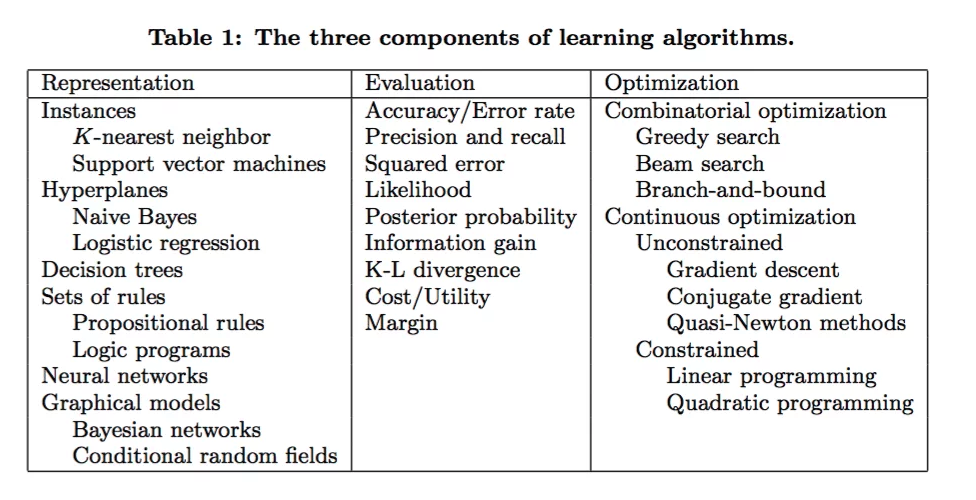
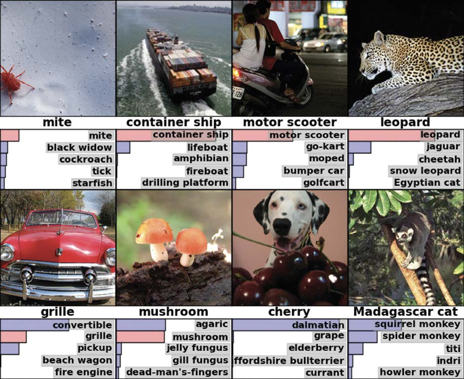
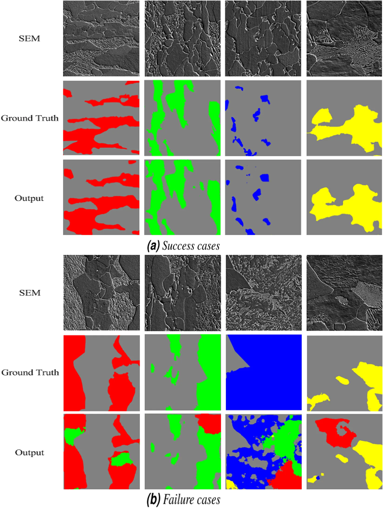
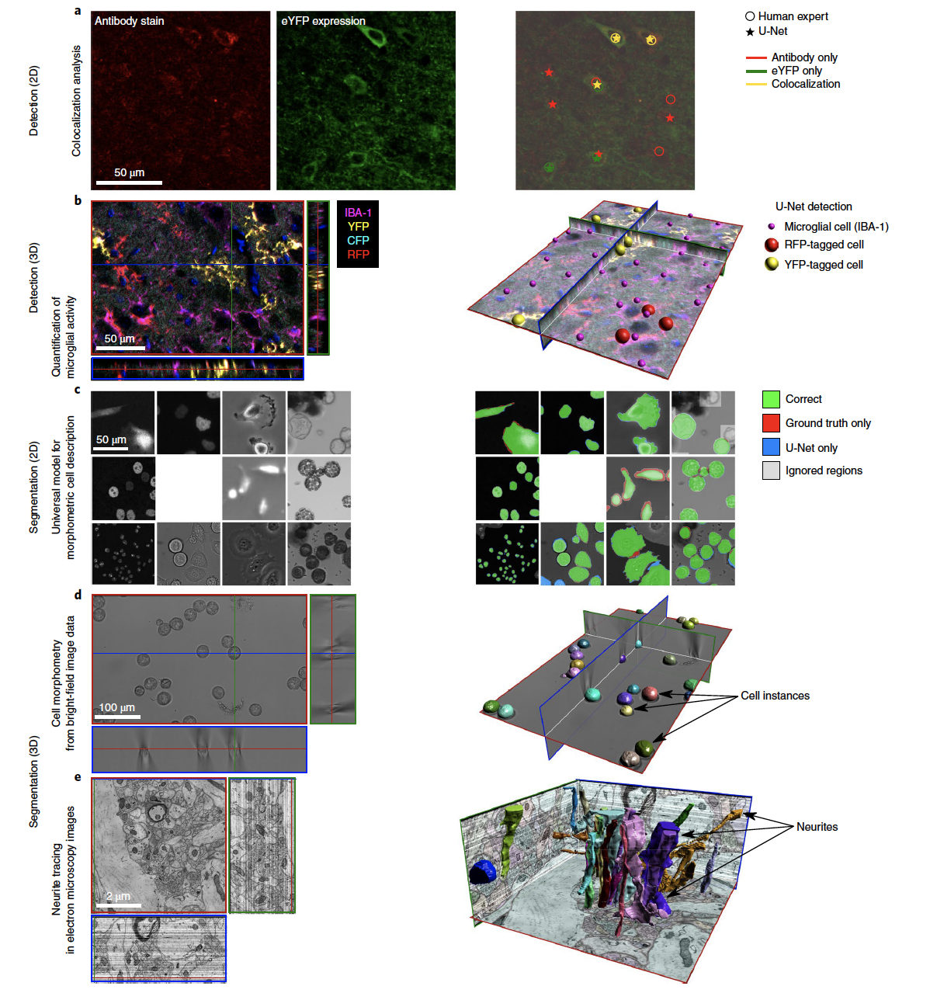
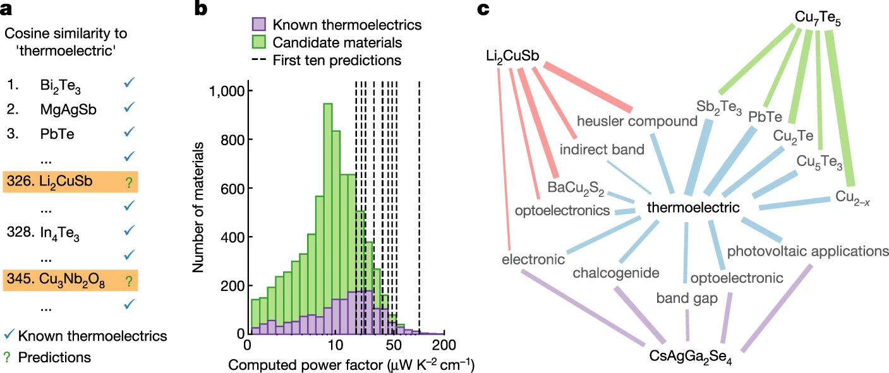
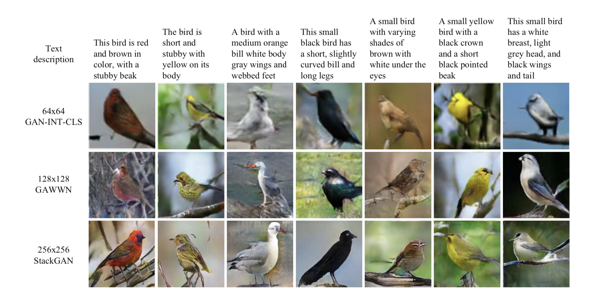
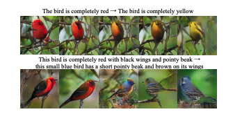
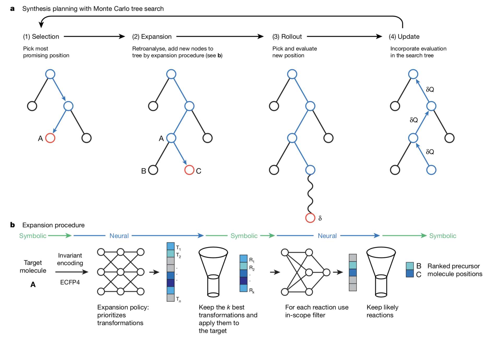
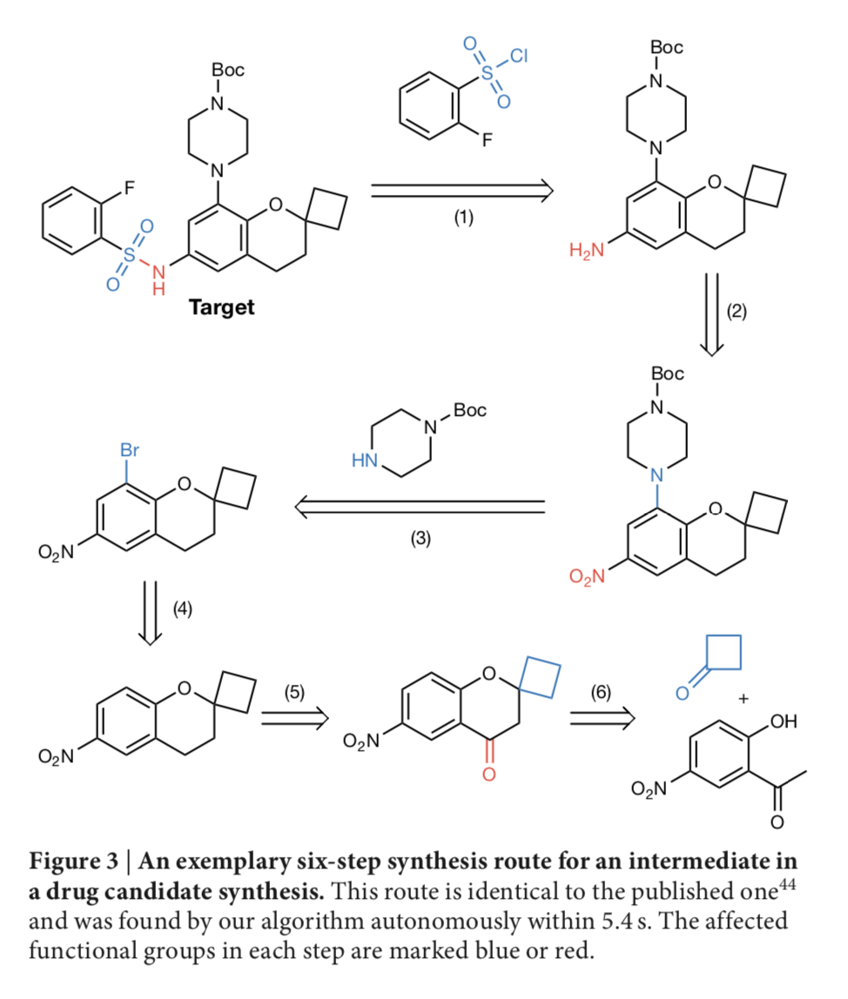

HTML('<blockquote class="twitter-tweet"><p lang="en" dir="ltr">Actually, no <a href="https://twitter.com/springerpub?ref_src=twsrc%5Etfw">@springerpub</a>, that's not Viridis. Someone butchered the online figure processing (PDF is OK). "Chasing Rainbows: A Color-Theoretic Framework for Improving and Preserving Bad Colormaps" <a href="https://t.co/USMkeQAdsD">https://t.co/USMkeQAdsD</a> <a href="https://t.co/zwETyXMVzB">pic.twitter.com/zwETyXMVzB</a></p>— Stefan van der Walt (@stefanvdwalt) <a href="https://twitter.com/stefanvdwalt/status/1166023380048306177?ref_src=twsrc%5Etfw">August 26, 2019</a></blockquote> <script async src="https://platform.twitter.com/widgets.js" charset="utf-8"></script>')
Actually, no @springerpub, that's not Viridis. Someone butchered the online figure processing (PDF is OK). "Chasing Rainbows: A Color-Theoretic Framework for Improving and Preserving Bad Colormaps" https://t.co/USMkeQAdsD pic.twitter.com/zwETyXMVzB
— Stefan van der Walt (@stefanvdwalt) August 26, 2019
HTML('<blockquote class="twitter-tweet"><p lang="en" dir="ltr">It's hard to let go \_()_/ <a href="https://t.co/JWA41x1WNM">https://t.co/JWA41x1WNM</a> One of the weirder things I've seen on the Google AI blog.</p>— Stefan van der Walt (@stefanvdwalt) <a href="https://twitter.com/stefanvdwalt/status/1167536735141515264?ref_src=twsrc%5Etfw">August 30, 2019</a></blockquote> <script async src="https://platform.twitter.com/widgets.js" charset="utf-8"></script>')
It's hard to let go \_()_/ https://t.co/JWA41x1WNM One of the weirder things I've seen on the Google AI blog.
— Stefan van der Walt (@stefanvdwalt) August 30, 2019
IFrame('https://ai.googleblog.com/2019/08/turbo-improved-rainbow-colormap-for.html', width=1000, height=1000)
What is Machine Learning?¶
Everyone write down their own definition
- Machine Learning at its most basic is the practice of using algorithms to parse data, learn from it, and then make a determination or prediction about something in the world. Nvidia
- Machine learning is based on algorithms that can learn from data without relying on rules-based programming.- McKinsey & Co.
- The field of Machine Learning seeks to answer the question How can we build computer systems that automatically improve with experience, and what are the fundamental laws that govern all learning processes? Carnegie Mellon University
- Machine learning research is part of research on artificial intelligence, seeking to provide knowledge to computers through data, observations and interacting with the world. That acquired knowledge allows computers to correctly generalize to new settings.
- Machine Learning is the science of getting computers to learn and act like humans do, and improve their learning over time in autonomous fashion, by feeding them data and information in the form of observations and real-world interactions.
Machine Learning Basic Concepts¶
Representations¶
- A set of classifers or the language that a computer understands
- How the model connects data to the objective
The way humans make inference from data is different than machines
Examples:
- K-nearest neighbors
- support vector machines
- decision trees
- neural networks
- ...
Evaluation¶
- how the model determines its success at completing an objective
The ways humans and computers quantify success at an objective is very different
Examples:
- accuracy/error rate
- squared error
- likelihood
- k-l divergence (entropy between two distributions)
- ...
Optimization¶
- the model search method
- how the model improves itself
- how the model values exploration vs. exploitation
The way that humans and computers optimize and solve problems is very different
Examples: Combinatorial optimization
- random search
- greedy search Continuous optimization
- gradient descent
- quasi-Newton method

IFrame(src='http://www.r2d3.us/visual-intro-to-machine-learning-part-1/', width=1000, height=800)
How we get machines to learn¶
- Choose the best learning algorithm
Other things that matter
- Collect and collate meaningful data
- Provide the data to the machine in a form that emphasizes the learning objective
It is not just about solving problems or doing thing. Machines that learn are useful to humans because with all of their processing power they are able to highlight patterns in big data that would have otherwise been missed
Challenges and Limitations¶
Overfitting¶

- It is possible to get perfect accuracy on a test set but have no ability to conduct inference on a new problem
- The model is not generalizable
I can classify types of apples but show me an orange and I am useless
Overfitting Example with Polynomials¶
# Defines the function
def true_fun(X):
return np.cos(1.5 * np.pi * X)
# sets a random seed for consistent plotting
np.random.seed(0)
# sets the number of samples
n_samples = 100
# Sets the range in degrees
degrees = [1, 4, 15]
# adds some noise to the data
X = np.sort(np.random.rand(n_samples))
y = true_fun(X) + np.random.randn(n_samples) * 0.3
# does the plotting
plt.figure(figsize=(14, 5))
# Loops around the number of degrees selected
for i in range(len(degrees)):
# makes the subplot
ax = plt.subplot(1, len(degrees), i + 1)
plt.setp(ax, xticks=(), yticks=())
# creates the polynomial
polynomial_features = PolynomialFeatures(degree=degrees[i],
include_bias=False)
# Least squares linear regression
linear_regression = LinearRegression()
# estabilishes a fitting pipeline
pipeline = Pipeline([("polynomial_features", polynomial_features),
("linear_regression", linear_regression)])
# does the fit
pipeline.fit(X[:, np.newaxis], y)
# Evaluate the models using crossvalidation
scores = cross_val_score(pipeline, X[:, np.newaxis], y,
scoring="neg_mean_squared_error", cv=10)
# Defines a linear vector
X_test = np.linspace(0, 1, 100)
# plots the real model
plt.plot(X_test, pipeline.predict(X_test[:, np.newaxis]), label="Model")
plt.plot(X_test, true_fun(X_test), label="True function")
# plots the generated data
plt.scatter(X, y, edgecolor='b', s=20, label="Samples")
# sets the axies format
plt.xlabel("x")
plt.ylabel("y")
plt.xlim((0, 1))
plt.ylim((-2, 2))
plt.legend(loc="best")
plt.title("Degree {}\nMSE = {:.2e}(+/- {:.2e})".format(
degrees[i], -scores.mean(), scores.std()))
![]()
# Real function
def linear_model(x):
return 3*x + 7
# defines a vector and generates data with random noise
x = np.linspace(0, 10, 10)
y = linear_model(x) + np.random.randn(len(x)) * 1
# Builds a class for defining a simple linear neural network
class Model:
def __init__(self, input_dim, dirName):
self.model = Sequential()
self.model.add(Dense(1, activation='relu', input_dim=input_dim))
self.model.compile(loss='mse', optimizer='adam', metrics=['accuracy'])
self.dirName = dirName
try:
# Create target Directory
os.mkdir(dirName)
print("Directory ", dirName, " Created ")
except FileExistsError:
print("Directory ", dirName, " already exists")
def train(self, x_train, y_train, epochs=101, save_imgs=True):
for epoch in np.arange(1, epochs):
self.model.fit(x_train, y_train, batch_size=128)
if save_imgs:
if epoch % 10 == 0:
plt.plot(x_train, y_train, 'o')
x_predict = np.linspace(
np.min(x_train), np.max(x_train), 100)
plt.plot(x_predict, self.model.predict(x_predict))
plt.axis([
x_train.min() - 0.5, x_train.max() + 0.5,
y_train.min() - 0.5, y_train.max() + 0.5,
])
plt.title(f"Epoch #{epoch}")
plt.savefig(self.dirName + f"/plot_{epoch:04d}.png")
plt.clf()
new_model = Model(1, 'linear_fit')
new_model.train(x, y, epochs=10000)
make_movie('./linear_fit/', './linear_fit/linear_fit.mp4', 30)
WARNING: Logging before flag parsing goes to stderr. W0909 10:01:36.580414 4479333824 deprecation_wrapper.py:119] From /Users/joshuaagar/anaconda3/lib/python3.7/site-packages/keras/backend/tensorflow_backend.py:66: The name tf.get_default_graph is deprecated. Please use tf.compat.v1.get_default_graph instead. W0909 10:01:36.598773 4479333824 deprecation_wrapper.py:119] From /Users/joshuaagar/anaconda3/lib/python3.7/site-packages/keras/backend/tensorflow_backend.py:541: The name tf.placeholder is deprecated. Please use tf.compat.v1.placeholder instead. W0909 10:01:36.603265 4479333824 deprecation_wrapper.py:119] From /Users/joshuaagar/anaconda3/lib/python3.7/site-packages/keras/backend/tensorflow_backend.py:4432: The name tf.random_uniform is deprecated. Please use tf.random.uniform instead. W0909 10:01:36.616675 4479333824 deprecation_wrapper.py:119] From /Users/joshuaagar/anaconda3/lib/python3.7/site-packages/keras/optimizers.py:793: The name tf.train.Optimizer is deprecated. Please use tf.compat.v1.train.Optimizer instead. W0909 10:01:36.708775 4479333824 deprecation_wrapper.py:119] From /Users/joshuaagar/anaconda3/lib/python3.7/site-packages/keras/backend/tensorflow_backend.py:1033: The name tf.assign_add is deprecated. Please use tf.compat.v1.assign_add instead. W0909 10:01:36.743088 4479333824 deprecation_wrapper.py:119] From /Users/joshuaagar/anaconda3/lib/python3.7/site-packages/keras/backend/tensorflow_backend.py:1020: The name tf.assign is deprecated. Please use tf.compat.v1.assign instead.
Directory linear_fit already exists Epoch 1/1 10/10 [==============================] - 0s 14ms/step - loss: 560.2098 - acc: 0.0000e+00 Epoch 1/1 10/10 [==============================] - 0s 70us/step - loss: 560.2098 - acc: 0.0000e+00 Epoch 1/1 10/10 [==============================] - 0s 71us/step - loss: 560.2098 - acc: 0.0000e+00 Epoch 1/1 10/10 [==============================] - 0s 97us/step - loss: 560.2098 - acc: 0.0000e+00 Epoch 1/1 10/10 [==============================] - 0s 92us/step - loss: 560.2098 - acc: 0.0000e+00 Epoch 1/1 10/10 [==============================] - 0s 79us/step - loss: 560.2098 - acc: 0.0000e+00 Epoch 1/1 10/10 [==============================] - 0s 88us/step - loss: 560.2098 - acc: 0.0000e+00 Epoch 1/1 10/10 [==============================] - 0s 114us/step - loss: 560.2098 - acc: 0.0000e+00 Epoch 1/1 10/10 [==============================] - 0s 101us/step - loss: 560.2098 - acc: 0.0000e+00 Epoch 1/1 10/10 [==============================] - 0s 123us/step - loss: 560.2098 - acc: 0.0000e+00 Epoch 1/1 10/10 [==============================] - 0s 82us/step - loss: 560.2098 - acc: 0.0000e+00 Epoch 1/1 10/10 [==============================] - 0s 83us/step - loss: 560.2098 - acc: 0.0000e+00 Epoch 1/1 10/10 [==============================] - 0s 89us/step - loss: 560.2098 - acc: 0.0000e+00 Epoch 1/1 10/10 [==============================] - 0s 88us/step - loss: 560.2098 - acc: 0.0000e+00 Epoch 1/1 10/10 [==============================] - 0s 94us/step - loss: 560.2098 - acc: 0.0000e+00 Epoch 1/1 10/10 [==============================] - 0s 77us/step - loss: 560.2098 - acc: 0.0000e+00 Epoch 1/1 10/10 [==============================] - 0s 80us/step - loss: 560.2098 - acc: 0.0000e+00 Epoch 1/1 10/10 [==============================] - 0s 84us/step - loss: 560.2098 - acc: 0.0000e+00 Epoch 1/1 10/10 [==============================] - 0s 100us/step - loss: 560.2098 - acc: 0.0000e+00 Epoch 1/1 10/10 [==============================] - 0s 107us/step - loss: 560.2097 - acc: 0.0000e+00 Epoch 1/1 10/10 [==============================] - 0s 120us/step - loss: 560.2098 - acc: 0.0000e+00 Epoch 1/1 10/10 [==============================] - 0s 125us/step - loss: 560.2098 - acc: 0.0000e+00 Epoch 1/1 10/10 [==============================] - 0s 226us/step - loss: 560.2098 - acc: 0.0000e+00 Epoch 1/1 10/10 [==============================] - 0s 369us/step - loss: 560.2098 - acc: 0.0000e+00 Epoch 1/1 10/10 [==============================] - 0s 152us/step - loss: 560.2098 - acc: 0.0000e+00 Epoch 1/1 10/10 [==============================] - 0s 173us/step - loss: 560.2098 - acc: 0.0000e+00 Epoch 1/1 10/10 [==============================] - 0s 172us/step - loss: 560.2098 - acc: 0.0000e+00 Epoch 1/1 10/10 [==============================] - 0s 274us/step - loss: 560.2098 - acc: 0.0000e+00 Epoch 1/1 10/10 [==============================] - 0s 162us/step - loss: 560.2098 - acc: 0.0000e+00 Epoch 1/1 10/10 [==============================] - 0s 194us/step - loss: 560.2098 - acc: 0.0000e+00 Epoch 1/1 10/10 [==============================] - 0s 90us/step - loss: 560.2098 - acc: 0.0000e+00 Epoch 1/1 10/10 [==============================] - 0s 81us/step - loss: 560.2098 - acc: 0.0000e+00 Epoch 1/1 10/10 [==============================] - 0s 80us/step - loss: 560.2098 - acc: 0.0000e+00 Epoch 1/1 10/10 [==============================] - 0s 86us/step - loss: 560.2098 - acc: 0.0000e+00 Epoch 1/1 10/10 [==============================] - 0s 79us/step - loss: 560.2097 - acc: 0.0000e+00 Epoch 1/1 10/10 [==============================] - 0s 76us/step - loss: 560.2098 - acc: 0.0000e+00 Epoch 1/1 10/10 [==============================] - 0s 75us/step - loss: 560.2098 - acc: 0.0000e+00 Epoch 1/1 10/10 [==============================] - 0s 81us/step - loss: 560.2098 - acc: 0.0000e+00 Epoch 1/1 10/10 [==============================] - 0s 99us/step - loss: 560.2098 - acc: 0.0000e+00 Epoch 1/1 10/10 [==============================] - 0s 133us/step - loss: 560.2098 - acc: 0.0000e+00 Epoch 1/1 10/10 [==============================] - 0s 74us/step - loss: 560.2098 - acc: 0.0000e+00 Epoch 1/1 10/10 [==============================] - 0s 71us/step - loss: 560.2098 - acc: 0.0000e+00 Epoch 1/1 10/10 [==============================] - 0s 71us/step - loss: 560.2098 - acc: 0.0000e+00 Epoch 1/1 10/10 [==============================] - 0s 92us/step - loss: 560.2098 - acc: 0.0000e+00 Epoch 1/1 10/10 [==============================] - 0s 82us/step - loss: 560.2098 - acc: 0.0000e+00 Epoch 1/1 10/10 [==============================] - 0s 86us/step - loss: 560.2098 - acc: 0.0000e+00 Epoch 1/1 10/10 [==============================] - 0s 82us/step - loss: 560.2098 - acc: 0.0000e+00 Epoch 1/1 10/10 [==============================] - 0s 81us/step - loss: 560.2098 - acc: 0.0000e+00 Epoch 1/1 10/10 [==============================] - 0s 83us/step - loss: 560.2098 - acc: 0.0000e+00 Epoch 1/1 10/10 [==============================] - 0s 102us/step - loss: 560.2098 - acc: 0.0000e+00 Epoch 1/1 10/10 [==============================] - 0s 109us/step - loss: 560.2098 - acc: 0.0000e+00 Epoch 1/1 10/10 [==============================] - 0s 94us/step - loss: 560.2098 - acc: 0.0000e+00 Epoch 1/1 10/10 [==============================] - 0s 85us/step - loss: 560.2098 - acc: 0.0000e+00 Epoch 1/1 10/10 [==============================] - 0s 99us/step - loss: 560.2098 - acc: 0.0000e+00 Epoch 1/1 10/10 [==============================] - 0s 88us/step - loss: 560.2098 - acc: 0.0000e+00 Epoch 1/1 10/10 [==============================] - 0s 97us/step - loss: 560.2098 - acc: 0.0000e+00 Epoch 1/1 10/10 [==============================] - 0s 83us/step - loss: 560.2098 - acc: 0.0000e+00 Epoch 1/1 10/10 [==============================] - 0s 76us/step - loss: 560.2098 - acc: 0.0000e+00 Epoch 1/1 10/10 [==============================] - 0s 68us/step - loss: 560.2098 - acc: 0.0000e+00 Epoch 1/1 10/10 [==============================] - 0s 79us/step - loss: 560.2098 - acc: 0.0000e+00 Epoch 1/1 10/10 [==============================] - 0s 81us/step - loss: 560.2098 - acc: 0.0000e+00 Epoch 1/1 10/10 [==============================] - 0s 86us/step - loss: 560.2098 - acc: 0.0000e+00 Epoch 1/1 10/10 [==============================] - 0s 131us/step - loss: 560.2098 - acc: 0.0000e+00 Epoch 1/1 10/10 [==============================] - 0s 76us/step - loss: 560.2098 - acc: 0.0000e+00 Epoch 1/1 10/10 [==============================] - 0s 137us/step - loss: 560.2098 - acc: 0.0000e+00 Epoch 1/1 10/10 [==============================] - 0s 83us/step - loss: 560.2098 - acc: 0.0000e+00 Epoch 1/1 10/10 [==============================] - 0s 75us/step - loss: 560.2098 - acc: 0.0000e+00 Epoch 1/1 10/10 [==============================] - 0s 87us/step - loss: 560.2098 - acc: 0.0000e+00 Epoch 1/1 10/10 [==============================] - 0s 93us/step - loss: 560.2098 - acc: 0.0000e+00 Epoch 1/1 10/10 [==============================] - 0s 70us/step - loss: 560.2098 - acc: 0.0000e+00 Epoch 1/1 10/10 [==============================] - 0s 98us/step - loss: 560.2098 - acc: 0.0000e+00 Epoch 1/1 10/10 [==============================] - 0s 106us/step - loss: 560.2098 - acc: 0.0000e+00 Epoch 1/1 10/10 [==============================] - 0s 87us/step - loss: 560.2098 - acc: 0.0000e+00 Epoch 1/1 10/10 [==============================] - 0s 80us/step - loss: 560.2098 - acc: 0.0000e+00 Epoch 1/1 10/10 [==============================] - 0s 67us/step - loss: 560.2098 - acc: 0.0000e+00 Epoch 1/1 10/10 [==============================] - 0s 79us/step - loss: 560.2098 - acc: 0.0000e+00 Epoch 1/1 10/10 [==============================] - 0s 78us/step - loss: 560.2098 - acc: 0.0000e+00 Epoch 1/1 10/10 [==============================] - 0s 77us/step - loss: 560.2098 - acc: 0.0000e+00 Epoch 1/1 10/10 [==============================] - 0s 75us/step - loss: 560.2098 - acc: 0.0000e+00 Epoch 1/1 10/10 [==============================] - 0s 96us/step - loss: 560.2098 - acc: 0.0000e+00 Epoch 1/1 10/10 [==============================] - 0s 80us/step - loss: 560.2098 - acc: 0.0000e+00 Epoch 1/1 10/10 [==============================] - 0s 82us/step - loss: 560.2098 - acc: 0.0000e+00 Epoch 1/1 10/10 [==============================] - 0s 79us/step - loss: 560.2098 - acc: 0.0000e+00 Epoch 1/1 10/10 [==============================] - 0s 71us/step - loss: 560.2098 - acc: 0.0000e+00 Epoch 1/1 10/10 [==============================] - 0s 80us/step - loss: 560.2098 - acc: 0.0000e+00 Epoch 1/1 10/10 [==============================] - 0s 82us/step - loss: 560.2098 - acc: 0.0000e+00 Epoch 1/1 10/10 [==============================] - 0s 85us/step - loss: 560.2098 - acc: 0.0000e+00 Epoch 1/1 10/10 [==============================] - 0s 95us/step - loss: 560.2097 - acc: 0.0000e+00 Epoch 1/1 10/10 [==============================] - 0s 72us/step - loss: 560.2098 - acc: 0.0000e+00 Epoch 1/1 10/10 [==============================] - 0s 71us/step - loss: 560.2098 - acc: 0.0000e+00 Epoch 1/1 10/10 [==============================] - 0s 84us/step - loss: 560.2098 - acc: 0.0000e+00 Epoch 1/1 10/10 [==============================] - 0s 70us/step - loss: 560.2098 - acc: 0.0000e+00 Epoch 1/1 10/10 [==============================] - 0s 86us/step - loss: 560.2098 - acc: 0.0000e+00 Epoch 1/1 10/10 [==============================] - 0s 82us/step - loss: 560.2098 - acc: 0.0000e+00 Epoch 1/1 10/10 [==============================] - 0s 89us/step - loss: 560.2098 - acc: 0.0000e+00 Epoch 1/1 10/10 [==============================] - 0s 89us/step - loss: 560.2098 - acc: 0.0000e+00 Epoch 1/1 10/10 [==============================] - 0s 84us/step - loss: 560.2098 - acc: 0.0000e+00 Epoch 1/1 10/10 [==============================] - 0s 86us/step - loss: 560.2098 - acc: 0.0000e+00 Epoch 1/1 10/10 [==============================] - 0s 65us/step - loss: 560.2098 - acc: 0.0000e+00 Epoch 1/1 10/10 [==============================] - 0s 61us/step - loss: 560.2098 - acc: 0.0000e+00 Epoch 1/1 10/10 [==============================] - 0s 103us/step - loss: 560.2098 - acc: 0.0000e+00 Epoch 1/1 10/10 [==============================] - 0s 75us/step - loss: 560.2098 - acc: 0.0000e+00 Epoch 1/1 10/10 [==============================] - 0s 79us/step - loss: 560.2097 - acc: 0.0000e+00 Epoch 1/1 10/10 [==============================] - 0s 72us/step - loss: 560.2098 - acc: 0.0000e+00 Epoch 1/1 10/10 [==============================] - 0s 81us/step - loss: 560.2098 - acc: 0.0000e+00 Epoch 1/1 10/10 [==============================] - 0s 92us/step - loss: 560.2098 - acc: 0.0000e+00 Epoch 1/1 10/10 [==============================] - 0s 79us/step - loss: 560.2097 - acc: 0.0000e+00 Epoch 1/1 10/10 [==============================] - 0s 82us/step - loss: 560.2098 - acc: 0.0000e+00 Epoch 1/1 10/10 [==============================] - 0s 90us/step - loss: 560.2098 - acc: 0.0000e+00 Epoch 1/1 10/10 [==============================] - 0s 76us/step - loss: 560.2098 - acc: 0.0000e+00 Epoch 1/1 10/10 [==============================] - 0s 91us/step - loss: 560.2098 - acc: 0.0000e+00 Epoch 1/1 10/10 [==============================] - 0s 96us/step - loss: 560.2098 - acc: 0.0000e+00 Epoch 1/1 10/10 [==============================] - 0s 88us/step - loss: 560.2097 - acc: 0.0000e+00 Epoch 1/1 10/10 [==============================] - 0s 87us/step - loss: 560.2098 - acc: 0.0000e+00 Epoch 1/1 10/10 [==============================] - 0s 94us/step - loss: 560.2098 - acc: 0.0000e+00 Epoch 1/1 10/10 [==============================] - 0s 95us/step - loss: 560.2098 - acc: 0.0000e+00 Epoch 1/1 10/10 [==============================] - 0s 111us/step - loss: 560.2098 - acc: 0.0000e+00 Epoch 1/1 10/10 [==============================] - 0s 104us/step - loss: 560.2098 - acc: 0.0000e+00 Epoch 1/1 10/10 [==============================] - 0s 121us/step - loss: 560.2098 - acc: 0.0000e+00 Epoch 1/1 10/10 [==============================] - 0s 114us/step - loss: 560.2098 - acc: 0.0000e+00 Epoch 1/1 10/10 [==============================] - 0s 89us/step - loss: 560.2098 - acc: 0.0000e+00 Epoch 1/1 10/10 [==============================] - 0s 75us/step - loss: 560.2098 - acc: 0.0000e+00 Epoch 1/1 10/10 [==============================] - 0s 77us/step - loss: 560.2098 - acc: 0.0000e+00 Epoch 1/1 10/10 [==============================] - 0s 75us/step - loss: 560.2098 - acc: 0.0000e+00 Epoch 1/1 10/10 [==============================] - 0s 82us/step - loss: 560.2097 - acc: 0.0000e+00 Epoch 1/1 10/10 [==============================] - 0s 78us/step - loss: 560.2097 - acc: 0.0000e+00 Epoch 1/1 10/10 [==============================] - 0s 81us/step - loss: 560.2098 - acc: 0.0000e+00 Epoch 1/1 10/10 [==============================] - 0s 81us/step - loss: 560.2098 - acc: 0.0000e+00 Epoch 1/1 10/10 [==============================] - 0s 105us/step - loss: 560.2098 - acc: 0.0000e+00 Epoch 1/1 10/10 [==============================] - 0s 75us/step - loss: 560.2098 - acc: 0.0000e+00 Epoch 1/1 10/10 [==============================] - 0s 102us/step - loss: 560.2098 - acc: 0.0000e+00 Epoch 1/1 10/10 [==============================] - 0s 71us/step - loss: 560.2098 - acc: 0.0000e+00 Epoch 1/1 10/10 [==============================] - 0s 75us/step - loss: 560.2098 - acc: 0.0000e+00 Epoch 1/1 10/10 [==============================] - 0s 68us/step - loss: 560.2098 - acc: 0.0000e+00 Epoch 1/1 10/10 [==============================] - 0s 74us/step - loss: 560.2097 - acc: 0.0000e+00 Epoch 1/1 10/10 [==============================] - 0s 65us/step - loss: 560.2098 - acc: 0.0000e+00 Epoch 1/1 10/10 [==============================] - 0s 59us/step - loss: 560.2098 - acc: 0.0000e+00 Epoch 1/1 10/10 [==============================] - 0s 61us/step - loss: 560.2097 - acc: 0.0000e+00 Epoch 1/1 10/10 [==============================] - 0s 88us/step - loss: 560.2097 - acc: 0.0000e+00 Epoch 1/1 10/10 [==============================] - 0s 88us/step - loss: 560.2098 - acc: 0.0000e+00 Epoch 1/1 10/10 [==============================] - 0s 79us/step - loss: 560.2098 - acc: 0.0000e+00 Epoch 1/1 10/10 [==============================] - 0s 67us/step - loss: 560.2097 - acc: 0.0000e+00 Epoch 1/1 10/10 [==============================] - 0s 62us/step - loss: 560.2098 - acc: 0.0000e+00 Epoch 1/1 10/10 [==============================] - 0s 69us/step - loss: 560.2098 - acc: 0.0000e+00 Epoch 1/1 10/10 [==============================] - 0s 56us/step - loss: 560.2097 - acc: 0.0000e+00 Epoch 1/1 10/10 [==============================] - 0s 95us/step - loss: 560.2098 - acc: 0.0000e+00 Epoch 1/1 10/10 [==============================] - 0s 71us/step - loss: 560.2098 - acc: 0.0000e+00 Epoch 1/1 10/10 [==============================] - 0s 73us/step - loss: 560.2098 - acc: 0.0000e+00 Epoch 1/1 10/10 [==============================] - 0s 59us/step - loss: 560.2098 - acc: 0.0000e+00 Epoch 1/1 10/10 [==============================] - 0s 101us/step - loss: 560.2098 - acc: 0.0000e+00 Epoch 1/1 10/10 [==============================] - 0s 82us/step - loss: 560.2098 - acc: 0.0000e+00 Epoch 1/1 10/10 [==============================] - 0s 82us/step - loss: 560.2098 - acc: 0.0000e+00 Epoch 1/1 10/10 [==============================] - 0s 66us/step - loss: 560.2098 - acc: 0.0000e+00 Epoch 1/1 10/10 [==============================] - 0s 61us/step - loss: 560.2098 - acc: 0.0000e+00 Epoch 1/1 10/10 [==============================] - 0s 61us/step - loss: 560.2098 - acc: 0.0000e+00 Epoch 1/1 10/10 [==============================] - 0s 75us/step - loss: 560.2098 - acc: 0.0000e+00 Epoch 1/1 10/10 [==============================] - 0s 90us/step - loss: 560.2098 - acc: 0.0000e+00 Epoch 1/1 10/10 [==============================] - 0s 75us/step - loss: 560.2098 - acc: 0.0000e+00 Epoch 1/1 10/10 [==============================] - 0s 67us/step - loss: 560.2098 - acc: 0.0000e+00 Epoch 1/1 10/10 [==============================] - 0s 72us/step - loss: 560.2098 - acc: 0.0000e+00 Epoch 1/1 10/10 [==============================] - 0s 101us/step - loss: 560.2098 - acc: 0.0000e+00 Epoch 1/1 10/10 [==============================] - 0s 78us/step - loss: 560.2098 - acc: 0.0000e+00 Epoch 1/1 10/10 [==============================] - 0s 88us/step - loss: 560.2098 - acc: 0.0000e+00 Epoch 1/1 10/10 [==============================] - 0s 97us/step - loss: 560.2098 - acc: 0.0000e+00 Epoch 1/1 10/10 [==============================] - 0s 96us/step - loss: 560.2097 - acc: 0.0000e+00 Epoch 1/1 10/10 [==============================] - 0s 82us/step - loss: 560.2098 - acc: 0.0000e+00 Epoch 1/1 10/10 [==============================] - 0s 88us/step - loss: 560.2098 - acc: 0.0000e+00 Epoch 1/1 10/10 [==============================] - 0s 104us/step - loss: 560.2098 - acc: 0.0000e+00 Epoch 1/1 10/10 [==============================] - 0s 86us/step - loss: 560.2098 - acc: 0.0000e+00 Epoch 1/1 10/10 [==============================] - 0s 108us/step - loss: 560.2098 - acc: 0.0000e+00 Epoch 1/1 10/10 [==============================] - 0s 90us/step - loss: 560.2098 - acc: 0.0000e+00 Epoch 1/1 10/10 [==============================] - 0s 65us/step - loss: 560.2098 - acc: 0.0000e+00 Epoch 1/1 10/10 [==============================] - 0s 64us/step - loss: 560.2098 - acc: 0.0000e+00 Epoch 1/1 10/10 [==============================] - 0s 78us/step - loss: 560.2098 - acc: 0.0000e+00 Epoch 1/1 10/10 [==============================] - 0s 115us/step - loss: 560.2098 - acc: 0.0000e+00 Epoch 1/1 10/10 [==============================] - 0s 93us/step - loss: 560.2098 - acc: 0.0000e+00 Epoch 1/1 10/10 [==============================] - 0s 88us/step - loss: 560.2098 - acc: 0.0000e+00 Epoch 1/1 10/10 [==============================] - 0s 67us/step - loss: 560.2098 - acc: 0.0000e+00 Epoch 1/1 10/10 [==============================] - 0s 105us/step - loss: 560.2098 - acc: 0.0000e+00 Epoch 1/1 10/10 [==============================] - 0s 75us/step - loss: 560.2098 - acc: 0.0000e+00 Epoch 1/1 10/10 [==============================] - 0s 78us/step - loss: 560.2098 - acc: 0.0000e+00 Epoch 1/1 10/10 [==============================] - 0s 67us/step - loss: 560.2098 - acc: 0.0000e+00 Epoch 1/1 10/10 [==============================] - 0s 72us/step - loss: 560.2098 - acc: 0.0000e+00 Epoch 1/1 10/10 [==============================] - 0s 70us/step - loss: 560.2098 - acc: 0.0000e+00 Epoch 1/1 10/10 [==============================] - 0s 86us/step - loss: 560.2098 - acc: 0.0000e+00 Epoch 1/1 10/10 [==============================] - 0s 73us/step - loss: 560.2098 - acc: 0.0000e+00 Epoch 1/1 10/10 [==============================] - 0s 66us/step - loss: 560.2098 - acc: 0.0000e+00 Epoch 1/1 10/10 [==============================] - 0s 93us/step - loss: 560.2098 - acc: 0.0000e+00 Epoch 1/1 10/10 [==============================] - 0s 78us/step - loss: 560.2098 - acc: 0.0000e+00 Epoch 1/1 10/10 [==============================] - 0s 79us/step - loss: 560.2098 - acc: 0.0000e+00 Epoch 1/1 10/10 [==============================] - 0s 76us/step - loss: 560.2098 - acc: 0.0000e+00 Epoch 1/1 10/10 [==============================] - 0s 61us/step - loss: 560.2098 - acc: 0.0000e+00 Epoch 1/1 10/10 [==============================] - 0s 67us/step - loss: 560.2098 - acc: 0.0000e+00 Epoch 1/1 10/10 [==============================] - 0s 72us/step - loss: 560.2098 - acc: 0.0000e+00 Epoch 1/1 10/10 [==============================] - 0s 95us/step - loss: 560.2098 - acc: 0.0000e+00 Epoch 1/1 10/10 [==============================] - 0s 124us/step - loss: 560.2098 - acc: 0.0000e+00 Epoch 1/1 10/10 [==============================] - 0s 138us/step - loss: 560.2098 - acc: 0.0000e+00 Epoch 1/1 10/10 [==============================] - 0s 105us/step - loss: 560.2098 - acc: 0.0000e+00 Epoch 1/1 10/10 [==============================] - 0s 108us/step - loss: 560.2098 - acc: 0.0000e+00 Epoch 1/1 10/10 [==============================] - 0s 86us/step - loss: 560.2098 - acc: 0.0000e+00 Epoch 1/1 10/10 [==============================] - 0s 86us/step - loss: 560.2098 - acc: 0.0000e+00 Epoch 1/1 10/10 [==============================] - 0s 84us/step - loss: 560.2098 - acc: 0.0000e+00 Epoch 1/1 10/10 [==============================] - 0s 77us/step - loss: 560.2098 - acc: 0.0000e+00 Epoch 1/1 10/10 [==============================] - 0s 86us/step - loss: 560.2098 - acc: 0.0000e+00 Epoch 1/1 10/10 [==============================] - 0s 103us/step - loss: 560.2098 - acc: 0.0000e+00 Epoch 1/1 10/10 [==============================] - 0s 72us/step - loss: 560.2098 - acc: 0.0000e+00 Epoch 1/1 10/10 [==============================] - 0s 78us/step - loss: 560.2098 - acc: 0.0000e+00 Epoch 1/1 10/10 [==============================] - 0s 84us/step - loss: 560.2098 - acc: 0.0000e+00 Epoch 1/1 10/10 [==============================] - 0s 71us/step - loss: 560.2098 - acc: 0.0000e+00 Epoch 1/1 10/10 [==============================] - 0s 69us/step - loss: 560.2098 - acc: 0.0000e+00 Epoch 1/1 10/10 [==============================] - 0s 90us/step - loss: 560.2098 - acc: 0.0000e+00 Epoch 1/1 10/10 [==============================] - 0s 107us/step - loss: 560.2098 - acc: 0.0000e+00 Epoch 1/1 10/10 [==============================] - 0s 114us/step - loss: 560.2098 - acc: 0.0000e+00 Epoch 1/1 10/10 [==============================] - 0s 208us/step - loss: 560.2098 - acc: 0.0000e+00 Epoch 1/1 10/10 [==============================] - 0s 162us/step - loss: 560.2098 - acc: 0.0000e+00 Epoch 1/1 10/10 [==============================] - 0s 178us/step - loss: 560.2098 - acc: 0.0000e+00 Epoch 1/1 10/10 [==============================] - 0s 131us/step - loss: 560.2098 - acc: 0.0000e+00 Epoch 1/1 10/10 [==============================] - 0s 124us/step - loss: 560.2098 - acc: 0.0000e+00 Epoch 1/1 10/10 [==============================] - 0s 112us/step - loss: 560.2097 - acc: 0.0000e+00 Epoch 1/1 10/10 [==============================] - 0s 137us/step - loss: 560.2098 - acc: 0.0000e+00 Epoch 1/1 10/10 [==============================] - 0s 87us/step - loss: 560.2098 - acc: 0.0000e+00 Epoch 1/1 10/10 [==============================] - 0s 64us/step - loss: 560.2098 - acc: 0.0000e+00 Epoch 1/1 10/10 [==============================] - 0s 109us/step - loss: 560.2098 - acc: 0.0000e+00 Epoch 1/1 10/10 [==============================] - 0s 68us/step - loss: 560.2098 - acc: 0.0000e+00 Epoch 1/1 10/10 [==============================] - 0s 78us/step - loss: 560.2098 - acc: 0.0000e+00 Epoch 1/1 10/10 [==============================] - 0s 73us/step - loss: 560.2098 - acc: 0.0000e+00 Epoch 1/1 10/10 [==============================] - 0s 106us/step - loss: 560.2098 - acc: 0.0000e+00 Epoch 1/1 10/10 [==============================] - 0s 81us/step - loss: 560.2098 - acc: 0.0000e+00 Epoch 1/1 10/10 [==============================] - 0s 109us/step - loss: 560.2098 - acc: 0.0000e+00 Epoch 1/1 10/10 [==============================] - 0s 78us/step - loss: 560.2098 - acc: 0.0000e+00 Epoch 1/1 10/10 [==============================] - 0s 87us/step - loss: 560.2098 - acc: 0.0000e+00 Epoch 1/1 10/10 [==============================] - 0s 75us/step - loss: 560.2098 - acc: 0.0000e+00 Epoch 1/1 10/10 [==============================] - 0s 70us/step - loss: 560.2098 - acc: 0.0000e+00 Epoch 1/1 10/10 [==============================] - 0s 76us/step - loss: 560.2098 - acc: 0.0000e+00 Epoch 1/1 10/10 [==============================] - 0s 90us/step - loss: 560.2098 - acc: 0.0000e+00 Epoch 1/1 10/10 [==============================] - 0s 92us/step - loss: 560.2098 - acc: 0.0000e+00 Epoch 1/1 10/10 [==============================] - 0s 97us/step - loss: 560.2098 - acc: 0.0000e+00 Epoch 1/1 10/10 [==============================] - 0s 87us/step - loss: 560.2098 - acc: 0.0000e+00 Epoch 1/1 10/10 [==============================] - 0s 70us/step - loss: 560.2098 - acc: 0.0000e+00 Epoch 1/1 10/10 [==============================] - 0s 63us/step - loss: 560.2098 - acc: 0.0000e+00 Epoch 1/1 10/10 [==============================] - 0s 78us/step - loss: 560.2098 - acc: 0.0000e+00 Epoch 1/1 10/10 [==============================] - 0s 91us/step - loss: 560.2098 - acc: 0.0000e+00 Epoch 1/1 10/10 [==============================] - 0s 79us/step - loss: 560.2098 - acc: 0.0000e+00 Epoch 1/1 10/10 [==============================] - 0s 93us/step - loss: 560.2098 - acc: 0.0000e+00 Epoch 1/1 10/10 [==============================] - 0s 98us/step - loss: 560.2098 - acc: 0.0000e+00 Epoch 1/1 10/10 [==============================] - 0s 123us/step - loss: 560.2097 - acc: 0.0000e+00 Epoch 1/1 10/10 [==============================] - 0s 86us/step - loss: 560.2098 - acc: 0.0000e+00 Epoch 1/1 10/10 [==============================] - 0s 75us/step - loss: 560.2098 - acc: 0.0000e+00 Epoch 1/1 10/10 [==============================] - 0s 73us/step - loss: 560.2098 - acc: 0.0000e+00 Epoch 1/1 10/10 [==============================] - 0s 69us/step - loss: 560.2098 - acc: 0.0000e+00 Epoch 1/1 10/10 [==============================] - 0s 76us/step - loss: 560.2098 - acc: 0.0000e+00 Epoch 1/1 10/10 [==============================] - 0s 85us/step - loss: 560.2097 - acc: 0.0000e+00 Epoch 1/1 10/10 [==============================] - 0s 117us/step - loss: 560.2098 - acc: 0.0000e+00 Epoch 1/1 10/10 [==============================] - 0s 140us/step - loss: 560.2097 - acc: 0.0000e+00 Epoch 1/1 10/10 [==============================] - 0s 114us/step - loss: 560.2098 - acc: 0.0000e+00 Epoch 1/1 10/10 [==============================] - 0s 81us/step - loss: 560.2098 - acc: 0.0000e+00 Epoch 1/1 10/10 [==============================] - 0s 71us/step - loss: 560.2098 - acc: 0.0000e+00 Epoch 1/1 10/10 [==============================] - 0s 93us/step - loss: 560.2098 - acc: 0.0000e+00 Epoch 1/1 10/10 [==============================] - 0s 66us/step - loss: 560.2098 - acc: 0.0000e+00 Epoch 1/1 10/10 [==============================] - 0s 72us/step - loss: 560.2098 - acc: 0.0000e+00 Epoch 1/1 10/10 [==============================] - 0s 88us/step - loss: 560.2098 - acc: 0.0000e+00 Epoch 1/1 10/10 [==============================] - 0s 68us/step - loss: 560.2098 - acc: 0.0000e+00 Epoch 1/1 10/10 [==============================] - 0s 87us/step - loss: 560.2098 - acc: 0.0000e+00 Epoch 1/1 10/10 [==============================] - 0s 113us/step - loss: 560.2098 - acc: 0.0000e+00 Epoch 1/1 10/10 [==============================] - 0s 115us/step - loss: 560.2098 - acc: 0.0000e+00 Epoch 1/1 10/10 [==============================] - 0s 86us/step - loss: 560.2098 - acc: 0.0000e+00 Epoch 1/1 10/10 [==============================] - 0s 70us/step - loss: 560.2098 - acc: 0.0000e+00 Epoch 1/1 10/10 [==============================] - 0s 110us/step - loss: 560.2098 - acc: 0.0000e+00 Epoch 1/1 10/10 [==============================] - 0s 81us/step - loss: 560.2098 - acc: 0.0000e+00 Epoch 1/1 10/10 [==============================] - 0s 73us/step - loss: 560.2098 - acc: 0.0000e+00 Epoch 1/1 10/10 [==============================] - 0s 81us/step - loss: 560.2098 - acc: 0.0000e+00 Epoch 1/1 10/10 [==============================] - 0s 96us/step - loss: 560.2098 - acc: 0.0000e+00 Epoch 1/1 10/10 [==============================] - 0s 76us/step - loss: 560.2098 - acc: 0.0000e+00 Epoch 1/1 10/10 [==============================] - 0s 88us/step - loss: 560.2098 - acc: 0.0000e+00 Epoch 1/1 10/10 [==============================] - 0s 74us/step - loss: 560.2098 - acc: 0.0000e+00 Epoch 1/1 10/10 [==============================] - 0s 84us/step - loss: 560.2098 - acc: 0.0000e+00 Epoch 1/1 10/10 [==============================] - 0s 79us/step - loss: 560.2098 - acc: 0.0000e+00 Epoch 1/1 10/10 [==============================] - 0s 74us/step - loss: 560.2098 - acc: 0.0000e+00 Epoch 1/1 10/10 [==============================] - 0s 82us/step - loss: 560.2098 - acc: 0.0000e+00 Epoch 1/1 10/10 [==============================] - 0s 71us/step - loss: 560.2098 - acc: 0.0000e+00 Epoch 1/1 10/10 [==============================] - 0s 86us/step - loss: 560.2098 - acc: 0.0000e+00 Epoch 1/1 10/10 [==============================] - 0s 69us/step - loss: 560.2098 - acc: 0.0000e+00 Epoch 1/1 10/10 [==============================] - 0s 71us/step - loss: 560.2098 - acc: 0.0000e+00 Epoch 1/1 10/10 [==============================] - 0s 62us/step - loss: 560.2098 - acc: 0.0000e+00 Epoch 1/1 10/10 [==============================] - 0s 83us/step - loss: 560.2098 - acc: 0.0000e+00 Epoch 1/1 10/10 [==============================] - 0s 79us/step - loss: 560.2098 - acc: 0.0000e+00 Epoch 1/1 10/10 [==============================] - 0s 83us/step - loss: 560.2098 - acc: 0.0000e+00 Epoch 1/1 10/10 [==============================] - 0s 78us/step - loss: 560.2098 - acc: 0.0000e+00 Epoch 1/1 10/10 [==============================] - 0s 72us/step - loss: 560.2098 - acc: 0.0000e+00 Epoch 1/1 10/10 [==============================] - 0s 67us/step - loss: 560.2098 - acc: 0.0000e+00 Epoch 1/1 10/10 [==============================] - 0s 80us/step - loss: 560.2098 - acc: 0.0000e+00 Epoch 1/1 10/10 [==============================] - 0s 76us/step - loss: 560.2098 - acc: 0.0000e+00 Epoch 1/1 10/10 [==============================] - 0s 69us/step - loss: 560.2098 - acc: 0.0000e+00 Epoch 1/1 10/10 [==============================] - 0s 77us/step - loss: 560.2098 - acc: 0.0000e+00 Epoch 1/1 10/10 [==============================] - 0s 68us/step - loss: 560.2098 - acc: 0.0000e+00 Epoch 1/1 10/10 [==============================] - 0s 81us/step - loss: 560.2098 - acc: 0.0000e+00 Epoch 1/1 10/10 [==============================] - 0s 74us/step - loss: 560.2098 - acc: 0.0000e+00 Epoch 1/1 10/10 [==============================] - 0s 70us/step - loss: 560.2098 - acc: 0.0000e+00 Epoch 1/1 10/10 [==============================] - 0s 95us/step - loss: 560.2098 - acc: 0.0000e+00 Epoch 1/1 10/10 [==============================] - 0s 98us/step - loss: 560.2098 - acc: 0.0000e+00 Epoch 1/1 10/10 [==============================] - 0s 92us/step - loss: 560.2098 - acc: 0.0000e+00 Epoch 1/1 10/10 [==============================] - 0s 86us/step - loss: 560.2098 - acc: 0.0000e+00 Epoch 1/1 10/10 [==============================] - 0s 109us/step - loss: 560.2098 - acc: 0.0000e+00 Epoch 1/1 10/10 [==============================] - 0s 89us/step - loss: 560.2098 - acc: 0.0000e+00 Epoch 1/1 10/10 [==============================] - 0s 82us/step - loss: 560.2098 - acc: 0.0000e+00 Epoch 1/1 10/10 [==============================] - 0s 76us/step - loss: 560.2098 - acc: 0.0000e+00 Epoch 1/1 10/10 [==============================] - 0s 85us/step - loss: 560.2098 - acc: 0.0000e+00 Epoch 1/1 10/10 [==============================] - 0s 130us/step - loss: 560.2098 - acc: 0.0000e+00 Epoch 1/1 10/10 [==============================] - 0s 83us/step - loss: 560.2098 - acc: 0.0000e+00 Epoch 1/1 10/10 [==============================] - 0s 126us/step - loss: 560.2098 - acc: 0.0000e+00 Epoch 1/1 10/10 [==============================] - 0s 81us/step - loss: 560.2097 - acc: 0.0000e+00 Epoch 1/1 10/10 [==============================] - 0s 68us/step - loss: 560.2098 - acc: 0.0000e+00 Epoch 1/1 10/10 [==============================] - 0s 73us/step - loss: 560.2098 - acc: 0.0000e+00 Epoch 1/1 10/10 [==============================] - 0s 68us/step - loss: 560.2098 - acc: 0.0000e+00 Epoch 1/1 10/10 [==============================] - 0s 67us/step - loss: 560.2098 - acc: 0.0000e+00 Epoch 1/1 10/10 [==============================] - 0s 67us/step - loss: 560.2098 - acc: 0.0000e+00 Epoch 1/1 10/10 [==============================] - 0s 66us/step - loss: 560.2098 - acc: 0.0000e+00 Epoch 1/1 10/10 [==============================] - 0s 67us/step - loss: 560.2098 - acc: 0.0000e+00 Epoch 1/1 10/10 [==============================] - 0s 124us/step - loss: 560.2098 - acc: 0.0000e+00 Epoch 1/1 10/10 [==============================] - 0s 71us/step - loss: 560.2098 - acc: 0.0000e+00 Epoch 1/1 10/10 [==============================] - 0s 97us/step - loss: 560.2098 - acc: 0.0000e+00 Epoch 1/1 10/10 [==============================] - 0s 126us/step - loss: 560.2098 - acc: 0.0000e+00 Epoch 1/1 10/10 [==============================] - 0s 102us/step - loss: 560.2098 - acc: 0.0000e+00 Epoch 1/1 10/10 [==============================] - 0s 87us/step - loss: 560.2098 - acc: 0.0000e+00 Epoch 1/1 10/10 [==============================] - 0s 113us/step - loss: 560.2098 - acc: 0.0000e+00 Epoch 1/1 10/10 [==============================] - 0s 100us/step - loss: 560.2098 - acc: 0.0000e+00 Epoch 1/1 10/10 [==============================] - 0s 133us/step - loss: 560.2098 - acc: 0.0000e+00 Epoch 1/1 10/10 [==============================] - 0s 104us/step - loss: 560.2098 - acc: 0.0000e+00 Epoch 1/1 10/10 [==============================] - 0s 82us/step - loss: 560.2098 - acc: 0.0000e+00 Epoch 1/1 10/10 [==============================] - 0s 82us/step - loss: 560.2098 - acc: 0.0000e+00 Epoch 1/1 10/10 [==============================] - 0s 81us/step - loss: 560.2098 - acc: 0.0000e+00 Epoch 1/1 10/10 [==============================] - 0s 83us/step - loss: 560.2097 - acc: 0.0000e+00 Epoch 1/1 10/10 [==============================] - 0s 74us/step - loss: 560.2098 - acc: 0.0000e+00 Epoch 1/1 10/10 [==============================] - 0s 70us/step - loss: 560.2098 - acc: 0.0000e+00 Epoch 1/1 10/10 [==============================] - 0s 91us/step - loss: 560.2098 - acc: 0.0000e+00 Epoch 1/1 10/10 [==============================] - 0s 79us/step - loss: 560.2098 - acc: 0.0000e+00 Epoch 1/1 10/10 [==============================] - 0s 79us/step - loss: 560.2098 - acc: 0.0000e+00 Epoch 1/1 10/10 [==============================] - 0s 104us/step - loss: 560.2098 - acc: 0.0000e+00 Epoch 1/1 10/10 [==============================] - 0s 67us/step - loss: 560.2098 - acc: 0.0000e+00 Epoch 1/1 10/10 [==============================] - 0s 66us/step - loss: 560.2098 - acc: 0.0000e+00 Epoch 1/1 10/10 [==============================] - 0s 102us/step - loss: 560.2098 - acc: 0.0000e+00 Epoch 1/1 10/10 [==============================] - 0s 82us/step - loss: 560.2098 - acc: 0.0000e+00 Epoch 1/1 10/10 [==============================] - 0s 93us/step - loss: 560.2098 - acc: 0.0000e+00 Epoch 1/1 10/10 [==============================] - 0s 95us/step - loss: 560.2098 - acc: 0.0000e+00 Epoch 1/1 10/10 [==============================] - 0s 97us/step - loss: 560.2098 - acc: 0.0000e+00 Epoch 1/1 10/10 [==============================] - 0s 111us/step - loss: 560.2098 - acc: 0.0000e+00 Epoch 1/1 10/10 [==============================] - 0s 153us/step - loss: 560.2098 - acc: 0.0000e+00 Epoch 1/1 10/10 [==============================] - 0s 103us/step - loss: 560.2098 - acc: 0.0000e+00 Epoch 1/1 10/10 [==============================] - 0s 145us/step - loss: 560.2098 - acc: 0.0000e+00 Epoch 1/1 10/10 [==============================] - 0s 71us/step - loss: 560.2098 - acc: 0.0000e+00 Epoch 1/1 10/10 [==============================] - 0s 75us/step - loss: 560.2098 - acc: 0.0000e+00 Epoch 1/1 10/10 [==============================] - 0s 71us/step - loss: 560.2098 - acc: 0.0000e+00 Epoch 1/1 10/10 [==============================] - 0s 72us/step - loss: 560.2098 - acc: 0.0000e+00 Epoch 1/1 10/10 [==============================] - 0s 74us/step - loss: 560.2098 - acc: 0.0000e+00 Epoch 1/1 10/10 [==============================] - 0s 69us/step - loss: 560.2098 - acc: 0.0000e+00 Epoch 1/1 10/10 [==============================] - 0s 91us/step - loss: 560.2098 - acc: 0.0000e+00 Epoch 1/1 10/10 [==============================] - 0s 72us/step - loss: 560.2098 - acc: 0.0000e+00 Epoch 1/1 10/10 [==============================] - 0s 72us/step - loss: 560.2098 - acc: 0.0000e+00 Epoch 1/1 10/10 [==============================] - 0s 72us/step - loss: 560.2098 - acc: 0.0000e+00 Epoch 1/1 10/10 [==============================] - 0s 81us/step - loss: 560.2098 - acc: 0.0000e+00 Epoch 1/1 10/10 [==============================] - 0s 85us/step - loss: 560.2098 - acc: 0.0000e+00 Epoch 1/1 10/10 [==============================] - 0s 82us/step - loss: 560.2098 - acc: 0.0000e+00 Epoch 1/1 10/10 [==============================] - 0s 92us/step - loss: 560.2098 - acc: 0.0000e+00 Epoch 1/1 10/10 [==============================] - 0s 95us/step - loss: 560.2098 - acc: 0.0000e+00 Epoch 1/1 10/10 [==============================] - 0s 81us/step - loss: 560.2098 - acc: 0.0000e+00 Epoch 1/1 10/10 [==============================] - 0s 95us/step - loss: 560.2097 - acc: 0.0000e+00 Epoch 1/1 10/10 [==============================] - 0s 80us/step - loss: 560.2098 - acc: 0.0000e+00 Epoch 1/1 10/10 [==============================] - 0s 93us/step - loss: 560.2098 - acc: 0.0000e+00 Epoch 1/1 10/10 [==============================] - 0s 87us/step - loss: 560.2098 - acc: 0.0000e+00 Epoch 1/1 10/10 [==============================] - 0s 80us/step - loss: 560.2098 - acc: 0.0000e+00 Epoch 1/1 10/10 [==============================] - 0s 69us/step - loss: 560.2098 - acc: 0.0000e+00 Epoch 1/1 10/10 [==============================] - 0s 56us/step - loss: 560.2098 - acc: 0.0000e+00 Epoch 1/1 10/10 [==============================] - 0s 59us/step - loss: 560.2098 - acc: 0.0000e+00 Epoch 1/1 10/10 [==============================] - 0s 68us/step - loss: 560.2098 - acc: 0.0000e+00 Epoch 1/1 10/10 [==============================] - 0s 82us/step - loss: 560.2098 - acc: 0.0000e+00 Epoch 1/1 10/10 [==============================] - 0s 65us/step - loss: 560.2098 - acc: 0.0000e+00 Epoch 1/1 10/10 [==============================] - 0s 82us/step - loss: 560.2098 - acc: 0.0000e+00 Epoch 1/1 10/10 [==============================] - 0s 77us/step - loss: 560.2098 - acc: 0.0000e+00 Epoch 1/1 10/10 [==============================] - 0s 98us/step - loss: 560.2098 - acc: 0.0000e+00 Epoch 1/1 10/10 [==============================] - 0s 61us/step - loss: 560.2098 - acc: 0.0000e+00 Epoch 1/1 10/10 [==============================] - 0s 101us/step - loss: 560.2098 - acc: 0.0000e+00 Epoch 1/1 10/10 [==============================] - 0s 101us/step - loss: 560.2098 - acc: 0.0000e+00 Epoch 1/1 10/10 [==============================] - 0s 100us/step - loss: 560.2098 - acc: 0.0000e+00 Epoch 1/1 10/10 [==============================] - 0s 83us/step - loss: 560.2098 - acc: 0.0000e+00 Epoch 1/1 10/10 [==============================] - 0s 72us/step - loss: 560.2098 - acc: 0.0000e+00 Epoch 1/1 10/10 [==============================] - 0s 85us/step - loss: 560.2098 - acc: 0.0000e+00 Epoch 1/1 10/10 [==============================] - 0s 78us/step - loss: 560.2097 - acc: 0.0000e+00 Epoch 1/1 10/10 [==============================] - 0s 104us/step - loss: 560.2098 - acc: 0.0000e+00 Epoch 1/1 10/10 [==============================] - 0s 91us/step - loss: 560.2098 - acc: 0.0000e+00 Epoch 1/1 10/10 [==============================] - 0s 124us/step - loss: 560.2098 - acc: 0.0000e+00 Epoch 1/1 10/10 [==============================] - 0s 66us/step - loss: 560.2098 - acc: 0.0000e+00 Epoch 1/1 10/10 [==============================] - 0s 65us/step - loss: 560.2098 - acc: 0.0000e+00 Epoch 1/1 10/10 [==============================] - 0s 74us/step - loss: 560.2098 - acc: 0.0000e+00 Epoch 1/1 10/10 [==============================] - 0s 75us/step - loss: 560.2098 - acc: 0.0000e+00 Epoch 1/1 10/10 [==============================] - 0s 67us/step - loss: 560.2098 - acc: 0.0000e+00 Epoch 1/1 10/10 [==============================] - 0s 62us/step - loss: 560.2098 - acc: 0.0000e+00 Epoch 1/1 10/10 [==============================] - 0s 117us/step - loss: 560.2098 - acc: 0.0000e+00 Epoch 1/1 10/10 [==============================] - 0s 71us/step - loss: 560.2098 - acc: 0.0000e+00 Epoch 1/1 10/10 [==============================] - 0s 120us/step - loss: 560.2098 - acc: 0.0000e+00 Epoch 1/1 10/10 [==============================] - 0s 88us/step - loss: 560.2098 - acc: 0.0000e+00 Epoch 1/1 10/10 [==============================] - 0s 103us/step - loss: 560.2097 - acc: 0.0000e+00 Epoch 1/1 10/10 [==============================] - 0s 72us/step - loss: 560.2098 - acc: 0.0000e+00 Epoch 1/1 10/10 [==============================] - 0s 77us/step - loss: 560.2098 - acc: 0.0000e+00 Epoch 1/1 10/10 [==============================] - 0s 87us/step - loss: 560.2098 - acc: 0.0000e+00 Epoch 1/1 10/10 [==============================] - 0s 110us/step - loss: 560.2098 - acc: 0.0000e+00 Epoch 1/1 10/10 [==============================] - 0s 94us/step - loss: 560.2098 - acc: 0.0000e+00 Epoch 1/1 10/10 [==============================] - 0s 85us/step - loss: 560.2098 - acc: 0.0000e+00 Epoch 1/1 10/10 [==============================] - 0s 78us/step - loss: 560.2098 - acc: 0.0000e+00 Epoch 1/1 10/10 [==============================] - 0s 75us/step - loss: 560.2098 - acc: 0.0000e+00 Epoch 1/1 10/10 [==============================] - 0s 73us/step - loss: 560.2098 - acc: 0.0000e+00 Epoch 1/1 10/10 [==============================] - 0s 93us/step - loss: 560.2098 - acc: 0.0000e+00 Epoch 1/1 10/10 [==============================] - 0s 80us/step - loss: 560.2098 - acc: 0.0000e+00 Epoch 1/1 10/10 [==============================] - 0s 99us/step - loss: 560.2098 - acc: 0.0000e+00 Epoch 1/1 10/10 [==============================] - 0s 121us/step - loss: 560.2098 - acc: 0.0000e+00 Epoch 1/1 10/10 [==============================] - 0s 121us/step - loss: 560.2098 - acc: 0.0000e+00 Epoch 1/1 10/10 [==============================] - 0s 115us/step - loss: 560.2098 - acc: 0.0000e+00 Epoch 1/1 10/10 [==============================] - 0s 187us/step - loss: 560.2098 - acc: 0.0000e+00 Epoch 1/1 10/10 [==============================] - 0s 82us/step - loss: 560.2098 - acc: 0.0000e+00 Epoch 1/1 10/10 [==============================] - 0s 72us/step - loss: 560.2098 - acc: 0.0000e+00 Epoch 1/1 10/10 [==============================] - 0s 70us/step - loss: 560.2098 - acc: 0.0000e+00 Epoch 1/1 10/10 [==============================] - 0s 96us/step - loss: 560.2098 - acc: 0.0000e+00 Epoch 1/1 10/10 [==============================] - 0s 70us/step - loss: 560.2098 - acc: 0.0000e+00 Epoch 1/1 10/10 [==============================] - 0s 67us/step - loss: 560.2098 - acc: 0.0000e+00 Epoch 1/1 10/10 [==============================] - 0s 107us/step - loss: 560.2097 - acc: 0.0000e+00 Epoch 1/1 10/10 [==============================] - 0s 90us/step - loss: 560.2098 - acc: 0.0000e+00 Epoch 1/1 10/10 [==============================] - 0s 93us/step - loss: 560.2098 - acc: 0.0000e+00 Epoch 1/1 10/10 [==============================] - 0s 73us/step - loss: 560.2098 - acc: 0.0000e+00 Epoch 1/1 10/10 [==============================] - 0s 78us/step - loss: 560.2098 - acc: 0.0000e+00 Epoch 1/1 10/10 [==============================] - 0s 68us/step - loss: 560.2098 - acc: 0.0000e+00 Epoch 1/1 10/10 [==============================] - 0s 71us/step - loss: 560.2098 - acc: 0.0000e+00 Epoch 1/1 10/10 [==============================] - 0s 92us/step - loss: 560.2098 - acc: 0.0000e+00 Epoch 1/1 10/10 [==============================] - 0s 104us/step - loss: 560.2098 - acc: 0.0000e+00 Epoch 1/1 10/10 [==============================] - 0s 92us/step - loss: 560.2098 - acc: 0.0000e+00 Epoch 1/1 10/10 [==============================] - 0s 114us/step - loss: 560.2098 - acc: 0.0000e+00 Epoch 1/1 10/10 [==============================] - 0s 112us/step - loss: 560.2098 - acc: 0.0000e+00 Epoch 1/1 10/10 [==============================] - 0s 94us/step - loss: 560.2098 - acc: 0.0000e+00 Epoch 1/1 10/10 [==============================] - 0s 105us/step - loss: 560.2098 - acc: 0.0000e+00 Epoch 1/1 10/10 [==============================] - 0s 162us/step - loss: 560.2098 - acc: 0.0000e+00 Epoch 1/1 10/10 [==============================] - 0s 122us/step - loss: 560.2098 - acc: 0.0000e+00 Epoch 1/1 10/10 [==============================] - 0s 143us/step - loss: 560.2098 - acc: 0.0000e+00 Epoch 1/1 10/10 [==============================] - 0s 78us/step - loss: 560.2098 - acc: 0.0000e+00 Epoch 1/1 10/10 [==============================] - 0s 82us/step - loss: 560.2098 - acc: 0.0000e+00 Epoch 1/1 10/10 [==============================] - 0s 163us/step - loss: 560.2098 - acc: 0.0000e+00 Epoch 1/1 10/10 [==============================] - 0s 109us/step - loss: 560.2098 - acc: 0.0000e+00 Epoch 1/1 10/10 [==============================] - 0s 109us/step - loss: 560.2098 - acc: 0.0000e+00 Epoch 1/1 10/10 [==============================] - 0s 105us/step - loss: 560.2098 - acc: 0.0000e+00 Epoch 1/1 10/10 [==============================] - 0s 108us/step - loss: 560.2097 - acc: 0.0000e+00 Epoch 1/1 10/10 [==============================] - 0s 104us/step - loss: 560.2098 - acc: 0.0000e+00 Epoch 1/1 10/10 [==============================] - 0s 108us/step - loss: 560.2098 - acc: 0.0000e+00 Epoch 1/1 10/10 [==============================] - 0s 88us/step - loss: 560.2098 - acc: 0.0000e+00 Epoch 1/1 10/10 [==============================] - 0s 117us/step - loss: 560.2098 - acc: 0.0000e+00 Epoch 1/1 10/10 [==============================] - 0s 82us/step - loss: 560.2098 - acc: 0.0000e+00 Epoch 1/1 10/10 [==============================] - 0s 71us/step - loss: 560.2098 - acc: 0.0000e+00 Epoch 1/1 10/10 [==============================] - 0s 92us/step - loss: 560.2098 - acc: 0.0000e+00 Epoch 1/1 10/10 [==============================] - 0s 69us/step - loss: 560.2098 - acc: 0.0000e+00 Epoch 1/1 10/10 [==============================] - 0s 79us/step - loss: 560.2098 - acc: 0.0000e+00 Epoch 1/1 10/10 [==============================] - 0s 81us/step - loss: 560.2098 - acc: 0.0000e+00 Epoch 1/1 10/10 [==============================] - 0s 71us/step - loss: 560.2098 - acc: 0.0000e+00 Epoch 1/1 10/10 [==============================] - 0s 68us/step - loss: 560.2098 - acc: 0.0000e+00 Epoch 1/1 10/10 [==============================] - 0s 63us/step - loss: 560.2098 - acc: 0.0000e+00 Epoch 1/1 10/10 [==============================] - 0s 120us/step - loss: 560.2098 - acc: 0.0000e+00 Epoch 1/1 10/10 [==============================] - 0s 96us/step - loss: 560.2098 - acc: 0.0000e+00 Epoch 1/1 10/10 [==============================] - 0s 121us/step - loss: 560.2098 - acc: 0.0000e+00 Epoch 1/1 10/10 [==============================] - 0s 110us/step - loss: 560.2098 - acc: 0.0000e+00 Epoch 1/1 10/10 [==============================] - 0s 92us/step - loss: 560.2098 - acc: 0.0000e+00 Epoch 1/1 10/10 [==============================] - 0s 90us/step - loss: 560.2098 - acc: 0.0000e+00 Epoch 1/1 10/10 [==============================] - 0s 65us/step - loss: 560.2098 - acc: 0.0000e+00 Epoch 1/1 10/10 [==============================] - 0s 78us/step - loss: 560.2098 - acc: 0.0000e+00 Epoch 1/1 10/10 [==============================] - 0s 70us/step - loss: 560.2098 - acc: 0.0000e+00 Epoch 1/1 10/10 [==============================] - 0s 102us/step - loss: 560.2098 - acc: 0.0000e+00 Epoch 1/1 10/10 [==============================] - 0s 71us/step - loss: 560.2098 - acc: 0.0000e+00 Epoch 1/1 10/10 [==============================] - 0s 64us/step - loss: 560.2098 - acc: 0.0000e+00 Epoch 1/1 10/10 [==============================] - 0s 63us/step - loss: 560.2098 - acc: 0.0000e+00 Epoch 1/1 10/10 [==============================] - 0s 70us/step - loss: 560.2098 - acc: 0.0000e+00 Epoch 1/1 10/10 [==============================] - 0s 107us/step - loss: 560.2098 - acc: 0.0000e+00 Epoch 1/1 10/10 [==============================] - 0s 73us/step - loss: 560.2098 - acc: 0.0000e+00 Epoch 1/1 10/10 [==============================] - 0s 69us/step - loss: 560.2098 - acc: 0.0000e+00 Epoch 1/1 10/10 [==============================] - 0s 72us/step - loss: 560.2098 - acc: 0.0000e+00 Epoch 1/1 10/10 [==============================] - 0s 84us/step - loss: 560.2098 - acc: 0.0000e+00 Epoch 1/1 10/10 [==============================] - 0s 76us/step - loss: 560.2097 - acc: 0.0000e+00 Epoch 1/1 10/10 [==============================] - 0s 91us/step - loss: 560.2098 - acc: 0.0000e+00 Epoch 1/1 10/10 [==============================] - 0s 59us/step - loss: 560.2098 - acc: 0.0000e+00 Epoch 1/1 10/10 [==============================] - 0s 70us/step - loss: 560.2098 - acc: 0.0000e+00 Epoch 1/1 10/10 [==============================] - 0s 74us/step - loss: 560.2098 - acc: 0.0000e+00 Epoch 1/1 10/10 [==============================] - 0s 116us/step - loss: 560.2098 - acc: 0.0000e+00 Epoch 1/1 10/10 [==============================] - 0s 79us/step - loss: 560.2098 - acc: 0.0000e+00 Epoch 1/1 10/10 [==============================] - 0s 121us/step - loss: 560.2098 - acc: 0.0000e+00 Epoch 1/1 10/10 [==============================] - 0s 75us/step - loss: 560.2098 - acc: 0.0000e+00 Epoch 1/1 10/10 [==============================] - 0s 111us/step - loss: 560.2098 - acc: 0.0000e+00 Epoch 1/1 10/10 [==============================] - 0s 100us/step - loss: 560.2098 - acc: 0.0000e+00 Epoch 1/1 10/10 [==============================] - 0s 78us/step - loss: 560.2098 - acc: 0.0000e+00 Epoch 1/1 10/10 [==============================] - 0s 77us/step - loss: 560.2098 - acc: 0.0000e+00 Epoch 1/1 10/10 [==============================] - 0s 68us/step - loss: 560.2098 - acc: 0.0000e+00 Epoch 1/1 10/10 [==============================] - 0s 77us/step - loss: 560.2098 - acc: 0.0000e+00 Epoch 1/1 10/10 [==============================] - 0s 80us/step - loss: 560.2098 - acc: 0.0000e+00 Epoch 1/1 10/10 [==============================] - 0s 67us/step - loss: 560.2098 - acc: 0.0000e+00 Epoch 1/1 10/10 [==============================] - 0s 73us/step - loss: 560.2098 - acc: 0.0000e+00 Epoch 1/1 10/10 [==============================] - 0s 125us/step - loss: 560.2098 - acc: 0.0000e+00 Epoch 1/1 10/10 [==============================] - 0s 86us/step - loss: 560.2098 - acc: 0.0000e+00 Epoch 1/1 10/10 [==============================] - 0s 96us/step - loss: 560.2098 - acc: 0.0000e+00 Epoch 1/1 10/10 [==============================] - 0s 90us/step - loss: 560.2098 - acc: 0.0000e+00 Epoch 1/1 10/10 [==============================] - 0s 62us/step - loss: 560.2098 - acc: 0.0000e+00 Epoch 1/1 10/10 [==============================] - 0s 79us/step - loss: 560.2098 - acc: 0.0000e+00 Epoch 1/1 10/10 [==============================] - 0s 69us/step - loss: 560.2098 - acc: 0.0000e+00 Epoch 1/1 10/10 [==============================] - 0s 68us/step - loss: 560.2097 - acc: 0.0000e+00 Epoch 1/1 10/10 [==============================] - 0s 78us/step - loss: 560.2098 - acc: 0.0000e+00 Epoch 1/1 10/10 [==============================] - 0s 76us/step - loss: 560.2098 - acc: 0.0000e+00 Epoch 1/1 10/10 [==============================] - 0s 75us/step - loss: 560.2098 - acc: 0.0000e+00 Epoch 1/1 10/10 [==============================] - 0s 72us/step - loss: 560.2098 - acc: 0.0000e+00 Epoch 1/1 10/10 [==============================] - 0s 86us/step - loss: 560.2098 - acc: 0.0000e+00 Epoch 1/1 10/10 [==============================] - 0s 90us/step - loss: 560.2098 - acc: 0.0000e+00 Epoch 1/1 10/10 [==============================] - 0s 85us/step - loss: 560.2098 - acc: 0.0000e+00 Epoch 1/1 10/10 [==============================] - 0s 112us/step - loss: 560.2098 - acc: 0.0000e+00 Epoch 1/1 10/10 [==============================] - 0s 100us/step - loss: 560.2098 - acc: 0.0000e+00 Epoch 1/1 10/10 [==============================] - 0s 115us/step - loss: 560.2097 - acc: 0.0000e+00 Epoch 1/1 10/10 [==============================] - 0s 115us/step - loss: 560.2098 - acc: 0.0000e+00 Epoch 1/1 10/10 [==============================] - 0s 148us/step - loss: 560.2098 - acc: 0.0000e+00 Epoch 1/1 10/10 [==============================] - 0s 87us/step - loss: 560.2098 - acc: 0.0000e+00 Epoch 1/1 10/10 [==============================] - 0s 107us/step - loss: 560.2098 - acc: 0.0000e+00 Epoch 1/1 10/10 [==============================] - 0s 111us/step - loss: 560.2098 - acc: 0.0000e+00 Epoch 1/1 10/10 [==============================] - 0s 76us/step - loss: 560.2098 - acc: 0.0000e+00 Epoch 1/1 10/10 [==============================] - 0s 74us/step - loss: 560.2098 - acc: 0.0000e+00 Epoch 1/1 10/10 [==============================] - 0s 90us/step - loss: 560.2098 - acc: 0.0000e+00 Epoch 1/1 10/10 [==============================] - 0s 95us/step - loss: 560.2098 - acc: 0.0000e+00 Epoch 1/1 10/10 [==============================] - 0s 126us/step - loss: 560.2098 - acc: 0.0000e+00 Epoch 1/1 10/10 [==============================] - 0s 88us/step - loss: 560.2098 - acc: 0.0000e+00 Epoch 1/1 10/10 [==============================] - 0s 106us/step - loss: 560.2098 - acc: 0.0000e+00 Epoch 1/1 10/10 [==============================] - 0s 106us/step - loss: 560.2098 - acc: 0.0000e+00 Epoch 1/1 10/10 [==============================] - 0s 86us/step - loss: 560.2098 - acc: 0.0000e+00 Epoch 1/1 10/10 [==============================] - 0s 79us/step - loss: 560.2098 - acc: 0.0000e+00 Epoch 1/1 10/10 [==============================] - 0s 113us/step - loss: 560.2097 - acc: 0.0000e+00 Epoch 1/1 10/10 [==============================] - 0s 95us/step - loss: 560.2098 - acc: 0.0000e+00 Epoch 1/1 10/10 [==============================] - 0s 80us/step - loss: 560.2098 - acc: 0.0000e+00 Epoch 1/1 10/10 [==============================] - 0s 77us/step - loss: 560.2098 - acc: 0.0000e+00 Epoch 1/1 10/10 [==============================] - 0s 71us/step - loss: 560.2098 - acc: 0.0000e+00 Epoch 1/1 10/10 [==============================] - 0s 69us/step - loss: 560.2098 - acc: 0.0000e+00 Epoch 1/1 10/10 [==============================] - 0s 71us/step - loss: 560.2098 - acc: 0.0000e+00 Epoch 1/1 10/10 [==============================] - 0s 74us/step - loss: 560.2098 - acc: 0.0000e+00 Epoch 1/1 10/10 [==============================] - 0s 65us/step - loss: 560.2098 - acc: 0.0000e+00 Epoch 1/1 10/10 [==============================] - 0s 70us/step - loss: 560.2098 - acc: 0.0000e+00 Epoch 1/1 10/10 [==============================] - 0s 78us/step - loss: 560.2098 - acc: 0.0000e+00 Epoch 1/1 10/10 [==============================] - 0s 69us/step - loss: 560.2098 - acc: 0.0000e+00 Epoch 1/1 10/10 [==============================] - 0s 69us/step - loss: 560.2097 - acc: 0.0000e+00 Epoch 1/1 10/10 [==============================] - 0s 66us/step - loss: 560.2098 - acc: 0.0000e+00 Epoch 1/1 10/10 [==============================] - 0s 73us/step - loss: 560.2098 - acc: 0.0000e+00 Epoch 1/1 10/10 [==============================] - 0s 76us/step - loss: 560.2098 - acc: 0.0000e+00 Epoch 1/1 10/10 [==============================] - 0s 77us/step - loss: 560.2098 - acc: 0.0000e+00 Epoch 1/1 10/10 [==============================] - 0s 112us/step - loss: 560.2098 - acc: 0.0000e+00 Epoch 1/1 10/10 [==============================] - 0s 87us/step - loss: 560.2097 - acc: 0.0000e+00 Epoch 1/1 10/10 [==============================] - 0s 84us/step - loss: 560.2098 - acc: 0.0000e+00 Epoch 1/1 10/10 [==============================] - 0s 81us/step - loss: 560.2098 - acc: 0.0000e+00 Epoch 1/1 10/10 [==============================] - 0s 72us/step - loss: 560.2098 - acc: 0.0000e+00 Epoch 1/1 10/10 [==============================] - 0s 107us/step - loss: 560.2098 - acc: 0.0000e+00 Epoch 1/1 10/10 [==============================] - 0s 75us/step - loss: 560.2098 - acc: 0.0000e+00 Epoch 1/1 10/10 [==============================] - 0s 68us/step - loss: 560.2098 - acc: 0.0000e+00 Epoch 1/1 10/10 [==============================] - 0s 75us/step - loss: 560.2098 - acc: 0.0000e+00 Epoch 1/1 10/10 [==============================] - 0s 87us/step - loss: 560.2098 - acc: 0.0000e+00 Epoch 1/1 10/10 [==============================] - 0s 95us/step - loss: 560.2098 - acc: 0.0000e+00 Epoch 1/1 10/10 [==============================] - 0s 82us/step - loss: 560.2098 - acc: 0.0000e+00 Epoch 1/1 10/10 [==============================] - 0s 109us/step - loss: 560.2098 - acc: 0.0000e+00 Epoch 1/1 10/10 [==============================] - 0s 89us/step - loss: 560.2098 - acc: 0.0000e+00 Epoch 1/1 10/10 [==============================] - 0s 83us/step - loss: 560.2098 - acc: 0.0000e+00 Epoch 1/1 10/10 [==============================] - 0s 81us/step - loss: 560.2098 - acc: 0.0000e+00 Epoch 1/1 10/10 [==============================] - 0s 114us/step - loss: 560.2098 - acc: 0.0000e+00 Epoch 1/1 10/10 [==============================] - 0s 75us/step - loss: 560.2098 - acc: 0.0000e+00 Epoch 1/1 10/10 [==============================] - 0s 72us/step - loss: 560.2098 - acc: 0.0000e+00 Epoch 1/1 10/10 [==============================] - 0s 89us/step - loss: 560.2098 - acc: 0.0000e+00 Epoch 1/1 10/10 [==============================] - 0s 100us/step - loss: 560.2097 - acc: 0.0000e+00 Epoch 1/1 10/10 [==============================] - 0s 103us/step - loss: 560.2098 - acc: 0.0000e+00 Epoch 1/1 10/10 [==============================] - 0s 185us/step - loss: 560.2098 - acc: 0.0000e+00 Epoch 1/1 10/10 [==============================] - 0s 79us/step - loss: 560.2098 - acc: 0.0000e+00 Epoch 1/1 10/10 [==============================] - 0s 65us/step - loss: 560.2098 - acc: 0.0000e+00 Epoch 1/1 10/10 [==============================] - 0s 92us/step - loss: 560.2098 - acc: 0.0000e+00 Epoch 1/1 10/10 [==============================] - 0s 107us/step - loss: 560.2098 - acc: 0.0000e+00 Epoch 1/1 10/10 [==============================] - 0s 124us/step - loss: 560.2098 - acc: 0.0000e+00 Epoch 1/1 10/10 [==============================] - 0s 74us/step - loss: 560.2098 - acc: 0.0000e+00 Epoch 1/1 10/10 [==============================] - 0s 80us/step - loss: 560.2098 - acc: 0.0000e+00 Epoch 1/1 10/10 [==============================] - 0s 144us/step - loss: 560.2097 - acc: 0.0000e+00 Epoch 1/1 10/10 [==============================] - 0s 92us/step - loss: 560.2098 - acc: 0.0000e+00 Epoch 1/1 10/10 [==============================] - 0s 73us/step - loss: 560.2098 - acc: 0.0000e+00 Epoch 1/1 10/10 [==============================] - 0s 79us/step - loss: 560.2098 - acc: 0.0000e+00 Epoch 1/1 10/10 [==============================] - 0s 65us/step - loss: 560.2098 - acc: 0.0000e+00 Epoch 1/1 10/10 [==============================] - 0s 74us/step - loss: 560.2098 - acc: 0.0000e+00 Epoch 1/1 10/10 [==============================] - 0s 73us/step - loss: 560.2098 - acc: 0.0000e+00 Epoch 1/1 10/10 [==============================] - 0s 83us/step - loss: 560.2098 - acc: 0.0000e+00 Epoch 1/1 10/10 [==============================] - 0s 90us/step - loss: 560.2098 - acc: 0.0000e+00 Epoch 1/1 10/10 [==============================] - 0s 74us/step - loss: 560.2098 - acc: 0.0000e+00 Epoch 1/1 10/10 [==============================] - 0s 69us/step - loss: 560.2098 - acc: 0.0000e+00 Epoch 1/1 10/10 [==============================] - 0s 71us/step - loss: 560.2098 - acc: 0.0000e+00 Epoch 1/1 10/10 [==============================] - 0s 71us/step - loss: 560.2098 - acc: 0.0000e+00 Epoch 1/1 10/10 [==============================] - 0s 90us/step - loss: 560.2098 - acc: 0.0000e+00 Epoch 1/1 10/10 [==============================] - 0s 84us/step - loss: 560.2098 - acc: 0.0000e+00 Epoch 1/1 10/10 [==============================] - 0s 91us/step - loss: 560.2098 - acc: 0.0000e+00 Epoch 1/1 10/10 [==============================] - 0s 112us/step - loss: 560.2098 - acc: 0.0000e+00 Epoch 1/1 10/10 [==============================] - 0s 88us/step - loss: 560.2098 - acc: 0.0000e+00 Epoch 1/1 10/10 [==============================] - 0s 91us/step - loss: 560.2098 - acc: 0.0000e+00 Epoch 1/1 10/10 [==============================] - 0s 80us/step - loss: 560.2098 - acc: 0.0000e+00 Epoch 1/1 10/10 [==============================] - 0s 87us/step - loss: 560.2098 - acc: 0.0000e+00 Epoch 1/1 10/10 [==============================] - 0s 68us/step - loss: 560.2098 - acc: 0.0000e+00 Epoch 1/1 10/10 [==============================] - 0s 66us/step - loss: 560.2098 - acc: 0.0000e+00 Epoch 1/1 10/10 [==============================] - 0s 114us/step - loss: 560.2098 - acc: 0.0000e+00 Epoch 1/1 10/10 [==============================] - 0s 82us/step - loss: 560.2097 - acc: 0.0000e+00 Epoch 1/1 10/10 [==============================] - 0s 81us/step - loss: 560.2098 - acc: 0.0000e+00 Epoch 1/1 10/10 [==============================] - 0s 73us/step - loss: 560.2098 - acc: 0.0000e+00 Epoch 1/1 10/10 [==============================] - 0s 85us/step - loss: 560.2097 - acc: 0.0000e+00 Epoch 1/1 10/10 [==============================] - 0s 82us/step - loss: 560.2098 - acc: 0.0000e+00 Epoch 1/1 10/10 [==============================] - 0s 76us/step - loss: 560.2098 - acc: 0.0000e+00 Epoch 1/1 10/10 [==============================] - 0s 71us/step - loss: 560.2098 - acc: 0.0000e+00 Epoch 1/1 10/10 [==============================] - 0s 75us/step - loss: 560.2097 - acc: 0.0000e+00 Epoch 1/1 10/10 [==============================] - 0s 73us/step - loss: 560.2098 - acc: 0.0000e+00 Epoch 1/1 10/10 [==============================] - 0s 86us/step - loss: 560.2098 - acc: 0.0000e+00 Epoch 1/1 10/10 [==============================] - 0s 98us/step - loss: 560.2098 - acc: 0.0000e+00 Epoch 1/1 10/10 [==============================] - 0s 88us/step - loss: 560.2098 - acc: 0.0000e+00 Epoch 1/1 10/10 [==============================] - 0s 69us/step - loss: 560.2098 - acc: 0.0000e+00 Epoch 1/1 10/10 [==============================] - 0s 76us/step - loss: 560.2098 - acc: 0.0000e+00 Epoch 1/1 10/10 [==============================] - 0s 95us/step - loss: 560.2098 - acc: 0.0000e+00 Epoch 1/1 10/10 [==============================] - 0s 83us/step - loss: 560.2098 - acc: 0.0000e+00 Epoch 1/1 10/10 [==============================] - 0s 135us/step - loss: 560.2098 - acc: 0.0000e+00 Epoch 1/1 10/10 [==============================] - 0s 86us/step - loss: 560.2098 - acc: 0.0000e+00 Epoch 1/1 10/10 [==============================] - 0s 113us/step - loss: 560.2098 - acc: 0.0000e+00 Epoch 1/1 10/10 [==============================] - 0s 79us/step - loss: 560.2098 - acc: 0.0000e+00 Epoch 1/1 10/10 [==============================] - 0s 68us/step - loss: 560.2098 - acc: 0.0000e+00 Epoch 1/1 10/10 [==============================] - 0s 69us/step - loss: 560.2098 - acc: 0.0000e+00 Epoch 1/1 10/10 [==============================] - 0s 72us/step - loss: 560.2098 - acc: 0.0000e+00 Epoch 1/1 10/10 [==============================] - 0s 67us/step - loss: 560.2098 - acc: 0.0000e+00 Epoch 1/1 10/10 [==============================] - 0s 90us/step - loss: 560.2098 - acc: 0.0000e+00 Epoch 1/1 10/10 [==============================] - 0s 80us/step - loss: 560.2098 - acc: 0.0000e+00 Epoch 1/1 10/10 [==============================] - 0s 101us/step - loss: 560.2098 - acc: 0.0000e+00 Epoch 1/1 10/10 [==============================] - 0s 92us/step - loss: 560.2098 - acc: 0.0000e+00 Epoch 1/1 10/10 [==============================] - 0s 71us/step - loss: 560.2098 - acc: 0.0000e+00 Epoch 1/1 10/10 [==============================] - 0s 127us/step - loss: 560.2098 - acc: 0.0000e+00 Epoch 1/1 10/10 [==============================] - 0s 82us/step - loss: 560.2097 - acc: 0.0000e+00 Epoch 1/1 10/10 [==============================] - 0s 75us/step - loss: 560.2098 - acc: 0.0000e+00 Epoch 1/1 10/10 [==============================] - 0s 167us/step - loss: 560.2098 - acc: 0.0000e+00 Epoch 1/1 10/10 [==============================] - 0s 84us/step - loss: 560.2098 - acc: 0.0000e+00 Epoch 1/1 10/10 [==============================] - 0s 77us/step - loss: 560.2098 - acc: 0.0000e+00 Epoch 1/1 10/10 [==============================] - 0s 86us/step - loss: 560.2098 - acc: 0.0000e+00 Epoch 1/1 10/10 [==============================] - 0s 127us/step - loss: 560.2098 - acc: 0.0000e+00 Epoch 1/1 10/10 [==============================] - 0s 120us/step - loss: 560.2098 - acc: 0.0000e+00 Epoch 1/1 10/10 [==============================] - 0s 113us/step - loss: 560.2098 - acc: 0.0000e+00 Epoch 1/1 10/10 [==============================] - 0s 102us/step - loss: 560.2098 - acc: 0.0000e+00 Epoch 1/1 10/10 [==============================] - 0s 77us/step - loss: 560.2098 - acc: 0.0000e+00 Epoch 1/1 10/10 [==============================] - 0s 87us/step - loss: 560.2098 - acc: 0.0000e+00 Epoch 1/1 10/10 [==============================] - 0s 115us/step - loss: 560.2098 - acc: 0.0000e+00 Epoch 1/1 10/10 [==============================] - 0s 92us/step - loss: 560.2098 - acc: 0.0000e+00 Epoch 1/1 10/10 [==============================] - 0s 121us/step - loss: 560.2098 - acc: 0.0000e+00 Epoch 1/1 10/10 [==============================] - 0s 94us/step - loss: 560.2098 - acc: 0.0000e+00 Epoch 1/1 10/10 [==============================] - 0s 61us/step - loss: 560.2098 - acc: 0.0000e+00 Epoch 1/1 10/10 [==============================] - 0s 101us/step - loss: 560.2098 - acc: 0.0000e+00 Epoch 1/1 10/10 [==============================] - 0s 82us/step - loss: 560.2098 - acc: 0.0000e+00 Epoch 1/1 10/10 [==============================] - 0s 96us/step - loss: 560.2097 - acc: 0.0000e+00 Epoch 1/1 10/10 [==============================] - 0s 65us/step - loss: 560.2098 - acc: 0.0000e+00 Epoch 1/1 10/10 [==============================] - 0s 75us/step - loss: 560.2098 - acc: 0.0000e+00 Epoch 1/1 10/10 [==============================] - 0s 79us/step - loss: 560.2098 - acc: 0.0000e+00 Epoch 1/1 10/10 [==============================] - 0s 158us/step - loss: 560.2098 - acc: 0.0000e+00 Epoch 1/1 10/10 [==============================] - 0s 83us/step - loss: 560.2098 - acc: 0.0000e+00 Epoch 1/1 10/10 [==============================] - 0s 93us/step - loss: 560.2097 - acc: 0.0000e+00 Epoch 1/1 10/10 [==============================] - 0s 115us/step - loss: 560.2098 - acc: 0.0000e+00 Epoch 1/1 10/10 [==============================] - 0s 85us/step - loss: 560.2098 - acc: 0.0000e+00 Epoch 1/1 10/10 [==============================] - 0s 62us/step - loss: 560.2098 - acc: 0.0000e+00 Epoch 1/1 10/10 [==============================] - 0s 89us/step - loss: 560.2098 - acc: 0.0000e+00 Epoch 1/1 10/10 [==============================] - 0s 91us/step - loss: 560.2098 - acc: 0.0000e+00 Epoch 1/1 10/10 [==============================] - 0s 75us/step - loss: 560.2098 - acc: 0.0000e+00 Epoch 1/1 10/10 [==============================] - 0s 105us/step - loss: 560.2098 - acc: 0.0000e+00 Epoch 1/1 10/10 [==============================] - 0s 83us/step - loss: 560.2098 - acc: 0.0000e+00 Epoch 1/1 10/10 [==============================] - 0s 83us/step - loss: 560.2098 - acc: 0.0000e+00 Epoch 1/1 10/10 [==============================] - 0s 115us/step - loss: 560.2098 - acc: 0.0000e+00 Epoch 1/1 10/10 [==============================] - 0s 76us/step - loss: 560.2098 - acc: 0.0000e+00 Epoch 1/1 10/10 [==============================] - 0s 93us/step - loss: 560.2098 - acc: 0.0000e+00 Epoch 1/1 10/10 [==============================] - 0s 85us/step - loss: 560.2098 - acc: 0.0000e+00 Epoch 1/1 10/10 [==============================] - 0s 79us/step - loss: 560.2098 - acc: 0.0000e+00 Epoch 1/1 10/10 [==============================] - 0s 79us/step - loss: 560.2098 - acc: 0.0000e+00 Epoch 1/1 10/10 [==============================] - 0s 85us/step - loss: 560.2098 - acc: 0.0000e+00 Epoch 1/1 10/10 [==============================] - 0s 76us/step - loss: 560.2098 - acc: 0.0000e+00 Epoch 1/1 10/10 [==============================] - 0s 70us/step - loss: 560.2098 - acc: 0.0000e+00 Epoch 1/1 10/10 [==============================] - 0s 100us/step - loss: 560.2098 - acc: 0.0000e+00 Epoch 1/1 10/10 [==============================] - 0s 87us/step - loss: 560.2098 - acc: 0.0000e+00 Epoch 1/1 10/10 [==============================] - 0s 81us/step - loss: 560.2098 - acc: 0.0000e+00 Epoch 1/1 10/10 [==============================] - 0s 130us/step - loss: 560.2098 - acc: 0.0000e+00 Epoch 1/1 10/10 [==============================] - 0s 88us/step - loss: 560.2098 - acc: 0.0000e+00 Epoch 1/1 10/10 [==============================] - 0s 88us/step - loss: 560.2098 - acc: 0.0000e+00 Epoch 1/1 10/10 [==============================] - 0s 68us/step - loss: 560.2098 - acc: 0.0000e+00 Epoch 1/1 10/10 [==============================] - 0s 77us/step - loss: 560.2098 - acc: 0.0000e+00 Epoch 1/1 10/10 [==============================] - 0s 92us/step - loss: 560.2098 - acc: 0.0000e+00 Epoch 1/1 10/10 [==============================] - 0s 104us/step - loss: 560.2098 - acc: 0.0000e+00 Epoch 1/1 10/10 [==============================] - 0s 124us/step - loss: 560.2098 - acc: 0.0000e+00 Epoch 1/1 10/10 [==============================] - 0s 63us/step - loss: 560.2098 - acc: 0.0000e+00 Epoch 1/1 10/10 [==============================] - 0s 78us/step - loss: 560.2098 - acc: 0.0000e+00 Epoch 1/1 10/10 [==============================] - 0s 65us/step - loss: 560.2098 - acc: 0.0000e+00 Epoch 1/1 10/10 [==============================] - 0s 98us/step - loss: 560.2098 - acc: 0.0000e+00 Epoch 1/1 10/10 [==============================] - 0s 90us/step - loss: 560.2098 - acc: 0.0000e+00 Epoch 1/1 10/10 [==============================] - 0s 100us/step - loss: 560.2098 - acc: 0.0000e+00 Epoch 1/1 10/10 [==============================] - 0s 109us/step - loss: 560.2098 - acc: 0.0000e+00 Epoch 1/1 10/10 [==============================] - 0s 109us/step - loss: 560.2098 - acc: 0.0000e+00 Epoch 1/1 10/10 [==============================] - 0s 110us/step - loss: 560.2098 - acc: 0.0000e+00 Epoch 1/1 10/10 [==============================] - 0s 75us/step - loss: 560.2098 - acc: 0.0000e+00 Epoch 1/1 10/10 [==============================] - 0s 83us/step - loss: 560.2098 - acc: 0.0000e+00 Epoch 1/1 10/10 [==============================] - 0s 100us/step - loss: 560.2098 - acc: 0.0000e+00 Epoch 1/1 10/10 [==============================] - 0s 87us/step - loss: 560.2098 - acc: 0.0000e+00 Epoch 1/1 10/10 [==============================] - 0s 93us/step - loss: 560.2098 - acc: 0.0000e+00 Epoch 1/1 10/10 [==============================] - 0s 90us/step - loss: 560.2098 - acc: 0.0000e+00 Epoch 1/1 10/10 [==============================] - 0s 67us/step - loss: 560.2098 - acc: 0.0000e+00 Epoch 1/1 10/10 [==============================] - 0s 63us/step - loss: 560.2098 - acc: 0.0000e+00 Epoch 1/1 10/10 [==============================] - 0s 82us/step - loss: 560.2098 - acc: 0.0000e+00 Epoch 1/1 10/10 [==============================] - 0s 93us/step - loss: 560.2098 - acc: 0.0000e+00 Epoch 1/1 10/10 [==============================] - 0s 98us/step - loss: 560.2098 - acc: 0.0000e+00 Epoch 1/1 10/10 [==============================] - 0s 102us/step - loss: 560.2098 - acc: 0.0000e+00 Epoch 1/1 10/10 [==============================] - 0s 80us/step - loss: 560.2098 - acc: 0.0000e+00 Epoch 1/1 10/10 [==============================] - 0s 84us/step - loss: 560.2098 - acc: 0.0000e+00 Epoch 1/1 10/10 [==============================] - 0s 84us/step - loss: 560.2098 - acc: 0.0000e+00 Epoch 1/1 10/10 [==============================] - 0s 78us/step - loss: 560.2098 - acc: 0.0000e+00 Epoch 1/1 10/10 [==============================] - 0s 65us/step - loss: 560.2098 - acc: 0.0000e+00 Epoch 1/1 10/10 [==============================] - 0s 146us/step - loss: 560.2098 - acc: 0.0000e+00 Epoch 1/1 10/10 [==============================] - 0s 78us/step - loss: 560.2098 - acc: 0.0000e+00 Epoch 1/1 10/10 [==============================] - 0s 71us/step - loss: 560.2098 - acc: 0.0000e+00 Epoch 1/1 10/10 [==============================] - 0s 80us/step - loss: 560.2098 - acc: 0.0000e+00 Epoch 1/1 10/10 [==============================] - 0s 85us/step - loss: 560.2098 - acc: 0.0000e+00 Epoch 1/1 10/10 [==============================] - 0s 104us/step - loss: 560.2098 - acc: 0.0000e+00 Epoch 1/1 10/10 [==============================] - 0s 91us/step - loss: 560.2098 - acc: 0.0000e+00 Epoch 1/1 10/10 [==============================] - 0s 76us/step - loss: 560.2098 - acc: 0.0000e+00 Epoch 1/1 10/10 [==============================] - 0s 77us/step - loss: 560.2098 - acc: 0.0000e+00 Epoch 1/1 10/10 [==============================] - 0s 78us/step - loss: 560.2098 - acc: 0.0000e+00 Epoch 1/1 10/10 [==============================] - 0s 90us/step - loss: 560.2098 - acc: 0.0000e+00 Epoch 1/1 10/10 [==============================] - 0s 75us/step - loss: 560.2097 - acc: 0.0000e+00 Epoch 1/1 10/10 [==============================] - 0s 77us/step - loss: 560.2098 - acc: 0.0000e+00 Epoch 1/1 10/10 [==============================] - 0s 85us/step - loss: 560.2098 - acc: 0.0000e+00 Epoch 1/1 10/10 [==============================] - 0s 72us/step - loss: 560.2098 - acc: 0.0000e+00 Epoch 1/1 10/10 [==============================] - 0s 74us/step - loss: 560.2098 - acc: 0.0000e+00 Epoch 1/1 10/10 [==============================] - 0s 85us/step - loss: 560.2098 - acc: 0.0000e+00 Epoch 1/1 10/10 [==============================] - 0s 86us/step - loss: 560.2098 - acc: 0.0000e+00 Epoch 1/1 10/10 [==============================] - 0s 87us/step - loss: 560.2098 - acc: 0.0000e+00 Epoch 1/1 10/10 [==============================] - 0s 116us/step - loss: 560.2098 - acc: 0.0000e+00 Epoch 1/1 10/10 [==============================] - 0s 112us/step - loss: 560.2098 - acc: 0.0000e+00 Epoch 1/1 10/10 [==============================] - 0s 94us/step - loss: 560.2098 - acc: 0.0000e+00 Epoch 1/1 10/10 [==============================] - 0s 72us/step - loss: 560.2098 - acc: 0.0000e+00 Epoch 1/1 10/10 [==============================] - 0s 99us/step - loss: 560.2098 - acc: 0.0000e+00 Epoch 1/1 10/10 [==============================] - 0s 78us/step - loss: 560.2098 - acc: 0.0000e+00 Epoch 1/1 10/10 [==============================] - 0s 84us/step - loss: 560.2098 - acc: 0.0000e+00 Epoch 1/1 10/10 [==============================] - 0s 81us/step - loss: 560.2097 - acc: 0.0000e+00 Epoch 1/1 10/10 [==============================] - 0s 79us/step - loss: 560.2098 - acc: 0.0000e+00 Epoch 1/1 10/10 [==============================] - 0s 72us/step - loss: 560.2098 - acc: 0.0000e+00 Epoch 1/1 10/10 [==============================] - 0s 76us/step - loss: 560.2098 - acc: 0.0000e+00 Epoch 1/1 10/10 [==============================] - 0s 83us/step - loss: 560.2098 - acc: 0.0000e+00 Epoch 1/1 10/10 [==============================] - 0s 95us/step - loss: 560.2098 - acc: 0.0000e+00 Epoch 1/1 10/10 [==============================] - 0s 81us/step - loss: 560.2098 - acc: 0.0000e+00 Epoch 1/1 10/10 [==============================] - 0s 85us/step - loss: 560.2098 - acc: 0.0000e+00 Epoch 1/1 10/10 [==============================] - 0s 103us/step - loss: 560.2097 - acc: 0.0000e+00 Epoch 1/1 10/10 [==============================] - 0s 78us/step - loss: 560.2098 - acc: 0.0000e+00 Epoch 1/1 10/10 [==============================] - 0s 69us/step - loss: 560.2098 - acc: 0.0000e+00 Epoch 1/1 10/10 [==============================] - 0s 69us/step - loss: 560.2098 - acc: 0.0000e+00 Epoch 1/1 10/10 [==============================] - 0s 122us/step - loss: 560.2098 - acc: 0.0000e+00 Epoch 1/1 10/10 [==============================] - 0s 84us/step - loss: 560.2098 - acc: 0.0000e+00 Epoch 1/1 10/10 [==============================] - 0s 70us/step - loss: 560.2098 - acc: 0.0000e+00 Epoch 1/1 10/10 [==============================] - 0s 68us/step - loss: 560.2098 - acc: 0.0000e+00 Epoch 1/1 10/10 [==============================] - 0s 66us/step - loss: 560.2098 - acc: 0.0000e+00 Epoch 1/1 10/10 [==============================] - 0s 73us/step - loss: 560.2098 - acc: 0.0000e+00 Epoch 1/1 10/10 [==============================] - 0s 66us/step - loss: 560.2098 - acc: 0.0000e+00 Epoch 1/1 10/10 [==============================] - 0s 94us/step - loss: 560.2098 - acc: 0.0000e+00 Epoch 1/1 10/10 [==============================] - 0s 79us/step - loss: 560.2098 - acc: 0.0000e+00 Epoch 1/1 10/10 [==============================] - 0s 111us/step - loss: 560.2098 - acc: 0.0000e+00 Epoch 1/1 10/10 [==============================] - 0s 112us/step - loss: 560.2098 - acc: 0.0000e+00 Epoch 1/1 10/10 [==============================] - 0s 129us/step - loss: 560.2098 - acc: 0.0000e+00 Epoch 1/1 10/10 [==============================] - 0s 124us/step - loss: 560.2097 - acc: 0.0000e+00 Epoch 1/1 10/10 [==============================] - 0s 90us/step - loss: 560.2098 - acc: 0.0000e+00 Epoch 1/1 10/10 [==============================] - 0s 95us/step - loss: 560.2098 - acc: 0.0000e+00 Epoch 1/1 10/10 [==============================] - 0s 90us/step - loss: 560.2098 - acc: 0.0000e+00 Epoch 1/1 10/10 [==============================] - 0s 84us/step - loss: 560.2097 - acc: 0.0000e+00 Epoch 1/1 10/10 [==============================] - 0s 110us/step - loss: 560.2098 - acc: 0.0000e+00 Epoch 1/1 10/10 [==============================] - 0s 93us/step - loss: 560.2098 - acc: 0.0000e+00 Epoch 1/1 10/10 [==============================] - 0s 80us/step - loss: 560.2098 - acc: 0.0000e+00 Epoch 1/1 10/10 [==============================] - 0s 109us/step - loss: 560.2098 - acc: 0.0000e+00 Epoch 1/1 10/10 [==============================] - 0s 81us/step - loss: 560.2098 - acc: 0.0000e+00 Epoch 1/1 10/10 [==============================] - 0s 125us/step - loss: 560.2098 - acc: 0.0000e+00 Epoch 1/1 10/10 [==============================] - 0s 75us/step - loss: 560.2098 - acc: 0.0000e+00 Epoch 1/1 10/10 [==============================] - 0s 86us/step - loss: 560.2098 - acc: 0.0000e+00 Epoch 1/1 10/10 [==============================] - 0s 129us/step - loss: 560.2098 - acc: 0.0000e+00 Epoch 1/1 10/10 [==============================] - 0s 100us/step - loss: 560.2098 - acc: 0.0000e+00 Epoch 1/1 10/10 [==============================] - 0s 202us/step - loss: 560.2098 - acc: 0.0000e+00 Epoch 1/1 10/10 [==============================] - 0s 100us/step - loss: 560.2098 - acc: 0.0000e+00 Epoch 1/1 10/10 [==============================] - 0s 129us/step - loss: 560.2098 - acc: 0.0000e+00 Epoch 1/1 10/10 [==============================] - 0s 90us/step - loss: 560.2098 - acc: 0.0000e+00 Epoch 1/1 10/10 [==============================] - 0s 134us/step - loss: 560.2098 - acc: 0.0000e+00 Epoch 1/1 10/10 [==============================] - 0s 147us/step - loss: 560.2098 - acc: 0.0000e+00 Epoch 1/1 10/10 [==============================] - 0s 106us/step - loss: 560.2098 - acc: 0.0000e+00 Epoch 1/1 10/10 [==============================] - 0s 105us/step - loss: 560.2098 - acc: 0.0000e+00 Epoch 1/1 10/10 [==============================] - 0s 115us/step - loss: 560.2098 - acc: 0.0000e+00 Epoch 1/1 10/10 [==============================] - 0s 95us/step - loss: 560.2098 - acc: 0.0000e+00 Epoch 1/1 10/10 [==============================] - 0s 85us/step - loss: 560.2098 - acc: 0.0000e+00 Epoch 1/1 10/10 [==============================] - 0s 83us/step - loss: 560.2098 - acc: 0.0000e+00 Epoch 1/1 10/10 [==============================] - 0s 107us/step - loss: 560.2098 - acc: 0.0000e+00 Epoch 1/1 10/10 [==============================] - 0s 93us/step - loss: 560.2098 - acc: 0.0000e+00 Epoch 1/1 10/10 [==============================] - 0s 94us/step - loss: 560.2098 - acc: 0.0000e+00 Epoch 1/1 10/10 [==============================] - 0s 103us/step - loss: 560.2098 - acc: 0.0000e+00 Epoch 1/1 10/10 [==============================] - 0s 98us/step - loss: 560.2098 - acc: 0.0000e+00 Epoch 1/1 10/10 [==============================] - 0s 116us/step - loss: 560.2098 - acc: 0.0000e+00 Epoch 1/1 10/10 [==============================] - 0s 107us/step - loss: 560.2098 - acc: 0.0000e+00 Epoch 1/1 10/10 [==============================] - 0s 101us/step - loss: 560.2098 - acc: 0.0000e+00 Epoch 1/1 10/10 [==============================] - 0s 83us/step - loss: 560.2098 - acc: 0.0000e+00 Epoch 1/1 10/10 [==============================] - 0s 70us/step - loss: 560.2098 - acc: 0.0000e+00 Epoch 1/1 10/10 [==============================] - 0s 77us/step - loss: 560.2098 - acc: 0.0000e+00 Epoch 1/1 10/10 [==============================] - 0s 89us/step - loss: 560.2098 - acc: 0.0000e+00 Epoch 1/1 10/10 [==============================] - 0s 82us/step - loss: 560.2098 - acc: 0.0000e+00 Epoch 1/1 10/10 [==============================] - 0s 123us/step - loss: 560.2098 - acc: 0.0000e+00 Epoch 1/1 10/10 [==============================] - 0s 104us/step - loss: 560.2098 - acc: 0.0000e+00 Epoch 1/1 10/10 [==============================] - 0s 91us/step - loss: 560.2098 - acc: 0.0000e+00 Epoch 1/1 10/10 [==============================] - 0s 92us/step - loss: 560.2098 - acc: 0.0000e+00 Epoch 1/1 10/10 [==============================] - 0s 110us/step - loss: 560.2098 - acc: 0.0000e+00 Epoch 1/1 10/10 [==============================] - 0s 94us/step - loss: 560.2098 - acc: 0.0000e+00 Epoch 1/1 10/10 [==============================] - 0s 100us/step - loss: 560.2098 - acc: 0.0000e+00 Epoch 1/1 10/10 [==============================] - 0s 122us/step - loss: 560.2098 - acc: 0.0000e+00 Epoch 1/1 10/10 [==============================] - 0s 78us/step - loss: 560.2098 - acc: 0.0000e+00 Epoch 1/1 10/10 [==============================] - 0s 140us/step - loss: 560.2098 - acc: 0.0000e+00 Epoch 1/1 10/10 [==============================] - 0s 126us/step - loss: 560.2098 - acc: 0.0000e+00 Epoch 1/1 10/10 [==============================] - 0s 125us/step - loss: 560.2098 - acc: 0.0000e+00 Epoch 1/1 10/10 [==============================] - 0s 158us/step - loss: 560.2098 - acc: 0.0000e+00 Epoch 1/1 10/10 [==============================] - 0s 123us/step - loss: 560.2098 - acc: 0.0000e+00 Epoch 1/1 10/10 [==============================] - 0s 121us/step - loss: 560.2098 - acc: 0.0000e+00 Epoch 1/1 10/10 [==============================] - 0s 113us/step - loss: 560.2098 - acc: 0.0000e+00 Epoch 1/1 10/10 [==============================] - 0s 111us/step - loss: 560.2098 - acc: 0.0000e+00 Epoch 1/1 10/10 [==============================] - 0s 160us/step - loss: 560.2098 - acc: 0.0000e+00 Epoch 1/1 10/10 [==============================] - 0s 77us/step - loss: 560.2098 - acc: 0.0000e+00 Epoch 1/1 10/10 [==============================] - 0s 72us/step - loss: 560.2098 - acc: 0.0000e+00 Epoch 1/1 10/10 [==============================] - 0s 75us/step - loss: 560.2098 - acc: 0.0000e+00 Epoch 1/1 10/10 [==============================] - 0s 68us/step - loss: 560.2098 - acc: 0.0000e+00 Epoch 1/1 10/10 [==============================] - 0s 68us/step - loss: 560.2098 - acc: 0.0000e+00 Epoch 1/1 10/10 [==============================] - 0s 69us/step - loss: 560.2098 - acc: 0.0000e+00 Epoch 1/1 10/10 [==============================] - 0s 85us/step - loss: 560.2098 - acc: 0.0000e+00 Epoch 1/1 10/10 [==============================] - 0s 82us/step - loss: 560.2098 - acc: 0.0000e+00 Epoch 1/1 10/10 [==============================] - 0s 101us/step - loss: 560.2098 - acc: 0.0000e+00 Epoch 1/1 10/10 [==============================] - 0s 87us/step - loss: 560.2098 - acc: 0.0000e+00 Epoch 1/1 10/10 [==============================] - 0s 112us/step - loss: 560.2098 - acc: 0.0000e+00 Epoch 1/1 10/10 [==============================] - 0s 86us/step - loss: 560.2098 - acc: 0.0000e+00 Epoch 1/1 10/10 [==============================] - 0s 100us/step - loss: 560.2098 - acc: 0.0000e+00 Epoch 1/1 10/10 [==============================] - 0s 112us/step - loss: 560.2098 - acc: 0.0000e+00 Epoch 1/1 10/10 [==============================] - 0s 133us/step - loss: 560.2098 - acc: 0.0000e+00 Epoch 1/1 10/10 [==============================] - 0s 109us/step - loss: 560.2098 - acc: 0.0000e+00 Epoch 1/1 10/10 [==============================] - 0s 109us/step - loss: 560.2098 - acc: 0.0000e+00 Epoch 1/1 10/10 [==============================] - 0s 102us/step - loss: 560.2098 - acc: 0.0000e+00 Epoch 1/1 10/10 [==============================] - 0s 119us/step - loss: 560.2098 - acc: 0.0000e+00 Epoch 1/1 10/10 [==============================] - 0s 92us/step - loss: 560.2098 - acc: 0.0000e+00 Epoch 1/1 10/10 [==============================] - 0s 91us/step - loss: 560.2098 - acc: 0.0000e+00 Epoch 1/1 10/10 [==============================] - 0s 77us/step - loss: 560.2098 - acc: 0.0000e+00 Epoch 1/1 10/10 [==============================] - 0s 69us/step - loss: 560.2098 - acc: 0.0000e+00 Epoch 1/1 10/10 [==============================] - 0s 96us/step - loss: 560.2098 - acc: 0.0000e+00 Epoch 1/1 10/10 [==============================] - 0s 89us/step - loss: 560.2098 - acc: 0.0000e+00 Epoch 1/1 10/10 [==============================] - 0s 80us/step - loss: 560.2098 - acc: 0.0000e+00 Epoch 1/1 10/10 [==============================] - 0s 82us/step - loss: 560.2097 - acc: 0.0000e+00 Epoch 1/1 10/10 [==============================] - 0s 115us/step - loss: 560.2098 - acc: 0.0000e+00 Epoch 1/1 10/10 [==============================] - 0s 85us/step - loss: 560.2098 - acc: 0.0000e+00 Epoch 1/1 10/10 [==============================] - 0s 80us/step - loss: 560.2098 - acc: 0.0000e+00 Epoch 1/1 10/10 [==============================] - 0s 100us/step - loss: 560.2097 - acc: 0.0000e+00 Epoch 1/1 10/10 [==============================] - 0s 90us/step - loss: 560.2097 - acc: 0.0000e+00 Epoch 1/1 10/10 [==============================] - 0s 83us/step - loss: 560.2098 - acc: 0.0000e+00 Epoch 1/1 10/10 [==============================] - 0s 108us/step - loss: 560.2098 - acc: 0.0000e+00 Epoch 1/1 10/10 [==============================] - 0s 107us/step - loss: 560.2098 - acc: 0.0000e+00 Epoch 1/1 10/10 [==============================] - 0s 107us/step - loss: 560.2098 - acc: 0.0000e+00 Epoch 1/1 10/10 [==============================] - 0s 77us/step - loss: 560.2098 - acc: 0.0000e+00 Epoch 1/1 10/10 [==============================] - 0s 76us/step - loss: 560.2098 - acc: 0.0000e+00 Epoch 1/1 10/10 [==============================] - 0s 98us/step - loss: 560.2097 - acc: 0.0000e+00 Epoch 1/1 10/10 [==============================] - 0s 77us/step - loss: 560.2098 - acc: 0.0000e+00 Epoch 1/1 10/10 [==============================] - 0s 97us/step - loss: 560.2098 - acc: 0.0000e+00 Epoch 1/1 10/10 [==============================] - 0s 77us/step - loss: 560.2097 - acc: 0.0000e+00 Epoch 1/1 10/10 [==============================] - 0s 85us/step - loss: 560.2098 - acc: 0.0000e+00 Epoch 1/1 10/10 [==============================] - 0s 84us/step - loss: 560.2098 - acc: 0.0000e+00 Epoch 1/1 10/10 [==============================] - 0s 74us/step - loss: 560.2098 - acc: 0.0000e+00 Epoch 1/1 10/10 [==============================] - 0s 122us/step - loss: 560.2098 - acc: 0.0000e+00 Epoch 1/1 10/10 [==============================] - 0s 83us/step - loss: 560.2098 - acc: 0.0000e+00 Epoch 1/1 10/10 [==============================] - 0s 79us/step - loss: 560.2098 - acc: 0.0000e+00 Epoch 1/1 10/10 [==============================] - 0s 68us/step - loss: 560.2098 - acc: 0.0000e+00 Epoch 1/1 10/10 [==============================] - 0s 82us/step - loss: 560.2098 - acc: 0.0000e+00 Epoch 1/1 10/10 [==============================] - 0s 77us/step - loss: 560.2098 - acc: 0.0000e+00 Epoch 1/1 10/10 [==============================] - 0s 90us/step - loss: 560.2098 - acc: 0.0000e+00 Epoch 1/1 10/10 [==============================] - 0s 79us/step - loss: 560.2098 - acc: 0.0000e+00 Epoch 1/1 10/10 [==============================] - 0s 86us/step - loss: 560.2098 - acc: 0.0000e+00 Epoch 1/1 10/10 [==============================] - 0s 107us/step - loss: 560.2098 - acc: 0.0000e+00 Epoch 1/1 10/10 [==============================] - 0s 87us/step - loss: 560.2098 - acc: 0.0000e+00 Epoch 1/1 10/10 [==============================] - 0s 76us/step - loss: 560.2098 - acc: 0.0000e+00 Epoch 1/1 10/10 [==============================] - 0s 127us/step - loss: 560.2098 - acc: 0.0000e+00 Epoch 1/1 10/10 [==============================] - 0s 90us/step - loss: 560.2098 - acc: 0.0000e+00 Epoch 1/1 10/10 [==============================] - 0s 75us/step - loss: 560.2098 - acc: 0.0000e+00 Epoch 1/1 10/10 [==============================] - 0s 75us/step - loss: 560.2098 - acc: 0.0000e+00 Epoch 1/1 10/10 [==============================] - 0s 64us/step - loss: 560.2098 - acc: 0.0000e+00 Epoch 1/1 10/10 [==============================] - 0s 79us/step - loss: 560.2098 - acc: 0.0000e+00 Epoch 1/1 10/10 [==============================] - 0s 68us/step - loss: 560.2098 - acc: 0.0000e+00 Epoch 1/1 10/10 [==============================] - 0s 72us/step - loss: 560.2098 - acc: 0.0000e+00 Epoch 1/1 10/10 [==============================] - 0s 100us/step - loss: 560.2098 - acc: 0.0000e+00 Epoch 1/1 10/10 [==============================] - 0s 120us/step - loss: 560.2098 - acc: 0.0000e+00 Epoch 1/1 10/10 [==============================] - 0s 72us/step - loss: 560.2098 - acc: 0.0000e+00 Epoch 1/1 10/10 [==============================] - 0s 106us/step - loss: 560.2098 - acc: 0.0000e+00 Epoch 1/1 10/10 [==============================] - 0s 104us/step - loss: 560.2098 - acc: 0.0000e+00 Epoch 1/1 10/10 [==============================] - 0s 86us/step - loss: 560.2098 - acc: 0.0000e+00 Epoch 1/1 10/10 [==============================] - 0s 84us/step - loss: 560.2098 - acc: 0.0000e+00 Epoch 1/1 10/10 [==============================] - 0s 140us/step - loss: 560.2098 - acc: 0.0000e+00 Epoch 1/1 10/10 [==============================] - 0s 79us/step - loss: 560.2098 - acc: 0.0000e+00 Epoch 1/1 10/10 [==============================] - 0s 79us/step - loss: 560.2098 - acc: 0.0000e+00 Epoch 1/1 10/10 [==============================] - 0s 106us/step - loss: 560.2098 - acc: 0.0000e+00 Epoch 1/1 10/10 [==============================] - 0s 102us/step - loss: 560.2098 - acc: 0.0000e+00 Epoch 1/1 10/10 [==============================] - 0s 108us/step - loss: 560.2098 - acc: 0.0000e+00 Epoch 1/1 10/10 [==============================] - 0s 79us/step - loss: 560.2098 - acc: 0.0000e+00 Epoch 1/1 10/10 [==============================] - 0s 80us/step - loss: 560.2098 - acc: 0.0000e+00 Epoch 1/1 10/10 [==============================] - 0s 86us/step - loss: 560.2098 - acc: 0.0000e+00 Epoch 1/1 10/10 [==============================] - 0s 76us/step - loss: 560.2098 - acc: 0.0000e+00 Epoch 1/1 10/10 [==============================] - 0s 74us/step - loss: 560.2097 - acc: 0.0000e+00 Epoch 1/1 10/10 [==============================] - 0s 76us/step - loss: 560.2098 - acc: 0.0000e+00 Epoch 1/1 10/10 [==============================] - 0s 91us/step - loss: 560.2098 - acc: 0.0000e+00 Epoch 1/1 10/10 [==============================] - 0s 80us/step - loss: 560.2098 - acc: 0.0000e+00 Epoch 1/1 10/10 [==============================] - 0s 129us/step - loss: 560.2098 - acc: 0.0000e+00 Epoch 1/1 10/10 [==============================] - 0s 130us/step - loss: 560.2098 - acc: 0.0000e+00 Epoch 1/1 10/10 [==============================] - 0s 138us/step - loss: 560.2098 - acc: 0.0000e+00 Epoch 1/1 10/10 [==============================] - 0s 238us/step - loss: 560.2098 - acc: 0.0000e+00 Epoch 1/1 10/10 [==============================] - 0s 103us/step - loss: 560.2098 - acc: 0.0000e+00 Epoch 1/1 10/10 [==============================] - 0s 91us/step - loss: 560.2098 - acc: 0.0000e+00 Epoch 1/1 10/10 [==============================] - 0s 79us/step - loss: 560.2098 - acc: 0.0000e+00 Epoch 1/1 10/10 [==============================] - 0s 69us/step - loss: 560.2098 - acc: 0.0000e+00 Epoch 1/1 10/10 [==============================] - 0s 73us/step - loss: 560.2098 - acc: 0.0000e+00 Epoch 1/1 10/10 [==============================] - 0s 77us/step - loss: 560.2098 - acc: 0.0000e+00 Epoch 1/1 10/10 [==============================] - 0s 75us/step - loss: 560.2098 - acc: 0.0000e+00 Epoch 1/1 10/10 [==============================] - 0s 69us/step - loss: 560.2098 - acc: 0.0000e+00 Epoch 1/1 10/10 [==============================] - 0s 72us/step - loss: 560.2098 - acc: 0.0000e+00 Epoch 1/1 10/10 [==============================] - 0s 87us/step - loss: 560.2098 - acc: 0.0000e+00 Epoch 1/1 10/10 [==============================] - 0s 81us/step - loss: 560.2098 - acc: 0.0000e+00 Epoch 1/1 10/10 [==============================] - 0s 86us/step - loss: 560.2098 - acc: 0.0000e+00 Epoch 1/1 10/10 [==============================] - 0s 80us/step - loss: 560.2098 - acc: 0.0000e+00 Epoch 1/1 10/10 [==============================] - 0s 99us/step - loss: 560.2098 - acc: 0.0000e+00 Epoch 1/1 10/10 [==============================] - 0s 123us/step - loss: 560.2097 - acc: 0.0000e+00 Epoch 1/1 10/10 [==============================] - 0s 99us/step - loss: 560.2098 - acc: 0.0000e+00 Epoch 1/1 10/10 [==============================] - 0s 79us/step - loss: 560.2098 - acc: 0.0000e+00 Epoch 1/1 10/10 [==============================] - 0s 84us/step - loss: 560.2098 - acc: 0.0000e+00 Epoch 1/1 10/10 [==============================] - 0s 99us/step - loss: 560.2098 - acc: 0.0000e+00 Epoch 1/1 10/10 [==============================] - 0s 105us/step - loss: 560.2097 - acc: 0.0000e+00 Epoch 1/1 10/10 [==============================] - 0s 77us/step - loss: 560.2098 - acc: 0.0000e+00 Epoch 1/1 10/10 [==============================] - 0s 68us/step - loss: 560.2098 - acc: 0.0000e+00 Epoch 1/1 10/10 [==============================] - 0s 70us/step - loss: 560.2098 - acc: 0.0000e+00 Epoch 1/1 10/10 [==============================] - 0s 70us/step - loss: 560.2098 - acc: 0.0000e+00 Epoch 1/1 10/10 [==============================] - 0s 114us/step - loss: 560.2098 - acc: 0.0000e+00 Epoch 1/1 10/10 [==============================] - 0s 87us/step - loss: 560.2098 - acc: 0.0000e+00 Epoch 1/1 10/10 [==============================] - 0s 109us/step - loss: 560.2098 - acc: 0.0000e+00 Epoch 1/1 10/10 [==============================] - 0s 163us/step - loss: 560.2098 - acc: 0.0000e+00 Epoch 1/1 10/10 [==============================] - 0s 101us/step - loss: 560.2098 - acc: 0.0000e+00 Epoch 1/1 10/10 [==============================] - 0s 96us/step - loss: 560.2098 - acc: 0.0000e+00 Epoch 1/1 10/10 [==============================] - 0s 78us/step - loss: 560.2098 - acc: 0.0000e+00 Epoch 1/1 10/10 [==============================] - 0s 75us/step - loss: 560.2098 - acc: 0.0000e+00 Epoch 1/1 10/10 [==============================] - 0s 91us/step - loss: 560.2098 - acc: 0.0000e+00 Epoch 1/1 10/10 [==============================] - 0s 91us/step - loss: 560.2098 - acc: 0.0000e+00 Epoch 1/1 10/10 [==============================] - 0s 80us/step - loss: 560.2098 - acc: 0.0000e+00 Epoch 1/1 10/10 [==============================] - 0s 86us/step - loss: 560.2098 - acc: 0.0000e+00 Epoch 1/1 10/10 [==============================] - 0s 105us/step - loss: 560.2098 - acc: 0.0000e+00 Epoch 1/1 10/10 [==============================] - 0s 94us/step - loss: 560.2098 - acc: 0.0000e+00 Epoch 1/1 10/10 [==============================] - 0s 74us/step - loss: 560.2098 - acc: 0.0000e+00 Epoch 1/1 10/10 [==============================] - 0s 91us/step - loss: 560.2097 - acc: 0.0000e+00 Epoch 1/1 10/10 [==============================] - 0s 100us/step - loss: 560.2098 - acc: 0.0000e+00 Epoch 1/1 10/10 [==============================] - 0s 78us/step - loss: 560.2098 - acc: 0.0000e+00 Epoch 1/1 10/10 [==============================] - 0s 88us/step - loss: 560.2098 - acc: 0.0000e+00 Epoch 1/1 10/10 [==============================] - 0s 74us/step - loss: 560.2098 - acc: 0.0000e+00 Epoch 1/1 10/10 [==============================] - 0s 129us/step - loss: 560.2098 - acc: 0.0000e+00 Epoch 1/1 10/10 [==============================] - 0s 90us/step - loss: 560.2098 - acc: 0.0000e+00 Epoch 1/1 10/10 [==============================] - 0s 117us/step - loss: 560.2098 - acc: 0.0000e+00 Epoch 1/1 10/10 [==============================] - 0s 143us/step - loss: 560.2098 - acc: 0.0000e+00 Epoch 1/1 10/10 [==============================] - 0s 100us/step - loss: 560.2098 - acc: 0.0000e+00 Epoch 1/1 10/10 [==============================] - 0s 66us/step - loss: 560.2098 - acc: 0.0000e+00 Epoch 1/1 10/10 [==============================] - 0s 80us/step - loss: 560.2098 - acc: 0.0000e+00 Epoch 1/1 10/10 [==============================] - 0s 67us/step - loss: 560.2098 - acc: 0.0000e+00 Epoch 1/1 10/10 [==============================] - 0s 78us/step - loss: 560.2098 - acc: 0.0000e+00 Epoch 1/1 10/10 [==============================] - 0s 103us/step - loss: 560.2098 - acc: 0.0000e+00 Epoch 1/1 10/10 [==============================] - 0s 68us/step - loss: 560.2098 - acc: 0.0000e+00 Epoch 1/1 10/10 [==============================] - 0s 72us/step - loss: 560.2098 - acc: 0.0000e+00 Epoch 1/1 10/10 [==============================] - 0s 76us/step - loss: 560.2098 - acc: 0.0000e+00 Epoch 1/1 10/10 [==============================] - 0s 75us/step - loss: 560.2098 - acc: 0.0000e+00 Epoch 1/1 10/10 [==============================] - 0s 99us/step - loss: 560.2098 - acc: 0.0000e+00 Epoch 1/1 10/10 [==============================] - 0s 84us/step - loss: 560.2098 - acc: 0.0000e+00 Epoch 1/1 10/10 [==============================] - 0s 74us/step - loss: 560.2098 - acc: 0.0000e+00 Epoch 1/1 10/10 [==============================] - 0s 68us/step - loss: 560.2098 - acc: 0.0000e+00 Epoch 1/1 10/10 [==============================] - 0s 61us/step - loss: 560.2098 - acc: 0.0000e+00 Epoch 1/1 10/10 [==============================] - 0s 67us/step - loss: 560.2098 - acc: 0.0000e+00 Epoch 1/1 10/10 [==============================] - 0s 68us/step - loss: 560.2098 - acc: 0.0000e+00 Epoch 1/1 10/10 [==============================] - 0s 71us/step - loss: 560.2097 - acc: 0.0000e+00 Epoch 1/1 10/10 [==============================] - 0s 77us/step - loss: 560.2098 - acc: 0.0000e+00 Epoch 1/1 10/10 [==============================] - 0s 65us/step - loss: 560.2098 - acc: 0.0000e+00 Epoch 1/1 10/10 [==============================] - 0s 66us/step - loss: 560.2098 - acc: 0.0000e+00 Epoch 1/1 10/10 [==============================] - 0s 79us/step - loss: 560.2098 - acc: 0.0000e+00 Epoch 1/1 10/10 [==============================] - 0s 74us/step - loss: 560.2098 - acc: 0.0000e+00 Epoch 1/1 10/10 [==============================] - 0s 66us/step - loss: 560.2098 - acc: 0.0000e+00 Epoch 1/1 10/10 [==============================] - 0s 64us/step - loss: 560.2098 - acc: 0.0000e+00 Epoch 1/1 10/10 [==============================] - 0s 69us/step - loss: 560.2098 - acc: 0.0000e+00 Epoch 1/1 10/10 [==============================] - 0s 77us/step - loss: 560.2098 - acc: 0.0000e+00 Epoch 1/1 10/10 [==============================] - 0s 73us/step - loss: 560.2098 - acc: 0.0000e+00 Epoch 1/1 10/10 [==============================] - 0s 64us/step - loss: 560.2098 - acc: 0.0000e+00 Epoch 1/1 10/10 [==============================] - 0s 73us/step - loss: 560.2098 - acc: 0.0000e+00 Epoch 1/1 10/10 [==============================] - 0s 84us/step - loss: 560.2098 - acc: 0.0000e+00 Epoch 1/1 10/10 [==============================] - 0s 91us/step - loss: 560.2098 - acc: 0.0000e+00 Epoch 1/1 10/10 [==============================] - 0s 81us/step - loss: 560.2098 - acc: 0.0000e+00 Epoch 1/1 10/10 [==============================] - 0s 78us/step - loss: 560.2098 - acc: 0.0000e+00 Epoch 1/1 10/10 [==============================] - 0s 74us/step - loss: 560.2098 - acc: 0.0000e+00 Epoch 1/1 10/10 [==============================] - 0s 61us/step - loss: 560.2098 - acc: 0.0000e+00 Epoch 1/1 10/10 [==============================] - 0s 68us/step - loss: 560.2098 - acc: 0.0000e+00 Epoch 1/1 10/10 [==============================] - 0s 70us/step - loss: 560.2098 - acc: 0.0000e+00 Epoch 1/1 10/10 [==============================] - 0s 68us/step - loss: 560.2098 - acc: 0.0000e+00 Epoch 1/1 10/10 [==============================] - 0s 75us/step - loss: 560.2098 - acc: 0.0000e+00 Epoch 1/1 10/10 [==============================] - 0s 74us/step - loss: 560.2098 - acc: 0.0000e+00 Epoch 1/1 10/10 [==============================] - 0s 70us/step - loss: 560.2098 - acc: 0.0000e+00 Epoch 1/1 10/10 [==============================] - 0s 90us/step - loss: 560.2098 - acc: 0.0000e+00 Epoch 1/1 10/10 [==============================] - 0s 113us/step - loss: 560.2098 - acc: 0.0000e+00 Epoch 1/1 10/10 [==============================] - 0s 145us/step - loss: 560.2098 - acc: 0.0000e+00 Epoch 1/1 10/10 [==============================] - 0s 126us/step - loss: 560.2098 - acc: 0.0000e+00 Epoch 1/1 10/10 [==============================] - 0s 142us/step - loss: 560.2098 - acc: 0.0000e+00 Epoch 1/1 10/10 [==============================] - 0s 116us/step - loss: 560.2098 - acc: 0.0000e+00 Epoch 1/1 10/10 [==============================] - 0s 174us/step - loss: 560.2098 - acc: 0.0000e+00 Epoch 1/1 10/10 [==============================] - 0s 99us/step - loss: 560.2098 - acc: 0.0000e+00 Epoch 1/1 10/10 [==============================] - 0s 99us/step - loss: 560.2098 - acc: 0.0000e+00 Epoch 1/1 10/10 [==============================] - 0s 87us/step - loss: 560.2098 - acc: 0.0000e+00 Epoch 1/1 10/10 [==============================] - 0s 77us/step - loss: 560.2098 - acc: 0.0000e+00 Epoch 1/1 10/10 [==============================] - 0s 68us/step - loss: 560.2098 - acc: 0.0000e+00 Epoch 1/1 10/10 [==============================] - 0s 69us/step - loss: 560.2098 - acc: 0.0000e+00 Epoch 1/1 10/10 [==============================] - 0s 71us/step - loss: 560.2098 - acc: 0.0000e+00 Epoch 1/1 10/10 [==============================] - 0s 82us/step - loss: 560.2098 - acc: 0.0000e+00 Epoch 1/1 10/10 [==============================] - 0s 143us/step - loss: 560.2098 - acc: 0.0000e+00 Epoch 1/1 10/10 [==============================] - 0s 96us/step - loss: 560.2098 - acc: 0.0000e+00 Epoch 1/1 10/10 [==============================] - 0s 76us/step - loss: 560.2097 - acc: 0.0000e+00 Epoch 1/1 10/10 [==============================] - 0s 68us/step - loss: 560.2098 - acc: 0.0000e+00 Epoch 1/1 10/10 [==============================] - 0s 72us/step - loss: 560.2098 - acc: 0.0000e+00 Epoch 1/1 10/10 [==============================] - 0s 100us/step - loss: 560.2098 - acc: 0.0000e+00 Epoch 1/1 10/10 [==============================] - 0s 78us/step - loss: 560.2098 - acc: 0.0000e+00 Epoch 1/1 10/10 [==============================] - 0s 112us/step - loss: 560.2098 - acc: 0.0000e+00 Epoch 1/1 10/10 [==============================] - 0s 102us/step - loss: 560.2098 - acc: 0.0000e+00 Epoch 1/1 10/10 [==============================] - 0s 71us/step - loss: 560.2098 - acc: 0.0000e+00 Epoch 1/1 10/10 [==============================] - 0s 98us/step - loss: 560.2098 - acc: 0.0000e+00 Epoch 1/1 10/10 [==============================] - 0s 86us/step - loss: 560.2098 - acc: 0.0000e+00 Epoch 1/1 10/10 [==============================] - 0s 78us/step - loss: 560.2098 - acc: 0.0000e+00 Epoch 1/1 10/10 [==============================] - 0s 69us/step - loss: 560.2098 - acc: 0.0000e+00 Epoch 1/1 10/10 [==============================] - 0s 73us/step - loss: 560.2098 - acc: 0.0000e+00 Epoch 1/1 10/10 [==============================] - 0s 112us/step - loss: 560.2098 - acc: 0.0000e+00 Epoch 1/1 10/10 [==============================] - 0s 157us/step - loss: 560.2098 - acc: 0.0000e+00 Epoch 1/1 10/10 [==============================] - 0s 129us/step - loss: 560.2098 - acc: 0.0000e+00 Epoch 1/1 10/10 [==============================] - 0s 89us/step - loss: 560.2098 - acc: 0.0000e+00 Epoch 1/1 10/10 [==============================] - 0s 98us/step - loss: 560.2098 - acc: 0.0000e+00 Epoch 1/1 10/10 [==============================] - 0s 90us/step - loss: 560.2098 - acc: 0.0000e+00 Epoch 1/1 10/10 [==============================] - 0s 101us/step - loss: 560.2098 - acc: 0.0000e+00 Epoch 1/1 10/10 [==============================] - 0s 105us/step - loss: 560.2098 - acc: 0.0000e+00 Epoch 1/1 10/10 [==============================] - 0s 109us/step - loss: 560.2098 - acc: 0.0000e+00 Epoch 1/1 10/10 [==============================] - 0s 131us/step - loss: 560.2098 - acc: 0.0000e+00 Epoch 1/1 10/10 [==============================] - 0s 82us/step - loss: 560.2098 - acc: 0.0000e+00 Epoch 1/1 10/10 [==============================] - 0s 75us/step - loss: 560.2098 - acc: 0.0000e+00 Epoch 1/1 10/10 [==============================] - 0s 99us/step - loss: 560.2098 - acc: 0.0000e+00 Epoch 1/1 10/10 [==============================] - 0s 80us/step - loss: 560.2098 - acc: 0.0000e+00 Epoch 1/1 10/10 [==============================] - 0s 66us/step - loss: 560.2098 - acc: 0.0000e+00 Epoch 1/1 10/10 [==============================] - 0s 75us/step - loss: 560.2098 - acc: 0.0000e+00 Epoch 1/1 10/10 [==============================] - 0s 79us/step - loss: 560.2098 - acc: 0.0000e+00 Epoch 1/1 10/10 [==============================] - 0s 67us/step - loss: 560.2098 - acc: 0.0000e+00 Epoch 1/1 10/10 [==============================] - 0s 77us/step - loss: 560.2098 - acc: 0.0000e+00 Epoch 1/1 10/10 [==============================] - 0s 68us/step - loss: 560.2098 - acc: 0.0000e+00 Epoch 1/1 10/10 [==============================] - 0s 114us/step - loss: 560.2098 - acc: 0.0000e+00 Epoch 1/1 10/10 [==============================] - 0s 100us/step - loss: 560.2098 - acc: 0.0000e+00 Epoch 1/1 10/10 [==============================] - 0s 82us/step - loss: 560.2098 - acc: 0.0000e+00 Epoch 1/1 10/10 [==============================] - 0s 80us/step - loss: 560.2098 - acc: 0.0000e+00 Epoch 1/1 10/10 [==============================] - 0s 84us/step - loss: 560.2098 - acc: 0.0000e+00 Epoch 1/1 10/10 [==============================] - 0s 85us/step - loss: 560.2098 - acc: 0.0000e+00 Epoch 1/1 10/10 [==============================] - 0s 100us/step - loss: 560.2098 - acc: 0.0000e+00 Epoch 1/1 10/10 [==============================] - 0s 109us/step - loss: 560.2098 - acc: 0.0000e+00 Epoch 1/1 10/10 [==============================] - 0s 81us/step - loss: 560.2098 - acc: 0.0000e+00 Epoch 1/1 10/10 [==============================] - 0s 107us/step - loss: 560.2098 - acc: 0.0000e+00 Epoch 1/1 10/10 [==============================] - 0s 88us/step - loss: 560.2098 - acc: 0.0000e+00 Epoch 1/1 10/10 [==============================] - 0s 87us/step - loss: 560.2098 - acc: 0.0000e+00 Epoch 1/1 10/10 [==============================] - 0s 103us/step - loss: 560.2097 - acc: 0.0000e+00 Epoch 1/1 10/10 [==============================] - 0s 110us/step - loss: 560.2098 - acc: 0.0000e+00 Epoch 1/1 10/10 [==============================] - 0s 92us/step - loss: 560.2098 - acc: 0.0000e+00 Epoch 1/1 10/10 [==============================] - 0s 121us/step - loss: 560.2098 - acc: 0.0000e+00 Epoch 1/1 10/10 [==============================] - 0s 91us/step - loss: 560.2097 - acc: 0.0000e+00 Epoch 1/1 10/10 [==============================] - 0s 83us/step - loss: 560.2098 - acc: 0.0000e+00 Epoch 1/1 10/10 [==============================] - 0s 82us/step - loss: 560.2098 - acc: 0.0000e+00 Epoch 1/1 10/10 [==============================] - 0s 79us/step - loss: 560.2098 - acc: 0.0000e+00 Epoch 1/1 10/10 [==============================] - 0s 102us/step - loss: 560.2098 - acc: 0.0000e+00 Epoch 1/1 10/10 [==============================] - 0s 86us/step - loss: 560.2098 - acc: 0.0000e+00 Epoch 1/1 10/10 [==============================] - 0s 113us/step - loss: 560.2098 - acc: 0.0000e+00 Epoch 1/1 10/10 [==============================] - 0s 105us/step - loss: 560.2098 - acc: 0.0000e+00 Epoch 1/1 10/10 [==============================] - 0s 102us/step - loss: 560.2098 - acc: 0.0000e+00 Epoch 1/1 10/10 [==============================] - 0s 96us/step - loss: 560.2098 - acc: 0.0000e+00 Epoch 1/1 10/10 [==============================] - 0s 106us/step - loss: 560.2097 - acc: 0.0000e+00 Epoch 1/1 10/10 [==============================] - 0s 110us/step - loss: 560.2098 - acc: 0.0000e+00 Epoch 1/1 10/10 [==============================] - 0s 116us/step - loss: 560.2098 - acc: 0.0000e+00 Epoch 1/1 10/10 [==============================] - 0s 97us/step - loss: 560.2098 - acc: 0.0000e+00 Epoch 1/1 10/10 [==============================] - 0s 88us/step - loss: 560.2098 - acc: 0.0000e+00 Epoch 1/1 10/10 [==============================] - 0s 82us/step - loss: 560.2098 - acc: 0.0000e+00 Epoch 1/1 10/10 [==============================] - 0s 122us/step - loss: 560.2098 - acc: 0.0000e+00 Epoch 1/1 10/10 [==============================] - 0s 119us/step - loss: 560.2098 - acc: 0.0000e+00 Epoch 1/1 10/10 [==============================] - 0s 97us/step - loss: 560.2098 - acc: 0.0000e+00 Epoch 1/1 10/10 [==============================] - 0s 116us/step - loss: 560.2098 - acc: 0.0000e+00 Epoch 1/1 10/10 [==============================] - 0s 97us/step - loss: 560.2098 - acc: 0.0000e+00 Epoch 1/1 10/10 [==============================] - 0s 98us/step - loss: 560.2098 - acc: 0.0000e+00 Epoch 1/1 10/10 [==============================] - 0s 98us/step - loss: 560.2098 - acc: 0.0000e+00 Epoch 1/1 10/10 [==============================] - 0s 109us/step - loss: 560.2098 - acc: 0.0000e+00 Epoch 1/1 10/10 [==============================] - 0s 103us/step - loss: 560.2098 - acc: 0.0000e+00 Epoch 1/1 10/10 [==============================] - 0s 101us/step - loss: 560.2098 - acc: 0.0000e+00 Epoch 1/1 10/10 [==============================] - 0s 109us/step - loss: 560.2098 - acc: 0.0000e+00 Epoch 1/1 10/10 [==============================] - 0s 130us/step - loss: 560.2098 - acc: 0.0000e+00 Epoch 1/1 10/10 [==============================] - 0s 150us/step - loss: 560.2098 - acc: 0.0000e+00 Epoch 1/1 10/10 [==============================] - 0s 144us/step - loss: 560.2097 - acc: 0.0000e+00 Epoch 1/1 10/10 [==============================] - 0s 122us/step - loss: 560.2098 - acc: 0.0000e+00 Epoch 1/1 10/10 [==============================] - 0s 100us/step - loss: 560.2098 - acc: 0.0000e+00 Epoch 1/1 10/10 [==============================] - 0s 119us/step - loss: 560.2097 - acc: 0.0000e+00 Epoch 1/1 10/10 [==============================] - 0s 118us/step - loss: 560.2098 - acc: 0.0000e+00 Epoch 1/1 10/10 [==============================] - 0s 83us/step - loss: 560.2098 - acc: 0.0000e+00 Epoch 1/1 10/10 [==============================] - 0s 107us/step - loss: 560.2098 - acc: 0.0000e+00 Epoch 1/1 10/10 [==============================] - 0s 103us/step - loss: 560.2098 - acc: 0.0000e+00 Epoch 1/1 10/10 [==============================] - 0s 133us/step - loss: 560.2098 - acc: 0.0000e+00 Epoch 1/1 10/10 [==============================] - 0s 122us/step - loss: 560.2098 - acc: 0.0000e+00 Epoch 1/1 10/10 [==============================] - 0s 100us/step - loss: 560.2098 - acc: 0.0000e+00 Epoch 1/1 10/10 [==============================] - 0s 85us/step - loss: 560.2098 - acc: 0.0000e+00 Epoch 1/1 10/10 [==============================] - 0s 89us/step - loss: 560.2098 - acc: 0.0000e+00 Epoch 1/1 10/10 [==============================] - 0s 81us/step - loss: 560.2098 - acc: 0.0000e+00 Epoch 1/1 10/10 [==============================] - 0s 110us/step - loss: 560.2098 - acc: 0.0000e+00 Epoch 1/1 10/10 [==============================] - 0s 89us/step - loss: 560.2098 - acc: 0.0000e+00 Epoch 1/1 10/10 [==============================] - 0s 77us/step - loss: 560.2098 - acc: 0.0000e+00 Epoch 1/1 10/10 [==============================] - 0s 84us/step - loss: 560.2097 - acc: 0.0000e+00 Epoch 1/1 10/10 [==============================] - 0s 104us/step - loss: 560.2098 - acc: 0.0000e+00 Epoch 1/1 10/10 [==============================] - 0s 107us/step - loss: 560.2098 - acc: 0.0000e+00 Epoch 1/1 10/10 [==============================] - 0s 97us/step - loss: 560.2098 - acc: 0.0000e+00 Epoch 1/1 10/10 [==============================] - 0s 100us/step - loss: 560.2098 - acc: 0.0000e+00 Epoch 1/1 10/10 [==============================] - 0s 77us/step - loss: 560.2098 - acc: 0.0000e+00 Epoch 1/1 10/10 [==============================] - 0s 74us/step - loss: 560.2098 - acc: 0.0000e+00 Epoch 1/1 10/10 [==============================] - 0s 74us/step - loss: 560.2098 - acc: 0.0000e+00 Epoch 1/1 10/10 [==============================] - 0s 78us/step - loss: 560.2098 - acc: 0.0000e+00 Epoch 1/1 10/10 [==============================] - 0s 73us/step - loss: 560.2098 - acc: 0.0000e+00 Epoch 1/1 10/10 [==============================] - 0s 126us/step - loss: 560.2098 - acc: 0.0000e+00 Epoch 1/1 10/10 [==============================] - 0s 117us/step - loss: 560.2098 - acc: 0.0000e+00 Epoch 1/1 10/10 [==============================] - 0s 135us/step - loss: 560.2098 - acc: 0.0000e+00 Epoch 1/1 10/10 [==============================] - 0s 89us/step - loss: 560.2098 - acc: 0.0000e+00 Epoch 1/1 10/10 [==============================] - 0s 96us/step - loss: 560.2098 - acc: 0.0000e+00 Epoch 1/1 10/10 [==============================] - 0s 87us/step - loss: 560.2097 - acc: 0.0000e+00 Epoch 1/1 10/10 [==============================] - 0s 75us/step - loss: 560.2098 - acc: 0.0000e+00 Epoch 1/1 10/10 [==============================] - 0s 76us/step - loss: 560.2098 - acc: 0.0000e+00 Epoch 1/1 10/10 [==============================] - 0s 126us/step - loss: 560.2098 - acc: 0.0000e+00 Epoch 1/1 10/10 [==============================] - 0s 117us/step - loss: 560.2098 - acc: 0.0000e+00 Epoch 1/1 10/10 [==============================] - 0s 190us/step - loss: 560.2098 - acc: 0.0000e+00 Epoch 1/1 10/10 [==============================] - 0s 103us/step - loss: 560.2098 - acc: 0.0000e+00 Epoch 1/1 10/10 [==============================] - 0s 82us/step - loss: 560.2098 - acc: 0.0000e+00 Epoch 1/1 10/10 [==============================] - 0s 86us/step - loss: 560.2098 - acc: 0.0000e+00 Epoch 1/1 10/10 [==============================] - 0s 104us/step - loss: 560.2098 - acc: 0.0000e+00 Epoch 1/1 10/10 [==============================] - 0s 149us/step - loss: 560.2098 - acc: 0.0000e+00 Epoch 1/1 10/10 [==============================] - 0s 146us/step - loss: 560.2098 - acc: 0.0000e+00 Epoch 1/1 10/10 [==============================] - 0s 132us/step - loss: 560.2098 - acc: 0.0000e+00 Epoch 1/1 10/10 [==============================] - 0s 89us/step - loss: 560.2098 - acc: 0.0000e+00 Epoch 1/1 10/10 [==============================] - 0s 101us/step - loss: 560.2098 - acc: 0.0000e+00 Epoch 1/1 10/10 [==============================] - 0s 102us/step - loss: 560.2098 - acc: 0.0000e+00 Epoch 1/1 10/10 [==============================] - 0s 95us/step - loss: 560.2098 - acc: 0.0000e+00 Epoch 1/1 10/10 [==============================] - 0s 93us/step - loss: 560.2098 - acc: 0.0000e+00 Epoch 1/1 10/10 [==============================] - 0s 92us/step - loss: 560.2098 - acc: 0.0000e+00 Epoch 1/1 10/10 [==============================] - 0s 123us/step - loss: 560.2098 - acc: 0.0000e+00 Epoch 1/1 10/10 [==============================] - 0s 80us/step - loss: 560.2098 - acc: 0.0000e+00 Epoch 1/1 10/10 [==============================] - 0s 78us/step - loss: 560.2098 - acc: 0.0000e+00 Epoch 1/1 10/10 [==============================] - 0s 79us/step - loss: 560.2098 - acc: 0.0000e+00 Epoch 1/1 10/10 [==============================] - 0s 89us/step - loss: 560.2098 - acc: 0.0000e+00 Epoch 1/1 10/10 [==============================] - 0s 117us/step - loss: 560.2098 - acc: 0.0000e+00 Epoch 1/1 10/10 [==============================] - 0s 81us/step - loss: 560.2098 - acc: 0.0000e+00 Epoch 1/1 10/10 [==============================] - 0s 154us/step - loss: 560.2098 - acc: 0.0000e+00 Epoch 1/1 10/10 [==============================] - 0s 117us/step - loss: 560.2098 - acc: 0.0000e+00 Epoch 1/1 10/10 [==============================] - 0s 93us/step - loss: 560.2098 - acc: 0.0000e+00 Epoch 1/1 10/10 [==============================] - 0s 158us/step - loss: 560.2097 - acc: 0.0000e+00 Epoch 1/1 10/10 [==============================] - 0s 69us/step - loss: 560.2098 - acc: 0.0000e+00 Epoch 1/1 10/10 [==============================] - 0s 72us/step - loss: 560.2098 - acc: 0.0000e+00 Epoch 1/1 10/10 [==============================] - 0s 77us/step - loss: 560.2098 - acc: 0.0000e+00 Epoch 1/1 10/10 [==============================] - 0s 79us/step - loss: 560.2098 - acc: 0.0000e+00 Epoch 1/1 10/10 [==============================] - 0s 61us/step - loss: 560.2097 - acc: 0.0000e+00 Epoch 1/1 10/10 [==============================] - 0s 60us/step - loss: 560.2098 - acc: 0.0000e+00 Epoch 1/1 10/10 [==============================] - 0s 65us/step - loss: 560.2098 - acc: 0.0000e+00 Epoch 1/1 10/10 [==============================] - 0s 62us/step - loss: 560.2098 - acc: 0.0000e+00 Epoch 1/1 10/10 [==============================] - 0s 67us/step - loss: 560.2098 - acc: 0.0000e+00 Epoch 1/1 10/10 [==============================] - 0s 77us/step - loss: 560.2098 - acc: 0.0000e+00 Epoch 1/1 10/10 [==============================] - 0s 93us/step - loss: 560.2098 - acc: 0.0000e+00 Epoch 1/1 10/10 [==============================] - 0s 78us/step - loss: 560.2098 - acc: 0.0000e+00 Epoch 1/1 10/10 [==============================] - 0s 127us/step - loss: 560.2098 - acc: 0.0000e+00 Epoch 1/1 10/10 [==============================] - 0s 82us/step - loss: 560.2098 - acc: 0.0000e+00 Epoch 1/1 10/10 [==============================] - 0s 103us/step - loss: 560.2098 - acc: 0.0000e+00 Epoch 1/1 10/10 [==============================] - 0s 95us/step - loss: 560.2098 - acc: 0.0000e+00 Epoch 1/1 10/10 [==============================] - 0s 86us/step - loss: 560.2098 - acc: 0.0000e+00 Epoch 1/1 10/10 [==============================] - 0s 78us/step - loss: 560.2098 - acc: 0.0000e+00 Epoch 1/1 10/10 [==============================] - 0s 96us/step - loss: 560.2098 - acc: 0.0000e+00 Epoch 1/1 10/10 [==============================] - 0s 115us/step - loss: 560.2098 - acc: 0.0000e+00 Epoch 1/1 10/10 [==============================] - 0s 83us/step - loss: 560.2098 - acc: 0.0000e+00 Epoch 1/1 10/10 [==============================] - 0s 62us/step - loss: 560.2098 - acc: 0.0000e+00 Epoch 1/1 10/10 [==============================] - 0s 71us/step - loss: 560.2098 - acc: 0.0000e+00 Epoch 1/1 10/10 [==============================] - 0s 141us/step - loss: 560.2098 - acc: 0.0000e+00 Epoch 1/1 10/10 [==============================] - 0s 110us/step - loss: 560.2098 - acc: 0.0000e+00 Epoch 1/1 10/10 [==============================] - 0s 130us/step - loss: 560.2098 - acc: 0.0000e+00 Epoch 1/1 10/10 [==============================] - 0s 131us/step - loss: 560.2098 - acc: 0.0000e+00 Epoch 1/1 10/10 [==============================] - 0s 137us/step - loss: 560.2098 - acc: 0.0000e+00 Epoch 1/1 10/10 [==============================] - 0s 117us/step - loss: 560.2098 - acc: 0.0000e+00 Epoch 1/1 10/10 [==============================] - 0s 136us/step - loss: 560.2098 - acc: 0.0000e+00 Epoch 1/1 10/10 [==============================] - 0s 130us/step - loss: 560.2098 - acc: 0.0000e+00 Epoch 1/1 10/10 [==============================] - 0s 105us/step - loss: 560.2098 - acc: 0.0000e+00 Epoch 1/1 10/10 [==============================] - 0s 93us/step - loss: 560.2098 - acc: 0.0000e+00 Epoch 1/1 10/10 [==============================] - 0s 99us/step - loss: 560.2097 - acc: 0.0000e+00 Epoch 1/1 10/10 [==============================] - 0s 76us/step - loss: 560.2098 - acc: 0.0000e+00 Epoch 1/1 10/10 [==============================] - 0s 83us/step - loss: 560.2098 - acc: 0.0000e+00 Epoch 1/1 10/10 [==============================] - 0s 67us/step - loss: 560.2098 - acc: 0.0000e+00 Epoch 1/1 10/10 [==============================] - 0s 84us/step - loss: 560.2098 - acc: 0.0000e+00 Epoch 1/1 10/10 [==============================] - 0s 81us/step - loss: 560.2098 - acc: 0.0000e+00 Epoch 1/1 10/10 [==============================] - 0s 100us/step - loss: 560.2098 - acc: 0.0000e+00 Epoch 1/1 10/10 [==============================] - 0s 98us/step - loss: 560.2098 - acc: 0.0000e+00 Epoch 1/1 10/10 [==============================] - 0s 74us/step - loss: 560.2098 - acc: 0.0000e+00 Epoch 1/1 10/10 [==============================] - 0s 136us/step - loss: 560.2098 - acc: 0.0000e+00 Epoch 1/1 10/10 [==============================] - 0s 80us/step - loss: 560.2098 - acc: 0.0000e+00 Epoch 1/1 10/10 [==============================] - 0s 71us/step - loss: 560.2098 - acc: 0.0000e+00 Epoch 1/1 10/10 [==============================] - 0s 71us/step - loss: 560.2098 - acc: 0.0000e+00 Epoch 1/1 10/10 [==============================] - 0s 96us/step - loss: 560.2098 - acc: 0.0000e+00 Epoch 1/1 10/10 [==============================] - 0s 96us/step - loss: 560.2098 - acc: 0.0000e+00 Epoch 1/1 10/10 [==============================] - 0s 87us/step - loss: 560.2098 - acc: 0.0000e+00 Epoch 1/1 10/10 [==============================] - 0s 76us/step - loss: 560.2098 - acc: 0.0000e+00 Epoch 1/1 10/10 [==============================] - 0s 87us/step - loss: 560.2097 - acc: 0.0000e+00 Epoch 1/1 10/10 [==============================] - 0s 135us/step - loss: 560.2098 - acc: 0.0000e+00 Epoch 1/1 10/10 [==============================] - 0s 85us/step - loss: 560.2098 - acc: 0.0000e+00 Epoch 1/1 10/10 [==============================] - 0s 82us/step - loss: 560.2098 - acc: 0.0000e+00 Epoch 1/1 10/10 [==============================] - 0s 80us/step - loss: 560.2098 - acc: 0.0000e+00 Epoch 1/1 10/10 [==============================] - 0s 97us/step - loss: 560.2098 - acc: 0.0000e+00 Epoch 1/1 10/10 [==============================] - 0s 84us/step - loss: 560.2098 - acc: 0.0000e+00 Epoch 1/1 10/10 [==============================] - 0s 89us/step - loss: 560.2098 - acc: 0.0000e+00 Epoch 1/1 10/10 [==============================] - 0s 88us/step - loss: 560.2098 - acc: 0.0000e+00 Epoch 1/1 10/10 [==============================] - 0s 140us/step - loss: 560.2098 - acc: 0.0000e+00 Epoch 1/1 10/10 [==============================] - 0s 166us/step - loss: 560.2098 - acc: 0.0000e+00 Epoch 1/1 10/10 [==============================] - 0s 76us/step - loss: 560.2098 - acc: 0.0000e+00 Epoch 1/1 10/10 [==============================] - 0s 101us/step - loss: 560.2098 - acc: 0.0000e+00 Epoch 1/1 10/10 [==============================] - 0s 99us/step - loss: 560.2098 - acc: 0.0000e+00 Epoch 1/1 10/10 [==============================] - 0s 71us/step - loss: 560.2098 - acc: 0.0000e+00 Epoch 1/1 10/10 [==============================] - 0s 72us/step - loss: 560.2098 - acc: 0.0000e+00 Epoch 1/1 10/10 [==============================] - 0s 73us/step - loss: 560.2098 - acc: 0.0000e+00 Epoch 1/1 10/10 [==============================] - 0s 118us/step - loss: 560.2098 - acc: 0.0000e+00 Epoch 1/1 10/10 [==============================] - 0s 147us/step - loss: 560.2098 - acc: 0.0000e+00 Epoch 1/1 10/10 [==============================] - 0s 101us/step - loss: 560.2098 - acc: 0.0000e+00 Epoch 1/1 10/10 [==============================] - 0s 78us/step - loss: 560.2098 - acc: 0.0000e+00 Epoch 1/1 10/10 [==============================] - 0s 79us/step - loss: 560.2098 - acc: 0.0000e+00 Epoch 1/1 10/10 [==============================] - 0s 65us/step - loss: 560.2098 - acc: 0.0000e+00 Epoch 1/1 10/10 [==============================] - 0s 85us/step - loss: 560.2098 - acc: 0.0000e+00 Epoch 1/1 10/10 [==============================] - 0s 87us/step - loss: 560.2097 - acc: 0.0000e+00 Epoch 1/1 10/10 [==============================] - 0s 102us/step - loss: 560.2098 - acc: 0.0000e+00 Epoch 1/1 10/10 [==============================] - 0s 89us/step - loss: 560.2098 - acc: 0.0000e+00 Epoch 1/1 10/10 [==============================] - 0s 92us/step - loss: 560.2098 - acc: 0.0000e+00 Epoch 1/1 10/10 [==============================] - 0s 123us/step - loss: 560.2098 - acc: 0.0000e+00 Epoch 1/1 10/10 [==============================] - 0s 118us/step - loss: 560.2098 - acc: 0.0000e+00 Epoch 1/1 10/10 [==============================] - 0s 89us/step - loss: 560.2098 - acc: 0.0000e+00 Epoch 1/1 10/10 [==============================] - 0s 82us/step - loss: 560.2097 - acc: 0.0000e+00 Epoch 1/1 10/10 [==============================] - 0s 75us/step - loss: 560.2098 - acc: 0.0000e+00 Epoch 1/1 10/10 [==============================] - 0s 91us/step - loss: 560.2098 - acc: 0.0000e+00 Epoch 1/1 10/10 [==============================] - 0s 69us/step - loss: 560.2098 - acc: 0.0000e+00 Epoch 1/1 10/10 [==============================] - 0s 117us/step - loss: 560.2098 - acc: 0.0000e+00 Epoch 1/1 10/10 [==============================] - 0s 83us/step - loss: 560.2098 - acc: 0.0000e+00 Epoch 1/1 10/10 [==============================] - 0s 108us/step - loss: 560.2098 - acc: 0.0000e+00 Epoch 1/1 10/10 [==============================] - 0s 77us/step - loss: 560.2097 - acc: 0.0000e+00 Epoch 1/1 10/10 [==============================] - 0s 107us/step - loss: 560.2098 - acc: 0.0000e+00 Epoch 1/1 10/10 [==============================] - 0s 73us/step - loss: 560.2098 - acc: 0.0000e+00 Epoch 1/1 10/10 [==============================] - 0s 75us/step - loss: 560.2098 - acc: 0.0000e+00 Epoch 1/1 10/10 [==============================] - 0s 78us/step - loss: 560.2098 - acc: 0.0000e+00 Epoch 1/1 10/10 [==============================] - 0s 77us/step - loss: 560.2098 - acc: 0.0000e+00 Epoch 1/1 10/10 [==============================] - 0s 81us/step - loss: 560.2098 - acc: 0.0000e+00 Epoch 1/1 10/10 [==============================] - 0s 95us/step - loss: 560.2098 - acc: 0.0000e+00 Epoch 1/1 10/10 [==============================] - 0s 103us/step - loss: 560.2098 - acc: 0.0000e+00 Epoch 1/1 10/10 [==============================] - 0s 103us/step - loss: 560.2098 - acc: 0.0000e+00 Epoch 1/1 10/10 [==============================] - 0s 109us/step - loss: 560.2098 - acc: 0.0000e+00 Epoch 1/1 10/10 [==============================] - 0s 84us/step - loss: 560.2098 - acc: 0.0000e+00 Epoch 1/1 10/10 [==============================] - 0s 73us/step - loss: 560.2098 - acc: 0.0000e+00 Epoch 1/1 10/10 [==============================] - 0s 96us/step - loss: 560.2098 - acc: 0.0000e+00 Epoch 1/1 10/10 [==============================] - 0s 72us/step - loss: 560.2098 - acc: 0.0000e+00 Epoch 1/1 10/10 [==============================] - 0s 77us/step - loss: 560.2098 - acc: 0.0000e+00 Epoch 1/1 10/10 [==============================] - 0s 62us/step - loss: 560.2098 - acc: 0.0000e+00 Epoch 1/1 10/10 [==============================] - 0s 71us/step - loss: 560.2098 - acc: 0.0000e+00 Epoch 1/1 10/10 [==============================] - 0s 73us/step - loss: 560.2098 - acc: 0.0000e+00 Epoch 1/1 10/10 [==============================] - 0s 79us/step - loss: 560.2098 - acc: 0.0000e+00 Epoch 1/1 10/10 [==============================] - 0s 83us/step - loss: 560.2098 - acc: 0.0000e+00 Epoch 1/1 10/10 [==============================] - 0s 87us/step - loss: 560.2098 - acc: 0.0000e+00 Epoch 1/1 10/10 [==============================] - 0s 117us/step - loss: 560.2098 - acc: 0.0000e+00 Epoch 1/1 10/10 [==============================] - 0s 124us/step - loss: 560.2098 - acc: 0.0000e+00 Epoch 1/1 10/10 [==============================] - 0s 76us/step - loss: 560.2098 - acc: 0.0000e+00 Epoch 1/1 10/10 [==============================] - 0s 105us/step - loss: 560.2098 - acc: 0.0000e+00 Epoch 1/1 10/10 [==============================] - 0s 81us/step - loss: 560.2097 - acc: 0.0000e+00 Epoch 1/1 10/10 [==============================] - 0s 79us/step - loss: 560.2098 - acc: 0.0000e+00 Epoch 1/1 10/10 [==============================] - 0s 84us/step - loss: 560.2098 - acc: 0.0000e+00 Epoch 1/1 10/10 [==============================] - 0s 78us/step - loss: 560.2098 - acc: 0.0000e+00 Epoch 1/1 10/10 [==============================] - 0s 159us/step - loss: 560.2098 - acc: 0.0000e+00 Epoch 1/1 10/10 [==============================] - 0s 108us/step - loss: 560.2098 - acc: 0.0000e+00 Epoch 1/1 10/10 [==============================] - 0s 91us/step - loss: 560.2098 - acc: 0.0000e+00 Epoch 1/1 10/10 [==============================] - 0s 101us/step - loss: 560.2098 - acc: 0.0000e+00 Epoch 1/1 10/10 [==============================] - 0s 164us/step - loss: 560.2098 - acc: 0.0000e+00 Epoch 1/1 10/10 [==============================] - 0s 90us/step - loss: 560.2098 - acc: 0.0000e+00 Epoch 1/1 10/10 [==============================] - 0s 86us/step - loss: 560.2098 - acc: 0.0000e+00 Epoch 1/1 10/10 [==============================] - 0s 124us/step - loss: 560.2098 - acc: 0.0000e+00 Epoch 1/1 10/10 [==============================] - 0s 86us/step - loss: 560.2098 - acc: 0.0000e+00 Epoch 1/1 10/10 [==============================] - 0s 109us/step - loss: 560.2098 - acc: 0.0000e+00 Epoch 1/1 10/10 [==============================] - 0s 127us/step - loss: 560.2097 - acc: 0.0000e+00 Epoch 1/1 10/10 [==============================] - 0s 104us/step - loss: 560.2098 - acc: 0.0000e+00 Epoch 1/1 10/10 [==============================] - 0s 81us/step - loss: 560.2098 - acc: 0.0000e+00 Epoch 1/1 10/10 [==============================] - 0s 85us/step - loss: 560.2098 - acc: 0.0000e+00 Epoch 1/1 10/10 [==============================] - 0s 86us/step - loss: 560.2098 - acc: 0.0000e+00 Epoch 1/1 10/10 [==============================] - 0s 71us/step - loss: 560.2098 - acc: 0.0000e+00 Epoch 1/1 10/10 [==============================] - 0s 79us/step - loss: 560.2097 - acc: 0.0000e+00 Epoch 1/1 10/10 [==============================] - 0s 125us/step - loss: 560.2098 - acc: 0.0000e+00 Epoch 1/1 10/10 [==============================] - 0s 68us/step - loss: 560.2098 - acc: 0.0000e+00 Epoch 1/1 10/10 [==============================] - 0s 68us/step - loss: 560.2098 - acc: 0.0000e+00 Epoch 1/1 10/10 [==============================] - 0s 65us/step - loss: 560.2098 - acc: 0.0000e+00 Epoch 1/1 10/10 [==============================] - 0s 71us/step - loss: 560.2098 - acc: 0.0000e+00 Epoch 1/1 10/10 [==============================] - 0s 77us/step - loss: 560.2098 - acc: 0.0000e+00 Epoch 1/1 10/10 [==============================] - 0s 69us/step - loss: 560.2098 - acc: 0.0000e+00 Epoch 1/1 10/10 [==============================] - 0s 64us/step - loss: 560.2098 - acc: 0.0000e+00 Epoch 1/1 10/10 [==============================] - 0s 97us/step - loss: 560.2098 - acc: 0.0000e+00 Epoch 1/1 10/10 [==============================] - 0s 100us/step - loss: 560.2098 - acc: 0.0000e+00 Epoch 1/1 10/10 [==============================] - 0s 142us/step - loss: 560.2098 - acc: 0.0000e+00 Epoch 1/1 10/10 [==============================] - 0s 90us/step - loss: 560.2098 - acc: 0.0000e+00 Epoch 1/1 10/10 [==============================] - 0s 88us/step - loss: 560.2098 - acc: 0.0000e+00 Epoch 1/1 10/10 [==============================] - 0s 77us/step - loss: 560.2098 - acc: 0.0000e+00 Epoch 1/1 10/10 [==============================] - 0s 77us/step - loss: 560.2098 - acc: 0.0000e+00 Epoch 1/1 10/10 [==============================] - 0s 68us/step - loss: 560.2098 - acc: 0.0000e+00 Epoch 1/1 10/10 [==============================] - 0s 103us/step - loss: 560.2098 - acc: 0.0000e+00 Epoch 1/1 10/10 [==============================] - 0s 82us/step - loss: 560.2098 - acc: 0.0000e+00 Epoch 1/1 10/10 [==============================] - 0s 137us/step - loss: 560.2098 - acc: 0.0000e+00 Epoch 1/1 10/10 [==============================] - 0s 118us/step - loss: 560.2098 - acc: 0.0000e+00 Epoch 1/1 10/10 [==============================] - 0s 91us/step - loss: 560.2098 - acc: 0.0000e+00 Epoch 1/1 10/10 [==============================] - 0s 112us/step - loss: 560.2097 - acc: 0.0000e+00 Epoch 1/1 10/10 [==============================] - 0s 77us/step - loss: 560.2098 - acc: 0.0000e+00 Epoch 1/1 10/10 [==============================] - 0s 75us/step - loss: 560.2098 - acc: 0.0000e+00 Epoch 1/1 10/10 [==============================] - 0s 80us/step - loss: 560.2098 - acc: 0.0000e+00 Epoch 1/1 10/10 [==============================] - 0s 69us/step - loss: 560.2098 - acc: 0.0000e+00 Epoch 1/1 10/10 [==============================] - 0s 82us/step - loss: 560.2097 - acc: 0.0000e+00 Epoch 1/1 10/10 [==============================] - 0s 76us/step - loss: 560.2098 - acc: 0.0000e+00 Epoch 1/1 10/10 [==============================] - 0s 82us/step - loss: 560.2098 - acc: 0.0000e+00 Epoch 1/1 10/10 [==============================] - 0s 70us/step - loss: 560.2097 - acc: 0.0000e+00 Epoch 1/1 10/10 [==============================] - 0s 66us/step - loss: 560.2098 - acc: 0.0000e+00 Epoch 1/1 10/10 [==============================] - 0s 75us/step - loss: 560.2098 - acc: 0.0000e+00 Epoch 1/1 10/10 [==============================] - 0s 104us/step - loss: 560.2097 - acc: 0.0000e+00 Epoch 1/1 10/10 [==============================] - 0s 77us/step - loss: 560.2098 - acc: 0.0000e+00 Epoch 1/1 10/10 [==============================] - 0s 84us/step - loss: 560.2098 - acc: 0.0000e+00 Epoch 1/1 10/10 [==============================] - 0s 97us/step - loss: 560.2097 - acc: 0.0000e+00 Epoch 1/1 10/10 [==============================] - 0s 86us/step - loss: 560.2098 - acc: 0.0000e+00 Epoch 1/1 10/10 [==============================] - 0s 79us/step - loss: 560.2098 - acc: 0.0000e+00 Epoch 1/1 10/10 [==============================] - 0s 79us/step - loss: 560.2098 - acc: 0.0000e+00 Epoch 1/1 10/10 [==============================] - 0s 97us/step - loss: 560.2098 - acc: 0.0000e+00 Epoch 1/1 10/10 [==============================] - 0s 90us/step - loss: 560.2098 - acc: 0.0000e+00 Epoch 1/1 10/10 [==============================] - 0s 123us/step - loss: 560.2097 - acc: 0.0000e+00 Epoch 1/1 10/10 [==============================] - 0s 107us/step - loss: 560.2098 - acc: 0.0000e+00 Epoch 1/1 10/10 [==============================] - 0s 75us/step - loss: 560.2098 - acc: 0.0000e+00 Epoch 1/1 10/10 [==============================] - 0s 69us/step - loss: 560.2098 - acc: 0.0000e+00 Epoch 1/1 10/10 [==============================] - 0s 65us/step - loss: 560.2097 - acc: 0.0000e+00 Epoch 1/1 10/10 [==============================] - 0s 76us/step - loss: 560.2098 - acc: 0.0000e+00 Epoch 1/1 10/10 [==============================] - 0s 66us/step - loss: 560.2098 - acc: 0.0000e+00 Epoch 1/1 10/10 [==============================] - 0s 94us/step - loss: 560.2098 - acc: 0.0000e+00 Epoch 1/1 10/10 [==============================] - 0s 83us/step - loss: 560.2098 - acc: 0.0000e+00 Epoch 1/1 10/10 [==============================] - 0s 92us/step - loss: 560.2098 - acc: 0.0000e+00 Epoch 1/1 10/10 [==============================] - 0s 80us/step - loss: 560.2098 - acc: 0.0000e+00 Epoch 1/1 10/10 [==============================] - 0s 86us/step - loss: 560.2098 - acc: 0.0000e+00 Epoch 1/1 10/10 [==============================] - 0s 109us/step - loss: 560.2098 - acc: 0.0000e+00 Epoch 1/1 10/10 [==============================] - 0s 91us/step - loss: 560.2098 - acc: 0.0000e+00 Epoch 1/1 10/10 [==============================] - 0s 80us/step - loss: 560.2098 - acc: 0.0000e+00 Epoch 1/1 10/10 [==============================] - 0s 69us/step - loss: 560.2098 - acc: 0.0000e+00 Epoch 1/1 10/10 [==============================] - 0s 82us/step - loss: 560.2098 - acc: 0.0000e+00 Epoch 1/1 10/10 [==============================] - 0s 107us/step - loss: 560.2098 - acc: 0.0000e+00 Epoch 1/1 10/10 [==============================] - 0s 96us/step - loss: 560.2098 - acc: 0.0000e+00 Epoch 1/1 10/10 [==============================] - 0s 138us/step - loss: 560.2098 - acc: 0.0000e+00 Epoch 1/1 10/10 [==============================] - 0s 100us/step - loss: 560.2098 - acc: 0.0000e+00 Epoch 1/1 10/10 [==============================] - 0s 119us/step - loss: 560.2098 - acc: 0.0000e+00 Epoch 1/1 10/10 [==============================] - 0s 65us/step - loss: 560.2098 - acc: 0.0000e+00 Epoch 1/1 10/10 [==============================] - 0s 70us/step - loss: 560.2098 - acc: 0.0000e+00 Epoch 1/1 10/10 [==============================] - 0s 64us/step - loss: 560.2098 - acc: 0.0000e+00 Epoch 1/1 10/10 [==============================] - 0s 99us/step - loss: 560.2098 - acc: 0.0000e+00 Epoch 1/1 10/10 [==============================] - 0s 78us/step - loss: 560.2098 - acc: 0.0000e+00 Epoch 1/1 10/10 [==============================] - 0s 76us/step - loss: 560.2098 - acc: 0.0000e+00 Epoch 1/1 10/10 [==============================] - 0s 61us/step - loss: 560.2098 - acc: 0.0000e+00 Epoch 1/1 10/10 [==============================] - 0s 78us/step - loss: 560.2098 - acc: 0.0000e+00 Epoch 1/1 10/10 [==============================] - 0s 67us/step - loss: 560.2098 - acc: 0.0000e+00 Epoch 1/1 10/10 [==============================] - 0s 105us/step - loss: 560.2098 - acc: 0.0000e+00 Epoch 1/1 10/10 [==============================] - 0s 129us/step - loss: 560.2098 - acc: 0.0000e+00 Epoch 1/1 10/10 [==============================] - 0s 82us/step - loss: 560.2098 - acc: 0.0000e+00 Epoch 1/1 10/10 [==============================] - 0s 81us/step - loss: 560.2097 - acc: 0.0000e+00 Epoch 1/1 10/10 [==============================] - 0s 97us/step - loss: 560.2098 - acc: 0.0000e+00 Epoch 1/1 10/10 [==============================] - 0s 70us/step - loss: 560.2098 - acc: 0.0000e+00 Epoch 1/1 10/10 [==============================] - 0s 82us/step - loss: 560.2098 - acc: 0.0000e+00 Epoch 1/1 10/10 [==============================] - 0s 87us/step - loss: 560.2098 - acc: 0.0000e+00 Epoch 1/1 10/10 [==============================] - 0s 102us/step - loss: 560.2098 - acc: 0.0000e+00 Epoch 1/1 10/10 [==============================] - 0s 100us/step - loss: 560.2098 - acc: 0.0000e+00 Epoch 1/1 10/10 [==============================] - 0s 149us/step - loss: 560.2098 - acc: 0.0000e+00 Epoch 1/1 10/10 [==============================] - 0s 172us/step - loss: 560.2098 - acc: 0.0000e+00 Epoch 1/1 10/10 [==============================] - 0s 154us/step - loss: 560.2098 - acc: 0.0000e+00 Epoch 1/1 10/10 [==============================] - 0s 144us/step - loss: 560.2098 - acc: 0.0000e+00 Epoch 1/1 10/10 [==============================] - 0s 112us/step - loss: 560.2098 - acc: 0.0000e+00 Epoch 1/1 10/10 [==============================] - 0s 164us/step - loss: 560.2098 - acc: 0.0000e+00 Epoch 1/1 10/10 [==============================] - 0s 92us/step - loss: 560.2098 - acc: 0.0000e+00 Epoch 1/1 10/10 [==============================] - 0s 71us/step - loss: 560.2098 - acc: 0.0000e+00 Epoch 1/1 10/10 [==============================] - 0s 78us/step - loss: 560.2098 - acc: 0.0000e+00 Epoch 1/1 10/10 [==============================] - 0s 85us/step - loss: 560.2098 - acc: 0.0000e+00 Epoch 1/1 10/10 [==============================] - 0s 104us/step - loss: 560.2098 - acc: 0.0000e+00 Epoch 1/1 10/10 [==============================] - 0s 103us/step - loss: 560.2098 - acc: 0.0000e+00 Epoch 1/1 10/10 [==============================] - 0s 78us/step - loss: 560.2097 - acc: 0.0000e+00 Epoch 1/1 10/10 [==============================] - 0s 96us/step - loss: 560.2098 - acc: 0.0000e+00 Epoch 1/1 10/10 [==============================] - 0s 99us/step - loss: 560.2098 - acc: 0.0000e+00 Epoch 1/1 10/10 [==============================] - 0s 71us/step - loss: 560.2098 - acc: 0.0000e+00 Epoch 1/1 10/10 [==============================] - 0s 81us/step - loss: 560.2098 - acc: 0.0000e+00 Epoch 1/1 10/10 [==============================] - 0s 63us/step - loss: 560.2098 - acc: 0.0000e+00 Epoch 1/1 10/10 [==============================] - 0s 68us/step - loss: 560.2098 - acc: 0.0000e+00 Epoch 1/1 10/10 [==============================] - 0s 68us/step - loss: 560.2098 - acc: 0.0000e+00 Epoch 1/1 10/10 [==============================] - 0s 89us/step - loss: 560.2098 - acc: 0.0000e+00 Epoch 1/1 10/10 [==============================] - 0s 107us/step - loss: 560.2098 - acc: 0.0000e+00 Epoch 1/1 10/10 [==============================] - 0s 103us/step - loss: 560.2098 - acc: 0.0000e+00 Epoch 1/1 10/10 [==============================] - 0s 94us/step - loss: 560.2098 - acc: 0.0000e+00 Epoch 1/1 10/10 [==============================] - 0s 67us/step - loss: 560.2098 - acc: 0.0000e+00 Epoch 1/1 10/10 [==============================] - 0s 67us/step - loss: 560.2098 - acc: 0.0000e+00 Epoch 1/1 10/10 [==============================] - 0s 73us/step - loss: 560.2098 - acc: 0.0000e+00 Epoch 1/1 10/10 [==============================] - 0s 81us/step - loss: 560.2098 - acc: 0.0000e+00 Epoch 1/1 10/10 [==============================] - 0s 80us/step - loss: 560.2098 - acc: 0.0000e+00 Epoch 1/1 10/10 [==============================] - 0s 68us/step - loss: 560.2098 - acc: 0.0000e+00 Epoch 1/1 10/10 [==============================] - 0s 68us/step - loss: 560.2098 - acc: 0.0000e+00 Epoch 1/1 10/10 [==============================] - 0s 74us/step - loss: 560.2098 - acc: 0.0000e+00 Epoch 1/1 10/10 [==============================] - 0s 131us/step - loss: 560.2098 - acc: 0.0000e+00 Epoch 1/1 10/10 [==============================] - 0s 113us/step - loss: 560.2098 - acc: 0.0000e+00 Epoch 1/1 10/10 [==============================] - 0s 135us/step - loss: 560.2098 - acc: 0.0000e+00 Epoch 1/1 10/10 [==============================] - 0s 106us/step - loss: 560.2098 - acc: 0.0000e+00 Epoch 1/1 10/10 [==============================] - 0s 110us/step - loss: 560.2097 - acc: 0.0000e+00 Epoch 1/1 10/10 [==============================] - 0s 77us/step - loss: 560.2098 - acc: 0.0000e+00 Epoch 1/1 10/10 [==============================] - 0s 95us/step - loss: 560.2098 - acc: 0.0000e+00 Epoch 1/1 10/10 [==============================] - 0s 75us/step - loss: 560.2098 - acc: 0.0000e+00 Epoch 1/1 10/10 [==============================] - 0s 90us/step - loss: 560.2098 - acc: 0.0000e+00 Epoch 1/1 10/10 [==============================] - 0s 72us/step - loss: 560.2098 - acc: 0.0000e+00 Epoch 1/1 10/10 [==============================] - 0s 73us/step - loss: 560.2098 - acc: 0.0000e+00 Epoch 1/1 10/10 [==============================] - 0s 86us/step - loss: 560.2098 - acc: 0.0000e+00 Epoch 1/1 10/10 [==============================] - 0s 144us/step - loss: 560.2098 - acc: 0.0000e+00 Epoch 1/1 10/10 [==============================] - 0s 103us/step - loss: 560.2098 - acc: 0.0000e+00 Epoch 1/1 10/10 [==============================] - 0s 81us/step - loss: 560.2098 - acc: 0.0000e+00 Epoch 1/1 10/10 [==============================] - 0s 90us/step - loss: 560.2097 - acc: 0.0000e+00 Epoch 1/1 10/10 [==============================] - 0s 109us/step - loss: 560.2098 - acc: 0.0000e+00 Epoch 1/1 10/10 [==============================] - 0s 127us/step - loss: 560.2097 - acc: 0.0000e+00 Epoch 1/1 10/10 [==============================] - 0s 86us/step - loss: 560.2098 - acc: 0.0000e+00 Epoch 1/1 10/10 [==============================] - 0s 97us/step - loss: 560.2098 - acc: 0.0000e+00 Epoch 1/1 10/10 [==============================] - 0s 85us/step - loss: 560.2098 - acc: 0.0000e+00 Epoch 1/1 10/10 [==============================] - 0s 67us/step - loss: 560.2098 - acc: 0.0000e+00 Epoch 1/1 10/10 [==============================] - 0s 69us/step - loss: 560.2098 - acc: 0.0000e+00 Epoch 1/1 10/10 [==============================] - 0s 81us/step - loss: 560.2097 - acc: 0.0000e+00 Epoch 1/1 10/10 [==============================] - 0s 129us/step - loss: 560.2098 - acc: 0.0000e+00 Epoch 1/1 10/10 [==============================] - 0s 125us/step - loss: 560.2098 - acc: 0.0000e+00 Epoch 1/1 10/10 [==============================] - 0s 141us/step - loss: 560.2098 - acc: 0.0000e+00 Epoch 1/1 10/10 [==============================] - 0s 133us/step - loss: 560.2098 - acc: 0.0000e+00 Epoch 1/1 10/10 [==============================] - 0s 138us/step - loss: 560.2098 - acc: 0.0000e+00 Epoch 1/1 10/10 [==============================] - 0s 82us/step - loss: 560.2098 - acc: 0.0000e+00 Epoch 1/1 10/10 [==============================] - 0s 83us/step - loss: 560.2098 - acc: 0.0000e+00 Epoch 1/1 10/10 [==============================] - 0s 114us/step - loss: 560.2098 - acc: 0.0000e+00 Epoch 1/1 10/10 [==============================] - 0s 86us/step - loss: 560.2098 - acc: 0.0000e+00 Epoch 1/1 10/10 [==============================] - 0s 123us/step - loss: 560.2098 - acc: 0.0000e+00 Epoch 1/1 10/10 [==============================] - 0s 107us/step - loss: 560.2098 - acc: 0.0000e+00 Epoch 1/1 10/10 [==============================] - 0s 84us/step - loss: 560.2098 - acc: 0.0000e+00 Epoch 1/1 10/10 [==============================] - 0s 94us/step - loss: 560.2098 - acc: 0.0000e+00 Epoch 1/1 10/10 [==============================] - 0s 86us/step - loss: 560.2098 - acc: 0.0000e+00 Epoch 1/1 10/10 [==============================] - 0s 73us/step - loss: 560.2098 - acc: 0.0000e+00 Epoch 1/1 10/10 [==============================] - 0s 90us/step - loss: 560.2098 - acc: 0.0000e+00 Epoch 1/1 10/10 [==============================] - 0s 82us/step - loss: 560.2097 - acc: 0.0000e+00 Epoch 1/1 10/10 [==============================] - 0s 104us/step - loss: 560.2098 - acc: 0.0000e+00 Epoch 1/1 10/10 [==============================] - 0s 94us/step - loss: 560.2097 - acc: 0.0000e+00 Epoch 1/1 10/10 [==============================] - 0s 84us/step - loss: 560.2098 - acc: 0.0000e+00 Epoch 1/1 10/10 [==============================] - 0s 101us/step - loss: 560.2098 - acc: 0.0000e+00 Epoch 1/1 10/10 [==============================] - 0s 81us/step - loss: 560.2098 - acc: 0.0000e+00 Epoch 1/1 10/10 [==============================] - 0s 80us/step - loss: 560.2098 - acc: 0.0000e+00 Epoch 1/1 10/10 [==============================] - 0s 77us/step - loss: 560.2098 - acc: 0.0000e+00 Epoch 1/1 10/10 [==============================] - 0s 69us/step - loss: 560.2098 - acc: 0.0000e+00 Epoch 1/1 10/10 [==============================] - 0s 81us/step - loss: 560.2098 - acc: 0.0000e+00 Epoch 1/1 10/10 [==============================] - 0s 64us/step - loss: 560.2098 - acc: 0.0000e+00 Epoch 1/1 10/10 [==============================] - 0s 76us/step - loss: 560.2098 - acc: 0.0000e+00 Epoch 1/1 10/10 [==============================] - 0s 85us/step - loss: 560.2098 - acc: 0.0000e+00 Epoch 1/1 10/10 [==============================] - 0s 87us/step - loss: 560.2098 - acc: 0.0000e+00 Epoch 1/1 10/10 [==============================] - 0s 97us/step - loss: 560.2098 - acc: 0.0000e+00 Epoch 1/1 10/10 [==============================] - 0s 95us/step - loss: 560.2098 - acc: 0.0000e+00 Epoch 1/1 10/10 [==============================] - 0s 87us/step - loss: 560.2098 - acc: 0.0000e+00 Epoch 1/1 10/10 [==============================] - 0s 102us/step - loss: 560.2097 - acc: 0.0000e+00 Epoch 1/1 10/10 [==============================] - 0s 87us/step - loss: 560.2098 - acc: 0.0000e+00 Epoch 1/1 10/10 [==============================] - 0s 102us/step - loss: 560.2098 - acc: 0.0000e+00 Epoch 1/1 10/10 [==============================] - 0s 74us/step - loss: 560.2098 - acc: 0.0000e+00 Epoch 1/1 10/10 [==============================] - 0s 83us/step - loss: 560.2098 - acc: 0.0000e+00 Epoch 1/1 10/10 [==============================] - 0s 90us/step - loss: 560.2098 - acc: 0.0000e+00 Epoch 1/1 10/10 [==============================] - 0s 103us/step - loss: 560.2098 - acc: 0.0000e+00 Epoch 1/1 10/10 [==============================] - 0s 83us/step - loss: 560.2098 - acc: 0.0000e+00 Epoch 1/1 10/10 [==============================] - 0s 75us/step - loss: 560.2098 - acc: 0.0000e+00 Epoch 1/1 10/10 [==============================] - 0s 81us/step - loss: 560.2098 - acc: 0.0000e+00 Epoch 1/1 10/10 [==============================] - 0s 83us/step - loss: 560.2098 - acc: 0.0000e+00 Epoch 1/1 10/10 [==============================] - 0s 76us/step - loss: 560.2098 - acc: 0.0000e+00 Epoch 1/1 10/10 [==============================] - 0s 76us/step - loss: 560.2098 - acc: 0.0000e+00 Epoch 1/1 10/10 [==============================] - 0s 82us/step - loss: 560.2098 - acc: 0.0000e+00 Epoch 1/1 10/10 [==============================] - 0s 88us/step - loss: 560.2098 - acc: 0.0000e+00 Epoch 1/1 10/10 [==============================] - 0s 79us/step - loss: 560.2098 - acc: 0.0000e+00 Epoch 1/1 10/10 [==============================] - 0s 109us/step - loss: 560.2098 - acc: 0.0000e+00 Epoch 1/1 10/10 [==============================] - 0s 80us/step - loss: 560.2098 - acc: 0.0000e+00 Epoch 1/1 10/10 [==============================] - 0s 86us/step - loss: 560.2098 - acc: 0.0000e+00 Epoch 1/1 10/10 [==============================] - 0s 77us/step - loss: 560.2097 - acc: 0.0000e+00 Epoch 1/1 10/10 [==============================] - 0s 74us/step - loss: 560.2098 - acc: 0.0000e+00 Epoch 1/1 10/10 [==============================] - 0s 66us/step - loss: 560.2098 - acc: 0.0000e+00 Epoch 1/1 10/10 [==============================] - 0s 87us/step - loss: 560.2098 - acc: 0.0000e+00 Epoch 1/1 10/10 [==============================] - 0s 82us/step - loss: 560.2098 - acc: 0.0000e+00 Epoch 1/1 10/10 [==============================] - 0s 87us/step - loss: 560.2098 - acc: 0.0000e+00 Epoch 1/1 10/10 [==============================] - 0s 79us/step - loss: 560.2098 - acc: 0.0000e+00 Epoch 1/1 10/10 [==============================] - 0s 70us/step - loss: 560.2098 - acc: 0.0000e+00 Epoch 1/1 10/10 [==============================] - 0s 120us/step - loss: 560.2098 - acc: 0.0000e+00 Epoch 1/1 10/10 [==============================] - 0s 105us/step - loss: 560.2098 - acc: 0.0000e+00 Epoch 1/1 10/10 [==============================] - 0s 94us/step - loss: 560.2097 - acc: 0.0000e+00 Epoch 1/1 10/10 [==============================] - 0s 139us/step - loss: 560.2098 - acc: 0.0000e+00 Epoch 1/1 10/10 [==============================] - 0s 85us/step - loss: 560.2098 - acc: 0.0000e+00 Epoch 1/1 10/10 [==============================] - 0s 83us/step - loss: 560.2098 - acc: 0.0000e+00 Epoch 1/1 10/10 [==============================] - 0s 84us/step - loss: 560.2098 - acc: 0.0000e+00 Epoch 1/1 10/10 [==============================] - 0s 158us/step - loss: 560.2098 - acc: 0.0000e+00 Epoch 1/1 10/10 [==============================] - 0s 85us/step - loss: 560.2098 - acc: 0.0000e+00 Epoch 1/1 10/10 [==============================] - 0s 97us/step - loss: 560.2097 - acc: 0.0000e+00 Epoch 1/1 10/10 [==============================] - 0s 81us/step - loss: 560.2098 - acc: 0.0000e+00 Epoch 1/1 10/10 [==============================] - 0s 90us/step - loss: 560.2098 - acc: 0.0000e+00 Epoch 1/1 10/10 [==============================] - 0s 237us/step - loss: 560.2098 - acc: 0.0000e+00 Epoch 1/1 10/10 [==============================] - 0s 150us/step - loss: 560.2098 - acc: 0.0000e+00 Epoch 1/1 10/10 [==============================] - 0s 147us/step - loss: 560.2098 - acc: 0.0000e+00 Epoch 1/1 10/10 [==============================] - 0s 158us/step - loss: 560.2098 - acc: 0.0000e+00 Epoch 1/1 10/10 [==============================] - 0s 103us/step - loss: 560.2098 - acc: 0.0000e+00 Epoch 1/1 10/10 [==============================] - 0s 104us/step - loss: 560.2098 - acc: 0.0000e+00 Epoch 1/1 10/10 [==============================] - 0s 89us/step - loss: 560.2098 - acc: 0.0000e+00 Epoch 1/1 10/10 [==============================] - 0s 81us/step - loss: 560.2098 - acc: 0.0000e+00 Epoch 1/1 10/10 [==============================] - 0s 77us/step - loss: 560.2098 - acc: 0.0000e+00 Epoch 1/1 10/10 [==============================] - 0s 64us/step - loss: 560.2098 - acc: 0.0000e+00 Epoch 1/1 10/10 [==============================] - 0s 75us/step - loss: 560.2098 - acc: 0.0000e+00 Epoch 1/1 10/10 [==============================] - 0s 68us/step - loss: 560.2098 - acc: 0.0000e+00 Epoch 1/1 10/10 [==============================] - 0s 63us/step - loss: 560.2098 - acc: 0.0000e+00 Epoch 1/1 10/10 [==============================] - 0s 78us/step - loss: 560.2098 - acc: 0.0000e+00 Epoch 1/1 10/10 [==============================] - 0s 95us/step - loss: 560.2098 - acc: 0.0000e+00 Epoch 1/1 10/10 [==============================] - 0s 86us/step - loss: 560.2097 - acc: 0.0000e+00 Epoch 1/1 10/10 [==============================] - 0s 85us/step - loss: 560.2098 - acc: 0.0000e+00 Epoch 1/1 10/10 [==============================] - 0s 77us/step - loss: 560.2098 - acc: 0.0000e+00 Epoch 1/1 10/10 [==============================] - 0s 104us/step - loss: 560.2098 - acc: 0.0000e+00 Epoch 1/1 10/10 [==============================] - 0s 103us/step - loss: 560.2098 - acc: 0.0000e+00 Epoch 1/1 10/10 [==============================] - 0s 124us/step - loss: 560.2098 - acc: 0.0000e+00 Epoch 1/1 10/10 [==============================] - 0s 91us/step - loss: 560.2098 - acc: 0.0000e+00 Epoch 1/1 10/10 [==============================] - 0s 91us/step - loss: 560.2098 - acc: 0.0000e+00 Epoch 1/1 10/10 [==============================] - 0s 95us/step - loss: 560.2098 - acc: 0.0000e+00 Epoch 1/1 10/10 [==============================] - 0s 100us/step - loss: 560.2098 - acc: 0.0000e+00 Epoch 1/1 10/10 [==============================] - 0s 100us/step - loss: 560.2098 - acc: 0.0000e+00 Epoch 1/1 10/10 [==============================] - 0s 134us/step - loss: 560.2098 - acc: 0.0000e+00 Epoch 1/1 10/10 [==============================] - 0s 92us/step - loss: 560.2098 - acc: 0.0000e+00 Epoch 1/1 10/10 [==============================] - 0s 85us/step - loss: 560.2098 - acc: 0.0000e+00 Epoch 1/1 10/10 [==============================] - 0s 70us/step - loss: 560.2098 - acc: 0.0000e+00 Epoch 1/1 10/10 [==============================] - 0s 83us/step - loss: 560.2098 - acc: 0.0000e+00 Epoch 1/1 10/10 [==============================] - 0s 103us/step - loss: 560.2098 - acc: 0.0000e+00 Epoch 1/1 10/10 [==============================] - 0s 77us/step - loss: 560.2098 - acc: 0.0000e+00 Epoch 1/1 10/10 [==============================] - 0s 83us/step - loss: 560.2098 - acc: 0.0000e+00 Epoch 1/1 10/10 [==============================] - 0s 95us/step - loss: 560.2098 - acc: 0.0000e+00 Epoch 1/1 10/10 [==============================] - 0s 99us/step - loss: 560.2098 - acc: 0.0000e+00 Epoch 1/1 10/10 [==============================] - 0s 89us/step - loss: 560.2098 - acc: 0.0000e+00 Epoch 1/1 10/10 [==============================] - 0s 80us/step - loss: 560.2098 - acc: 0.0000e+00 Epoch 1/1 10/10 [==============================] - 0s 81us/step - loss: 560.2098 - acc: 0.0000e+00 Epoch 1/1 10/10 [==============================] - 0s 74us/step - loss: 560.2098 - acc: 0.0000e+00 Epoch 1/1 10/10 [==============================] - 0s 66us/step - loss: 560.2098 - acc: 0.0000e+00 Epoch 1/1 10/10 [==============================] - 0s 97us/step - loss: 560.2098 - acc: 0.0000e+00 Epoch 1/1 10/10 [==============================] - 0s 74us/step - loss: 560.2098 - acc: 0.0000e+00 Epoch 1/1 10/10 [==============================] - 0s 90us/step - loss: 560.2098 - acc: 0.0000e+00 Epoch 1/1 10/10 [==============================] - 0s 116us/step - loss: 560.2098 - acc: 0.0000e+00 Epoch 1/1 10/10 [==============================] - 0s 84us/step - loss: 560.2098 - acc: 0.0000e+00 Epoch 1/1 10/10 [==============================] - 0s 95us/step - loss: 560.2098 - acc: 0.0000e+00 Epoch 1/1 10/10 [==============================] - 0s 173us/step - loss: 560.2098 - acc: 0.0000e+00 Epoch 1/1 10/10 [==============================] - 0s 76us/step - loss: 560.2098 - acc: 0.0000e+00 Epoch 1/1 10/10 [==============================] - 0s 69us/step - loss: 560.2098 - acc: 0.0000e+00 Epoch 1/1 10/10 [==============================] - 0s 101us/step - loss: 560.2098 - acc: 0.0000e+00 Epoch 1/1 10/10 [==============================] - 0s 82us/step - loss: 560.2098 - acc: 0.0000e+00 Epoch 1/1 10/10 [==============================] - 0s 90us/step - loss: 560.2098 - acc: 0.0000e+00 Epoch 1/1 10/10 [==============================] - 0s 90us/step - loss: 560.2098 - acc: 0.0000e+00 Epoch 1/1 10/10 [==============================] - 0s 109us/step - loss: 560.2098 - acc: 0.0000e+00 Epoch 1/1 10/10 [==============================] - 0s 134us/step - loss: 560.2098 - acc: 0.0000e+00 Epoch 1/1 10/10 [==============================] - 0s 113us/step - loss: 560.2098 - acc: 0.0000e+00 Epoch 1/1 10/10 [==============================] - 0s 86us/step - loss: 560.2098 - acc: 0.0000e+00 Epoch 1/1 10/10 [==============================] - 0s 167us/step - loss: 560.2098 - acc: 0.0000e+00 Epoch 1/1 10/10 [==============================] - 0s 142us/step - loss: 560.2098 - acc: 0.0000e+00 Epoch 1/1 10/10 [==============================] - 0s 119us/step - loss: 560.2098 - acc: 0.0000e+00 Epoch 1/1 10/10 [==============================] - 0s 106us/step - loss: 560.2098 - acc: 0.0000e+00 Epoch 1/1 10/10 [==============================] - 0s 102us/step - loss: 560.2098 - acc: 0.0000e+00 Epoch 1/1 10/10 [==============================] - 0s 153us/step - loss: 560.2098 - acc: 0.0000e+00 Epoch 1/1 10/10 [==============================] - 0s 227us/step - loss: 560.2098 - acc: 0.0000e+00 Epoch 1/1 10/10 [==============================] - 0s 169us/step - loss: 560.2098 - acc: 0.0000e+00 Epoch 1/1 10/10 [==============================] - 0s 155us/step - loss: 560.2097 - acc: 0.0000e+00 Epoch 1/1 10/10 [==============================] - 0s 209us/step - loss: 560.2097 - acc: 0.0000e+00 Epoch 1/1 10/10 [==============================] - 0s 129us/step - loss: 560.2098 - acc: 0.0000e+00 Epoch 1/1 10/10 [==============================] - 0s 146us/step - loss: 560.2098 - acc: 0.0000e+00 Epoch 1/1 10/10 [==============================] - 0s 89us/step - loss: 560.2098 - acc: 0.0000e+00 Epoch 1/1 10/10 [==============================] - 0s 116us/step - loss: 560.2098 - acc: 0.0000e+00 Epoch 1/1 10/10 [==============================] - 0s 74us/step - loss: 560.2098 - acc: 0.0000e+00 Epoch 1/1 10/10 [==============================] - 0s 83us/step - loss: 560.2098 - acc: 0.0000e+00 Epoch 1/1 10/10 [==============================] - 0s 93us/step - loss: 560.2098 - acc: 0.0000e+00 Epoch 1/1 10/10 [==============================] - 0s 84us/step - loss: 560.2098 - acc: 0.0000e+00 Epoch 1/1 10/10 [==============================] - 0s 100us/step - loss: 560.2098 - acc: 0.0000e+00 Epoch 1/1 10/10 [==============================] - 0s 137us/step - loss: 560.2098 - acc: 0.0000e+00 Epoch 1/1 10/10 [==============================] - 0s 112us/step - loss: 560.2098 - acc: 0.0000e+00 Epoch 1/1 10/10 [==============================] - 0s 134us/step - loss: 560.2098 - acc: 0.0000e+00 Epoch 1/1 10/10 [==============================] - 0s 80us/step - loss: 560.2098 - acc: 0.0000e+00 Epoch 1/1 10/10 [==============================] - 0s 117us/step - loss: 560.2098 - acc: 0.0000e+00 Epoch 1/1 10/10 [==============================] - 0s 96us/step - loss: 560.2098 - acc: 0.0000e+00 Epoch 1/1 10/10 [==============================] - 0s 92us/step - loss: 560.2098 - acc: 0.0000e+00 Epoch 1/1 10/10 [==============================] - 0s 95us/step - loss: 560.2098 - acc: 0.0000e+00 Epoch 1/1 10/10 [==============================] - 0s 124us/step - loss: 560.2098 - acc: 0.0000e+00 Epoch 1/1 10/10 [==============================] - 0s 90us/step - loss: 560.2098 - acc: 0.0000e+00 Epoch 1/1 10/10 [==============================] - 0s 103us/step - loss: 560.2098 - acc: 0.0000e+00 Epoch 1/1 10/10 [==============================] - 0s 82us/step - loss: 560.2097 - acc: 0.0000e+00 Epoch 1/1 10/10 [==============================] - 0s 135us/step - loss: 560.2098 - acc: 0.0000e+00 Epoch 1/1 10/10 [==============================] - 0s 105us/step - loss: 560.2098 - acc: 0.0000e+00 Epoch 1/1 10/10 [==============================] - 0s 77us/step - loss: 560.2098 - acc: 0.0000e+00 Epoch 1/1 10/10 [==============================] - 0s 71us/step - loss: 560.2098 - acc: 0.0000e+00 Epoch 1/1 10/10 [==============================] - 0s 108us/step - loss: 560.2098 - acc: 0.0000e+00 Epoch 1/1 10/10 [==============================] - 0s 118us/step - loss: 560.2098 - acc: 0.0000e+00 Epoch 1/1 10/10 [==============================] - 0s 78us/step - loss: 560.2098 - acc: 0.0000e+00 Epoch 1/1 10/10 [==============================] - 0s 84us/step - loss: 560.2098 - acc: 0.0000e+00 Epoch 1/1 10/10 [==============================] - 0s 73us/step - loss: 560.2098 - acc: 0.0000e+00 Epoch 1/1 10/10 [==============================] - 0s 84us/step - loss: 560.2098 - acc: 0.0000e+00 Epoch 1/1 10/10 [==============================] - 0s 74us/step - loss: 560.2098 - acc: 0.0000e+00 Epoch 1/1 10/10 [==============================] - 0s 78us/step - loss: 560.2098 - acc: 0.0000e+00 Epoch 1/1 10/10 [==============================] - 0s 121us/step - loss: 560.2098 - acc: 0.0000e+00 Epoch 1/1 10/10 [==============================] - 0s 100us/step - loss: 560.2097 - acc: 0.0000e+00 Epoch 1/1 10/10 [==============================] - 0s 101us/step - loss: 560.2098 - acc: 0.0000e+00 Epoch 1/1 10/10 [==============================] - 0s 98us/step - loss: 560.2098 - acc: 0.0000e+00 Epoch 1/1 10/10 [==============================] - 0s 109us/step - loss: 560.2098 - acc: 0.0000e+00 Epoch 1/1 10/10 [==============================] - 0s 97us/step - loss: 560.2098 - acc: 0.0000e+00 Epoch 1/1 10/10 [==============================] - 0s 115us/step - loss: 560.2098 - acc: 0.0000e+00 Epoch 1/1 10/10 [==============================] - 0s 83us/step - loss: 560.2098 - acc: 0.0000e+00 Epoch 1/1 10/10 [==============================] - 0s 95us/step - loss: 560.2098 - acc: 0.0000e+00 Epoch 1/1 10/10 [==============================] - 0s 119us/step - loss: 560.2098 - acc: 0.0000e+00 Epoch 1/1 10/10 [==============================] - 0s 109us/step - loss: 560.2098 - acc: 0.0000e+00 Epoch 1/1 10/10 [==============================] - 0s 110us/step - loss: 560.2097 - acc: 0.0000e+00 Epoch 1/1 10/10 [==============================] - 0s 99us/step - loss: 560.2098 - acc: 0.0000e+00 Epoch 1/1 10/10 [==============================] - 0s 91us/step - loss: 560.2098 - acc: 0.0000e+00 Epoch 1/1 10/10 [==============================] - 0s 80us/step - loss: 560.2098 - acc: 0.0000e+00 Epoch 1/1 10/10 [==============================] - 0s 97us/step - loss: 560.2098 - acc: 0.0000e+00 Epoch 1/1 10/10 [==============================] - 0s 99us/step - loss: 560.2098 - acc: 0.0000e+00 Epoch 1/1 10/10 [==============================] - 0s 83us/step - loss: 560.2098 - acc: 0.0000e+00 Epoch 1/1 10/10 [==============================] - 0s 80us/step - loss: 560.2098 - acc: 0.0000e+00 Epoch 1/1 10/10 [==============================] - 0s 78us/step - loss: 560.2098 - acc: 0.0000e+00 Epoch 1/1 10/10 [==============================] - 0s 85us/step - loss: 560.2098 - acc: 0.0000e+00 Epoch 1/1 10/10 [==============================] - 0s 113us/step - loss: 560.2098 - acc: 0.0000e+00 Epoch 1/1 10/10 [==============================] - 0s 98us/step - loss: 560.2098 - acc: 0.0000e+00 Epoch 1/1 10/10 [==============================] - 0s 183us/step - loss: 560.2098 - acc: 0.0000e+00 Epoch 1/1 10/10 [==============================] - 0s 90us/step - loss: 560.2098 - acc: 0.0000e+00 Epoch 1/1 10/10 [==============================] - 0s 104us/step - loss: 560.2098 - acc: 0.0000e+00 Epoch 1/1 10/10 [==============================] - 0s 78us/step - loss: 560.2098 - acc: 0.0000e+00 Epoch 1/1 10/10 [==============================] - 0s 86us/step - loss: 560.2098 - acc: 0.0000e+00 Epoch 1/1 10/10 [==============================] - 0s 74us/step - loss: 560.2098 - acc: 0.0000e+00 Epoch 1/1 10/10 [==============================] - 0s 95us/step - loss: 560.2098 - acc: 0.0000e+00 Epoch 1/1 10/10 [==============================] - 0s 85us/step - loss: 560.2098 - acc: 0.0000e+00 Epoch 1/1 10/10 [==============================] - 0s 96us/step - loss: 560.2098 - acc: 0.0000e+00 Epoch 1/1 10/10 [==============================] - 0s 82us/step - loss: 560.2098 - acc: 0.0000e+00 Epoch 1/1 10/10 [==============================] - 0s 70us/step - loss: 560.2098 - acc: 0.0000e+00 Epoch 1/1 10/10 [==============================] - 0s 82us/step - loss: 560.2098 - acc: 0.0000e+00 Epoch 1/1 10/10 [==============================] - 0s 107us/step - loss: 560.2098 - acc: 0.0000e+00 Epoch 1/1 10/10 [==============================] - 0s 91us/step - loss: 560.2098 - acc: 0.0000e+00 Epoch 1/1 10/10 [==============================] - 0s 98us/step - loss: 560.2098 - acc: 0.0000e+00 Epoch 1/1 10/10 [==============================] - 0s 115us/step - loss: 560.2098 - acc: 0.0000e+00 Epoch 1/1 10/10 [==============================] - 0s 155us/step - loss: 560.2098 - acc: 0.0000e+00 Epoch 1/1 10/10 [==============================] - 0s 167us/step - loss: 560.2098 - acc: 0.0000e+00 Epoch 1/1 10/10 [==============================] - 0s 118us/step - loss: 560.2098 - acc: 0.0000e+00 Epoch 1/1 10/10 [==============================] - 0s 215us/step - loss: 560.2098 - acc: 0.0000e+00 Epoch 1/1 10/10 [==============================] - 0s 181us/step - loss: 560.2097 - acc: 0.0000e+00 Epoch 1/1 10/10 [==============================] - 0s 174us/step - loss: 560.2098 - acc: 0.0000e+00 Epoch 1/1 10/10 [==============================] - 0s 270us/step - loss: 560.2098 - acc: 0.0000e+00 Epoch 1/1 10/10 [==============================] - 0s 227us/step - loss: 560.2098 - acc: 0.0000e+00 Epoch 1/1 10/10 [==============================] - 0s 89us/step - loss: 560.2098 - acc: 0.0000e+00 Epoch 1/1 10/10 [==============================] - 0s 72us/step - loss: 560.2097 - acc: 0.0000e+00 Epoch 1/1 10/10 [==============================] - 0s 90us/step - loss: 560.2098 - acc: 0.0000e+00 Epoch 1/1 10/10 [==============================] - 0s 82us/step - loss: 560.2098 - acc: 0.0000e+00 Epoch 1/1 10/10 [==============================] - 0s 101us/step - loss: 560.2098 - acc: 0.0000e+00 Epoch 1/1 10/10 [==============================] - 0s 120us/step - loss: 560.2098 - acc: 0.0000e+00 Epoch 1/1 10/10 [==============================] - 0s 118us/step - loss: 560.2097 - acc: 0.0000e+00 Epoch 1/1 10/10 [==============================] - 0s 89us/step - loss: 560.2098 - acc: 0.0000e+00 Epoch 1/1 10/10 [==============================] - 0s 98us/step - loss: 560.2097 - acc: 0.0000e+00 Epoch 1/1 10/10 [==============================] - 0s 104us/step - loss: 560.2098 - acc: 0.0000e+00 Epoch 1/1 10/10 [==============================] - 0s 93us/step - loss: 560.2098 - acc: 0.0000e+00 Epoch 1/1 10/10 [==============================] - 0s 120us/step - loss: 560.2098 - acc: 0.0000e+00 Epoch 1/1 10/10 [==============================] - 0s 94us/step - loss: 560.2097 - acc: 0.0000e+00 Epoch 1/1 10/10 [==============================] - 0s 85us/step - loss: 560.2098 - acc: 0.0000e+00 Epoch 1/1 10/10 [==============================] - 0s 87us/step - loss: 560.2098 - acc: 0.0000e+00 Epoch 1/1 10/10 [==============================] - 0s 110us/step - loss: 560.2098 - acc: 0.0000e+00 Epoch 1/1 10/10 [==============================] - 0s 76us/step - loss: 560.2098 - acc: 0.0000e+00 Epoch 1/1 10/10 [==============================] - 0s 92us/step - loss: 560.2098 - acc: 0.0000e+00 Epoch 1/1 10/10 [==============================] - 0s 101us/step - loss: 560.2098 - acc: 0.0000e+00 Epoch 1/1 10/10 [==============================] - 0s 100us/step - loss: 560.2098 - acc: 0.0000e+00 Epoch 1/1 10/10 [==============================] - 0s 86us/step - loss: 560.2098 - acc: 0.0000e+00 Epoch 1/1 10/10 [==============================] - 0s 79us/step - loss: 560.2097 - acc: 0.0000e+00 Epoch 1/1 10/10 [==============================] - 0s 102us/step - loss: 560.2098 - acc: 0.0000e+00 Epoch 1/1 10/10 [==============================] - 0s 85us/step - loss: 560.2098 - acc: 0.0000e+00 Epoch 1/1 10/10 [==============================] - 0s 86us/step - loss: 560.2098 - acc: 0.0000e+00 Epoch 1/1 10/10 [==============================] - 0s 98us/step - loss: 560.2098 - acc: 0.0000e+00 Epoch 1/1 10/10 [==============================] - 0s 92us/step - loss: 560.2098 - acc: 0.0000e+00 Epoch 1/1 10/10 [==============================] - 0s 110us/step - loss: 560.2098 - acc: 0.0000e+00 Epoch 1/1 10/10 [==============================] - 0s 124us/step - loss: 560.2098 - acc: 0.0000e+00 Epoch 1/1 10/10 [==============================] - 0s 110us/step - loss: 560.2098 - acc: 0.0000e+00 Epoch 1/1 10/10 [==============================] - 0s 102us/step - loss: 560.2098 - acc: 0.0000e+00 Epoch 1/1 10/10 [==============================] - 0s 112us/step - loss: 560.2098 - acc: 0.0000e+00 Epoch 1/1 10/10 [==============================] - 0s 101us/step - loss: 560.2098 - acc: 0.0000e+00 Epoch 1/1 10/10 [==============================] - 0s 99us/step - loss: 560.2098 - acc: 0.0000e+00 Epoch 1/1 10/10 [==============================] - 0s 82us/step - loss: 560.2097 - acc: 0.0000e+00 Epoch 1/1 10/10 [==============================] - 0s 112us/step - loss: 560.2098 - acc: 0.0000e+00 Epoch 1/1 10/10 [==============================] - 0s 94us/step - loss: 560.2098 - acc: 0.0000e+00 Epoch 1/1 10/10 [==============================] - 0s 72us/step - loss: 560.2097 - acc: 0.0000e+00 Epoch 1/1 10/10 [==============================] - 0s 80us/step - loss: 560.2098 - acc: 0.0000e+00 Epoch 1/1 10/10 [==============================] - 0s 100us/step - loss: 560.2098 - acc: 0.0000e+00 Epoch 1/1 10/10 [==============================] - 0s 99us/step - loss: 560.2098 - acc: 0.0000e+00 Epoch 1/1 10/10 [==============================] - 0s 77us/step - loss: 560.2098 - acc: 0.0000e+00 Epoch 1/1 10/10 [==============================] - 0s 78us/step - loss: 560.2098 - acc: 0.0000e+00 Epoch 1/1 10/10 [==============================] - 0s 78us/step - loss: 560.2098 - acc: 0.0000e+00 Epoch 1/1 10/10 [==============================] - 0s 81us/step - loss: 560.2098 - acc: 0.0000e+00 Epoch 1/1 10/10 [==============================] - 0s 107us/step - loss: 560.2098 - acc: 0.0000e+00 Epoch 1/1 10/10 [==============================] - 0s 108us/step - loss: 560.2098 - acc: 0.0000e+00 Epoch 1/1 10/10 [==============================] - 0s 113us/step - loss: 560.2098 - acc: 0.0000e+00 Epoch 1/1 10/10 [==============================] - 0s 108us/step - loss: 560.2098 - acc: 0.0000e+00 Epoch 1/1 10/10 [==============================] - 0s 118us/step - loss: 560.2098 - acc: 0.0000e+00 Epoch 1/1 10/10 [==============================] - 0s 83us/step - loss: 560.2098 - acc: 0.0000e+00 Epoch 1/1 10/10 [==============================] - 0s 73us/step - loss: 560.2098 - acc: 0.0000e+00 Epoch 1/1 10/10 [==============================] - 0s 81us/step - loss: 560.2098 - acc: 0.0000e+00 Epoch 1/1 10/10 [==============================] - 0s 94us/step - loss: 560.2098 - acc: 0.0000e+00 Epoch 1/1 10/10 [==============================] - 0s 99us/step - loss: 560.2098 - acc: 0.0000e+00 Epoch 1/1 10/10 [==============================] - 0s 129us/step - loss: 560.2098 - acc: 0.0000e+00 Epoch 1/1 10/10 [==============================] - 0s 102us/step - loss: 560.2098 - acc: 0.0000e+00 Epoch 1/1 10/10 [==============================] - 0s 89us/step - loss: 560.2098 - acc: 0.0000e+00 Epoch 1/1 10/10 [==============================] - 0s 87us/step - loss: 560.2098 - acc: 0.0000e+00 Epoch 1/1 10/10 [==============================] - 0s 89us/step - loss: 560.2097 - acc: 0.0000e+00 Epoch 1/1 10/10 [==============================] - 0s 84us/step - loss: 560.2098 - acc: 0.0000e+00 Epoch 1/1 10/10 [==============================] - 0s 93us/step - loss: 560.2098 - acc: 0.0000e+00 Epoch 1/1 10/10 [==============================] - 0s 118us/step - loss: 560.2098 - acc: 0.0000e+00 Epoch 1/1 10/10 [==============================] - 0s 87us/step - loss: 560.2098 - acc: 0.0000e+00 Epoch 1/1 10/10 [==============================] - 0s 80us/step - loss: 560.2098 - acc: 0.0000e+00 Epoch 1/1 10/10 [==============================] - 0s 95us/step - loss: 560.2097 - acc: 0.0000e+00 Epoch 1/1 10/10 [==============================] - 0s 103us/step - loss: 560.2098 - acc: 0.0000e+00 Epoch 1/1 10/10 [==============================] - 0s 86us/step - loss: 560.2098 - acc: 0.0000e+00 Epoch 1/1 10/10 [==============================] - 0s 72us/step - loss: 560.2098 - acc: 0.0000e+00 Epoch 1/1 10/10 [==============================] - 0s 95us/step - loss: 560.2098 - acc: 0.0000e+00 Epoch 1/1 10/10 [==============================] - 0s 99us/step - loss: 560.2097 - acc: 0.0000e+00 Epoch 1/1 10/10 [==============================] - 0s 167us/step - loss: 560.2098 - acc: 0.0000e+00 Epoch 1/1 10/10 [==============================] - 0s 174us/step - loss: 560.2098 - acc: 0.0000e+00 Epoch 1/1 10/10 [==============================] - 0s 83us/step - loss: 560.2098 - acc: 0.0000e+00 Epoch 1/1 10/10 [==============================] - 0s 87us/step - loss: 560.2098 - acc: 0.0000e+00 Epoch 1/1 10/10 [==============================] - 0s 79us/step - loss: 560.2098 - acc: 0.0000e+00 Epoch 1/1 10/10 [==============================] - 0s 87us/step - loss: 560.2098 - acc: 0.0000e+00 Epoch 1/1 10/10 [==============================] - 0s 79us/step - loss: 560.2098 - acc: 0.0000e+00 Epoch 1/1 10/10 [==============================] - 0s 87us/step - loss: 560.2098 - acc: 0.0000e+00 Epoch 1/1 10/10 [==============================] - 0s 135us/step - loss: 560.2098 - acc: 0.0000e+00 Epoch 1/1 10/10 [==============================] - 0s 95us/step - loss: 560.2098 - acc: 0.0000e+00 Epoch 1/1 10/10 [==============================] - 0s 71us/step - loss: 560.2098 - acc: 0.0000e+00 Epoch 1/1 10/10 [==============================] - 0s 87us/step - loss: 560.2098 - acc: 0.0000e+00 Epoch 1/1 10/10 [==============================] - 0s 71us/step - loss: 560.2098 - acc: 0.0000e+00 Epoch 1/1 10/10 [==============================] - 0s 72us/step - loss: 560.2098 - acc: 0.0000e+00 Epoch 1/1 10/10 [==============================] - 0s 90us/step - loss: 560.2098 - acc: 0.0000e+00 Epoch 1/1 10/10 [==============================] - 0s 76us/step - loss: 560.2098 - acc: 0.0000e+00 Epoch 1/1 10/10 [==============================] - 0s 102us/step - loss: 560.2098 - acc: 0.0000e+00 Epoch 1/1 10/10 [==============================] - 0s 103us/step - loss: 560.2098 - acc: 0.0000e+00 Epoch 1/1 10/10 [==============================] - 0s 115us/step - loss: 560.2098 - acc: 0.0000e+00 Epoch 1/1 10/10 [==============================] - 0s 84us/step - loss: 560.2098 - acc: 0.0000e+00 Epoch 1/1 10/10 [==============================] - 0s 82us/step - loss: 560.2098 - acc: 0.0000e+00 Epoch 1/1 10/10 [==============================] - 0s 98us/step - loss: 560.2098 - acc: 0.0000e+00 Epoch 1/1 10/10 [==============================] - 0s 78us/step - loss: 560.2098 - acc: 0.0000e+00 Epoch 1/1 10/10 [==============================] - 0s 73us/step - loss: 560.2098 - acc: 0.0000e+00 Epoch 1/1 10/10 [==============================] - 0s 105us/step - loss: 560.2098 - acc: 0.0000e+00 Epoch 1/1 10/10 [==============================] - 0s 90us/step - loss: 560.2098 - acc: 0.0000e+00 Epoch 1/1 10/10 [==============================] - 0s 114us/step - loss: 560.2098 - acc: 0.0000e+00 Epoch 1/1 10/10 [==============================] - 0s 90us/step - loss: 560.2097 - acc: 0.0000e+00 Epoch 1/1 10/10 [==============================] - 0s 81us/step - loss: 560.2098 - acc: 0.0000e+00 Epoch 1/1 10/10 [==============================] - 0s 128us/step - loss: 560.2098 - acc: 0.0000e+00 Epoch 1/1 10/10 [==============================] - 0s 126us/step - loss: 560.2098 - acc: 0.0000e+00 Epoch 1/1 10/10 [==============================] - 0s 121us/step - loss: 560.2098 - acc: 0.0000e+00 Epoch 1/1 10/10 [==============================] - 0s 99us/step - loss: 560.2098 - acc: 0.0000e+00 Epoch 1/1 10/10 [==============================] - 0s 164us/step - loss: 560.2097 - acc: 0.0000e+00 Epoch 1/1 10/10 [==============================] - 0s 128us/step - loss: 560.2098 - acc: 0.0000e+00 Epoch 1/1 10/10 [==============================] - 0s 113us/step - loss: 560.2098 - acc: 0.0000e+00 Epoch 1/1 10/10 [==============================] - 0s 105us/step - loss: 560.2098 - acc: 0.0000e+00 Epoch 1/1 10/10 [==============================] - 0s 121us/step - loss: 560.2098 - acc: 0.0000e+00 Epoch 1/1 10/10 [==============================] - 0s 126us/step - loss: 560.2098 - acc: 0.0000e+00 Epoch 1/1 10/10 [==============================] - 0s 83us/step - loss: 560.2098 - acc: 0.0000e+00 Epoch 1/1 10/10 [==============================] - 0s 72us/step - loss: 560.2098 - acc: 0.0000e+00 Epoch 1/1 10/10 [==============================] - 0s 71us/step - loss: 560.2098 - acc: 0.0000e+00 Epoch 1/1 10/10 [==============================] - 0s 75us/step - loss: 560.2098 - acc: 0.0000e+00 Epoch 1/1 10/10 [==============================] - 0s 79us/step - loss: 560.2098 - acc: 0.0000e+00 Epoch 1/1 10/10 [==============================] - 0s 89us/step - loss: 560.2098 - acc: 0.0000e+00 Epoch 1/1 10/10 [==============================] - 0s 126us/step - loss: 560.2098 - acc: 0.0000e+00 Epoch 1/1 10/10 [==============================] - 0s 117us/step - loss: 560.2098 - acc: 0.0000e+00 Epoch 1/1 10/10 [==============================] - 0s 103us/step - loss: 560.2098 - acc: 0.0000e+00 Epoch 1/1 10/10 [==============================] - 0s 94us/step - loss: 560.2098 - acc: 0.0000e+00 Epoch 1/1 10/10 [==============================] - 0s 84us/step - loss: 560.2098 - acc: 0.0000e+00 Epoch 1/1 10/10 [==============================] - 0s 107us/step - loss: 560.2098 - acc: 0.0000e+00 Epoch 1/1 10/10 [==============================] - 0s 86us/step - loss: 560.2098 - acc: 0.0000e+00 Epoch 1/1 10/10 [==============================] - 0s 88us/step - loss: 560.2098 - acc: 0.0000e+00 Epoch 1/1 10/10 [==============================] - 0s 93us/step - loss: 560.2098 - acc: 0.0000e+00 Epoch 1/1 10/10 [==============================] - 0s 77us/step - loss: 560.2098 - acc: 0.0000e+00 Epoch 1/1 10/10 [==============================] - 0s 96us/step - loss: 560.2098 - acc: 0.0000e+00 Epoch 1/1 10/10 [==============================] - 0s 81us/step - loss: 560.2098 - acc: 0.0000e+00 Epoch 1/1 10/10 [==============================] - 0s 98us/step - loss: 560.2098 - acc: 0.0000e+00 Epoch 1/1 10/10 [==============================] - 0s 86us/step - loss: 560.2098 - acc: 0.0000e+00 Epoch 1/1 10/10 [==============================] - 0s 108us/step - loss: 560.2098 - acc: 0.0000e+00 Epoch 1/1 10/10 [==============================] - 0s 120us/step - loss: 560.2098 - acc: 0.0000e+00 Epoch 1/1 10/10 [==============================] - 0s 83us/step - loss: 560.2097 - acc: 0.0000e+00 Epoch 1/1 10/10 [==============================] - 0s 86us/step - loss: 560.2098 - acc: 0.0000e+00 Epoch 1/1 10/10 [==============================] - 0s 81us/step - loss: 560.2098 - acc: 0.0000e+00 Epoch 1/1 10/10 [==============================] - 0s 111us/step - loss: 560.2098 - acc: 0.0000e+00 Epoch 1/1 10/10 [==============================] - 0s 147us/step - loss: 560.2098 - acc: 0.0000e+00 Epoch 1/1 10/10 [==============================] - 0s 100us/step - loss: 560.2098 - acc: 0.0000e+00 Epoch 1/1 10/10 [==============================] - 0s 81us/step - loss: 560.2098 - acc: 0.0000e+00 Epoch 1/1 10/10 [==============================] - 0s 92us/step - loss: 560.2098 - acc: 0.0000e+00 Epoch 1/1 10/10 [==============================] - 0s 113us/step - loss: 560.2098 - acc: 0.0000e+00 Epoch 1/1 10/10 [==============================] - 0s 157us/step - loss: 560.2098 - acc: 0.0000e+00 Epoch 1/1 10/10 [==============================] - 0s 126us/step - loss: 560.2098 - acc: 0.0000e+00 Epoch 1/1 10/10 [==============================] - 0s 93us/step - loss: 560.2098 - acc: 0.0000e+00 Epoch 1/1 10/10 [==============================] - 0s 93us/step - loss: 560.2098 - acc: 0.0000e+00 Epoch 1/1 10/10 [==============================] - 0s 97us/step - loss: 560.2098 - acc: 0.0000e+00 Epoch 1/1 10/10 [==============================] - 0s 103us/step - loss: 560.2098 - acc: 0.0000e+00 Epoch 1/1 10/10 [==============================] - 0s 80us/step - loss: 560.2098 - acc: 0.0000e+00 Epoch 1/1 10/10 [==============================] - 0s 97us/step - loss: 560.2098 - acc: 0.0000e+00 Epoch 1/1 10/10 [==============================] - 0s 95us/step - loss: 560.2098 - acc: 0.0000e+00 Epoch 1/1 10/10 [==============================] - 0s 88us/step - loss: 560.2097 - acc: 0.0000e+00 Epoch 1/1 10/10 [==============================] - 0s 78us/step - loss: 560.2098 - acc: 0.0000e+00 Epoch 1/1 10/10 [==============================] - 0s 163us/step - loss: 560.2098 - acc: 0.0000e+00 Epoch 1/1 10/10 [==============================] - 0s 92us/step - loss: 560.2098 - acc: 0.0000e+00 Epoch 1/1 10/10 [==============================] - 0s 109us/step - loss: 560.2098 - acc: 0.0000e+00 Epoch 1/1 10/10 [==============================] - 0s 87us/step - loss: 560.2098 - acc: 0.0000e+00 Epoch 1/1 10/10 [==============================] - 0s 101us/step - loss: 560.2098 - acc: 0.0000e+00 Epoch 1/1 10/10 [==============================] - 0s 106us/step - loss: 560.2098 - acc: 0.0000e+00 Epoch 1/1 10/10 [==============================] - 0s 93us/step - loss: 560.2098 - acc: 0.0000e+00 Epoch 1/1 10/10 [==============================] - 0s 81us/step - loss: 560.2098 - acc: 0.0000e+00 Epoch 1/1 10/10 [==============================] - 0s 111us/step - loss: 560.2097 - acc: 0.0000e+00 Epoch 1/1 10/10 [==============================] - 0s 88us/step - loss: 560.2097 - acc: 0.0000e+00 Epoch 1/1 10/10 [==============================] - 0s 111us/step - loss: 560.2098 - acc: 0.0000e+00 Epoch 1/1 10/10 [==============================] - 0s 91us/step - loss: 560.2098 - acc: 0.0000e+00 Epoch 1/1 10/10 [==============================] - 0s 94us/step - loss: 560.2098 - acc: 0.0000e+00 Epoch 1/1 10/10 [==============================] - 0s 103us/step - loss: 560.2098 - acc: 0.0000e+00 Epoch 1/1 10/10 [==============================] - 0s 85us/step - loss: 560.2098 - acc: 0.0000e+00 Epoch 1/1 10/10 [==============================] - 0s 82us/step - loss: 560.2098 - acc: 0.0000e+00 Epoch 1/1 10/10 [==============================] - 0s 78us/step - loss: 560.2098 - acc: 0.0000e+00 Epoch 1/1 10/10 [==============================] - 0s 92us/step - loss: 560.2098 - acc: 0.0000e+00 Epoch 1/1 10/10 [==============================] - 0s 95us/step - loss: 560.2098 - acc: 0.0000e+00 Epoch 1/1 10/10 [==============================] - 0s 82us/step - loss: 560.2098 - acc: 0.0000e+00 Epoch 1/1 10/10 [==============================] - 0s 152us/step - loss: 560.2097 - acc: 0.0000e+00 Epoch 1/1 10/10 [==============================] - 0s 120us/step - loss: 560.2098 - acc: 0.0000e+00 Epoch 1/1 10/10 [==============================] - 0s 84us/step - loss: 560.2098 - acc: 0.0000e+00 Epoch 1/1 10/10 [==============================] - 0s 122us/step - loss: 560.2098 - acc: 0.0000e+00 Epoch 1/1 10/10 [==============================] - 0s 114us/step - loss: 560.2098 - acc: 0.0000e+00 Epoch 1/1 10/10 [==============================] - 0s 111us/step - loss: 560.2098 - acc: 0.0000e+00 Epoch 1/1 10/10 [==============================] - 0s 102us/step - loss: 560.2098 - acc: 0.0000e+00 Epoch 1/1 10/10 [==============================] - 0s 107us/step - loss: 560.2098 - acc: 0.0000e+00 Epoch 1/1 10/10 [==============================] - 0s 109us/step - loss: 560.2098 - acc: 0.0000e+00 Epoch 1/1 10/10 [==============================] - 0s 74us/step - loss: 560.2098 - acc: 0.0000e+00 Epoch 1/1 10/10 [==============================] - 0s 104us/step - loss: 560.2098 - acc: 0.0000e+00 Epoch 1/1 10/10 [==============================] - 0s 109us/step - loss: 560.2098 - acc: 0.0000e+00 Epoch 1/1 10/10 [==============================] - 0s 89us/step - loss: 560.2098 - acc: 0.0000e+00 Epoch 1/1 10/10 [==============================] - 0s 72us/step - loss: 560.2098 - acc: 0.0000e+00 Epoch 1/1 10/10 [==============================] - 0s 72us/step - loss: 560.2098 - acc: 0.0000e+00 Epoch 1/1 10/10 [==============================] - 0s 78us/step - loss: 560.2098 - acc: 0.0000e+00 Epoch 1/1 10/10 [==============================] - 0s 74us/step - loss: 560.2098 - acc: 0.0000e+00 Epoch 1/1 10/10 [==============================] - 0s 83us/step - loss: 560.2098 - acc: 0.0000e+00 Epoch 1/1 10/10 [==============================] - 0s 85us/step - loss: 560.2098 - acc: 0.0000e+00 Epoch 1/1 10/10 [==============================] - 0s 88us/step - loss: 560.2098 - acc: 0.0000e+00 Epoch 1/1 10/10 [==============================] - 0s 87us/step - loss: 560.2098 - acc: 0.0000e+00 Epoch 1/1 10/10 [==============================] - 0s 97us/step - loss: 560.2098 - acc: 0.0000e+00 Epoch 1/1 10/10 [==============================] - 0s 117us/step - loss: 560.2097 - acc: 0.0000e+00 Epoch 1/1 10/10 [==============================] - 0s 137us/step - loss: 560.2098 - acc: 0.0000e+00 Epoch 1/1 10/10 [==============================] - 0s 99us/step - loss: 560.2098 - acc: 0.0000e+00 Epoch 1/1 10/10 [==============================] - 0s 86us/step - loss: 560.2098 - acc: 0.0000e+00 Epoch 1/1 10/10 [==============================] - 0s 75us/step - loss: 560.2098 - acc: 0.0000e+00 Epoch 1/1 10/10 [==============================] - 0s 74us/step - loss: 560.2098 - acc: 0.0000e+00 Epoch 1/1 10/10 [==============================] - 0s 139us/step - loss: 560.2098 - acc: 0.0000e+00 Epoch 1/1 10/10 [==============================] - 0s 120us/step - loss: 560.2098 - acc: 0.0000e+00 Epoch 1/1 10/10 [==============================] - 0s 96us/step - loss: 560.2098 - acc: 0.0000e+00 Epoch 1/1 10/10 [==============================] - 0s 147us/step - loss: 560.2098 - acc: 0.0000e+00 Epoch 1/1 10/10 [==============================] - 0s 140us/step - loss: 560.2098 - acc: 0.0000e+00 Epoch 1/1 10/10 [==============================] - 0s 102us/step - loss: 560.2098 - acc: 0.0000e+00 Epoch 1/1 10/10 [==============================] - 0s 104us/step - loss: 560.2098 - acc: 0.0000e+00 Epoch 1/1 10/10 [==============================] - 0s 109us/step - loss: 560.2098 - acc: 0.0000e+00 Epoch 1/1 10/10 [==============================] - 0s 94us/step - loss: 560.2098 - acc: 0.0000e+00 Epoch 1/1 10/10 [==============================] - 0s 86us/step - loss: 560.2098 - acc: 0.0000e+00 Epoch 1/1 10/10 [==============================] - 0s 113us/step - loss: 560.2098 - acc: 0.0000e+00 Epoch 1/1 10/10 [==============================] - 0s 161us/step - loss: 560.2098 - acc: 0.0000e+00 Epoch 1/1 10/10 [==============================] - 0s 92us/step - loss: 560.2098 - acc: 0.0000e+00 Epoch 1/1 10/10 [==============================] - 0s 81us/step - loss: 560.2098 - acc: 0.0000e+00 Epoch 1/1 10/10 [==============================] - 0s 84us/step - loss: 560.2098 - acc: 0.0000e+00 Epoch 1/1 10/10 [==============================] - 0s 75us/step - loss: 560.2098 - acc: 0.0000e+00 Epoch 1/1 10/10 [==============================] - 0s 70us/step - loss: 560.2098 - acc: 0.0000e+00 Epoch 1/1 10/10 [==============================] - 0s 80us/step - loss: 560.2098 - acc: 0.0000e+00 Epoch 1/1 10/10 [==============================] - 0s 81us/step - loss: 560.2098 - acc: 0.0000e+00 Epoch 1/1 10/10 [==============================] - 0s 71us/step - loss: 560.2098 - acc: 0.0000e+00 Epoch 1/1 10/10 [==============================] - 0s 84us/step - loss: 560.2098 - acc: 0.0000e+00 Epoch 1/1 10/10 [==============================] - 0s 87us/step - loss: 560.2098 - acc: 0.0000e+00 Epoch 1/1 10/10 [==============================] - 0s 102us/step - loss: 560.2098 - acc: 0.0000e+00 Epoch 1/1 10/10 [==============================] - 0s 82us/step - loss: 560.2098 - acc: 0.0000e+00 Epoch 1/1 10/10 [==============================] - 0s 78us/step - loss: 560.2098 - acc: 0.0000e+00 Epoch 1/1 10/10 [==============================] - 0s 77us/step - loss: 560.2098 - acc: 0.0000e+00 Epoch 1/1 10/10 [==============================] - 0s 73us/step - loss: 560.2098 - acc: 0.0000e+00 Epoch 1/1 10/10 [==============================] - 0s 82us/step - loss: 560.2098 - acc: 0.0000e+00 Epoch 1/1 10/10 [==============================] - 0s 92us/step - loss: 560.2098 - acc: 0.0000e+00 Epoch 1/1 10/10 [==============================] - 0s 98us/step - loss: 560.2097 - acc: 0.0000e+00 Epoch 1/1 10/10 [==============================] - 0s 83us/step - loss: 560.2098 - acc: 0.0000e+00 Epoch 1/1 10/10 [==============================] - 0s 81us/step - loss: 560.2098 - acc: 0.0000e+00 Epoch 1/1 10/10 [==============================] - 0s 105us/step - loss: 560.2098 - acc: 0.0000e+00 Epoch 1/1 10/10 [==============================] - 0s 103us/step - loss: 560.2098 - acc: 0.0000e+00 Epoch 1/1 10/10 [==============================] - 0s 84us/step - loss: 560.2098 - acc: 0.0000e+00 Epoch 1/1 10/10 [==============================] - 0s 90us/step - loss: 560.2098 - acc: 0.0000e+00 Epoch 1/1 10/10 [==============================] - 0s 113us/step - loss: 560.2098 - acc: 0.0000e+00 Epoch 1/1 10/10 [==============================] - 0s 86us/step - loss: 560.2098 - acc: 0.0000e+00 Epoch 1/1 10/10 [==============================] - 0s 93us/step - loss: 560.2098 - acc: 0.0000e+00 Epoch 1/1 10/10 [==============================] - 0s 87us/step - loss: 560.2098 - acc: 0.0000e+00 Epoch 1/1 10/10 [==============================] - 0s 90us/step - loss: 560.2098 - acc: 0.0000e+00 Epoch 1/1 10/10 [==============================] - 0s 86us/step - loss: 560.2098 - acc: 0.0000e+00 Epoch 1/1 10/10 [==============================] - 0s 97us/step - loss: 560.2098 - acc: 0.0000e+00 Epoch 1/1 10/10 [==============================] - 0s 98us/step - loss: 560.2098 - acc: 0.0000e+00 Epoch 1/1 10/10 [==============================] - 0s 101us/step - loss: 560.2098 - acc: 0.0000e+00 Epoch 1/1 10/10 [==============================] - 0s 98us/step - loss: 560.2098 - acc: 0.0000e+00 Epoch 1/1 10/10 [==============================] - 0s 99us/step - loss: 560.2098 - acc: 0.0000e+00 Epoch 1/1 10/10 [==============================] - 0s 114us/step - loss: 560.2097 - acc: 0.0000e+00 Epoch 1/1 10/10 [==============================] - 0s 117us/step - loss: 560.2098 - acc: 0.0000e+00 Epoch 1/1 10/10 [==============================] - 0s 118us/step - loss: 560.2098 - acc: 0.0000e+00 Epoch 1/1 10/10 [==============================] - 0s 101us/step - loss: 560.2098 - acc: 0.0000e+00 Epoch 1/1 10/10 [==============================] - 0s 122us/step - loss: 560.2098 - acc: 0.0000e+00 Epoch 1/1 10/10 [==============================] - 0s 102us/step - loss: 560.2098 - acc: 0.0000e+00 Epoch 1/1 10/10 [==============================] - 0s 98us/step - loss: 560.2098 - acc: 0.0000e+00 Epoch 1/1 10/10 [==============================] - 0s 77us/step - loss: 560.2098 - acc: 0.0000e+00 Epoch 1/1 10/10 [==============================] - 0s 84us/step - loss: 560.2098 - acc: 0.0000e+00 Epoch 1/1 10/10 [==============================] - 0s 90us/step - loss: 560.2098 - acc: 0.0000e+00 Epoch 1/1 10/10 [==============================] - 0s 109us/step - loss: 560.2098 - acc: 0.0000e+00 Epoch 1/1 10/10 [==============================] - 0s 143us/step - loss: 560.2097 - acc: 0.0000e+00 Epoch 1/1 10/10 [==============================] - 0s 173us/step - loss: 560.2098 - acc: 0.0000e+00 Epoch 1/1 10/10 [==============================] - 0s 109us/step - loss: 560.2098 - acc: 0.0000e+00 Epoch 1/1 10/10 [==============================] - 0s 118us/step - loss: 560.2098 - acc: 0.0000e+00 Epoch 1/1 10/10 [==============================] - 0s 126us/step - loss: 560.2098 - acc: 0.0000e+00 Epoch 1/1 10/10 [==============================] - 0s 118us/step - loss: 560.2098 - acc: 0.0000e+00 Epoch 1/1 10/10 [==============================] - 0s 193us/step - loss: 560.2098 - acc: 0.0000e+00 Epoch 1/1 10/10 [==============================] - 0s 117us/step - loss: 560.2098 - acc: 0.0000e+00 Epoch 1/1 10/10 [==============================] - 0s 77us/step - loss: 560.2098 - acc: 0.0000e+00 Epoch 1/1 10/10 [==============================] - 0s 81us/step - loss: 560.2098 - acc: 0.0000e+00 Epoch 1/1 10/10 [==============================] - 0s 95us/step - loss: 560.2098 - acc: 0.0000e+00 Epoch 1/1 10/10 [==============================] - 0s 82us/step - loss: 560.2098 - acc: 0.0000e+00 Epoch 1/1 10/10 [==============================] - 0s 95us/step - loss: 560.2098 - acc: 0.0000e+00 Epoch 1/1 10/10 [==============================] - 0s 107us/step - loss: 560.2098 - acc: 0.0000e+00 Epoch 1/1 10/10 [==============================] - 0s 109us/step - loss: 560.2098 - acc: 0.0000e+00 Epoch 1/1 10/10 [==============================] - 0s 111us/step - loss: 560.2098 - acc: 0.0000e+00 Epoch 1/1 10/10 [==============================] - 0s 104us/step - loss: 560.2098 - acc: 0.0000e+00 Epoch 1/1 10/10 [==============================] - 0s 105us/step - loss: 560.2098 - acc: 0.0000e+00 Epoch 1/1 10/10 [==============================] - 0s 150us/step - loss: 560.2098 - acc: 0.0000e+00 Epoch 1/1 10/10 [==============================] - 0s 92us/step - loss: 560.2098 - acc: 0.0000e+00 Epoch 1/1 10/10 [==============================] - 0s 101us/step - loss: 560.2098 - acc: 0.0000e+00 Epoch 1/1 10/10 [==============================] - 0s 137us/step - loss: 560.2098 - acc: 0.0000e+00 Epoch 1/1 10/10 [==============================] - 0s 96us/step - loss: 560.2098 - acc: 0.0000e+00 Epoch 1/1 10/10 [==============================] - 0s 84us/step - loss: 560.2098 - acc: 0.0000e+00 Epoch 1/1 10/10 [==============================] - 0s 88us/step - loss: 560.2098 - acc: 0.0000e+00 Epoch 1/1 10/10 [==============================] - 0s 95us/step - loss: 560.2098 - acc: 0.0000e+00 Epoch 1/1 10/10 [==============================] - 0s 102us/step - loss: 560.2098 - acc: 0.0000e+00 Epoch 1/1 10/10 [==============================] - 0s 114us/step - loss: 560.2098 - acc: 0.0000e+00 Epoch 1/1 10/10 [==============================] - 0s 92us/step - loss: 560.2098 - acc: 0.0000e+00 Epoch 1/1 10/10 [==============================] - 0s 122us/step - loss: 560.2098 - acc: 0.0000e+00 Epoch 1/1 10/10 [==============================] - 0s 148us/step - loss: 560.2098 - acc: 0.0000e+00 Epoch 1/1 10/10 [==============================] - 0s 128us/step - loss: 560.2098 - acc: 0.0000e+00 Epoch 1/1 10/10 [==============================] - 0s 79us/step - loss: 560.2098 - acc: 0.0000e+00 Epoch 1/1 10/10 [==============================] - 0s 73us/step - loss: 560.2098 - acc: 0.0000e+00 Epoch 1/1 10/10 [==============================] - 0s 109us/step - loss: 560.2098 - acc: 0.0000e+00 Epoch 1/1 10/10 [==============================] - 0s 91us/step - loss: 560.2098 - acc: 0.0000e+00 Epoch 1/1 10/10 [==============================] - 0s 97us/step - loss: 560.2098 - acc: 0.0000e+00 Epoch 1/1 10/10 [==============================] - 0s 81us/step - loss: 560.2098 - acc: 0.0000e+00 Epoch 1/1 10/10 [==============================] - 0s 99us/step - loss: 560.2098 - acc: 0.0000e+00 Epoch 1/1 10/10 [==============================] - 0s 102us/step - loss: 560.2097 - acc: 0.0000e+00 Epoch 1/1 10/10 [==============================] - 0s 89us/step - loss: 560.2098 - acc: 0.0000e+00 Epoch 1/1 10/10 [==============================] - 0s 126us/step - loss: 560.2098 - acc: 0.0000e+00 Epoch 1/1 10/10 [==============================] - 0s 82us/step - loss: 560.2098 - acc: 0.0000e+00 Epoch 1/1 10/10 [==============================] - 0s 67us/step - loss: 560.2098 - acc: 0.0000e+00 Epoch 1/1 10/10 [==============================] - 0s 95us/step - loss: 560.2098 - acc: 0.0000e+00 Epoch 1/1 10/10 [==============================] - 0s 100us/step - loss: 560.2098 - acc: 0.0000e+00 Epoch 1/1 10/10 [==============================] - 0s 115us/step - loss: 560.2098 - acc: 0.0000e+00 Epoch 1/1 10/10 [==============================] - 0s 75us/step - loss: 560.2098 - acc: 0.0000e+00 Epoch 1/1 10/10 [==============================] - 0s 142us/step - loss: 560.2098 - acc: 0.0000e+00 Epoch 1/1 10/10 [==============================] - 0s 116us/step - loss: 560.2098 - acc: 0.0000e+00 Epoch 1/1 10/10 [==============================] - 0s 90us/step - loss: 560.2098 - acc: 0.0000e+00 Epoch 1/1 10/10 [==============================] - 0s 90us/step - loss: 560.2098 - acc: 0.0000e+00 Epoch 1/1 10/10 [==============================] - 0s 87us/step - loss: 560.2098 - acc: 0.0000e+00 Epoch 1/1 10/10 [==============================] - 0s 76us/step - loss: 560.2098 - acc: 0.0000e+00 Epoch 1/1 10/10 [==============================] - 0s 77us/step - loss: 560.2098 - acc: 0.0000e+00 Epoch 1/1 10/10 [==============================] - 0s 101us/step - loss: 560.2098 - acc: 0.0000e+00 Epoch 1/1 10/10 [==============================] - 0s 196us/step - loss: 560.2098 - acc: 0.0000e+00 Epoch 1/1 10/10 [==============================] - 0s 180us/step - loss: 560.2098 - acc: 0.0000e+00 Epoch 1/1 10/10 [==============================] - 0s 126us/step - loss: 560.2098 - acc: 0.0000e+00 Epoch 1/1 10/10 [==============================] - 0s 84us/step - loss: 560.2098 - acc: 0.0000e+00 Epoch 1/1 10/10 [==============================] - 0s 88us/step - loss: 560.2098 - acc: 0.0000e+00 Epoch 1/1 10/10 [==============================] - 0s 121us/step - loss: 560.2098 - acc: 0.0000e+00 Epoch 1/1 10/10 [==============================] - 0s 89us/step - loss: 560.2098 - acc: 0.0000e+00 Epoch 1/1 10/10 [==============================] - 0s 86us/step - loss: 560.2098 - acc: 0.0000e+00 Epoch 1/1 10/10 [==============================] - 0s 84us/step - loss: 560.2098 - acc: 0.0000e+00 Epoch 1/1 10/10 [==============================] - 0s 70us/step - loss: 560.2098 - acc: 0.0000e+00 Epoch 1/1 10/10 [==============================] - 0s 87us/step - loss: 560.2098 - acc: 0.0000e+00 Epoch 1/1 10/10 [==============================] - 0s 85us/step - loss: 560.2098 - acc: 0.0000e+00 Epoch 1/1 10/10 [==============================] - 0s 106us/step - loss: 560.2098 - acc: 0.0000e+00 Epoch 1/1 10/10 [==============================] - 0s 77us/step - loss: 560.2098 - acc: 0.0000e+00 Epoch 1/1 10/10 [==============================] - 0s 98us/step - loss: 560.2098 - acc: 0.0000e+00 Epoch 1/1 10/10 [==============================] - 0s 80us/step - loss: 560.2098 - acc: 0.0000e+00 Epoch 1/1 10/10 [==============================] - 0s 100us/step - loss: 560.2098 - acc: 0.0000e+00 Epoch 1/1 10/10 [==============================] - 0s 85us/step - loss: 560.2098 - acc: 0.0000e+00 Epoch 1/1 10/10 [==============================] - 0s 76us/step - loss: 560.2098 - acc: 0.0000e+00 Epoch 1/1 10/10 [==============================] - 0s 82us/step - loss: 560.2098 - acc: 0.0000e+00 Epoch 1/1 10/10 [==============================] - 0s 88us/step - loss: 560.2098 - acc: 0.0000e+00 Epoch 1/1 10/10 [==============================] - 0s 107us/step - loss: 560.2098 - acc: 0.0000e+00 Epoch 1/1 10/10 [==============================] - 0s 124us/step - loss: 560.2098 - acc: 0.0000e+00 Epoch 1/1 10/10 [==============================] - 0s 100us/step - loss: 560.2098 - acc: 0.0000e+00 Epoch 1/1 10/10 [==============================] - 0s 111us/step - loss: 560.2098 - acc: 0.0000e+00 Epoch 1/1 10/10 [==============================] - 0s 117us/step - loss: 560.2098 - acc: 0.0000e+00 Epoch 1/1 10/10 [==============================] - 0s 128us/step - loss: 560.2098 - acc: 0.0000e+00 Epoch 1/1 10/10 [==============================] - 0s 122us/step - loss: 560.2098 - acc: 0.0000e+00 Epoch 1/1 10/10 [==============================] - 0s 98us/step - loss: 560.2098 - acc: 0.0000e+00 Epoch 1/1 10/10 [==============================] - 0s 104us/step - loss: 560.2098 - acc: 0.0000e+00 Epoch 1/1 10/10 [==============================] - 0s 165us/step - loss: 560.2097 - acc: 0.0000e+00 Epoch 1/1 10/10 [==============================] - 0s 125us/step - loss: 560.2098 - acc: 0.0000e+00 Epoch 1/1 10/10 [==============================] - 0s 113us/step - loss: 560.2098 - acc: 0.0000e+00 Epoch 1/1 10/10 [==============================] - 0s 111us/step - loss: 560.2098 - acc: 0.0000e+00 Epoch 1/1 10/10 [==============================] - 0s 97us/step - loss: 560.2098 - acc: 0.0000e+00 Epoch 1/1 10/10 [==============================] - 0s 87us/step - loss: 560.2098 - acc: 0.0000e+00 Epoch 1/1 10/10 [==============================] - 0s 83us/step - loss: 560.2098 - acc: 0.0000e+00 Epoch 1/1 10/10 [==============================] - 0s 79us/step - loss: 560.2098 - acc: 0.0000e+00 Epoch 1/1 10/10 [==============================] - 0s 99us/step - loss: 560.2098 - acc: 0.0000e+00 Epoch 1/1 10/10 [==============================] - 0s 104us/step - loss: 560.2098 - acc: 0.0000e+00 Epoch 1/1 10/10 [==============================] - 0s 80us/step - loss: 560.2098 - acc: 0.0000e+00 Epoch 1/1 10/10 [==============================] - 0s 109us/step - loss: 560.2098 - acc: 0.0000e+00 Epoch 1/1 10/10 [==============================] - 0s 124us/step - loss: 560.2098 - acc: 0.0000e+00 Epoch 1/1 10/10 [==============================] - 0s 87us/step - loss: 560.2098 - acc: 0.0000e+00 Epoch 1/1 10/10 [==============================] - 0s 70us/step - loss: 560.2098 - acc: 0.0000e+00 Epoch 1/1 10/10 [==============================] - 0s 86us/step - loss: 560.2098 - acc: 0.0000e+00 Epoch 1/1 10/10 [==============================] - 0s 84us/step - loss: 560.2097 - acc: 0.0000e+00 Epoch 1/1 10/10 [==============================] - 0s 86us/step - loss: 560.2098 - acc: 0.0000e+00 Epoch 1/1 10/10 [==============================] - 0s 113us/step - loss: 560.2098 - acc: 0.0000e+00 Epoch 1/1 10/10 [==============================] - 0s 89us/step - loss: 560.2098 - acc: 0.0000e+00 Epoch 1/1 10/10 [==============================] - 0s 83us/step - loss: 560.2098 - acc: 0.0000e+00 Epoch 1/1 10/10 [==============================] - 0s 94us/step - loss: 560.2098 - acc: 0.0000e+00 Epoch 1/1 10/10 [==============================] - 0s 85us/step - loss: 560.2098 - acc: 0.0000e+00 Epoch 1/1 10/10 [==============================] - 0s 115us/step - loss: 560.2098 - acc: 0.0000e+00 Epoch 1/1 10/10 [==============================] - 0s 87us/step - loss: 560.2098 - acc: 0.0000e+00 Epoch 1/1 10/10 [==============================] - 0s 90us/step - loss: 560.2098 - acc: 0.0000e+00 Epoch 1/1 10/10 [==============================] - 0s 91us/step - loss: 560.2098 - acc: 0.0000e+00 Epoch 1/1 10/10 [==============================] - 0s 77us/step - loss: 560.2098 - acc: 0.0000e+00 Epoch 1/1 10/10 [==============================] - 0s 133us/step - loss: 560.2098 - acc: 0.0000e+00 Epoch 1/1 10/10 [==============================] - 0s 102us/step - loss: 560.2097 - acc: 0.0000e+00 Epoch 1/1 10/10 [==============================] - 0s 103us/step - loss: 560.2098 - acc: 0.0000e+00 Epoch 1/1 10/10 [==============================] - 0s 87us/step - loss: 560.2098 - acc: 0.0000e+00 Epoch 1/1 10/10 [==============================] - 0s 158us/step - loss: 560.2098 - acc: 0.0000e+00 Epoch 1/1 10/10 [==============================] - 0s 145us/step - loss: 560.2098 - acc: 0.0000e+00 Epoch 1/1 10/10 [==============================] - 0s 92us/step - loss: 560.2098 - acc: 0.0000e+00 Epoch 1/1 10/10 [==============================] - 0s 88us/step - loss: 560.2098 - acc: 0.0000e+00 Epoch 1/1 10/10 [==============================] - 0s 115us/step - loss: 560.2098 - acc: 0.0000e+00 Epoch 1/1 10/10 [==============================] - 0s 141us/step - loss: 560.2098 - acc: 0.0000e+00 Epoch 1/1 10/10 [==============================] - 0s 129us/step - loss: 560.2098 - acc: 0.0000e+00 Epoch 1/1 10/10 [==============================] - 0s 105us/step - loss: 560.2098 - acc: 0.0000e+00 Epoch 1/1 10/10 [==============================] - 0s 221us/step - loss: 560.2098 - acc: 0.0000e+00 Epoch 1/1 10/10 [==============================] - 0s 129us/step - loss: 560.2098 - acc: 0.0000e+00 Epoch 1/1 10/10 [==============================] - 0s 106us/step - loss: 560.2098 - acc: 0.0000e+00 Epoch 1/1 10/10 [==============================] - 0s 145us/step - loss: 560.2098 - acc: 0.0000e+00 Epoch 1/1 10/10 [==============================] - 0s 94us/step - loss: 560.2098 - acc: 0.0000e+00 Epoch 1/1 10/10 [==============================] - 0s 84us/step - loss: 560.2098 - acc: 0.0000e+00 Epoch 1/1 10/10 [==============================] - 0s 83us/step - loss: 560.2098 - acc: 0.0000e+00 Epoch 1/1 10/10 [==============================] - 0s 120us/step - loss: 560.2098 - acc: 0.0000e+00 Epoch 1/1 10/10 [==============================] - 0s 139us/step - loss: 560.2098 - acc: 0.0000e+00 Epoch 1/1 10/10 [==============================] - 0s 83us/step - loss: 560.2098 - acc: 0.0000e+00 Epoch 1/1 10/10 [==============================] - 0s 85us/step - loss: 560.2098 - acc: 0.0000e+00 Epoch 1/1 10/10 [==============================] - 0s 92us/step - loss: 560.2098 - acc: 0.0000e+00 Epoch 1/1 10/10 [==============================] - 0s 106us/step - loss: 560.2098 - acc: 0.0000e+00 Epoch 1/1 10/10 [==============================] - 0s 76us/step - loss: 560.2098 - acc: 0.0000e+00 Epoch 1/1 10/10 [==============================] - 0s 73us/step - loss: 560.2097 - acc: 0.0000e+00 Epoch 1/1 10/10 [==============================] - 0s 79us/step - loss: 560.2098 - acc: 0.0000e+00 Epoch 1/1 10/10 [==============================] - 0s 154us/step - loss: 560.2098 - acc: 0.0000e+00 Epoch 1/1 10/10 [==============================] - 0s 102us/step - loss: 560.2098 - acc: 0.0000e+00 Epoch 1/1 10/10 [==============================] - 0s 82us/step - loss: 560.2098 - acc: 0.0000e+00 Epoch 1/1 10/10 [==============================] - 0s 105us/step - loss: 560.2098 - acc: 0.0000e+00 Epoch 1/1 10/10 [==============================] - 0s 178us/step - loss: 560.2098 - acc: 0.0000e+00 Epoch 1/1 10/10 [==============================] - 0s 114us/step - loss: 560.2098 - acc: 0.0000e+00 Epoch 1/1 10/10 [==============================] - 0s 97us/step - loss: 560.2098 - acc: 0.0000e+00 Epoch 1/1 10/10 [==============================] - 0s 96us/step - loss: 560.2098 - acc: 0.0000e+00 Epoch 1/1 10/10 [==============================] - 0s 84us/step - loss: 560.2098 - acc: 0.0000e+00 Epoch 1/1 10/10 [==============================] - 0s 97us/step - loss: 560.2098 - acc: 0.0000e+00 Epoch 1/1 10/10 [==============================] - 0s 85us/step - loss: 560.2098 - acc: 0.0000e+00 Epoch 1/1 10/10 [==============================] - 0s 89us/step - loss: 560.2098 - acc: 0.0000e+00 Epoch 1/1 10/10 [==============================] - 0s 75us/step - loss: 560.2098 - acc: 0.0000e+00 Epoch 1/1 10/10 [==============================] - 0s 80us/step - loss: 560.2098 - acc: 0.0000e+00 Epoch 1/1 10/10 [==============================] - 0s 91us/step - loss: 560.2098 - acc: 0.0000e+00 Epoch 1/1 10/10 [==============================] - 0s 74us/step - loss: 560.2098 - acc: 0.0000e+00 Epoch 1/1 10/10 [==============================] - 0s 86us/step - loss: 560.2098 - acc: 0.0000e+00 Epoch 1/1 10/10 [==============================] - 0s 110us/step - loss: 560.2098 - acc: 0.0000e+00 Epoch 1/1 10/10 [==============================] - 0s 87us/step - loss: 560.2098 - acc: 0.0000e+00 Epoch 1/1 10/10 [==============================] - 0s 116us/step - loss: 560.2098 - acc: 0.0000e+00 Epoch 1/1 10/10 [==============================] - 0s 92us/step - loss: 560.2098 - acc: 0.0000e+00 Epoch 1/1 10/10 [==============================] - 0s 84us/step - loss: 560.2098 - acc: 0.0000e+00 Epoch 1/1 10/10 [==============================] - 0s 91us/step - loss: 560.2098 - acc: 0.0000e+00 Epoch 1/1 10/10 [==============================] - 0s 124us/step - loss: 560.2098 - acc: 0.0000e+00 Epoch 1/1 10/10 [==============================] - 0s 93us/step - loss: 560.2098 - acc: 0.0000e+00 Epoch 1/1 10/10 [==============================] - 0s 112us/step - loss: 560.2098 - acc: 0.0000e+00 Epoch 1/1 10/10 [==============================] - 0s 94us/step - loss: 560.2098 - acc: 0.0000e+00 Epoch 1/1 10/10 [==============================] - 0s 86us/step - loss: 560.2098 - acc: 0.0000e+00 Epoch 1/1 10/10 [==============================] - 0s 88us/step - loss: 560.2098 - acc: 0.0000e+00 Epoch 1/1 10/10 [==============================] - 0s 91us/step - loss: 560.2098 - acc: 0.0000e+00 Epoch 1/1 10/10 [==============================] - 0s 117us/step - loss: 560.2098 - acc: 0.0000e+00 Epoch 1/1 10/10 [==============================] - 0s 83us/step - loss: 560.2098 - acc: 0.0000e+00 Epoch 1/1 10/10 [==============================] - 0s 106us/step - loss: 560.2098 - acc: 0.0000e+00 Epoch 1/1 10/10 [==============================] - 0s 199us/step - loss: 560.2098 - acc: 0.0000e+00 Epoch 1/1 10/10 [==============================] - 0s 91us/step - loss: 560.2098 - acc: 0.0000e+00 Epoch 1/1 10/10 [==============================] - 0s 80us/step - loss: 560.2097 - acc: 0.0000e+00 Epoch 1/1 10/10 [==============================] - 0s 77us/step - loss: 560.2098 - acc: 0.0000e+00 Epoch 1/1 10/10 [==============================] - 0s 79us/step - loss: 560.2098 - acc: 0.0000e+00 Epoch 1/1 10/10 [==============================] - 0s 82us/step - loss: 560.2098 - acc: 0.0000e+00 Epoch 1/1 10/10 [==============================] - 0s 96us/step - loss: 560.2098 - acc: 0.0000e+00 Epoch 1/1 10/10 [==============================] - 0s 103us/step - loss: 560.2098 - acc: 0.0000e+00 Epoch 1/1 10/10 [==============================] - 0s 107us/step - loss: 560.2098 - acc: 0.0000e+00 Epoch 1/1 10/10 [==============================] - 0s 95us/step - loss: 560.2098 - acc: 0.0000e+00 Epoch 1/1 10/10 [==============================] - 0s 94us/step - loss: 560.2097 - acc: 0.0000e+00 Epoch 1/1 10/10 [==============================] - 0s 97us/step - loss: 560.2097 - acc: 0.0000e+00 Epoch 1/1 10/10 [==============================] - 0s 100us/step - loss: 560.2098 - acc: 0.0000e+00 Epoch 1/1 10/10 [==============================] - 0s 111us/step - loss: 560.2098 - acc: 0.0000e+00 Epoch 1/1 10/10 [==============================] - 0s 103us/step - loss: 560.2098 - acc: 0.0000e+00 Epoch 1/1 10/10 [==============================] - 0s 108us/step - loss: 560.2098 - acc: 0.0000e+00 Epoch 1/1 10/10 [==============================] - 0s 94us/step - loss: 560.2098 - acc: 0.0000e+00 Epoch 1/1 10/10 [==============================] - 0s 79us/step - loss: 560.2097 - acc: 0.0000e+00 Epoch 1/1 10/10 [==============================] - 0s 98us/step - loss: 560.2097 - acc: 0.0000e+00 Epoch 1/1 10/10 [==============================] - 0s 75us/step - loss: 560.2098 - acc: 0.0000e+00 Epoch 1/1 10/10 [==============================] - 0s 89us/step - loss: 560.2098 - acc: 0.0000e+00 Epoch 1/1 10/10 [==============================] - 0s 80us/step - loss: 560.2098 - acc: 0.0000e+00 Epoch 1/1 10/10 [==============================] - 0s 98us/step - loss: 560.2098 - acc: 0.0000e+00 Epoch 1/1 10/10 [==============================] - 0s 113us/step - loss: 560.2098 - acc: 0.0000e+00 Epoch 1/1 10/10 [==============================] - 0s 91us/step - loss: 560.2098 - acc: 0.0000e+00 Epoch 1/1 10/10 [==============================] - 0s 82us/step - loss: 560.2098 - acc: 0.0000e+00 Epoch 1/1 10/10 [==============================] - 0s 85us/step - loss: 560.2098 - acc: 0.0000e+00 Epoch 1/1 10/10 [==============================] - 0s 94us/step - loss: 560.2098 - acc: 0.0000e+00 Epoch 1/1 10/10 [==============================] - 0s 68us/step - loss: 560.2098 - acc: 0.0000e+00 Epoch 1/1 10/10 [==============================] - 0s 81us/step - loss: 560.2098 - acc: 0.0000e+00 Epoch 1/1 10/10 [==============================] - 0s 73us/step - loss: 560.2098 - acc: 0.0000e+00 Epoch 1/1 10/10 [==============================] - 0s 86us/step - loss: 560.2098 - acc: 0.0000e+00 Epoch 1/1 10/10 [==============================] - 0s 131us/step - loss: 560.2098 - acc: 0.0000e+00 Epoch 1/1 10/10 [==============================] - 0s 141us/step - loss: 560.2098 - acc: 0.0000e+00 Epoch 1/1 10/10 [==============================] - 0s 104us/step - loss: 560.2097 - acc: 0.0000e+00 Epoch 1/1 10/10 [==============================] - 0s 130us/step - loss: 560.2098 - acc: 0.0000e+00 Epoch 1/1 10/10 [==============================] - 0s 90us/step - loss: 560.2098 - acc: 0.0000e+00 Epoch 1/1 10/10 [==============================] - 0s 88us/step - loss: 560.2098 - acc: 0.0000e+00 Epoch 1/1 10/10 [==============================] - 0s 84us/step - loss: 560.2098 - acc: 0.0000e+00 Epoch 1/1 10/10 [==============================] - 0s 125us/step - loss: 560.2098 - acc: 0.0000e+00 Epoch 1/1 10/10 [==============================] - 0s 114us/step - loss: 560.2098 - acc: 0.0000e+00 Epoch 1/1 10/10 [==============================] - 0s 122us/step - loss: 560.2098 - acc: 0.0000e+00 Epoch 1/1 10/10 [==============================] - 0s 133us/step - loss: 560.2098 - acc: 0.0000e+00 Epoch 1/1 10/10 [==============================] - 0s 75us/step - loss: 560.2098 - acc: 0.0000e+00 Epoch 1/1 10/10 [==============================] - 0s 92us/step - loss: 560.2098 - acc: 0.0000e+00 Epoch 1/1 10/10 [==============================] - 0s 97us/step - loss: 560.2098 - acc: 0.0000e+00 Epoch 1/1 10/10 [==============================] - 0s 97us/step - loss: 560.2097 - acc: 0.0000e+00 Epoch 1/1 10/10 [==============================] - 0s 83us/step - loss: 560.2098 - acc: 0.0000e+00 Epoch 1/1 10/10 [==============================] - 0s 87us/step - loss: 560.2098 - acc: 0.0000e+00 Epoch 1/1 10/10 [==============================] - 0s 87us/step - loss: 560.2098 - acc: 0.0000e+00 Epoch 1/1 10/10 [==============================] - 0s 101us/step - loss: 560.2097 - acc: 0.0000e+00 Epoch 1/1 10/10 [==============================] - 0s 85us/step - loss: 560.2098 - acc: 0.0000e+00 Epoch 1/1 10/10 [==============================] - 0s 80us/step - loss: 560.2098 - acc: 0.0000e+00 Epoch 1/1 10/10 [==============================] - 0s 79us/step - loss: 560.2098 - acc: 0.0000e+00 Epoch 1/1 10/10 [==============================] - 0s 79us/step - loss: 560.2098 - acc: 0.0000e+00 Epoch 1/1 10/10 [==============================] - 0s 86us/step - loss: 560.2098 - acc: 0.0000e+00 Epoch 1/1 10/10 [==============================] - 0s 69us/step - loss: 560.2098 - acc: 0.0000e+00 Epoch 1/1 10/10 [==============================] - 0s 84us/step - loss: 560.2098 - acc: 0.0000e+00 Epoch 1/1 10/10 [==============================] - 0s 66us/step - loss: 560.2098 - acc: 0.0000e+00 Epoch 1/1 10/10 [==============================] - 0s 77us/step - loss: 560.2098 - acc: 0.0000e+00 Epoch 1/1 10/10 [==============================] - 0s 101us/step - loss: 560.2098 - acc: 0.0000e+00 Epoch 1/1 10/10 [==============================] - 0s 96us/step - loss: 560.2098 - acc: 0.0000e+00 Epoch 1/1 10/10 [==============================] - 0s 81us/step - loss: 560.2098 - acc: 0.0000e+00 Epoch 1/1 10/10 [==============================] - 0s 92us/step - loss: 560.2098 - acc: 0.0000e+00 Epoch 1/1 10/10 [==============================] - 0s 90us/step - loss: 560.2098 - acc: 0.0000e+00 Epoch 1/1 10/10 [==============================] - 0s 90us/step - loss: 560.2098 - acc: 0.0000e+00 Epoch 1/1 10/10 [==============================] - 0s 84us/step - loss: 560.2098 - acc: 0.0000e+00 Epoch 1/1 10/10 [==============================] - 0s 82us/step - loss: 560.2098 - acc: 0.0000e+00 Epoch 1/1 10/10 [==============================] - 0s 69us/step - loss: 560.2098 - acc: 0.0000e+00 Epoch 1/1 10/10 [==============================] - 0s 92us/step - loss: 560.2098 - acc: 0.0000e+00 Epoch 1/1 10/10 [==============================] - 0s 108us/step - loss: 560.2097 - acc: 0.0000e+00 Epoch 1/1 10/10 [==============================] - 0s 124us/step - loss: 560.2098 - acc: 0.0000e+00 Epoch 1/1 10/10 [==============================] - 0s 215us/step - loss: 560.2098 - acc: 0.0000e+00 Epoch 1/1 10/10 [==============================] - 0s 108us/step - loss: 560.2098 - acc: 0.0000e+00 Epoch 1/1 10/10 [==============================] - 0s 84us/step - loss: 560.2098 - acc: 0.0000e+00 Epoch 1/1 10/10 [==============================] - 0s 79us/step - loss: 560.2098 - acc: 0.0000e+00 Epoch 1/1 10/10 [==============================] - 0s 80us/step - loss: 560.2098 - acc: 0.0000e+00 Epoch 1/1 10/10 [==============================] - 0s 93us/step - loss: 560.2098 - acc: 0.0000e+00 Epoch 1/1 10/10 [==============================] - 0s 83us/step - loss: 560.2098 - acc: 0.0000e+00 Epoch 1/1 10/10 [==============================] - 0s 112us/step - loss: 560.2098 - acc: 0.0000e+00 Epoch 1/1 10/10 [==============================] - 0s 146us/step - loss: 560.2098 - acc: 0.0000e+00 Epoch 1/1 10/10 [==============================] - 0s 104us/step - loss: 560.2098 - acc: 0.0000e+00 Epoch 1/1 10/10 [==============================] - 0s 120us/step - loss: 560.2098 - acc: 0.0000e+00 Epoch 1/1 10/10 [==============================] - 0s 103us/step - loss: 560.2098 - acc: 0.0000e+00 Epoch 1/1 10/10 [==============================] - 0s 93us/step - loss: 560.2098 - acc: 0.0000e+00 Epoch 1/1 10/10 [==============================] - 0s 83us/step - loss: 560.2098 - acc: 0.0000e+00 Epoch 1/1 10/10 [==============================] - 0s 87us/step - loss: 560.2097 - acc: 0.0000e+00 Epoch 1/1 10/10 [==============================] - 0s 81us/step - loss: 560.2098 - acc: 0.0000e+00 Epoch 1/1 10/10 [==============================] - 0s 86us/step - loss: 560.2098 - acc: 0.0000e+00 Epoch 1/1 10/10 [==============================] - 0s 97us/step - loss: 560.2098 - acc: 0.0000e+00 Epoch 1/1 10/10 [==============================] - 0s 90us/step - loss: 560.2098 - acc: 0.0000e+00 Epoch 1/1 10/10 [==============================] - 0s 82us/step - loss: 560.2098 - acc: 0.0000e+00 Epoch 1/1 10/10 [==============================] - 0s 114us/step - loss: 560.2098 - acc: 0.0000e+00 Epoch 1/1 10/10 [==============================] - 0s 99us/step - loss: 560.2098 - acc: 0.0000e+00 Epoch 1/1 10/10 [==============================] - 0s 76us/step - loss: 560.2098 - acc: 0.0000e+00 Epoch 1/1 10/10 [==============================] - 0s 75us/step - loss: 560.2098 - acc: 0.0000e+00 Epoch 1/1 10/10 [==============================] - 0s 86us/step - loss: 560.2098 - acc: 0.0000e+00 Epoch 1/1 10/10 [==============================] - 0s 82us/step - loss: 560.2098 - acc: 0.0000e+00 Epoch 1/1 10/10 [==============================] - 0s 70us/step - loss: 560.2097 - acc: 0.0000e+00 Epoch 1/1 10/10 [==============================] - 0s 81us/step - loss: 560.2098 - acc: 0.0000e+00 Epoch 1/1 10/10 [==============================] - 0s 71us/step - loss: 560.2098 - acc: 0.0000e+00 Epoch 1/1 10/10 [==============================] - 0s 84us/step - loss: 560.2098 - acc: 0.0000e+00 Epoch 1/1 10/10 [==============================] - 0s 132us/step - loss: 560.2098 - acc: 0.0000e+00 Epoch 1/1 10/10 [==============================] - 0s 99us/step - loss: 560.2098 - acc: 0.0000e+00 Epoch 1/1 10/10 [==============================] - 0s 94us/step - loss: 560.2098 - acc: 0.0000e+00 Epoch 1/1 10/10 [==============================] - 0s 105us/step - loss: 560.2098 - acc: 0.0000e+00 Epoch 1/1 10/10 [==============================] - 0s 81us/step - loss: 560.2098 - acc: 0.0000e+00 Epoch 1/1 10/10 [==============================] - 0s 104us/step - loss: 560.2098 - acc: 0.0000e+00 Epoch 1/1 10/10 [==============================] - 0s 79us/step - loss: 560.2098 - acc: 0.0000e+00 Epoch 1/1 10/10 [==============================] - 0s 80us/step - loss: 560.2098 - acc: 0.0000e+00 Epoch 1/1 10/10 [==============================] - 0s 106us/step - loss: 560.2098 - acc: 0.0000e+00 Epoch 1/1 10/10 [==============================] - 0s 100us/step - loss: 560.2098 - acc: 0.0000e+00 Epoch 1/1 10/10 [==============================] - 0s 108us/step - loss: 560.2098 - acc: 0.0000e+00 Epoch 1/1 10/10 [==============================] - 0s 92us/step - loss: 560.2098 - acc: 0.0000e+00 Epoch 1/1 10/10 [==============================] - 0s 76us/step - loss: 560.2098 - acc: 0.0000e+00 Epoch 1/1 10/10 [==============================] - 0s 72us/step - loss: 560.2097 - acc: 0.0000e+00 Epoch 1/1 10/10 [==============================] - 0s 80us/step - loss: 560.2098 - acc: 0.0000e+00 Epoch 1/1 10/10 [==============================] - 0s 92us/step - loss: 560.2098 - acc: 0.0000e+00 Epoch 1/1 10/10 [==============================] - 0s 76us/step - loss: 560.2098 - acc: 0.0000e+00 Epoch 1/1 10/10 [==============================] - 0s 84us/step - loss: 560.2098 - acc: 0.0000e+00 Epoch 1/1 10/10 [==============================] - 0s 111us/step - loss: 560.2098 - acc: 0.0000e+00 Epoch 1/1 10/10 [==============================] - 0s 136us/step - loss: 560.2098 - acc: 0.0000e+00 Epoch 1/1 10/10 [==============================] - 0s 110us/step - loss: 560.2098 - acc: 0.0000e+00 Epoch 1/1 10/10 [==============================] - 0s 116us/step - loss: 560.2098 - acc: 0.0000e+00 Epoch 1/1 10/10 [==============================] - 0s 88us/step - loss: 560.2098 - acc: 0.0000e+00 Epoch 1/1 10/10 [==============================] - 0s 82us/step - loss: 560.2098 - acc: 0.0000e+00 Epoch 1/1 10/10 [==============================] - 0s 108us/step - loss: 560.2098 - acc: 0.0000e+00 Epoch 1/1 10/10 [==============================] - 0s 80us/step - loss: 560.2098 - acc: 0.0000e+00 Epoch 1/1 10/10 [==============================] - 0s 91us/step - loss: 560.2098 - acc: 0.0000e+00 Epoch 1/1 10/10 [==============================] - 0s 84us/step - loss: 560.2097 - acc: 0.0000e+00 Epoch 1/1 10/10 [==============================] - 0s 90us/step - loss: 560.2098 - acc: 0.0000e+00 Epoch 1/1 10/10 [==============================] - 0s 88us/step - loss: 560.2098 - acc: 0.0000e+00 Epoch 1/1 10/10 [==============================] - 0s 86us/step - loss: 560.2098 - acc: 0.0000e+00 Epoch 1/1 10/10 [==============================] - 0s 95us/step - loss: 560.2098 - acc: 0.0000e+00 Epoch 1/1 10/10 [==============================] - 0s 87us/step - loss: 560.2098 - acc: 0.0000e+00 Epoch 1/1 10/10 [==============================] - 0s 93us/step - loss: 560.2098 - acc: 0.0000e+00 Epoch 1/1 10/10 [==============================] - 0s 94us/step - loss: 560.2098 - acc: 0.0000e+00 Epoch 1/1 10/10 [==============================] - 0s 171us/step - loss: 560.2098 - acc: 0.0000e+00 Epoch 1/1 10/10 [==============================] - 0s 107us/step - loss: 560.2098 - acc: 0.0000e+00 Epoch 1/1 10/10 [==============================] - 0s 86us/step - loss: 560.2098 - acc: 0.0000e+00 Epoch 1/1 10/10 [==============================] - 0s 78us/step - loss: 560.2098 - acc: 0.0000e+00 Epoch 1/1 10/10 [==============================] - 0s 107us/step - loss: 560.2098 - acc: 0.0000e+00 Epoch 1/1 10/10 [==============================] - 0s 78us/step - loss: 560.2098 - acc: 0.0000e+00 Epoch 1/1 10/10 [==============================] - 0s 89us/step - loss: 560.2098 - acc: 0.0000e+00 Epoch 1/1 10/10 [==============================] - 0s 141us/step - loss: 560.2098 - acc: 0.0000e+00 Epoch 1/1 10/10 [==============================] - 0s 145us/step - loss: 560.2098 - acc: 0.0000e+00 Epoch 1/1 10/10 [==============================] - 0s 117us/step - loss: 560.2098 - acc: 0.0000e+00 Epoch 1/1 10/10 [==============================] - 0s 117us/step - loss: 560.2098 - acc: 0.0000e+00 Epoch 1/1 10/10 [==============================] - 0s 113us/step - loss: 560.2098 - acc: 0.0000e+00 Epoch 1/1 10/10 [==============================] - 0s 134us/step - loss: 560.2098 - acc: 0.0000e+00 Epoch 1/1 10/10 [==============================] - 0s 145us/step - loss: 560.2098 - acc: 0.0000e+00 Epoch 1/1 10/10 [==============================] - 0s 138us/step - loss: 560.2098 - acc: 0.0000e+00 Epoch 1/1 10/10 [==============================] - 0s 184us/step - loss: 560.2098 - acc: 0.0000e+00 Epoch 1/1 10/10 [==============================] - 0s 186us/step - loss: 560.2098 - acc: 0.0000e+00 Epoch 1/1 10/10 [==============================] - 0s 162us/step - loss: 560.2098 - acc: 0.0000e+00 Epoch 1/1 10/10 [==============================] - 0s 189us/step - loss: 560.2098 - acc: 0.0000e+00 Epoch 1/1 10/10 [==============================] - 0s 140us/step - loss: 560.2098 - acc: 0.0000e+00 Epoch 1/1 10/10 [==============================] - 0s 89us/step - loss: 560.2098 - acc: 0.0000e+00 Epoch 1/1 10/10 [==============================] - 0s 78us/step - loss: 560.2098 - acc: 0.0000e+00 Epoch 1/1 10/10 [==============================] - 0s 100us/step - loss: 560.2098 - acc: 0.0000e+00 Epoch 1/1 10/10 [==============================] - 0s 85us/step - loss: 560.2098 - acc: 0.0000e+00 Epoch 1/1 10/10 [==============================] - 0s 106us/step - loss: 560.2098 - acc: 0.0000e+00 Epoch 1/1 10/10 [==============================] - 0s 88us/step - loss: 560.2098 - acc: 0.0000e+00 Epoch 1/1 10/10 [==============================] - 0s 99us/step - loss: 560.2098 - acc: 0.0000e+00 Epoch 1/1 10/10 [==============================] - 0s 108us/step - loss: 560.2097 - acc: 0.0000e+00 Epoch 1/1 10/10 [==============================] - 0s 110us/step - loss: 560.2098 - acc: 0.0000e+00 Epoch 1/1 10/10 [==============================] - 0s 103us/step - loss: 560.2098 - acc: 0.0000e+00 Epoch 1/1 10/10 [==============================] - 0s 91us/step - loss: 560.2098 - acc: 0.0000e+00 Epoch 1/1 10/10 [==============================] - 0s 96us/step - loss: 560.2098 - acc: 0.0000e+00 Epoch 1/1 10/10 [==============================] - 0s 84us/step - loss: 560.2098 - acc: 0.0000e+00 Epoch 1/1 10/10 [==============================] - 0s 92us/step - loss: 560.2098 - acc: 0.0000e+00 Epoch 1/1 10/10 [==============================] - 0s 97us/step - loss: 560.2098 - acc: 0.0000e+00 Epoch 1/1 10/10 [==============================] - 0s 104us/step - loss: 560.2098 - acc: 0.0000e+00 Epoch 1/1 10/10 [==============================] - 0s 94us/step - loss: 560.2098 - acc: 0.0000e+00 Epoch 1/1 10/10 [==============================] - 0s 94us/step - loss: 560.2098 - acc: 0.0000e+00 Epoch 1/1 10/10 [==============================] - 0s 98us/step - loss: 560.2098 - acc: 0.0000e+00 Epoch 1/1 10/10 [==============================] - 0s 135us/step - loss: 560.2098 - acc: 0.0000e+00 Epoch 1/1 10/10 [==============================] - 0s 131us/step - loss: 560.2098 - acc: 0.0000e+00 Epoch 1/1 10/10 [==============================] - 0s 154us/step - loss: 560.2098 - acc: 0.0000e+00 Epoch 1/1 10/10 [==============================] - 0s 144us/step - loss: 560.2098 - acc: 0.0000e+00 Epoch 1/1 10/10 [==============================] - 0s 119us/step - loss: 560.2098 - acc: 0.0000e+00 Epoch 1/1 10/10 [==============================] - 0s 113us/step - loss: 560.2098 - acc: 0.0000e+00 Epoch 1/1 10/10 [==============================] - 0s 145us/step - loss: 560.2098 - acc: 0.0000e+00 Epoch 1/1 10/10 [==============================] - 0s 92us/step - loss: 560.2098 - acc: 0.0000e+00 Epoch 1/1 10/10 [==============================] - 0s 74us/step - loss: 560.2098 - acc: 0.0000e+00 Epoch 1/1 10/10 [==============================] - 0s 77us/step - loss: 560.2098 - acc: 0.0000e+00 Epoch 1/1 10/10 [==============================] - 0s 82us/step - loss: 560.2098 - acc: 0.0000e+00 Epoch 1/1 10/10 [==============================] - 0s 105us/step - loss: 560.2098 - acc: 0.0000e+00 Epoch 1/1 10/10 [==============================] - 0s 116us/step - loss: 560.2098 - acc: 0.0000e+00 Epoch 1/1 10/10 [==============================] - 0s 113us/step - loss: 560.2098 - acc: 0.0000e+00 Epoch 1/1 10/10 [==============================] - 0s 94us/step - loss: 560.2098 - acc: 0.0000e+00 Epoch 1/1 10/10 [==============================] - 0s 95us/step - loss: 560.2098 - acc: 0.0000e+00 Epoch 1/1 10/10 [==============================] - 0s 111us/step - loss: 560.2098 - acc: 0.0000e+00 Epoch 1/1 10/10 [==============================] - 0s 132us/step - loss: 560.2098 - acc: 0.0000e+00 Epoch 1/1 10/10 [==============================] - 0s 137us/step - loss: 560.2098 - acc: 0.0000e+00 Epoch 1/1 10/10 [==============================] - 0s 100us/step - loss: 560.2098 - acc: 0.0000e+00 Epoch 1/1 10/10 [==============================] - 0s 112us/step - loss: 560.2098 - acc: 0.0000e+00 Epoch 1/1 10/10 [==============================] - 0s 85us/step - loss: 560.2098 - acc: 0.0000e+00 Epoch 1/1 10/10 [==============================] - 0s 101us/step - loss: 560.2098 - acc: 0.0000e+00 Epoch 1/1 10/10 [==============================] - 0s 98us/step - loss: 560.2098 - acc: 0.0000e+00 Epoch 1/1 10/10 [==============================] - 0s 92us/step - loss: 560.2098 - acc: 0.0000e+00 Epoch 1/1 10/10 [==============================] - 0s 108us/step - loss: 560.2098 - acc: 0.0000e+00 Epoch 1/1 10/10 [==============================] - 0s 121us/step - loss: 560.2098 - acc: 0.0000e+00 Epoch 1/1 10/10 [==============================] - 0s 160us/step - loss: 560.2097 - acc: 0.0000e+00 Epoch 1/1 10/10 [==============================] - 0s 178us/step - loss: 560.2098 - acc: 0.0000e+00 Epoch 1/1 10/10 [==============================] - 0s 122us/step - loss: 560.2098 - acc: 0.0000e+00 Epoch 1/1 10/10 [==============================] - 0s 153us/step - loss: 560.2098 - acc: 0.0000e+00 Epoch 1/1 10/10 [==============================] - 0s 80us/step - loss: 560.2098 - acc: 0.0000e+00 Epoch 1/1 10/10 [==============================] - 0s 73us/step - loss: 560.2098 - acc: 0.0000e+00 Epoch 1/1 10/10 [==============================] - 0s 72us/step - loss: 560.2098 - acc: 0.0000e+00 Epoch 1/1 10/10 [==============================] - 0s 74us/step - loss: 560.2098 - acc: 0.0000e+00 Epoch 1/1 10/10 [==============================] - 0s 72us/step - loss: 560.2098 - acc: 0.0000e+00 Epoch 1/1 10/10 [==============================] - 0s 78us/step - loss: 560.2098 - acc: 0.0000e+00 Epoch 1/1 10/10 [==============================] - 0s 87us/step - loss: 560.2098 - acc: 0.0000e+00 Epoch 1/1 10/10 [==============================] - 0s 84us/step - loss: 560.2098 - acc: 0.0000e+00 Epoch 1/1 10/10 [==============================] - 0s 109us/step - loss: 560.2098 - acc: 0.0000e+00 Epoch 1/1 10/10 [==============================] - 0s 129us/step - loss: 560.2098 - acc: 0.0000e+00 Epoch 1/1 10/10 [==============================] - 0s 120us/step - loss: 560.2098 - acc: 0.0000e+00 Epoch 1/1 10/10 [==============================] - 0s 102us/step - loss: 560.2098 - acc: 0.0000e+00 Epoch 1/1 10/10 [==============================] - 0s 179us/step - loss: 560.2098 - acc: 0.0000e+00 Epoch 1/1 10/10 [==============================] - 0s 154us/step - loss: 560.2098 - acc: 0.0000e+00 Epoch 1/1 10/10 [==============================] - 0s 122us/step - loss: 560.2098 - acc: 0.0000e+00 Epoch 1/1 10/10 [==============================] - 0s 111us/step - loss: 560.2098 - acc: 0.0000e+00 Epoch 1/1 10/10 [==============================] - 0s 149us/step - loss: 560.2098 - acc: 0.0000e+00 Epoch 1/1 10/10 [==============================] - 0s 126us/step - loss: 560.2098 - acc: 0.0000e+00 Epoch 1/1 10/10 [==============================] - 0s 83us/step - loss: 560.2098 - acc: 0.0000e+00 Epoch 1/1 10/10 [==============================] - 0s 103us/step - loss: 560.2098 - acc: 0.0000e+00 Epoch 1/1 10/10 [==============================] - 0s 85us/step - loss: 560.2098 - acc: 0.0000e+00 Epoch 1/1 10/10 [==============================] - 0s 126us/step - loss: 560.2098 - acc: 0.0000e+00 Epoch 1/1 10/10 [==============================] - 0s 117us/step - loss: 560.2098 - acc: 0.0000e+00 Epoch 1/1 10/10 [==============================] - 0s 135us/step - loss: 560.2098 - acc: 0.0000e+00 Epoch 1/1 10/10 [==============================] - 0s 114us/step - loss: 560.2098 - acc: 0.0000e+00 Epoch 1/1 10/10 [==============================] - 0s 129us/step - loss: 560.2097 - acc: 0.0000e+00 Epoch 1/1 10/10 [==============================] - 0s 138us/step - loss: 560.2098 - acc: 0.0000e+00 Epoch 1/1 10/10 [==============================] - 0s 89us/step - loss: 560.2098 - acc: 0.0000e+00 Epoch 1/1 10/10 [==============================] - 0s 101us/step - loss: 560.2098 - acc: 0.0000e+00 Epoch 1/1 10/10 [==============================] - 0s 102us/step - loss: 560.2098 - acc: 0.0000e+00 Epoch 1/1 10/10 [==============================] - 0s 88us/step - loss: 560.2098 - acc: 0.0000e+00 Epoch 1/1 10/10 [==============================] - 0s 79us/step - loss: 560.2098 - acc: 0.0000e+00 Epoch 1/1 10/10 [==============================] - 0s 85us/step - loss: 560.2098 - acc: 0.0000e+00 Epoch 1/1 10/10 [==============================] - 0s 82us/step - loss: 560.2098 - acc: 0.0000e+00 Epoch 1/1 10/10 [==============================] - 0s 91us/step - loss: 560.2098 - acc: 0.0000e+00 Epoch 1/1 10/10 [==============================] - 0s 95us/step - loss: 560.2098 - acc: 0.0000e+00 Epoch 1/1 10/10 [==============================] - 0s 100us/step - loss: 560.2098 - acc: 0.0000e+00 Epoch 1/1 10/10 [==============================] - 0s 121us/step - loss: 560.2098 - acc: 0.0000e+00 Epoch 1/1 10/10 [==============================] - 0s 78us/step - loss: 560.2098 - acc: 0.0000e+00 Epoch 1/1 10/10 [==============================] - 0s 75us/step - loss: 560.2098 - acc: 0.0000e+00 Epoch 1/1 10/10 [==============================] - 0s 95us/step - loss: 560.2098 - acc: 0.0000e+00 Epoch 1/1 10/10 [==============================] - 0s 91us/step - loss: 560.2098 - acc: 0.0000e+00 Epoch 1/1 10/10 [==============================] - 0s 266us/step - loss: 560.2098 - acc: 0.0000e+00 Epoch 1/1 10/10 [==============================] - 0s 119us/step - loss: 560.2098 - acc: 0.0000e+00 Epoch 1/1 10/10 [==============================] - 0s 121us/step - loss: 560.2098 - acc: 0.0000e+00 Epoch 1/1 10/10 [==============================] - 0s 97us/step - loss: 560.2098 - acc: 0.0000e+00 Epoch 1/1 10/10 [==============================] - 0s 82us/step - loss: 560.2098 - acc: 0.0000e+00 Epoch 1/1 10/10 [==============================] - 0s 80us/step - loss: 560.2098 - acc: 0.0000e+00 Epoch 1/1 10/10 [==============================] - 0s 82us/step - loss: 560.2098 - acc: 0.0000e+00 Epoch 1/1 10/10 [==============================] - 0s 83us/step - loss: 560.2098 - acc: 0.0000e+00 Epoch 1/1 10/10 [==============================] - 0s 87us/step - loss: 560.2097 - acc: 0.0000e+00 Epoch 1/1 10/10 [==============================] - 0s 90us/step - loss: 560.2098 - acc: 0.0000e+00 Epoch 1/1 10/10 [==============================] - 0s 108us/step - loss: 560.2098 - acc: 0.0000e+00 Epoch 1/1 10/10 [==============================] - 0s 114us/step - loss: 560.2097 - acc: 0.0000e+00 Epoch 1/1 10/10 [==============================] - 0s 91us/step - loss: 560.2098 - acc: 0.0000e+00 Epoch 1/1 10/10 [==============================] - 0s 136us/step - loss: 560.2098 - acc: 0.0000e+00 Epoch 1/1 10/10 [==============================] - 0s 101us/step - loss: 560.2098 - acc: 0.0000e+00 Epoch 1/1 10/10 [==============================] - 0s 87us/step - loss: 560.2098 - acc: 0.0000e+00 Epoch 1/1 10/10 [==============================] - 0s 77us/step - loss: 560.2098 - acc: 0.0000e+00 Epoch 1/1 10/10 [==============================] - 0s 83us/step - loss: 560.2098 - acc: 0.0000e+00 Epoch 1/1 10/10 [==============================] - 0s 91us/step - loss: 560.2097 - acc: 0.0000e+00 Epoch 1/1 10/10 [==============================] - 0s 93us/step - loss: 560.2098 - acc: 0.0000e+00 Epoch 1/1 10/10 [==============================] - 0s 76us/step - loss: 560.2098 - acc: 0.0000e+00 Epoch 1/1 10/10 [==============================] - 0s 78us/step - loss: 560.2098 - acc: 0.0000e+00 Epoch 1/1 10/10 [==============================] - 0s 113us/step - loss: 560.2098 - acc: 0.0000e+00 Epoch 1/1 10/10 [==============================] - 0s 89us/step - loss: 560.2098 - acc: 0.0000e+00 Epoch 1/1 10/10 [==============================] - 0s 98us/step - loss: 560.2098 - acc: 0.0000e+00 Epoch 1/1 10/10 [==============================] - 0s 125us/step - loss: 560.2098 - acc: 0.0000e+00 Epoch 1/1 10/10 [==============================] - 0s 97us/step - loss: 560.2098 - acc: 0.0000e+00 Epoch 1/1 10/10 [==============================] - 0s 92us/step - loss: 560.2098 - acc: 0.0000e+00 Epoch 1/1 10/10 [==============================] - 0s 89us/step - loss: 560.2098 - acc: 0.0000e+00 Epoch 1/1 10/10 [==============================] - 0s 90us/step - loss: 560.2098 - acc: 0.0000e+00 Epoch 1/1 10/10 [==============================] - 0s 86us/step - loss: 560.2098 - acc: 0.0000e+00 Epoch 1/1 10/10 [==============================] - 0s 87us/step - loss: 560.2098 - acc: 0.0000e+00 Epoch 1/1 10/10 [==============================] - 0s 85us/step - loss: 560.2098 - acc: 0.0000e+00 Epoch 1/1 10/10 [==============================] - 0s 94us/step - loss: 560.2098 - acc: 0.0000e+00 Epoch 1/1 10/10 [==============================] - 0s 118us/step - loss: 560.2098 - acc: 0.0000e+00 Epoch 1/1 10/10 [==============================] - 0s 108us/step - loss: 560.2098 - acc: 0.0000e+00 Epoch 1/1 10/10 [==============================] - 0s 106us/step - loss: 560.2098 - acc: 0.0000e+00 Epoch 1/1 10/10 [==============================] - 0s 96us/step - loss: 560.2098 - acc: 0.0000e+00 Epoch 1/1 10/10 [==============================] - 0s 99us/step - loss: 560.2098 - acc: 0.0000e+00 Epoch 1/1 10/10 [==============================] - 0s 77us/step - loss: 560.2098 - acc: 0.0000e+00 Epoch 1/1 10/10 [==============================] - 0s 93us/step - loss: 560.2098 - acc: 0.0000e+00 Epoch 1/1 10/10 [==============================] - 0s 109us/step - loss: 560.2098 - acc: 0.0000e+00 Epoch 1/1 10/10 [==============================] - 0s 91us/step - loss: 560.2098 - acc: 0.0000e+00 Epoch 1/1 10/10 [==============================] - 0s 88us/step - loss: 560.2098 - acc: 0.0000e+00 Epoch 1/1 10/10 [==============================] - 0s 86us/step - loss: 560.2098 - acc: 0.0000e+00 Epoch 1/1 10/10 [==============================] - 0s 78us/step - loss: 560.2098 - acc: 0.0000e+00 Epoch 1/1 10/10 [==============================] - 0s 85us/step - loss: 560.2098 - acc: 0.0000e+00 Epoch 1/1 10/10 [==============================] - 0s 81us/step - loss: 560.2098 - acc: 0.0000e+00 Epoch 1/1 10/10 [==============================] - 0s 107us/step - loss: 560.2098 - acc: 0.0000e+00 Epoch 1/1 10/10 [==============================] - 0s 106us/step - loss: 560.2098 - acc: 0.0000e+00 Epoch 1/1 10/10 [==============================] - 0s 88us/step - loss: 560.2098 - acc: 0.0000e+00 Epoch 1/1 10/10 [==============================] - 0s 75us/step - loss: 560.2098 - acc: 0.0000e+00 Epoch 1/1 10/10 [==============================] - 0s 78us/step - loss: 560.2098 - acc: 0.0000e+00 Epoch 1/1 10/10 [==============================] - 0s 81us/step - loss: 560.2098 - acc: 0.0000e+00 Epoch 1/1 10/10 [==============================] - 0s 84us/step - loss: 560.2098 - acc: 0.0000e+00 Epoch 1/1 10/10 [==============================] - 0s 88us/step - loss: 560.2098 - acc: 0.0000e+00 Epoch 1/1 10/10 [==============================] - 0s 77us/step - loss: 560.2098 - acc: 0.0000e+00 Epoch 1/1 10/10 [==============================] - 0s 86us/step - loss: 560.2098 - acc: 0.0000e+00 Epoch 1/1 10/10 [==============================] - 0s 91us/step - loss: 560.2098 - acc: 0.0000e+00 Epoch 1/1 10/10 [==============================] - 0s 101us/step - loss: 560.2098 - acc: 0.0000e+00 Epoch 1/1 10/10 [==============================] - 0s 119us/step - loss: 560.2098 - acc: 0.0000e+00 Epoch 1/1 10/10 [==============================] - 0s 86us/step - loss: 560.2098 - acc: 0.0000e+00 Epoch 1/1 10/10 [==============================] - 0s 102us/step - loss: 560.2098 - acc: 0.0000e+00 Epoch 1/1 10/10 [==============================] - 0s 86us/step - loss: 560.2098 - acc: 0.0000e+00 Epoch 1/1 10/10 [==============================] - 0s 109us/step - loss: 560.2098 - acc: 0.0000e+00 Epoch 1/1 10/10 [==============================] - 0s 105us/step - loss: 560.2098 - acc: 0.0000e+00 Epoch 1/1 10/10 [==============================] - 0s 107us/step - loss: 560.2098 - acc: 0.0000e+00 Epoch 1/1 10/10 [==============================] - 0s 97us/step - loss: 560.2098 - acc: 0.0000e+00 Epoch 1/1 10/10 [==============================] - 0s 89us/step - loss: 560.2098 - acc: 0.0000e+00 Epoch 1/1 10/10 [==============================] - 0s 85us/step - loss: 560.2098 - acc: 0.0000e+00 Epoch 1/1 10/10 [==============================] - 0s 103us/step - loss: 560.2098 - acc: 0.0000e+00 Epoch 1/1 10/10 [==============================] - 0s 104us/step - loss: 560.2098 - acc: 0.0000e+00 Epoch 1/1 10/10 [==============================] - 0s 80us/step - loss: 560.2098 - acc: 0.0000e+00 Epoch 1/1 10/10 [==============================] - 0s 76us/step - loss: 560.2098 - acc: 0.0000e+00 Epoch 1/1 10/10 [==============================] - 0s 76us/step - loss: 560.2098 - acc: 0.0000e+00 Epoch 1/1 10/10 [==============================] - 0s 118us/step - loss: 560.2097 - acc: 0.0000e+00 Epoch 1/1 10/10 [==============================] - 0s 115us/step - loss: 560.2098 - acc: 0.0000e+00 Epoch 1/1 10/10 [==============================] - 0s 102us/step - loss: 560.2098 - acc: 0.0000e+00 Epoch 1/1 10/10 [==============================] - 0s 87us/step - loss: 560.2098 - acc: 0.0000e+00 Epoch 1/1 10/10 [==============================] - 0s 70us/step - loss: 560.2098 - acc: 0.0000e+00 Epoch 1/1 10/10 [==============================] - 0s 92us/step - loss: 560.2098 - acc: 0.0000e+00 Epoch 1/1 10/10 [==============================] - 0s 96us/step - loss: 560.2098 - acc: 0.0000e+00 Epoch 1/1 10/10 [==============================] - 0s 99us/step - loss: 560.2098 - acc: 0.0000e+00 Epoch 1/1 10/10 [==============================] - 0s 98us/step - loss: 560.2098 - acc: 0.0000e+00 Epoch 1/1 10/10 [==============================] - 0s 76us/step - loss: 560.2097 - acc: 0.0000e+00 Epoch 1/1 10/10 [==============================] - 0s 89us/step - loss: 560.2098 - acc: 0.0000e+00 Epoch 1/1 10/10 [==============================] - 0s 111us/step - loss: 560.2098 - acc: 0.0000e+00 Epoch 1/1 10/10 [==============================] - 0s 118us/step - loss: 560.2098 - acc: 0.0000e+00 Epoch 1/1 10/10 [==============================] - 0s 105us/step - loss: 560.2098 - acc: 0.0000e+00 Epoch 1/1 10/10 [==============================] - 0s 93us/step - loss: 560.2098 - acc: 0.0000e+00 Epoch 1/1 10/10 [==============================] - 0s 105us/step - loss: 560.2098 - acc: 0.0000e+00 Epoch 1/1 10/10 [==============================] - 0s 93us/step - loss: 560.2098 - acc: 0.0000e+00 Epoch 1/1 10/10 [==============================] - 0s 93us/step - loss: 560.2098 - acc: 0.0000e+00 Epoch 1/1 10/10 [==============================] - 0s 109us/step - loss: 560.2098 - acc: 0.0000e+00 Epoch 1/1 10/10 [==============================] - 0s 118us/step - loss: 560.2098 - acc: 0.0000e+00 Epoch 1/1 10/10 [==============================] - 0s 121us/step - loss: 560.2098 - acc: 0.0000e+00 Epoch 1/1 10/10 [==============================] - 0s 95us/step - loss: 560.2098 - acc: 0.0000e+00 Epoch 1/1 10/10 [==============================] - 0s 124us/step - loss: 560.2097 - acc: 0.0000e+00 Epoch 1/1 10/10 [==============================] - 0s 138us/step - loss: 560.2098 - acc: 0.0000e+00 Epoch 1/1 10/10 [==============================] - 0s 112us/step - loss: 560.2098 - acc: 0.0000e+00 Epoch 1/1 10/10 [==============================] - 0s 107us/step - loss: 560.2098 - acc: 0.0000e+00 Epoch 1/1 10/10 [==============================] - 0s 118us/step - loss: 560.2098 - acc: 0.0000e+00 Epoch 1/1 10/10 [==============================] - 0s 81us/step - loss: 560.2098 - acc: 0.0000e+00 Epoch 1/1 10/10 [==============================] - 0s 88us/step - loss: 560.2098 - acc: 0.0000e+00 Epoch 1/1 10/10 [==============================] - 0s 97us/step - loss: 560.2097 - acc: 0.0000e+00 Epoch 1/1 10/10 [==============================] - 0s 98us/step - loss: 560.2098 - acc: 0.0000e+00 Epoch 1/1 10/10 [==============================] - 0s 91us/step - loss: 560.2098 - acc: 0.0000e+00 Epoch 1/1 10/10 [==============================] - 0s 96us/step - loss: 560.2098 - acc: 0.0000e+00 Epoch 1/1 10/10 [==============================] - 0s 89us/step - loss: 560.2098 - acc: 0.0000e+00 Epoch 1/1 10/10 [==============================] - 0s 75us/step - loss: 560.2098 - acc: 0.0000e+00 Epoch 1/1 10/10 [==============================] - 0s 87us/step - loss: 560.2098 - acc: 0.0000e+00 Epoch 1/1 10/10 [==============================] - 0s 80us/step - loss: 560.2098 - acc: 0.0000e+00 Epoch 1/1 10/10 [==============================] - 0s 74us/step - loss: 560.2098 - acc: 0.0000e+00 Epoch 1/1 10/10 [==============================] - 0s 70us/step - loss: 560.2098 - acc: 0.0000e+00 Epoch 1/1 10/10 [==============================] - 0s 71us/step - loss: 560.2098 - acc: 0.0000e+00 Epoch 1/1 10/10 [==============================] - 0s 82us/step - loss: 560.2098 - acc: 0.0000e+00 Epoch 1/1 10/10 [==============================] - 0s 86us/step - loss: 560.2098 - acc: 0.0000e+00 Epoch 1/1 10/10 [==============================] - 0s 84us/step - loss: 560.2098 - acc: 0.0000e+00 Epoch 1/1 10/10 [==============================] - 0s 87us/step - loss: 560.2098 - acc: 0.0000e+00 Epoch 1/1 10/10 [==============================] - 0s 70us/step - loss: 560.2098 - acc: 0.0000e+00 Epoch 1/1 10/10 [==============================] - 0s 96us/step - loss: 560.2098 - acc: 0.0000e+00 Epoch 1/1 10/10 [==============================] - 0s 88us/step - loss: 560.2098 - acc: 0.0000e+00 Epoch 1/1 10/10 [==============================] - 0s 89us/step - loss: 560.2098 - acc: 0.0000e+00 Epoch 1/1 10/10 [==============================] - 0s 84us/step - loss: 560.2098 - acc: 0.0000e+00 Epoch 1/1 10/10 [==============================] - 0s 102us/step - loss: 560.2098 - acc: 0.0000e+00 Epoch 1/1 10/10 [==============================] - 0s 103us/step - loss: 560.2098 - acc: 0.0000e+00 Epoch 1/1 10/10 [==============================] - 0s 96us/step - loss: 560.2098 - acc: 0.0000e+00 Epoch 1/1 10/10 [==============================] - 0s 94us/step - loss: 560.2098 - acc: 0.0000e+00 Epoch 1/1 10/10 [==============================] - 0s 86us/step - loss: 560.2098 - acc: 0.0000e+00 Epoch 1/1 10/10 [==============================] - 0s 74us/step - loss: 560.2098 - acc: 0.0000e+00 Epoch 1/1 10/10 [==============================] - 0s 81us/step - loss: 560.2098 - acc: 0.0000e+00 Epoch 1/1 10/10 [==============================] - 0s 79us/step - loss: 560.2098 - acc: 0.0000e+00 Epoch 1/1 10/10 [==============================] - 0s 89us/step - loss: 560.2098 - acc: 0.0000e+00 Epoch 1/1 10/10 [==============================] - 0s 97us/step - loss: 560.2098 - acc: 0.0000e+00 Epoch 1/1 10/10 [==============================] - 0s 126us/step - loss: 560.2098 - acc: 0.0000e+00 Epoch 1/1 10/10 [==============================] - 0s 141us/step - loss: 560.2098 - acc: 0.0000e+00 Epoch 1/1 10/10 [==============================] - 0s 125us/step - loss: 560.2098 - acc: 0.0000e+00 Epoch 1/1 10/10 [==============================] - 0s 117us/step - loss: 560.2098 - acc: 0.0000e+00 Epoch 1/1 10/10 [==============================] - 0s 100us/step - loss: 560.2098 - acc: 0.0000e+00 Epoch 1/1 10/10 [==============================] - 0s 124us/step - loss: 560.2098 - acc: 0.0000e+00 Epoch 1/1 10/10 [==============================] - 0s 119us/step - loss: 560.2098 - acc: 0.0000e+00 Epoch 1/1 10/10 [==============================] - 0s 122us/step - loss: 560.2098 - acc: 0.0000e+00 Epoch 1/1 10/10 [==============================] - 0s 95us/step - loss: 560.2098 - acc: 0.0000e+00 Epoch 1/1 10/10 [==============================] - 0s 94us/step - loss: 560.2098 - acc: 0.0000e+00 Epoch 1/1 10/10 [==============================] - 0s 93us/step - loss: 560.2098 - acc: 0.0000e+00 Epoch 1/1 10/10 [==============================] - 0s 77us/step - loss: 560.2098 - acc: 0.0000e+00 Epoch 1/1 10/10 [==============================] - 0s 84us/step - loss: 560.2098 - acc: 0.0000e+00 Epoch 1/1 10/10 [==============================] - 0s 108us/step - loss: 560.2098 - acc: 0.0000e+00 Epoch 1/1 10/10 [==============================] - 0s 102us/step - loss: 560.2098 - acc: 0.0000e+00 Epoch 1/1 10/10 [==============================] - 0s 87us/step - loss: 560.2098 - acc: 0.0000e+00 Epoch 1/1 10/10 [==============================] - 0s 88us/step - loss: 560.2098 - acc: 0.0000e+00 Epoch 1/1 10/10 [==============================] - 0s 91us/step - loss: 560.2098 - acc: 0.0000e+00 Epoch 1/1 10/10 [==============================] - 0s 97us/step - loss: 560.2098 - acc: 0.0000e+00 Epoch 1/1 10/10 [==============================] - 0s 92us/step - loss: 560.2098 - acc: 0.0000e+00 Epoch 1/1 10/10 [==============================] - 0s 104us/step - loss: 560.2098 - acc: 0.0000e+00 Epoch 1/1 10/10 [==============================] - 0s 99us/step - loss: 560.2098 - acc: 0.0000e+00 Epoch 1/1 10/10 [==============================] - 0s 132us/step - loss: 560.2098 - acc: 0.0000e+00 Epoch 1/1 10/10 [==============================] - 0s 106us/step - loss: 560.2097 - acc: 0.0000e+00 Epoch 1/1 10/10 [==============================] - 0s 91us/step - loss: 560.2098 - acc: 0.0000e+00 Epoch 1/1 10/10 [==============================] - 0s 85us/step - loss: 560.2098 - acc: 0.0000e+00 Epoch 1/1 10/10 [==============================] - 0s 77us/step - loss: 560.2098 - acc: 0.0000e+00 Epoch 1/1 10/10 [==============================] - 0s 76us/step - loss: 560.2098 - acc: 0.0000e+00 Epoch 1/1 10/10 [==============================] - 0s 73us/step - loss: 560.2098 - acc: 0.0000e+00 Epoch 1/1 10/10 [==============================] - 0s 72us/step - loss: 560.2098 - acc: 0.0000e+00 Epoch 1/1 10/10 [==============================] - 0s 79us/step - loss: 560.2098 - acc: 0.0000e+00 Epoch 1/1 10/10 [==============================] - 0s 151us/step - loss: 560.2098 - acc: 0.0000e+00 Epoch 1/1 10/10 [==============================] - 0s 117us/step - loss: 560.2098 - acc: 0.0000e+00 Epoch 1/1 10/10 [==============================] - 0s 103us/step - loss: 560.2098 - acc: 0.0000e+00 Epoch 1/1 10/10 [==============================] - 0s 81us/step - loss: 560.2097 - acc: 0.0000e+00 Epoch 1/1 10/10 [==============================] - 0s 76us/step - loss: 560.2098 - acc: 0.0000e+00 Epoch 1/1 10/10 [==============================] - 0s 73us/step - loss: 560.2098 - acc: 0.0000e+00 Epoch 1/1 10/10 [==============================] - 0s 75us/step - loss: 560.2098 - acc: 0.0000e+00 Epoch 1/1 10/10 [==============================] - 0s 87us/step - loss: 560.2098 - acc: 0.0000e+00 Epoch 1/1 10/10 [==============================] - 0s 100us/step - loss: 560.2098 - acc: 0.0000e+00 Epoch 1/1 10/10 [==============================] - 0s 95us/step - loss: 560.2098 - acc: 0.0000e+00 Epoch 1/1 10/10 [==============================] - 0s 96us/step - loss: 560.2098 - acc: 0.0000e+00 Epoch 1/1 10/10 [==============================] - 0s 89us/step - loss: 560.2098 - acc: 0.0000e+00 Epoch 1/1 10/10 [==============================] - 0s 95us/step - loss: 560.2098 - acc: 0.0000e+00 Epoch 1/1 10/10 [==============================] - 0s 107us/step - loss: 560.2098 - acc: 0.0000e+00 Epoch 1/1 10/10 [==============================] - 0s 78us/step - loss: 560.2098 - acc: 0.0000e+00 Epoch 1/1 10/10 [==============================] - 0s 91us/step - loss: 560.2098 - acc: 0.0000e+00 Epoch 1/1 10/10 [==============================] - 0s 92us/step - loss: 560.2098 - acc: 0.0000e+00 Epoch 1/1 10/10 [==============================] - 0s 117us/step - loss: 560.2098 - acc: 0.0000e+00 Epoch 1/1 10/10 [==============================] - 0s 149us/step - loss: 560.2098 - acc: 0.0000e+00 Epoch 1/1 10/10 [==============================] - 0s 168us/step - loss: 560.2098 - acc: 0.0000e+00 Epoch 1/1 10/10 [==============================] - 0s 88us/step - loss: 560.2098 - acc: 0.0000e+00 Epoch 1/1 10/10 [==============================] - 0s 81us/step - loss: 560.2097 - acc: 0.0000e+00 Epoch 1/1 10/10 [==============================] - 0s 113us/step - loss: 560.2098 - acc: 0.0000e+00 Epoch 1/1 10/10 [==============================] - 0s 110us/step - loss: 560.2097 - acc: 0.0000e+00 Epoch 1/1 10/10 [==============================] - 0s 89us/step - loss: 560.2098 - acc: 0.0000e+00 Epoch 1/1 10/10 [==============================] - 0s 109us/step - loss: 560.2098 - acc: 0.0000e+00 Epoch 1/1 10/10 [==============================] - 0s 93us/step - loss: 560.2098 - acc: 0.0000e+00 Epoch 1/1 10/10 [==============================] - 0s 115us/step - loss: 560.2098 - acc: 0.0000e+00 Epoch 1/1 10/10 [==============================] - 0s 194us/step - loss: 560.2097 - acc: 0.0000e+00 Epoch 1/1 10/10 [==============================] - 0s 100us/step - loss: 560.2098 - acc: 0.0000e+00 Epoch 1/1 10/10 [==============================] - 0s 74us/step - loss: 560.2098 - acc: 0.0000e+00 Epoch 1/1 10/10 [==============================] - 0s 84us/step - loss: 560.2098 - acc: 0.0000e+00 Epoch 1/1 10/10 [==============================] - 0s 84us/step - loss: 560.2098 - acc: 0.0000e+00 Epoch 1/1 10/10 [==============================] - 0s 87us/step - loss: 560.2098 - acc: 0.0000e+00 Epoch 1/1 10/10 [==============================] - 0s 83us/step - loss: 560.2098 - acc: 0.0000e+00 Epoch 1/1 10/10 [==============================] - 0s 118us/step - loss: 560.2098 - acc: 0.0000e+00 Epoch 1/1 10/10 [==============================] - 0s 122us/step - loss: 560.2098 - acc: 0.0000e+00 Epoch 1/1 10/10 [==============================] - 0s 135us/step - loss: 560.2098 - acc: 0.0000e+00 Epoch 1/1 10/10 [==============================] - 0s 156us/step - loss: 560.2098 - acc: 0.0000e+00 Epoch 1/1 10/10 [==============================] - 0s 306us/step - loss: 560.2098 - acc: 0.0000e+00 Epoch 1/1 10/10 [==============================] - 0s 166us/step - loss: 560.2098 - acc: 0.0000e+00 Epoch 1/1 10/10 [==============================] - 0s 100us/step - loss: 560.2098 - acc: 0.0000e+00 Epoch 1/1 10/10 [==============================] - 0s 116us/step - loss: 560.2098 - acc: 0.0000e+00 Epoch 1/1 10/10 [==============================] - 0s 104us/step - loss: 560.2098 - acc: 0.0000e+00 Epoch 1/1 10/10 [==============================] - 0s 81us/step - loss: 560.2098 - acc: 0.0000e+00 Epoch 1/1 10/10 [==============================] - 0s 104us/step - loss: 560.2097 - acc: 0.0000e+00 Epoch 1/1 10/10 [==============================] - 0s 89us/step - loss: 560.2098 - acc: 0.0000e+00 Epoch 1/1 10/10 [==============================] - 0s 97us/step - loss: 560.2098 - acc: 0.0000e+00 Epoch 1/1 10/10 [==============================] - 0s 91us/step - loss: 560.2098 - acc: 0.0000e+00 Epoch 1/1 10/10 [==============================] - 0s 76us/step - loss: 560.2097 - acc: 0.0000e+00 Epoch 1/1 10/10 [==============================] - 0s 82us/step - loss: 560.2098 - acc: 0.0000e+00 Epoch 1/1 10/10 [==============================] - 0s 79us/step - loss: 560.2098 - acc: 0.0000e+00 Epoch 1/1 10/10 [==============================] - 0s 106us/step - loss: 560.2098 - acc: 0.0000e+00 Epoch 1/1 10/10 [==============================] - 0s 113us/step - loss: 560.2097 - acc: 0.0000e+00 Epoch 1/1 10/10 [==============================] - 0s 99us/step - loss: 560.2098 - acc: 0.0000e+00 Epoch 1/1 10/10 [==============================] - 0s 118us/step - loss: 560.2098 - acc: 0.0000e+00 Epoch 1/1 10/10 [==============================] - 0s 91us/step - loss: 560.2098 - acc: 0.0000e+00 Epoch 1/1 10/10 [==============================] - 0s 94us/step - loss: 560.2098 - acc: 0.0000e+00 Epoch 1/1 10/10 [==============================] - 0s 92us/step - loss: 560.2098 - acc: 0.0000e+00 Epoch 1/1 10/10 [==============================] - 0s 113us/step - loss: 560.2098 - acc: 0.0000e+00 Epoch 1/1 10/10 [==============================] - 0s 125us/step - loss: 560.2098 - acc: 0.0000e+00 Epoch 1/1 10/10 [==============================] - 0s 122us/step - loss: 560.2097 - acc: 0.0000e+00 Epoch 1/1 10/10 [==============================] - 0s 83us/step - loss: 560.2098 - acc: 0.0000e+00 Epoch 1/1 10/10 [==============================] - 0s 85us/step - loss: 560.2098 - acc: 0.0000e+00 Epoch 1/1 10/10 [==============================] - 0s 82us/step - loss: 560.2098 - acc: 0.0000e+00 Epoch 1/1 10/10 [==============================] - 0s 81us/step - loss: 560.2098 - acc: 0.0000e+00 Epoch 1/1 10/10 [==============================] - 0s 73us/step - loss: 560.2098 - acc: 0.0000e+00 Epoch 1/1 10/10 [==============================] - 0s 74us/step - loss: 560.2098 - acc: 0.0000e+00 Epoch 1/1 10/10 [==============================] - 0s 88us/step - loss: 560.2098 - acc: 0.0000e+00 Epoch 1/1 10/10 [==============================] - 0s 94us/step - loss: 560.2098 - acc: 0.0000e+00 Epoch 1/1 10/10 [==============================] - 0s 113us/step - loss: 560.2098 - acc: 0.0000e+00 Epoch 1/1 10/10 [==============================] - 0s 117us/step - loss: 560.2098 - acc: 0.0000e+00 Epoch 1/1 10/10 [==============================] - 0s 100us/step - loss: 560.2098 - acc: 0.0000e+00 Epoch 1/1 10/10 [==============================] - 0s 89us/step - loss: 560.2098 - acc: 0.0000e+00 Epoch 1/1 10/10 [==============================] - 0s 70us/step - loss: 560.2098 - acc: 0.0000e+00 Epoch 1/1 10/10 [==============================] - 0s 85us/step - loss: 560.2098 - acc: 0.0000e+00 Epoch 1/1 10/10 [==============================] - 0s 69us/step - loss: 560.2098 - acc: 0.0000e+00 Epoch 1/1 10/10 [==============================] - 0s 81us/step - loss: 560.2098 - acc: 0.0000e+00 Epoch 1/1 10/10 [==============================] - 0s 86us/step - loss: 560.2098 - acc: 0.0000e+00 Epoch 1/1 10/10 [==============================] - 0s 74us/step - loss: 560.2098 - acc: 0.0000e+00 Epoch 1/1 10/10 [==============================] - 0s 126us/step - loss: 560.2098 - acc: 0.0000e+00 Epoch 1/1 10/10 [==============================] - 0s 93us/step - loss: 560.2097 - acc: 0.0000e+00 Epoch 1/1 10/10 [==============================] - 0s 107us/step - loss: 560.2098 - acc: 0.0000e+00 Epoch 1/1 10/10 [==============================] - 0s 105us/step - loss: 560.2098 - acc: 0.0000e+00 Epoch 1/1 10/10 [==============================] - 0s 95us/step - loss: 560.2098 - acc: 0.0000e+00 Epoch 1/1 10/10 [==============================] - 0s 112us/step - loss: 560.2098 - acc: 0.0000e+00 Epoch 1/1 10/10 [==============================] - 0s 80us/step - loss: 560.2098 - acc: 0.0000e+00 Epoch 1/1 10/10 [==============================] - 0s 91us/step - loss: 560.2098 - acc: 0.0000e+00 Epoch 1/1 10/10 [==============================] - 0s 107us/step - loss: 560.2098 - acc: 0.0000e+00 Epoch 1/1 10/10 [==============================] - 0s 88us/step - loss: 560.2098 - acc: 0.0000e+00 Epoch 1/1 10/10 [==============================] - 0s 85us/step - loss: 560.2098 - acc: 0.0000e+00 Epoch 1/1 10/10 [==============================] - 0s 117us/step - loss: 560.2098 - acc: 0.0000e+00 Epoch 1/1 10/10 [==============================] - 0s 144us/step - loss: 560.2098 - acc: 0.0000e+00 Epoch 1/1 10/10 [==============================] - 0s 93us/step - loss: 560.2098 - acc: 0.0000e+00 Epoch 1/1 10/10 [==============================] - 0s 94us/step - loss: 560.2098 - acc: 0.0000e+00 Epoch 1/1 10/10 [==============================] - 0s 151us/step - loss: 560.2098 - acc: 0.0000e+00 Epoch 1/1 10/10 [==============================] - 0s 81us/step - loss: 560.2098 - acc: 0.0000e+00 Epoch 1/1 10/10 [==============================] - 0s 104us/step - loss: 560.2098 - acc: 0.0000e+00 Epoch 1/1 10/10 [==============================] - 0s 115us/step - loss: 560.2098 - acc: 0.0000e+00 Epoch 1/1 10/10 [==============================] - 0s 111us/step - loss: 560.2098 - acc: 0.0000e+00 Epoch 1/1 10/10 [==============================] - 0s 89us/step - loss: 560.2098 - acc: 0.0000e+00 Epoch 1/1 10/10 [==============================] - 0s 94us/step - loss: 560.2098 - acc: 0.0000e+00 Epoch 1/1 10/10 [==============================] - 0s 85us/step - loss: 560.2097 - acc: 0.0000e+00 Epoch 1/1 10/10 [==============================] - 0s 88us/step - loss: 560.2097 - acc: 0.0000e+00 Epoch 1/1 10/10 [==============================] - 0s 128us/step - loss: 560.2098 - acc: 0.0000e+00 Epoch 1/1 10/10 [==============================] - 0s 129us/step - loss: 560.2098 - acc: 0.0000e+00 Epoch 1/1 10/10 [==============================] - 0s 129us/step - loss: 560.2098 - acc: 0.0000e+00 Epoch 1/1 10/10 [==============================] - 0s 112us/step - loss: 560.2098 - acc: 0.0000e+00 Epoch 1/1 10/10 [==============================] - 0s 126us/step - loss: 560.2098 - acc: 0.0000e+00 Epoch 1/1 10/10 [==============================] - 0s 135us/step - loss: 560.2098 - acc: 0.0000e+00 Epoch 1/1 10/10 [==============================] - 0s 83us/step - loss: 560.2098 - acc: 0.0000e+00 Epoch 1/1 10/10 [==============================] - 0s 89us/step - loss: 560.2098 - acc: 0.0000e+00 Epoch 1/1 10/10 [==============================] - 0s 81us/step - loss: 560.2098 - acc: 0.0000e+00 Epoch 1/1 10/10 [==============================] - 0s 101us/step - loss: 560.2098 - acc: 0.0000e+00 Epoch 1/1 10/10 [==============================] - 0s 126us/step - loss: 560.2098 - acc: 0.0000e+00 Epoch 1/1 10/10 [==============================] - 0s 159us/step - loss: 560.2098 - acc: 0.0000e+00 Epoch 1/1 10/10 [==============================] - 0s 90us/step - loss: 560.2098 - acc: 0.0000e+00 Epoch 1/1 10/10 [==============================] - 0s 97us/step - loss: 560.2098 - acc: 0.0000e+00 Epoch 1/1 10/10 [==============================] - 0s 102us/step - loss: 560.2098 - acc: 0.0000e+00 Epoch 1/1 10/10 [==============================] - 0s 80us/step - loss: 560.2098 - acc: 0.0000e+00 Epoch 1/1 10/10 [==============================] - 0s 78us/step - loss: 560.2098 - acc: 0.0000e+00 Epoch 1/1 10/10 [==============================] - 0s 72us/step - loss: 560.2098 - acc: 0.0000e+00 Epoch 1/1 10/10 [==============================] - 0s 79us/step - loss: 560.2098 - acc: 0.0000e+00 Epoch 1/1 10/10 [==============================] - 0s 81us/step - loss: 560.2098 - acc: 0.0000e+00 Epoch 1/1 10/10 [==============================] - 0s 76us/step - loss: 560.2098 - acc: 0.0000e+00 Epoch 1/1 10/10 [==============================] - 0s 90us/step - loss: 560.2098 - acc: 0.0000e+00 Epoch 1/1 10/10 [==============================] - 0s 86us/step - loss: 560.2098 - acc: 0.0000e+00 Epoch 1/1 10/10 [==============================] - 0s 116us/step - loss: 560.2098 - acc: 0.0000e+00 Epoch 1/1 10/10 [==============================] - 0s 102us/step - loss: 560.2098 - acc: 0.0000e+00 Epoch 1/1 10/10 [==============================] - 0s 151us/step - loss: 560.2098 - acc: 0.0000e+00 Epoch 1/1 10/10 [==============================] - 0s 89us/step - loss: 560.2098 - acc: 0.0000e+00 Epoch 1/1 10/10 [==============================] - 0s 101us/step - loss: 560.2098 - acc: 0.0000e+00 Epoch 1/1 10/10 [==============================] - 0s 100us/step - loss: 560.2098 - acc: 0.0000e+00 Epoch 1/1 10/10 [==============================] - 0s 115us/step - loss: 560.2097 - acc: 0.0000e+00 Epoch 1/1 10/10 [==============================] - 0s 78us/step - loss: 560.2098 - acc: 0.0000e+00 Epoch 1/1 10/10 [==============================] - 0s 84us/step - loss: 560.2098 - acc: 0.0000e+00 Epoch 1/1 10/10 [==============================] - 0s 82us/step - loss: 560.2098 - acc: 0.0000e+00 Epoch 1/1 10/10 [==============================] - 0s 75us/step - loss: 560.2098 - acc: 0.0000e+00 Epoch 1/1 10/10 [==============================] - 0s 85us/step - loss: 560.2098 - acc: 0.0000e+00 Epoch 1/1 10/10 [==============================] - 0s 92us/step - loss: 560.2098 - acc: 0.0000e+00 Epoch 1/1 10/10 [==============================] - 0s 84us/step - loss: 560.2098 - acc: 0.0000e+00 Epoch 1/1 10/10 [==============================] - 0s 82us/step - loss: 560.2098 - acc: 0.0000e+00 Epoch 1/1 10/10 [==============================] - 0s 96us/step - loss: 560.2098 - acc: 0.0000e+00 Epoch 1/1 10/10 [==============================] - 0s 90us/step - loss: 560.2098 - acc: 0.0000e+00 Epoch 1/1 10/10 [==============================] - 0s 87us/step - loss: 560.2098 - acc: 0.0000e+00 Epoch 1/1 10/10 [==============================] - 0s 94us/step - loss: 560.2098 - acc: 0.0000e+00 Epoch 1/1 10/10 [==============================] - 0s 116us/step - loss: 560.2098 - acc: 0.0000e+00 Epoch 1/1 10/10 [==============================] - 0s 95us/step - loss: 560.2097 - acc: 0.0000e+00 Epoch 1/1 10/10 [==============================] - 0s 147us/step - loss: 560.2098 - acc: 0.0000e+00 Epoch 1/1 10/10 [==============================] - 0s 143us/step - loss: 560.2098 - acc: 0.0000e+00 Epoch 1/1 10/10 [==============================] - 0s 102us/step - loss: 560.2098 - acc: 0.0000e+00 Epoch 1/1 10/10 [==============================] - 0s 127us/step - loss: 560.2098 - acc: 0.0000e+00 Epoch 1/1 10/10 [==============================] - 0s 126us/step - loss: 560.2098 - acc: 0.0000e+00 Epoch 1/1 10/10 [==============================] - 0s 100us/step - loss: 560.2098 - acc: 0.0000e+00 Epoch 1/1 10/10 [==============================] - 0s 88us/step - loss: 560.2098 - acc: 0.0000e+00 Epoch 1/1 10/10 [==============================] - 0s 108us/step - loss: 560.2098 - acc: 0.0000e+00 Epoch 1/1 10/10 [==============================] - 0s 95us/step - loss: 560.2098 - acc: 0.0000e+00 Epoch 1/1 10/10 [==============================] - 0s 127us/step - loss: 560.2098 - acc: 0.0000e+00 Epoch 1/1 10/10 [==============================] - 0s 98us/step - loss: 560.2098 - acc: 0.0000e+00 Epoch 1/1 10/10 [==============================] - 0s 94us/step - loss: 560.2098 - acc: 0.0000e+00 Epoch 1/1 10/10 [==============================] - 0s 109us/step - loss: 560.2098 - acc: 0.0000e+00 Epoch 1/1 10/10 [==============================] - 0s 109us/step - loss: 560.2098 - acc: 0.0000e+00 Epoch 1/1 10/10 [==============================] - 0s 95us/step - loss: 560.2098 - acc: 0.0000e+00 Epoch 1/1 10/10 [==============================] - 0s 84us/step - loss: 560.2097 - acc: 0.0000e+00 Epoch 1/1 10/10 [==============================] - 0s 87us/step - loss: 560.2098 - acc: 0.0000e+00 Epoch 1/1 10/10 [==============================] - 0s 119us/step - loss: 560.2098 - acc: 0.0000e+00 Epoch 1/1 10/10 [==============================] - 0s 85us/step - loss: 560.2098 - acc: 0.0000e+00 Epoch 1/1 10/10 [==============================] - 0s 82us/step - loss: 560.2097 - acc: 0.0000e+00 Epoch 1/1 10/10 [==============================] - 0s 87us/step - loss: 560.2098 - acc: 0.0000e+00 Epoch 1/1 10/10 [==============================] - 0s 104us/step - loss: 560.2098 - acc: 0.0000e+00 Epoch 1/1 10/10 [==============================] - 0s 91us/step - loss: 560.2098 - acc: 0.0000e+00 Epoch 1/1 10/10 [==============================] - 0s 83us/step - loss: 560.2098 - acc: 0.0000e+00 Epoch 1/1 10/10 [==============================] - 0s 97us/step - loss: 560.2098 - acc: 0.0000e+00 Epoch 1/1 10/10 [==============================] - 0s 83us/step - loss: 560.2098 - acc: 0.0000e+00 Epoch 1/1 10/10 [==============================] - 0s 71us/step - loss: 560.2098 - acc: 0.0000e+00 Epoch 1/1 10/10 [==============================] - 0s 96us/step - loss: 560.2098 - acc: 0.0000e+00 Epoch 1/1 10/10 [==============================] - 0s 86us/step - loss: 560.2098 - acc: 0.0000e+00 Epoch 1/1 10/10 [==============================] - 0s 90us/step - loss: 560.2097 - acc: 0.0000e+00 Epoch 1/1 10/10 [==============================] - 0s 108us/step - loss: 560.2098 - acc: 0.0000e+00 Epoch 1/1 10/10 [==============================] - 0s 88us/step - loss: 560.2097 - acc: 0.0000e+00 Epoch 1/1 10/10 [==============================] - 0s 106us/step - loss: 560.2098 - acc: 0.0000e+00 Epoch 1/1 10/10 [==============================] - 0s 130us/step - loss: 560.2098 - acc: 0.0000e+00 Epoch 1/1 10/10 [==============================] - 0s 86us/step - loss: 560.2098 - acc: 0.0000e+00 Epoch 1/1 10/10 [==============================] - 0s 91us/step - loss: 560.2097 - acc: 0.0000e+00 Epoch 1/1 10/10 [==============================] - 0s 105us/step - loss: 560.2098 - acc: 0.0000e+00 Epoch 1/1 10/10 [==============================] - 0s 91us/step - loss: 560.2098 - acc: 0.0000e+00 Epoch 1/1 10/10 [==============================] - 0s 93us/step - loss: 560.2098 - acc: 0.0000e+00 Epoch 1/1 10/10 [==============================] - 0s 97us/step - loss: 560.2098 - acc: 0.0000e+00 Epoch 1/1 10/10 [==============================] - 0s 112us/step - loss: 560.2097 - acc: 0.0000e+00 Epoch 1/1 10/10 [==============================] - 0s 131us/step - loss: 560.2098 - acc: 0.0000e+00 Epoch 1/1 10/10 [==============================] - 0s 96us/step - loss: 560.2098 - acc: 0.0000e+00 Epoch 1/1 10/10 [==============================] - 0s 119us/step - loss: 560.2098 - acc: 0.0000e+00 Epoch 1/1 10/10 [==============================] - 0s 100us/step - loss: 560.2098 - acc: 0.0000e+00 Epoch 1/1 10/10 [==============================] - 0s 83us/step - loss: 560.2098 - acc: 0.0000e+00 Epoch 1/1 10/10 [==============================] - 0s 68us/step - loss: 560.2098 - acc: 0.0000e+00 Epoch 1/1 10/10 [==============================] - 0s 120us/step - loss: 560.2098 - acc: 0.0000e+00 Epoch 1/1 10/10 [==============================] - 0s 89us/step - loss: 560.2098 - acc: 0.0000e+00 Epoch 1/1 10/10 [==============================] - 0s 80us/step - loss: 560.2098 - acc: 0.0000e+00 Epoch 1/1 10/10 [==============================] - 0s 86us/step - loss: 560.2098 - acc: 0.0000e+00 Epoch 1/1 10/10 [==============================] - 0s 98us/step - loss: 560.2098 - acc: 0.0000e+00 Epoch 1/1 10/10 [==============================] - 0s 94us/step - loss: 560.2098 - acc: 0.0000e+00 Epoch 1/1 10/10 [==============================] - 0s 83us/step - loss: 560.2098 - acc: 0.0000e+00 Epoch 1/1 10/10 [==============================] - 0s 82us/step - loss: 560.2098 - acc: 0.0000e+00 Epoch 1/1 10/10 [==============================] - 0s 122us/step - loss: 560.2098 - acc: 0.0000e+00 Epoch 1/1 10/10 [==============================] - 0s 137us/step - loss: 560.2098 - acc: 0.0000e+00 Epoch 1/1 10/10 [==============================] - 0s 82us/step - loss: 560.2098 - acc: 0.0000e+00 Epoch 1/1 10/10 [==============================] - 0s 83us/step - loss: 560.2098 - acc: 0.0000e+00 Epoch 1/1 10/10 [==============================] - 0s 78us/step - loss: 560.2098 - acc: 0.0000e+00 Epoch 1/1 10/10 [==============================] - 0s 111us/step - loss: 560.2098 - acc: 0.0000e+00 Epoch 1/1 10/10 [==============================] - 0s 104us/step - loss: 560.2098 - acc: 0.0000e+00 Epoch 1/1 10/10 [==============================] - 0s 97us/step - loss: 560.2098 - acc: 0.0000e+00 Epoch 1/1 10/10 [==============================] - 0s 91us/step - loss: 560.2098 - acc: 0.0000e+00 Epoch 1/1 10/10 [==============================] - 0s 74us/step - loss: 560.2098 - acc: 0.0000e+00 Epoch 1/1 10/10 [==============================] - 0s 97us/step - loss: 560.2098 - acc: 0.0000e+00 Epoch 1/1 10/10 [==============================] - 0s 125us/step - loss: 560.2098 - acc: 0.0000e+00 Epoch 1/1 10/10 [==============================] - 0s 106us/step - loss: 560.2098 - acc: 0.0000e+00 Epoch 1/1 10/10 [==============================] - 0s 93us/step - loss: 560.2098 - acc: 0.0000e+00 Epoch 1/1 10/10 [==============================] - 0s 77us/step - loss: 560.2098 - acc: 0.0000e+00 Epoch 1/1 10/10 [==============================] - 0s 85us/step - loss: 560.2098 - acc: 0.0000e+00 Epoch 1/1 10/10 [==============================] - 0s 80us/step - loss: 560.2098 - acc: 0.0000e+00 Epoch 1/1 10/10 [==============================] - 0s 87us/step - loss: 560.2098 - acc: 0.0000e+00 Epoch 1/1 10/10 [==============================] - 0s 98us/step - loss: 560.2098 - acc: 0.0000e+00 Epoch 1/1 10/10 [==============================] - 0s 86us/step - loss: 560.2098 - acc: 0.0000e+00 Epoch 1/1 10/10 [==============================] - 0s 83us/step - loss: 560.2098 - acc: 0.0000e+00 Epoch 1/1 10/10 [==============================] - 0s 87us/step - loss: 560.2098 - acc: 0.0000e+00 Epoch 1/1 10/10 [==============================] - 0s 91us/step - loss: 560.2097 - acc: 0.0000e+00 Epoch 1/1 10/10 [==============================] - 0s 127us/step - loss: 560.2098 - acc: 0.0000e+00 Epoch 1/1 10/10 [==============================] - 0s 86us/step - loss: 560.2098 - acc: 0.0000e+00 Epoch 1/1 10/10 [==============================] - 0s 94us/step - loss: 560.2098 - acc: 0.0000e+00 Epoch 1/1 10/10 [==============================] - 0s 95us/step - loss: 560.2097 - acc: 0.0000e+00 Epoch 1/1 10/10 [==============================] - 0s 115us/step - loss: 560.2098 - acc: 0.0000e+00 Epoch 1/1 10/10 [==============================] - 0s 86us/step - loss: 560.2098 - acc: 0.0000e+00 Epoch 1/1 10/10 [==============================] - 0s 87us/step - loss: 560.2098 - acc: 0.0000e+00 Epoch 1/1 10/10 [==============================] - 0s 106us/step - loss: 560.2098 - acc: 0.0000e+00 Epoch 1/1 10/10 [==============================] - 0s 138us/step - loss: 560.2098 - acc: 0.0000e+00 Epoch 1/1 10/10 [==============================] - 0s 83us/step - loss: 560.2098 - acc: 0.0000e+00 Epoch 1/1 10/10 [==============================] - 0s 98us/step - loss: 560.2098 - acc: 0.0000e+00 Epoch 1/1 10/10 [==============================] - 0s 80us/step - loss: 560.2098 - acc: 0.0000e+00 Epoch 1/1 10/10 [==============================] - 0s 74us/step - loss: 560.2098 - acc: 0.0000e+00 Epoch 1/1 10/10 [==============================] - 0s 87us/step - loss: 560.2098 - acc: 0.0000e+00 Epoch 1/1 10/10 [==============================] - 0s 77us/step - loss: 560.2098 - acc: 0.0000e+00 Epoch 1/1 10/10 [==============================] - 0s 74us/step - loss: 560.2098 - acc: 0.0000e+00 Epoch 1/1 10/10 [==============================] - 0s 83us/step - loss: 560.2098 - acc: 0.0000e+00 Epoch 1/1 10/10 [==============================] - 0s 84us/step - loss: 560.2098 - acc: 0.0000e+00 Epoch 1/1 10/10 [==============================] - 0s 72us/step - loss: 560.2098 - acc: 0.0000e+00 Epoch 1/1 10/10 [==============================] - 0s 129us/step - loss: 560.2098 - acc: 0.0000e+00 Epoch 1/1 10/10 [==============================] - 0s 95us/step - loss: 560.2098 - acc: 0.0000e+00 Epoch 1/1 10/10 [==============================] - 0s 86us/step - loss: 560.2098 - acc: 0.0000e+00 Epoch 1/1 10/10 [==============================] - 0s 91us/step - loss: 560.2098 - acc: 0.0000e+00 Epoch 1/1 10/10 [==============================] - 0s 89us/step - loss: 560.2098 - acc: 0.0000e+00 Epoch 1/1 10/10 [==============================] - 0s 75us/step - loss: 560.2098 - acc: 0.0000e+00 Epoch 1/1 10/10 [==============================] - 0s 79us/step - loss: 560.2098 - acc: 0.0000e+00 Epoch 1/1 10/10 [==============================] - 0s 84us/step - loss: 560.2098 - acc: 0.0000e+00 Epoch 1/1 10/10 [==============================] - 0s 91us/step - loss: 560.2098 - acc: 0.0000e+00 Epoch 1/1 10/10 [==============================] - 0s 85us/step - loss: 560.2098 - acc: 0.0000e+00 Epoch 1/1 10/10 [==============================] - 0s 73us/step - loss: 560.2098 - acc: 0.0000e+00 Epoch 1/1 10/10 [==============================] - 0s 85us/step - loss: 560.2097 - acc: 0.0000e+00 Epoch 1/1 10/10 [==============================] - 0s 91us/step - loss: 560.2098 - acc: 0.0000e+00 Epoch 1/1 10/10 [==============================] - 0s 108us/step - loss: 560.2098 - acc: 0.0000e+00 Epoch 1/1 10/10 [==============================] - 0s 97us/step - loss: 560.2098 - acc: 0.0000e+00 Epoch 1/1 10/10 [==============================] - 0s 84us/step - loss: 560.2098 - acc: 0.0000e+00 Epoch 1/1 10/10 [==============================] - 0s 103us/step - loss: 560.2098 - acc: 0.0000e+00 Epoch 1/1 10/10 [==============================] - 0s 99us/step - loss: 560.2098 - acc: 0.0000e+00 Epoch 1/1 10/10 [==============================] - 0s 100us/step - loss: 560.2097 - acc: 0.0000e+00 Epoch 1/1 10/10 [==============================] - 0s 108us/step - loss: 560.2097 - acc: 0.0000e+00 Epoch 1/1 10/10 [==============================] - 0s 115us/step - loss: 560.2098 - acc: 0.0000e+00 Epoch 1/1 10/10 [==============================] - 0s 129us/step - loss: 560.2098 - acc: 0.0000e+00 Epoch 1/1 10/10 [==============================] - 0s 117us/step - loss: 560.2098 - acc: 0.0000e+00 Epoch 1/1 10/10 [==============================] - 0s 114us/step - loss: 560.2098 - acc: 0.0000e+00 Epoch 1/1 10/10 [==============================] - 0s 93us/step - loss: 560.2098 - acc: 0.0000e+00 Epoch 1/1 10/10 [==============================] - 0s 97us/step - loss: 560.2098 - acc: 0.0000e+00 Epoch 1/1 10/10 [==============================] - 0s 141us/step - loss: 560.2098 - acc: 0.0000e+00 Epoch 1/1 10/10 [==============================] - 0s 99us/step - loss: 560.2098 - acc: 0.0000e+00 Epoch 1/1 10/10 [==============================] - 0s 79us/step - loss: 560.2098 - acc: 0.0000e+00 Epoch 1/1 10/10 [==============================] - 0s 72us/step - loss: 560.2098 - acc: 0.0000e+00 Epoch 1/1 10/10 [==============================] - 0s 83us/step - loss: 560.2097 - acc: 0.0000e+00 Epoch 1/1 10/10 [==============================] - 0s 90us/step - loss: 560.2098 - acc: 0.0000e+00 Epoch 1/1 10/10 [==============================] - 0s 124us/step - loss: 560.2097 - acc: 0.0000e+00 Epoch 1/1 10/10 [==============================] - 0s 96us/step - loss: 560.2098 - acc: 0.0000e+00 Epoch 1/1 10/10 [==============================] - 0s 133us/step - loss: 560.2098 - acc: 0.0000e+00 Epoch 1/1 10/10 [==============================] - 0s 84us/step - loss: 560.2098 - acc: 0.0000e+00 Epoch 1/1 10/10 [==============================] - 0s 85us/step - loss: 560.2098 - acc: 0.0000e+00 Epoch 1/1 10/10 [==============================] - 0s 82us/step - loss: 560.2098 - acc: 0.0000e+00 Epoch 1/1 10/10 [==============================] - 0s 97us/step - loss: 560.2098 - acc: 0.0000e+00 Epoch 1/1 10/10 [==============================] - 0s 123us/step - loss: 560.2098 - acc: 0.0000e+00 Epoch 1/1 10/10 [==============================] - 0s 112us/step - loss: 560.2098 - acc: 0.0000e+00 Epoch 1/1 10/10 [==============================] - 0s 95us/step - loss: 560.2098 - acc: 0.0000e+00 Epoch 1/1 10/10 [==============================] - 0s 107us/step - loss: 560.2098 - acc: 0.0000e+00 Epoch 1/1 10/10 [==============================] - 0s 94us/step - loss: 560.2098 - acc: 0.0000e+00 Epoch 1/1 10/10 [==============================] - 0s 119us/step - loss: 560.2098 - acc: 0.0000e+00 Epoch 1/1 10/10 [==============================] - 0s 103us/step - loss: 560.2098 - acc: 0.0000e+00 Epoch 1/1 10/10 [==============================] - 0s 101us/step - loss: 560.2098 - acc: 0.0000e+00 Epoch 1/1 10/10 [==============================] - 0s 88us/step - loss: 560.2098 - acc: 0.0000e+00 Epoch 1/1 10/10 [==============================] - 0s 115us/step - loss: 560.2098 - acc: 0.0000e+00 Epoch 1/1 10/10 [==============================] - 0s 105us/step - loss: 560.2098 - acc: 0.0000e+00 Epoch 1/1 10/10 [==============================] - 0s 89us/step - loss: 560.2098 - acc: 0.0000e+00 Epoch 1/1 10/10 [==============================] - 0s 117us/step - loss: 560.2098 - acc: 0.0000e+00 Epoch 1/1 10/10 [==============================] - 0s 107us/step - loss: 560.2098 - acc: 0.0000e+00 Epoch 1/1 10/10 [==============================] - 0s 102us/step - loss: 560.2098 - acc: 0.0000e+00 Epoch 1/1 10/10 [==============================] - 0s 133us/step - loss: 560.2098 - acc: 0.0000e+00 Epoch 1/1 10/10 [==============================] - 0s 95us/step - loss: 560.2098 - acc: 0.0000e+00 Epoch 1/1 10/10 [==============================] - 0s 91us/step - loss: 560.2098 - acc: 0.0000e+00 Epoch 1/1 10/10 [==============================] - 0s 94us/step - loss: 560.2098 - acc: 0.0000e+00 Epoch 1/1 10/10 [==============================] - 0s 145us/step - loss: 560.2098 - acc: 0.0000e+00 Epoch 1/1 10/10 [==============================] - 0s 139us/step - loss: 560.2098 - acc: 0.0000e+00 Epoch 1/1 10/10 [==============================] - 0s 118us/step - loss: 560.2098 - acc: 0.0000e+00 Epoch 1/1 10/10 [==============================] - 0s 129us/step - loss: 560.2098 - acc: 0.0000e+00 Epoch 1/1 10/10 [==============================] - 0s 107us/step - loss: 560.2098 - acc: 0.0000e+00 Epoch 1/1 10/10 [==============================] - 0s 114us/step - loss: 560.2098 - acc: 0.0000e+00 Epoch 1/1 10/10 [==============================] - 0s 110us/step - loss: 560.2098 - acc: 0.0000e+00 Epoch 1/1 10/10 [==============================] - 0s 130us/step - loss: 560.2098 - acc: 0.0000e+00 Epoch 1/1 10/10 [==============================] - 0s 101us/step - loss: 560.2098 - acc: 0.0000e+00 Epoch 1/1 10/10 [==============================] - 0s 87us/step - loss: 560.2097 - acc: 0.0000e+00 Epoch 1/1 10/10 [==============================] - 0s 96us/step - loss: 560.2098 - acc: 0.0000e+00 Epoch 1/1 10/10 [==============================] - 0s 83us/step - loss: 560.2098 - acc: 0.0000e+00 Epoch 1/1 10/10 [==============================] - 0s 95us/step - loss: 560.2098 - acc: 0.0000e+00 Epoch 1/1 10/10 [==============================] - 0s 130us/step - loss: 560.2098 - acc: 0.0000e+00 Epoch 1/1 10/10 [==============================] - 0s 140us/step - loss: 560.2098 - acc: 0.0000e+00 Epoch 1/1 10/10 [==============================] - 0s 137us/step - loss: 560.2098 - acc: 0.0000e+00 Epoch 1/1 10/10 [==============================] - 0s 116us/step - loss: 560.2098 - acc: 0.0000e+00 Epoch 1/1 10/10 [==============================] - 0s 131us/step - loss: 560.2098 - acc: 0.0000e+00 Epoch 1/1 10/10 [==============================] - 0s 132us/step - loss: 560.2097 - acc: 0.0000e+00 Epoch 1/1 10/10 [==============================] - 0s 89us/step - loss: 560.2098 - acc: 0.0000e+00 Epoch 1/1 10/10 [==============================] - 0s 86us/step - loss: 560.2098 - acc: 0.0000e+00 Epoch 1/1 10/10 [==============================] - 0s 82us/step - loss: 560.2098 - acc: 0.0000e+00 Epoch 1/1 10/10 [==============================] - 0s 81us/step - loss: 560.2098 - acc: 0.0000e+00 Epoch 1/1 10/10 [==============================] - 0s 80us/step - loss: 560.2098 - acc: 0.0000e+00 Epoch 1/1 10/10 [==============================] - 0s 85us/step - loss: 560.2098 - acc: 0.0000e+00 Epoch 1/1 10/10 [==============================] - 0s 84us/step - loss: 560.2098 - acc: 0.0000e+00 Epoch 1/1 10/10 [==============================] - 0s 84us/step - loss: 560.2097 - acc: 0.0000e+00 Epoch 1/1 10/10 [==============================] - 0s 161us/step - loss: 560.2098 - acc: 0.0000e+00 Epoch 1/1 10/10 [==============================] - 0s 145us/step - loss: 560.2098 - acc: 0.0000e+00 Epoch 1/1 10/10 [==============================] - 0s 118us/step - loss: 560.2098 - acc: 0.0000e+00 Epoch 1/1 10/10 [==============================] - 0s 88us/step - loss: 560.2098 - acc: 0.0000e+00 Epoch 1/1 10/10 [==============================] - 0s 118us/step - loss: 560.2098 - acc: 0.0000e+00 Epoch 1/1 10/10 [==============================] - 0s 150us/step - loss: 560.2098 - acc: 0.0000e+00 Epoch 1/1 10/10 [==============================] - 0s 129us/step - loss: 560.2098 - acc: 0.0000e+00 Epoch 1/1 10/10 [==============================] - 0s 106us/step - loss: 560.2098 - acc: 0.0000e+00 Epoch 1/1 10/10 [==============================] - 0s 94us/step - loss: 560.2098 - acc: 0.0000e+00 Epoch 1/1 10/10 [==============================] - 0s 90us/step - loss: 560.2098 - acc: 0.0000e+00 Epoch 1/1 10/10 [==============================] - 0s 89us/step - loss: 560.2098 - acc: 0.0000e+00 Epoch 1/1 10/10 [==============================] - 0s 95us/step - loss: 560.2098 - acc: 0.0000e+00 Epoch 1/1 10/10 [==============================] - 0s 77us/step - loss: 560.2098 - acc: 0.0000e+00 Epoch 1/1 10/10 [==============================] - 0s 96us/step - loss: 560.2098 - acc: 0.0000e+00 Epoch 1/1 10/10 [==============================] - 0s 85us/step - loss: 560.2098 - acc: 0.0000e+00 Epoch 1/1 10/10 [==============================] - 0s 121us/step - loss: 560.2097 - acc: 0.0000e+00 Epoch 1/1 10/10 [==============================] - 0s 105us/step - loss: 560.2098 - acc: 0.0000e+00 Epoch 1/1 10/10 [==============================] - 0s 89us/step - loss: 560.2098 - acc: 0.0000e+00 Epoch 1/1 10/10 [==============================] - 0s 79us/step - loss: 560.2097 - acc: 0.0000e+00 Epoch 1/1 10/10 [==============================] - 0s 97us/step - loss: 560.2098 - acc: 0.0000e+00 Epoch 1/1 10/10 [==============================] - 0s 76us/step - loss: 560.2098 - acc: 0.0000e+00 Epoch 1/1 10/10 [==============================] - 0s 73us/step - loss: 560.2098 - acc: 0.0000e+00 Epoch 1/1 10/10 [==============================] - 0s 113us/step - loss: 560.2098 - acc: 0.0000e+00 Epoch 1/1 10/10 [==============================] - 0s 107us/step - loss: 560.2098 - acc: 0.0000e+00 Epoch 1/1 10/10 [==============================] - 0s 102us/step - loss: 560.2098 - acc: 0.0000e+00 Epoch 1/1 10/10 [==============================] - 0s 95us/step - loss: 560.2098 - acc: 0.0000e+00 Epoch 1/1 10/10 [==============================] - 0s 102us/step - loss: 560.2098 - acc: 0.0000e+00 Epoch 1/1 10/10 [==============================] - 0s 119us/step - loss: 560.2098 - acc: 0.0000e+00 Epoch 1/1 10/10 [==============================] - 0s 97us/step - loss: 560.2098 - acc: 0.0000e+00 Epoch 1/1 10/10 [==============================] - 0s 87us/step - loss: 560.2098 - acc: 0.0000e+00 Epoch 1/1 10/10 [==============================] - 0s 121us/step - loss: 560.2098 - acc: 0.0000e+00 Epoch 1/1 10/10 [==============================] - 0s 94us/step - loss: 560.2097 - acc: 0.0000e+00 Epoch 1/1 10/10 [==============================] - 0s 102us/step - loss: 560.2098 - acc: 0.0000e+00 Epoch 1/1 10/10 [==============================] - 0s 98us/step - loss: 560.2098 - acc: 0.0000e+00 Epoch 1/1 10/10 [==============================] - 0s 82us/step - loss: 560.2097 - acc: 0.0000e+00 Epoch 1/1 10/10 [==============================] - 0s 88us/step - loss: 560.2098 - acc: 0.0000e+00 Epoch 1/1 10/10 [==============================] - 0s 86us/step - loss: 560.2098 - acc: 0.0000e+00 Epoch 1/1 10/10 [==============================] - 0s 72us/step - loss: 560.2098 - acc: 0.0000e+00 Epoch 1/1 10/10 [==============================] - 0s 76us/step - loss: 560.2098 - acc: 0.0000e+00 Epoch 1/1 10/10 [==============================] - 0s 94us/step - loss: 560.2098 - acc: 0.0000e+00 Epoch 1/1 10/10 [==============================] - 0s 73us/step - loss: 560.2098 - acc: 0.0000e+00 Epoch 1/1 10/10 [==============================] - 0s 70us/step - loss: 560.2098 - acc: 0.0000e+00 Epoch 1/1 10/10 [==============================] - 0s 102us/step - loss: 560.2098 - acc: 0.0000e+00 Epoch 1/1 10/10 [==============================] - 0s 95us/step - loss: 560.2098 - acc: 0.0000e+00 Epoch 1/1 10/10 [==============================] - 0s 98us/step - loss: 560.2097 - acc: 0.0000e+00 Epoch 1/1 10/10 [==============================] - 0s 94us/step - loss: 560.2098 - acc: 0.0000e+00 Epoch 1/1 10/10 [==============================] - 0s 89us/step - loss: 560.2098 - acc: 0.0000e+00 Epoch 1/1 10/10 [==============================] - 0s 126us/step - loss: 560.2098 - acc: 0.0000e+00 Epoch 1/1 10/10 [==============================] - 0s 111us/step - loss: 560.2098 - acc: 0.0000e+00 Epoch 1/1 10/10 [==============================] - 0s 101us/step - loss: 560.2098 - acc: 0.0000e+00 Epoch 1/1 10/10 [==============================] - 0s 83us/step - loss: 560.2098 - acc: 0.0000e+00 Epoch 1/1 10/10 [==============================] - 0s 80us/step - loss: 560.2098 - acc: 0.0000e+00 Epoch 1/1 10/10 [==============================] - 0s 78us/step - loss: 560.2098 - acc: 0.0000e+00 Epoch 1/1 10/10 [==============================] - 0s 116us/step - loss: 560.2098 - acc: 0.0000e+00 Epoch 1/1 10/10 [==============================] - 0s 94us/step - loss: 560.2098 - acc: 0.0000e+00 Epoch 1/1 10/10 [==============================] - 0s 90us/step - loss: 560.2098 - acc: 0.0000e+00 Epoch 1/1 10/10 [==============================] - 0s 93us/step - loss: 560.2098 - acc: 0.0000e+00 Epoch 1/1 10/10 [==============================] - 0s 98us/step - loss: 560.2098 - acc: 0.0000e+00 Epoch 1/1 10/10 [==============================] - 0s 81us/step - loss: 560.2098 - acc: 0.0000e+00 Epoch 1/1 10/10 [==============================] - 0s 117us/step - loss: 560.2097 - acc: 0.0000e+00 Epoch 1/1 10/10 [==============================] - 0s 80us/step - loss: 560.2097 - acc: 0.0000e+00 Epoch 1/1 10/10 [==============================] - 0s 76us/step - loss: 560.2098 - acc: 0.0000e+00 Epoch 1/1 10/10 [==============================] - 0s 74us/step - loss: 560.2098 - acc: 0.0000e+00 Epoch 1/1 10/10 [==============================] - 0s 80us/step - loss: 560.2098 - acc: 0.0000e+00 Epoch 1/1 10/10 [==============================] - 0s 82us/step - loss: 560.2098 - acc: 0.0000e+00 Epoch 1/1 10/10 [==============================] - 0s 94us/step - loss: 560.2098 - acc: 0.0000e+00 Epoch 1/1 10/10 [==============================] - 0s 90us/step - loss: 560.2098 - acc: 0.0000e+00 Epoch 1/1 10/10 [==============================] - 0s 91us/step - loss: 560.2098 - acc: 0.0000e+00 Epoch 1/1 10/10 [==============================] - 0s 105us/step - loss: 560.2098 - acc: 0.0000e+00 Epoch 1/1 10/10 [==============================] - 0s 82us/step - loss: 560.2098 - acc: 0.0000e+00 Epoch 1/1 10/10 [==============================] - 0s 117us/step - loss: 560.2098 - acc: 0.0000e+00 Epoch 1/1 10/10 [==============================] - 0s 80us/step - loss: 560.2098 - acc: 0.0000e+00 Epoch 1/1 10/10 [==============================] - 0s 77us/step - loss: 560.2098 - acc: 0.0000e+00 Epoch 1/1 10/10 [==============================] - 0s 122us/step - loss: 560.2098 - acc: 0.0000e+00 Epoch 1/1 10/10 [==============================] - 0s 96us/step - loss: 560.2098 - acc: 0.0000e+00 Epoch 1/1 10/10 [==============================] - 0s 94us/step - loss: 560.2098 - acc: 0.0000e+00 Epoch 1/1 10/10 [==============================] - 0s 114us/step - loss: 560.2098 - acc: 0.0000e+00 Epoch 1/1 10/10 [==============================] - 0s 83us/step - loss: 560.2098 - acc: 0.0000e+00 Epoch 1/1 10/10 [==============================] - 0s 91us/step - loss: 560.2098 - acc: 0.0000e+00 Epoch 1/1 10/10 [==============================] - 0s 88us/step - loss: 560.2098 - acc: 0.0000e+00 Epoch 1/1 10/10 [==============================] - 0s 144us/step - loss: 560.2098 - acc: 0.0000e+00 Epoch 1/1 10/10 [==============================] - 0s 110us/step - loss: 560.2098 - acc: 0.0000e+00 Epoch 1/1 10/10 [==============================] - 0s 81us/step - loss: 560.2098 - acc: 0.0000e+00 Epoch 1/1 10/10 [==============================] - 0s 93us/step - loss: 560.2098 - acc: 0.0000e+00 Epoch 1/1 10/10 [==============================] - 0s 93us/step - loss: 560.2098 - acc: 0.0000e+00 Epoch 1/1 10/10 [==============================] - 0s 111us/step - loss: 560.2098 - acc: 0.0000e+00 Epoch 1/1 10/10 [==============================] - 0s 82us/step - loss: 560.2097 - acc: 0.0000e+00 Epoch 1/1 10/10 [==============================] - 0s 81us/step - loss: 560.2098 - acc: 0.0000e+00 Epoch 1/1 10/10 [==============================] - 0s 116us/step - loss: 560.2098 - acc: 0.0000e+00 Epoch 1/1 10/10 [==============================] - 0s 89us/step - loss: 560.2098 - acc: 0.0000e+00 Epoch 1/1 10/10 [==============================] - 0s 90us/step - loss: 560.2098 - acc: 0.0000e+00 Epoch 1/1 10/10 [==============================] - 0s 81us/step - loss: 560.2098 - acc: 0.0000e+00 Epoch 1/1 10/10 [==============================] - 0s 85us/step - loss: 560.2098 - acc: 0.0000e+00 Epoch 1/1 10/10 [==============================] - 0s 86us/step - loss: 560.2098 - acc: 0.0000e+00 Epoch 1/1 10/10 [==============================] - 0s 109us/step - loss: 560.2098 - acc: 0.0000e+00 Epoch 1/1 10/10 [==============================] - 0s 79us/step - loss: 560.2098 - acc: 0.0000e+00 Epoch 1/1 10/10 [==============================] - 0s 82us/step - loss: 560.2098 - acc: 0.0000e+00 Epoch 1/1 10/10 [==============================] - 0s 117us/step - loss: 560.2098 - acc: 0.0000e+00 Epoch 1/1 10/10 [==============================] - 0s 101us/step - loss: 560.2097 - acc: 0.0000e+00 Epoch 1/1 10/10 [==============================] - 0s 93us/step - loss: 560.2098 - acc: 0.0000e+00 Epoch 1/1 10/10 [==============================] - 0s 75us/step - loss: 560.2098 - acc: 0.0000e+00 Epoch 1/1 10/10 [==============================] - 0s 72us/step - loss: 560.2098 - acc: 0.0000e+00 Epoch 1/1 10/10 [==============================] - 0s 73us/step - loss: 560.2098 - acc: 0.0000e+00 Epoch 1/1 10/10 [==============================] - 0s 112us/step - loss: 560.2098 - acc: 0.0000e+00 Epoch 1/1 10/10 [==============================] - 0s 107us/step - loss: 560.2098 - acc: 0.0000e+00 Epoch 1/1 10/10 [==============================] - 0s 111us/step - loss: 560.2098 - acc: 0.0000e+00 Epoch 1/1 10/10 [==============================] - 0s 81us/step - loss: 560.2098 - acc: 0.0000e+00 Epoch 1/1 10/10 [==============================] - 0s 76us/step - loss: 560.2098 - acc: 0.0000e+00 Epoch 1/1 10/10 [==============================] - 0s 101us/step - loss: 560.2098 - acc: 0.0000e+00 Epoch 1/1 10/10 [==============================] - 0s 76us/step - loss: 560.2098 - acc: 0.0000e+00 Epoch 1/1 10/10 [==============================] - 0s 76us/step - loss: 560.2098 - acc: 0.0000e+00 Epoch 1/1 10/10 [==============================] - 0s 82us/step - loss: 560.2098 - acc: 0.0000e+00 Epoch 1/1 10/10 [==============================] - 0s 75us/step - loss: 560.2098 - acc: 0.0000e+00 Epoch 1/1 10/10 [==============================] - 0s 121us/step - loss: 560.2098 - acc: 0.0000e+00 Epoch 1/1 10/10 [==============================] - 0s 96us/step - loss: 560.2098 - acc: 0.0000e+00 Epoch 1/1 10/10 [==============================] - 0s 115us/step - loss: 560.2098 - acc: 0.0000e+00 Epoch 1/1 10/10 [==============================] - 0s 113us/step - loss: 560.2098 - acc: 0.0000e+00 Epoch 1/1 10/10 [==============================] - 0s 320us/step - loss: 560.2098 - acc: 0.0000e+00 Epoch 1/1 10/10 [==============================] - 0s 133us/step - loss: 560.2098 - acc: 0.0000e+00 Epoch 1/1 10/10 [==============================] - 0s 105us/step - loss: 560.2098 - acc: 0.0000e+00 Epoch 1/1 10/10 [==============================] - 0s 89us/step - loss: 560.2098 - acc: 0.0000e+00 Epoch 1/1 10/10 [==============================] - 0s 84us/step - loss: 560.2098 - acc: 0.0000e+00 Epoch 1/1 10/10 [==============================] - 0s 86us/step - loss: 560.2098 - acc: 0.0000e+00 Epoch 1/1 10/10 [==============================] - 0s 97us/step - loss: 560.2098 - acc: 0.0000e+00 Epoch 1/1 10/10 [==============================] - 0s 103us/step - loss: 560.2098 - acc: 0.0000e+00 Epoch 1/1 10/10 [==============================] - 0s 112us/step - loss: 560.2098 - acc: 0.0000e+00 Epoch 1/1 10/10 [==============================] - 0s 109us/step - loss: 560.2098 - acc: 0.0000e+00 Epoch 1/1 10/10 [==============================] - 0s 92us/step - loss: 560.2098 - acc: 0.0000e+00 Epoch 1/1 10/10 [==============================] - 0s 93us/step - loss: 560.2098 - acc: 0.0000e+00 Epoch 1/1 10/10 [==============================] - 0s 131us/step - loss: 560.2098 - acc: 0.0000e+00 Epoch 1/1 10/10 [==============================] - 0s 89us/step - loss: 560.2098 - acc: 0.0000e+00 Epoch 1/1 10/10 [==============================] - 0s 86us/step - loss: 560.2098 - acc: 0.0000e+00 Epoch 1/1 10/10 [==============================] - 0s 78us/step - loss: 560.2098 - acc: 0.0000e+00 Epoch 1/1 10/10 [==============================] - 0s 107us/step - loss: 560.2098 - acc: 0.0000e+00 Epoch 1/1 10/10 [==============================] - 0s 105us/step - loss: 560.2098 - acc: 0.0000e+00 Epoch 1/1 10/10 [==============================] - 0s 103us/step - loss: 560.2098 - acc: 0.0000e+00 Epoch 1/1 10/10 [==============================] - 0s 81us/step - loss: 560.2098 - acc: 0.0000e+00 Epoch 1/1 10/10 [==============================] - 0s 83us/step - loss: 560.2098 - acc: 0.0000e+00 Epoch 1/1 10/10 [==============================] - 0s 82us/step - loss: 560.2098 - acc: 0.0000e+00 Epoch 1/1 10/10 [==============================] - 0s 108us/step - loss: 560.2098 - acc: 0.0000e+00 Epoch 1/1 10/10 [==============================] - 0s 92us/step - loss: 560.2098 - acc: 0.0000e+00 Epoch 1/1 10/10 [==============================] - 0s 89us/step - loss: 560.2098 - acc: 0.0000e+00 Epoch 1/1 10/10 [==============================] - 0s 80us/step - loss: 560.2098 - acc: 0.0000e+00 Epoch 1/1 10/10 [==============================] - 0s 83us/step - loss: 560.2098 - acc: 0.0000e+00 Epoch 1/1 10/10 [==============================] - 0s 103us/step - loss: 560.2098 - acc: 0.0000e+00 Epoch 1/1 10/10 [==============================] - 0s 147us/step - loss: 560.2098 - acc: 0.0000e+00 Epoch 1/1 10/10 [==============================] - 0s 92us/step - loss: 560.2098 - acc: 0.0000e+00 Epoch 1/1 10/10 [==============================] - 0s 90us/step - loss: 560.2098 - acc: 0.0000e+00 Epoch 1/1 10/10 [==============================] - 0s 104us/step - loss: 560.2098 - acc: 0.0000e+00 Epoch 1/1 10/10 [==============================] - 0s 102us/step - loss: 560.2098 - acc: 0.0000e+00 Epoch 1/1 10/10 [==============================] - 0s 76us/step - loss: 560.2098 - acc: 0.0000e+00 Epoch 1/1 10/10 [==============================] - 0s 73us/step - loss: 560.2098 - acc: 0.0000e+00 Epoch 1/1 10/10 [==============================] - 0s 75us/step - loss: 560.2098 - acc: 0.0000e+00 Epoch 1/1 10/10 [==============================] - 0s 86us/step - loss: 560.2098 - acc: 0.0000e+00 Epoch 1/1 10/10 [==============================] - 0s 77us/step - loss: 560.2098 - acc: 0.0000e+00 Epoch 1/1 10/10 [==============================] - 0s 85us/step - loss: 560.2098 - acc: 0.0000e+00 Epoch 1/1 10/10 [==============================] - 0s 80us/step - loss: 560.2098 - acc: 0.0000e+00 Epoch 1/1 10/10 [==============================] - 0s 88us/step - loss: 560.2098 - acc: 0.0000e+00 Epoch 1/1 10/10 [==============================] - 0s 86us/step - loss: 560.2098 - acc: 0.0000e+00 Epoch 1/1 10/10 [==============================] - 0s 83us/step - loss: 560.2098 - acc: 0.0000e+00 Epoch 1/1 10/10 [==============================] - 0s 100us/step - loss: 560.2098 - acc: 0.0000e+00 Epoch 1/1 10/10 [==============================] - 0s 91us/step - loss: 560.2098 - acc: 0.0000e+00 Epoch 1/1 10/10 [==============================] - 0s 84us/step - loss: 560.2098 - acc: 0.0000e+00 Epoch 1/1 10/10 [==============================] - 0s 95us/step - loss: 560.2097 - acc: 0.0000e+00 Epoch 1/1 10/10 [==============================] - 0s 76us/step - loss: 560.2098 - acc: 0.0000e+00 Epoch 1/1 10/10 [==============================] - 0s 98us/step - loss: 560.2098 - acc: 0.0000e+00 Epoch 1/1 10/10 [==============================] - 0s 99us/step - loss: 560.2098 - acc: 0.0000e+00 Epoch 1/1 10/10 [==============================] - 0s 93us/step - loss: 560.2098 - acc: 0.0000e+00 Epoch 1/1 10/10 [==============================] - 0s 86us/step - loss: 560.2098 - acc: 0.0000e+00 Epoch 1/1 10/10 [==============================] - 0s 90us/step - loss: 560.2098 - acc: 0.0000e+00 Epoch 1/1 10/10 [==============================] - 0s 72us/step - loss: 560.2098 - acc: 0.0000e+00 Epoch 1/1 10/10 [==============================] - 0s 72us/step - loss: 560.2098 - acc: 0.0000e+00 Epoch 1/1 10/10 [==============================] - 0s 76us/step - loss: 560.2098 - acc: 0.0000e+00 Epoch 1/1 10/10 [==============================] - 0s 81us/step - loss: 560.2098 - acc: 0.0000e+00 Epoch 1/1 10/10 [==============================] - 0s 81us/step - loss: 560.2098 - acc: 0.0000e+00 Epoch 1/1 10/10 [==============================] - 0s 85us/step - loss: 560.2098 - acc: 0.0000e+00 Epoch 1/1 10/10 [==============================] - 0s 92us/step - loss: 560.2098 - acc: 0.0000e+00 Epoch 1/1 10/10 [==============================] - 0s 81us/step - loss: 560.2098 - acc: 0.0000e+00 Epoch 1/1 10/10 [==============================] - 0s 104us/step - loss: 560.2098 - acc: 0.0000e+00 Epoch 1/1 10/10 [==============================] - 0s 89us/step - loss: 560.2098 - acc: 0.0000e+00 Epoch 1/1 10/10 [==============================] - 0s 83us/step - loss: 560.2097 - acc: 0.0000e+00 Epoch 1/1 10/10 [==============================] - 0s 106us/step - loss: 560.2098 - acc: 0.0000e+00 Epoch 1/1 10/10 [==============================] - 0s 94us/step - loss: 560.2098 - acc: 0.0000e+00 Epoch 1/1 10/10 [==============================] - 0s 92us/step - loss: 560.2098 - acc: 0.0000e+00 Epoch 1/1 10/10 [==============================] - 0s 130us/step - loss: 560.2098 - acc: 0.0000e+00 Epoch 1/1 10/10 [==============================] - 0s 132us/step - loss: 560.2098 - acc: 0.0000e+00 Epoch 1/1 10/10 [==============================] - 0s 100us/step - loss: 560.2098 - acc: 0.0000e+00 Epoch 1/1 10/10 [==============================] - 0s 151us/step - loss: 560.2098 - acc: 0.0000e+00 Epoch 1/1 10/10 [==============================] - 0s 130us/step - loss: 560.2098 - acc: 0.0000e+00 Epoch 1/1 10/10 [==============================] - 0s 115us/step - loss: 560.2098 - acc: 0.0000e+00 Epoch 1/1 10/10 [==============================] - 0s 122us/step - loss: 560.2098 - acc: 0.0000e+00 Epoch 1/1 10/10 [==============================] - 0s 118us/step - loss: 560.2098 - acc: 0.0000e+00 Epoch 1/1 10/10 [==============================] - 0s 105us/step - loss: 560.2098 - acc: 0.0000e+00 Epoch 1/1 10/10 [==============================] - 0s 94us/step - loss: 560.2098 - acc: 0.0000e+00 Epoch 1/1 10/10 [==============================] - 0s 150us/step - loss: 560.2098 - acc: 0.0000e+00 Epoch 1/1 10/10 [==============================] - 0s 97us/step - loss: 560.2098 - acc: 0.0000e+00 Epoch 1/1 10/10 [==============================] - 0s 85us/step - loss: 560.2098 - acc: 0.0000e+00 Epoch 1/1 10/10 [==============================] - 0s 97us/step - loss: 560.2098 - acc: 0.0000e+00 Epoch 1/1 10/10 [==============================] - 0s 80us/step - loss: 560.2098 - acc: 0.0000e+00 Epoch 1/1 10/10 [==============================] - 0s 92us/step - loss: 560.2098 - acc: 0.0000e+00 Epoch 1/1 10/10 [==============================] - 0s 77us/step - loss: 560.2098 - acc: 0.0000e+00 Epoch 1/1 10/10 [==============================] - 0s 72us/step - loss: 560.2098 - acc: 0.0000e+00 Epoch 1/1 10/10 [==============================] - 0s 95us/step - loss: 560.2098 - acc: 0.0000e+00 Epoch 1/1 10/10 [==============================] - 0s 132us/step - loss: 560.2098 - acc: 0.0000e+00 Epoch 1/1 10/10 [==============================] - 0s 137us/step - loss: 560.2098 - acc: 0.0000e+00 Epoch 1/1 10/10 [==============================] - 0s 124us/step - loss: 560.2098 - acc: 0.0000e+00 Epoch 1/1 10/10 [==============================] - 0s 96us/step - loss: 560.2098 - acc: 0.0000e+00 Epoch 1/1 10/10 [==============================] - 0s 129us/step - loss: 560.2098 - acc: 0.0000e+00 Epoch 1/1 10/10 [==============================] - 0s 123us/step - loss: 560.2098 - acc: 0.0000e+00 Epoch 1/1 10/10 [==============================] - 0s 105us/step - loss: 560.2098 - acc: 0.0000e+00 Epoch 1/1 10/10 [==============================] - 0s 110us/step - loss: 560.2098 - acc: 0.0000e+00 Epoch 1/1 10/10 [==============================] - 0s 103us/step - loss: 560.2098 - acc: 0.0000e+00 Epoch 1/1 10/10 [==============================] - 0s 126us/step - loss: 560.2098 - acc: 0.0000e+00 Epoch 1/1 10/10 [==============================] - 0s 110us/step - loss: 560.2098 - acc: 0.0000e+00 Epoch 1/1 10/10 [==============================] - 0s 94us/step - loss: 560.2098 - acc: 0.0000e+00 Epoch 1/1 10/10 [==============================] - 0s 90us/step - loss: 560.2098 - acc: 0.0000e+00 Epoch 1/1 10/10 [==============================] - 0s 111us/step - loss: 560.2098 - acc: 0.0000e+00 Epoch 1/1 10/10 [==============================] - 0s 95us/step - loss: 560.2098 - acc: 0.0000e+00 Epoch 1/1 10/10 [==============================] - 0s 166us/step - loss: 560.2098 - acc: 0.0000e+00 Epoch 1/1 10/10 [==============================] - 0s 121us/step - loss: 560.2097 - acc: 0.0000e+00 Epoch 1/1 10/10 [==============================] - 0s 122us/step - loss: 560.2098 - acc: 0.0000e+00 Epoch 1/1 10/10 [==============================] - 0s 96us/step - loss: 560.2098 - acc: 0.0000e+00 Epoch 1/1 10/10 [==============================] - 0s 116us/step - loss: 560.2098 - acc: 0.0000e+00 Epoch 1/1 10/10 [==============================] - 0s 104us/step - loss: 560.2098 - acc: 0.0000e+00 Epoch 1/1 10/10 [==============================] - 0s 87us/step - loss: 560.2097 - acc: 0.0000e+00 Epoch 1/1 10/10 [==============================] - 0s 89us/step - loss: 560.2098 - acc: 0.0000e+00 Epoch 1/1 10/10 [==============================] - 0s 89us/step - loss: 560.2098 - acc: 0.0000e+00 Epoch 1/1 10/10 [==============================] - 0s 78us/step - loss: 560.2098 - acc: 0.0000e+00 Epoch 1/1 10/10 [==============================] - 0s 82us/step - loss: 560.2098 - acc: 0.0000e+00 Epoch 1/1 10/10 [==============================] - 0s 90us/step - loss: 560.2098 - acc: 0.0000e+00 Epoch 1/1 10/10 [==============================] - 0s 107us/step - loss: 560.2098 - acc: 0.0000e+00 Epoch 1/1 10/10 [==============================] - 0s 102us/step - loss: 560.2098 - acc: 0.0000e+00 Epoch 1/1 10/10 [==============================] - 0s 104us/step - loss: 560.2098 - acc: 0.0000e+00 Epoch 1/1 10/10 [==============================] - 0s 90us/step - loss: 560.2098 - acc: 0.0000e+00 Epoch 1/1 10/10 [==============================] - 0s 82us/step - loss: 560.2098 - acc: 0.0000e+00 Epoch 1/1 10/10 [==============================] - 0s 83us/step - loss: 560.2098 - acc: 0.0000e+00 Epoch 1/1 10/10 [==============================] - 0s 85us/step - loss: 560.2098 - acc: 0.0000e+00 Epoch 1/1 10/10 [==============================] - 0s 72us/step - loss: 560.2098 - acc: 0.0000e+00 Epoch 1/1 10/10 [==============================] - 0s 88us/step - loss: 560.2097 - acc: 0.0000e+00 Epoch 1/1 10/10 [==============================] - 0s 88us/step - loss: 560.2098 - acc: 0.0000e+00 Epoch 1/1 10/10 [==============================] - 0s 97us/step - loss: 560.2098 - acc: 0.0000e+00 Epoch 1/1 10/10 [==============================] - 0s 97us/step - loss: 560.2098 - acc: 0.0000e+00 Epoch 1/1 10/10 [==============================] - 0s 125us/step - loss: 560.2098 - acc: 0.0000e+00 Epoch 1/1 10/10 [==============================] - 0s 84us/step - loss: 560.2098 - acc: 0.0000e+00 Epoch 1/1 10/10 [==============================] - 0s 81us/step - loss: 560.2097 - acc: 0.0000e+00 Epoch 1/1 10/10 [==============================] - 0s 87us/step - loss: 560.2098 - acc: 0.0000e+00 Epoch 1/1 10/10 [==============================] - 0s 101us/step - loss: 560.2098 - acc: 0.0000e+00 Epoch 1/1 10/10 [==============================] - 0s 122us/step - loss: 560.2098 - acc: 0.0000e+00 Epoch 1/1 10/10 [==============================] - 0s 113us/step - loss: 560.2098 - acc: 0.0000e+00 Epoch 1/1 10/10 [==============================] - 0s 99us/step - loss: 560.2098 - acc: 0.0000e+00 Epoch 1/1 10/10 [==============================] - 0s 124us/step - loss: 560.2098 - acc: 0.0000e+00 Epoch 1/1 10/10 [==============================] - 0s 102us/step - loss: 560.2098 - acc: 0.0000e+00 Epoch 1/1 10/10 [==============================] - 0s 103us/step - loss: 560.2098 - acc: 0.0000e+00 Epoch 1/1 10/10 [==============================] - 0s 105us/step - loss: 560.2098 - acc: 0.0000e+00 Epoch 1/1 10/10 [==============================] - 0s 121us/step - loss: 560.2098 - acc: 0.0000e+00 Epoch 1/1 10/10 [==============================] - 0s 102us/step - loss: 560.2098 - acc: 0.0000e+00 Epoch 1/1 10/10 [==============================] - 0s 177us/step - loss: 560.2098 - acc: 0.0000e+00 Epoch 1/1 10/10 [==============================] - 0s 118us/step - loss: 560.2097 - acc: 0.0000e+00 Epoch 1/1 10/10 [==============================] - 0s 135us/step - loss: 560.2098 - acc: 0.0000e+00 Epoch 1/1 10/10 [==============================] - 0s 107us/step - loss: 560.2098 - acc: 0.0000e+00 Epoch 1/1 10/10 [==============================] - 0s 91us/step - loss: 560.2098 - acc: 0.0000e+00 Epoch 1/1 10/10 [==============================] - 0s 80us/step - loss: 560.2098 - acc: 0.0000e+00 Epoch 1/1 10/10 [==============================] - 0s 80us/step - loss: 560.2098 - acc: 0.0000e+00 Epoch 1/1 10/10 [==============================] - 0s 107us/step - loss: 560.2098 - acc: 0.0000e+00 Epoch 1/1 10/10 [==============================] - 0s 85us/step - loss: 560.2098 - acc: 0.0000e+00 Epoch 1/1 10/10 [==============================] - 0s 92us/step - loss: 560.2098 - acc: 0.0000e+00 Epoch 1/1 10/10 [==============================] - 0s 95us/step - loss: 560.2098 - acc: 0.0000e+00 Epoch 1/1 10/10 [==============================] - 0s 93us/step - loss: 560.2098 - acc: 0.0000e+00 Epoch 1/1 10/10 [==============================] - 0s 80us/step - loss: 560.2098 - acc: 0.0000e+00 Epoch 1/1 10/10 [==============================] - 0s 79us/step - loss: 560.2098 - acc: 0.0000e+00 Epoch 1/1 10/10 [==============================] - 0s 100us/step - loss: 560.2098 - acc: 0.0000e+00 Epoch 1/1 10/10 [==============================] - 0s 100us/step - loss: 560.2098 - acc: 0.0000e+00 Epoch 1/1 10/10 [==============================] - 0s 91us/step - loss: 560.2098 - acc: 0.0000e+00 Epoch 1/1 10/10 [==============================] - 0s 98us/step - loss: 560.2098 - acc: 0.0000e+00 Epoch 1/1 10/10 [==============================] - 0s 93us/step - loss: 560.2098 - acc: 0.0000e+00 Epoch 1/1 10/10 [==============================] - 0s 84us/step - loss: 560.2098 - acc: 0.0000e+00 Epoch 1/1 10/10 [==============================] - 0s 94us/step - loss: 560.2098 - acc: 0.0000e+00 Epoch 1/1 10/10 [==============================] - 0s 104us/step - loss: 560.2098 - acc: 0.0000e+00 Epoch 1/1 10/10 [==============================] - 0s 120us/step - loss: 560.2098 - acc: 0.0000e+00 Epoch 1/1 10/10 [==============================] - 0s 100us/step - loss: 560.2098 - acc: 0.0000e+00 Epoch 1/1 10/10 [==============================] - 0s 144us/step - loss: 560.2098 - acc: 0.0000e+00 Epoch 1/1 10/10 [==============================] - 0s 89us/step - loss: 560.2098 - acc: 0.0000e+00 Epoch 1/1 10/10 [==============================] - 0s 76us/step - loss: 560.2098 - acc: 0.0000e+00 Epoch 1/1 10/10 [==============================] - 0s 88us/step - loss: 560.2098 - acc: 0.0000e+00 Epoch 1/1 10/10 [==============================] - 0s 70us/step - loss: 560.2098 - acc: 0.0000e+00 Epoch 1/1 10/10 [==============================] - 0s 80us/step - loss: 560.2098 - acc: 0.0000e+00 Epoch 1/1 10/10 [==============================] - 0s 100us/step - loss: 560.2098 - acc: 0.0000e+00 Epoch 1/1 10/10 [==============================] - 0s 98us/step - loss: 560.2098 - acc: 0.0000e+00 Epoch 1/1 10/10 [==============================] - 0s 104us/step - loss: 560.2098 - acc: 0.0000e+00 Epoch 1/1 10/10 [==============================] - 0s 88us/step - loss: 560.2098 - acc: 0.0000e+00 Epoch 1/1 10/10 [==============================] - 0s 85us/step - loss: 560.2098 - acc: 0.0000e+00 Epoch 1/1 10/10 [==============================] - 0s 78us/step - loss: 560.2098 - acc: 0.0000e+00 Epoch 1/1 10/10 [==============================] - 0s 97us/step - loss: 560.2098 - acc: 0.0000e+00 Epoch 1/1 10/10 [==============================] - 0s 132us/step - loss: 560.2098 - acc: 0.0000e+00 Epoch 1/1 10/10 [==============================] - 0s 104us/step - loss: 560.2098 - acc: 0.0000e+00 Epoch 1/1 10/10 [==============================] - 0s 147us/step - loss: 560.2098 - acc: 0.0000e+00 Epoch 1/1 10/10 [==============================] - 0s 128us/step - loss: 560.2098 - acc: 0.0000e+00 Epoch 1/1 10/10 [==============================] - 0s 98us/step - loss: 560.2098 - acc: 0.0000e+00 Epoch 1/1 10/10 [==============================] - 0s 127us/step - loss: 560.2098 - acc: 0.0000e+00 Epoch 1/1 10/10 [==============================] - 0s 83us/step - loss: 560.2098 - acc: 0.0000e+00 Epoch 1/1 10/10 [==============================] - 0s 99us/step - loss: 560.2098 - acc: 0.0000e+00 Epoch 1/1 10/10 [==============================] - 0s 85us/step - loss: 560.2098 - acc: 0.0000e+00 Epoch 1/1 10/10 [==============================] - 0s 93us/step - loss: 560.2098 - acc: 0.0000e+00 Epoch 1/1 10/10 [==============================] - 0s 91us/step - loss: 560.2098 - acc: 0.0000e+00 Epoch 1/1 10/10 [==============================] - 0s 78us/step - loss: 560.2098 - acc: 0.0000e+00 Epoch 1/1 10/10 [==============================] - 0s 90us/step - loss: 560.2098 - acc: 0.0000e+00 Epoch 1/1 10/10 [==============================] - 0s 86us/step - loss: 560.2098 - acc: 0.0000e+00 Epoch 1/1 10/10 [==============================] - 0s 86us/step - loss: 560.2098 - acc: 0.0000e+00 Epoch 1/1 10/10 [==============================] - 0s 97us/step - loss: 560.2098 - acc: 0.0000e+00 Epoch 1/1 10/10 [==============================] - 0s 87us/step - loss: 560.2097 - acc: 0.0000e+00 Epoch 1/1 10/10 [==============================] - 0s 102us/step - loss: 560.2098 - acc: 0.0000e+00 Epoch 1/1 10/10 [==============================] - 0s 98us/step - loss: 560.2098 - acc: 0.0000e+00 Epoch 1/1 10/10 [==============================] - 0s 86us/step - loss: 560.2098 - acc: 0.0000e+00 Epoch 1/1 10/10 [==============================] - 0s 94us/step - loss: 560.2098 - acc: 0.0000e+00 Epoch 1/1 10/10 [==============================] - 0s 81us/step - loss: 560.2098 - acc: 0.0000e+00 Epoch 1/1 10/10 [==============================] - 0s 139us/step - loss: 560.2098 - acc: 0.0000e+00 Epoch 1/1 10/10 [==============================] - 0s 95us/step - loss: 560.2098 - acc: 0.0000e+00 Epoch 1/1 10/10 [==============================] - 0s 93us/step - loss: 560.2098 - acc: 0.0000e+00 Epoch 1/1 10/10 [==============================] - 0s 136us/step - loss: 560.2098 - acc: 0.0000e+00 Epoch 1/1 10/10 [==============================] - 0s 121us/step - loss: 560.2098 - acc: 0.0000e+00 Epoch 1/1 10/10 [==============================] - 0s 92us/step - loss: 560.2098 - acc: 0.0000e+00 Epoch 1/1 10/10 [==============================] - 0s 151us/step - loss: 560.2098 - acc: 0.0000e+00 Epoch 1/1 10/10 [==============================] - 0s 148us/step - loss: 560.2098 - acc: 0.0000e+00 Epoch 1/1 10/10 [==============================] - 0s 84us/step - loss: 560.2098 - acc: 0.0000e+00 Epoch 1/1 10/10 [==============================] - 0s 99us/step - loss: 560.2098 - acc: 0.0000e+00 Epoch 1/1 10/10 [==============================] - 0s 87us/step - loss: 560.2098 - acc: 0.0000e+00 Epoch 1/1 10/10 [==============================] - 0s 104us/step - loss: 560.2097 - acc: 0.0000e+00 Epoch 1/1 10/10 [==============================] - 0s 89us/step - loss: 560.2097 - acc: 0.0000e+00 Epoch 1/1 10/10 [==============================] - 0s 77us/step - loss: 560.2098 - acc: 0.0000e+00 Epoch 1/1 10/10 [==============================] - 0s 99us/step - loss: 560.2098 - acc: 0.0000e+00 Epoch 1/1 10/10 [==============================] - 0s 80us/step - loss: 560.2098 - acc: 0.0000e+00 Epoch 1/1 10/10 [==============================] - 0s 75us/step - loss: 560.2098 - acc: 0.0000e+00 Epoch 1/1 10/10 [==============================] - 0s 75us/step - loss: 560.2098 - acc: 0.0000e+00 Epoch 1/1 10/10 [==============================] - 0s 108us/step - loss: 560.2098 - acc: 0.0000e+00 Epoch 1/1 10/10 [==============================] - 0s 114us/step - loss: 560.2098 - acc: 0.0000e+00 Epoch 1/1 10/10 [==============================] - 0s 100us/step - loss: 560.2098 - acc: 0.0000e+00 Epoch 1/1 10/10 [==============================] - 0s 90us/step - loss: 560.2098 - acc: 0.0000e+00 Epoch 1/1 10/10 [==============================] - 0s 95us/step - loss: 560.2098 - acc: 0.0000e+00 Epoch 1/1 10/10 [==============================] - 0s 117us/step - loss: 560.2098 - acc: 0.0000e+00 Epoch 1/1 10/10 [==============================] - 0s 139us/step - loss: 560.2097 - acc: 0.0000e+00 Epoch 1/1 10/10 [==============================] - 0s 120us/step - loss: 560.2098 - acc: 0.0000e+00 Epoch 1/1 10/10 [==============================] - 0s 96us/step - loss: 560.2098 - acc: 0.0000e+00 Epoch 1/1 10/10 [==============================] - 0s 95us/step - loss: 560.2098 - acc: 0.0000e+00 Epoch 1/1 10/10 [==============================] - 0s 100us/step - loss: 560.2098 - acc: 0.0000e+00 Epoch 1/1 10/10 [==============================] - 0s 93us/step - loss: 560.2098 - acc: 0.0000e+00 Epoch 1/1 10/10 [==============================] - 0s 115us/step - loss: 560.2098 - acc: 0.0000e+00 Epoch 1/1 10/10 [==============================] - 0s 115us/step - loss: 560.2098 - acc: 0.0000e+00 Epoch 1/1 10/10 [==============================] - 0s 91us/step - loss: 560.2098 - acc: 0.0000e+00 Epoch 1/1 10/10 [==============================] - 0s 83us/step - loss: 560.2098 - acc: 0.0000e+00 Epoch 1/1 10/10 [==============================] - 0s 133us/step - loss: 560.2098 - acc: 0.0000e+00 Epoch 1/1 10/10 [==============================] - 0s 106us/step - loss: 560.2098 - acc: 0.0000e+00 Epoch 1/1 10/10 [==============================] - 0s 114us/step - loss: 560.2098 - acc: 0.0000e+00 Epoch 1/1 10/10 [==============================] - 0s 117us/step - loss: 560.2098 - acc: 0.0000e+00 Epoch 1/1 10/10 [==============================] - 0s 100us/step - loss: 560.2098 - acc: 0.0000e+00 Epoch 1/1 10/10 [==============================] - 0s 80us/step - loss: 560.2098 - acc: 0.0000e+00 Epoch 1/1 10/10 [==============================] - 0s 102us/step - loss: 560.2098 - acc: 0.0000e+00 Epoch 1/1 10/10 [==============================] - 0s 112us/step - loss: 560.2098 - acc: 0.0000e+00 Epoch 1/1 10/10 [==============================] - 0s 85us/step - loss: 560.2097 - acc: 0.0000e+00 Epoch 1/1 10/10 [==============================] - 0s 91us/step - loss: 560.2098 - acc: 0.0000e+00 Epoch 1/1 10/10 [==============================] - 0s 121us/step - loss: 560.2098 - acc: 0.0000e+00 Epoch 1/1 10/10 [==============================] - 0s 97us/step - loss: 560.2098 - acc: 0.0000e+00 Epoch 1/1 10/10 [==============================] - 0s 102us/step - loss: 560.2098 - acc: 0.0000e+00 Epoch 1/1 10/10 [==============================] - 0s 142us/step - loss: 560.2098 - acc: 0.0000e+00 Epoch 1/1 10/10 [==============================] - 0s 88us/step - loss: 560.2098 - acc: 0.0000e+00 Epoch 1/1 10/10 [==============================] - 0s 89us/step - loss: 560.2098 - acc: 0.0000e+00 Epoch 1/1 10/10 [==============================] - 0s 100us/step - loss: 560.2097 - acc: 0.0000e+00 Epoch 1/1 10/10 [==============================] - 0s 109us/step - loss: 560.2098 - acc: 0.0000e+00 Epoch 1/1 10/10 [==============================] - 0s 119us/step - loss: 560.2098 - acc: 0.0000e+00 Epoch 1/1 10/10 [==============================] - 0s 97us/step - loss: 560.2098 - acc: 0.0000e+00 Epoch 1/1 10/10 [==============================] - 0s 124us/step - loss: 560.2098 - acc: 0.0000e+00 Epoch 1/1 10/10 [==============================] - 0s 164us/step - loss: 560.2098 - acc: 0.0000e+00 Epoch 1/1 10/10 [==============================] - 0s 106us/step - loss: 560.2098 - acc: 0.0000e+00 Epoch 1/1 10/10 [==============================] - 0s 88us/step - loss: 560.2098 - acc: 0.0000e+00 Epoch 1/1 10/10 [==============================] - 0s 95us/step - loss: 560.2098 - acc: 0.0000e+00 Epoch 1/1 10/10 [==============================] - 0s 77us/step - loss: 560.2098 - acc: 0.0000e+00 Epoch 1/1 10/10 [==============================] - 0s 77us/step - loss: 560.2098 - acc: 0.0000e+00 Epoch 1/1 10/10 [==============================] - 0s 79us/step - loss: 560.2098 - acc: 0.0000e+00 Epoch 1/1 10/10 [==============================] - 0s 75us/step - loss: 560.2097 - acc: 0.0000e+00 Epoch 1/1 10/10 [==============================] - 0s 96us/step - loss: 560.2098 - acc: 0.0000e+00 Epoch 1/1 10/10 [==============================] - 0s 161us/step - loss: 560.2098 - acc: 0.0000e+00 Epoch 1/1 10/10 [==============================] - 0s 121us/step - loss: 560.2098 - acc: 0.0000e+00 Epoch 1/1 10/10 [==============================] - 0s 108us/step - loss: 560.2098 - acc: 0.0000e+00 Epoch 1/1 10/10 [==============================] - 0s 84us/step - loss: 560.2098 - acc: 0.0000e+00 Epoch 1/1 10/10 [==============================] - 0s 136us/step - loss: 560.2098 - acc: 0.0000e+00 Epoch 1/1 10/10 [==============================] - 0s 112us/step - loss: 560.2098 - acc: 0.0000e+00 Epoch 1/1 10/10 [==============================] - 0s 155us/step - loss: 560.2098 - acc: 0.0000e+00 Epoch 1/1 10/10 [==============================] - 0s 105us/step - loss: 560.2098 - acc: 0.0000e+00 Epoch 1/1 10/10 [==============================] - 0s 127us/step - loss: 560.2098 - acc: 0.0000e+00 Epoch 1/1 10/10 [==============================] - 0s 79us/step - loss: 560.2098 - acc: 0.0000e+00 Epoch 1/1 10/10 [==============================] - 0s 86us/step - loss: 560.2098 - acc: 0.0000e+00 Epoch 1/1 10/10 [==============================] - 0s 121us/step - loss: 560.2098 - acc: 0.0000e+00 Epoch 1/1 10/10 [==============================] - 0s 154us/step - loss: 560.2098 - acc: 0.0000e+00 Epoch 1/1 10/10 [==============================] - 0s 160us/step - loss: 560.2098 - acc: 0.0000e+00 Epoch 1/1 10/10 [==============================] - 0s 97us/step - loss: 560.2098 - acc: 0.0000e+00 Epoch 1/1 10/10 [==============================] - 0s 91us/step - loss: 560.2098 - acc: 0.0000e+00 Epoch 1/1 10/10 [==============================] - 0s 90us/step - loss: 560.2098 - acc: 0.0000e+00 Epoch 1/1 10/10 [==============================] - 0s 84us/step - loss: 560.2098 - acc: 0.0000e+00 Epoch 1/1 10/10 [==============================] - 0s 75us/step - loss: 560.2098 - acc: 0.0000e+00 Epoch 1/1 10/10 [==============================] - 0s 83us/step - loss: 560.2098 - acc: 0.0000e+00 Epoch 1/1 10/10 [==============================] - 0s 82us/step - loss: 560.2098 - acc: 0.0000e+00 Epoch 1/1 10/10 [==============================] - 0s 104us/step - loss: 560.2098 - acc: 0.0000e+00 Epoch 1/1 10/10 [==============================] - 0s 123us/step - loss: 560.2098 - acc: 0.0000e+00 Epoch 1/1 10/10 [==============================] - 0s 153us/step - loss: 560.2098 - acc: 0.0000e+00 Epoch 1/1 10/10 [==============================] - 0s 85us/step - loss: 560.2098 - acc: 0.0000e+00 Epoch 1/1 10/10 [==============================] - 0s 84us/step - loss: 560.2098 - acc: 0.0000e+00 Epoch 1/1 10/10 [==============================] - 0s 107us/step - loss: 560.2098 - acc: 0.0000e+00 Epoch 1/1 10/10 [==============================] - 0s 94us/step - loss: 560.2098 - acc: 0.0000e+00 Epoch 1/1 10/10 [==============================] - 0s 73us/step - loss: 560.2098 - acc: 0.0000e+00 Epoch 1/1 10/10 [==============================] - 0s 82us/step - loss: 560.2098 - acc: 0.0000e+00 Epoch 1/1 10/10 [==============================] - 0s 86us/step - loss: 560.2098 - acc: 0.0000e+00 Epoch 1/1 10/10 [==============================] - 0s 135us/step - loss: 560.2098 - acc: 0.0000e+00 Epoch 1/1 10/10 [==============================] - 0s 107us/step - loss: 560.2098 - acc: 0.0000e+00 Epoch 1/1 10/10 [==============================] - 0s 97us/step - loss: 560.2098 - acc: 0.0000e+00 Epoch 1/1 10/10 [==============================] - 0s 88us/step - loss: 560.2098 - acc: 0.0000e+00 Epoch 1/1 10/10 [==============================] - 0s 81us/step - loss: 560.2098 - acc: 0.0000e+00 Epoch 1/1 10/10 [==============================] - 0s 84us/step - loss: 560.2098 - acc: 0.0000e+00 Epoch 1/1 10/10 [==============================] - 0s 71us/step - loss: 560.2098 - acc: 0.0000e+00 Epoch 1/1 10/10 [==============================] - 0s 90us/step - loss: 560.2098 - acc: 0.0000e+00 Epoch 1/1 10/10 [==============================] - 0s 138us/step - loss: 560.2098 - acc: 0.0000e+00 Epoch 1/1 10/10 [==============================] - 0s 84us/step - loss: 560.2098 - acc: 0.0000e+00 Epoch 1/1 10/10 [==============================] - 0s 91us/step - loss: 560.2097 - acc: 0.0000e+00 Epoch 1/1 10/10 [==============================] - 0s 113us/step - loss: 560.2098 - acc: 0.0000e+00 Epoch 1/1 10/10 [==============================] - 0s 113us/step - loss: 560.2098 - acc: 0.0000e+00 Epoch 1/1 10/10 [==============================] - 0s 103us/step - loss: 560.2098 - acc: 0.0000e+00 Epoch 1/1 10/10 [==============================] - 0s 134us/step - loss: 560.2098 - acc: 0.0000e+00 Epoch 1/1 10/10 [==============================] - 0s 97us/step - loss: 560.2098 - acc: 0.0000e+00 Epoch 1/1 10/10 [==============================] - 0s 101us/step - loss: 560.2098 - acc: 0.0000e+00 Epoch 1/1 10/10 [==============================] - 0s 87us/step - loss: 560.2098 - acc: 0.0000e+00 Epoch 1/1 10/10 [==============================] - 0s 83us/step - loss: 560.2098 - acc: 0.0000e+00 Epoch 1/1 10/10 [==============================] - 0s 102us/step - loss: 560.2098 - acc: 0.0000e+00 Epoch 1/1 10/10 [==============================] - 0s 78us/step - loss: 560.2098 - acc: 0.0000e+00 Epoch 1/1 10/10 [==============================] - 0s 72us/step - loss: 560.2098 - acc: 0.0000e+00 Epoch 1/1 10/10 [==============================] - 0s 92us/step - loss: 560.2098 - acc: 0.0000e+00 Epoch 1/1 10/10 [==============================] - 0s 127us/step - loss: 560.2098 - acc: 0.0000e+00 Epoch 1/1 10/10 [==============================] - 0s 94us/step - loss: 560.2098 - acc: 0.0000e+00 Epoch 1/1 10/10 [==============================] - 0s 150us/step - loss: 560.2098 - acc: 0.0000e+00 Epoch 1/1 10/10 [==============================] - 0s 105us/step - loss: 560.2098 - acc: 0.0000e+00 Epoch 1/1 10/10 [==============================] - 0s 109us/step - loss: 560.2098 - acc: 0.0000e+00 Epoch 1/1 10/10 [==============================] - 0s 85us/step - loss: 560.2098 - acc: 0.0000e+00 Epoch 1/1 10/10 [==============================] - 0s 72us/step - loss: 560.2098 - acc: 0.0000e+00 Epoch 1/1 10/10 [==============================] - 0s 71us/step - loss: 560.2098 - acc: 0.0000e+00 Epoch 1/1 10/10 [==============================] - 0s 91us/step - loss: 560.2098 - acc: 0.0000e+00 Epoch 1/1 10/10 [==============================] - 0s 112us/step - loss: 560.2098 - acc: 0.0000e+00 Epoch 1/1 10/10 [==============================] - 0s 112us/step - loss: 560.2098 - acc: 0.0000e+00 Epoch 1/1 10/10 [==============================] - 0s 96us/step - loss: 560.2098 - acc: 0.0000e+00 Epoch 1/1 10/10 [==============================] - 0s 123us/step - loss: 560.2098 - acc: 0.0000e+00 Epoch 1/1 10/10 [==============================] - 0s 96us/step - loss: 560.2098 - acc: 0.0000e+00 Epoch 1/1 10/10 [==============================] - 0s 101us/step - loss: 560.2098 - acc: 0.0000e+00 Epoch 1/1 10/10 [==============================] - 0s 107us/step - loss: 560.2098 - acc: 0.0000e+00 Epoch 1/1 10/10 [==============================] - 0s 84us/step - loss: 560.2098 - acc: 0.0000e+00 Epoch 1/1 10/10 [==============================] - 0s 82us/step - loss: 560.2098 - acc: 0.0000e+00 Epoch 1/1 10/10 [==============================] - 0s 83us/step - loss: 560.2098 - acc: 0.0000e+00 Epoch 1/1 10/10 [==============================] - 0s 111us/step - loss: 560.2098 - acc: 0.0000e+00 Epoch 1/1 10/10 [==============================] - 0s 97us/step - loss: 560.2098 - acc: 0.0000e+00 Epoch 1/1 10/10 [==============================] - 0s 95us/step - loss: 560.2098 - acc: 0.0000e+00 Epoch 1/1 10/10 [==============================] - 0s 87us/step - loss: 560.2098 - acc: 0.0000e+00 Epoch 1/1 10/10 [==============================] - 0s 80us/step - loss: 560.2098 - acc: 0.0000e+00 Epoch 1/1 10/10 [==============================] - 0s 87us/step - loss: 560.2098 - acc: 0.0000e+00 Epoch 1/1 10/10 [==============================] - 0s 86us/step - loss: 560.2098 - acc: 0.0000e+00 Epoch 1/1 10/10 [==============================] - 0s 107us/step - loss: 560.2098 - acc: 0.0000e+00 Epoch 1/1 10/10 [==============================] - 0s 95us/step - loss: 560.2098 - acc: 0.0000e+00 Epoch 1/1 10/10 [==============================] - 0s 82us/step - loss: 560.2098 - acc: 0.0000e+00 Epoch 1/1 10/10 [==============================] - 0s 79us/step - loss: 560.2098 - acc: 0.0000e+00 Epoch 1/1 10/10 [==============================] - 0s 86us/step - loss: 560.2098 - acc: 0.0000e+00 Epoch 1/1 10/10 [==============================] - 0s 98us/step - loss: 560.2097 - acc: 0.0000e+00 Epoch 1/1 10/10 [==============================] - 0s 89us/step - loss: 560.2098 - acc: 0.0000e+00 Epoch 1/1 10/10 [==============================] - 0s 91us/step - loss: 560.2098 - acc: 0.0000e+00 Epoch 1/1 10/10 [==============================] - 0s 84us/step - loss: 560.2098 - acc: 0.0000e+00 Epoch 1/1 10/10 [==============================] - 0s 77us/step - loss: 560.2098 - acc: 0.0000e+00 Epoch 1/1 10/10 [==============================] - 0s 80us/step - loss: 560.2098 - acc: 0.0000e+00 Epoch 1/1 10/10 [==============================] - 0s 98us/step - loss: 560.2098 - acc: 0.0000e+00 Epoch 1/1 10/10 [==============================] - 0s 95us/step - loss: 560.2098 - acc: 0.0000e+00 Epoch 1/1 10/10 [==============================] - 0s 75us/step - loss: 560.2098 - acc: 0.0000e+00 Epoch 1/1 10/10 [==============================] - 0s 81us/step - loss: 560.2098 - acc: 0.0000e+00 Epoch 1/1 10/10 [==============================] - 0s 115us/step - loss: 560.2098 - acc: 0.0000e+00 Epoch 1/1 10/10 [==============================] - 0s 116us/step - loss: 560.2098 - acc: 0.0000e+00 Epoch 1/1 10/10 [==============================] - 0s 110us/step - loss: 560.2098 - acc: 0.0000e+00 Epoch 1/1 10/10 [==============================] - 0s 91us/step - loss: 560.2097 - acc: 0.0000e+00 Epoch 1/1 10/10 [==============================] - 0s 115us/step - loss: 560.2098 - acc: 0.0000e+00 Epoch 1/1 10/10 [==============================] - 0s 195us/step - loss: 560.2098 - acc: 0.0000e+00 Epoch 1/1 10/10 [==============================] - 0s 101us/step - loss: 560.2098 - acc: 0.0000e+00 Epoch 1/1 10/10 [==============================] - 0s 81us/step - loss: 560.2097 - acc: 0.0000e+00 Epoch 1/1 10/10 [==============================] - 0s 78us/step - loss: 560.2098 - acc: 0.0000e+00 Epoch 1/1 10/10 [==============================] - 0s 94us/step - loss: 560.2098 - acc: 0.0000e+00 Epoch 1/1 10/10 [==============================] - 0s 83us/step - loss: 560.2098 - acc: 0.0000e+00 Epoch 1/1 10/10 [==============================] - 0s 96us/step - loss: 560.2098 - acc: 0.0000e+00 Epoch 1/1 10/10 [==============================] - 0s 112us/step - loss: 560.2098 - acc: 0.0000e+00 Epoch 1/1 10/10 [==============================] - 0s 96us/step - loss: 560.2098 - acc: 0.0000e+00 Epoch 1/1 10/10 [==============================] - 0s 97us/step - loss: 560.2098 - acc: 0.0000e+00 Epoch 1/1 10/10 [==============================] - 0s 102us/step - loss: 560.2098 - acc: 0.0000e+00 Epoch 1/1 10/10 [==============================] - 0s 90us/step - loss: 560.2098 - acc: 0.0000e+00 Epoch 1/1 10/10 [==============================] - 0s 90us/step - loss: 560.2098 - acc: 0.0000e+00 Epoch 1/1 10/10 [==============================] - 0s 108us/step - loss: 560.2098 - acc: 0.0000e+00 Epoch 1/1 10/10 [==============================] - 0s 103us/step - loss: 560.2098 - acc: 0.0000e+00 Epoch 1/1 10/10 [==============================] - 0s 83us/step - loss: 560.2098 - acc: 0.0000e+00 Epoch 1/1 10/10 [==============================] - 0s 85us/step - loss: 560.2098 - acc: 0.0000e+00 Epoch 1/1 10/10 [==============================] - 0s 83us/step - loss: 560.2098 - acc: 0.0000e+00 Epoch 1/1 10/10 [==============================] - 0s 82us/step - loss: 560.2098 - acc: 0.0000e+00 Epoch 1/1 10/10 [==============================] - 0s 87us/step - loss: 560.2098 - acc: 0.0000e+00 Epoch 1/1 10/10 [==============================] - 0s 114us/step - loss: 560.2098 - acc: 0.0000e+00 Epoch 1/1 10/10 [==============================] - 0s 87us/step - loss: 560.2098 - acc: 0.0000e+00 Epoch 1/1 10/10 [==============================] - 0s 80us/step - loss: 560.2098 - acc: 0.0000e+00 Epoch 1/1 10/10 [==============================] - 0s 74us/step - loss: 560.2098 - acc: 0.0000e+00 Epoch 1/1 10/10 [==============================] - 0s 80us/step - loss: 560.2098 - acc: 0.0000e+00 Epoch 1/1 10/10 [==============================] - 0s 73us/step - loss: 560.2098 - acc: 0.0000e+00 Epoch 1/1 10/10 [==============================] - 0s 115us/step - loss: 560.2098 - acc: 0.0000e+00 Epoch 1/1 10/10 [==============================] - 0s 83us/step - loss: 560.2098 - acc: 0.0000e+00 Epoch 1/1 10/10 [==============================] - 0s 83us/step - loss: 560.2098 - acc: 0.0000e+00 Epoch 1/1 10/10 [==============================] - 0s 125us/step - loss: 560.2098 - acc: 0.0000e+00 Epoch 1/1 10/10 [==============================] - 0s 133us/step - loss: 560.2098 - acc: 0.0000e+00 Epoch 1/1 10/10 [==============================] - 0s 165us/step - loss: 560.2098 - acc: 0.0000e+00 Epoch 1/1 10/10 [==============================] - 0s 106us/step - loss: 560.2098 - acc: 0.0000e+00 Epoch 1/1 10/10 [==============================] - 0s 148us/step - loss: 560.2098 - acc: 0.0000e+00 Epoch 1/1 10/10 [==============================] - 0s 92us/step - loss: 560.2098 - acc: 0.0000e+00 Epoch 1/1 10/10 [==============================] - 0s 93us/step - loss: 560.2098 - acc: 0.0000e+00 Epoch 1/1 10/10 [==============================] - 0s 94us/step - loss: 560.2098 - acc: 0.0000e+00 Epoch 1/1 10/10 [==============================] - 0s 103us/step - loss: 560.2098 - acc: 0.0000e+00 Epoch 1/1 10/10 [==============================] - 0s 108us/step - loss: 560.2098 - acc: 0.0000e+00 Epoch 1/1 10/10 [==============================] - 0s 115us/step - loss: 560.2098 - acc: 0.0000e+00 Epoch 1/1 10/10 [==============================] - 0s 133us/step - loss: 560.2098 - acc: 0.0000e+00 Epoch 1/1 10/10 [==============================] - 0s 112us/step - loss: 560.2098 - acc: 0.0000e+00 Epoch 1/1 10/10 [==============================] - 0s 119us/step - loss: 560.2098 - acc: 0.0000e+00 Epoch 1/1 10/10 [==============================] - 0s 82us/step - loss: 560.2098 - acc: 0.0000e+00 Epoch 1/1 10/10 [==============================] - 0s 84us/step - loss: 560.2098 - acc: 0.0000e+00 Epoch 1/1 10/10 [==============================] - 0s 92us/step - loss: 560.2098 - acc: 0.0000e+00 Epoch 1/1 10/10 [==============================] - 0s 136us/step - loss: 560.2098 - acc: 0.0000e+00 Epoch 1/1 10/10 [==============================] - 0s 108us/step - loss: 560.2098 - acc: 0.0000e+00 Epoch 1/1 10/10 [==============================] - 0s 114us/step - loss: 560.2098 - acc: 0.0000e+00 Epoch 1/1 10/10 [==============================] - 0s 120us/step - loss: 560.2098 - acc: 0.0000e+00 Epoch 1/1 10/10 [==============================] - 0s 95us/step - loss: 560.2098 - acc: 0.0000e+00 Epoch 1/1 10/10 [==============================] - 0s 112us/step - loss: 560.2098 - acc: 0.0000e+00 Epoch 1/1 10/10 [==============================] - 0s 126us/step - loss: 560.2098 - acc: 0.0000e+00 Epoch 1/1 10/10 [==============================] - 0s 117us/step - loss: 560.2098 - acc: 0.0000e+00 Epoch 1/1 10/10 [==============================] - 0s 127us/step - loss: 560.2098 - acc: 0.0000e+00 Epoch 1/1 10/10 [==============================] - 0s 147us/step - loss: 560.2098 - acc: 0.0000e+00 Epoch 1/1 10/10 [==============================] - 0s 110us/step - loss: 560.2098 - acc: 0.0000e+00 Epoch 1/1 10/10 [==============================] - 0s 100us/step - loss: 560.2097 - acc: 0.0000e+00 Epoch 1/1 10/10 [==============================] - 0s 110us/step - loss: 560.2098 - acc: 0.0000e+00 Epoch 1/1 10/10 [==============================] - 0s 103us/step - loss: 560.2098 - acc: 0.0000e+00 Epoch 1/1 10/10 [==============================] - 0s 97us/step - loss: 560.2098 - acc: 0.0000e+00 Epoch 1/1 10/10 [==============================] - 0s 89us/step - loss: 560.2098 - acc: 0.0000e+00 Epoch 1/1 10/10 [==============================] - 0s 82us/step - loss: 560.2098 - acc: 0.0000e+00 Epoch 1/1 10/10 [==============================] - 0s 76us/step - loss: 560.2098 - acc: 0.0000e+00 Epoch 1/1 10/10 [==============================] - 0s 86us/step - loss: 560.2098 - acc: 0.0000e+00 Epoch 1/1 10/10 [==============================] - 0s 80us/step - loss: 560.2097 - acc: 0.0000e+00 Epoch 1/1 10/10 [==============================] - 0s 78us/step - loss: 560.2098 - acc: 0.0000e+00 Epoch 1/1 10/10 [==============================] - 0s 83us/step - loss: 560.2098 - acc: 0.0000e+00 Epoch 1/1 10/10 [==============================] - 0s 80us/step - loss: 560.2098 - acc: 0.0000e+00 Epoch 1/1 10/10 [==============================] - 0s 73us/step - loss: 560.2098 - acc: 0.0000e+00 Epoch 1/1 10/10 [==============================] - 0s 80us/step - loss: 560.2098 - acc: 0.0000e+00 Epoch 1/1 10/10 [==============================] - 0s 99us/step - loss: 560.2098 - acc: 0.0000e+00 Epoch 1/1 10/10 [==============================] - 0s 104us/step - loss: 560.2098 - acc: 0.0000e+00 Epoch 1/1 10/10 [==============================] - 0s 113us/step - loss: 560.2098 - acc: 0.0000e+00 Epoch 1/1 10/10 [==============================] - 0s 141us/step - loss: 560.2098 - acc: 0.0000e+00 Epoch 1/1 10/10 [==============================] - 0s 85us/step - loss: 560.2097 - acc: 0.0000e+00 Epoch 1/1 10/10 [==============================] - 0s 87us/step - loss: 560.2098 - acc: 0.0000e+00 Epoch 1/1 10/10 [==============================] - 0s 84us/step - loss: 560.2098 - acc: 0.0000e+00 Epoch 1/1 10/10 [==============================] - 0s 86us/step - loss: 560.2098 - acc: 0.0000e+00 Epoch 1/1 10/10 [==============================] - 0s 79us/step - loss: 560.2097 - acc: 0.0000e+00 Epoch 1/1 10/10 [==============================] - 0s 81us/step - loss: 560.2098 - acc: 0.0000e+00 Epoch 1/1 10/10 [==============================] - 0s 92us/step - loss: 560.2098 - acc: 0.0000e+00 Epoch 1/1 10/10 [==============================] - 0s 86us/step - loss: 560.2098 - acc: 0.0000e+00 Epoch 1/1 10/10 [==============================] - 0s 77us/step - loss: 560.2097 - acc: 0.0000e+00 Epoch 1/1 10/10 [==============================] - 0s 135us/step - loss: 560.2098 - acc: 0.0000e+00 Epoch 1/1 10/10 [==============================] - 0s 93us/step - loss: 560.2098 - acc: 0.0000e+00 Epoch 1/1 10/10 [==============================] - 0s 88us/step - loss: 560.2098 - acc: 0.0000e+00 Epoch 1/1 10/10 [==============================] - 0s 87us/step - loss: 560.2098 - acc: 0.0000e+00 Epoch 1/1 10/10 [==============================] - 0s 85us/step - loss: 560.2098 - acc: 0.0000e+00 Epoch 1/1 10/10 [==============================] - 0s 101us/step - loss: 560.2098 - acc: 0.0000e+00 Epoch 1/1 10/10 [==============================] - 0s 96us/step - loss: 560.2098 - acc: 0.0000e+00 Epoch 1/1 10/10 [==============================] - 0s 85us/step - loss: 560.2098 - acc: 0.0000e+00 Epoch 1/1 10/10 [==============================] - 0s 97us/step - loss: 560.2098 - acc: 0.0000e+00 Epoch 1/1 10/10 [==============================] - 0s 92us/step - loss: 560.2098 - acc: 0.0000e+00 Epoch 1/1 10/10 [==============================] - 0s 86us/step - loss: 560.2098 - acc: 0.0000e+00 Epoch 1/1 10/10 [==============================] - 0s 98us/step - loss: 560.2098 - acc: 0.0000e+00 Epoch 1/1 10/10 [==============================] - 0s 112us/step - loss: 560.2098 - acc: 0.0000e+00 Epoch 1/1 10/10 [==============================] - 0s 78us/step - loss: 560.2098 - acc: 0.0000e+00 Epoch 1/1 10/10 [==============================] - 0s 81us/step - loss: 560.2097 - acc: 0.0000e+00 Epoch 1/1 10/10 [==============================] - 0s 111us/step - loss: 560.2098 - acc: 0.0000e+00 Epoch 1/1 10/10 [==============================] - 0s 102us/step - loss: 560.2098 - acc: 0.0000e+00 Epoch 1/1 10/10 [==============================] - 0s 147us/step - loss: 560.2098 - acc: 0.0000e+00 Epoch 1/1 10/10 [==============================] - 0s 100us/step - loss: 560.2098 - acc: 0.0000e+00 Epoch 1/1 10/10 [==============================] - 0s 139us/step - loss: 560.2098 - acc: 0.0000e+00 Epoch 1/1 10/10 [==============================] - 0s 97us/step - loss: 560.2098 - acc: 0.0000e+00 Epoch 1/1 10/10 [==============================] - 0s 167us/step - loss: 560.2098 - acc: 0.0000e+00 Epoch 1/1 10/10 [==============================] - 0s 136us/step - loss: 560.2098 - acc: 0.0000e+00 Epoch 1/1 10/10 [==============================] - 0s 146us/step - loss: 560.2098 - acc: 0.0000e+00 Epoch 1/1 10/10 [==============================] - 0s 202us/step - loss: 560.2098 - acc: 0.0000e+00 Epoch 1/1 10/10 [==============================] - 0s 410us/step - loss: 560.2097 - acc: 0.0000e+00 Epoch 1/1 10/10 [==============================] - 0s 158us/step - loss: 560.2098 - acc: 0.0000e+00 Epoch 1/1 10/10 [==============================] - 0s 234us/step - loss: 560.2098 - acc: 0.0000e+00 Epoch 1/1 10/10 [==============================] - 0s 207us/step - loss: 560.2098 - acc: 0.0000e+00 Epoch 1/1 10/10 [==============================] - 0s 209us/step - loss: 560.2098 - acc: 0.0000e+00 Epoch 1/1 10/10 [==============================] - 0s 99us/step - loss: 560.2098 - acc: 0.0000e+00 Epoch 1/1 10/10 [==============================] - 0s 94us/step - loss: 560.2098 - acc: 0.0000e+00 Epoch 1/1 10/10 [==============================] - 0s 92us/step - loss: 560.2098 - acc: 0.0000e+00 Epoch 1/1 10/10 [==============================] - 0s 88us/step - loss: 560.2098 - acc: 0.0000e+00 Epoch 1/1 10/10 [==============================] - 0s 85us/step - loss: 560.2098 - acc: 0.0000e+00 Epoch 1/1 10/10 [==============================] - 0s 103us/step - loss: 560.2098 - acc: 0.0000e+00 Epoch 1/1 10/10 [==============================] - 0s 139us/step - loss: 560.2098 - acc: 0.0000e+00 Epoch 1/1 10/10 [==============================] - 0s 125us/step - loss: 560.2098 - acc: 0.0000e+00 Epoch 1/1 10/10 [==============================] - 0s 141us/step - loss: 560.2098 - acc: 0.0000e+00 Epoch 1/1 10/10 [==============================] - 0s 95us/step - loss: 560.2098 - acc: 0.0000e+00 Epoch 1/1 10/10 [==============================] - 0s 78us/step - loss: 560.2098 - acc: 0.0000e+00 Epoch 1/1 10/10 [==============================] - 0s 73us/step - loss: 560.2098 - acc: 0.0000e+00 Epoch 1/1 10/10 [==============================] - 0s 80us/step - loss: 560.2098 - acc: 0.0000e+00 Epoch 1/1 10/10 [==============================] - 0s 107us/step - loss: 560.2098 - acc: 0.0000e+00 Epoch 1/1 10/10 [==============================] - 0s 110us/step - loss: 560.2098 - acc: 0.0000e+00 Epoch 1/1 10/10 [==============================] - 0s 106us/step - loss: 560.2098 - acc: 0.0000e+00 Epoch 1/1 10/10 [==============================] - 0s 107us/step - loss: 560.2098 - acc: 0.0000e+00 Epoch 1/1 10/10 [==============================] - 0s 90us/step - loss: 560.2098 - acc: 0.0000e+00 Epoch 1/1 10/10 [==============================] - 0s 91us/step - loss: 560.2098 - acc: 0.0000e+00 Epoch 1/1 10/10 [==============================] - 0s 77us/step - loss: 560.2098 - acc: 0.0000e+00 Epoch 1/1 10/10 [==============================] - 0s 98us/step - loss: 560.2098 - acc: 0.0000e+00 Epoch 1/1 10/10 [==============================] - 0s 87us/step - loss: 560.2098 - acc: 0.0000e+00 Epoch 1/1 10/10 [==============================] - 0s 77us/step - loss: 560.2098 - acc: 0.0000e+00 Epoch 1/1 10/10 [==============================] - 0s 80us/step - loss: 560.2098 - acc: 0.0000e+00 Epoch 1/1 10/10 [==============================] - 0s 96us/step - loss: 560.2098 - acc: 0.0000e+00 Epoch 1/1 10/10 [==============================] - 0s 83us/step - loss: 560.2098 - acc: 0.0000e+00 Epoch 1/1 10/10 [==============================] - 0s 99us/step - loss: 560.2098 - acc: 0.0000e+00 Epoch 1/1 10/10 [==============================] - 0s 116us/step - loss: 560.2097 - acc: 0.0000e+00 Epoch 1/1 10/10 [==============================] - 0s 87us/step - loss: 560.2098 - acc: 0.0000e+00 Epoch 1/1 10/10 [==============================] - 0s 125us/step - loss: 560.2098 - acc: 0.0000e+00 Epoch 1/1 10/10 [==============================] - 0s 84us/step - loss: 560.2098 - acc: 0.0000e+00 Epoch 1/1 10/10 [==============================] - 0s 96us/step - loss: 560.2098 - acc: 0.0000e+00 Epoch 1/1 10/10 [==============================] - 0s 81us/step - loss: 560.2098 - acc: 0.0000e+00 Epoch 1/1 10/10 [==============================] - 0s 73us/step - loss: 560.2098 - acc: 0.0000e+00 Epoch 1/1 10/10 [==============================] - 0s 104us/step - loss: 560.2098 - acc: 0.0000e+00 Epoch 1/1 10/10 [==============================] - 0s 103us/step - loss: 560.2098 - acc: 0.0000e+00 Epoch 1/1 10/10 [==============================] - 0s 122us/step - loss: 560.2098 - acc: 0.0000e+00 Epoch 1/1 10/10 [==============================] - 0s 101us/step - loss: 560.2098 - acc: 0.0000e+00 Epoch 1/1 10/10 [==============================] - 0s 90us/step - loss: 560.2098 - acc: 0.0000e+00 Epoch 1/1 10/10 [==============================] - 0s 108us/step - loss: 560.2098 - acc: 0.0000e+00 Epoch 1/1 10/10 [==============================] - 0s 86us/step - loss: 560.2098 - acc: 0.0000e+00 Epoch 1/1 10/10 [==============================] - 0s 73us/step - loss: 560.2098 - acc: 0.0000e+00 Epoch 1/1 10/10 [==============================] - 0s 127us/step - loss: 560.2098 - acc: 0.0000e+00 Epoch 1/1 10/10 [==============================] - 0s 99us/step - loss: 560.2098 - acc: 0.0000e+00 Epoch 1/1 10/10 [==============================] - 0s 88us/step - loss: 560.2098 - acc: 0.0000e+00 Epoch 1/1 10/10 [==============================] - 0s 84us/step - loss: 560.2098 - acc: 0.0000e+00 Epoch 1/1 10/10 [==============================] - 0s 91us/step - loss: 560.2098 - acc: 0.0000e+00 Epoch 1/1 10/10 [==============================] - 0s 93us/step - loss: 560.2098 - acc: 0.0000e+00 Epoch 1/1 10/10 [==============================] - 0s 115us/step - loss: 560.2098 - acc: 0.0000e+00 Epoch 1/1 10/10 [==============================] - 0s 97us/step - loss: 560.2098 - acc: 0.0000e+00 Epoch 1/1 10/10 [==============================] - 0s 114us/step - loss: 560.2098 - acc: 0.0000e+00 Epoch 1/1 10/10 [==============================] - 0s 85us/step - loss: 560.2098 - acc: 0.0000e+00 Epoch 1/1 10/10 [==============================] - 0s 116us/step - loss: 560.2098 - acc: 0.0000e+00 Epoch 1/1 10/10 [==============================] - 0s 83us/step - loss: 560.2098 - acc: 0.0000e+00 Epoch 1/1 10/10 [==============================] - 0s 115us/step - loss: 560.2098 - acc: 0.0000e+00 Epoch 1/1 10/10 [==============================] - 0s 115us/step - loss: 560.2098 - acc: 0.0000e+00 Epoch 1/1 10/10 [==============================] - 0s 85us/step - loss: 560.2098 - acc: 0.0000e+00 Epoch 1/1 10/10 [==============================] - 0s 83us/step - loss: 560.2098 - acc: 0.0000e+00 Epoch 1/1 10/10 [==============================] - 0s 74us/step - loss: 560.2098 - acc: 0.0000e+00 Epoch 1/1 10/10 [==============================] - 0s 81us/step - loss: 560.2098 - acc: 0.0000e+00 Epoch 1/1 10/10 [==============================] - 0s 122us/step - loss: 560.2098 - acc: 0.0000e+00 Epoch 1/1 10/10 [==============================] - 0s 95us/step - loss: 560.2098 - acc: 0.0000e+00 Epoch 1/1 10/10 [==============================] - 0s 115us/step - loss: 560.2097 - acc: 0.0000e+00 Epoch 1/1 10/10 [==============================] - 0s 89us/step - loss: 560.2098 - acc: 0.0000e+00 Epoch 1/1 10/10 [==============================] - 0s 80us/step - loss: 560.2098 - acc: 0.0000e+00 Epoch 1/1 10/10 [==============================] - 0s 94us/step - loss: 560.2098 - acc: 0.0000e+00 Epoch 1/1 10/10 [==============================] - 0s 77us/step - loss: 560.2097 - acc: 0.0000e+00 Epoch 1/1 10/10 [==============================] - 0s 86us/step - loss: 560.2098 - acc: 0.0000e+00 Epoch 1/1 10/10 [==============================] - 0s 100us/step - loss: 560.2098 - acc: 0.0000e+00 Epoch 1/1 10/10 [==============================] - 0s 99us/step - loss: 560.2098 - acc: 0.0000e+00 Epoch 1/1 10/10 [==============================] - 0s 89us/step - loss: 560.2098 - acc: 0.0000e+00 Epoch 1/1 10/10 [==============================] - 0s 86us/step - loss: 560.2098 - acc: 0.0000e+00 Epoch 1/1 10/10 [==============================] - 0s 113us/step - loss: 560.2098 - acc: 0.0000e+00 Epoch 1/1 10/10 [==============================] - 0s 84us/step - loss: 560.2098 - acc: 0.0000e+00 Epoch 1/1 10/10 [==============================] - 0s 77us/step - loss: 560.2098 - acc: 0.0000e+00 Epoch 1/1 10/10 [==============================] - 0s 89us/step - loss: 560.2098 - acc: 0.0000e+00 Epoch 1/1 10/10 [==============================] - 0s 95us/step - loss: 560.2098 - acc: 0.0000e+00 Epoch 1/1 10/10 [==============================] - 0s 117us/step - loss: 560.2098 - acc: 0.0000e+00 Epoch 1/1 10/10 [==============================] - 0s 129us/step - loss: 560.2098 - acc: 0.0000e+00 Epoch 1/1 10/10 [==============================] - 0s 93us/step - loss: 560.2098 - acc: 0.0000e+00 Epoch 1/1 10/10 [==============================] - 0s 95us/step - loss: 560.2097 - acc: 0.0000e+00 Epoch 1/1 10/10 [==============================] - 0s 81us/step - loss: 560.2098 - acc: 0.0000e+00 Epoch 1/1 10/10 [==============================] - 0s 80us/step - loss: 560.2098 - acc: 0.0000e+00 Epoch 1/1 10/10 [==============================] - 0s 87us/step - loss: 560.2098 - acc: 0.0000e+00 Epoch 1/1 10/10 [==============================] - 0s 84us/step - loss: 560.2098 - acc: 0.0000e+00 Epoch 1/1 10/10 [==============================] - 0s 95us/step - loss: 560.2098 - acc: 0.0000e+00 Epoch 1/1 10/10 [==============================] - 0s 134us/step - loss: 560.2098 - acc: 0.0000e+00 Epoch 1/1 10/10 [==============================] - 0s 91us/step - loss: 560.2098 - acc: 0.0000e+00 Epoch 1/1 10/10 [==============================] - 0s 133us/step - loss: 560.2098 - acc: 0.0000e+00 Epoch 1/1 10/10 [==============================] - 0s 111us/step - loss: 560.2098 - acc: 0.0000e+00 Epoch 1/1 10/10 [==============================] - 0s 87us/step - loss: 560.2098 - acc: 0.0000e+00 Epoch 1/1 10/10 [==============================] - 0s 75us/step - loss: 560.2098 - acc: 0.0000e+00 Epoch 1/1 10/10 [==============================] - 0s 131us/step - loss: 560.2098 - acc: 0.0000e+00 Epoch 1/1 10/10 [==============================] - 0s 84us/step - loss: 560.2098 - acc: 0.0000e+00 Epoch 1/1 10/10 [==============================] - 0s 83us/step - loss: 560.2098 - acc: 0.0000e+00 Epoch 1/1 10/10 [==============================] - 0s 105us/step - loss: 560.2098 - acc: 0.0000e+00 Epoch 1/1 10/10 [==============================] - 0s 101us/step - loss: 560.2098 - acc: 0.0000e+00 Epoch 1/1 10/10 [==============================] - 0s 89us/step - loss: 560.2098 - acc: 0.0000e+00 Epoch 1/1 10/10 [==============================] - 0s 91us/step - loss: 560.2098 - acc: 0.0000e+00 Epoch 1/1 10/10 [==============================] - 0s 100us/step - loss: 560.2097 - acc: 0.0000e+00 Epoch 1/1 10/10 [==============================] - 0s 85us/step - loss: 560.2098 - acc: 0.0000e+00 Epoch 1/1 10/10 [==============================] - 0s 69us/step - loss: 560.2098 - acc: 0.0000e+00 Epoch 1/1 10/10 [==============================] - 0s 109us/step - loss: 560.2098 - acc: 0.0000e+00 Epoch 1/1 10/10 [==============================] - 0s 98us/step - loss: 560.2098 - acc: 0.0000e+00 Epoch 1/1 10/10 [==============================] - 0s 99us/step - loss: 560.2098 - acc: 0.0000e+00 Epoch 1/1 10/10 [==============================] - 0s 106us/step - loss: 560.2098 - acc: 0.0000e+00 Epoch 1/1 10/10 [==============================] - 0s 96us/step - loss: 560.2098 - acc: 0.0000e+00 Epoch 1/1 10/10 [==============================] - 0s 178us/step - loss: 560.2098 - acc: 0.0000e+00 Epoch 1/1 10/10 [==============================] - 0s 118us/step - loss: 560.2098 - acc: 0.0000e+00 Epoch 1/1 10/10 [==============================] - 0s 110us/step - loss: 560.2098 - acc: 0.0000e+00 Epoch 1/1 10/10 [==============================] - 0s 99us/step - loss: 560.2098 - acc: 0.0000e+00 Epoch 1/1 10/10 [==============================] - 0s 110us/step - loss: 560.2098 - acc: 0.0000e+00 Epoch 1/1 10/10 [==============================] - 0s 86us/step - loss: 560.2098 - acc: 0.0000e+00 Epoch 1/1 10/10 [==============================] - 0s 120us/step - loss: 560.2098 - acc: 0.0000e+00 Epoch 1/1 10/10 [==============================] - 0s 133us/step - loss: 560.2098 - acc: 0.0000e+00 Epoch 1/1 10/10 [==============================] - 0s 149us/step - loss: 560.2098 - acc: 0.0000e+00 Epoch 1/1 10/10 [==============================] - 0s 116us/step - loss: 560.2098 - acc: 0.0000e+00 Epoch 1/1 10/10 [==============================] - 0s 187us/step - loss: 560.2098 - acc: 0.0000e+00 Epoch 1/1 10/10 [==============================] - 0s 129us/step - loss: 560.2098 - acc: 0.0000e+00 Epoch 1/1 10/10 [==============================] - 0s 117us/step - loss: 560.2098 - acc: 0.0000e+00 Epoch 1/1 10/10 [==============================] - 0s 83us/step - loss: 560.2098 - acc: 0.0000e+00 Epoch 1/1 10/10 [==============================] - 0s 94us/step - loss: 560.2098 - acc: 0.0000e+00 Epoch 1/1 10/10 [==============================] - 0s 101us/step - loss: 560.2098 - acc: 0.0000e+00 Epoch 1/1 10/10 [==============================] - 0s 107us/step - loss: 560.2098 - acc: 0.0000e+00 Epoch 1/1 10/10 [==============================] - 0s 99us/step - loss: 560.2098 - acc: 0.0000e+00 Epoch 1/1 10/10 [==============================] - 0s 98us/step - loss: 560.2098 - acc: 0.0000e+00 Epoch 1/1 10/10 [==============================] - 0s 86us/step - loss: 560.2098 - acc: 0.0000e+00 Epoch 1/1 10/10 [==============================] - 0s 106us/step - loss: 560.2098 - acc: 0.0000e+00 Epoch 1/1 10/10 [==============================] - 0s 152us/step - loss: 560.2098 - acc: 0.0000e+00 Epoch 1/1 10/10 [==============================] - 0s 85us/step - loss: 560.2098 - acc: 0.0000e+00 Epoch 1/1 10/10 [==============================] - 0s 98us/step - loss: 560.2098 - acc: 0.0000e+00 Epoch 1/1 10/10 [==============================] - 0s 106us/step - loss: 560.2098 - acc: 0.0000e+00 Epoch 1/1 10/10 [==============================] - 0s 121us/step - loss: 560.2098 - acc: 0.0000e+00 Epoch 1/1 10/10 [==============================] - 0s 108us/step - loss: 560.2098 - acc: 0.0000e+00 Epoch 1/1 10/10 [==============================] - 0s 132us/step - loss: 560.2098 - acc: 0.0000e+00 Epoch 1/1 10/10 [==============================] - 0s 130us/step - loss: 560.2098 - acc: 0.0000e+00 Epoch 1/1 10/10 [==============================] - 0s 112us/step - loss: 560.2098 - acc: 0.0000e+00 Epoch 1/1 10/10 [==============================] - 0s 120us/step - loss: 560.2098 - acc: 0.0000e+00 Epoch 1/1 10/10 [==============================] - 0s 95us/step - loss: 560.2098 - acc: 0.0000e+00 Epoch 1/1 10/10 [==============================] - 0s 84us/step - loss: 560.2098 - acc: 0.0000e+00 Epoch 1/1 10/10 [==============================] - 0s 88us/step - loss: 560.2098 - acc: 0.0000e+00 Epoch 1/1 10/10 [==============================] - 0s 86us/step - loss: 560.2098 - acc: 0.0000e+00 Epoch 1/1 10/10 [==============================] - 0s 95us/step - loss: 560.2097 - acc: 0.0000e+00 Epoch 1/1 10/10 [==============================] - 0s 115us/step - loss: 560.2098 - acc: 0.0000e+00 Epoch 1/1 10/10 [==============================] - 0s 105us/step - loss: 560.2097 - acc: 0.0000e+00 Epoch 1/1 10/10 [==============================] - 0s 93us/step - loss: 560.2098 - acc: 0.0000e+00 Epoch 1/1 10/10 [==============================] - 0s 110us/step - loss: 560.2098 - acc: 0.0000e+00 Epoch 1/1 10/10 [==============================] - 0s 120us/step - loss: 560.2098 - acc: 0.0000e+00 Epoch 1/1 10/10 [==============================] - 0s 97us/step - loss: 560.2098 - acc: 0.0000e+00 Epoch 1/1 10/10 [==============================] - 0s 85us/step - loss: 560.2098 - acc: 0.0000e+00 Epoch 1/1 10/10 [==============================] - 0s 90us/step - loss: 560.2098 - acc: 0.0000e+00 Epoch 1/1 10/10 [==============================] - 0s 94us/step - loss: 560.2098 - acc: 0.0000e+00 Epoch 1/1 10/10 [==============================] - 0s 110us/step - loss: 560.2098 - acc: 0.0000e+00 Epoch 1/1 10/10 [==============================] - 0s 104us/step - loss: 560.2098 - acc: 0.0000e+00 Epoch 1/1 10/10 [==============================] - 0s 156us/step - loss: 560.2098 - acc: 0.0000e+00 Epoch 1/1 10/10 [==============================] - 0s 155us/step - loss: 560.2098 - acc: 0.0000e+00 Epoch 1/1 10/10 [==============================] - 0s 99us/step - loss: 560.2098 - acc: 0.0000e+00 Epoch 1/1 10/10 [==============================] - 0s 110us/step - loss: 560.2098 - acc: 0.0000e+00 Epoch 1/1 10/10 [==============================] - 0s 101us/step - loss: 560.2098 - acc: 0.0000e+00 Epoch 1/1 10/10 [==============================] - 0s 94us/step - loss: 560.2098 - acc: 0.0000e+00 Epoch 1/1 10/10 [==============================] - 0s 100us/step - loss: 560.2098 - acc: 0.0000e+00 Epoch 1/1 10/10 [==============================] - 0s 92us/step - loss: 560.2098 - acc: 0.0000e+00 Epoch 1/1 10/10 [==============================] - 0s 87us/step - loss: 560.2098 - acc: 0.0000e+00 Epoch 1/1 10/10 [==============================] - 0s 93us/step - loss: 560.2098 - acc: 0.0000e+00 Epoch 1/1 10/10 [==============================] - 0s 104us/step - loss: 560.2098 - acc: 0.0000e+00 Epoch 1/1 10/10 [==============================] - 0s 151us/step - loss: 560.2098 - acc: 0.0000e+00 Epoch 1/1 10/10 [==============================] - 0s 154us/step - loss: 560.2098 - acc: 0.0000e+00 Epoch 1/1 10/10 [==============================] - 0s 547us/step - loss: 560.2098 - acc: 0.0000e+00 Epoch 1/1 10/10 [==============================] - 0s 96us/step - loss: 560.2098 - acc: 0.0000e+00 Epoch 1/1 10/10 [==============================] - 0s 151us/step - loss: 560.2098 - acc: 0.0000e+00 Epoch 1/1 10/10 [==============================] - 0s 85us/step - loss: 560.2098 - acc: 0.0000e+00 Epoch 1/1 10/10 [==============================] - 0s 87us/step - loss: 560.2098 - acc: 0.0000e+00 Epoch 1/1 10/10 [==============================] - 0s 78us/step - loss: 560.2098 - acc: 0.0000e+00 Epoch 1/1 10/10 [==============================] - 0s 82us/step - loss: 560.2098 - acc: 0.0000e+00 Epoch 1/1 10/10 [==============================] - 0s 94us/step - loss: 560.2098 - acc: 0.0000e+00 Epoch 1/1 10/10 [==============================] - 0s 135us/step - loss: 560.2098 - acc: 0.0000e+00 Epoch 1/1 10/10 [==============================] - 0s 112us/step - loss: 560.2098 - acc: 0.0000e+00 Epoch 1/1 10/10 [==============================] - 0s 120us/step - loss: 560.2098 - acc: 0.0000e+00 Epoch 1/1 10/10 [==============================] - 0s 106us/step - loss: 560.2098 - acc: 0.0000e+00 Epoch 1/1 10/10 [==============================] - 0s 129us/step - loss: 560.2098 - acc: 0.0000e+00 Epoch 1/1 10/10 [==============================] - 0s 107us/step - loss: 560.2098 - acc: 0.0000e+00 Epoch 1/1 10/10 [==============================] - 0s 116us/step - loss: 560.2098 - acc: 0.0000e+00 Epoch 1/1 10/10 [==============================] - 0s 94us/step - loss: 560.2098 - acc: 0.0000e+00 Epoch 1/1 10/10 [==============================] - 0s 118us/step - loss: 560.2098 - acc: 0.0000e+00 Epoch 1/1 10/10 [==============================] - 0s 96us/step - loss: 560.2098 - acc: 0.0000e+00 Epoch 1/1 10/10 [==============================] - 0s 85us/step - loss: 560.2098 - acc: 0.0000e+00 Epoch 1/1 10/10 [==============================] - 0s 97us/step - loss: 560.2098 - acc: 0.0000e+00 Epoch 1/1 10/10 [==============================] - 0s 110us/step - loss: 560.2098 - acc: 0.0000e+00 Epoch 1/1 10/10 [==============================] - 0s 118us/step - loss: 560.2098 - acc: 0.0000e+00 Epoch 1/1 10/10 [==============================] - 0s 141us/step - loss: 560.2098 - acc: 0.0000e+00 Epoch 1/1 10/10 [==============================] - 0s 103us/step - loss: 560.2097 - acc: 0.0000e+00 Epoch 1/1 10/10 [==============================] - 0s 102us/step - loss: 560.2098 - acc: 0.0000e+00 Epoch 1/1 10/10 [==============================] - 0s 78us/step - loss: 560.2098 - acc: 0.0000e+00 Epoch 1/1 10/10 [==============================] - 0s 122us/step - loss: 560.2098 - acc: 0.0000e+00 Epoch 1/1 10/10 [==============================] - 0s 87us/step - loss: 560.2098 - acc: 0.0000e+00 Epoch 1/1 10/10 [==============================] - 0s 98us/step - loss: 560.2098 - acc: 0.0000e+00 Epoch 1/1 10/10 [==============================] - 0s 93us/step - loss: 560.2098 - acc: 0.0000e+00 Epoch 1/1 10/10 [==============================] - 0s 110us/step - loss: 560.2098 - acc: 0.0000e+00 Epoch 1/1 10/10 [==============================] - 0s 129us/step - loss: 560.2098 - acc: 0.0000e+00 Epoch 1/1 10/10 [==============================] - 0s 93us/step - loss: 560.2098 - acc: 0.0000e+00 Epoch 1/1 10/10 [==============================] - 0s 86us/step - loss: 560.2098 - acc: 0.0000e+00 Epoch 1/1 10/10 [==============================] - 0s 79us/step - loss: 560.2098 - acc: 0.0000e+00 Epoch 1/1 10/10 [==============================] - 0s 146us/step - loss: 560.2098 - acc: 0.0000e+00 Epoch 1/1 10/10 [==============================] - 0s 110us/step - loss: 560.2098 - acc: 0.0000e+00 Epoch 1/1 10/10 [==============================] - 0s 119us/step - loss: 560.2097 - acc: 0.0000e+00 Epoch 1/1 10/10 [==============================] - 0s 100us/step - loss: 560.2098 - acc: 0.0000e+00 Epoch 1/1 10/10 [==============================] - 0s 114us/step - loss: 560.2098 - acc: 0.0000e+00 Epoch 1/1 10/10 [==============================] - 0s 94us/step - loss: 560.2098 - acc: 0.0000e+00 Epoch 1/1 10/10 [==============================] - 0s 81us/step - loss: 560.2098 - acc: 0.0000e+00 Epoch 1/1 10/10 [==============================] - 0s 98us/step - loss: 560.2098 - acc: 0.0000e+00 Epoch 1/1 10/10 [==============================] - 0s 90us/step - loss: 560.2097 - acc: 0.0000e+00 Epoch 1/1 10/10 [==============================] - 0s 93us/step - loss: 560.2098 - acc: 0.0000e+00 Epoch 1/1 10/10 [==============================] - 0s 80us/step - loss: 560.2098 - acc: 0.0000e+00 Epoch 1/1 10/10 [==============================] - 0s 82us/step - loss: 560.2098 - acc: 0.0000e+00 Epoch 1/1 10/10 [==============================] - 0s 104us/step - loss: 560.2098 - acc: 0.0000e+00 Epoch 1/1 10/10 [==============================] - 0s 130us/step - loss: 560.2098 - acc: 0.0000e+00 Epoch 1/1 10/10 [==============================] - 0s 133us/step - loss: 560.2098 - acc: 0.0000e+00 Epoch 1/1 10/10 [==============================] - 0s 118us/step - loss: 560.2098 - acc: 0.0000e+00 Epoch 1/1 10/10 [==============================] - 0s 105us/step - loss: 560.2098 - acc: 0.0000e+00 Epoch 1/1 10/10 [==============================] - 0s 105us/step - loss: 560.2098 - acc: 0.0000e+00 Epoch 1/1 10/10 [==============================] - 0s 111us/step - loss: 560.2098 - acc: 0.0000e+00 Epoch 1/1 10/10 [==============================] - 0s 83us/step - loss: 560.2098 - acc: 0.0000e+00 Epoch 1/1 10/10 [==============================] - 0s 79us/step - loss: 560.2098 - acc: 0.0000e+00 Epoch 1/1 10/10 [==============================] - 0s 84us/step - loss: 560.2098 - acc: 0.0000e+00 Epoch 1/1 10/10 [==============================] - 0s 80us/step - loss: 560.2098 - acc: 0.0000e+00 Epoch 1/1 10/10 [==============================] - 0s 84us/step - loss: 560.2098 - acc: 0.0000e+00 Epoch 1/1 10/10 [==============================] - 0s 91us/step - loss: 560.2098 - acc: 0.0000e+00 Epoch 1/1 10/10 [==============================] - 0s 93us/step - loss: 560.2098 - acc: 0.0000e+00 Epoch 1/1 10/10 [==============================] - 0s 172us/step - loss: 560.2097 - acc: 0.0000e+00 Epoch 1/1 10/10 [==============================] - 0s 108us/step - loss: 560.2098 - acc: 0.0000e+00 Epoch 1/1 10/10 [==============================] - 0s 97us/step - loss: 560.2098 - acc: 0.0000e+00 Epoch 1/1 10/10 [==============================] - 0s 95us/step - loss: 560.2098 - acc: 0.0000e+00 Epoch 1/1 10/10 [==============================] - 0s 107us/step - loss: 560.2097 - acc: 0.0000e+00 Epoch 1/1 10/10 [==============================] - 0s 78us/step - loss: 560.2098 - acc: 0.0000e+00 Epoch 1/1 10/10 [==============================] - 0s 80us/step - loss: 560.2098 - acc: 0.0000e+00 Epoch 1/1 10/10 [==============================] - 0s 101us/step - loss: 560.2098 - acc: 0.0000e+00 Epoch 1/1 10/10 [==============================] - 0s 126us/step - loss: 560.2098 - acc: 0.0000e+00 Epoch 1/1 10/10 [==============================] - 0s 114us/step - loss: 560.2098 - acc: 0.0000e+00 Epoch 1/1 10/10 [==============================] - 0s 88us/step - loss: 560.2098 - acc: 0.0000e+00 Epoch 1/1 10/10 [==============================] - 0s 78us/step - loss: 560.2098 - acc: 0.0000e+00 Epoch 1/1 10/10 [==============================] - 0s 143us/step - loss: 560.2098 - acc: 0.0000e+00 Epoch 1/1 10/10 [==============================] - 0s 101us/step - loss: 560.2098 - acc: 0.0000e+00 Epoch 1/1 10/10 [==============================] - 0s 109us/step - loss: 560.2098 - acc: 0.0000e+00 Epoch 1/1 10/10 [==============================] - 0s 95us/step - loss: 560.2098 - acc: 0.0000e+00 Epoch 1/1 10/10 [==============================] - 0s 111us/step - loss: 560.2098 - acc: 0.0000e+00 Epoch 1/1 10/10 [==============================] - 0s 129us/step - loss: 560.2098 - acc: 0.0000e+00 Epoch 1/1 10/10 [==============================] - 0s 106us/step - loss: 560.2097 - acc: 0.0000e+00 Epoch 1/1 10/10 [==============================] - 0s 128us/step - loss: 560.2098 - acc: 0.0000e+00 Epoch 1/1 10/10 [==============================] - 0s 84us/step - loss: 560.2098 - acc: 0.0000e+00 Epoch 1/1 10/10 [==============================] - 0s 88us/step - loss: 560.2098 - acc: 0.0000e+00 Epoch 1/1 10/10 [==============================] - 0s 159us/step - loss: 560.2098 - acc: 0.0000e+00 Epoch 1/1 10/10 [==============================] - 0s 116us/step - loss: 560.2098 - acc: 0.0000e+00 Epoch 1/1 10/10 [==============================] - 0s 90us/step - loss: 560.2098 - acc: 0.0000e+00 Epoch 1/1 10/10 [==============================] - 0s 89us/step - loss: 560.2098 - acc: 0.0000e+00 Epoch 1/1 10/10 [==============================] - 0s 90us/step - loss: 560.2098 - acc: 0.0000e+00 Epoch 1/1 10/10 [==============================] - 0s 82us/step - loss: 560.2098 - acc: 0.0000e+00 Epoch 1/1 10/10 [==============================] - 0s 127us/step - loss: 560.2098 - acc: 0.0000e+00 Epoch 1/1 10/10 [==============================] - 0s 135us/step - loss: 560.2098 - acc: 0.0000e+00 Epoch 1/1 10/10 [==============================] - 0s 130us/step - loss: 560.2098 - acc: 0.0000e+00 Epoch 1/1 10/10 [==============================] - 0s 105us/step - loss: 560.2098 - acc: 0.0000e+00 Epoch 1/1 10/10 [==============================] - 0s 87us/step - loss: 560.2098 - acc: 0.0000e+00 Epoch 1/1 10/10 [==============================] - 0s 78us/step - loss: 560.2098 - acc: 0.0000e+00 Epoch 1/1 10/10 [==============================] - 0s 99us/step - loss: 560.2098 - acc: 0.0000e+00 Epoch 1/1 10/10 [==============================] - 0s 122us/step - loss: 560.2097 - acc: 0.0000e+00 Epoch 1/1 10/10 [==============================] - 0s 96us/step - loss: 560.2098 - acc: 0.0000e+00 Epoch 1/1 10/10 [==============================] - 0s 180us/step - loss: 560.2098 - acc: 0.0000e+00 Epoch 1/1 10/10 [==============================] - 0s 103us/step - loss: 560.2097 - acc: 0.0000e+00 Epoch 1/1 10/10 [==============================] - 0s 83us/step - loss: 560.2097 - acc: 0.0000e+00 Epoch 1/1 10/10 [==============================] - 0s 80us/step - loss: 560.2098 - acc: 0.0000e+00 Epoch 1/1 10/10 [==============================] - 0s 89us/step - loss: 560.2098 - acc: 0.0000e+00 Epoch 1/1 10/10 [==============================] - 0s 91us/step - loss: 560.2098 - acc: 0.0000e+00 Epoch 1/1 10/10 [==============================] - 0s 84us/step - loss: 560.2098 - acc: 0.0000e+00 Epoch 1/1 10/10 [==============================] - 0s 107us/step - loss: 560.2098 - acc: 0.0000e+00 Epoch 1/1 10/10 [==============================] - 0s 136us/step - loss: 560.2097 - acc: 0.0000e+00 Epoch 1/1 10/10 [==============================] - 0s 134us/step - loss: 560.2098 - acc: 0.0000e+00 Epoch 1/1 10/10 [==============================] - 0s 107us/step - loss: 560.2098 - acc: 0.0000e+00 Epoch 1/1 10/10 [==============================] - 0s 145us/step - loss: 560.2098 - acc: 0.0000e+00 Epoch 1/1 10/10 [==============================] - 0s 135us/step - loss: 560.2098 - acc: 0.0000e+00 Epoch 1/1 10/10 [==============================] - 0s 110us/step - loss: 560.2098 - acc: 0.0000e+00 Epoch 1/1 10/10 [==============================] - 0s 93us/step - loss: 560.2098 - acc: 0.0000e+00 Epoch 1/1 10/10 [==============================] - 0s 101us/step - loss: 560.2098 - acc: 0.0000e+00 Epoch 1/1 10/10 [==============================] - 0s 98us/step - loss: 560.2098 - acc: 0.0000e+00 Epoch 1/1 10/10 [==============================] - 0s 83us/step - loss: 560.2098 - acc: 0.0000e+00 Epoch 1/1 10/10 [==============================] - 0s 100us/step - loss: 560.2098 - acc: 0.0000e+00 Epoch 1/1 10/10 [==============================] - 0s 91us/step - loss: 560.2098 - acc: 0.0000e+00 Epoch 1/1 10/10 [==============================] - 0s 95us/step - loss: 560.2097 - acc: 0.0000e+00 Epoch 1/1 10/10 [==============================] - 0s 127us/step - loss: 560.2098 - acc: 0.0000e+00 Epoch 1/1 10/10 [==============================] - 0s 92us/step - loss: 560.2097 - acc: 0.0000e+00 Epoch 1/1 10/10 [==============================] - 0s 86us/step - loss: 560.2098 - acc: 0.0000e+00 Epoch 1/1 10/10 [==============================] - 0s 85us/step - loss: 560.2098 - acc: 0.0000e+00 Epoch 1/1 10/10 [==============================] - 0s 95us/step - loss: 560.2098 - acc: 0.0000e+00 Epoch 1/1 10/10 [==============================] - 0s 84us/step - loss: 560.2098 - acc: 0.0000e+00 Epoch 1/1 10/10 [==============================] - 0s 83us/step - loss: 560.2098 - acc: 0.0000e+00 Epoch 1/1 10/10 [==============================] - 0s 127us/step - loss: 560.2098 - acc: 0.0000e+00 Epoch 1/1 10/10 [==============================] - 0s 127us/step - loss: 560.2097 - acc: 0.0000e+00 Epoch 1/1 10/10 [==============================] - 0s 116us/step - loss: 560.2098 - acc: 0.0000e+00 Epoch 1/1 10/10 [==============================] - 0s 101us/step - loss: 560.2098 - acc: 0.0000e+00 Epoch 1/1 10/10 [==============================] - 0s 113us/step - loss: 560.2098 - acc: 0.0000e+00 Epoch 1/1 10/10 [==============================] - 0s 171us/step - loss: 560.2098 - acc: 0.0000e+00 Epoch 1/1 10/10 [==============================] - 0s 97us/step - loss: 560.2098 - acc: 0.0000e+00 Epoch 1/1 10/10 [==============================] - 0s 119us/step - loss: 560.2098 - acc: 0.0000e+00 Epoch 1/1 10/10 [==============================] - 0s 86us/step - loss: 560.2098 - acc: 0.0000e+00 Epoch 1/1 10/10 [==============================] - 0s 87us/step - loss: 560.2098 - acc: 0.0000e+00 Epoch 1/1 10/10 [==============================] - 0s 87us/step - loss: 560.2098 - acc: 0.0000e+00 Epoch 1/1 10/10 [==============================] - 0s 75us/step - loss: 560.2098 - acc: 0.0000e+00 Epoch 1/1 10/10 [==============================] - 0s 81us/step - loss: 560.2098 - acc: 0.0000e+00 Epoch 1/1 10/10 [==============================] - 0s 82us/step - loss: 560.2098 - acc: 0.0000e+00 Epoch 1/1 10/10 [==============================] - 0s 90us/step - loss: 560.2098 - acc: 0.0000e+00 Epoch 1/1 10/10 [==============================] - 0s 122us/step - loss: 560.2098 - acc: 0.0000e+00 Epoch 1/1 10/10 [==============================] - 0s 161us/step - loss: 560.2098 - acc: 0.0000e+00 Epoch 1/1 10/10 [==============================] - 0s 85us/step - loss: 560.2098 - acc: 0.0000e+00 Epoch 1/1 10/10 [==============================] - 0s 94us/step - loss: 560.2098 - acc: 0.0000e+00 Epoch 1/1 10/10 [==============================] - 0s 106us/step - loss: 560.2098 - acc: 0.0000e+00 Epoch 1/1 10/10 [==============================] - 0s 116us/step - loss: 560.2098 - acc: 0.0000e+00 Epoch 1/1 10/10 [==============================] - 0s 85us/step - loss: 560.2098 - acc: 0.0000e+00 Epoch 1/1 10/10 [==============================] - 0s 82us/step - loss: 560.2098 - acc: 0.0000e+00 Epoch 1/1 10/10 [==============================] - 0s 85us/step - loss: 560.2098 - acc: 0.0000e+00 Epoch 1/1 10/10 [==============================] - 0s 110us/step - loss: 560.2098 - acc: 0.0000e+00 Epoch 1/1 10/10 [==============================] - 0s 85us/step - loss: 560.2098 - acc: 0.0000e+00 Epoch 1/1 10/10 [==============================] - 0s 81us/step - loss: 560.2098 - acc: 0.0000e+00 Epoch 1/1 10/10 [==============================] - 0s 83us/step - loss: 560.2098 - acc: 0.0000e+00 Epoch 1/1 10/10 [==============================] - 0s 86us/step - loss: 560.2098 - acc: 0.0000e+00 Epoch 1/1 10/10 [==============================] - 0s 116us/step - loss: 560.2098 - acc: 0.0000e+00 Epoch 1/1 10/10 [==============================] - 0s 85us/step - loss: 560.2098 - acc: 0.0000e+00 Epoch 1/1 10/10 [==============================] - 0s 85us/step - loss: 560.2098 - acc: 0.0000e+00 Epoch 1/1 10/10 [==============================] - 0s 90us/step - loss: 560.2098 - acc: 0.0000e+00 Epoch 1/1 10/10 [==============================] - 0s 78us/step - loss: 560.2098 - acc: 0.0000e+00 Epoch 1/1 10/10 [==============================] - 0s 94us/step - loss: 560.2098 - acc: 0.0000e+00 Epoch 1/1 10/10 [==============================] - 0s 81us/step - loss: 560.2098 - acc: 0.0000e+00 Epoch 1/1 10/10 [==============================] - 0s 81us/step - loss: 560.2098 - acc: 0.0000e+00 Epoch 1/1 10/10 [==============================] - 0s 88us/step - loss: 560.2098 - acc: 0.0000e+00 Epoch 1/1 10/10 [==============================] - 0s 107us/step - loss: 560.2098 - acc: 0.0000e+00 Epoch 1/1 10/10 [==============================] - 0s 121us/step - loss: 560.2098 - acc: 0.0000e+00 Epoch 1/1 10/10 [==============================] - 0s 117us/step - loss: 560.2098 - acc: 0.0000e+00 Epoch 1/1 10/10 [==============================] - 0s 93us/step - loss: 560.2098 - acc: 0.0000e+00 Epoch 1/1 10/10 [==============================] - 0s 82us/step - loss: 560.2098 - acc: 0.0000e+00 Epoch 1/1 10/10 [==============================] - 0s 120us/step - loss: 560.2098 - acc: 0.0000e+00 Epoch 1/1 10/10 [==============================] - 0s 116us/step - loss: 560.2098 - acc: 0.0000e+00 Epoch 1/1 10/10 [==============================] - 0s 82us/step - loss: 560.2098 - acc: 0.0000e+00 Epoch 1/1 10/10 [==============================] - 0s 111us/step - loss: 560.2097 - acc: 0.0000e+00 Epoch 1/1 10/10 [==============================] - 0s 82us/step - loss: 560.2098 - acc: 0.0000e+00 Epoch 1/1 10/10 [==============================] - 0s 73us/step - loss: 560.2098 - acc: 0.0000e+00 Epoch 1/1 10/10 [==============================] - 0s 95us/step - loss: 560.2098 - acc: 0.0000e+00 Epoch 1/1 10/10 [==============================] - 0s 82us/step - loss: 560.2097 - acc: 0.0000e+00 Epoch 1/1 10/10 [==============================] - 0s 90us/step - loss: 560.2098 - acc: 0.0000e+00 Epoch 1/1 10/10 [==============================] - 0s 82us/step - loss: 560.2098 - acc: 0.0000e+00 Epoch 1/1 10/10 [==============================] - 0s 124us/step - loss: 560.2097 - acc: 0.0000e+00 Epoch 1/1 10/10 [==============================] - 0s 119us/step - loss: 560.2097 - acc: 0.0000e+00 Epoch 1/1 10/10 [==============================] - 0s 86us/step - loss: 560.2098 - acc: 0.0000e+00 Epoch 1/1 10/10 [==============================] - 0s 89us/step - loss: 560.2098 - acc: 0.0000e+00 Epoch 1/1 10/10 [==============================] - 0s 75us/step - loss: 560.2098 - acc: 0.0000e+00 Epoch 1/1 10/10 [==============================] - 0s 69us/step - loss: 560.2098 - acc: 0.0000e+00 Epoch 1/1 10/10 [==============================] - 0s 78us/step - loss: 560.2098 - acc: 0.0000e+00 Epoch 1/1 10/10 [==============================] - 0s 67us/step - loss: 560.2098 - acc: 0.0000e+00 Epoch 1/1 10/10 [==============================] - 0s 73us/step - loss: 560.2098 - acc: 0.0000e+00 Epoch 1/1 10/10 [==============================] - 0s 74us/step - loss: 560.2098 - acc: 0.0000e+00 Epoch 1/1 10/10 [==============================] - 0s 131us/step - loss: 560.2098 - acc: 0.0000e+00 Epoch 1/1 10/10 [==============================] - 0s 85us/step - loss: 560.2098 - acc: 0.0000e+00 Epoch 1/1 10/10 [==============================] - 0s 94us/step - loss: 560.2098 - acc: 0.0000e+00 Epoch 1/1 10/10 [==============================] - 0s 69us/step - loss: 560.2098 - acc: 0.0000e+00 Epoch 1/1 10/10 [==============================] - 0s 86us/step - loss: 560.2098 - acc: 0.0000e+00 Epoch 1/1 10/10 [==============================] - 0s 77us/step - loss: 560.2098 - acc: 0.0000e+00 Epoch 1/1 10/10 [==============================] - 0s 96us/step - loss: 560.2098 - acc: 0.0000e+00 Epoch 1/1 10/10 [==============================] - 0s 86us/step - loss: 560.2098 - acc: 0.0000e+00 Epoch 1/1 10/10 [==============================] - 0s 133us/step - loss: 560.2098 - acc: 0.0000e+00 Epoch 1/1 10/10 [==============================] - 0s 122us/step - loss: 560.2097 - acc: 0.0000e+00 Epoch 1/1 10/10 [==============================] - 0s 122us/step - loss: 560.2098 - acc: 0.0000e+00 Epoch 1/1 10/10 [==============================] - 0s 84us/step - loss: 560.2098 - acc: 0.0000e+00 Epoch 1/1 10/10 [==============================] - 0s 78us/step - loss: 560.2098 - acc: 0.0000e+00 Epoch 1/1 10/10 [==============================] - 0s 73us/step - loss: 560.2098 - acc: 0.0000e+00 Epoch 1/1 10/10 [==============================] - 0s 82us/step - loss: 560.2098 - acc: 0.0000e+00 Epoch 1/1 10/10 [==============================] - 0s 95us/step - loss: 560.2098 - acc: 0.0000e+00 Epoch 1/1 10/10 [==============================] - 0s 84us/step - loss: 560.2098 - acc: 0.0000e+00 Epoch 1/1 10/10 [==============================] - 0s 82us/step - loss: 560.2098 - acc: 0.0000e+00 Epoch 1/1 10/10 [==============================] - 0s 82us/step - loss: 560.2098 - acc: 0.0000e+00 Epoch 1/1 10/10 [==============================] - 0s 172us/step - loss: 560.2098 - acc: 0.0000e+00 Epoch 1/1 10/10 [==============================] - 0s 73us/step - loss: 560.2098 - acc: 0.0000e+00 Epoch 1/1 10/10 [==============================] - 0s 73us/step - loss: 560.2098 - acc: 0.0000e+00 Epoch 1/1 10/10 [==============================] - 0s 74us/step - loss: 560.2098 - acc: 0.0000e+00 Epoch 1/1 10/10 [==============================] - 0s 65us/step - loss: 560.2098 - acc: 0.0000e+00 Epoch 1/1 10/10 [==============================] - 0s 84us/step - loss: 560.2098 - acc: 0.0000e+00 Epoch 1/1 10/10 [==============================] - 0s 74us/step - loss: 560.2098 - acc: 0.0000e+00 Epoch 1/1 10/10 [==============================] - 0s 80us/step - loss: 560.2098 - acc: 0.0000e+00 Epoch 1/1 10/10 [==============================] - 0s 115us/step - loss: 560.2097 - acc: 0.0000e+00 Epoch 1/1 10/10 [==============================] - 0s 75us/step - loss: 560.2098 - acc: 0.0000e+00 Epoch 1/1 10/10 [==============================] - 0s 106us/step - loss: 560.2098 - acc: 0.0000e+00 Epoch 1/1 10/10 [==============================] - 0s 91us/step - loss: 560.2098 - acc: 0.0000e+00 Epoch 1/1 10/10 [==============================] - 0s 73us/step - loss: 560.2098 - acc: 0.0000e+00 Epoch 1/1 10/10 [==============================] - 0s 78us/step - loss: 560.2097 - acc: 0.0000e+00 Epoch 1/1 10/10 [==============================] - 0s 77us/step - loss: 560.2098 - acc: 0.0000e+00 Epoch 1/1 10/10 [==============================] - 0s 81us/step - loss: 560.2098 - acc: 0.0000e+00 Epoch 1/1 10/10 [==============================] - 0s 82us/step - loss: 560.2098 - acc: 0.0000e+00 Epoch 1/1 10/10 [==============================] - 0s 73us/step - loss: 560.2098 - acc: 0.0000e+00 Epoch 1/1 10/10 [==============================] - 0s 82us/step - loss: 560.2098 - acc: 0.0000e+00 Epoch 1/1 10/10 [==============================] - 0s 109us/step - loss: 560.2098 - acc: 0.0000e+00 Epoch 1/1 10/10 [==============================] - 0s 185us/step - loss: 560.2098 - acc: 0.0000e+00 Epoch 1/1 10/10 [==============================] - 0s 102us/step - loss: 560.2098 - acc: 0.0000e+00 Epoch 1/1 10/10 [==============================] - 0s 94us/step - loss: 560.2097 - acc: 0.0000e+00 Epoch 1/1 10/10 [==============================] - 0s 97us/step - loss: 560.2098 - acc: 0.0000e+00 Epoch 1/1 10/10 [==============================] - 0s 88us/step - loss: 560.2098 - acc: 0.0000e+00 Epoch 1/1 10/10 [==============================] - 0s 104us/step - loss: 560.2098 - acc: 0.0000e+00 Epoch 1/1 10/10 [==============================] - 0s 96us/step - loss: 560.2098 - acc: 0.0000e+00 Epoch 1/1 10/10 [==============================] - 0s 92us/step - loss: 560.2098 - acc: 0.0000e+00 Epoch 1/1 10/10 [==============================] - 0s 121us/step - loss: 560.2098 - acc: 0.0000e+00 Epoch 1/1 10/10 [==============================] - 0s 144us/step - loss: 560.2098 - acc: 0.0000e+00 Epoch 1/1 10/10 [==============================] - 0s 192us/step - loss: 560.2098 - acc: 0.0000e+00 Epoch 1/1 10/10 [==============================] - 0s 156us/step - loss: 560.2097 - acc: 0.0000e+00 Epoch 1/1 10/10 [==============================] - 0s 186us/step - loss: 560.2097 - acc: 0.0000e+00 Epoch 1/1 10/10 [==============================] - 0s 108us/step - loss: 560.2097 - acc: 0.0000e+00 Epoch 1/1 10/10 [==============================] - 0s 129us/step - loss: 560.2098 - acc: 0.0000e+00 Epoch 1/1 10/10 [==============================] - 0s 93us/step - loss: 560.2098 - acc: 0.0000e+00 Epoch 1/1 10/10 [==============================] - 0s 78us/step - loss: 560.2098 - acc: 0.0000e+00 Epoch 1/1 10/10 [==============================] - 0s 81us/step - loss: 560.2097 - acc: 0.0000e+00 Epoch 1/1 10/10 [==============================] - 0s 89us/step - loss: 560.2097 - acc: 0.0000e+00 Epoch 1/1 10/10 [==============================] - 0s 78us/step - loss: 560.2098 - acc: 0.0000e+00 Epoch 1/1 10/10 [==============================] - 0s 78us/step - loss: 560.2098 - acc: 0.0000e+00 Epoch 1/1 10/10 [==============================] - 0s 117us/step - loss: 560.2097 - acc: 0.0000e+00 Epoch 1/1 10/10 [==============================] - 0s 106us/step - loss: 560.2098 - acc: 0.0000e+00 Epoch 1/1 10/10 [==============================] - 0s 101us/step - loss: 560.2098 - acc: 0.0000e+00 Epoch 1/1 10/10 [==============================] - 0s 117us/step - loss: 560.2098 - acc: 0.0000e+00 Epoch 1/1 10/10 [==============================] - 0s 81us/step - loss: 560.2098 - acc: 0.0000e+00 Epoch 1/1 10/10 [==============================] - 0s 91us/step - loss: 560.2098 - acc: 0.0000e+00 Epoch 1/1 10/10 [==============================] - 0s 129us/step - loss: 560.2098 - acc: 0.0000e+00 Epoch 1/1 10/10 [==============================] - 0s 109us/step - loss: 560.2098 - acc: 0.0000e+00 Epoch 1/1 10/10 [==============================] - 0s 102us/step - loss: 560.2098 - acc: 0.0000e+00 Epoch 1/1 10/10 [==============================] - 0s 119us/step - loss: 560.2098 - acc: 0.0000e+00 Epoch 1/1 10/10 [==============================] - 0s 111us/step - loss: 560.2098 - acc: 0.0000e+00 Epoch 1/1 10/10 [==============================] - 0s 96us/step - loss: 560.2098 - acc: 0.0000e+00 Epoch 1/1 10/10 [==============================] - 0s 91us/step - loss: 560.2098 - acc: 0.0000e+00 Epoch 1/1 10/10 [==============================] - 0s 132us/step - loss: 560.2098 - acc: 0.0000e+00 Epoch 1/1 10/10 [==============================] - 0s 87us/step - loss: 560.2098 - acc: 0.0000e+00 Epoch 1/1 10/10 [==============================] - 0s 128us/step - loss: 560.2098 - acc: 0.0000e+00 Epoch 1/1 10/10 [==============================] - 0s 139us/step - loss: 560.2098 - acc: 0.0000e+00 Epoch 1/1 10/10 [==============================] - 0s 118us/step - loss: 560.2098 - acc: 0.0000e+00 Epoch 1/1 10/10 [==============================] - 0s 190us/step - loss: 560.2098 - acc: 0.0000e+00 Epoch 1/1 10/10 [==============================] - 0s 153us/step - loss: 560.2098 - acc: 0.0000e+00 Epoch 1/1 10/10 [==============================] - 0s 132us/step - loss: 560.2098 - acc: 0.0000e+00 Epoch 1/1 10/10 [==============================] - 0s 91us/step - loss: 560.2098 - acc: 0.0000e+00 Epoch 1/1 10/10 [==============================] - 0s 113us/step - loss: 560.2098 - acc: 0.0000e+00 Epoch 1/1 10/10 [==============================] - 0s 96us/step - loss: 560.2098 - acc: 0.0000e+00 Epoch 1/1 10/10 [==============================] - 0s 86us/step - loss: 560.2098 - acc: 0.0000e+00 Epoch 1/1 10/10 [==============================] - 0s 120us/step - loss: 560.2097 - acc: 0.0000e+00 Epoch 1/1 10/10 [==============================] - 0s 114us/step - loss: 560.2098 - acc: 0.0000e+00 Epoch 1/1 10/10 [==============================] - 0s 97us/step - loss: 560.2098 - acc: 0.0000e+00 Epoch 1/1 10/10 [==============================] - 0s 87us/step - loss: 560.2098 - acc: 0.0000e+00 Epoch 1/1 10/10 [==============================] - 0s 104us/step - loss: 560.2098 - acc: 0.0000e+00 Epoch 1/1 10/10 [==============================] - 0s 104us/step - loss: 560.2098 - acc: 0.0000e+00 Epoch 1/1 10/10 [==============================] - 0s 86us/step - loss: 560.2098 - acc: 0.0000e+00 Epoch 1/1 10/10 [==============================] - 0s 81us/step - loss: 560.2098 - acc: 0.0000e+00 Epoch 1/1 10/10 [==============================] - 0s 96us/step - loss: 560.2098 - acc: 0.0000e+00 Epoch 1/1 10/10 [==============================] - 0s 97us/step - loss: 560.2098 - acc: 0.0000e+00 Epoch 1/1 10/10 [==============================] - 0s 125us/step - loss: 560.2098 - acc: 0.0000e+00 Epoch 1/1 10/10 [==============================] - 0s 92us/step - loss: 560.2098 - acc: 0.0000e+00 Epoch 1/1 10/10 [==============================] - 0s 171us/step - loss: 560.2098 - acc: 0.0000e+00 Epoch 1/1 10/10 [==============================] - 0s 124us/step - loss: 560.2097 - acc: 0.0000e+00 Epoch 1/1 10/10 [==============================] - 0s 105us/step - loss: 560.2098 - acc: 0.0000e+00 Epoch 1/1 10/10 [==============================] - 0s 92us/step - loss: 560.2098 - acc: 0.0000e+00 Epoch 1/1 10/10 [==============================] - 0s 88us/step - loss: 560.2098 - acc: 0.0000e+00 Epoch 1/1 10/10 [==============================] - 0s 94us/step - loss: 560.2098 - acc: 0.0000e+00 Epoch 1/1 10/10 [==============================] - 0s 85us/step - loss: 560.2098 - acc: 0.0000e+00 Epoch 1/1 10/10 [==============================] - 0s 103us/step - loss: 560.2098 - acc: 0.0000e+00 Epoch 1/1 10/10 [==============================] - 0s 102us/step - loss: 560.2098 - acc: 0.0000e+00 Epoch 1/1 10/10 [==============================] - 0s 92us/step - loss: 560.2098 - acc: 0.0000e+00 Epoch 1/1 10/10 [==============================] - 0s 101us/step - loss: 560.2098 - acc: 0.0000e+00 Epoch 1/1 10/10 [==============================] - 0s 129us/step - loss: 560.2098 - acc: 0.0000e+00 Epoch 1/1 10/10 [==============================] - 0s 112us/step - loss: 560.2098 - acc: 0.0000e+00 Epoch 1/1 10/10 [==============================] - 0s 97us/step - loss: 560.2098 - acc: 0.0000e+00 Epoch 1/1 10/10 [==============================] - 0s 105us/step - loss: 560.2098 - acc: 0.0000e+00 Epoch 1/1 10/10 [==============================] - 0s 119us/step - loss: 560.2097 - acc: 0.0000e+00 Epoch 1/1 10/10 [==============================] - 0s 98us/step - loss: 560.2098 - acc: 0.0000e+00 Epoch 1/1 10/10 [==============================] - 0s 88us/step - loss: 560.2098 - acc: 0.0000e+00 Epoch 1/1 10/10 [==============================] - 0s 89us/step - loss: 560.2098 - acc: 0.0000e+00 Epoch 1/1 10/10 [==============================] - 0s 111us/step - loss: 560.2098 - acc: 0.0000e+00 Epoch 1/1 10/10 [==============================] - 0s 94us/step - loss: 560.2098 - acc: 0.0000e+00 Epoch 1/1 10/10 [==============================] - 0s 104us/step - loss: 560.2097 - acc: 0.0000e+00 Epoch 1/1 10/10 [==============================] - 0s 91us/step - loss: 560.2098 - acc: 0.0000e+00 Epoch 1/1 10/10 [==============================] - 0s 77us/step - loss: 560.2098 - acc: 0.0000e+00 Epoch 1/1 10/10 [==============================] - 0s 95us/step - loss: 560.2097 - acc: 0.0000e+00 Epoch 1/1 10/10 [==============================] - 0s 83us/step - loss: 560.2098 - acc: 0.0000e+00 Epoch 1/1 10/10 [==============================] - 0s 88us/step - loss: 560.2098 - acc: 0.0000e+00 Epoch 1/1 10/10 [==============================] - 0s 102us/step - loss: 560.2098 - acc: 0.0000e+00 Epoch 1/1 10/10 [==============================] - 0s 100us/step - loss: 560.2098 - acc: 0.0000e+00 Epoch 1/1 10/10 [==============================] - 0s 83us/step - loss: 560.2098 - acc: 0.0000e+00 Epoch 1/1 10/10 [==============================] - 0s 81us/step - loss: 560.2098 - acc: 0.0000e+00 Epoch 1/1 10/10 [==============================] - 0s 83us/step - loss: 560.2098 - acc: 0.0000e+00 Epoch 1/1 10/10 [==============================] - 0s 78us/step - loss: 560.2098 - acc: 0.0000e+00 Epoch 1/1 10/10 [==============================] - 0s 81us/step - loss: 560.2098 - acc: 0.0000e+00 Epoch 1/1 10/10 [==============================] - 0s 105us/step - loss: 560.2098 - acc: 0.0000e+00 Epoch 1/1 10/10 [==============================] - 0s 150us/step - loss: 560.2098 - acc: 0.0000e+00 Epoch 1/1 10/10 [==============================] - 0s 114us/step - loss: 560.2098 - acc: 0.0000e+00 Epoch 1/1 10/10 [==============================] - 0s 81us/step - loss: 560.2098 - acc: 0.0000e+00 Epoch 1/1 10/10 [==============================] - 0s 87us/step - loss: 560.2098 - acc: 0.0000e+00 Epoch 1/1 10/10 [==============================] - 0s 88us/step - loss: 560.2097 - acc: 0.0000e+00 Epoch 1/1 10/10 [==============================] - 0s 85us/step - loss: 560.2098 - acc: 0.0000e+00 Epoch 1/1 10/10 [==============================] - 0s 87us/step - loss: 560.2098 - acc: 0.0000e+00 Epoch 1/1 10/10 [==============================] - 0s 74us/step - loss: 560.2098 - acc: 0.0000e+00 Epoch 1/1 10/10 [==============================] - 0s 89us/step - loss: 560.2098 - acc: 0.0000e+00 Epoch 1/1 10/10 [==============================] - 0s 78us/step - loss: 560.2098 - acc: 0.0000e+00 Epoch 1/1 10/10 [==============================] - 0s 86us/step - loss: 560.2098 - acc: 0.0000e+00 Epoch 1/1 10/10 [==============================] - 0s 91us/step - loss: 560.2098 - acc: 0.0000e+00 Epoch 1/1 10/10 [==============================] - 0s 124us/step - loss: 560.2097 - acc: 0.0000e+00 Epoch 1/1 10/10 [==============================] - 0s 131us/step - loss: 560.2098 - acc: 0.0000e+00 Epoch 1/1 10/10 [==============================] - 0s 131us/step - loss: 560.2098 - acc: 0.0000e+00 Epoch 1/1 10/10 [==============================] - 0s 147us/step - loss: 560.2097 - acc: 0.0000e+00 Epoch 1/1 10/10 [==============================] - 0s 110us/step - loss: 560.2098 - acc: 0.0000e+00 Epoch 1/1 10/10 [==============================] - 0s 105us/step - loss: 560.2098 - acc: 0.0000e+00 Epoch 1/1 10/10 [==============================] - 0s 101us/step - loss: 560.2098 - acc: 0.0000e+00 Epoch 1/1 10/10 [==============================] - 0s 90us/step - loss: 560.2098 - acc: 0.0000e+00 Epoch 1/1 10/10 [==============================] - 0s 94us/step - loss: 560.2098 - acc: 0.0000e+00 Epoch 1/1 10/10 [==============================] - 0s 101us/step - loss: 560.2098 - acc: 0.0000e+00 Epoch 1/1 10/10 [==============================] - 0s 90us/step - loss: 560.2098 - acc: 0.0000e+00 Epoch 1/1 10/10 [==============================] - 0s 114us/step - loss: 560.2098 - acc: 0.0000e+00 Epoch 1/1 10/10 [==============================] - 0s 166us/step - loss: 560.2098 - acc: 0.0000e+00 Epoch 1/1 10/10 [==============================] - 0s 141us/step - loss: 560.2098 - acc: 0.0000e+00 Epoch 1/1 10/10 [==============================] - 0s 199us/step - loss: 560.2098 - acc: 0.0000e+00 Epoch 1/1 10/10 [==============================] - 0s 279us/step - loss: 560.2098 - acc: 0.0000e+00 Epoch 1/1 10/10 [==============================] - 0s 207us/step - loss: 560.2098 - acc: 0.0000e+00 Epoch 1/1 10/10 [==============================] - 0s 123us/step - loss: 560.2098 - acc: 0.0000e+00 Epoch 1/1 10/10 [==============================] - 0s 91us/step - loss: 560.2098 - acc: 0.0000e+00 Epoch 1/1 10/10 [==============================] - 0s 87us/step - loss: 560.2098 - acc: 0.0000e+00 Epoch 1/1 10/10 [==============================] - 0s 85us/step - loss: 560.2098 - acc: 0.0000e+00 Epoch 1/1 10/10 [==============================] - 0s 70us/step - loss: 560.2098 - acc: 0.0000e+00 Epoch 1/1 10/10 [==============================] - 0s 77us/step - loss: 560.2098 - acc: 0.0000e+00 Epoch 1/1 10/10 [==============================] - 0s 88us/step - loss: 560.2098 - acc: 0.0000e+00 Epoch 1/1 10/10 [==============================] - 0s 83us/step - loss: 560.2098 - acc: 0.0000e+00 Epoch 1/1 10/10 [==============================] - 0s 89us/step - loss: 560.2098 - acc: 0.0000e+00 Epoch 1/1 10/10 [==============================] - 0s 107us/step - loss: 560.2098 - acc: 0.0000e+00 Epoch 1/1 10/10 [==============================] - 0s 93us/step - loss: 560.2098 - acc: 0.0000e+00 Epoch 1/1 10/10 [==============================] - 0s 90us/step - loss: 560.2098 - acc: 0.0000e+00 Epoch 1/1 10/10 [==============================] - 0s 143us/step - loss: 560.2098 - acc: 0.0000e+00 Epoch 1/1 10/10 [==============================] - 0s 109us/step - loss: 560.2098 - acc: 0.0000e+00 Epoch 1/1 10/10 [==============================] - 0s 97us/step - loss: 560.2098 - acc: 0.0000e+00 Epoch 1/1 10/10 [==============================] - 0s 94us/step - loss: 560.2098 - acc: 0.0000e+00 Epoch 1/1 10/10 [==============================] - 0s 77us/step - loss: 560.2098 - acc: 0.0000e+00 Epoch 1/1 10/10 [==============================] - 0s 76us/step - loss: 560.2098 - acc: 0.0000e+00 Epoch 1/1 10/10 [==============================] - 0s 98us/step - loss: 560.2098 - acc: 0.0000e+00 Epoch 1/1 10/10 [==============================] - 0s 103us/step - loss: 560.2098 - acc: 0.0000e+00 Epoch 1/1 10/10 [==============================] - 0s 85us/step - loss: 560.2098 - acc: 0.0000e+00 Epoch 1/1 10/10 [==============================] - 0s 107us/step - loss: 560.2098 - acc: 0.0000e+00 Epoch 1/1 10/10 [==============================] - 0s 131us/step - loss: 560.2098 - acc: 0.0000e+00 Epoch 1/1 10/10 [==============================] - 0s 96us/step - loss: 560.2098 - acc: 0.0000e+00 Epoch 1/1 10/10 [==============================] - 0s 84us/step - loss: 560.2098 - acc: 0.0000e+00 Epoch 1/1 10/10 [==============================] - 0s 84us/step - loss: 560.2098 - acc: 0.0000e+00 Epoch 1/1 10/10 [==============================] - 0s 80us/step - loss: 560.2098 - acc: 0.0000e+00 Epoch 1/1 10/10 [==============================] - 0s 77us/step - loss: 560.2098 - acc: 0.0000e+00 Epoch 1/1 10/10 [==============================] - 0s 88us/step - loss: 560.2098 - acc: 0.0000e+00 Epoch 1/1 10/10 [==============================] - 0s 93us/step - loss: 560.2098 - acc: 0.0000e+00 Epoch 1/1 10/10 [==============================] - 0s 118us/step - loss: 560.2098 - acc: 0.0000e+00 Epoch 1/1 10/10 [==============================] - 0s 135us/step - loss: 560.2098 - acc: 0.0000e+00 Epoch 1/1 10/10 [==============================] - 0s 116us/step - loss: 560.2098 - acc: 0.0000e+00 Epoch 1/1 10/10 [==============================] - 0s 79us/step - loss: 560.2098 - acc: 0.0000e+00 Epoch 1/1 10/10 [==============================] - 0s 73us/step - loss: 560.2098 - acc: 0.0000e+00 Epoch 1/1 10/10 [==============================] - 0s 104us/step - loss: 560.2098 - acc: 0.0000e+00 Epoch 1/1 10/10 [==============================] - 0s 75us/step - loss: 560.2098 - acc: 0.0000e+00 Epoch 1/1 10/10 [==============================] - 0s 72us/step - loss: 560.2098 - acc: 0.0000e+00 Epoch 1/1 10/10 [==============================] - 0s 105us/step - loss: 560.2097 - acc: 0.0000e+00 Epoch 1/1 10/10 [==============================] - 0s 114us/step - loss: 560.2098 - acc: 0.0000e+00 Epoch 1/1 10/10 [==============================] - 0s 90us/step - loss: 560.2098 - acc: 0.0000e+00 Epoch 1/1 10/10 [==============================] - 0s 105us/step - loss: 560.2098 - acc: 0.0000e+00 Epoch 1/1 10/10 [==============================] - 0s 104us/step - loss: 560.2098 - acc: 0.0000e+00 Epoch 1/1 10/10 [==============================] - 0s 86us/step - loss: 560.2098 - acc: 0.0000e+00 Epoch 1/1 10/10 [==============================] - 0s 120us/step - loss: 560.2098 - acc: 0.0000e+00 Epoch 1/1 10/10 [==============================] - 0s 156us/step - loss: 560.2098 - acc: 0.0000e+00 Epoch 1/1 10/10 [==============================] - 0s 98us/step - loss: 560.2098 - acc: 0.0000e+00 Epoch 1/1 10/10 [==============================] - 0s 91us/step - loss: 560.2098 - acc: 0.0000e+00 Epoch 1/1 10/10 [==============================] - 0s 86us/step - loss: 560.2098 - acc: 0.0000e+00 Epoch 1/1 10/10 [==============================] - 0s 81us/step - loss: 560.2098 - acc: 0.0000e+00 Epoch 1/1 10/10 [==============================] - 0s 117us/step - loss: 560.2098 - acc: 0.0000e+00 Epoch 1/1 10/10 [==============================] - 0s 215us/step - loss: 560.2098 - acc: 0.0000e+00 Epoch 1/1 10/10 [==============================] - 0s 122us/step - loss: 560.2098 - acc: 0.0000e+00 Epoch 1/1 10/10 [==============================] - 0s 91us/step - loss: 560.2098 - acc: 0.0000e+00 Epoch 1/1 10/10 [==============================] - 0s 75us/step - loss: 560.2098 - acc: 0.0000e+00 Epoch 1/1 10/10 [==============================] - 0s 85us/step - loss: 560.2098 - acc: 0.0000e+00 Epoch 1/1 10/10 [==============================] - 0s 98us/step - loss: 560.2098 - acc: 0.0000e+00 Epoch 1/1 10/10 [==============================] - 0s 78us/step - loss: 560.2098 - acc: 0.0000e+00 Epoch 1/1 10/10 [==============================] - 0s 87us/step - loss: 560.2098 - acc: 0.0000e+00 Epoch 1/1 10/10 [==============================] - 0s 104us/step - loss: 560.2098 - acc: 0.0000e+00 Epoch 1/1 10/10 [==============================] - 0s 102us/step - loss: 560.2098 - acc: 0.0000e+00 Epoch 1/1 10/10 [==============================] - 0s 108us/step - loss: 560.2098 - acc: 0.0000e+00 Epoch 1/1 10/10 [==============================] - 0s 119us/step - loss: 560.2098 - acc: 0.0000e+00 Epoch 1/1 10/10 [==============================] - 0s 97us/step - loss: 560.2098 - acc: 0.0000e+00 Epoch 1/1 10/10 [==============================] - 0s 90us/step - loss: 560.2098 - acc: 0.0000e+00 Epoch 1/1 10/10 [==============================] - 0s 82us/step - loss: 560.2098 - acc: 0.0000e+00 Epoch 1/1 10/10 [==============================] - 0s 90us/step - loss: 560.2098 - acc: 0.0000e+00 Epoch 1/1 10/10 [==============================] - 0s 81us/step - loss: 560.2098 - acc: 0.0000e+00 Epoch 1/1 10/10 [==============================] - 0s 157us/step - loss: 560.2098 - acc: 0.0000e+00 Epoch 1/1 10/10 [==============================] - 0s 98us/step - loss: 560.2098 - acc: 0.0000e+00 Epoch 1/1 10/10 [==============================] - 0s 116us/step - loss: 560.2098 - acc: 0.0000e+00 Epoch 1/1 10/10 [==============================] - 0s 89us/step - loss: 560.2098 - acc: 0.0000e+00 Epoch 1/1 10/10 [==============================] - 0s 107us/step - loss: 560.2098 - acc: 0.0000e+00 Epoch 1/1 10/10 [==============================] - 0s 86us/step - loss: 560.2098 - acc: 0.0000e+00 Epoch 1/1 10/10 [==============================] - 0s 93us/step - loss: 560.2097 - acc: 0.0000e+00 Epoch 1/1 10/10 [==============================] - 0s 144us/step - loss: 560.2098 - acc: 0.0000e+00 Epoch 1/1 10/10 [==============================] - 0s 106us/step - loss: 560.2098 - acc: 0.0000e+00 Epoch 1/1 10/10 [==============================] - 0s 132us/step - loss: 560.2098 - acc: 0.0000e+00 Epoch 1/1 10/10 [==============================] - 0s 105us/step - loss: 560.2098 - acc: 0.0000e+00 Epoch 1/1 10/10 [==============================] - 0s 83us/step - loss: 560.2098 - acc: 0.0000e+00 Epoch 1/1 10/10 [==============================] - 0s 97us/step - loss: 560.2097 - acc: 0.0000e+00 Epoch 1/1 10/10 [==============================] - 0s 124us/step - loss: 560.2098 - acc: 0.0000e+00 Epoch 1/1 10/10 [==============================] - 0s 95us/step - loss: 560.2098 - acc: 0.0000e+00 Epoch 1/1 10/10 [==============================] - 0s 76us/step - loss: 560.2098 - acc: 0.0000e+00 Epoch 1/1 10/10 [==============================] - 0s 72us/step - loss: 560.2098 - acc: 0.0000e+00 Epoch 1/1 10/10 [==============================] - 0s 88us/step - loss: 560.2098 - acc: 0.0000e+00 Epoch 1/1 10/10 [==============================] - 0s 114us/step - loss: 560.2098 - acc: 0.0000e+00 Epoch 1/1 10/10 [==============================] - 0s 94us/step - loss: 560.2098 - acc: 0.0000e+00 Epoch 1/1 10/10 [==============================] - 0s 87us/step - loss: 560.2098 - acc: 0.0000e+00 Epoch 1/1 10/10 [==============================] - 0s 136us/step - loss: 560.2098 - acc: 0.0000e+00 Epoch 1/1 10/10 [==============================] - 0s 127us/step - loss: 560.2098 - acc: 0.0000e+00 Epoch 1/1 10/10 [==============================] - 0s 92us/step - loss: 560.2098 - acc: 0.0000e+00 Epoch 1/1 10/10 [==============================] - 0s 94us/step - loss: 560.2098 - acc: 0.0000e+00 Epoch 1/1 10/10 [==============================] - 0s 80us/step - loss: 560.2098 - acc: 0.0000e+00 Epoch 1/1 10/10 [==============================] - 0s 71us/step - loss: 560.2098 - acc: 0.0000e+00 Epoch 1/1 10/10 [==============================] - 0s 72us/step - loss: 560.2098 - acc: 0.0000e+00 Epoch 1/1 10/10 [==============================] - 0s 81us/step - loss: 560.2098 - acc: 0.0000e+00 Epoch 1/1 10/10 [==============================] - 0s 88us/step - loss: 560.2098 - acc: 0.0000e+00 Epoch 1/1 10/10 [==============================] - 0s 93us/step - loss: 560.2098 - acc: 0.0000e+00 Epoch 1/1 10/10 [==============================] - 0s 96us/step - loss: 560.2098 - acc: 0.0000e+00 Epoch 1/1 10/10 [==============================] - 0s 100us/step - loss: 560.2098 - acc: 0.0000e+00 Epoch 1/1 10/10 [==============================] - 0s 112us/step - loss: 560.2098 - acc: 0.0000e+00 Epoch 1/1 10/10 [==============================] - 0s 82us/step - loss: 560.2098 - acc: 0.0000e+00 Epoch 1/1 10/10 [==============================] - 0s 95us/step - loss: 560.2098 - acc: 0.0000e+00 Epoch 1/1 10/10 [==============================] - 0s 93us/step - loss: 560.2098 - acc: 0.0000e+00 Epoch 1/1 10/10 [==============================] - 0s 86us/step - loss: 560.2098 - acc: 0.0000e+00 Epoch 1/1 10/10 [==============================] - 0s 75us/step - loss: 560.2098 - acc: 0.0000e+00 Epoch 1/1 10/10 [==============================] - 0s 96us/step - loss: 560.2098 - acc: 0.0000e+00 Epoch 1/1 10/10 [==============================] - 0s 87us/step - loss: 560.2098 - acc: 0.0000e+00 Epoch 1/1 10/10 [==============================] - 0s 69us/step - loss: 560.2098 - acc: 0.0000e+00 Epoch 1/1 10/10 [==============================] - 0s 90us/step - loss: 560.2098 - acc: 0.0000e+00 Epoch 1/1 10/10 [==============================] - 0s 86us/step - loss: 560.2098 - acc: 0.0000e+00 Epoch 1/1 10/10 [==============================] - 0s 110us/step - loss: 560.2098 - acc: 0.0000e+00 Epoch 1/1 10/10 [==============================] - 0s 80us/step - loss: 560.2098 - acc: 0.0000e+00 Epoch 1/1 10/10 [==============================] - 0s 87us/step - loss: 560.2098 - acc: 0.0000e+00 Epoch 1/1 10/10 [==============================] - 0s 116us/step - loss: 560.2098 - acc: 0.0000e+00 Epoch 1/1 10/10 [==============================] - 0s 103us/step - loss: 560.2098 - acc: 0.0000e+00 Epoch 1/1 10/10 [==============================] - 0s 83us/step - loss: 560.2098 - acc: 0.0000e+00 Epoch 1/1 10/10 [==============================] - 0s 72us/step - loss: 560.2098 - acc: 0.0000e+00 Epoch 1/1 10/10 [==============================] - 0s 98us/step - loss: 560.2098 - acc: 0.0000e+00 Epoch 1/1 10/10 [==============================] - 0s 90us/step - loss: 560.2098 - acc: 0.0000e+00 Epoch 1/1 10/10 [==============================] - 0s 77us/step - loss: 560.2098 - acc: 0.0000e+00 Epoch 1/1 10/10 [==============================] - 0s 69us/step - loss: 560.2098 - acc: 0.0000e+00 Epoch 1/1 10/10 [==============================] - 0s 79us/step - loss: 560.2098 - acc: 0.0000e+00 Epoch 1/1 10/10 [==============================] - 0s 65us/step - loss: 560.2098 - acc: 0.0000e+00 Epoch 1/1 10/10 [==============================] - 0s 92us/step - loss: 560.2098 - acc: 0.0000e+00 Epoch 1/1 10/10 [==============================] - 0s 93us/step - loss: 560.2098 - acc: 0.0000e+00 Epoch 1/1 10/10 [==============================] - 0s 94us/step - loss: 560.2098 - acc: 0.0000e+00 Epoch 1/1 10/10 [==============================] - 0s 80us/step - loss: 560.2098 - acc: 0.0000e+00 Epoch 1/1 10/10 [==============================] - 0s 80us/step - loss: 560.2098 - acc: 0.0000e+00 Epoch 1/1 10/10 [==============================] - 0s 106us/step - loss: 560.2098 - acc: 0.0000e+00 Epoch 1/1 10/10 [==============================] - 0s 76us/step - loss: 560.2098 - acc: 0.0000e+00 Epoch 1/1 10/10 [==============================] - 0s 67us/step - loss: 560.2098 - acc: 0.0000e+00 Epoch 1/1 10/10 [==============================] - 0s 105us/step - loss: 560.2098 - acc: 0.0000e+00 Epoch 1/1 10/10 [==============================] - 0s 76us/step - loss: 560.2098 - acc: 0.0000e+00 Epoch 1/1 10/10 [==============================] - 0s 86us/step - loss: 560.2098 - acc: 0.0000e+00 Epoch 1/1 10/10 [==============================] - 0s 103us/step - loss: 560.2098 - acc: 0.0000e+00 Epoch 1/1 10/10 [==============================] - 0s 137us/step - loss: 560.2098 - acc: 0.0000e+00 Epoch 1/1 10/10 [==============================] - 0s 93us/step - loss: 560.2098 - acc: 0.0000e+00 Epoch 1/1 10/10 [==============================] - 0s 77us/step - loss: 560.2098 - acc: 0.0000e+00 Epoch 1/1 10/10 [==============================] - 0s 93us/step - loss: 560.2098 - acc: 0.0000e+00 Epoch 1/1 10/10 [==============================] - 0s 71us/step - loss: 560.2098 - acc: 0.0000e+00 Epoch 1/1 10/10 [==============================] - 0s 79us/step - loss: 560.2098 - acc: 0.0000e+00 Epoch 1/1 10/10 [==============================] - 0s 99us/step - loss: 560.2098 - acc: 0.0000e+00 Epoch 1/1 10/10 [==============================] - 0s 107us/step - loss: 560.2098 - acc: 0.0000e+00 Epoch 1/1 10/10 [==============================] - 0s 95us/step - loss: 560.2098 - acc: 0.0000e+00 Epoch 1/1 10/10 [==============================] - 0s 83us/step - loss: 560.2098 - acc: 0.0000e+00 Epoch 1/1 10/10 [==============================] - 0s 104us/step - loss: 560.2098 - acc: 0.0000e+00 Epoch 1/1 10/10 [==============================] - 0s 82us/step - loss: 560.2098 - acc: 0.0000e+00 Epoch 1/1 10/10 [==============================] - 0s 84us/step - loss: 560.2098 - acc: 0.0000e+00 Epoch 1/1 10/10 [==============================] - 0s 73us/step - loss: 560.2098 - acc: 0.0000e+00 Epoch 1/1 10/10 [==============================] - 0s 75us/step - loss: 560.2098 - acc: 0.0000e+00 Epoch 1/1 10/10 [==============================] - 0s 71us/step - loss: 560.2098 - acc: 0.0000e+00 Epoch 1/1 10/10 [==============================] - 0s 118us/step - loss: 560.2098 - acc: 0.0000e+00 Epoch 1/1 10/10 [==============================] - 0s 70us/step - loss: 560.2098 - acc: 0.0000e+00 Epoch 1/1 10/10 [==============================] - 0s 75us/step - loss: 560.2098 - acc: 0.0000e+00 Epoch 1/1 10/10 [==============================] - 0s 93us/step - loss: 560.2098 - acc: 0.0000e+00 Epoch 1/1 10/10 [==============================] - 0s 92us/step - loss: 560.2098 - acc: 0.0000e+00 Epoch 1/1 10/10 [==============================] - 0s 75us/step - loss: 560.2098 - acc: 0.0000e+00 Epoch 1/1 10/10 [==============================] - 0s 123us/step - loss: 560.2098 - acc: 0.0000e+00 Epoch 1/1 10/10 [==============================] - 0s 72us/step - loss: 560.2098 - acc: 0.0000e+00 Epoch 1/1 10/10 [==============================] - 0s 125us/step - loss: 560.2098 - acc: 0.0000e+00 Epoch 1/1 10/10 [==============================] - 0s 74us/step - loss: 560.2098 - acc: 0.0000e+00 Epoch 1/1 10/10 [==============================] - 0s 96us/step - loss: 560.2098 - acc: 0.0000e+00 Epoch 1/1 10/10 [==============================] - 0s 103us/step - loss: 560.2098 - acc: 0.0000e+00 Epoch 1/1 10/10 [==============================] - 0s 100us/step - loss: 560.2098 - acc: 0.0000e+00 Epoch 1/1 10/10 [==============================] - 0s 96us/step - loss: 560.2098 - acc: 0.0000e+00 Epoch 1/1 10/10 [==============================] - 0s 72us/step - loss: 560.2098 - acc: 0.0000e+00 Epoch 1/1 10/10 [==============================] - 0s 70us/step - loss: 560.2098 - acc: 0.0000e+00 Epoch 1/1 10/10 [==============================] - 0s 102us/step - loss: 560.2098 - acc: 0.0000e+00 Epoch 1/1 10/10 [==============================] - 0s 135us/step - loss: 560.2098 - acc: 0.0000e+00 Epoch 1/1 10/10 [==============================] - 0s 96us/step - loss: 560.2098 - acc: 0.0000e+00 Epoch 1/1 10/10 [==============================] - 0s 80us/step - loss: 560.2098 - acc: 0.0000e+00 Epoch 1/1 10/10 [==============================] - 0s 87us/step - loss: 560.2098 - acc: 0.0000e+00 Epoch 1/1 10/10 [==============================] - 0s 85us/step - loss: 560.2098 - acc: 0.0000e+00 Epoch 1/1 10/10 [==============================] - 0s 82us/step - loss: 560.2098 - acc: 0.0000e+00 Epoch 1/1 10/10 [==============================] - 0s 80us/step - loss: 560.2098 - acc: 0.0000e+00 Epoch 1/1 10/10 [==============================] - 0s 74us/step - loss: 560.2098 - acc: 0.0000e+00 Epoch 1/1 10/10 [==============================] - 0s 83us/step - loss: 560.2098 - acc: 0.0000e+00 Epoch 1/1 10/10 [==============================] - 0s 90us/step - loss: 560.2098 - acc: 0.0000e+00 Epoch 1/1 10/10 [==============================] - 0s 123us/step - loss: 560.2098 - acc: 0.0000e+00 Epoch 1/1 10/10 [==============================] - 0s 111us/step - loss: 560.2098 - acc: 0.0000e+00 Epoch 1/1 10/10 [==============================] - 0s 79us/step - loss: 560.2098 - acc: 0.0000e+00 Epoch 1/1 10/10 [==============================] - 0s 71us/step - loss: 560.2098 - acc: 0.0000e+00 Epoch 1/1 10/10 [==============================] - 0s 115us/step - loss: 560.2098 - acc: 0.0000e+00 Epoch 1/1 10/10 [==============================] - 0s 94us/step - loss: 560.2098 - acc: 0.0000e+00 Epoch 1/1 10/10 [==============================] - 0s 86us/step - loss: 560.2098 - acc: 0.0000e+00 Epoch 1/1 10/10 [==============================] - 0s 80us/step - loss: 560.2098 - acc: 0.0000e+00 Epoch 1/1 10/10 [==============================] - 0s 185us/step - loss: 560.2098 - acc: 0.0000e+00 Epoch 1/1 10/10 [==============================] - 0s 91us/step - loss: 560.2098 - acc: 0.0000e+00 Epoch 1/1 10/10 [==============================] - 0s 89us/step - loss: 560.2098 - acc: 0.0000e+00 Epoch 1/1 10/10 [==============================] - 0s 81us/step - loss: 560.2098 - acc: 0.0000e+00 Epoch 1/1 10/10 [==============================] - 0s 74us/step - loss: 560.2098 - acc: 0.0000e+00 Epoch 1/1 10/10 [==============================] - 0s 128us/step - loss: 560.2098 - acc: 0.0000e+00 Epoch 1/1 10/10 [==============================] - 0s 82us/step - loss: 560.2098 - acc: 0.0000e+00 Epoch 1/1 10/10 [==============================] - 0s 118us/step - loss: 560.2098 - acc: 0.0000e+00 Epoch 1/1 10/10 [==============================] - 0s 118us/step - loss: 560.2098 - acc: 0.0000e+00 Epoch 1/1 10/10 [==============================] - 0s 164us/step - loss: 560.2098 - acc: 0.0000e+00 Epoch 1/1 10/10 [==============================] - 0s 135us/step - loss: 560.2098 - acc: 0.0000e+00 Epoch 1/1 10/10 [==============================] - 0s 104us/step - loss: 560.2098 - acc: 0.0000e+00 Epoch 1/1 10/10 [==============================] - 0s 83us/step - loss: 560.2098 - acc: 0.0000e+00 Epoch 1/1 10/10 [==============================] - 0s 80us/step - loss: 560.2098 - acc: 0.0000e+00 Epoch 1/1 10/10 [==============================] - 0s 87us/step - loss: 560.2098 - acc: 0.0000e+00 Epoch 1/1 10/10 [==============================] - 0s 97us/step - loss: 560.2098 - acc: 0.0000e+00 Epoch 1/1 10/10 [==============================] - 0s 141us/step - loss: 560.2098 - acc: 0.0000e+00 Epoch 1/1 10/10 [==============================] - 0s 100us/step - loss: 560.2098 - acc: 0.0000e+00 Epoch 1/1 10/10 [==============================] - 0s 139us/step - loss: 560.2098 - acc: 0.0000e+00 Epoch 1/1 10/10 [==============================] - 0s 86us/step - loss: 560.2098 - acc: 0.0000e+00 Epoch 1/1 10/10 [==============================] - 0s 83us/step - loss: 560.2098 - acc: 0.0000e+00 Epoch 1/1 10/10 [==============================] - 0s 103us/step - loss: 560.2098 - acc: 0.0000e+00 Epoch 1/1 10/10 [==============================] - 0s 77us/step - loss: 560.2097 - acc: 0.0000e+00 Epoch 1/1 10/10 [==============================] - 0s 78us/step - loss: 560.2098 - acc: 0.0000e+00 Epoch 1/1 10/10 [==============================] - 0s 68us/step - loss: 560.2098 - acc: 0.0000e+00 Epoch 1/1 10/10 [==============================] - 0s 130us/step - loss: 560.2098 - acc: 0.0000e+00 Epoch 1/1 10/10 [==============================] - 0s 102us/step - loss: 560.2098 - acc: 0.0000e+00 Epoch 1/1 10/10 [==============================] - 0s 127us/step - loss: 560.2098 - acc: 0.0000e+00 Epoch 1/1 10/10 [==============================] - 0s 87us/step - loss: 560.2098 - acc: 0.0000e+00 Epoch 1/1 10/10 [==============================] - 0s 115us/step - loss: 560.2098 - acc: 0.0000e+00 Epoch 1/1 10/10 [==============================] - 0s 82us/step - loss: 560.2097 - acc: 0.0000e+00 Epoch 1/1 10/10 [==============================] - 0s 92us/step - loss: 560.2098 - acc: 0.0000e+00 Epoch 1/1 10/10 [==============================] - 0s 84us/step - loss: 560.2098 - acc: 0.0000e+00 Epoch 1/1 10/10 [==============================] - 0s 70us/step - loss: 560.2098 - acc: 0.0000e+00 Epoch 1/1 10/10 [==============================] - 0s 81us/step - loss: 560.2098 - acc: 0.0000e+00 Epoch 1/1 10/10 [==============================] - 0s 86us/step - loss: 560.2098 - acc: 0.0000e+00 Epoch 1/1 10/10 [==============================] - 0s 69us/step - loss: 560.2098 - acc: 0.0000e+00 Epoch 1/1 10/10 [==============================] - 0s 77us/step - loss: 560.2098 - acc: 0.0000e+00 Epoch 1/1 10/10 [==============================] - 0s 116us/step - loss: 560.2098 - acc: 0.0000e+00 Epoch 1/1 10/10 [==============================] - 0s 81us/step - loss: 560.2097 - acc: 0.0000e+00 Epoch 1/1 10/10 [==============================] - 0s 97us/step - loss: 560.2098 - acc: 0.0000e+00 Epoch 1/1 10/10 [==============================] - 0s 100us/step - loss: 560.2098 - acc: 0.0000e+00 Epoch 1/1 10/10 [==============================] - 0s 104us/step - loss: 560.2098 - acc: 0.0000e+00 Epoch 1/1 10/10 [==============================] - 0s 80us/step - loss: 560.2098 - acc: 0.0000e+00 Epoch 1/1 10/10 [==============================] - 0s 89us/step - loss: 560.2098 - acc: 0.0000e+00 Epoch 1/1 10/10 [==============================] - 0s 100us/step - loss: 560.2098 - acc: 0.0000e+00 Epoch 1/1 10/10 [==============================] - 0s 84us/step - loss: 560.2098 - acc: 0.0000e+00 Epoch 1/1 10/10 [==============================] - 0s 111us/step - loss: 560.2097 - acc: 0.0000e+00 Epoch 1/1 10/10 [==============================] - 0s 93us/step - loss: 560.2098 - acc: 0.0000e+00 Epoch 1/1 10/10 [==============================] - 0s 91us/step - loss: 560.2098 - acc: 0.0000e+00 Epoch 1/1 10/10 [==============================] - 0s 99us/step - loss: 560.2098 - acc: 0.0000e+00 Epoch 1/1 10/10 [==============================] - 0s 115us/step - loss: 560.2098 - acc: 0.0000e+00 Epoch 1/1 10/10 [==============================] - 0s 111us/step - loss: 560.2098 - acc: 0.0000e+00 Epoch 1/1 10/10 [==============================] - 0s 92us/step - loss: 560.2098 - acc: 0.0000e+00 Epoch 1/1 10/10 [==============================] - 0s 88us/step - loss: 560.2098 - acc: 0.0000e+00 Epoch 1/1 10/10 [==============================] - 0s 88us/step - loss: 560.2098 - acc: 0.0000e+00 Epoch 1/1 10/10 [==============================] - 0s 93us/step - loss: 560.2098 - acc: 0.0000e+00 Epoch 1/1 10/10 [==============================] - 0s 164us/step - loss: 560.2098 - acc: 0.0000e+00 Epoch 1/1 10/10 [==============================] - 0s 132us/step - loss: 560.2098 - acc: 0.0000e+00 Epoch 1/1 10/10 [==============================] - 0s 108us/step - loss: 560.2098 - acc: 0.0000e+00 Epoch 1/1 10/10 [==============================] - 0s 87us/step - loss: 560.2098 - acc: 0.0000e+00 Epoch 1/1 10/10 [==============================] - 0s 89us/step - loss: 560.2098 - acc: 0.0000e+00 Epoch 1/1 10/10 [==============================] - 0s 82us/step - loss: 560.2098 - acc: 0.0000e+00 Epoch 1/1 10/10 [==============================] - 0s 87us/step - loss: 560.2097 - acc: 0.0000e+00 Epoch 1/1 10/10 [==============================] - 0s 88us/step - loss: 560.2098 - acc: 0.0000e+00 Epoch 1/1 10/10 [==============================] - 0s 104us/step - loss: 560.2098 - acc: 0.0000e+00 Epoch 1/1 10/10 [==============================] - 0s 85us/step - loss: 560.2098 - acc: 0.0000e+00 Epoch 1/1 10/10 [==============================] - 0s 87us/step - loss: 560.2098 - acc: 0.0000e+00 Epoch 1/1 10/10 [==============================] - 0s 79us/step - loss: 560.2098 - acc: 0.0000e+00 Epoch 1/1 10/10 [==============================] - 0s 88us/step - loss: 560.2098 - acc: 0.0000e+00 Epoch 1/1 10/10 [==============================] - 0s 96us/step - loss: 560.2098 - acc: 0.0000e+00 Epoch 1/1 10/10 [==============================] - 0s 117us/step - loss: 560.2098 - acc: 0.0000e+00 Epoch 1/1 10/10 [==============================] - 0s 106us/step - loss: 560.2098 - acc: 0.0000e+00 Epoch 1/1 10/10 [==============================] - 0s 97us/step - loss: 560.2098 - acc: 0.0000e+00 Epoch 1/1 10/10 [==============================] - 0s 100us/step - loss: 560.2098 - acc: 0.0000e+00 Epoch 1/1 10/10 [==============================] - 0s 81us/step - loss: 560.2098 - acc: 0.0000e+00 Epoch 1/1 10/10 [==============================] - 0s 125us/step - loss: 560.2098 - acc: 0.0000e+00 Epoch 1/1 10/10 [==============================] - 0s 87us/step - loss: 560.2098 - acc: 0.0000e+00 Epoch 1/1 10/10 [==============================] - 0s 72us/step - loss: 560.2098 - acc: 0.0000e+00 Epoch 1/1 10/10 [==============================] - 0s 79us/step - loss: 560.2098 - acc: 0.0000e+00 Epoch 1/1 10/10 [==============================] - 0s 76us/step - loss: 560.2098 - acc: 0.0000e+00 Epoch 1/1 10/10 [==============================] - 0s 88us/step - loss: 560.2098 - acc: 0.0000e+00 Epoch 1/1 10/10 [==============================] - 0s 96us/step - loss: 560.2098 - acc: 0.0000e+00 Epoch 1/1 10/10 [==============================] - 0s 113us/step - loss: 560.2098 - acc: 0.0000e+00 Epoch 1/1 10/10 [==============================] - 0s 85us/step - loss: 560.2098 - acc: 0.0000e+00 Epoch 1/1 10/10 [==============================] - 0s 98us/step - loss: 560.2098 - acc: 0.0000e+00 Epoch 1/1 10/10 [==============================] - 0s 87us/step - loss: 560.2098 - acc: 0.0000e+00 Epoch 1/1 10/10 [==============================] - 0s 116us/step - loss: 560.2098 - acc: 0.0000e+00 Epoch 1/1 10/10 [==============================] - 0s 88us/step - loss: 560.2098 - acc: 0.0000e+00 Epoch 1/1 10/10 [==============================] - 0s 89us/step - loss: 560.2098 - acc: 0.0000e+00 Epoch 1/1 10/10 [==============================] - 0s 77us/step - loss: 560.2098 - acc: 0.0000e+00 Epoch 1/1 10/10 [==============================] - 0s 96us/step - loss: 560.2098 - acc: 0.0000e+00 Epoch 1/1 10/10 [==============================] - 0s 83us/step - loss: 560.2098 - acc: 0.0000e+00 Epoch 1/1 10/10 [==============================] - 0s 76us/step - loss: 560.2098 - acc: 0.0000e+00 Epoch 1/1 10/10 [==============================] - 0s 74us/step - loss: 560.2098 - acc: 0.0000e+00 Epoch 1/1 10/10 [==============================] - 0s 111us/step - loss: 560.2098 - acc: 0.0000e+00 Epoch 1/1 10/10 [==============================] - 0s 96us/step - loss: 560.2098 - acc: 0.0000e+00 Epoch 1/1 10/10 [==============================] - 0s 86us/step - loss: 560.2098 - acc: 0.0000e+00 Epoch 1/1 10/10 [==============================] - 0s 98us/step - loss: 560.2098 - acc: 0.0000e+00 Epoch 1/1 10/10 [==============================] - 0s 85us/step - loss: 560.2098 - acc: 0.0000e+00 Epoch 1/1 10/10 [==============================] - 0s 102us/step - loss: 560.2098 - acc: 0.0000e+00 Epoch 1/1 10/10 [==============================] - 0s 119us/step - loss: 560.2098 - acc: 0.0000e+00 Epoch 1/1 10/10 [==============================] - 0s 107us/step - loss: 560.2098 - acc: 0.0000e+00 Epoch 1/1 10/10 [==============================] - 0s 106us/step - loss: 560.2097 - acc: 0.0000e+00 Epoch 1/1 10/10 [==============================] - 0s 129us/step - loss: 560.2098 - acc: 0.0000e+00 Epoch 1/1 10/10 [==============================] - 0s 85us/step - loss: 560.2098 - acc: 0.0000e+00 Epoch 1/1 10/10 [==============================] - 0s 84us/step - loss: 560.2098 - acc: 0.0000e+00 Epoch 1/1 10/10 [==============================] - 0s 83us/step - loss: 560.2098 - acc: 0.0000e+00 Epoch 1/1 10/10 [==============================] - 0s 73us/step - loss: 560.2098 - acc: 0.0000e+00 Epoch 1/1 10/10 [==============================] - 0s 77us/step - loss: 560.2098 - acc: 0.0000e+00 Epoch 1/1 10/10 [==============================] - 0s 81us/step - loss: 560.2098 - acc: 0.0000e+00 Epoch 1/1 10/10 [==============================] - 0s 90us/step - loss: 560.2098 - acc: 0.0000e+00 Epoch 1/1 10/10 [==============================] - 0s 126us/step - loss: 560.2097 - acc: 0.0000e+00 Epoch 1/1 10/10 [==============================] - 0s 148us/step - loss: 560.2098 - acc: 0.0000e+00 Epoch 1/1 10/10 [==============================] - 0s 204us/step - loss: 560.2097 - acc: 0.0000e+00 Epoch 1/1 10/10 [==============================] - 0s 83us/step - loss: 560.2098 - acc: 0.0000e+00 Epoch 1/1 10/10 [==============================] - 0s 74us/step - loss: 560.2098 - acc: 0.0000e+00 Epoch 1/1 10/10 [==============================] - 0s 85us/step - loss: 560.2098 - acc: 0.0000e+00 Epoch 1/1 10/10 [==============================] - 0s 110us/step - loss: 560.2097 - acc: 0.0000e+00 Epoch 1/1 10/10 [==============================] - 0s 81us/step - loss: 560.2098 - acc: 0.0000e+00 Epoch 1/1 10/10 [==============================] - 0s 135us/step - loss: 560.2098 - acc: 0.0000e+00 Epoch 1/1 10/10 [==============================] - 0s 89us/step - loss: 560.2098 - acc: 0.0000e+00 Epoch 1/1 10/10 [==============================] - 0s 102us/step - loss: 560.2097 - acc: 0.0000e+00 Epoch 1/1 10/10 [==============================] - 0s 93us/step - loss: 560.2098 - acc: 0.0000e+00 Epoch 1/1 10/10 [==============================] - 0s 104us/step - loss: 560.2098 - acc: 0.0000e+00 Epoch 1/1 10/10 [==============================] - 0s 84us/step - loss: 560.2098 - acc: 0.0000e+00 Epoch 1/1 10/10 [==============================] - 0s 81us/step - loss: 560.2098 - acc: 0.0000e+00 Epoch 1/1 10/10 [==============================] - 0s 101us/step - loss: 560.2098 - acc: 0.0000e+00 Epoch 1/1 10/10 [==============================] - 0s 87us/step - loss: 560.2098 - acc: 0.0000e+00 Epoch 1/1 10/10 [==============================] - 0s 77us/step - loss: 560.2098 - acc: 0.0000e+00 Epoch 1/1 10/10 [==============================] - 0s 93us/step - loss: 560.2098 - acc: 0.0000e+00 Epoch 1/1 10/10 [==============================] - 0s 79us/step - loss: 560.2098 - acc: 0.0000e+00 Epoch 1/1 10/10 [==============================] - 0s 77us/step - loss: 560.2098 - acc: 0.0000e+00 Epoch 1/1 10/10 [==============================] - 0s 90us/step - loss: 560.2098 - acc: 0.0000e+00 Epoch 1/1 10/10 [==============================] - 0s 93us/step - loss: 560.2098 - acc: 0.0000e+00 Epoch 1/1 10/10 [==============================] - 0s 118us/step - loss: 560.2098 - acc: 0.0000e+00 Epoch 1/1 10/10 [==============================] - 0s 145us/step - loss: 560.2098 - acc: 0.0000e+00 Epoch 1/1 10/10 [==============================] - 0s 127us/step - loss: 560.2098 - acc: 0.0000e+00 Epoch 1/1 10/10 [==============================] - 0s 111us/step - loss: 560.2098 - acc: 0.0000e+00 Epoch 1/1 10/10 [==============================] - 0s 119us/step - loss: 560.2098 - acc: 0.0000e+00 Epoch 1/1 10/10 [==============================] - 0s 89us/step - loss: 560.2098 - acc: 0.0000e+00 Epoch 1/1 10/10 [==============================] - 0s 78us/step - loss: 560.2098 - acc: 0.0000e+00 Epoch 1/1 10/10 [==============================] - 0s 81us/step - loss: 560.2097 - acc: 0.0000e+00 Epoch 1/1 10/10 [==============================] - 0s 97us/step - loss: 560.2098 - acc: 0.0000e+00 Epoch 1/1 10/10 [==============================] - 0s 95us/step - loss: 560.2098 - acc: 0.0000e+00 Epoch 1/1 10/10 [==============================] - 0s 104us/step - loss: 560.2098 - acc: 0.0000e+00 Epoch 1/1 10/10 [==============================] - 0s 73us/step - loss: 560.2098 - acc: 0.0000e+00 Epoch 1/1 10/10 [==============================] - 0s 128us/step - loss: 560.2098 - acc: 0.0000e+00 Epoch 1/1 10/10 [==============================] - 0s 90us/step - loss: 560.2098 - acc: 0.0000e+00 Epoch 1/1 10/10 [==============================] - 0s 83us/step - loss: 560.2098 - acc: 0.0000e+00 Epoch 1/1 10/10 [==============================] - 0s 84us/step - loss: 560.2098 - acc: 0.0000e+00 Epoch 1/1 10/10 [==============================] - 0s 101us/step - loss: 560.2098 - acc: 0.0000e+00 Epoch 1/1 10/10 [==============================] - 0s 107us/step - loss: 560.2098 - acc: 0.0000e+00 Epoch 1/1 10/10 [==============================] - 0s 87us/step - loss: 560.2098 - acc: 0.0000e+00 Epoch 1/1 10/10 [==============================] - 0s 147us/step - loss: 560.2098 - acc: 0.0000e+00 Epoch 1/1 10/10 [==============================] - 0s 98us/step - loss: 560.2098 - acc: 0.0000e+00 Epoch 1/1 10/10 [==============================] - 0s 88us/step - loss: 560.2098 - acc: 0.0000e+00 Epoch 1/1 10/10 [==============================] - 0s 88us/step - loss: 560.2098 - acc: 0.0000e+00 Epoch 1/1 10/10 [==============================] - 0s 140us/step - loss: 560.2098 - acc: 0.0000e+00 Epoch 1/1 10/10 [==============================] - 0s 119us/step - loss: 560.2098 - acc: 0.0000e+00 Epoch 1/1 10/10 [==============================] - 0s 114us/step - loss: 560.2098 - acc: 0.0000e+00 Epoch 1/1 10/10 [==============================] - 0s 116us/step - loss: 560.2098 - acc: 0.0000e+00 Epoch 1/1 10/10 [==============================] - 0s 96us/step - loss: 560.2098 - acc: 0.0000e+00 Epoch 1/1 10/10 [==============================] - 0s 93us/step - loss: 560.2098 - acc: 0.0000e+00 Epoch 1/1 10/10 [==============================] - 0s 92us/step - loss: 560.2098 - acc: 0.0000e+00 Epoch 1/1 10/10 [==============================] - 0s 80us/step - loss: 560.2098 - acc: 0.0000e+00 Epoch 1/1 10/10 [==============================] - 0s 68us/step - loss: 560.2098 - acc: 0.0000e+00 Epoch 1/1 10/10 [==============================] - 0s 71us/step - loss: 560.2098 - acc: 0.0000e+00 Epoch 1/1 10/10 [==============================] - 0s 102us/step - loss: 560.2098 - acc: 0.0000e+00 Epoch 1/1 10/10 [==============================] - 0s 97us/step - loss: 560.2098 - acc: 0.0000e+00 Epoch 1/1 10/10 [==============================] - 0s 87us/step - loss: 560.2098 - acc: 0.0000e+00 Epoch 1/1 10/10 [==============================] - 0s 98us/step - loss: 560.2098 - acc: 0.0000e+00 Epoch 1/1 10/10 [==============================] - 0s 99us/step - loss: 560.2098 - acc: 0.0000e+00 Epoch 1/1 10/10 [==============================] - 0s 169us/step - loss: 560.2098 - acc: 0.0000e+00 Epoch 1/1 10/10 [==============================] - 0s 151us/step - loss: 560.2098 - acc: 0.0000e+00 Epoch 1/1 10/10 [==============================] - 0s 83us/step - loss: 560.2098 - acc: 0.0000e+00 Epoch 1/1 10/10 [==============================] - 0s 65us/step - loss: 560.2098 - acc: 0.0000e+00 Epoch 1/1 10/10 [==============================] - 0s 85us/step - loss: 560.2098 - acc: 0.0000e+00 Epoch 1/1 10/10 [==============================] - 0s 78us/step - loss: 560.2098 - acc: 0.0000e+00 Epoch 1/1 10/10 [==============================] - 0s 76us/step - loss: 560.2098 - acc: 0.0000e+00 Epoch 1/1 10/10 [==============================] - 0s 86us/step - loss: 560.2098 - acc: 0.0000e+00 Epoch 1/1 10/10 [==============================] - 0s 127us/step - loss: 560.2098 - acc: 0.0000e+00 Epoch 1/1 10/10 [==============================] - 0s 145us/step - loss: 560.2098 - acc: 0.0000e+00 Epoch 1/1 10/10 [==============================] - 0s 108us/step - loss: 560.2098 - acc: 0.0000e+00 Epoch 1/1 10/10 [==============================] - 0s 108us/step - loss: 560.2098 - acc: 0.0000e+00 Epoch 1/1 10/10 [==============================] - 0s 84us/step - loss: 560.2098 - acc: 0.0000e+00 Epoch 1/1 10/10 [==============================] - 0s 74us/step - loss: 560.2098 - acc: 0.0000e+00 Epoch 1/1 10/10 [==============================] - 0s 82us/step - loss: 560.2098 - acc: 0.0000e+00 Epoch 1/1 10/10 [==============================] - 0s 91us/step - loss: 560.2098 - acc: 0.0000e+00 Epoch 1/1 10/10 [==============================] - 0s 106us/step - loss: 560.2098 - acc: 0.0000e+00 Epoch 1/1 10/10 [==============================] - 0s 91us/step - loss: 560.2098 - acc: 0.0000e+00 Epoch 1/1 10/10 [==============================] - 0s 97us/step - loss: 560.2098 - acc: 0.0000e+00 Epoch 1/1 10/10 [==============================] - 0s 83us/step - loss: 560.2098 - acc: 0.0000e+00 Epoch 1/1 10/10 [==============================] - 0s 108us/step - loss: 560.2098 - acc: 0.0000e+00 Epoch 1/1 10/10 [==============================] - 0s 73us/step - loss: 560.2098 - acc: 0.0000e+00 Epoch 1/1 10/10 [==============================] - 0s 105us/step - loss: 560.2098 - acc: 0.0000e+00 Epoch 1/1 10/10 [==============================] - 0s 83us/step - loss: 560.2098 - acc: 0.0000e+00 Epoch 1/1 10/10 [==============================] - 0s 78us/step - loss: 560.2098 - acc: 0.0000e+00 Epoch 1/1 10/10 [==============================] - 0s 104us/step - loss: 560.2098 - acc: 0.0000e+00 Epoch 1/1 10/10 [==============================] - 0s 92us/step - loss: 560.2098 - acc: 0.0000e+00 Epoch 1/1 10/10 [==============================] - 0s 122us/step - loss: 560.2098 - acc: 0.0000e+00 Epoch 1/1 10/10 [==============================] - 0s 151us/step - loss: 560.2098 - acc: 0.0000e+00 Epoch 1/1 10/10 [==============================] - 0s 118us/step - loss: 560.2098 - acc: 0.0000e+00 Epoch 1/1 10/10 [==============================] - 0s 93us/step - loss: 560.2098 - acc: 0.0000e+00 Epoch 1/1 10/10 [==============================] - 0s 107us/step - loss: 560.2098 - acc: 0.0000e+00 Epoch 1/1 10/10 [==============================] - 0s 84us/step - loss: 560.2098 - acc: 0.0000e+00 Epoch 1/1 10/10 [==============================] - 0s 106us/step - loss: 560.2098 - acc: 0.0000e+00 Epoch 1/1 10/10 [==============================] - 0s 84us/step - loss: 560.2098 - acc: 0.0000e+00 Epoch 1/1 10/10 [==============================] - 0s 91us/step - loss: 560.2098 - acc: 0.0000e+00 Epoch 1/1 10/10 [==============================] - 0s 84us/step - loss: 560.2098 - acc: 0.0000e+00 Epoch 1/1 10/10 [==============================] - 0s 131us/step - loss: 560.2098 - acc: 0.0000e+00 Epoch 1/1 10/10 [==============================] - 0s 108us/step - loss: 560.2098 - acc: 0.0000e+00 Epoch 1/1 10/10 [==============================] - 0s 84us/step - loss: 560.2098 - acc: 0.0000e+00 Epoch 1/1 10/10 [==============================] - 0s 85us/step - loss: 560.2097 - acc: 0.0000e+00 Epoch 1/1 10/10 [==============================] - 0s 74us/step - loss: 560.2098 - acc: 0.0000e+00 Epoch 1/1 10/10 [==============================] - 0s 104us/step - loss: 560.2098 - acc: 0.0000e+00 Epoch 1/1 10/10 [==============================] - 0s 91us/step - loss: 560.2098 - acc: 0.0000e+00 Epoch 1/1 10/10 [==============================] - 0s 88us/step - loss: 560.2098 - acc: 0.0000e+00 Epoch 1/1 10/10 [==============================] - 0s 82us/step - loss: 560.2098 - acc: 0.0000e+00 Epoch 1/1 10/10 [==============================] - 0s 95us/step - loss: 560.2098 - acc: 0.0000e+00 Epoch 1/1 10/10 [==============================] - 0s 121us/step - loss: 560.2098 - acc: 0.0000e+00 Epoch 1/1 10/10 [==============================] - 0s 114us/step - loss: 560.2098 - acc: 0.0000e+00 Epoch 1/1 10/10 [==============================] - 0s 109us/step - loss: 560.2098 - acc: 0.0000e+00 Epoch 1/1 10/10 [==============================] - 0s 93us/step - loss: 560.2098 - acc: 0.0000e+00 Epoch 1/1 10/10 [==============================] - 0s 95us/step - loss: 560.2098 - acc: 0.0000e+00 Epoch 1/1 10/10 [==============================] - 0s 82us/step - loss: 560.2098 - acc: 0.0000e+00 Epoch 1/1 10/10 [==============================] - 0s 92us/step - loss: 560.2098 - acc: 0.0000e+00 Epoch 1/1 10/10 [==============================] - 0s 88us/step - loss: 560.2098 - acc: 0.0000e+00 Epoch 1/1 10/10 [==============================] - 0s 102us/step - loss: 560.2098 - acc: 0.0000e+00 Epoch 1/1 10/10 [==============================] - 0s 85us/step - loss: 560.2098 - acc: 0.0000e+00 Epoch 1/1 10/10 [==============================] - 0s 84us/step - loss: 560.2098 - acc: 0.0000e+00 Epoch 1/1 10/10 [==============================] - 0s 114us/step - loss: 560.2097 - acc: 0.0000e+00 Epoch 1/1 10/10 [==============================] - 0s 111us/step - loss: 560.2097 - acc: 0.0000e+00 Epoch 1/1 10/10 [==============================] - 0s 109us/step - loss: 560.2097 - acc: 0.0000e+00 Epoch 1/1 10/10 [==============================] - 0s 114us/step - loss: 560.2098 - acc: 0.0000e+00 Epoch 1/1 10/10 [==============================] - 0s 99us/step - loss: 560.2098 - acc: 0.0000e+00 Epoch 1/1 10/10 [==============================] - 0s 131us/step - loss: 560.2098 - acc: 0.0000e+00 Epoch 1/1 10/10 [==============================] - 0s 138us/step - loss: 560.2098 - acc: 0.0000e+00 Epoch 1/1 10/10 [==============================] - 0s 129us/step - loss: 560.2098 - acc: 0.0000e+00 Epoch 1/1 10/10 [==============================] - 0s 97us/step - loss: 560.2098 - acc: 0.0000e+00 Epoch 1/1 10/10 [==============================] - 0s 136us/step - loss: 560.2098 - acc: 0.0000e+00 Epoch 1/1 10/10 [==============================] - 0s 103us/step - loss: 560.2098 - acc: 0.0000e+00 Epoch 1/1 10/10 [==============================] - 0s 105us/step - loss: 560.2098 - acc: 0.0000e+00 Epoch 1/1 10/10 [==============================] - 0s 87us/step - loss: 560.2098 - acc: 0.0000e+00 Epoch 1/1 10/10 [==============================] - 0s 107us/step - loss: 560.2098 - acc: 0.0000e+00 Epoch 1/1 10/10 [==============================] - 0s 87us/step - loss: 560.2098 - acc: 0.0000e+00 Epoch 1/1 10/10 [==============================] - 0s 76us/step - loss: 560.2097 - acc: 0.0000e+00 Epoch 1/1 10/10 [==============================] - 0s 88us/step - loss: 560.2098 - acc: 0.0000e+00 Epoch 1/1 10/10 [==============================] - 0s 79us/step - loss: 560.2098 - acc: 0.0000e+00 Epoch 1/1 10/10 [==============================] - 0s 86us/step - loss: 560.2098 - acc: 0.0000e+00 Epoch 1/1 10/10 [==============================] - 0s 84us/step - loss: 560.2098 - acc: 0.0000e+00 Epoch 1/1 10/10 [==============================] - 0s 120us/step - loss: 560.2098 - acc: 0.0000e+00 Epoch 1/1 10/10 [==============================] - 0s 119us/step - loss: 560.2098 - acc: 0.0000e+00 Epoch 1/1 10/10 [==============================] - 0s 91us/step - loss: 560.2098 - acc: 0.0000e+00 Epoch 1/1 10/10 [==============================] - 0s 95us/step - loss: 560.2098 - acc: 0.0000e+00 Epoch 1/1 10/10 [==============================] - 0s 105us/step - loss: 560.2098 - acc: 0.0000e+00 Epoch 1/1 10/10 [==============================] - 0s 86us/step - loss: 560.2098 - acc: 0.0000e+00 Epoch 1/1 10/10 [==============================] - 0s 72us/step - loss: 560.2097 - acc: 0.0000e+00 Epoch 1/1 10/10 [==============================] - 0s 69us/step - loss: 560.2098 - acc: 0.0000e+00 Epoch 1/1 10/10 [==============================] - 0s 80us/step - loss: 560.2097 - acc: 0.0000e+00 Epoch 1/1 10/10 [==============================] - 0s 91us/step - loss: 560.2098 - acc: 0.0000e+00 Epoch 1/1 10/10 [==============================] - 0s 176us/step - loss: 560.2098 - acc: 0.0000e+00 Epoch 1/1 10/10 [==============================] - 0s 88us/step - loss: 560.2098 - acc: 0.0000e+00 Epoch 1/1 10/10 [==============================] - 0s 92us/step - loss: 560.2098 - acc: 0.0000e+00 Epoch 1/1 10/10 [==============================] - 0s 89us/step - loss: 560.2098 - acc: 0.0000e+00 Epoch 1/1 10/10 [==============================] - 0s 110us/step - loss: 560.2098 - acc: 0.0000e+00 Epoch 1/1 10/10 [==============================] - 0s 80us/step - loss: 560.2098 - acc: 0.0000e+00 Epoch 1/1 10/10 [==============================] - 0s 95us/step - loss: 560.2098 - acc: 0.0000e+00 Epoch 1/1 10/10 [==============================] - 0s 77us/step - loss: 560.2098 - acc: 0.0000e+00 Epoch 1/1 10/10 [==============================] - 0s 111us/step - loss: 560.2098 - acc: 0.0000e+00 Epoch 1/1 10/10 [==============================] - 0s 100us/step - loss: 560.2098 - acc: 0.0000e+00 Epoch 1/1 10/10 [==============================] - 0s 112us/step - loss: 560.2097 - acc: 0.0000e+00 Epoch 1/1 10/10 [==============================] - 0s 118us/step - loss: 560.2098 - acc: 0.0000e+00 Epoch 1/1 10/10 [==============================] - 0s 151us/step - loss: 560.2098 - acc: 0.0000e+00 Epoch 1/1 10/10 [==============================] - 0s 121us/step - loss: 560.2098 - acc: 0.0000e+00 Epoch 1/1 10/10 [==============================] - 0s 82us/step - loss: 560.2098 - acc: 0.0000e+00 Epoch 1/1 10/10 [==============================] - 0s 86us/step - loss: 560.2098 - acc: 0.0000e+00 Epoch 1/1 10/10 [==============================] - 0s 111us/step - loss: 560.2098 - acc: 0.0000e+00 Epoch 1/1 10/10 [==============================] - 0s 109us/step - loss: 560.2098 - acc: 0.0000e+00 Epoch 1/1 10/10 [==============================] - 0s 115us/step - loss: 560.2098 - acc: 0.0000e+00 Epoch 1/1 10/10 [==============================] - 0s 133us/step - loss: 560.2098 - acc: 0.0000e+00 Epoch 1/1 10/10 [==============================] - 0s 140us/step - loss: 560.2098 - acc: 0.0000e+00 Epoch 1/1 10/10 [==============================] - 0s 105us/step - loss: 560.2098 - acc: 0.0000e+00 Epoch 1/1 10/10 [==============================] - 0s 107us/step - loss: 560.2098 - acc: 0.0000e+00 Epoch 1/1 10/10 [==============================] - 0s 96us/step - loss: 560.2098 - acc: 0.0000e+00 Epoch 1/1 10/10 [==============================] - 0s 81us/step - loss: 560.2098 - acc: 0.0000e+00 Epoch 1/1 10/10 [==============================] - 0s 78us/step - loss: 560.2098 - acc: 0.0000e+00 Epoch 1/1 10/10 [==============================] - 0s 73us/step - loss: 560.2097 - acc: 0.0000e+00 Epoch 1/1 10/10 [==============================] - 0s 79us/step - loss: 560.2097 - acc: 0.0000e+00 Epoch 1/1 10/10 [==============================] - 0s 77us/step - loss: 560.2098 - acc: 0.0000e+00 Epoch 1/1 10/10 [==============================] - 0s 92us/step - loss: 560.2098 - acc: 0.0000e+00 Epoch 1/1 10/10 [==============================] - 0s 101us/step - loss: 560.2098 - acc: 0.0000e+00 Epoch 1/1 10/10 [==============================] - 0s 140us/step - loss: 560.2098 - acc: 0.0000e+00 Epoch 1/1 10/10 [==============================] - 0s 94us/step - loss: 560.2098 - acc: 0.0000e+00 Epoch 1/1 10/10 [==============================] - 0s 110us/step - loss: 560.2098 - acc: 0.0000e+00 Epoch 1/1 10/10 [==============================] - 0s 103us/step - loss: 560.2098 - acc: 0.0000e+00 Epoch 1/1 10/10 [==============================] - 0s 77us/step - loss: 560.2098 - acc: 0.0000e+00 Epoch 1/1 10/10 [==============================] - 0s 93us/step - loss: 560.2098 - acc: 0.0000e+00 Epoch 1/1 10/10 [==============================] - 0s 103us/step - loss: 560.2098 - acc: 0.0000e+00 Epoch 1/1 10/10 [==============================] - 0s 118us/step - loss: 560.2098 - acc: 0.0000e+00 Epoch 1/1 10/10 [==============================] - 0s 99us/step - loss: 560.2098 - acc: 0.0000e+00 Epoch 1/1 10/10 [==============================] - 0s 93us/step - loss: 560.2097 - acc: 0.0000e+00 Epoch 1/1 10/10 [==============================] - 0s 93us/step - loss: 560.2098 - acc: 0.0000e+00 Epoch 1/1 10/10 [==============================] - 0s 82us/step - loss: 560.2098 - acc: 0.0000e+00 Epoch 1/1 10/10 [==============================] - 0s 89us/step - loss: 560.2097 - acc: 0.0000e+00 Epoch 1/1 10/10 [==============================] - 0s 89us/step - loss: 560.2098 - acc: 0.0000e+00 Epoch 1/1 10/10 [==============================] - 0s 78us/step - loss: 560.2098 - acc: 0.0000e+00 Epoch 1/1 10/10 [==============================] - 0s 131us/step - loss: 560.2098 - acc: 0.0000e+00 Epoch 1/1 10/10 [==============================] - 0s 94us/step - loss: 560.2098 - acc: 0.0000e+00 Epoch 1/1 10/10 [==============================] - 0s 88us/step - loss: 560.2098 - acc: 0.0000e+00 Epoch 1/1 10/10 [==============================] - 0s 117us/step - loss: 560.2098 - acc: 0.0000e+00 Epoch 1/1 10/10 [==============================] - 0s 122us/step - loss: 560.2098 - acc: 0.0000e+00 Epoch 1/1 10/10 [==============================] - 0s 81us/step - loss: 560.2098 - acc: 0.0000e+00 Epoch 1/1 10/10 [==============================] - 0s 88us/step - loss: 560.2098 - acc: 0.0000e+00 Epoch 1/1 10/10 [==============================] - 0s 98us/step - loss: 560.2097 - acc: 0.0000e+00 Epoch 1/1 10/10 [==============================] - 0s 83us/step - loss: 560.2098 - acc: 0.0000e+00 Epoch 1/1 10/10 [==============================] - 0s 73us/step - loss: 560.2098 - acc: 0.0000e+00 Epoch 1/1 10/10 [==============================] - 0s 119us/step - loss: 560.2098 - acc: 0.0000e+00 Epoch 1/1 10/10 [==============================] - 0s 144us/step - loss: 560.2098 - acc: 0.0000e+00 Epoch 1/1 10/10 [==============================] - 0s 123us/step - loss: 560.2098 - acc: 0.0000e+00 Epoch 1/1 10/10 [==============================] - 0s 116us/step - loss: 560.2098 - acc: 0.0000e+00 Epoch 1/1 10/10 [==============================] - 0s 93us/step - loss: 560.2098 - acc: 0.0000e+00 Epoch 1/1 10/10 [==============================] - 0s 80us/step - loss: 560.2098 - acc: 0.0000e+00 Epoch 1/1 10/10 [==============================] - 0s 73us/step - loss: 560.2098 - acc: 0.0000e+00 Epoch 1/1 10/10 [==============================] - 0s 78us/step - loss: 560.2097 - acc: 0.0000e+00 Epoch 1/1 10/10 [==============================] - 0s 108us/step - loss: 560.2097 - acc: 0.0000e+00 Epoch 1/1 10/10 [==============================] - 0s 81us/step - loss: 560.2098 - acc: 0.0000e+00 Epoch 1/1 10/10 [==============================] - 0s 92us/step - loss: 560.2098 - acc: 0.0000e+00 Epoch 1/1 10/10 [==============================] - 0s 105us/step - loss: 560.2098 - acc: 0.0000e+00 Epoch 1/1 10/10 [==============================] - 0s 109us/step - loss: 560.2098 - acc: 0.0000e+00 Epoch 1/1 10/10 [==============================] - 0s 92us/step - loss: 560.2098 - acc: 0.0000e+00 Epoch 1/1 10/10 [==============================] - 0s 105us/step - loss: 560.2098 - acc: 0.0000e+00 Epoch 1/1 10/10 [==============================] - 0s 102us/step - loss: 560.2098 - acc: 0.0000e+00 Epoch 1/1 10/10 [==============================] - 0s 94us/step - loss: 560.2098 - acc: 0.0000e+00 Epoch 1/1 10/10 [==============================] - 0s 89us/step - loss: 560.2098 - acc: 0.0000e+00 Epoch 1/1 10/10 [==============================] - 0s 101us/step - loss: 560.2098 - acc: 0.0000e+00 Epoch 1/1 10/10 [==============================] - 0s 123us/step - loss: 560.2098 - acc: 0.0000e+00 Epoch 1/1 10/10 [==============================] - 0s 92us/step - loss: 560.2098 - acc: 0.0000e+00 Epoch 1/1 10/10 [==============================] - 0s 104us/step - loss: 560.2098 - acc: 0.0000e+00 Epoch 1/1 10/10 [==============================] - 0s 153us/step - loss: 560.2098 - acc: 0.0000e+00 Epoch 1/1 10/10 [==============================] - 0s 129us/step - loss: 560.2098 - acc: 0.0000e+00 Epoch 1/1 10/10 [==============================] - 0s 91us/step - loss: 560.2098 - acc: 0.0000e+00 Epoch 1/1 10/10 [==============================] - 0s 114us/step - loss: 560.2098 - acc: 0.0000e+00 Epoch 1/1 10/10 [==============================] - 0s 132us/step - loss: 560.2098 - acc: 0.0000e+00 Epoch 1/1 10/10 [==============================] - 0s 120us/step - loss: 560.2098 - acc: 0.0000e+00 Epoch 1/1 10/10 [==============================] - 0s 81us/step - loss: 560.2098 - acc: 0.0000e+00 Epoch 1/1 10/10 [==============================] - 0s 76us/step - loss: 560.2098 - acc: 0.0000e+00 Epoch 1/1 10/10 [==============================] - 0s 136us/step - loss: 560.2098 - acc: 0.0000e+00 Epoch 1/1 10/10 [==============================] - 0s 126us/step - loss: 560.2098 - acc: 0.0000e+00 Epoch 1/1 10/10 [==============================] - 0s 147us/step - loss: 560.2098 - acc: 0.0000e+00 Epoch 1/1 10/10 [==============================] - 0s 115us/step - loss: 560.2098 - acc: 0.0000e+00 Epoch 1/1 10/10 [==============================] - 0s 123us/step - loss: 560.2098 - acc: 0.0000e+00 Epoch 1/1 10/10 [==============================] - 0s 83us/step - loss: 560.2098 - acc: 0.0000e+00 Epoch 1/1 10/10 [==============================] - 0s 81us/step - loss: 560.2098 - acc: 0.0000e+00 Epoch 1/1 10/10 [==============================] - 0s 77us/step - loss: 560.2098 - acc: 0.0000e+00 Epoch 1/1 10/10 [==============================] - 0s 86us/step - loss: 560.2098 - acc: 0.0000e+00 Epoch 1/1 10/10 [==============================] - 0s 70us/step - loss: 560.2098 - acc: 0.0000e+00 Epoch 1/1 10/10 [==============================] - 0s 84us/step - loss: 560.2098 - acc: 0.0000e+00 Epoch 1/1 10/10 [==============================] - 0s 69us/step - loss: 560.2098 - acc: 0.0000e+00 Epoch 1/1 10/10 [==============================] - 0s 71us/step - loss: 560.2098 - acc: 0.0000e+00 Epoch 1/1 10/10 [==============================] - 0s 85us/step - loss: 560.2098 - acc: 0.0000e+00 Epoch 1/1 10/10 [==============================] - 0s 106us/step - loss: 560.2098 - acc: 0.0000e+00 Epoch 1/1 10/10 [==============================] - 0s 116us/step - loss: 560.2098 - acc: 0.0000e+00 Epoch 1/1 10/10 [==============================] - 0s 87us/step - loss: 560.2098 - acc: 0.0000e+00 Epoch 1/1 10/10 [==============================] - 0s 114us/step - loss: 560.2098 - acc: 0.0000e+00 Epoch 1/1 10/10 [==============================] - 0s 88us/step - loss: 560.2098 - acc: 0.0000e+00 Epoch 1/1 10/10 [==============================] - 0s 85us/step - loss: 560.2098 - acc: 0.0000e+00 Epoch 1/1 10/10 [==============================] - 0s 82us/step - loss: 560.2097 - acc: 0.0000e+00 Epoch 1/1 10/10 [==============================] - 0s 72us/step - loss: 560.2098 - acc: 0.0000e+00 Epoch 1/1 10/10 [==============================] - 0s 75us/step - loss: 560.2098 - acc: 0.0000e+00 Epoch 1/1 10/10 [==============================] - 0s 83us/step - loss: 560.2098 - acc: 0.0000e+00 Epoch 1/1 10/10 [==============================] - 0s 102us/step - loss: 560.2098 - acc: 0.0000e+00 Epoch 1/1 10/10 [==============================] - 0s 133us/step - loss: 560.2097 - acc: 0.0000e+00 Epoch 1/1 10/10 [==============================] - 0s 123us/step - loss: 560.2098 - acc: 0.0000e+00 Epoch 1/1 10/10 [==============================] - 0s 129us/step - loss: 560.2098 - acc: 0.0000e+00 Epoch 1/1 10/10 [==============================] - 0s 83us/step - loss: 560.2098 - acc: 0.0000e+00 Epoch 1/1 10/10 [==============================] - 0s 94us/step - loss: 560.2098 - acc: 0.0000e+00 Epoch 1/1 10/10 [==============================] - 0s 89us/step - loss: 560.2098 - acc: 0.0000e+00 Epoch 1/1 10/10 [==============================] - 0s 96us/step - loss: 560.2098 - acc: 0.0000e+00 Epoch 1/1 10/10 [==============================] - 0s 114us/step - loss: 560.2098 - acc: 0.0000e+00 Epoch 1/1 10/10 [==============================] - 0s 126us/step - loss: 560.2098 - acc: 0.0000e+00 Epoch 1/1 10/10 [==============================] - 0s 96us/step - loss: 560.2098 - acc: 0.0000e+00 Epoch 1/1 10/10 [==============================] - 0s 80us/step - loss: 560.2098 - acc: 0.0000e+00 Epoch 1/1 10/10 [==============================] - 0s 97us/step - loss: 560.2098 - acc: 0.0000e+00 Epoch 1/1 10/10 [==============================] - 0s 91us/step - loss: 560.2098 - acc: 0.0000e+00 Epoch 1/1 10/10 [==============================] - 0s 105us/step - loss: 560.2098 - acc: 0.0000e+00 Epoch 1/1 10/10 [==============================] - 0s 95us/step - loss: 560.2098 - acc: 0.0000e+00 Epoch 1/1 10/10 [==============================] - 0s 93us/step - loss: 560.2098 - acc: 0.0000e+00 Epoch 1/1 10/10 [==============================] - 0s 87us/step - loss: 560.2098 - acc: 0.0000e+00 Epoch 1/1 10/10 [==============================] - 0s 96us/step - loss: 560.2098 - acc: 0.0000e+00 Epoch 1/1 10/10 [==============================] - 0s 89us/step - loss: 560.2098 - acc: 0.0000e+00 Epoch 1/1 10/10 [==============================] - 0s 87us/step - loss: 560.2097 - acc: 0.0000e+00 Epoch 1/1 10/10 [==============================] - 0s 78us/step - loss: 560.2098 - acc: 0.0000e+00 Epoch 1/1 10/10 [==============================] - 0s 98us/step - loss: 560.2098 - acc: 0.0000e+00 Epoch 1/1 10/10 [==============================] - 0s 144us/step - loss: 560.2098 - acc: 0.0000e+00 Epoch 1/1 10/10 [==============================] - 0s 97us/step - loss: 560.2098 - acc: 0.0000e+00 Epoch 1/1 10/10 [==============================] - 0s 93us/step - loss: 560.2098 - acc: 0.0000e+00 Epoch 1/1 10/10 [==============================] - 0s 85us/step - loss: 560.2098 - acc: 0.0000e+00 Epoch 1/1 10/10 [==============================] - 0s 85us/step - loss: 560.2098 - acc: 0.0000e+00 Epoch 1/1 10/10 [==============================] - 0s 82us/step - loss: 560.2098 - acc: 0.0000e+00 Epoch 1/1 10/10 [==============================] - 0s 71us/step - loss: 560.2098 - acc: 0.0000e+00 Epoch 1/1 10/10 [==============================] - 0s 75us/step - loss: 560.2098 - acc: 0.0000e+00 Epoch 1/1 10/10 [==============================] - 0s 98us/step - loss: 560.2098 - acc: 0.0000e+00 Epoch 1/1 10/10 [==============================] - 0s 120us/step - loss: 560.2098 - acc: 0.0000e+00 Epoch 1/1 10/10 [==============================] - 0s 133us/step - loss: 560.2098 - acc: 0.0000e+00 Epoch 1/1 10/10 [==============================] - 0s 100us/step - loss: 560.2098 - acc: 0.0000e+00 Epoch 1/1 10/10 [==============================] - 0s 87us/step - loss: 560.2098 - acc: 0.0000e+00 Epoch 1/1 10/10 [==============================] - 0s 91us/step - loss: 560.2098 - acc: 0.0000e+00 Epoch 1/1 10/10 [==============================] - 0s 133us/step - loss: 560.2098 - acc: 0.0000e+00 Epoch 1/1 10/10 [==============================] - 0s 135us/step - loss: 560.2098 - acc: 0.0000e+00 Epoch 1/1 10/10 [==============================] - 0s 165us/step - loss: 560.2098 - acc: 0.0000e+00 Epoch 1/1 10/10 [==============================] - 0s 124us/step - loss: 560.2098 - acc: 0.0000e+00 Epoch 1/1 10/10 [==============================] - 0s 146us/step - loss: 560.2098 - acc: 0.0000e+00 Epoch 1/1 10/10 [==============================] - 0s 136us/step - loss: 560.2098 - acc: 0.0000e+00 Epoch 1/1 10/10 [==============================] - 0s 97us/step - loss: 560.2098 - acc: 0.0000e+00 Epoch 1/1 10/10 [==============================] - 0s 82us/step - loss: 560.2098 - acc: 0.0000e+00 Epoch 1/1 10/10 [==============================] - 0s 87us/step - loss: 560.2098 - acc: 0.0000e+00 Epoch 1/1 10/10 [==============================] - 0s 94us/step - loss: 560.2098 - acc: 0.0000e+00 Epoch 1/1 10/10 [==============================] - 0s 82us/step - loss: 560.2098 - acc: 0.0000e+00 Epoch 1/1 10/10 [==============================] - 0s 70us/step - loss: 560.2098 - acc: 0.0000e+00 Epoch 1/1 10/10 [==============================] - 0s 76us/step - loss: 560.2098 - acc: 0.0000e+00 Epoch 1/1 10/10 [==============================] - 0s 89us/step - loss: 560.2098 - acc: 0.0000e+00 Epoch 1/1 10/10 [==============================] - 0s 97us/step - loss: 560.2098 - acc: 0.0000e+00 Epoch 1/1 10/10 [==============================] - 0s 97us/step - loss: 560.2098 - acc: 0.0000e+00 Epoch 1/1 10/10 [==============================] - 0s 84us/step - loss: 560.2098 - acc: 0.0000e+00 Epoch 1/1 10/10 [==============================] - 0s 91us/step - loss: 560.2098 - acc: 0.0000e+00 Epoch 1/1 10/10 [==============================] - 0s 90us/step - loss: 560.2098 - acc: 0.0000e+00 Epoch 1/1 10/10 [==============================] - 0s 78us/step - loss: 560.2098 - acc: 0.0000e+00 Epoch 1/1 10/10 [==============================] - 0s 81us/step - loss: 560.2098 - acc: 0.0000e+00 Epoch 1/1 10/10 [==============================] - 0s 74us/step - loss: 560.2098 - acc: 0.0000e+00 Epoch 1/1 10/10 [==============================] - 0s 75us/step - loss: 560.2098 - acc: 0.0000e+00 Epoch 1/1 10/10 [==============================] - 0s 81us/step - loss: 560.2098 - acc: 0.0000e+00 Epoch 1/1 10/10 [==============================] - 0s 73us/step - loss: 560.2098 - acc: 0.0000e+00 Epoch 1/1 10/10 [==============================] - 0s 130us/step - loss: 560.2097 - acc: 0.0000e+00 Epoch 1/1 10/10 [==============================] - 0s 99us/step - loss: 560.2098 - acc: 0.0000e+00 Epoch 1/1 10/10 [==============================] - 0s 96us/step - loss: 560.2097 - acc: 0.0000e+00 Epoch 1/1 10/10 [==============================] - 0s 163us/step - loss: 560.2098 - acc: 0.0000e+00 Epoch 1/1 10/10 [==============================] - 0s 123us/step - loss: 560.2098 - acc: 0.0000e+00 Epoch 1/1 10/10 [==============================] - 0s 89us/step - loss: 560.2098 - acc: 0.0000e+00 Epoch 1/1 10/10 [==============================] - 0s 86us/step - loss: 560.2098 - acc: 0.0000e+00 Epoch 1/1 10/10 [==============================] - 0s 202us/step - loss: 560.2098 - acc: 0.0000e+00 Epoch 1/1 10/10 [==============================] - 0s 231us/step - loss: 560.2098 - acc: 0.0000e+00 Epoch 1/1 10/10 [==============================] - 0s 148us/step - loss: 560.2098 - acc: 0.0000e+00 Epoch 1/1 10/10 [==============================] - 0s 124us/step - loss: 560.2098 - acc: 0.0000e+00 Epoch 1/1 10/10 [==============================] - 0s 103us/step - loss: 560.2098 - acc: 0.0000e+00 Epoch 1/1 10/10 [==============================] - 0s 114us/step - loss: 560.2098 - acc: 0.0000e+00 Epoch 1/1 10/10 [==============================] - 0s 119us/step - loss: 560.2098 - acc: 0.0000e+00 Epoch 1/1 10/10 [==============================] - 0s 116us/step - loss: 560.2098 - acc: 0.0000e+00 Epoch 1/1 10/10 [==============================] - 0s 98us/step - loss: 560.2097 - acc: 0.0000e+00 Epoch 1/1 10/10 [==============================] - 0s 81us/step - loss: 560.2098 - acc: 0.0000e+00 Epoch 1/1 10/10 [==============================] - 0s 72us/step - loss: 560.2098 - acc: 0.0000e+00 Epoch 1/1 10/10 [==============================] - 0s 110us/step - loss: 560.2098 - acc: 0.0000e+00 Epoch 1/1 10/10 [==============================] - 0s 115us/step - loss: 560.2098 - acc: 0.0000e+00 Epoch 1/1 10/10 [==============================] - 0s 148us/step - loss: 560.2098 - acc: 0.0000e+00 Epoch 1/1 10/10 [==============================] - 0s 135us/step - loss: 560.2098 - acc: 0.0000e+00 Epoch 1/1 10/10 [==============================] - 0s 144us/step - loss: 560.2098 - acc: 0.0000e+00 Epoch 1/1 10/10 [==============================] - 0s 169us/step - loss: 560.2098 - acc: 0.0000e+00 Epoch 1/1 10/10 [==============================] - 0s 135us/step - loss: 560.2098 - acc: 0.0000e+00 Epoch 1/1 10/10 [==============================] - 0s 86us/step - loss: 560.2098 - acc: 0.0000e+00 Epoch 1/1 10/10 [==============================] - 0s 98us/step - loss: 560.2098 - acc: 0.0000e+00 Epoch 1/1 10/10 [==============================] - 0s 100us/step - loss: 560.2098 - acc: 0.0000e+00 Epoch 1/1 10/10 [==============================] - 0s 170us/step - loss: 560.2098 - acc: 0.0000e+00 Epoch 1/1 10/10 [==============================] - 0s 148us/step - loss: 560.2098 - acc: 0.0000e+00 Epoch 1/1 10/10 [==============================] - 0s 154us/step - loss: 560.2098 - acc: 0.0000e+00 Epoch 1/1 10/10 [==============================] - 0s 132us/step - loss: 560.2098 - acc: 0.0000e+00 Epoch 1/1 10/10 [==============================] - 0s 110us/step - loss: 560.2097 - acc: 0.0000e+00 Epoch 1/1 10/10 [==============================] - 0s 175us/step - loss: 560.2098 - acc: 0.0000e+00 Epoch 1/1 10/10 [==============================] - 0s 158us/step - loss: 560.2098 - acc: 0.0000e+00 Epoch 1/1 10/10 [==============================] - 0s 152us/step - loss: 560.2098 - acc: 0.0000e+00 Epoch 1/1 10/10 [==============================] - 0s 230us/step - loss: 560.2098 - acc: 0.0000e+00 Epoch 1/1 10/10 [==============================] - 0s 130us/step - loss: 560.2098 - acc: 0.0000e+00 Epoch 1/1 10/10 [==============================] - 0s 107us/step - loss: 560.2098 - acc: 0.0000e+00 Epoch 1/1 10/10 [==============================] - 0s 122us/step - loss: 560.2098 - acc: 0.0000e+00 Epoch 1/1 10/10 [==============================] - 0s 96us/step - loss: 560.2098 - acc: 0.0000e+00 Epoch 1/1 10/10 [==============================] - 0s 95us/step - loss: 560.2098 - acc: 0.0000e+00 Epoch 1/1 10/10 [==============================] - 0s 90us/step - loss: 560.2098 - acc: 0.0000e+00 Epoch 1/1 10/10 [==============================] - 0s 77us/step - loss: 560.2098 - acc: 0.0000e+00 Epoch 1/1 10/10 [==============================] - 0s 100us/step - loss: 560.2098 - acc: 0.0000e+00 Epoch 1/1 10/10 [==============================] - 0s 76us/step - loss: 560.2098 - acc: 0.0000e+00 Epoch 1/1 10/10 [==============================] - 0s 89us/step - loss: 560.2098 - acc: 0.0000e+00 Epoch 1/1 10/10 [==============================] - 0s 79us/step - loss: 560.2098 - acc: 0.0000e+00 Epoch 1/1 10/10 [==============================] - 0s 100us/step - loss: 560.2098 - acc: 0.0000e+00 Epoch 1/1 10/10 [==============================] - 0s 108us/step - loss: 560.2098 - acc: 0.0000e+00 Epoch 1/1 10/10 [==============================] - 0s 87us/step - loss: 560.2097 - acc: 0.0000e+00 Epoch 1/1 10/10 [==============================] - 0s 89us/step - loss: 560.2098 - acc: 0.0000e+00 Epoch 1/1 10/10 [==============================] - 0s 104us/step - loss: 560.2098 - acc: 0.0000e+00 Epoch 1/1 10/10 [==============================] - 0s 113us/step - loss: 560.2098 - acc: 0.0000e+00 Epoch 1/1 10/10 [==============================] - 0s 119us/step - loss: 560.2098 - acc: 0.0000e+00 Epoch 1/1 10/10 [==============================] - 0s 131us/step - loss: 560.2098 - acc: 0.0000e+00 Epoch 1/1 10/10 [==============================] - 0s 162us/step - loss: 560.2098 - acc: 0.0000e+00 Epoch 1/1 10/10 [==============================] - 0s 167us/step - loss: 560.2098 - acc: 0.0000e+00 Epoch 1/1 10/10 [==============================] - 0s 98us/step - loss: 560.2098 - acc: 0.0000e+00 Epoch 1/1 10/10 [==============================] - 0s 106us/step - loss: 560.2098 - acc: 0.0000e+00 Epoch 1/1 10/10 [==============================] - 0s 78us/step - loss: 560.2098 - acc: 0.0000e+00 Epoch 1/1 10/10 [==============================] - 0s 94us/step - loss: 560.2098 - acc: 0.0000e+00 Epoch 1/1 10/10 [==============================] - 0s 88us/step - loss: 560.2098 - acc: 0.0000e+00 Epoch 1/1 10/10 [==============================] - 0s 86us/step - loss: 560.2098 - acc: 0.0000e+00 Epoch 1/1 10/10 [==============================] - 0s 107us/step - loss: 560.2098 - acc: 0.0000e+00 Epoch 1/1 10/10 [==============================] - 0s 136us/step - loss: 560.2098 - acc: 0.0000e+00 Epoch 1/1 10/10 [==============================] - 0s 94us/step - loss: 560.2098 - acc: 0.0000e+00 Epoch 1/1 10/10 [==============================] - 0s 114us/step - loss: 560.2098 - acc: 0.0000e+00 Epoch 1/1 10/10 [==============================] - 0s 134us/step - loss: 560.2097 - acc: 0.0000e+00 Epoch 1/1 10/10 [==============================] - 0s 81us/step - loss: 560.2098 - acc: 0.0000e+00 Epoch 1/1 10/10 [==============================] - 0s 84us/step - loss: 560.2098 - acc: 0.0000e+00 Epoch 1/1 10/10 [==============================] - 0s 135us/step - loss: 560.2098 - acc: 0.0000e+00 Epoch 1/1 10/10 [==============================] - 0s 93us/step - loss: 560.2098 - acc: 0.0000e+00 Epoch 1/1 10/10 [==============================] - 0s 99us/step - loss: 560.2098 - acc: 0.0000e+00 Epoch 1/1 10/10 [==============================] - 0s 120us/step - loss: 560.2097 - acc: 0.0000e+00 Epoch 1/1 10/10 [==============================] - 0s 106us/step - loss: 560.2098 - acc: 0.0000e+00 Epoch 1/1 10/10 [==============================] - 0s 152us/step - loss: 560.2098 - acc: 0.0000e+00 Epoch 1/1 10/10 [==============================] - 0s 92us/step - loss: 560.2098 - acc: 0.0000e+00 Epoch 1/1 10/10 [==============================] - 0s 141us/step - loss: 560.2098 - acc: 0.0000e+00 Epoch 1/1 10/10 [==============================] - 0s 180us/step - loss: 560.2098 - acc: 0.0000e+00 Epoch 1/1 10/10 [==============================] - 0s 124us/step - loss: 560.2098 - acc: 0.0000e+00 Epoch 1/1 10/10 [==============================] - 0s 108us/step - loss: 560.2098 - acc: 0.0000e+00 Epoch 1/1 10/10 [==============================] - 0s 114us/step - loss: 560.2098 - acc: 0.0000e+00 Epoch 1/1 10/10 [==============================] - 0s 138us/step - loss: 560.2097 - acc: 0.0000e+00 Epoch 1/1 10/10 [==============================] - 0s 145us/step - loss: 560.2098 - acc: 0.0000e+00 Epoch 1/1 10/10 [==============================] - 0s 167us/step - loss: 560.2098 - acc: 0.0000e+00 Epoch 1/1 10/10 [==============================] - 0s 136us/step - loss: 560.2098 - acc: 0.0000e+00 Epoch 1/1 10/10 [==============================] - 0s 352us/step - loss: 560.2098 - acc: 0.0000e+00 Epoch 1/1 10/10 [==============================] - 0s 195us/step - loss: 560.2097 - acc: 0.0000e+00 Epoch 1/1 10/10 [==============================] - 0s 153us/step - loss: 560.2098 - acc: 0.0000e+00 Epoch 1/1 10/10 [==============================] - 0s 101us/step - loss: 560.2098 - acc: 0.0000e+00 Epoch 1/1 10/10 [==============================] - 0s 92us/step - loss: 560.2098 - acc: 0.0000e+00 Epoch 1/1 10/10 [==============================] - 0s 160us/step - loss: 560.2098 - acc: 0.0000e+00 Epoch 1/1 10/10 [==============================] - 0s 179us/step - loss: 560.2098 - acc: 0.0000e+00 Epoch 1/1 10/10 [==============================] - 0s 152us/step - loss: 560.2098 - acc: 0.0000e+00 Epoch 1/1 10/10 [==============================] - 0s 153us/step - loss: 560.2098 - acc: 0.0000e+00 Epoch 1/1 10/10 [==============================] - 0s 147us/step - loss: 560.2098 - acc: 0.0000e+00 Epoch 1/1 10/10 [==============================] - 0s 166us/step - loss: 560.2098 - acc: 0.0000e+00 Epoch 1/1 10/10 [==============================] - 0s 143us/step - loss: 560.2098 - acc: 0.0000e+00 Epoch 1/1 10/10 [==============================] - 0s 150us/step - loss: 560.2098 - acc: 0.0000e+00 Epoch 1/1 10/10 [==============================] - 0s 134us/step - loss: 560.2098 - acc: 0.0000e+00 Epoch 1/1 10/10 [==============================] - 0s 161us/step - loss: 560.2098 - acc: 0.0000e+00 Epoch 1/1 10/10 [==============================] - 0s 89us/step - loss: 560.2098 - acc: 0.0000e+00 Epoch 1/1 10/10 [==============================] - 0s 76us/step - loss: 560.2098 - acc: 0.0000e+00 Epoch 1/1 10/10 [==============================] - 0s 98us/step - loss: 560.2098 - acc: 0.0000e+00 Epoch 1/1 10/10 [==============================] - 0s 106us/step - loss: 560.2098 - acc: 0.0000e+00 Epoch 1/1 10/10 [==============================] - 0s 109us/step - loss: 560.2098 - acc: 0.0000e+00 Epoch 1/1 10/10 [==============================] - 0s 84us/step - loss: 560.2098 - acc: 0.0000e+00 Epoch 1/1 10/10 [==============================] - 0s 101us/step - loss: 560.2098 - acc: 0.0000e+00 Epoch 1/1 10/10 [==============================] - 0s 107us/step - loss: 560.2098 - acc: 0.0000e+00 Epoch 1/1 10/10 [==============================] - 0s 97us/step - loss: 560.2098 - acc: 0.0000e+00 Epoch 1/1 10/10 [==============================] - 0s 85us/step - loss: 560.2098 - acc: 0.0000e+00 Epoch 1/1 10/10 [==============================] - 0s 89us/step - loss: 560.2098 - acc: 0.0000e+00 Epoch 1/1 10/10 [==============================] - 0s 159us/step - loss: 560.2098 - acc: 0.0000e+00 Epoch 1/1 10/10 [==============================] - 0s 108us/step - loss: 560.2098 - acc: 0.0000e+00 Epoch 1/1 10/10 [==============================] - 0s 87us/step - loss: 560.2098 - acc: 0.0000e+00 Epoch 1/1 10/10 [==============================] - 0s 91us/step - loss: 560.2098 - acc: 0.0000e+00 Epoch 1/1 10/10 [==============================] - 0s 124us/step - loss: 560.2098 - acc: 0.0000e+00 Epoch 1/1 10/10 [==============================] - 0s 90us/step - loss: 560.2098 - acc: 0.0000e+00 Epoch 1/1 10/10 [==============================] - 0s 89us/step - loss: 560.2098 - acc: 0.0000e+00 Epoch 1/1 10/10 [==============================] - 0s 85us/step - loss: 560.2098 - acc: 0.0000e+00 Epoch 1/1 10/10 [==============================] - 0s 109us/step - loss: 560.2097 - acc: 0.0000e+00 Epoch 1/1 10/10 [==============================] - 0s 98us/step - loss: 560.2098 - acc: 0.0000e+00 Epoch 1/1 10/10 [==============================] - 0s 179us/step - loss: 560.2098 - acc: 0.0000e+00 Epoch 1/1 10/10 [==============================] - 0s 126us/step - loss: 560.2098 - acc: 0.0000e+00 Epoch 1/1 10/10 [==============================] - 0s 137us/step - loss: 560.2098 - acc: 0.0000e+00 Epoch 1/1 10/10 [==============================] - 0s 143us/step - loss: 560.2098 - acc: 0.0000e+00 Epoch 1/1 10/10 [==============================] - 0s 101us/step - loss: 560.2098 - acc: 0.0000e+00 Epoch 1/1 10/10 [==============================] - 0s 107us/step - loss: 560.2098 - acc: 0.0000e+00 Epoch 1/1 10/10 [==============================] - 0s 106us/step - loss: 560.2098 - acc: 0.0000e+00 Epoch 1/1 10/10 [==============================] - 0s 106us/step - loss: 560.2098 - acc: 0.0000e+00 Epoch 1/1 10/10 [==============================] - 0s 120us/step - loss: 560.2098 - acc: 0.0000e+00 Epoch 1/1 10/10 [==============================] - 0s 175us/step - loss: 560.2098 - acc: 0.0000e+00 Epoch 1/1 10/10 [==============================] - 0s 98us/step - loss: 560.2098 - acc: 0.0000e+00 Epoch 1/1 10/10 [==============================] - 0s 89us/step - loss: 560.2098 - acc: 0.0000e+00 Epoch 1/1 10/10 [==============================] - 0s 85us/step - loss: 560.2098 - acc: 0.0000e+00 Epoch 1/1 10/10 [==============================] - 0s 107us/step - loss: 560.2098 - acc: 0.0000e+00 Epoch 1/1 10/10 [==============================] - 0s 90us/step - loss: 560.2098 - acc: 0.0000e+00 Epoch 1/1 10/10 [==============================] - 0s 83us/step - loss: 560.2098 - acc: 0.0000e+00 Epoch 1/1 10/10 [==============================] - 0s 93us/step - loss: 560.2098 - acc: 0.0000e+00 Epoch 1/1 10/10 [==============================] - 0s 146us/step - loss: 560.2098 - acc: 0.0000e+00 Epoch 1/1 10/10 [==============================] - 0s 110us/step - loss: 560.2098 - acc: 0.0000e+00 Epoch 1/1 10/10 [==============================] - 0s 130us/step - loss: 560.2098 - acc: 0.0000e+00 Epoch 1/1 10/10 [==============================] - 0s 201us/step - loss: 560.2098 - acc: 0.0000e+00 Epoch 1/1 10/10 [==============================] - 0s 147us/step - loss: 560.2098 - acc: 0.0000e+00 Epoch 1/1 10/10 [==============================] - 0s 111us/step - loss: 560.2098 - acc: 0.0000e+00 Epoch 1/1 10/10 [==============================] - 0s 156us/step - loss: 560.2098 - acc: 0.0000e+00 Epoch 1/1 10/10 [==============================] - 0s 111us/step - loss: 560.2098 - acc: 0.0000e+00 Epoch 1/1 10/10 [==============================] - 0s 96us/step - loss: 560.2098 - acc: 0.0000e+00 Epoch 1/1 10/10 [==============================] - 0s 88us/step - loss: 560.2098 - acc: 0.0000e+00 Epoch 1/1 10/10 [==============================] - 0s 202us/step - loss: 560.2098 - acc: 0.0000e+00 Epoch 1/1 10/10 [==============================] - 0s 91us/step - loss: 560.2098 - acc: 0.0000e+00 Epoch 1/1 10/10 [==============================] - 0s 110us/step - loss: 560.2098 - acc: 0.0000e+00 Epoch 1/1 10/10 [==============================] - 0s 110us/step - loss: 560.2098 - acc: 0.0000e+00 Epoch 1/1 10/10 [==============================] - 0s 95us/step - loss: 560.2098 - acc: 0.0000e+00 Epoch 1/1 10/10 [==============================] - 0s 100us/step - loss: 560.2098 - acc: 0.0000e+00 Epoch 1/1 10/10 [==============================] - 0s 97us/step - loss: 560.2098 - acc: 0.0000e+00 Epoch 1/1 10/10 [==============================] - 0s 85us/step - loss: 560.2098 - acc: 0.0000e+00 Epoch 1/1 10/10 [==============================] - 0s 91us/step - loss: 560.2097 - acc: 0.0000e+00 Epoch 1/1 10/10 [==============================] - 0s 83us/step - loss: 560.2098 - acc: 0.0000e+00 Epoch 1/1 10/10 [==============================] - 0s 85us/step - loss: 560.2098 - acc: 0.0000e+00 Epoch 1/1 10/10 [==============================] - 0s 82us/step - loss: 560.2098 - acc: 0.0000e+00 Epoch 1/1 10/10 [==============================] - 0s 85us/step - loss: 560.2098 - acc: 0.0000e+00 Epoch 1/1 10/10 [==============================] - 0s 82us/step - loss: 560.2098 - acc: 0.0000e+00 Epoch 1/1 10/10 [==============================] - 0s 88us/step - loss: 560.2098 - acc: 0.0000e+00 Epoch 1/1 10/10 [==============================] - 0s 108us/step - loss: 560.2098 - acc: 0.0000e+00 Epoch 1/1 10/10 [==============================] - 0s 91us/step - loss: 560.2098 - acc: 0.0000e+00 Epoch 1/1 10/10 [==============================] - 0s 97us/step - loss: 560.2098 - acc: 0.0000e+00 Epoch 1/1 10/10 [==============================] - 0s 87us/step - loss: 560.2098 - acc: 0.0000e+00 Epoch 1/1 10/10 [==============================] - 0s 75us/step - loss: 560.2098 - acc: 0.0000e+00 Epoch 1/1 10/10 [==============================] - 0s 90us/step - loss: 560.2098 - acc: 0.0000e+00 Epoch 1/1 10/10 [==============================] - 0s 95us/step - loss: 560.2098 - acc: 0.0000e+00 Epoch 1/1 10/10 [==============================] - 0s 107us/step - loss: 560.2097 - acc: 0.0000e+00 Epoch 1/1 10/10 [==============================] - 0s 110us/step - loss: 560.2098 - acc: 0.0000e+00 Epoch 1/1 10/10 [==============================] - 0s 155us/step - loss: 560.2098 - acc: 0.0000e+00 Epoch 1/1 10/10 [==============================] - 0s 132us/step - loss: 560.2098 - acc: 0.0000e+00 Epoch 1/1 10/10 [==============================] - 0s 145us/step - loss: 560.2098 - acc: 0.0000e+00 Epoch 1/1 10/10 [==============================] - 0s 122us/step - loss: 560.2098 - acc: 0.0000e+00 Epoch 1/1 10/10 [==============================] - 0s 99us/step - loss: 560.2098 - acc: 0.0000e+00 Epoch 1/1 10/10 [==============================] - 0s 88us/step - loss: 560.2098 - acc: 0.0000e+00 Epoch 1/1 10/10 [==============================] - 0s 84us/step - loss: 560.2098 - acc: 0.0000e+00 Epoch 1/1 10/10 [==============================] - 0s 73us/step - loss: 560.2098 - acc: 0.0000e+00 Epoch 1/1 10/10 [==============================] - 0s 97us/step - loss: 560.2098 - acc: 0.0000e+00 Epoch 1/1 10/10 [==============================] - 0s 89us/step - loss: 560.2098 - acc: 0.0000e+00 Epoch 1/1 10/10 [==============================] - 0s 103us/step - loss: 560.2098 - acc: 0.0000e+00 Epoch 1/1 10/10 [==============================] - 0s 95us/step - loss: 560.2098 - acc: 0.0000e+00 Epoch 1/1 10/10 [==============================] - 0s 96us/step - loss: 560.2098 - acc: 0.0000e+00 Epoch 1/1 10/10 [==============================] - 0s 83us/step - loss: 560.2098 - acc: 0.0000e+00 Epoch 1/1 10/10 [==============================] - 0s 72us/step - loss: 560.2098 - acc: 0.0000e+00 Epoch 1/1 10/10 [==============================] - 0s 75us/step - loss: 560.2098 - acc: 0.0000e+00 Epoch 1/1 10/10 [==============================] - 0s 86us/step - loss: 560.2098 - acc: 0.0000e+00 Epoch 1/1 10/10 [==============================] - 0s 78us/step - loss: 560.2098 - acc: 0.0000e+00 Epoch 1/1 10/10 [==============================] - 0s 120us/step - loss: 560.2098 - acc: 0.0000e+00 Epoch 1/1 10/10 [==============================] - 0s 156us/step - loss: 560.2098 - acc: 0.0000e+00 Epoch 1/1 10/10 [==============================] - 0s 136us/step - loss: 560.2098 - acc: 0.0000e+00 Epoch 1/1 10/10 [==============================] - 0s 141us/step - loss: 560.2098 - acc: 0.0000e+00 Epoch 1/1 10/10 [==============================] - 0s 124us/step - loss: 560.2098 - acc: 0.0000e+00 Epoch 1/1 10/10 [==============================] - 0s 79us/step - loss: 560.2098 - acc: 0.0000e+00 Epoch 1/1 10/10 [==============================] - 0s 75us/step - loss: 560.2098 - acc: 0.0000e+00 Epoch 1/1 10/10 [==============================] - 0s 79us/step - loss: 560.2098 - acc: 0.0000e+00 Epoch 1/1 10/10 [==============================] - 0s 76us/step - loss: 560.2098 - acc: 0.0000e+00 Epoch 1/1 10/10 [==============================] - 0s 70us/step - loss: 560.2098 - acc: 0.0000e+00 Epoch 1/1 10/10 [==============================] - 0s 93us/step - loss: 560.2098 - acc: 0.0000e+00 Epoch 1/1 10/10 [==============================] - 0s 97us/step - loss: 560.2098 - acc: 0.0000e+00 Epoch 1/1 10/10 [==============================] - 0s 96us/step - loss: 560.2098 - acc: 0.0000e+00 Epoch 1/1 10/10 [==============================] - 0s 106us/step - loss: 560.2098 - acc: 0.0000e+00 Epoch 1/1 10/10 [==============================] - 0s 92us/step - loss: 560.2098 - acc: 0.0000e+00 Epoch 1/1 10/10 [==============================] - 0s 83us/step - loss: 560.2098 - acc: 0.0000e+00 Epoch 1/1 10/10 [==============================] - 0s 81us/step - loss: 560.2098 - acc: 0.0000e+00 Epoch 1/1 10/10 [==============================] - 0s 75us/step - loss: 560.2098 - acc: 0.0000e+00 Epoch 1/1 10/10 [==============================] - 0s 102us/step - loss: 560.2098 - acc: 0.0000e+00 Epoch 1/1 10/10 [==============================] - 0s 76us/step - loss: 560.2098 - acc: 0.0000e+00 Epoch 1/1 10/10 [==============================] - 0s 88us/step - loss: 560.2098 - acc: 0.0000e+00 Epoch 1/1 10/10 [==============================] - 0s 85us/step - loss: 560.2098 - acc: 0.0000e+00 Epoch 1/1 10/10 [==============================] - 0s 106us/step - loss: 560.2097 - acc: 0.0000e+00 Epoch 1/1 10/10 [==============================] - 0s 89us/step - loss: 560.2098 - acc: 0.0000e+00 Epoch 1/1 10/10 [==============================] - 0s 85us/step - loss: 560.2098 - acc: 0.0000e+00 Epoch 1/1 10/10 [==============================] - 0s 75us/step - loss: 560.2098 - acc: 0.0000e+00 Epoch 1/1 10/10 [==============================] - 0s 90us/step - loss: 560.2098 - acc: 0.0000e+00 Epoch 1/1 10/10 [==============================] - 0s 111us/step - loss: 560.2098 - acc: 0.0000e+00 Epoch 1/1 10/10 [==============================] - 0s 134us/step - loss: 560.2098 - acc: 0.0000e+00 Epoch 1/1 10/10 [==============================] - 0s 95us/step - loss: 560.2098 - acc: 0.0000e+00 Epoch 1/1 10/10 [==============================] - 0s 110us/step - loss: 560.2098 - acc: 0.0000e+00 Epoch 1/1 10/10 [==============================] - 0s 87us/step - loss: 560.2098 - acc: 0.0000e+00 Epoch 1/1 10/10 [==============================] - 0s 102us/step - loss: 560.2098 - acc: 0.0000e+00 Epoch 1/1 10/10 [==============================] - 0s 142us/step - loss: 560.2098 - acc: 0.0000e+00 Epoch 1/1 10/10 [==============================] - 0s 123us/step - loss: 560.2098 - acc: 0.0000e+00 Epoch 1/1 10/10 [==============================] - 0s 128us/step - loss: 560.2098 - acc: 0.0000e+00 Epoch 1/1 10/10 [==============================] - 0s 96us/step - loss: 560.2098 - acc: 0.0000e+00 Epoch 1/1 10/10 [==============================] - 0s 102us/step - loss: 560.2098 - acc: 0.0000e+00 Epoch 1/1 10/10 [==============================] - 0s 91us/step - loss: 560.2098 - acc: 0.0000e+00 Epoch 1/1 10/10 [==============================] - 0s 86us/step - loss: 560.2098 - acc: 0.0000e+00 Epoch 1/1 10/10 [==============================] - 0s 130us/step - loss: 560.2098 - acc: 0.0000e+00 Epoch 1/1 10/10 [==============================] - 0s 113us/step - loss: 560.2098 - acc: 0.0000e+00 Epoch 1/1 10/10 [==============================] - 0s 101us/step - loss: 560.2098 - acc: 0.0000e+00 Epoch 1/1 10/10 [==============================] - 0s 101us/step - loss: 560.2098 - acc: 0.0000e+00 Epoch 1/1 10/10 [==============================] - 0s 96us/step - loss: 560.2098 - acc: 0.0000e+00 Epoch 1/1 10/10 [==============================] - 0s 78us/step - loss: 560.2098 - acc: 0.0000e+00 Epoch 1/1 10/10 [==============================] - 0s 80us/step - loss: 560.2098 - acc: 0.0000e+00 Epoch 1/1 10/10 [==============================] - 0s 74us/step - loss: 560.2098 - acc: 0.0000e+00 Epoch 1/1 10/10 [==============================] - 0s 109us/step - loss: 560.2098 - acc: 0.0000e+00 Epoch 1/1 10/10 [==============================] - 0s 138us/step - loss: 560.2098 - acc: 0.0000e+00 Epoch 1/1 10/10 [==============================] - 0s 94us/step - loss: 560.2098 - acc: 0.0000e+00 Epoch 1/1 10/10 [==============================] - 0s 98us/step - loss: 560.2098 - acc: 0.0000e+00 Epoch 1/1 10/10 [==============================] - 0s 95us/step - loss: 560.2098 - acc: 0.0000e+00 Epoch 1/1 10/10 [==============================] - 0s 86us/step - loss: 560.2098 - acc: 0.0000e+00 Epoch 1/1 10/10 [==============================] - 0s 114us/step - loss: 560.2098 - acc: 0.0000e+00 Epoch 1/1 10/10 [==============================] - 0s 98us/step - loss: 560.2098 - acc: 0.0000e+00 Epoch 1/1 10/10 [==============================] - 0s 94us/step - loss: 560.2098 - acc: 0.0000e+00 Epoch 1/1 10/10 [==============================] - 0s 76us/step - loss: 560.2097 - acc: 0.0000e+00 Epoch 1/1 10/10 [==============================] - 0s 87us/step - loss: 560.2098 - acc: 0.0000e+00 Epoch 1/1 10/10 [==============================] - 0s 73us/step - loss: 560.2098 - acc: 0.0000e+00 Epoch 1/1 10/10 [==============================] - 0s 83us/step - loss: 560.2098 - acc: 0.0000e+00 Epoch 1/1 10/10 [==============================] - 0s 77us/step - loss: 560.2098 - acc: 0.0000e+00 Epoch 1/1 10/10 [==============================] - 0s 97us/step - loss: 560.2097 - acc: 0.0000e+00 Epoch 1/1 10/10 [==============================] - 0s 91us/step - loss: 560.2098 - acc: 0.0000e+00 Epoch 1/1 10/10 [==============================] - 0s 87us/step - loss: 560.2098 - acc: 0.0000e+00 Epoch 1/1 10/10 [==============================] - 0s 109us/step - loss: 560.2098 - acc: 0.0000e+00 Epoch 1/1 10/10 [==============================] - 0s 113us/step - loss: 560.2098 - acc: 0.0000e+00 Epoch 1/1 10/10 [==============================] - 0s 98us/step - loss: 560.2098 - acc: 0.0000e+00 Epoch 1/1 10/10 [==============================] - 0s 89us/step - loss: 560.2098 - acc: 0.0000e+00 Epoch 1/1 10/10 [==============================] - 0s 96us/step - loss: 560.2098 - acc: 0.0000e+00 Epoch 1/1 10/10 [==============================] - 0s 126us/step - loss: 560.2098 - acc: 0.0000e+00 Epoch 1/1 10/10 [==============================] - 0s 83us/step - loss: 560.2098 - acc: 0.0000e+00 Epoch 1/1 10/10 [==============================] - 0s 81us/step - loss: 560.2098 - acc: 0.0000e+00 Epoch 1/1 10/10 [==============================] - 0s 109us/step - loss: 560.2098 - acc: 0.0000e+00 Epoch 1/1 10/10 [==============================] - 0s 123us/step - loss: 560.2098 - acc: 0.0000e+00 Epoch 1/1 10/10 [==============================] - 0s 95us/step - loss: 560.2098 - acc: 0.0000e+00 Epoch 1/1 10/10 [==============================] - 0s 87us/step - loss: 560.2097 - acc: 0.0000e+00 Epoch 1/1 10/10 [==============================] - 0s 78us/step - loss: 560.2098 - acc: 0.0000e+00 Epoch 1/1 10/10 [==============================] - 0s 105us/step - loss: 560.2098 - acc: 0.0000e+00 Epoch 1/1 10/10 [==============================] - 0s 85us/step - loss: 560.2098 - acc: 0.0000e+00 Epoch 1/1 10/10 [==============================] - 0s 83us/step - loss: 560.2098 - acc: 0.0000e+00 Epoch 1/1 10/10 [==============================] - 0s 97us/step - loss: 560.2098 - acc: 0.0000e+00 Epoch 1/1 10/10 [==============================] - 0s 82us/step - loss: 560.2098 - acc: 0.0000e+00 Epoch 1/1 10/10 [==============================] - 0s 75us/step - loss: 560.2098 - acc: 0.0000e+00 Epoch 1/1 10/10 [==============================] - 0s 106us/step - loss: 560.2098 - acc: 0.0000e+00 Epoch 1/1 10/10 [==============================] - 0s 90us/step - loss: 560.2098 - acc: 0.0000e+00 Epoch 1/1 10/10 [==============================] - 0s 77us/step - loss: 560.2098 - acc: 0.0000e+00 Epoch 1/1 10/10 [==============================] - 0s 96us/step - loss: 560.2098 - acc: 0.0000e+00 Epoch 1/1 10/10 [==============================] - 0s 95us/step - loss: 560.2098 - acc: 0.0000e+00 Epoch 1/1 10/10 [==============================] - 0s 93us/step - loss: 560.2098 - acc: 0.0000e+00 Epoch 1/1 10/10 [==============================] - 0s 117us/step - loss: 560.2098 - acc: 0.0000e+00 Epoch 1/1 10/10 [==============================] - 0s 139us/step - loss: 560.2098 - acc: 0.0000e+00 Epoch 1/1 10/10 [==============================] - 0s 176us/step - loss: 560.2098 - acc: 0.0000e+00 Epoch 1/1 10/10 [==============================] - 0s 159us/step - loss: 560.2098 - acc: 0.0000e+00 Epoch 1/1 10/10 [==============================] - 0s 140us/step - loss: 560.2098 - acc: 0.0000e+00 Epoch 1/1 10/10 [==============================] - 0s 171us/step - loss: 560.2098 - acc: 0.0000e+00 Epoch 1/1 10/10 [==============================] - 0s 155us/step - loss: 560.2098 - acc: 0.0000e+00 Epoch 1/1 10/10 [==============================] - 0s 115us/step - loss: 560.2098 - acc: 0.0000e+00 Epoch 1/1 10/10 [==============================] - 0s 122us/step - loss: 560.2098 - acc: 0.0000e+00 Epoch 1/1 10/10 [==============================] - 0s 153us/step - loss: 560.2098 - acc: 0.0000e+00 Epoch 1/1 10/10 [==============================] - 0s 123us/step - loss: 560.2098 - acc: 0.0000e+00 Epoch 1/1 10/10 [==============================] - 0s 149us/step - loss: 560.2098 - acc: 0.0000e+00 Epoch 1/1 10/10 [==============================] - 0s 116us/step - loss: 560.2098 - acc: 0.0000e+00 Epoch 1/1 10/10 [==============================] - 0s 137us/step - loss: 560.2098 - acc: 0.0000e+00 Epoch 1/1 10/10 [==============================] - 0s 110us/step - loss: 560.2098 - acc: 0.0000e+00 Epoch 1/1 10/10 [==============================] - 0s 85us/step - loss: 560.2098 - acc: 0.0000e+00 Epoch 1/1 10/10 [==============================] - 0s 85us/step - loss: 560.2098 - acc: 0.0000e+00 Epoch 1/1 10/10 [==============================] - 0s 90us/step - loss: 560.2098 - acc: 0.0000e+00 Epoch 1/1 10/10 [==============================] - 0s 88us/step - loss: 560.2098 - acc: 0.0000e+00 Epoch 1/1 10/10 [==============================] - 0s 86us/step - loss: 560.2098 - acc: 0.0000e+00 Epoch 1/1 10/10 [==============================] - 0s 96us/step - loss: 560.2098 - acc: 0.0000e+00 Epoch 1/1 10/10 [==============================] - 0s 145us/step - loss: 560.2098 - acc: 0.0000e+00 Epoch 1/1 10/10 [==============================] - 0s 148us/step - loss: 560.2098 - acc: 0.0000e+00 Epoch 1/1 10/10 [==============================] - 0s 127us/step - loss: 560.2098 - acc: 0.0000e+00 Epoch 1/1 10/10 [==============================] - 0s 102us/step - loss: 560.2098 - acc: 0.0000e+00 Epoch 1/1 10/10 [==============================] - 0s 97us/step - loss: 560.2098 - acc: 0.0000e+00 Epoch 1/1 10/10 [==============================] - 0s 124us/step - loss: 560.2097 - acc: 0.0000e+00 Epoch 1/1 10/10 [==============================] - 0s 109us/step - loss: 560.2097 - acc: 0.0000e+00 Epoch 1/1 10/10 [==============================] - 0s 106us/step - loss: 560.2098 - acc: 0.0000e+00 Epoch 1/1 10/10 [==============================] - 0s 109us/step - loss: 560.2098 - acc: 0.0000e+00 Epoch 1/1 10/10 [==============================] - 0s 159us/step - loss: 560.2098 - acc: 0.0000e+00 Epoch 1/1 10/10 [==============================] - 0s 169us/step - loss: 560.2098 - acc: 0.0000e+00 Epoch 1/1 10/10 [==============================] - 0s 177us/step - loss: 560.2097 - acc: 0.0000e+00 Epoch 1/1 10/10 [==============================] - 0s 210us/step - loss: 560.2098 - acc: 0.0000e+00 Epoch 1/1 10/10 [==============================] - 0s 200us/step - loss: 560.2098 - acc: 0.0000e+00 Epoch 1/1 10/10 [==============================] - 0s 186us/step - loss: 560.2098 - acc: 0.0000e+00 Epoch 1/1 10/10 [==============================] - 0s 211us/step - loss: 560.2098 - acc: 0.0000e+00 Epoch 1/1 10/10 [==============================] - 0s 228us/step - loss: 560.2098 - acc: 0.0000e+00 Epoch 1/1 10/10 [==============================] - 0s 258us/step - loss: 560.2097 - acc: 0.0000e+00 Epoch 1/1 10/10 [==============================] - 0s 215us/step - loss: 560.2098 - acc: 0.0000e+00 Epoch 1/1 10/10 [==============================] - 0s 205us/step - loss: 560.2097 - acc: 0.0000e+00 Epoch 1/1 10/10 [==============================] - 0s 140us/step - loss: 560.2098 - acc: 0.0000e+00 Epoch 1/1 10/10 [==============================] - 0s 133us/step - loss: 560.2098 - acc: 0.0000e+00 Epoch 1/1 10/10 [==============================] - 0s 95us/step - loss: 560.2098 - acc: 0.0000e+00 Epoch 1/1 10/10 [==============================] - 0s 94us/step - loss: 560.2098 - acc: 0.0000e+00 Epoch 1/1 10/10 [==============================] - 0s 108us/step - loss: 560.2097 - acc: 0.0000e+00 Epoch 1/1 10/10 [==============================] - 0s 102us/step - loss: 560.2098 - acc: 0.0000e+00 Epoch 1/1 10/10 [==============================] - 0s 93us/step - loss: 560.2097 - acc: 0.0000e+00 Epoch 1/1 10/10 [==============================] - 0s 103us/step - loss: 560.2098 - acc: 0.0000e+00 Epoch 1/1 10/10 [==============================] - 0s 103us/step - loss: 560.2098 - acc: 0.0000e+00 Epoch 1/1 10/10 [==============================] - 0s 143us/step - loss: 560.2098 - acc: 0.0000e+00 Epoch 1/1 10/10 [==============================] - 0s 115us/step - loss: 560.2098 - acc: 0.0000e+00 Epoch 1/1 10/10 [==============================] - 0s 146us/step - loss: 560.2098 - acc: 0.0000e+00 Epoch 1/1 10/10 [==============================] - 0s 140us/step - loss: 560.2097 - acc: 0.0000e+00 Epoch 1/1 10/10 [==============================] - 0s 122us/step - loss: 560.2098 - acc: 0.0000e+00 Epoch 1/1 10/10 [==============================] - 0s 105us/step - loss: 560.2098 - acc: 0.0000e+00 Epoch 1/1 10/10 [==============================] - 0s 115us/step - loss: 560.2098 - acc: 0.0000e+00 Epoch 1/1 10/10 [==============================] - 0s 113us/step - loss: 560.2098 - acc: 0.0000e+00 Epoch 1/1 10/10 [==============================] - 0s 113us/step - loss: 560.2098 - acc: 0.0000e+00 Epoch 1/1 10/10 [==============================] - 0s 108us/step - loss: 560.2098 - acc: 0.0000e+00 Epoch 1/1 10/10 [==============================] - 0s 97us/step - loss: 560.2098 - acc: 0.0000e+00 Epoch 1/1 10/10 [==============================] - 0s 112us/step - loss: 560.2098 - acc: 0.0000e+00 Epoch 1/1 10/10 [==============================] - 0s 180us/step - loss: 560.2098 - acc: 0.0000e+00 Epoch 1/1 10/10 [==============================] - 0s 177us/step - loss: 560.2098 - acc: 0.0000e+00 Epoch 1/1 10/10 [==============================] - 0s 151us/step - loss: 560.2098 - acc: 0.0000e+00 Epoch 1/1 10/10 [==============================] - 0s 122us/step - loss: 560.2098 - acc: 0.0000e+00 Epoch 1/1 10/10 [==============================] - 0s 165us/step - loss: 560.2098 - acc: 0.0000e+00 Epoch 1/1 10/10 [==============================] - 0s 132us/step - loss: 560.2098 - acc: 0.0000e+00 Epoch 1/1 10/10 [==============================] - 0s 137us/step - loss: 560.2098 - acc: 0.0000e+00 Epoch 1/1 10/10 [==============================] - 0s 106us/step - loss: 560.2098 - acc: 0.0000e+00 Epoch 1/1 10/10 [==============================] - 0s 131us/step - loss: 560.2098 - acc: 0.0000e+00 Epoch 1/1 10/10 [==============================] - 0s 143us/step - loss: 560.2098 - acc: 0.0000e+00 Epoch 1/1 10/10 [==============================] - 0s 218us/step - loss: 560.2098 - acc: 0.0000e+00 Epoch 1/1 10/10 [==============================] - 0s 130us/step - loss: 560.2097 - acc: 0.0000e+00 Epoch 1/1 10/10 [==============================] - 0s 103us/step - loss: 560.2098 - acc: 0.0000e+00 Epoch 1/1 10/10 [==============================] - 0s 93us/step - loss: 560.2098 - acc: 0.0000e+00 Epoch 1/1 10/10 [==============================] - 0s 127us/step - loss: 560.2098 - acc: 0.0000e+00 Epoch 1/1 10/10 [==============================] - 0s 108us/step - loss: 560.2098 - acc: 0.0000e+00 Epoch 1/1 10/10 [==============================] - 0s 98us/step - loss: 560.2097 - acc: 0.0000e+00 Epoch 1/1 10/10 [==============================] - 0s 103us/step - loss: 560.2098 - acc: 0.0000e+00 Epoch 1/1 10/10 [==============================] - 0s 94us/step - loss: 560.2098 - acc: 0.0000e+00 Epoch 1/1 10/10 [==============================] - 0s 91us/step - loss: 560.2098 - acc: 0.0000e+00 Epoch 1/1 10/10 [==============================] - 0s 97us/step - loss: 560.2098 - acc: 0.0000e+00 Epoch 1/1 10/10 [==============================] - 0s 94us/step - loss: 560.2098 - acc: 0.0000e+00 Epoch 1/1 10/10 [==============================] - 0s 109us/step - loss: 560.2098 - acc: 0.0000e+00 Epoch 1/1 10/10 [==============================] - 0s 77us/step - loss: 560.2098 - acc: 0.0000e+00 Epoch 1/1 10/10 [==============================] - 0s 80us/step - loss: 560.2098 - acc: 0.0000e+00 Epoch 1/1 10/10 [==============================] - 0s 99us/step - loss: 560.2098 - acc: 0.0000e+00 Epoch 1/1 10/10 [==============================] - 0s 74us/step - loss: 560.2098 - acc: 0.0000e+00 Epoch 1/1 10/10 [==============================] - 0s 77us/step - loss: 560.2098 - acc: 0.0000e+00 Epoch 1/1 10/10 [==============================] - 0s 90us/step - loss: 560.2098 - acc: 0.0000e+00 Epoch 1/1 10/10 [==============================] - 0s 88us/step - loss: 560.2097 - acc: 0.0000e+00 Epoch 1/1 10/10 [==============================] - 0s 80us/step - loss: 560.2098 - acc: 0.0000e+00 Epoch 1/1 10/10 [==============================] - 0s 98us/step - loss: 560.2098 - acc: 0.0000e+00 Epoch 1/1 10/10 [==============================] - 0s 148us/step - loss: 560.2098 - acc: 0.0000e+00 Epoch 1/1 10/10 [==============================] - 0s 95us/step - loss: 560.2098 - acc: 0.0000e+00 Epoch 1/1 10/10 [==============================] - 0s 89us/step - loss: 560.2098 - acc: 0.0000e+00 Epoch 1/1 10/10 [==============================] - 0s 128us/step - loss: 560.2098 - acc: 0.0000e+00 Epoch 1/1 10/10 [==============================] - 0s 104us/step - loss: 560.2098 - acc: 0.0000e+00 Epoch 1/1 10/10 [==============================] - 0s 106us/step - loss: 560.2098 - acc: 0.0000e+00 Epoch 1/1 10/10 [==============================] - 0s 84us/step - loss: 560.2098 - acc: 0.0000e+00 Epoch 1/1 10/10 [==============================] - 0s 73us/step - loss: 560.2098 - acc: 0.0000e+00 Epoch 1/1 10/10 [==============================] - 0s 86us/step - loss: 560.2098 - acc: 0.0000e+00 Epoch 1/1 10/10 [==============================] - 0s 83us/step - loss: 560.2098 - acc: 0.0000e+00 Epoch 1/1 10/10 [==============================] - 0s 83us/step - loss: 560.2098 - acc: 0.0000e+00 Epoch 1/1 10/10 [==============================] - 0s 80us/step - loss: 560.2098 - acc: 0.0000e+00 Epoch 1/1 10/10 [==============================] - 0s 109us/step - loss: 560.2098 - acc: 0.0000e+00 Epoch 1/1 10/10 [==============================] - 0s 96us/step - loss: 560.2098 - acc: 0.0000e+00 Epoch 1/1 10/10 [==============================] - 0s 110us/step - loss: 560.2097 - acc: 0.0000e+00 Epoch 1/1 10/10 [==============================] - 0s 91us/step - loss: 560.2098 - acc: 0.0000e+00 Epoch 1/1 10/10 [==============================] - 0s 83us/step - loss: 560.2098 - acc: 0.0000e+00 Epoch 1/1 10/10 [==============================] - 0s 82us/step - loss: 560.2098 - acc: 0.0000e+00 Epoch 1/1 10/10 [==============================] - 0s 91us/step - loss: 560.2098 - acc: 0.0000e+00 Epoch 1/1 10/10 [==============================] - 0s 82us/step - loss: 560.2098 - acc: 0.0000e+00 Epoch 1/1 10/10 [==============================] - 0s 74us/step - loss: 560.2098 - acc: 0.0000e+00 Epoch 1/1 10/10 [==============================] - 0s 79us/step - loss: 560.2098 - acc: 0.0000e+00 Epoch 1/1 10/10 [==============================] - 0s 125us/step - loss: 560.2098 - acc: 0.0000e+00 Epoch 1/1 10/10 [==============================] - 0s 96us/step - loss: 560.2098 - acc: 0.0000e+00 Epoch 1/1 10/10 [==============================] - 0s 146us/step - loss: 560.2098 - acc: 0.0000e+00 Epoch 1/1 10/10 [==============================] - 0s 140us/step - loss: 560.2098 - acc: 0.0000e+00 Epoch 1/1 10/10 [==============================] - 0s 108us/step - loss: 560.2098 - acc: 0.0000e+00 Epoch 1/1 10/10 [==============================] - 0s 93us/step - loss: 560.2098 - acc: 0.0000e+00 Epoch 1/1 10/10 [==============================] - 0s 120us/step - loss: 560.2098 - acc: 0.0000e+00 Epoch 1/1 10/10 [==============================] - 0s 116us/step - loss: 560.2098 - acc: 0.0000e+00 Epoch 1/1 10/10 [==============================] - 0s 105us/step - loss: 560.2098 - acc: 0.0000e+00 Epoch 1/1 10/10 [==============================] - 0s 100us/step - loss: 560.2098 - acc: 0.0000e+00 Epoch 1/1 10/10 [==============================] - 0s 94us/step - loss: 560.2098 - acc: 0.0000e+00 Epoch 1/1 10/10 [==============================] - 0s 115us/step - loss: 560.2098 - acc: 0.0000e+00 Epoch 1/1 10/10 [==============================] - 0s 110us/step - loss: 560.2098 - acc: 0.0000e+00 Epoch 1/1 10/10 [==============================] - 0s 129us/step - loss: 560.2098 - acc: 0.0000e+00 Epoch 1/1 10/10 [==============================] - 0s 109us/step - loss: 560.2098 - acc: 0.0000e+00 Epoch 1/1 10/10 [==============================] - 0s 87us/step - loss: 560.2098 - acc: 0.0000e+00 Epoch 1/1 10/10 [==============================] - 0s 84us/step - loss: 560.2098 - acc: 0.0000e+00 Epoch 1/1 10/10 [==============================] - 0s 83us/step - loss: 560.2098 - acc: 0.0000e+00 Epoch 1/1 10/10 [==============================] - 0s 96us/step - loss: 560.2098 - acc: 0.0000e+00 Epoch 1/1 10/10 [==============================] - 0s 80us/step - loss: 560.2098 - acc: 0.0000e+00 Epoch 1/1 10/10 [==============================] - 0s 101us/step - loss: 560.2098 - acc: 0.0000e+00 Epoch 1/1 10/10 [==============================] - 0s 94us/step - loss: 560.2098 - acc: 0.0000e+00 Epoch 1/1 10/10 [==============================] - 0s 84us/step - loss: 560.2098 - acc: 0.0000e+00 Epoch 1/1 10/10 [==============================] - 0s 93us/step - loss: 560.2098 - acc: 0.0000e+00 Epoch 1/1 10/10 [==============================] - 0s 91us/step - loss: 560.2098 - acc: 0.0000e+00 Epoch 1/1 10/10 [==============================] - 0s 90us/step - loss: 560.2098 - acc: 0.0000e+00 Epoch 1/1 10/10 [==============================] - 0s 106us/step - loss: 560.2098 - acc: 0.0000e+00 Epoch 1/1 10/10 [==============================] - 0s 104us/step - loss: 560.2098 - acc: 0.0000e+00 Epoch 1/1 10/10 [==============================] - 0s 94us/step - loss: 560.2098 - acc: 0.0000e+00 Epoch 1/1 10/10 [==============================] - 0s 90us/step - loss: 560.2098 - acc: 0.0000e+00 Epoch 1/1 10/10 [==============================] - 0s 114us/step - loss: 560.2098 - acc: 0.0000e+00 Epoch 1/1 10/10 [==============================] - 0s 92us/step - loss: 560.2098 - acc: 0.0000e+00 Epoch 1/1 10/10 [==============================] - 0s 90us/step - loss: 560.2098 - acc: 0.0000e+00 Epoch 1/1 10/10 [==============================] - 0s 98us/step - loss: 560.2098 - acc: 0.0000e+00 Epoch 1/1 10/10 [==============================] - 0s 112us/step - loss: 560.2098 - acc: 0.0000e+00 Epoch 1/1 10/10 [==============================] - 0s 176us/step - loss: 560.2098 - acc: 0.0000e+00 Epoch 1/1 10/10 [==============================] - 0s 113us/step - loss: 560.2098 - acc: 0.0000e+00 Epoch 1/1 10/10 [==============================] - 0s 114us/step - loss: 560.2098 - acc: 0.0000e+00 Epoch 1/1 10/10 [==============================] - 0s 106us/step - loss: 560.2098 - acc: 0.0000e+00 Epoch 1/1 10/10 [==============================] - 0s 80us/step - loss: 560.2098 - acc: 0.0000e+00 Epoch 1/1 10/10 [==============================] - 0s 74us/step - loss: 560.2098 - acc: 0.0000e+00 Epoch 1/1 10/10 [==============================] - 0s 78us/step - loss: 560.2098 - acc: 0.0000e+00 Epoch 1/1 10/10 [==============================] - 0s 85us/step - loss: 560.2098 - acc: 0.0000e+00 Epoch 1/1 10/10 [==============================] - 0s 91us/step - loss: 560.2098 - acc: 0.0000e+00 Epoch 1/1 10/10 [==============================] - 0s 87us/step - loss: 560.2098 - acc: 0.0000e+00 Epoch 1/1 10/10 [==============================] - 0s 86us/step - loss: 560.2098 - acc: 0.0000e+00 Epoch 1/1 10/10 [==============================] - 0s 134us/step - loss: 560.2098 - acc: 0.0000e+00 Epoch 1/1 10/10 [==============================] - 0s 159us/step - loss: 560.2098 - acc: 0.0000e+00 Epoch 1/1 10/10 [==============================] - 0s 132us/step - loss: 560.2098 - acc: 0.0000e+00 Epoch 1/1 10/10 [==============================] - 0s 203us/step - loss: 560.2098 - acc: 0.0000e+00 Epoch 1/1 10/10 [==============================] - 0s 119us/step - loss: 560.2098 - acc: 0.0000e+00 Epoch 1/1 10/10 [==============================] - 0s 127us/step - loss: 560.2097 - acc: 0.0000e+00 Epoch 1/1 10/10 [==============================] - 0s 126us/step - loss: 560.2098 - acc: 0.0000e+00 Epoch 1/1 10/10 [==============================] - 0s 95us/step - loss: 560.2098 - acc: 0.0000e+00 Epoch 1/1 10/10 [==============================] - 0s 107us/step - loss: 560.2098 - acc: 0.0000e+00 Epoch 1/1 10/10 [==============================] - 0s 120us/step - loss: 560.2098 - acc: 0.0000e+00 Epoch 1/1 10/10 [==============================] - 0s 183us/step - loss: 560.2098 - acc: 0.0000e+00 Epoch 1/1 10/10 [==============================] - 0s 135us/step - loss: 560.2098 - acc: 0.0000e+00 Epoch 1/1 10/10 [==============================] - 0s 188us/step - loss: 560.2098 - acc: 0.0000e+00 Epoch 1/1 10/10 [==============================] - 0s 127us/step - loss: 560.2098 - acc: 0.0000e+00 Epoch 1/1 10/10 [==============================] - 0s 172us/step - loss: 560.2098 - acc: 0.0000e+00 Epoch 1/1 10/10 [==============================] - 0s 121us/step - loss: 560.2098 - acc: 0.0000e+00 Epoch 1/1 10/10 [==============================] - 0s 115us/step - loss: 560.2097 - acc: 0.0000e+00 Epoch 1/1 10/10 [==============================] - 0s 125us/step - loss: 560.2098 - acc: 0.0000e+00 Epoch 1/1 10/10 [==============================] - 0s 121us/step - loss: 560.2098 - acc: 0.0000e+00 Epoch 1/1 10/10 [==============================] - 0s 179us/step - loss: 560.2098 - acc: 0.0000e+00 Epoch 1/1 10/10 [==============================] - 0s 145us/step - loss: 560.2098 - acc: 0.0000e+00 Epoch 1/1 10/10 [==============================] - 0s 114us/step - loss: 560.2098 - acc: 0.0000e+00 Epoch 1/1 10/10 [==============================] - 0s 115us/step - loss: 560.2098 - acc: 0.0000e+00 Epoch 1/1 10/10 [==============================] - 0s 81us/step - loss: 560.2098 - acc: 0.0000e+00 Epoch 1/1 10/10 [==============================] - 0s 87us/step - loss: 560.2098 - acc: 0.0000e+00 Epoch 1/1 10/10 [==============================] - 0s 110us/step - loss: 560.2098 - acc: 0.0000e+00 Epoch 1/1 10/10 [==============================] - 0s 79us/step - loss: 560.2098 - acc: 0.0000e+00 Epoch 1/1 10/10 [==============================] - 0s 103us/step - loss: 560.2098 - acc: 0.0000e+00 Epoch 1/1 10/10 [==============================] - 0s 109us/step - loss: 560.2098 - acc: 0.0000e+00 Epoch 1/1 10/10 [==============================] - 0s 113us/step - loss: 560.2098 - acc: 0.0000e+00 Epoch 1/1 10/10 [==============================] - 0s 118us/step - loss: 560.2098 - acc: 0.0000e+00 Epoch 1/1 10/10 [==============================] - 0s 140us/step - loss: 560.2098 - acc: 0.0000e+00 Epoch 1/1 10/10 [==============================] - 0s 122us/step - loss: 560.2098 - acc: 0.0000e+00 Epoch 1/1 10/10 [==============================] - 0s 148us/step - loss: 560.2098 - acc: 0.0000e+00 Epoch 1/1 10/10 [==============================] - 0s 110us/step - loss: 560.2098 - acc: 0.0000e+00 Epoch 1/1 10/10 [==============================] - 0s 108us/step - loss: 560.2098 - acc: 0.0000e+00 Epoch 1/1 10/10 [==============================] - 0s 136us/step - loss: 560.2098 - acc: 0.0000e+00 Epoch 1/1 10/10 [==============================] - 0s 117us/step - loss: 560.2098 - acc: 0.0000e+00 Epoch 1/1 10/10 [==============================] - 0s 118us/step - loss: 560.2098 - acc: 0.0000e+00 Epoch 1/1 10/10 [==============================] - 0s 173us/step - loss: 560.2098 - acc: 0.0000e+00 Epoch 1/1 10/10 [==============================] - 0s 130us/step - loss: 560.2098 - acc: 0.0000e+00 Epoch 1/1 10/10 [==============================] - 0s 155us/step - loss: 560.2098 - acc: 0.0000e+00 Epoch 1/1 10/10 [==============================] - 0s 119us/step - loss: 560.2098 - acc: 0.0000e+00 Epoch 1/1 10/10 [==============================] - 0s 113us/step - loss: 560.2098 - acc: 0.0000e+00 Epoch 1/1 10/10 [==============================] - 0s 113us/step - loss: 560.2098 - acc: 0.0000e+00 Epoch 1/1 10/10 [==============================] - 0s 136us/step - loss: 560.2098 - acc: 0.0000e+00 Epoch 1/1 10/10 [==============================] - 0s 97us/step - loss: 560.2098 - acc: 0.0000e+00 Epoch 1/1 10/10 [==============================] - 0s 108us/step - loss: 560.2098 - acc: 0.0000e+00 Epoch 1/1 10/10 [==============================] - 0s 117us/step - loss: 560.2098 - acc: 0.0000e+00 Epoch 1/1 10/10 [==============================] - 0s 176us/step - loss: 560.2098 - acc: 0.0000e+00 Epoch 1/1 10/10 [==============================] - 0s 161us/step - loss: 560.2098 - acc: 0.0000e+00 Epoch 1/1 10/10 [==============================] - 0s 172us/step - loss: 560.2098 - acc: 0.0000e+00 Epoch 1/1 10/10 [==============================] - 0s 168us/step - loss: 560.2098 - acc: 0.0000e+00 Epoch 1/1 10/10 [==============================] - 0s 154us/step - loss: 560.2098 - acc: 0.0000e+00 Epoch 1/1 10/10 [==============================] - 0s 178us/step - loss: 560.2098 - acc: 0.0000e+00 Epoch 1/1 10/10 [==============================] - 0s 103us/step - loss: 560.2098 - acc: 0.0000e+00 Epoch 1/1 10/10 [==============================] - 0s 114us/step - loss: 560.2098 - acc: 0.0000e+00 Epoch 1/1 10/10 [==============================] - 0s 144us/step - loss: 560.2098 - acc: 0.0000e+00 Epoch 1/1 10/10 [==============================] - 0s 111us/step - loss: 560.2097 - acc: 0.0000e+00 Epoch 1/1 10/10 [==============================] - 0s 97us/step - loss: 560.2098 - acc: 0.0000e+00 Epoch 1/1 10/10 [==============================] - 0s 92us/step - loss: 560.2098 - acc: 0.0000e+00 Epoch 1/1 10/10 [==============================] - 0s 108us/step - loss: 560.2098 - acc: 0.0000e+00 Epoch 1/1 10/10 [==============================] - 0s 114us/step - loss: 560.2098 - acc: 0.0000e+00 Epoch 1/1 10/10 [==============================] - 0s 81us/step - loss: 560.2098 - acc: 0.0000e+00 Epoch 1/1 10/10 [==============================] - 0s 77us/step - loss: 560.2098 - acc: 0.0000e+00 Epoch 1/1 10/10 [==============================] - 0s 77us/step - loss: 560.2098 - acc: 0.0000e+00 Epoch 1/1 10/10 [==============================] - 0s 140us/step - loss: 560.2098 - acc: 0.0000e+00 Epoch 1/1 10/10 [==============================] - 0s 191us/step - loss: 560.2098 - acc: 0.0000e+00 Epoch 1/1 10/10 [==============================] - 0s 104us/step - loss: 560.2098 - acc: 0.0000e+00 Epoch 1/1 10/10 [==============================] - 0s 122us/step - loss: 560.2098 - acc: 0.0000e+00 Epoch 1/1 10/10 [==============================] - 0s 122us/step - loss: 560.2098 - acc: 0.0000e+00 Epoch 1/1 10/10 [==============================] - 0s 117us/step - loss: 560.2098 - acc: 0.0000e+00 Epoch 1/1 10/10 [==============================] - 0s 90us/step - loss: 560.2098 - acc: 0.0000e+00 Epoch 1/1 10/10 [==============================] - 0s 86us/step - loss: 560.2098 - acc: 0.0000e+00 Epoch 1/1 10/10 [==============================] - 0s 85us/step - loss: 560.2098 - acc: 0.0000e+00 Epoch 1/1 10/10 [==============================] - 0s 91us/step - loss: 560.2098 - acc: 0.0000e+00 Epoch 1/1 10/10 [==============================] - 0s 90us/step - loss: 560.2098 - acc: 0.0000e+00 Epoch 1/1 10/10 [==============================] - 0s 85us/step - loss: 560.2098 - acc: 0.0000e+00 Epoch 1/1 10/10 [==============================] - 0s 154us/step - loss: 560.2098 - acc: 0.0000e+00 Epoch 1/1 10/10 [==============================] - 0s 137us/step - loss: 560.2098 - acc: 0.0000e+00 Epoch 1/1 10/10 [==============================] - 0s 115us/step - loss: 560.2098 - acc: 0.0000e+00 Epoch 1/1 10/10 [==============================] - 0s 91us/step - loss: 560.2098 - acc: 0.0000e+00 Epoch 1/1 10/10 [==============================] - 0s 110us/step - loss: 560.2098 - acc: 0.0000e+00 Epoch 1/1 10/10 [==============================] - 0s 107us/step - loss: 560.2098 - acc: 0.0000e+00 Epoch 1/1 10/10 [==============================] - 0s 123us/step - loss: 560.2098 - acc: 0.0000e+00 Epoch 1/1 10/10 [==============================] - 0s 138us/step - loss: 560.2098 - acc: 0.0000e+00 Epoch 1/1 10/10 [==============================] - 0s 100us/step - loss: 560.2098 - acc: 0.0000e+00 Epoch 1/1 10/10 [==============================] - 0s 106us/step - loss: 560.2098 - acc: 0.0000e+00 Epoch 1/1 10/10 [==============================] - 0s 88us/step - loss: 560.2098 - acc: 0.0000e+00 Epoch 1/1 10/10 [==============================] - 0s 88us/step - loss: 560.2098 - acc: 0.0000e+00 Epoch 1/1 10/10 [==============================] - 0s 108us/step - loss: 560.2098 - acc: 0.0000e+00 Epoch 1/1 10/10 [==============================] - 0s 128us/step - loss: 560.2097 - acc: 0.0000e+00 Epoch 1/1 10/10 [==============================] - 0s 91us/step - loss: 560.2098 - acc: 0.0000e+00 Epoch 1/1 10/10 [==============================] - 0s 84us/step - loss: 560.2098 - acc: 0.0000e+00 Epoch 1/1 10/10 [==============================] - 0s 98us/step - loss: 560.2098 - acc: 0.0000e+00 Epoch 1/1 10/10 [==============================] - 0s 90us/step - loss: 560.2098 - acc: 0.0000e+00 Epoch 1/1 10/10 [==============================] - 0s 109us/step - loss: 560.2098 - acc: 0.0000e+00 Epoch 1/1 10/10 [==============================] - 0s 82us/step - loss: 560.2098 - acc: 0.0000e+00 Epoch 1/1 10/10 [==============================] - 0s 86us/step - loss: 560.2098 - acc: 0.0000e+00 Epoch 1/1 10/10 [==============================] - 0s 90us/step - loss: 560.2098 - acc: 0.0000e+00 Epoch 1/1 10/10 [==============================] - 0s 93us/step - loss: 560.2098 - acc: 0.0000e+00 Epoch 1/1 10/10 [==============================] - 0s 106us/step - loss: 560.2098 - acc: 0.0000e+00 Epoch 1/1 10/10 [==============================] - 0s 86us/step - loss: 560.2098 - acc: 0.0000e+00 Epoch 1/1 10/10 [==============================] - 0s 89us/step - loss: 560.2098 - acc: 0.0000e+00 Epoch 1/1 10/10 [==============================] - 0s 112us/step - loss: 560.2098 - acc: 0.0000e+00 Epoch 1/1 10/10 [==============================] - 0s 75us/step - loss: 560.2098 - acc: 0.0000e+00 Epoch 1/1 10/10 [==============================] - 0s 76us/step - loss: 560.2098 - acc: 0.0000e+00 Epoch 1/1 10/10 [==============================] - 0s 79us/step - loss: 560.2098 - acc: 0.0000e+00 Epoch 1/1 10/10 [==============================] - 0s 85us/step - loss: 560.2098 - acc: 0.0000e+00 Epoch 1/1 10/10 [==============================] - 0s 113us/step - loss: 560.2098 - acc: 0.0000e+00 Epoch 1/1 10/10 [==============================] - 0s 89us/step - loss: 560.2098 - acc: 0.0000e+00 Epoch 1/1 10/10 [==============================] - 0s 86us/step - loss: 560.2097 - acc: 0.0000e+00 Epoch 1/1 10/10 [==============================] - 0s 84us/step - loss: 560.2098 - acc: 0.0000e+00 Epoch 1/1 10/10 [==============================] - 0s 97us/step - loss: 560.2098 - acc: 0.0000e+00 Epoch 1/1 10/10 [==============================] - 0s 96us/step - loss: 560.2097 - acc: 0.0000e+00 Epoch 1/1 10/10 [==============================] - 0s 99us/step - loss: 560.2098 - acc: 0.0000e+00 Epoch 1/1 10/10 [==============================] - 0s 86us/step - loss: 560.2098 - acc: 0.0000e+00 Epoch 1/1 10/10 [==============================] - 0s 98us/step - loss: 560.2098 - acc: 0.0000e+00 Epoch 1/1 10/10 [==============================] - 0s 104us/step - loss: 560.2098 - acc: 0.0000e+00 Epoch 1/1 10/10 [==============================] - 0s 102us/step - loss: 560.2098 - acc: 0.0000e+00 Epoch 1/1 10/10 [==============================] - 0s 99us/step - loss: 560.2098 - acc: 0.0000e+00 Epoch 1/1 10/10 [==============================] - 0s 91us/step - loss: 560.2098 - acc: 0.0000e+00 Epoch 1/1 10/10 [==============================] - 0s 113us/step - loss: 560.2098 - acc: 0.0000e+00 Epoch 1/1 10/10 [==============================] - 0s 155us/step - loss: 560.2098 - acc: 0.0000e+00 Epoch 1/1 10/10 [==============================] - 0s 106us/step - loss: 560.2098 - acc: 0.0000e+00 Epoch 1/1 10/10 [==============================] - 0s 118us/step - loss: 560.2098 - acc: 0.0000e+00 Epoch 1/1 10/10 [==============================] - 0s 93us/step - loss: 560.2098 - acc: 0.0000e+00 Epoch 1/1 10/10 [==============================] - 0s 97us/step - loss: 560.2098 - acc: 0.0000e+00 Epoch 1/1 10/10 [==============================] - 0s 93us/step - loss: 560.2098 - acc: 0.0000e+00 Epoch 1/1 10/10 [==============================] - 0s 95us/step - loss: 560.2098 - acc: 0.0000e+00 Epoch 1/1 10/10 [==============================] - 0s 88us/step - loss: 560.2097 - acc: 0.0000e+00 Epoch 1/1 10/10 [==============================] - 0s 91us/step - loss: 560.2098 - acc: 0.0000e+00 Epoch 1/1 10/10 [==============================] - 0s 96us/step - loss: 560.2098 - acc: 0.0000e+00 Epoch 1/1 10/10 [==============================] - 0s 117us/step - loss: 560.2098 - acc: 0.0000e+00 Epoch 1/1 10/10 [==============================] - 0s 110us/step - loss: 560.2098 - acc: 0.0000e+00 Epoch 1/1 10/10 [==============================] - 0s 108us/step - loss: 560.2098 - acc: 0.0000e+00 Epoch 1/1 10/10 [==============================] - 0s 88us/step - loss: 560.2098 - acc: 0.0000e+00 Epoch 1/1 10/10 [==============================] - 0s 121us/step - loss: 560.2098 - acc: 0.0000e+00 Epoch 1/1 10/10 [==============================] - 0s 103us/step - loss: 560.2098 - acc: 0.0000e+00 Epoch 1/1 10/10 [==============================] - 0s 140us/step - loss: 560.2098 - acc: 0.0000e+00 Epoch 1/1 10/10 [==============================] - 0s 92us/step - loss: 560.2098 - acc: 0.0000e+00 Epoch 1/1 10/10 [==============================] - 0s 89us/step - loss: 560.2098 - acc: 0.0000e+00 Epoch 1/1 10/10 [==============================] - 0s 82us/step - loss: 560.2098 - acc: 0.0000e+00 Epoch 1/1 10/10 [==============================] - 0s 90us/step - loss: 560.2098 - acc: 0.0000e+00 Epoch 1/1 10/10 [==============================] - 0s 79us/step - loss: 560.2098 - acc: 0.0000e+00 Epoch 1/1 10/10 [==============================] - 0s 88us/step - loss: 560.2097 - acc: 0.0000e+00 Epoch 1/1 10/10 [==============================] - 0s 80us/step - loss: 560.2098 - acc: 0.0000e+00 Epoch 1/1 10/10 [==============================] - 0s 82us/step - loss: 560.2098 - acc: 0.0000e+00 Epoch 1/1 10/10 [==============================] - 0s 95us/step - loss: 560.2098 - acc: 0.0000e+00 Epoch 1/1 10/10 [==============================] - 0s 111us/step - loss: 560.2098 - acc: 0.0000e+00 Epoch 1/1 10/10 [==============================] - 0s 104us/step - loss: 560.2098 - acc: 0.0000e+00 Epoch 1/1 10/10 [==============================] - 0s 126us/step - loss: 560.2098 - acc: 0.0000e+00 Epoch 1/1 10/10 [==============================] - 0s 109us/step - loss: 560.2098 - acc: 0.0000e+00 Epoch 1/1 10/10 [==============================] - 0s 127us/step - loss: 560.2098 - acc: 0.0000e+00 Epoch 1/1 10/10 [==============================] - 0s 102us/step - loss: 560.2098 - acc: 0.0000e+00 Epoch 1/1 10/10 [==============================] - 0s 104us/step - loss: 560.2098 - acc: 0.0000e+00 Epoch 1/1 10/10 [==============================] - 0s 109us/step - loss: 560.2098 - acc: 0.0000e+00 Epoch 1/1 10/10 [==============================] - 0s 96us/step - loss: 560.2098 - acc: 0.0000e+00 Epoch 1/1 10/10 [==============================] - 0s 87us/step - loss: 560.2097 - acc: 0.0000e+00 Epoch 1/1 10/10 [==============================] - 0s 101us/step - loss: 560.2098 - acc: 0.0000e+00 Epoch 1/1 10/10 [==============================] - 0s 111us/step - loss: 560.2098 - acc: 0.0000e+00 Epoch 1/1 10/10 [==============================] - 0s 88us/step - loss: 560.2098 - acc: 0.0000e+00 Epoch 1/1 10/10 [==============================] - 0s 98us/step - loss: 560.2098 - acc: 0.0000e+00 Epoch 1/1 10/10 [==============================] - 0s 98us/step - loss: 560.2098 - acc: 0.0000e+00 Epoch 1/1 10/10 [==============================] - 0s 121us/step - loss: 560.2098 - acc: 0.0000e+00 Epoch 1/1 10/10 [==============================] - 0s 98us/step - loss: 560.2098 - acc: 0.0000e+00 Epoch 1/1 10/10 [==============================] - 0s 90us/step - loss: 560.2098 - acc: 0.0000e+00 Epoch 1/1 10/10 [==============================] - 0s 97us/step - loss: 560.2098 - acc: 0.0000e+00 Epoch 1/1 10/10 [==============================] - 0s 93us/step - loss: 560.2098 - acc: 0.0000e+00 Epoch 1/1 10/10 [==============================] - 0s 87us/step - loss: 560.2098 - acc: 0.0000e+00 Epoch 1/1 10/10 [==============================] - 0s 95us/step - loss: 560.2098 - acc: 0.0000e+00 Epoch 1/1 10/10 [==============================] - 0s 103us/step - loss: 560.2098 - acc: 0.0000e+00 Epoch 1/1 10/10 [==============================] - 0s 102us/step - loss: 560.2098 - acc: 0.0000e+00 Epoch 1/1 10/10 [==============================] - 0s 112us/step - loss: 560.2098 - acc: 0.0000e+00 Epoch 1/1 10/10 [==============================] - 0s 91us/step - loss: 560.2098 - acc: 0.0000e+00 Epoch 1/1 10/10 [==============================] - 0s 86us/step - loss: 560.2098 - acc: 0.0000e+00 Epoch 1/1 10/10 [==============================] - 0s 114us/step - loss: 560.2098 - acc: 0.0000e+00 Epoch 1/1 10/10 [==============================] - 0s 85us/step - loss: 560.2098 - acc: 0.0000e+00 Epoch 1/1 10/10 [==============================] - 0s 116us/step - loss: 560.2098 - acc: 0.0000e+00 Epoch 1/1 10/10 [==============================] - 0s 78us/step - loss: 560.2098 - acc: 0.0000e+00 Epoch 1/1 10/10 [==============================] - 0s 97us/step - loss: 560.2098 - acc: 0.0000e+00 Epoch 1/1 10/10 [==============================] - 0s 141us/step - loss: 560.2098 - acc: 0.0000e+00 Epoch 1/1 10/10 [==============================] - 0s 114us/step - loss: 560.2098 - acc: 0.0000e+00 Epoch 1/1 10/10 [==============================] - 0s 124us/step - loss: 560.2098 - acc: 0.0000e+00 Epoch 1/1 10/10 [==============================] - 0s 134us/step - loss: 560.2098 - acc: 0.0000e+00 Epoch 1/1 10/10 [==============================] - 0s 150us/step - loss: 560.2098 - acc: 0.0000e+00 Epoch 1/1 10/10 [==============================] - 0s 120us/step - loss: 560.2097 - acc: 0.0000e+00 Epoch 1/1 10/10 [==============================] - 0s 106us/step - loss: 560.2098 - acc: 0.0000e+00 Epoch 1/1 10/10 [==============================] - 0s 101us/step - loss: 560.2098 - acc: 0.0000e+00 Epoch 1/1 10/10 [==============================] - 0s 92us/step - loss: 560.2098 - acc: 0.0000e+00 Epoch 1/1 10/10 [==============================] - 0s 90us/step - loss: 560.2097 - acc: 0.0000e+00 Epoch 1/1 10/10 [==============================] - 0s 94us/step - loss: 560.2098 - acc: 0.0000e+00 Epoch 1/1 10/10 [==============================] - 0s 75us/step - loss: 560.2097 - acc: 0.0000e+00 Epoch 1/1 10/10 [==============================] - 0s 82us/step - loss: 560.2098 - acc: 0.0000e+00 Epoch 1/1 10/10 [==============================] - 0s 111us/step - loss: 560.2098 - acc: 0.0000e+00 Epoch 1/1 10/10 [==============================] - 0s 93us/step - loss: 560.2098 - acc: 0.0000e+00 Epoch 1/1 10/10 [==============================] - 0s 91us/step - loss: 560.2098 - acc: 0.0000e+00 Epoch 1/1 10/10 [==============================] - 0s 127us/step - loss: 560.2098 - acc: 0.0000e+00 Epoch 1/1 10/10 [==============================] - 0s 115us/step - loss: 560.2098 - acc: 0.0000e+00 Epoch 1/1 10/10 [==============================] - 0s 125us/step - loss: 560.2098 - acc: 0.0000e+00 Epoch 1/1 10/10 [==============================] - 0s 112us/step - loss: 560.2098 - acc: 0.0000e+00 Epoch 1/1 10/10 [==============================] - 0s 102us/step - loss: 560.2098 - acc: 0.0000e+00 Epoch 1/1 10/10 [==============================] - 0s 77us/step - loss: 560.2098 - acc: 0.0000e+00 Epoch 1/1 10/10 [==============================] - 0s 91us/step - loss: 560.2098 - acc: 0.0000e+00 Epoch 1/1 10/10 [==============================] - 0s 71us/step - loss: 560.2098 - acc: 0.0000e+00 Epoch 1/1 10/10 [==============================] - 0s 73us/step - loss: 560.2098 - acc: 0.0000e+00 Epoch 1/1 10/10 [==============================] - 0s 80us/step - loss: 560.2097 - acc: 0.0000e+00 Epoch 1/1 10/10 [==============================] - 0s 94us/step - loss: 560.2098 - acc: 0.0000e+00 Epoch 1/1 10/10 [==============================] - 0s 84us/step - loss: 560.2098 - acc: 0.0000e+00 Epoch 1/1 10/10 [==============================] - 0s 83us/step - loss: 560.2098 - acc: 0.0000e+00 Epoch 1/1 10/10 [==============================] - 0s 100us/step - loss: 560.2098 - acc: 0.0000e+00 Epoch 1/1 10/10 [==============================] - 0s 88us/step - loss: 560.2098 - acc: 0.0000e+00 Epoch 1/1 10/10 [==============================] - 0s 99us/step - loss: 560.2098 - acc: 0.0000e+00 Epoch 1/1 10/10 [==============================] - 0s 97us/step - loss: 560.2098 - acc: 0.0000e+00 Epoch 1/1 10/10 [==============================] - 0s 125us/step - loss: 560.2098 - acc: 0.0000e+00 Epoch 1/1 10/10 [==============================] - 0s 90us/step - loss: 560.2098 - acc: 0.0000e+00 Epoch 1/1 10/10 [==============================] - 0s 83us/step - loss: 560.2098 - acc: 0.0000e+00 Epoch 1/1 10/10 [==============================] - 0s 98us/step - loss: 560.2098 - acc: 0.0000e+00 Epoch 1/1 10/10 [==============================] - 0s 103us/step - loss: 560.2098 - acc: 0.0000e+00 Epoch 1/1 10/10 [==============================] - 0s 92us/step - loss: 560.2098 - acc: 0.0000e+00 Epoch 1/1 10/10 [==============================] - 0s 138us/step - loss: 560.2098 - acc: 0.0000e+00 Epoch 1/1 10/10 [==============================] - 0s 89us/step - loss: 560.2098 - acc: 0.0000e+00 Epoch 1/1 10/10 [==============================] - 0s 117us/step - loss: 560.2098 - acc: 0.0000e+00 Epoch 1/1 10/10 [==============================] - 0s 80us/step - loss: 560.2098 - acc: 0.0000e+00 Epoch 1/1 10/10 [==============================] - 0s 84us/step - loss: 560.2098 - acc: 0.0000e+00 Epoch 1/1 10/10 [==============================] - 0s 78us/step - loss: 560.2098 - acc: 0.0000e+00 Epoch 1/1 10/10 [==============================] - 0s 85us/step - loss: 560.2098 - acc: 0.0000e+00 Epoch 1/1 10/10 [==============================] - 0s 107us/step - loss: 560.2098 - acc: 0.0000e+00 Epoch 1/1 10/10 [==============================] - 0s 86us/step - loss: 560.2098 - acc: 0.0000e+00 Epoch 1/1 10/10 [==============================] - 0s 82us/step - loss: 560.2098 - acc: 0.0000e+00 Epoch 1/1 10/10 [==============================] - 0s 98us/step - loss: 560.2098 - acc: 0.0000e+00 Epoch 1/1 10/10 [==============================] - 0s 111us/step - loss: 560.2098 - acc: 0.0000e+00 Epoch 1/1 10/10 [==============================] - 0s 92us/step - loss: 560.2098 - acc: 0.0000e+00 Epoch 1/1 10/10 [==============================] - 0s 105us/step - loss: 560.2098 - acc: 0.0000e+00 Epoch 1/1 10/10 [==============================] - 0s 92us/step - loss: 560.2098 - acc: 0.0000e+00 Epoch 1/1 10/10 [==============================] - 0s 117us/step - loss: 560.2098 - acc: 0.0000e+00 Epoch 1/1 10/10 [==============================] - 0s 91us/step - loss: 560.2098 - acc: 0.0000e+00 Epoch 1/1 10/10 [==============================] - 0s 83us/step - loss: 560.2098 - acc: 0.0000e+00 Epoch 1/1 10/10 [==============================] - 0s 92us/step - loss: 560.2098 - acc: 0.0000e+00 Epoch 1/1 10/10 [==============================] - 0s 101us/step - loss: 560.2097 - acc: 0.0000e+00 Epoch 1/1 10/10 [==============================] - 0s 94us/step - loss: 560.2098 - acc: 0.0000e+00 Epoch 1/1 10/10 [==============================] - 0s 86us/step - loss: 560.2098 - acc: 0.0000e+00 Epoch 1/1 10/10 [==============================] - 0s 86us/step - loss: 560.2098 - acc: 0.0000e+00 Epoch 1/1 10/10 [==============================] - 0s 113us/step - loss: 560.2098 - acc: 0.0000e+00 Epoch 1/1 10/10 [==============================] - 0s 86us/step - loss: 560.2098 - acc: 0.0000e+00 Epoch 1/1 10/10 [==============================] - 0s 84us/step - loss: 560.2098 - acc: 0.0000e+00 Epoch 1/1 10/10 [==============================] - 0s 90us/step - loss: 560.2098 - acc: 0.0000e+00 Epoch 1/1 10/10 [==============================] - 0s 94us/step - loss: 560.2098 - acc: 0.0000e+00 Epoch 1/1 10/10 [==============================] - 0s 110us/step - loss: 560.2098 - acc: 0.0000e+00 Epoch 1/1 10/10 [==============================] - 0s 127us/step - loss: 560.2098 - acc: 0.0000e+00 Epoch 1/1 10/10 [==============================] - 0s 100us/step - loss: 560.2098 - acc: 0.0000e+00 Epoch 1/1 10/10 [==============================] - 0s 89us/step - loss: 560.2098 - acc: 0.0000e+00 Epoch 1/1 10/10 [==============================] - 0s 81us/step - loss: 560.2098 - acc: 0.0000e+00 Epoch 1/1 10/10 [==============================] - 0s 80us/step - loss: 560.2098 - acc: 0.0000e+00 Epoch 1/1 10/10 [==============================] - 0s 97us/step - loss: 560.2098 - acc: 0.0000e+00 Epoch 1/1 10/10 [==============================] - 0s 101us/step - loss: 560.2098 - acc: 0.0000e+00 Epoch 1/1 10/10 [==============================] - 0s 145us/step - loss: 560.2098 - acc: 0.0000e+00 Epoch 1/1 10/10 [==============================] - 0s 95us/step - loss: 560.2098 - acc: 0.0000e+00 Epoch 1/1 10/10 [==============================] - 0s 87us/step - loss: 560.2098 - acc: 0.0000e+00 Epoch 1/1 10/10 [==============================] - 0s 104us/step - loss: 560.2098 - acc: 0.0000e+00 Epoch 1/1 10/10 [==============================] - 0s 99us/step - loss: 560.2098 - acc: 0.0000e+00 Epoch 1/1 10/10 [==============================] - 0s 107us/step - loss: 560.2097 - acc: 0.0000e+00 Epoch 1/1 10/10 [==============================] - 0s 106us/step - loss: 560.2098 - acc: 0.0000e+00 Epoch 1/1 10/10 [==============================] - 0s 93us/step - loss: 560.2098 - acc: 0.0000e+00 Epoch 1/1 10/10 [==============================] - 0s 82us/step - loss: 560.2098 - acc: 0.0000e+00 Epoch 1/1 10/10 [==============================] - 0s 81us/step - loss: 560.2098 - acc: 0.0000e+00 Epoch 1/1 10/10 [==============================] - 0s 84us/step - loss: 560.2098 - acc: 0.0000e+00 Epoch 1/1 10/10 [==============================] - 0s 94us/step - loss: 560.2098 - acc: 0.0000e+00 Epoch 1/1 10/10 [==============================] - 0s 93us/step - loss: 560.2098 - acc: 0.0000e+00 Epoch 1/1 10/10 [==============================] - 0s 132us/step - loss: 560.2098 - acc: 0.0000e+00 Epoch 1/1 10/10 [==============================] - 0s 117us/step - loss: 560.2098 - acc: 0.0000e+00 Epoch 1/1 10/10 [==============================] - 0s 97us/step - loss: 560.2098 - acc: 0.0000e+00 Epoch 1/1 10/10 [==============================] - 0s 83us/step - loss: 560.2098 - acc: 0.0000e+00 Epoch 1/1 10/10 [==============================] - 0s 100us/step - loss: 560.2098 - acc: 0.0000e+00 Epoch 1/1 10/10 [==============================] - 0s 93us/step - loss: 560.2098 - acc: 0.0000e+00 Epoch 1/1 10/10 [==============================] - 0s 83us/step - loss: 560.2098 - acc: 0.0000e+00 Epoch 1/1 10/10 [==============================] - 0s 107us/step - loss: 560.2098 - acc: 0.0000e+00 Epoch 1/1 10/10 [==============================] - 0s 106us/step - loss: 560.2098 - acc: 0.0000e+00 Epoch 1/1 10/10 [==============================] - 0s 102us/step - loss: 560.2098 - acc: 0.0000e+00 Epoch 1/1 10/10 [==============================] - 0s 90us/step - loss: 560.2098 - acc: 0.0000e+00 Epoch 1/1 10/10 [==============================] - 0s 161us/step - loss: 560.2098 - acc: 0.0000e+00 Epoch 1/1 10/10 [==============================] - 0s 93us/step - loss: 560.2098 - acc: 0.0000e+00 Epoch 1/1 10/10 [==============================] - 0s 89us/step - loss: 560.2098 - acc: 0.0000e+00 Epoch 1/1 10/10 [==============================] - 0s 76us/step - loss: 560.2097 - acc: 0.0000e+00 Epoch 1/1 10/10 [==============================] - 0s 87us/step - loss: 560.2098 - acc: 0.0000e+00 Epoch 1/1 10/10 [==============================] - 0s 85us/step - loss: 560.2098 - acc: 0.0000e+00 Epoch 1/1 10/10 [==============================] - 0s 76us/step - loss: 560.2098 - acc: 0.0000e+00 Epoch 1/1 10/10 [==============================] - 0s 74us/step - loss: 560.2098 - acc: 0.0000e+00 Epoch 1/1 10/10 [==============================] - 0s 99us/step - loss: 560.2098 - acc: 0.0000e+00 Epoch 1/1 10/10 [==============================] - 0s 98us/step - loss: 560.2098 - acc: 0.0000e+00 Epoch 1/1 10/10 [==============================] - 0s 110us/step - loss: 560.2098 - acc: 0.0000e+00 Epoch 1/1 10/10 [==============================] - 0s 95us/step - loss: 560.2098 - acc: 0.0000e+00 Epoch 1/1 10/10 [==============================] - 0s 91us/step - loss: 560.2098 - acc: 0.0000e+00 Epoch 1/1 10/10 [==============================] - 0s 86us/step - loss: 560.2098 - acc: 0.0000e+00 Epoch 1/1 10/10 [==============================] - 0s 88us/step - loss: 560.2098 - acc: 0.0000e+00 Epoch 1/1 10/10 [==============================] - 0s 96us/step - loss: 560.2098 - acc: 0.0000e+00 Epoch 1/1 10/10 [==============================] - 0s 85us/step - loss: 560.2098 - acc: 0.0000e+00 Epoch 1/1 10/10 [==============================] - 0s 85us/step - loss: 560.2098 - acc: 0.0000e+00 Epoch 1/1 10/10 [==============================] - 0s 90us/step - loss: 560.2098 - acc: 0.0000e+00 Epoch 1/1 10/10 [==============================] - 0s 106us/step - loss: 560.2098 - acc: 0.0000e+00 Epoch 1/1 10/10 [==============================] - 0s 111us/step - loss: 560.2098 - acc: 0.0000e+00 Epoch 1/1 10/10 [==============================] - 0s 91us/step - loss: 560.2098 - acc: 0.0000e+00 Epoch 1/1 10/10 [==============================] - 0s 80us/step - loss: 560.2098 - acc: 0.0000e+00 Epoch 1/1 10/10 [==============================] - 0s 109us/step - loss: 560.2098 - acc: 0.0000e+00 Epoch 1/1 10/10 [==============================] - 0s 159us/step - loss: 560.2098 - acc: 0.0000e+00 Epoch 1/1 10/10 [==============================] - 0s 115us/step - loss: 560.2098 - acc: 0.0000e+00 Epoch 1/1 10/10 [==============================] - 0s 114us/step - loss: 560.2098 - acc: 0.0000e+00 Epoch 1/1 10/10 [==============================] - 0s 141us/step - loss: 560.2098 - acc: 0.0000e+00 Epoch 1/1 10/10 [==============================] - 0s 86us/step - loss: 560.2098 - acc: 0.0000e+00 Epoch 1/1 10/10 [==============================] - 0s 72us/step - loss: 560.2098 - acc: 0.0000e+00 Epoch 1/1 10/10 [==============================] - 0s 81us/step - loss: 560.2098 - acc: 0.0000e+00 Epoch 1/1 10/10 [==============================] - 0s 80us/step - loss: 560.2097 - acc: 0.0000e+00 Epoch 1/1 10/10 [==============================] - 0s 87us/step - loss: 560.2098 - acc: 0.0000e+00 Epoch 1/1 10/10 [==============================] - 0s 76us/step - loss: 560.2098 - acc: 0.0000e+00 Epoch 1/1 10/10 [==============================] - 0s 73us/step - loss: 560.2098 - acc: 0.0000e+00 Epoch 1/1 10/10 [==============================] - 0s 83us/step - loss: 560.2098 - acc: 0.0000e+00 Epoch 1/1 10/10 [==============================] - 0s 87us/step - loss: 560.2098 - acc: 0.0000e+00 Epoch 1/1 10/10 [==============================] - 0s 128us/step - loss: 560.2098 - acc: 0.0000e+00 Epoch 1/1 10/10 [==============================] - 0s 86us/step - loss: 560.2098 - acc: 0.0000e+00 Epoch 1/1 10/10 [==============================] - 0s 91us/step - loss: 560.2098 - acc: 0.0000e+00 Epoch 1/1 10/10 [==============================] - 0s 88us/step - loss: 560.2098 - acc: 0.0000e+00 Epoch 1/1 10/10 [==============================] - 0s 102us/step - loss: 560.2097 - acc: 0.0000e+00 Epoch 1/1 10/10 [==============================] - 0s 118us/step - loss: 560.2098 - acc: 0.0000e+00 Epoch 1/1 10/10 [==============================] - 0s 104us/step - loss: 560.2098 - acc: 0.0000e+00 Epoch 1/1 10/10 [==============================] - 0s 122us/step - loss: 560.2098 - acc: 0.0000e+00 Epoch 1/1 10/10 [==============================] - 0s 109us/step - loss: 560.2098 - acc: 0.0000e+00 Epoch 1/1 10/10 [==============================] - 0s 98us/step - loss: 560.2098 - acc: 0.0000e+00 Epoch 1/1 10/10 [==============================] - 0s 94us/step - loss: 560.2098 - acc: 0.0000e+00 Epoch 1/1 10/10 [==============================] - 0s 89us/step - loss: 560.2098 - acc: 0.0000e+00 Epoch 1/1 10/10 [==============================] - 0s 77us/step - loss: 560.2098 - acc: 0.0000e+00 Epoch 1/1 10/10 [==============================] - 0s 106us/step - loss: 560.2098 - acc: 0.0000e+00 Epoch 1/1 10/10 [==============================] - 0s 135us/step - loss: 560.2097 - acc: 0.0000e+00 Epoch 1/1 10/10 [==============================] - 0s 126us/step - loss: 560.2098 - acc: 0.0000e+00 Epoch 1/1 10/10 [==============================] - 0s 110us/step - loss: 560.2098 - acc: 0.0000e+00 Epoch 1/1 10/10 [==============================] - 0s 123us/step - loss: 560.2098 - acc: 0.0000e+00 Epoch 1/1 10/10 [==============================] - 0s 90us/step - loss: 560.2098 - acc: 0.0000e+00 Epoch 1/1 10/10 [==============================] - 0s 82us/step - loss: 560.2097 - acc: 0.0000e+00 Epoch 1/1 10/10 [==============================] - 0s 78us/step - loss: 560.2098 - acc: 0.0000e+00 Epoch 1/1 10/10 [==============================] - 0s 93us/step - loss: 560.2098 - acc: 0.0000e+00 Epoch 1/1 10/10 [==============================] - 0s 119us/step - loss: 560.2098 - acc: 0.0000e+00 Epoch 1/1 10/10 [==============================] - 0s 83us/step - loss: 560.2098 - acc: 0.0000e+00 Epoch 1/1 10/10 [==============================] - 0s 102us/step - loss: 560.2098 - acc: 0.0000e+00 Epoch 1/1 10/10 [==============================] - 0s 94us/step - loss: 560.2098 - acc: 0.0000e+00 Epoch 1/1 10/10 [==============================] - 0s 99us/step - loss: 560.2098 - acc: 0.0000e+00 Epoch 1/1 10/10 [==============================] - 0s 98us/step - loss: 560.2098 - acc: 0.0000e+00 Epoch 1/1 10/10 [==============================] - 0s 102us/step - loss: 560.2098 - acc: 0.0000e+00 Epoch 1/1 10/10 [==============================] - 0s 90us/step - loss: 560.2098 - acc: 0.0000e+00 Epoch 1/1 10/10 [==============================] - 0s 95us/step - loss: 560.2098 - acc: 0.0000e+00 Epoch 1/1 10/10 [==============================] - 0s 90us/step - loss: 560.2098 - acc: 0.0000e+00 Epoch 1/1 10/10 [==============================] - 0s 80us/step - loss: 560.2098 - acc: 0.0000e+00 Epoch 1/1 10/10 [==============================] - 0s 108us/step - loss: 560.2098 - acc: 0.0000e+00 Epoch 1/1 10/10 [==============================] - 0s 121us/step - loss: 560.2098 - acc: 0.0000e+00 Epoch 1/1 10/10 [==============================] - 0s 105us/step - loss: 560.2098 - acc: 0.0000e+00 Epoch 1/1 10/10 [==============================] - 0s 99us/step - loss: 560.2098 - acc: 0.0000e+00 Epoch 1/1 10/10 [==============================] - 0s 115us/step - loss: 560.2098 - acc: 0.0000e+00 Epoch 1/1 10/10 [==============================] - 0s 102us/step - loss: 560.2098 - acc: 0.0000e+00 Epoch 1/1 10/10 [==============================] - 0s 85us/step - loss: 560.2098 - acc: 0.0000e+00 Epoch 1/1 10/10 [==============================] - 0s 84us/step - loss: 560.2098 - acc: 0.0000e+00 Epoch 1/1 10/10 [==============================] - 0s 91us/step - loss: 560.2098 - acc: 0.0000e+00 Epoch 1/1 10/10 [==============================] - 0s 83us/step - loss: 560.2098 - acc: 0.0000e+00 Epoch 1/1 10/10 [==============================] - 0s 77us/step - loss: 560.2098 - acc: 0.0000e+00 Epoch 1/1 10/10 [==============================] - 0s 82us/step - loss: 560.2098 - acc: 0.0000e+00 Epoch 1/1 10/10 [==============================] - 0s 75us/step - loss: 560.2098 - acc: 0.0000e+00 Epoch 1/1 10/10 [==============================] - 0s 91us/step - loss: 560.2098 - acc: 0.0000e+00 Epoch 1/1 10/10 [==============================] - 0s 85us/step - loss: 560.2098 - acc: 0.0000e+00 Epoch 1/1 10/10 [==============================] - 0s 124us/step - loss: 560.2098 - acc: 0.0000e+00 Epoch 1/1 10/10 [==============================] - 0s 89us/step - loss: 560.2098 - acc: 0.0000e+00 Epoch 1/1 10/10 [==============================] - 0s 108us/step - loss: 560.2098 - acc: 0.0000e+00 Epoch 1/1 10/10 [==============================] - 0s 79us/step - loss: 560.2098 - acc: 0.0000e+00 Epoch 1/1 10/10 [==============================] - 0s 90us/step - loss: 560.2098 - acc: 0.0000e+00 Epoch 1/1 10/10 [==============================] - 0s 85us/step - loss: 560.2098 - acc: 0.0000e+00 Epoch 1/1 10/10 [==============================] - 0s 77us/step - loss: 560.2098 - acc: 0.0000e+00 Epoch 1/1 10/10 [==============================] - 0s 127us/step - loss: 560.2098 - acc: 0.0000e+00 Epoch 1/1 10/10 [==============================] - 0s 147us/step - loss: 560.2098 - acc: 0.0000e+00 Epoch 1/1 10/10 [==============================] - 0s 98us/step - loss: 560.2098 - acc: 0.0000e+00 Epoch 1/1 10/10 [==============================] - 0s 152us/step - loss: 560.2097 - acc: 0.0000e+00 Epoch 1/1 10/10 [==============================] - 0s 87us/step - loss: 560.2098 - acc: 0.0000e+00 Epoch 1/1 10/10 [==============================] - 0s 82us/step - loss: 560.2098 - acc: 0.0000e+00 Epoch 1/1 10/10 [==============================] - 0s 94us/step - loss: 560.2098 - acc: 0.0000e+00 Epoch 1/1 10/10 [==============================] - 0s 91us/step - loss: 560.2098 - acc: 0.0000e+00 Epoch 1/1 10/10 [==============================] - 0s 106us/step - loss: 560.2098 - acc: 0.0000e+00 Epoch 1/1 10/10 [==============================] - 0s 98us/step - loss: 560.2098 - acc: 0.0000e+00 Epoch 1/1 10/10 [==============================] - 0s 92us/step - loss: 560.2097 - acc: 0.0000e+00 Epoch 1/1 10/10 [==============================] - 0s 76us/step - loss: 560.2098 - acc: 0.0000e+00 Epoch 1/1 10/10 [==============================] - 0s 81us/step - loss: 560.2098 - acc: 0.0000e+00 Epoch 1/1 10/10 [==============================] - 0s 87us/step - loss: 560.2098 - acc: 0.0000e+00 Epoch 1/1 10/10 [==============================] - 0s 96us/step - loss: 560.2098 - acc: 0.0000e+00 Epoch 1/1 10/10 [==============================] - 0s 115us/step - loss: 560.2098 - acc: 0.0000e+00 Epoch 1/1 10/10 [==============================] - 0s 87us/step - loss: 560.2098 - acc: 0.0000e+00 Epoch 1/1 10/10 [==============================] - 0s 83us/step - loss: 560.2098 - acc: 0.0000e+00 Epoch 1/1 10/10 [==============================] - 0s 88us/step - loss: 560.2098 - acc: 0.0000e+00 Epoch 1/1 10/10 [==============================] - 0s 73us/step - loss: 560.2098 - acc: 0.0000e+00 Epoch 1/1 10/10 [==============================] - 0s 90us/step - loss: 560.2098 - acc: 0.0000e+00 Epoch 1/1 10/10 [==============================] - 0s 82us/step - loss: 560.2098 - acc: 0.0000e+00 Epoch 1/1 10/10 [==============================] - 0s 94us/step - loss: 560.2098 - acc: 0.0000e+00 Epoch 1/1 10/10 [==============================] - 0s 86us/step - loss: 560.2098 - acc: 0.0000e+00 Epoch 1/1 10/10 [==============================] - 0s 78us/step - loss: 560.2098 - acc: 0.0000e+00 Epoch 1/1 10/10 [==============================] - 0s 125us/step - loss: 560.2098 - acc: 0.0000e+00 Epoch 1/1 10/10 [==============================] - 0s 89us/step - loss: 560.2098 - acc: 0.0000e+00 Epoch 1/1 10/10 [==============================] - 0s 91us/step - loss: 560.2097 - acc: 0.0000e+00 Epoch 1/1 10/10 [==============================] - 0s 94us/step - loss: 560.2098 - acc: 0.0000e+00 Epoch 1/1 10/10 [==============================] - 0s 110us/step - loss: 560.2098 - acc: 0.0000e+00 Epoch 1/1 10/10 [==============================] - 0s 102us/step - loss: 560.2098 - acc: 0.0000e+00 Epoch 1/1 10/10 [==============================] - 0s 110us/step - loss: 560.2098 - acc: 0.0000e+00 Epoch 1/1 10/10 [==============================] - 0s 98us/step - loss: 560.2098 - acc: 0.0000e+00 Epoch 1/1 10/10 [==============================] - 0s 84us/step - loss: 560.2098 - acc: 0.0000e+00 Epoch 1/1 10/10 [==============================] - 0s 92us/step - loss: 560.2098 - acc: 0.0000e+00 Epoch 1/1 10/10 [==============================] - 0s 85us/step - loss: 560.2098 - acc: 0.0000e+00 Epoch 1/1 10/10 [==============================] - 0s 90us/step - loss: 560.2097 - acc: 0.0000e+00 Epoch 1/1 10/10 [==============================] - 0s 73us/step - loss: 560.2098 - acc: 0.0000e+00 Epoch 1/1 10/10 [==============================] - 0s 81us/step - loss: 560.2098 - acc: 0.0000e+00 Epoch 1/1 10/10 [==============================] - 0s 74us/step - loss: 560.2098 - acc: 0.0000e+00 Epoch 1/1 10/10 [==============================] - 0s 111us/step - loss: 560.2098 - acc: 0.0000e+00 Epoch 1/1 10/10 [==============================] - 0s 84us/step - loss: 560.2098 - acc: 0.0000e+00 Epoch 1/1 10/10 [==============================] - 0s 88us/step - loss: 560.2098 - acc: 0.0000e+00 Epoch 1/1 10/10 [==============================] - 0s 85us/step - loss: 560.2098 - acc: 0.0000e+00 Epoch 1/1 10/10 [==============================] - 0s 80us/step - loss: 560.2098 - acc: 0.0000e+00 Epoch 1/1 10/10 [==============================] - 0s 106us/step - loss: 560.2098 - acc: 0.0000e+00 Epoch 1/1 10/10 [==============================] - 0s 86us/step - loss: 560.2097 - acc: 0.0000e+00 Epoch 1/1 10/10 [==============================] - 0s 112us/step - loss: 560.2098 - acc: 0.0000e+00 Epoch 1/1 10/10 [==============================] - 0s 89us/step - loss: 560.2098 - acc: 0.0000e+00 Epoch 1/1 10/10 [==============================] - 0s 87us/step - loss: 560.2098 - acc: 0.0000e+00 Epoch 1/1 10/10 [==============================] - 0s 91us/step - loss: 560.2098 - acc: 0.0000e+00 Epoch 1/1 10/10 [==============================] - 0s 74us/step - loss: 560.2097 - acc: 0.0000e+00 Epoch 1/1 10/10 [==============================] - 0s 77us/step - loss: 560.2098 - acc: 0.0000e+00 Epoch 1/1 10/10 [==============================] - 0s 74us/step - loss: 560.2098 - acc: 0.0000e+00 Epoch 1/1 10/10 [==============================] - 0s 78us/step - loss: 560.2098 - acc: 0.0000e+00 Epoch 1/1 10/10 [==============================] - 0s 73us/step - loss: 560.2098 - acc: 0.0000e+00 Epoch 1/1 10/10 [==============================] - 0s 83us/step - loss: 560.2098 - acc: 0.0000e+00 Epoch 1/1 10/10 [==============================] - 0s 87us/step - loss: 560.2098 - acc: 0.0000e+00 Epoch 1/1 10/10 [==============================] - 0s 129us/step - loss: 560.2098 - acc: 0.0000e+00 Epoch 1/1 10/10 [==============================] - 0s 107us/step - loss: 560.2098 - acc: 0.0000e+00 Epoch 1/1 10/10 [==============================] - 0s 105us/step - loss: 560.2098 - acc: 0.0000e+00 Epoch 1/1 10/10 [==============================] - 0s 114us/step - loss: 560.2098 - acc: 0.0000e+00 Epoch 1/1 10/10 [==============================] - 0s 108us/step - loss: 560.2098 - acc: 0.0000e+00 Epoch 1/1 10/10 [==============================] - 0s 86us/step - loss: 560.2098 - acc: 0.0000e+00 Epoch 1/1 10/10 [==============================] - 0s 81us/step - loss: 560.2098 - acc: 0.0000e+00 Epoch 1/1 10/10 [==============================] - 0s 79us/step - loss: 560.2098 - acc: 0.0000e+00 Epoch 1/1 10/10 [==============================] - 0s 96us/step - loss: 560.2098 - acc: 0.0000e+00 Epoch 1/1 10/10 [==============================] - 0s 93us/step - loss: 560.2098 - acc: 0.0000e+00 Epoch 1/1 10/10 [==============================] - 0s 101us/step - loss: 560.2098 - acc: 0.0000e+00 Epoch 1/1 10/10 [==============================] - 0s 80us/step - loss: 560.2098 - acc: 0.0000e+00 Epoch 1/1 10/10 [==============================] - 0s 95us/step - loss: 560.2098 - acc: 0.0000e+00 Epoch 1/1 10/10 [==============================] - 0s 123us/step - loss: 560.2098 - acc: 0.0000e+00 Epoch 1/1 10/10 [==============================] - 0s 70us/step - loss: 560.2098 - acc: 0.0000e+00 Epoch 1/1 10/10 [==============================] - 0s 78us/step - loss: 560.2098 - acc: 0.0000e+00 Epoch 1/1 10/10 [==============================] - 0s 75us/step - loss: 560.2098 - acc: 0.0000e+00 Epoch 1/1 10/10 [==============================] - 0s 79us/step - loss: 560.2098 - acc: 0.0000e+00 Epoch 1/1 10/10 [==============================] - 0s 108us/step - loss: 560.2098 - acc: 0.0000e+00 Epoch 1/1 10/10 [==============================] - 0s 89us/step - loss: 560.2098 - acc: 0.0000e+00 Epoch 1/1 10/10 [==============================] - 0s 145us/step - loss: 560.2098 - acc: 0.0000e+00 Epoch 1/1 10/10 [==============================] - 0s 87us/step - loss: 560.2098 - acc: 0.0000e+00 Epoch 1/1 10/10 [==============================] - 0s 126us/step - loss: 560.2098 - acc: 0.0000e+00 Epoch 1/1 10/10 [==============================] - 0s 168us/step - loss: 560.2098 - acc: 0.0000e+00 Epoch 1/1 10/10 [==============================] - 0s 78us/step - loss: 560.2098 - acc: 0.0000e+00 Epoch 1/1 10/10 [==============================] - 0s 68us/step - loss: 560.2098 - acc: 0.0000e+00 Epoch 1/1 10/10 [==============================] - 0s 88us/step - loss: 560.2098 - acc: 0.0000e+00 Epoch 1/1 10/10 [==============================] - 0s 83us/step - loss: 560.2098 - acc: 0.0000e+00 Epoch 1/1 10/10 [==============================] - 0s 119us/step - loss: 560.2098 - acc: 0.0000e+00 Epoch 1/1 10/10 [==============================] - 0s 107us/step - loss: 560.2098 - acc: 0.0000e+00 Epoch 1/1 10/10 [==============================] - 0s 113us/step - loss: 560.2097 - acc: 0.0000e+00 Epoch 1/1 10/10 [==============================] - 0s 120us/step - loss: 560.2098 - acc: 0.0000e+00 Epoch 1/1 10/10 [==============================] - 0s 139us/step - loss: 560.2098 - acc: 0.0000e+00 Epoch 1/1 10/10 [==============================] - 0s 136us/step - loss: 560.2098 - acc: 0.0000e+00 Epoch 1/1 10/10 [==============================] - 0s 99us/step - loss: 560.2098 - acc: 0.0000e+00 Epoch 1/1 10/10 [==============================] - 0s 100us/step - loss: 560.2098 - acc: 0.0000e+00 Epoch 1/1 10/10 [==============================] - 0s 87us/step - loss: 560.2098 - acc: 0.0000e+00 Epoch 1/1 10/10 [==============================] - 0s 77us/step - loss: 560.2098 - acc: 0.0000e+00 Epoch 1/1 10/10 [==============================] - 0s 106us/step - loss: 560.2098 - acc: 0.0000e+00 Epoch 1/1 10/10 [==============================] - 0s 111us/step - loss: 560.2098 - acc: 0.0000e+00 Epoch 1/1 10/10 [==============================] - 0s 142us/step - loss: 560.2098 - acc: 0.0000e+00 Epoch 1/1 10/10 [==============================] - 0s 103us/step - loss: 560.2098 - acc: 0.0000e+00 Epoch 1/1 10/10 [==============================] - 0s 90us/step - loss: 560.2098 - acc: 0.0000e+00 Epoch 1/1 10/10 [==============================] - 0s 120us/step - loss: 560.2098 - acc: 0.0000e+00 Epoch 1/1 10/10 [==============================] - 0s 98us/step - loss: 560.2098 - acc: 0.0000e+00 Epoch 1/1 10/10 [==============================] - 0s 76us/step - loss: 560.2098 - acc: 0.0000e+00 Epoch 1/1 10/10 [==============================] - 0s 81us/step - loss: 560.2098 - acc: 0.0000e+00 Epoch 1/1 10/10 [==============================] - 0s 100us/step - loss: 560.2098 - acc: 0.0000e+00 Epoch 1/1 10/10 [==============================] - 0s 114us/step - loss: 560.2097 - acc: 0.0000e+00 Epoch 1/1 10/10 [==============================] - 0s 125us/step - loss: 560.2098 - acc: 0.0000e+00 Epoch 1/1 10/10 [==============================] - 0s 137us/step - loss: 560.2098 - acc: 0.0000e+00 Epoch 1/1 10/10 [==============================] - 0s 115us/step - loss: 560.2098 - acc: 0.0000e+00 Epoch 1/1 10/10 [==============================] - 0s 96us/step - loss: 560.2098 - acc: 0.0000e+00 Epoch 1/1 10/10 [==============================] - 0s 89us/step - loss: 560.2098 - acc: 0.0000e+00 Epoch 1/1 10/10 [==============================] - 0s 125us/step - loss: 560.2098 - acc: 0.0000e+00 Epoch 1/1 10/10 [==============================] - 0s 104us/step - loss: 560.2097 - acc: 0.0000e+00 Epoch 1/1 10/10 [==============================] - 0s 117us/step - loss: 560.2098 - acc: 0.0000e+00 Epoch 1/1 10/10 [==============================] - 0s 124us/step - loss: 560.2098 - acc: 0.0000e+00 Epoch 1/1 10/10 [==============================] - 0s 107us/step - loss: 560.2098 - acc: 0.0000e+00 Epoch 1/1 10/10 [==============================] - 0s 138us/step - loss: 560.2098 - acc: 0.0000e+00 Epoch 1/1 10/10 [==============================] - 0s 118us/step - loss: 560.2098 - acc: 0.0000e+00 Epoch 1/1 10/10 [==============================] - 0s 92us/step - loss: 560.2098 - acc: 0.0000e+00 Epoch 1/1 10/10 [==============================] - 0s 84us/step - loss: 560.2098 - acc: 0.0000e+00 Epoch 1/1 10/10 [==============================] - 0s 141us/step - loss: 560.2098 - acc: 0.0000e+00 Epoch 1/1 10/10 [==============================] - 0s 71us/step - loss: 560.2098 - acc: 0.0000e+00 Epoch 1/1 10/10 [==============================] - 0s 107us/step - loss: 560.2098 - acc: 0.0000e+00 Epoch 1/1 10/10 [==============================] - 0s 80us/step - loss: 560.2098 - acc: 0.0000e+00 Epoch 1/1 10/10 [==============================] - 0s 83us/step - loss: 560.2098 - acc: 0.0000e+00 Epoch 1/1 10/10 [==============================] - 0s 96us/step - loss: 560.2098 - acc: 0.0000e+00 Epoch 1/1 10/10 [==============================] - 0s 117us/step - loss: 560.2098 - acc: 0.0000e+00 Epoch 1/1 10/10 [==============================] - 0s 86us/step - loss: 560.2098 - acc: 0.0000e+00 Epoch 1/1 10/10 [==============================] - 0s 81us/step - loss: 560.2098 - acc: 0.0000e+00 Epoch 1/1 10/10 [==============================] - 0s 135us/step - loss: 560.2097 - acc: 0.0000e+00 Epoch 1/1 10/10 [==============================] - 0s 101us/step - loss: 560.2098 - acc: 0.0000e+00 Epoch 1/1 10/10 [==============================] - 0s 96us/step - loss: 560.2098 - acc: 0.0000e+00 Epoch 1/1 10/10 [==============================] - 0s 103us/step - loss: 560.2097 - acc: 0.0000e+00 Epoch 1/1 10/10 [==============================] - 0s 94us/step - loss: 560.2098 - acc: 0.0000e+00 Epoch 1/1 10/10 [==============================] - 0s 90us/step - loss: 560.2098 - acc: 0.0000e+00 Epoch 1/1 10/10 [==============================] - 0s 117us/step - loss: 560.2098 - acc: 0.0000e+00 Epoch 1/1 10/10 [==============================] - 0s 102us/step - loss: 560.2098 - acc: 0.0000e+00 Epoch 1/1 10/10 [==============================] - 0s 118us/step - loss: 560.2098 - acc: 0.0000e+00 Epoch 1/1 10/10 [==============================] - 0s 105us/step - loss: 560.2098 - acc: 0.0000e+00 Epoch 1/1 10/10 [==============================] - 0s 91us/step - loss: 560.2098 - acc: 0.0000e+00 Epoch 1/1 10/10 [==============================] - 0s 90us/step - loss: 560.2098 - acc: 0.0000e+00 Epoch 1/1 10/10 [==============================] - 0s 85us/step - loss: 560.2098 - acc: 0.0000e+00 Epoch 1/1 10/10 [==============================] - 0s 75us/step - loss: 560.2098 - acc: 0.0000e+00 Epoch 1/1 10/10 [==============================] - 0s 79us/step - loss: 560.2098 - acc: 0.0000e+00 Epoch 1/1 10/10 [==============================] - 0s 73us/step - loss: 560.2098 - acc: 0.0000e+00 Epoch 1/1 10/10 [==============================] - 0s 86us/step - loss: 560.2098 - acc: 0.0000e+00 Epoch 1/1 10/10 [==============================] - 0s 86us/step - loss: 560.2098 - acc: 0.0000e+00 Epoch 1/1 10/10 [==============================] - 0s 89us/step - loss: 560.2098 - acc: 0.0000e+00 Epoch 1/1 10/10 [==============================] - 0s 102us/step - loss: 560.2098 - acc: 0.0000e+00 Epoch 1/1 10/10 [==============================] - 0s 124us/step - loss: 560.2098 - acc: 0.0000e+00 Epoch 1/1 10/10 [==============================] - 0s 99us/step - loss: 560.2098 - acc: 0.0000e+00 Epoch 1/1 10/10 [==============================] - 0s 116us/step - loss: 560.2098 - acc: 0.0000e+00 Epoch 1/1 10/10 [==============================] - 0s 140us/step - loss: 560.2098 - acc: 0.0000e+00 Epoch 1/1 10/10 [==============================] - 0s 110us/step - loss: 560.2098 - acc: 0.0000e+00 Epoch 1/1 10/10 [==============================] - 0s 104us/step - loss: 560.2098 - acc: 0.0000e+00 Epoch 1/1 10/10 [==============================] - 0s 100us/step - loss: 560.2098 - acc: 0.0000e+00 Epoch 1/1 10/10 [==============================] - 0s 74us/step - loss: 560.2098 - acc: 0.0000e+00 Epoch 1/1 10/10 [==============================] - 0s 71us/step - loss: 560.2098 - acc: 0.0000e+00 Epoch 1/1 10/10 [==============================] - 0s 71us/step - loss: 560.2098 - acc: 0.0000e+00 Epoch 1/1 10/10 [==============================] - 0s 112us/step - loss: 560.2098 - acc: 0.0000e+00 Epoch 1/1 10/10 [==============================] - 0s 97us/step - loss: 560.2098 - acc: 0.0000e+00 Epoch 1/1 10/10 [==============================] - 0s 82us/step - loss: 560.2098 - acc: 0.0000e+00 Epoch 1/1 10/10 [==============================] - 0s 74us/step - loss: 560.2098 - acc: 0.0000e+00 Epoch 1/1 10/10 [==============================] - 0s 97us/step - loss: 560.2098 - acc: 0.0000e+00 Epoch 1/1 10/10 [==============================] - 0s 93us/step - loss: 560.2097 - acc: 0.0000e+00 Epoch 1/1 10/10 [==============================] - 0s 94us/step - loss: 560.2098 - acc: 0.0000e+00 Epoch 1/1 10/10 [==============================] - 0s 92us/step - loss: 560.2098 - acc: 0.0000e+00 Epoch 1/1 10/10 [==============================] - 0s 86us/step - loss: 560.2097 - acc: 0.0000e+00 Epoch 1/1 10/10 [==============================] - 0s 81us/step - loss: 560.2098 - acc: 0.0000e+00 Epoch 1/1 10/10 [==============================] - 0s 80us/step - loss: 560.2098 - acc: 0.0000e+00 Epoch 1/1 10/10 [==============================] - 0s 74us/step - loss: 560.2098 - acc: 0.0000e+00 Epoch 1/1 10/10 [==============================] - 0s 88us/step - loss: 560.2098 - acc: 0.0000e+00 Epoch 1/1 10/10 [==============================] - 0s 81us/step - loss: 560.2098 - acc: 0.0000e+00 Epoch 1/1 10/10 [==============================] - 0s 82us/step - loss: 560.2098 - acc: 0.0000e+00 Epoch 1/1 10/10 [==============================] - 0s 103us/step - loss: 560.2098 - acc: 0.0000e+00 Epoch 1/1 10/10 [==============================] - 0s 82us/step - loss: 560.2098 - acc: 0.0000e+00 Epoch 1/1 10/10 [==============================] - 0s 87us/step - loss: 560.2098 - acc: 0.0000e+00 Epoch 1/1 10/10 [==============================] - 0s 96us/step - loss: 560.2098 - acc: 0.0000e+00 Epoch 1/1 10/10 [==============================] - 0s 83us/step - loss: 560.2098 - acc: 0.0000e+00 Epoch 1/1 10/10 [==============================] - 0s 90us/step - loss: 560.2098 - acc: 0.0000e+00 Epoch 1/1 10/10 [==============================] - 0s 74us/step - loss: 560.2098 - acc: 0.0000e+00 Epoch 1/1 10/10 [==============================] - 0s 72us/step - loss: 560.2098 - acc: 0.0000e+00 Epoch 1/1 10/10 [==============================] - 0s 74us/step - loss: 560.2098 - acc: 0.0000e+00 Epoch 1/1 10/10 [==============================] - 0s 84us/step - loss: 560.2098 - acc: 0.0000e+00 Epoch 1/1 10/10 [==============================] - 0s 73us/step - loss: 560.2098 - acc: 0.0000e+00 Epoch 1/1 10/10 [==============================] - 0s 76us/step - loss: 560.2097 - acc: 0.0000e+00 Epoch 1/1 10/10 [==============================] - 0s 96us/step - loss: 560.2098 - acc: 0.0000e+00 Epoch 1/1 10/10 [==============================] - 0s 84us/step - loss: 560.2098 - acc: 0.0000e+00 Epoch 1/1 10/10 [==============================] - 0s 84us/step - loss: 560.2098 - acc: 0.0000e+00 Epoch 1/1 10/10 [==============================] - 0s 95us/step - loss: 560.2098 - acc: 0.0000e+00 Epoch 1/1 10/10 [==============================] - 0s 76us/step - loss: 560.2098 - acc: 0.0000e+00 Epoch 1/1 10/10 [==============================] - 0s 171us/step - loss: 560.2098 - acc: 0.0000e+00 Epoch 1/1 10/10 [==============================] - 0s 80us/step - loss: 560.2098 - acc: 0.0000e+00 Epoch 1/1 10/10 [==============================] - 0s 106us/step - loss: 560.2098 - acc: 0.0000e+00 Epoch 1/1 10/10 [==============================] - 0s 74us/step - loss: 560.2098 - acc: 0.0000e+00 Epoch 1/1 10/10 [==============================] - 0s 106us/step - loss: 560.2098 - acc: 0.0000e+00 Epoch 1/1 10/10 [==============================] - 0s 69us/step - loss: 560.2098 - acc: 0.0000e+00 Epoch 1/1 10/10 [==============================] - 0s 65us/step - loss: 560.2098 - acc: 0.0000e+00 Epoch 1/1 10/10 [==============================] - 0s 79us/step - loss: 560.2098 - acc: 0.0000e+00 Epoch 1/1 10/10 [==============================] - 0s 93us/step - loss: 560.2098 - acc: 0.0000e+00 Epoch 1/1 10/10 [==============================] - 0s 88us/step - loss: 560.2097 - acc: 0.0000e+00 Epoch 1/1 10/10 [==============================] - 0s 93us/step - loss: 560.2098 - acc: 0.0000e+00 Epoch 1/1 10/10 [==============================] - 0s 96us/step - loss: 560.2098 - acc: 0.0000e+00 Epoch 1/1 10/10 [==============================] - 0s 75us/step - loss: 560.2098 - acc: 0.0000e+00 Epoch 1/1 10/10 [==============================] - 0s 127us/step - loss: 560.2098 - acc: 0.0000e+00 Epoch 1/1 10/10 [==============================] - 0s 93us/step - loss: 560.2098 - acc: 0.0000e+00 Epoch 1/1 10/10 [==============================] - 0s 92us/step - loss: 560.2098 - acc: 0.0000e+00 Epoch 1/1 10/10 [==============================] - 0s 87us/step - loss: 560.2098 - acc: 0.0000e+00 Epoch 1/1 10/10 [==============================] - 0s 78us/step - loss: 560.2098 - acc: 0.0000e+00 Epoch 1/1 10/10 [==============================] - 0s 68us/step - loss: 560.2098 - acc: 0.0000e+00 Epoch 1/1 10/10 [==============================] - 0s 153us/step - loss: 560.2098 - acc: 0.0000e+00 Epoch 1/1 10/10 [==============================] - 0s 74us/step - loss: 560.2098 - acc: 0.0000e+00 Epoch 1/1 10/10 [==============================] - 0s 100us/step - loss: 560.2098 - acc: 0.0000e+00 Epoch 1/1 10/10 [==============================] - 0s 105us/step - loss: 560.2098 - acc: 0.0000e+00 Epoch 1/1 10/10 [==============================] - 0s 89us/step - loss: 560.2098 - acc: 0.0000e+00 Epoch 1/1 10/10 [==============================] - 0s 92us/step - loss: 560.2098 - acc: 0.0000e+00 Epoch 1/1 10/10 [==============================] - 0s 87us/step - loss: 560.2098 - acc: 0.0000e+00 Epoch 1/1 10/10 [==============================] - 0s 72us/step - loss: 560.2098 - acc: 0.0000e+00 Epoch 1/1 10/10 [==============================] - 0s 74us/step - loss: 560.2098 - acc: 0.0000e+00 Epoch 1/1 10/10 [==============================] - 0s 76us/step - loss: 560.2098 - acc: 0.0000e+00 Epoch 1/1 10/10 [==============================] - 0s 101us/step - loss: 560.2098 - acc: 0.0000e+00 Epoch 1/1 10/10 [==============================] - 0s 103us/step - loss: 560.2098 - acc: 0.0000e+00 Epoch 1/1 10/10 [==============================] - 0s 85us/step - loss: 560.2098 - acc: 0.0000e+00 Epoch 1/1 10/10 [==============================] - 0s 82us/step - loss: 560.2098 - acc: 0.0000e+00 Epoch 1/1 10/10 [==============================] - 0s 79us/step - loss: 560.2098 - acc: 0.0000e+00 Epoch 1/1 10/10 [==============================] - 0s 113us/step - loss: 560.2098 - acc: 0.0000e+00 Epoch 1/1 10/10 [==============================] - 0s 112us/step - loss: 560.2098 - acc: 0.0000e+00 Epoch 1/1 10/10 [==============================] - 0s 145us/step - loss: 560.2098 - acc: 0.0000e+00 Epoch 1/1 10/10 [==============================] - 0s 93us/step - loss: 560.2098 - acc: 0.0000e+00 Epoch 1/1 10/10 [==============================] - 0s 92us/step - loss: 560.2098 - acc: 0.0000e+00 Epoch 1/1 10/10 [==============================] - 0s 76us/step - loss: 560.2098 - acc: 0.0000e+00 Epoch 1/1 10/10 [==============================] - 0s 85us/step - loss: 560.2098 - acc: 0.0000e+00 Epoch 1/1 10/10 [==============================] - 0s 73us/step - loss: 560.2098 - acc: 0.0000e+00 Epoch 1/1 10/10 [==============================] - 0s 75us/step - loss: 560.2098 - acc: 0.0000e+00 Epoch 1/1 10/10 [==============================] - 0s 73us/step - loss: 560.2098 - acc: 0.0000e+00 Epoch 1/1 10/10 [==============================] - 0s 95us/step - loss: 560.2097 - acc: 0.0000e+00 Epoch 1/1 10/10 [==============================] - 0s 90us/step - loss: 560.2098 - acc: 0.0000e+00 Epoch 1/1 10/10 [==============================] - 0s 160us/step - loss: 560.2098 - acc: 0.0000e+00 Epoch 1/1 10/10 [==============================] - 0s 97us/step - loss: 560.2097 - acc: 0.0000e+00 Epoch 1/1 10/10 [==============================] - 0s 123us/step - loss: 560.2098 - acc: 0.0000e+00 Epoch 1/1 10/10 [==============================] - 0s 105us/step - loss: 560.2098 - acc: 0.0000e+00 Epoch 1/1 10/10 [==============================] - 0s 129us/step - loss: 560.2098 - acc: 0.0000e+00 Epoch 1/1 10/10 [==============================] - 0s 83us/step - loss: 560.2098 - acc: 0.0000e+00 Epoch 1/1 10/10 [==============================] - 0s 85us/step - loss: 560.2098 - acc: 0.0000e+00 Epoch 1/1 10/10 [==============================] - 0s 83us/step - loss: 560.2098 - acc: 0.0000e+00 Epoch 1/1 10/10 [==============================] - 0s 97us/step - loss: 560.2098 - acc: 0.0000e+00 Epoch 1/1 10/10 [==============================] - 0s 151us/step - loss: 560.2098 - acc: 0.0000e+00 Epoch 1/1 10/10 [==============================] - 0s 116us/step - loss: 560.2098 - acc: 0.0000e+00 Epoch 1/1 10/10 [==============================] - 0s 134us/step - loss: 560.2098 - acc: 0.0000e+00 Epoch 1/1 10/10 [==============================] - 0s 82us/step - loss: 560.2098 - acc: 0.0000e+00 Epoch 1/1 10/10 [==============================] - 0s 85us/step - loss: 560.2098 - acc: 0.0000e+00 Epoch 1/1 10/10 [==============================] - 0s 79us/step - loss: 560.2098 - acc: 0.0000e+00 Epoch 1/1 10/10 [==============================] - 0s 79us/step - loss: 560.2098 - acc: 0.0000e+00 Epoch 1/1 10/10 [==============================] - 0s 74us/step - loss: 560.2097 - acc: 0.0000e+00 Epoch 1/1 10/10 [==============================] - 0s 70us/step - loss: 560.2098 - acc: 0.0000e+00 Epoch 1/1 10/10 [==============================] - 0s 94us/step - loss: 560.2098 - acc: 0.0000e+00 Epoch 1/1 10/10 [==============================] - 0s 122us/step - loss: 560.2098 - acc: 0.0000e+00 Epoch 1/1 10/10 [==============================] - 0s 93us/step - loss: 560.2098 - acc: 0.0000e+00 Epoch 1/1 10/10 [==============================] - 0s 135us/step - loss: 560.2098 - acc: 0.0000e+00 Epoch 1/1 10/10 [==============================] - 0s 87us/step - loss: 560.2098 - acc: 0.0000e+00 Epoch 1/1 10/10 [==============================] - 0s 90us/step - loss: 560.2098 - acc: 0.0000e+00 Epoch 1/1 10/10 [==============================] - 0s 84us/step - loss: 560.2098 - acc: 0.0000e+00 Epoch 1/1 10/10 [==============================] - 0s 74us/step - loss: 560.2098 - acc: 0.0000e+00 Epoch 1/1 10/10 [==============================] - 0s 90us/step - loss: 560.2098 - acc: 0.0000e+00 Epoch 1/1 10/10 [==============================] - 0s 98us/step - loss: 560.2097 - acc: 0.0000e+00 Epoch 1/1 10/10 [==============================] - 0s 122us/step - loss: 560.2098 - acc: 0.0000e+00 Epoch 1/1 10/10 [==============================] - 0s 103us/step - loss: 560.2098 - acc: 0.0000e+00 Epoch 1/1 10/10 [==============================] - 0s 115us/step - loss: 560.2098 - acc: 0.0000e+00 Epoch 1/1 10/10 [==============================] - 0s 115us/step - loss: 560.2098 - acc: 0.0000e+00 Epoch 1/1 10/10 [==============================] - 0s 91us/step - loss: 560.2097 - acc: 0.0000e+00 Epoch 1/1 10/10 [==============================] - 0s 121us/step - loss: 560.2098 - acc: 0.0000e+00 Epoch 1/1 10/10 [==============================] - 0s 154us/step - loss: 560.2098 - acc: 0.0000e+00 Epoch 1/1 10/10 [==============================] - 0s 135us/step - loss: 560.2098 - acc: 0.0000e+00 Epoch 1/1 10/10 [==============================] - 0s 104us/step - loss: 560.2098 - acc: 0.0000e+00 Epoch 1/1 10/10 [==============================] - 0s 100us/step - loss: 560.2098 - acc: 0.0000e+00 Epoch 1/1 10/10 [==============================] - 0s 104us/step - loss: 560.2098 - acc: 0.0000e+00 Epoch 1/1 10/10 [==============================] - 0s 131us/step - loss: 560.2098 - acc: 0.0000e+00 Epoch 1/1 10/10 [==============================] - 0s 96us/step - loss: 560.2097 - acc: 0.0000e+00 Epoch 1/1 10/10 [==============================] - 0s 92us/step - loss: 560.2098 - acc: 0.0000e+00 Epoch 1/1 10/10 [==============================] - 0s 97us/step - loss: 560.2098 - acc: 0.0000e+00 Epoch 1/1 10/10 [==============================] - 0s 122us/step - loss: 560.2098 - acc: 0.0000e+00 Epoch 1/1 10/10 [==============================] - 0s 154us/step - loss: 560.2098 - acc: 0.0000e+00 Epoch 1/1 10/10 [==============================] - 0s 136us/step - loss: 560.2098 - acc: 0.0000e+00 Epoch 1/1 10/10 [==============================] - 0s 106us/step - loss: 560.2098 - acc: 0.0000e+00 Epoch 1/1 10/10 [==============================] - 0s 81us/step - loss: 560.2098 - acc: 0.0000e+00 Epoch 1/1 10/10 [==============================] - 0s 107us/step - loss: 560.2098 - acc: 0.0000e+00 Epoch 1/1 10/10 [==============================] - 0s 101us/step - loss: 560.2098 - acc: 0.0000e+00 Epoch 1/1 10/10 [==============================] - 0s 114us/step - loss: 560.2098 - acc: 0.0000e+00 Epoch 1/1 10/10 [==============================] - 0s 115us/step - loss: 560.2098 - acc: 0.0000e+00 Epoch 1/1 10/10 [==============================] - 0s 174us/step - loss: 560.2098 - acc: 0.0000e+00 Epoch 1/1 10/10 [==============================] - 0s 120us/step - loss: 560.2098 - acc: 0.0000e+00 Epoch 1/1 10/10 [==============================] - 0s 117us/step - loss: 560.2098 - acc: 0.0000e+00 Epoch 1/1 10/10 [==============================] - 0s 87us/step - loss: 560.2098 - acc: 0.0000e+00 Epoch 1/1 10/10 [==============================] - 0s 95us/step - loss: 560.2098 - acc: 0.0000e+00 Epoch 1/1 10/10 [==============================] - 0s 93us/step - loss: 560.2098 - acc: 0.0000e+00 Epoch 1/1 10/10 [==============================] - 0s 94us/step - loss: 560.2098 - acc: 0.0000e+00 Epoch 1/1 10/10 [==============================] - 0s 129us/step - loss: 560.2098 - acc: 0.0000e+00 Epoch 1/1 10/10 [==============================] - 0s 144us/step - loss: 560.2098 - acc: 0.0000e+00 Epoch 1/1 10/10 [==============================] - 0s 163us/step - loss: 560.2098 - acc: 0.0000e+00 Epoch 1/1 10/10 [==============================] - 0s 165us/step - loss: 560.2098 - acc: 0.0000e+00 Epoch 1/1 10/10 [==============================] - 0s 193us/step - loss: 560.2098 - acc: 0.0000e+00 Epoch 1/1 10/10 [==============================] - 0s 150us/step - loss: 560.2098 - acc: 0.0000e+00 Epoch 1/1 10/10 [==============================] - 0s 97us/step - loss: 560.2098 - acc: 0.0000e+00 Epoch 1/1 10/10 [==============================] - 0s 87us/step - loss: 560.2098 - acc: 0.0000e+00 Epoch 1/1 10/10 [==============================] - 0s 76us/step - loss: 560.2098 - acc: 0.0000e+00 Epoch 1/1 10/10 [==============================] - 0s 105us/step - loss: 560.2098 - acc: 0.0000e+00 Epoch 1/1 10/10 [==============================] - 0s 113us/step - loss: 560.2098 - acc: 0.0000e+00 Epoch 1/1 10/10 [==============================] - 0s 120us/step - loss: 560.2098 - acc: 0.0000e+00 Epoch 1/1 10/10 [==============================] - 0s 102us/step - loss: 560.2098 - acc: 0.0000e+00 Epoch 1/1 10/10 [==============================] - 0s 90us/step - loss: 560.2098 - acc: 0.0000e+00 Epoch 1/1 10/10 [==============================] - 0s 86us/step - loss: 560.2098 - acc: 0.0000e+00 Epoch 1/1 10/10 [==============================] - 0s 97us/step - loss: 560.2098 - acc: 0.0000e+00 Epoch 1/1 10/10 [==============================] - 0s 84us/step - loss: 560.2098 - acc: 0.0000e+00 Epoch 1/1 10/10 [==============================] - 0s 87us/step - loss: 560.2098 - acc: 0.0000e+00 Epoch 1/1 10/10 [==============================] - 0s 79us/step - loss: 560.2098 - acc: 0.0000e+00 Epoch 1/1 10/10 [==============================] - 0s 84us/step - loss: 560.2098 - acc: 0.0000e+00 Epoch 1/1 10/10 [==============================] - 0s 93us/step - loss: 560.2098 - acc: 0.0000e+00 Epoch 1/1 10/10 [==============================] - 0s 105us/step - loss: 560.2098 - acc: 0.0000e+00 Epoch 1/1 10/10 [==============================] - 0s 95us/step - loss: 560.2098 - acc: 0.0000e+00 Epoch 1/1 10/10 [==============================] - 0s 82us/step - loss: 560.2098 - acc: 0.0000e+00 Epoch 1/1 10/10 [==============================] - 0s 102us/step - loss: 560.2098 - acc: 0.0000e+00 Epoch 1/1 10/10 [==============================] - 0s 80us/step - loss: 560.2098 - acc: 0.0000e+00 Epoch 1/1 10/10 [==============================] - 0s 74us/step - loss: 560.2098 - acc: 0.0000e+00 Epoch 1/1 10/10 [==============================] - 0s 81us/step - loss: 560.2097 - acc: 0.0000e+00 Epoch 1/1 10/10 [==============================] - 0s 95us/step - loss: 560.2098 - acc: 0.0000e+00 Epoch 1/1 10/10 [==============================] - 0s 154us/step - loss: 560.2098 - acc: 0.0000e+00 Epoch 1/1 10/10 [==============================] - 0s 107us/step - loss: 560.2098 - acc: 0.0000e+00 Epoch 1/1 10/10 [==============================] - 0s 107us/step - loss: 560.2098 - acc: 0.0000e+00 Epoch 1/1 10/10 [==============================] - 0s 83us/step - loss: 560.2098 - acc: 0.0000e+00 Epoch 1/1 10/10 [==============================] - 0s 92us/step - loss: 560.2098 - acc: 0.0000e+00 Epoch 1/1 10/10 [==============================] - 0s 85us/step - loss: 560.2098 - acc: 0.0000e+00 Epoch 1/1 10/10 [==============================] - 0s 90us/step - loss: 560.2098 - acc: 0.0000e+00 Epoch 1/1 10/10 [==============================] - 0s 80us/step - loss: 560.2098 - acc: 0.0000e+00 Epoch 1/1 10/10 [==============================] - 0s 90us/step - loss: 560.2098 - acc: 0.0000e+00 Epoch 1/1 10/10 [==============================] - 0s 93us/step - loss: 560.2098 - acc: 0.0000e+00 Epoch 1/1 10/10 [==============================] - 0s 85us/step - loss: 560.2098 - acc: 0.0000e+00 Epoch 1/1 10/10 [==============================] - 0s 76us/step - loss: 560.2098 - acc: 0.0000e+00 Epoch 1/1 10/10 [==============================] - 0s 70us/step - loss: 560.2098 - acc: 0.0000e+00 Epoch 1/1 10/10 [==============================] - 0s 76us/step - loss: 560.2098 - acc: 0.0000e+00 Epoch 1/1 10/10 [==============================] - 0s 74us/step - loss: 560.2098 - acc: 0.0000e+00 Epoch 1/1 10/10 [==============================] - 0s 82us/step - loss: 560.2098 - acc: 0.0000e+00 Epoch 1/1 10/10 [==============================] - 0s 75us/step - loss: 560.2098 - acc: 0.0000e+00 Epoch 1/1 10/10 [==============================] - 0s 98us/step - loss: 560.2098 - acc: 0.0000e+00 Epoch 1/1 10/10 [==============================] - 0s 137us/step - loss: 560.2098 - acc: 0.0000e+00 Epoch 1/1 10/10 [==============================] - 0s 92us/step - loss: 560.2098 - acc: 0.0000e+00 Epoch 1/1 10/10 [==============================] - 0s 89us/step - loss: 560.2098 - acc: 0.0000e+00 Epoch 1/1 10/10 [==============================] - 0s 72us/step - loss: 560.2098 - acc: 0.0000e+00 Epoch 1/1 10/10 [==============================] - 0s 70us/step - loss: 560.2098 - acc: 0.0000e+00 Epoch 1/1 10/10 [==============================] - 0s 72us/step - loss: 560.2098 - acc: 0.0000e+00 Epoch 1/1 10/10 [==============================] - 0s 83us/step - loss: 560.2098 - acc: 0.0000e+00 Epoch 1/1 10/10 [==============================] - 0s 104us/step - loss: 560.2098 - acc: 0.0000e+00 Epoch 1/1 10/10 [==============================] - 0s 90us/step - loss: 560.2098 - acc: 0.0000e+00 Epoch 1/1 10/10 [==============================] - 0s 105us/step - loss: 560.2098 - acc: 0.0000e+00 Epoch 1/1 10/10 [==============================] - 0s 105us/step - loss: 560.2098 - acc: 0.0000e+00 Epoch 1/1 10/10 [==============================] - 0s 99us/step - loss: 560.2098 - acc: 0.0000e+00 Epoch 1/1 10/10 [==============================] - 0s 138us/step - loss: 560.2098 - acc: 0.0000e+00 Epoch 1/1 10/10 [==============================] - 0s 131us/step - loss: 560.2098 - acc: 0.0000e+00 Epoch 1/1 10/10 [==============================] - 0s 108us/step - loss: 560.2098 - acc: 0.0000e+00 Epoch 1/1 10/10 [==============================] - 0s 85us/step - loss: 560.2098 - acc: 0.0000e+00 Epoch 1/1 10/10 [==============================] - 0s 84us/step - loss: 560.2098 - acc: 0.0000e+00 Epoch 1/1 10/10 [==============================] - 0s 86us/step - loss: 560.2098 - acc: 0.0000e+00 Epoch 1/1 10/10 [==============================] - 0s 80us/step - loss: 560.2098 - acc: 0.0000e+00 Epoch 1/1 10/10 [==============================] - 0s 71us/step - loss: 560.2098 - acc: 0.0000e+00 Epoch 1/1 10/10 [==============================] - 0s 84us/step - loss: 560.2098 - acc: 0.0000e+00 Epoch 1/1 10/10 [==============================] - 0s 112us/step - loss: 560.2098 - acc: 0.0000e+00 Epoch 1/1 10/10 [==============================] - 0s 108us/step - loss: 560.2098 - acc: 0.0000e+00 Epoch 1/1 10/10 [==============================] - 0s 106us/step - loss: 560.2098 - acc: 0.0000e+00 Epoch 1/1 10/10 [==============================] - 0s 92us/step - loss: 560.2098 - acc: 0.0000e+00 Epoch 1/1 10/10 [==============================] - 0s 74us/step - loss: 560.2098 - acc: 0.0000e+00 Epoch 1/1 10/10 [==============================] - 0s 105us/step - loss: 560.2098 - acc: 0.0000e+00 Epoch 1/1 10/10 [==============================] - 0s 105us/step - loss: 560.2098 - acc: 0.0000e+00 Epoch 1/1 10/10 [==============================] - 0s 156us/step - loss: 560.2098 - acc: 0.0000e+00 Epoch 1/1 10/10 [==============================] - 0s 99us/step - loss: 560.2098 - acc: 0.0000e+00 Epoch 1/1 10/10 [==============================] - 0s 85us/step - loss: 560.2098 - acc: 0.0000e+00 Epoch 1/1 10/10 [==============================] - 0s 149us/step - loss: 560.2098 - acc: 0.0000e+00 Epoch 1/1 10/10 [==============================] - 0s 108us/step - loss: 560.2097 - acc: 0.0000e+00 Epoch 1/1 10/10 [==============================] - 0s 96us/step - loss: 560.2098 - acc: 0.0000e+00 Epoch 1/1 10/10 [==============================] - 0s 82us/step - loss: 560.2097 - acc: 0.0000e+00 Epoch 1/1 10/10 [==============================] - 0s 91us/step - loss: 560.2098 - acc: 0.0000e+00 Epoch 1/1 10/10 [==============================] - 0s 96us/step - loss: 560.2098 - acc: 0.0000e+00 Epoch 1/1 10/10 [==============================] - 0s 94us/step - loss: 560.2098 - acc: 0.0000e+00 Epoch 1/1 10/10 [==============================] - 0s 95us/step - loss: 560.2098 - acc: 0.0000e+00 Epoch 1/1 10/10 [==============================] - 0s 74us/step - loss: 560.2098 - acc: 0.0000e+00 Epoch 1/1 10/10 [==============================] - 0s 89us/step - loss: 560.2098 - acc: 0.0000e+00 Epoch 1/1 10/10 [==============================] - 0s 77us/step - loss: 560.2098 - acc: 0.0000e+00 Epoch 1/1 10/10 [==============================] - 0s 130us/step - loss: 560.2098 - acc: 0.0000e+00 Epoch 1/1 10/10 [==============================] - 0s 299us/step - loss: 560.2098 - acc: 0.0000e+00 Epoch 1/1 10/10 [==============================] - 0s 134us/step - loss: 560.2098 - acc: 0.0000e+00 Epoch 1/1 10/10 [==============================] - 0s 158us/step - loss: 560.2098 - acc: 0.0000e+00 Epoch 1/1 10/10 [==============================] - 0s 138us/step - loss: 560.2098 - acc: 0.0000e+00 Epoch 1/1 10/10 [==============================] - 0s 139us/step - loss: 560.2098 - acc: 0.0000e+00 Epoch 1/1 10/10 [==============================] - 0s 120us/step - loss: 560.2098 - acc: 0.0000e+00 Epoch 1/1 10/10 [==============================] - 0s 116us/step - loss: 560.2098 - acc: 0.0000e+00 Epoch 1/1 10/10 [==============================] - 0s 90us/step - loss: 560.2098 - acc: 0.0000e+00 Epoch 1/1 10/10 [==============================] - 0s 95us/step - loss: 560.2098 - acc: 0.0000e+00 Epoch 1/1 10/10 [==============================] - 0s 106us/step - loss: 560.2098 - acc: 0.0000e+00 Epoch 1/1 10/10 [==============================] - 0s 79us/step - loss: 560.2098 - acc: 0.0000e+00 Epoch 1/1 10/10 [==============================] - 0s 135us/step - loss: 560.2098 - acc: 0.0000e+00 Epoch 1/1 10/10 [==============================] - 0s 136us/step - loss: 560.2098 - acc: 0.0000e+00 Epoch 1/1 10/10 [==============================] - 0s 131us/step - loss: 560.2098 - acc: 0.0000e+00 Epoch 1/1 10/10 [==============================] - 0s 133us/step - loss: 560.2098 - acc: 0.0000e+00 Epoch 1/1 10/10 [==============================] - 0s 134us/step - loss: 560.2098 - acc: 0.0000e+00 Epoch 1/1 10/10 [==============================] - 0s 119us/step - loss: 560.2098 - acc: 0.0000e+00 Epoch 1/1 10/10 [==============================] - 0s 86us/step - loss: 560.2097 - acc: 0.0000e+00 Epoch 1/1 10/10 [==============================] - 0s 87us/step - loss: 560.2098 - acc: 0.0000e+00 Epoch 1/1 10/10 [==============================] - 0s 90us/step - loss: 560.2098 - acc: 0.0000e+00 Epoch 1/1 10/10 [==============================] - 0s 71us/step - loss: 560.2098 - acc: 0.0000e+00 Epoch 1/1 10/10 [==============================] - 0s 85us/step - loss: 560.2098 - acc: 0.0000e+00 Epoch 1/1 10/10 [==============================] - 0s 93us/step - loss: 560.2098 - acc: 0.0000e+00 Epoch 1/1 10/10 [==============================] - 0s 94us/step - loss: 560.2098 - acc: 0.0000e+00 Epoch 1/1 10/10 [==============================] - 0s 136us/step - loss: 560.2098 - acc: 0.0000e+00 Epoch 1/1 10/10 [==============================] - 0s 92us/step - loss: 560.2098 - acc: 0.0000e+00 Epoch 1/1 10/10 [==============================] - 0s 91us/step - loss: 560.2098 - acc: 0.0000e+00 Epoch 1/1 10/10 [==============================] - 0s 88us/step - loss: 560.2098 - acc: 0.0000e+00 Epoch 1/1 10/10 [==============================] - 0s 78us/step - loss: 560.2098 - acc: 0.0000e+00 Epoch 1/1 10/10 [==============================] - 0s 106us/step - loss: 560.2098 - acc: 0.0000e+00 Epoch 1/1 10/10 [==============================] - 0s 69us/step - loss: 560.2098 - acc: 0.0000e+00 Epoch 1/1 10/10 [==============================] - 0s 85us/step - loss: 560.2098 - acc: 0.0000e+00 Epoch 1/1 10/10 [==============================] - 0s 98us/step - loss: 560.2098 - acc: 0.0000e+00 Epoch 1/1 10/10 [==============================] - 0s 113us/step - loss: 560.2097 - acc: 0.0000e+00 Epoch 1/1 10/10 [==============================] - 0s 167us/step - loss: 560.2098 - acc: 0.0000e+00 Epoch 1/1 10/10 [==============================] - 0s 85us/step - loss: 560.2098 - acc: 0.0000e+00 Epoch 1/1 10/10 [==============================] - 0s 117us/step - loss: 560.2098 - acc: 0.0000e+00 Epoch 1/1 10/10 [==============================] - 0s 92us/step - loss: 560.2098 - acc: 0.0000e+00 Epoch 1/1 10/10 [==============================] - 0s 115us/step - loss: 560.2098 - acc: 0.0000e+00 Epoch 1/1 10/10 [==============================] - 0s 88us/step - loss: 560.2098 - acc: 0.0000e+00 Epoch 1/1 10/10 [==============================] - 0s 73us/step - loss: 560.2097 - acc: 0.0000e+00 Epoch 1/1 10/10 [==============================] - 0s 78us/step - loss: 560.2098 - acc: 0.0000e+00 Epoch 1/1 10/10 [==============================] - 0s 69us/step - loss: 560.2098 - acc: 0.0000e+00 Epoch 1/1 10/10 [==============================] - 0s 84us/step - loss: 560.2098 - acc: 0.0000e+00 Epoch 1/1 10/10 [==============================] - 0s 133us/step - loss: 560.2098 - acc: 0.0000e+00 Epoch 1/1 10/10 [==============================] - 0s 121us/step - loss: 560.2098 - acc: 0.0000e+00 Epoch 1/1 10/10 [==============================] - 0s 91us/step - loss: 560.2098 - acc: 0.0000e+00 Epoch 1/1 10/10 [==============================] - 0s 103us/step - loss: 560.2098 - acc: 0.0000e+00 Epoch 1/1 10/10 [==============================] - 0s 95us/step - loss: 560.2098 - acc: 0.0000e+00 Epoch 1/1 10/10 [==============================] - 0s 110us/step - loss: 560.2098 - acc: 0.0000e+00 Epoch 1/1 10/10 [==============================] - 0s 87us/step - loss: 560.2097 - acc: 0.0000e+00 Epoch 1/1 10/10 [==============================] - 0s 87us/step - loss: 560.2098 - acc: 0.0000e+00 Epoch 1/1 10/10 [==============================] - 0s 72us/step - loss: 560.2098 - acc: 0.0000e+00 Epoch 1/1 10/10 [==============================] - 0s 96us/step - loss: 560.2098 - acc: 0.0000e+00 Epoch 1/1 10/10 [==============================] - 0s 102us/step - loss: 560.2098 - acc: 0.0000e+00 Epoch 1/1 10/10 [==============================] - 0s 104us/step - loss: 560.2098 - acc: 0.0000e+00 Epoch 1/1 10/10 [==============================] - 0s 90us/step - loss: 560.2098 - acc: 0.0000e+00 Epoch 1/1 10/10 [==============================] - 0s 83us/step - loss: 560.2098 - acc: 0.0000e+00 Epoch 1/1 10/10 [==============================] - 0s 97us/step - loss: 560.2098 - acc: 0.0000e+00 Epoch 1/1 10/10 [==============================] - 0s 88us/step - loss: 560.2098 - acc: 0.0000e+00 Epoch 1/1 10/10 [==============================] - 0s 95us/step - loss: 560.2098 - acc: 0.0000e+00 Epoch 1/1 10/10 [==============================] - 0s 111us/step - loss: 560.2098 - acc: 0.0000e+00 Epoch 1/1 10/10 [==============================] - 0s 114us/step - loss: 560.2098 - acc: 0.0000e+00 Epoch 1/1 10/10 [==============================] - 0s 74us/step - loss: 560.2098 - acc: 0.0000e+00 Epoch 1/1 10/10 [==============================] - 0s 120us/step - loss: 560.2098 - acc: 0.0000e+00 Epoch 1/1 10/10 [==============================] - 0s 86us/step - loss: 560.2098 - acc: 0.0000e+00 Epoch 1/1 10/10 [==============================] - 0s 94us/step - loss: 560.2098 - acc: 0.0000e+00 Epoch 1/1 10/10 [==============================] - 0s 127us/step - loss: 560.2098 - acc: 0.0000e+00 Epoch 1/1 10/10 [==============================] - 0s 80us/step - loss: 560.2098 - acc: 0.0000e+00 Epoch 1/1 10/10 [==============================] - 0s 111us/step - loss: 560.2098 - acc: 0.0000e+00 Epoch 1/1 10/10 [==============================] - 0s 124us/step - loss: 560.2098 - acc: 0.0000e+00 Epoch 1/1 10/10 [==============================] - 0s 82us/step - loss: 560.2097 - acc: 0.0000e+00 Epoch 1/1 10/10 [==============================] - 0s 88us/step - loss: 560.2098 - acc: 0.0000e+00 Epoch 1/1 10/10 [==============================] - 0s 112us/step - loss: 560.2098 - acc: 0.0000e+00 Epoch 1/1 10/10 [==============================] - 0s 80us/step - loss: 560.2098 - acc: 0.0000e+00 Epoch 1/1 10/10 [==============================] - 0s 86us/step - loss: 560.2098 - acc: 0.0000e+00 Epoch 1/1 10/10 [==============================] - 0s 89us/step - loss: 560.2098 - acc: 0.0000e+00 Epoch 1/1 10/10 [==============================] - 0s 108us/step - loss: 560.2098 - acc: 0.0000e+00 Epoch 1/1 10/10 [==============================] - 0s 117us/step - loss: 560.2098 - acc: 0.0000e+00 Epoch 1/1 10/10 [==============================] - 0s 84us/step - loss: 560.2098 - acc: 0.0000e+00 Epoch 1/1 10/10 [==============================] - 0s 84us/step - loss: 560.2098 - acc: 0.0000e+00 Epoch 1/1 10/10 [==============================] - 0s 96us/step - loss: 560.2098 - acc: 0.0000e+00 Epoch 1/1 10/10 [==============================] - 0s 81us/step - loss: 560.2097 - acc: 0.0000e+00 Epoch 1/1 10/10 [==============================] - 0s 78us/step - loss: 560.2098 - acc: 0.0000e+00 Epoch 1/1 10/10 [==============================] - 0s 197us/step - loss: 560.2098 - acc: 0.0000e+00 Epoch 1/1 10/10 [==============================] - 0s 87us/step - loss: 560.2098 - acc: 0.0000e+00 Epoch 1/1 10/10 [==============================] - 0s 75us/step - loss: 560.2098 - acc: 0.0000e+00 Epoch 1/1 10/10 [==============================] - 0s 81us/step - loss: 560.2098 - acc: 0.0000e+00 Epoch 1/1 10/10 [==============================] - 0s 94us/step - loss: 560.2098 - acc: 0.0000e+00 Epoch 1/1 10/10 [==============================] - 0s 95us/step - loss: 560.2098 - acc: 0.0000e+00 Epoch 1/1 10/10 [==============================] - 0s 91us/step - loss: 560.2097 - acc: 0.0000e+00 Epoch 1/1 10/10 [==============================] - 0s 78us/step - loss: 560.2098 - acc: 0.0000e+00 Epoch 1/1 10/10 [==============================] - 0s 87us/step - loss: 560.2098 - acc: 0.0000e+00 Epoch 1/1 10/10 [==============================] - 0s 122us/step - loss: 560.2098 - acc: 0.0000e+00 Epoch 1/1 10/10 [==============================] - 0s 113us/step - loss: 560.2098 - acc: 0.0000e+00 Epoch 1/1 10/10 [==============================] - 0s 96us/step - loss: 560.2098 - acc: 0.0000e+00 Epoch 1/1 10/10 [==============================] - 0s 77us/step - loss: 560.2098 - acc: 0.0000e+00 Epoch 1/1 10/10 [==============================] - 0s 88us/step - loss: 560.2098 - acc: 0.0000e+00 Epoch 1/1 10/10 [==============================] - 0s 84us/step - loss: 560.2098 - acc: 0.0000e+00 Epoch 1/1 10/10 [==============================] - 0s 124us/step - loss: 560.2098 - acc: 0.0000e+00 Epoch 1/1 10/10 [==============================] - 0s 86us/step - loss: 560.2098 - acc: 0.0000e+00 Epoch 1/1 10/10 [==============================] - 0s 88us/step - loss: 560.2098 - acc: 0.0000e+00 Epoch 1/1 10/10 [==============================] - 0s 75us/step - loss: 560.2098 - acc: 0.0000e+00 Epoch 1/1 10/10 [==============================] - 0s 80us/step - loss: 560.2098 - acc: 0.0000e+00 Epoch 1/1 10/10 [==============================] - 0s 73us/step - loss: 560.2098 - acc: 0.0000e+00 Epoch 1/1 10/10 [==============================] - 0s 84us/step - loss: 560.2098 - acc: 0.0000e+00 Epoch 1/1 10/10 [==============================] - 0s 97us/step - loss: 560.2098 - acc: 0.0000e+00 Epoch 1/1 10/10 [==============================] - 0s 106us/step - loss: 560.2098 - acc: 0.0000e+00 Epoch 1/1 10/10 [==============================] - 0s 100us/step - loss: 560.2098 - acc: 0.0000e+00 Epoch 1/1 10/10 [==============================] - 0s 88us/step - loss: 560.2098 - acc: 0.0000e+00 Epoch 1/1 10/10 [==============================] - 0s 99us/step - loss: 560.2098 - acc: 0.0000e+00 Epoch 1/1 10/10 [==============================] - 0s 85us/step - loss: 560.2098 - acc: 0.0000e+00 Epoch 1/1 10/10 [==============================] - 0s 86us/step - loss: 560.2098 - acc: 0.0000e+00 Epoch 1/1 10/10 [==============================] - 0s 79us/step - loss: 560.2098 - acc: 0.0000e+00 Epoch 1/1 10/10 [==============================] - 0s 75us/step - loss: 560.2098 - acc: 0.0000e+00 Epoch 1/1 10/10 [==============================] - 0s 92us/step - loss: 560.2098 - acc: 0.0000e+00 Epoch 1/1 10/10 [==============================] - 0s 90us/step - loss: 560.2098 - acc: 0.0000e+00 Epoch 1/1 10/10 [==============================] - 0s 77us/step - loss: 560.2098 - acc: 0.0000e+00 Epoch 1/1 10/10 [==============================] - 0s 77us/step - loss: 560.2098 - acc: 0.0000e+00 Epoch 1/1 10/10 [==============================] - 0s 90us/step - loss: 560.2098 - acc: 0.0000e+00 Epoch 1/1 10/10 [==============================] - 0s 135us/step - loss: 560.2098 - acc: 0.0000e+00 Epoch 1/1 10/10 [==============================] - 0s 103us/step - loss: 560.2098 - acc: 0.0000e+00 Epoch 1/1 10/10 [==============================] - 0s 81us/step - loss: 560.2098 - acc: 0.0000e+00 Epoch 1/1 10/10 [==============================] - 0s 86us/step - loss: 560.2098 - acc: 0.0000e+00 Epoch 1/1 10/10 [==============================] - 0s 88us/step - loss: 560.2098 - acc: 0.0000e+00 Epoch 1/1 10/10 [==============================] - 0s 87us/step - loss: 560.2098 - acc: 0.0000e+00 Epoch 1/1 10/10 [==============================] - 0s 74us/step - loss: 560.2098 - acc: 0.0000e+00 Epoch 1/1 10/10 [==============================] - 0s 82us/step - loss: 560.2098 - acc: 0.0000e+00 Epoch 1/1 10/10 [==============================] - 0s 88us/step - loss: 560.2098 - acc: 0.0000e+00 Epoch 1/1 10/10 [==============================] - 0s 85us/step - loss: 560.2098 - acc: 0.0000e+00 Epoch 1/1 10/10 [==============================] - 0s 100us/step - loss: 560.2098 - acc: 0.0000e+00 Epoch 1/1 10/10 [==============================] - 0s 132us/step - loss: 560.2098 - acc: 0.0000e+00 Epoch 1/1 10/10 [==============================] - 0s 101us/step - loss: 560.2098 - acc: 0.0000e+00 Epoch 1/1 10/10 [==============================] - 0s 82us/step - loss: 560.2098 - acc: 0.0000e+00 Epoch 1/1 10/10 [==============================] - 0s 95us/step - loss: 560.2098 - acc: 0.0000e+00 Epoch 1/1 10/10 [==============================] - 0s 87us/step - loss: 560.2098 - acc: 0.0000e+00 Epoch 1/1 10/10 [==============================] - 0s 87us/step - loss: 560.2098 - acc: 0.0000e+00 Epoch 1/1 10/10 [==============================] - 0s 73us/step - loss: 560.2098 - acc: 0.0000e+00 Epoch 1/1 10/10 [==============================] - 0s 69us/step - loss: 560.2098 - acc: 0.0000e+00 Epoch 1/1 10/10 [==============================] - 0s 99us/step - loss: 560.2098 - acc: 0.0000e+00 Epoch 1/1 10/10 [==============================] - 0s 90us/step - loss: 560.2098 - acc: 0.0000e+00 Epoch 1/1 10/10 [==============================] - 0s 104us/step - loss: 560.2098 - acc: 0.0000e+00 Epoch 1/1 10/10 [==============================] - 0s 94us/step - loss: 560.2098 - acc: 0.0000e+00 Epoch 1/1 10/10 [==============================] - 0s 89us/step - loss: 560.2098 - acc: 0.0000e+00 Epoch 1/1 10/10 [==============================] - 0s 96us/step - loss: 560.2098 - acc: 0.0000e+00 Epoch 1/1 10/10 [==============================] - 0s 90us/step - loss: 560.2098 - acc: 0.0000e+00 Epoch 1/1 10/10 [==============================] - 0s 107us/step - loss: 560.2098 - acc: 0.0000e+00 Epoch 1/1 10/10 [==============================] - 0s 81us/step - loss: 560.2098 - acc: 0.0000e+00 Epoch 1/1 10/10 [==============================] - 0s 68us/step - loss: 560.2097 - acc: 0.0000e+00 Epoch 1/1 10/10 [==============================] - 0s 82us/step - loss: 560.2098 - acc: 0.0000e+00 Epoch 1/1 10/10 [==============================] - 0s 100us/step - loss: 560.2098 - acc: 0.0000e+00 Epoch 1/1 10/10 [==============================] - 0s 107us/step - loss: 560.2098 - acc: 0.0000e+00 Epoch 1/1 10/10 [==============================] - 0s 102us/step - loss: 560.2097 - acc: 0.0000e+00 Epoch 1/1 10/10 [==============================] - 0s 88us/step - loss: 560.2097 - acc: 0.0000e+00 Epoch 1/1 10/10 [==============================] - 0s 152us/step - loss: 560.2098 - acc: 0.0000e+00 Epoch 1/1 10/10 [==============================] - 0s 94us/step - loss: 560.2098 - acc: 0.0000e+00 Epoch 1/1 10/10 [==============================] - 0s 103us/step - loss: 560.2098 - acc: 0.0000e+00 Epoch 1/1 10/10 [==============================] - 0s 73us/step - loss: 560.2098 - acc: 0.0000e+00 Epoch 1/1 10/10 [==============================] - 0s 74us/step - loss: 560.2098 - acc: 0.0000e+00 Epoch 1/1 10/10 [==============================] - 0s 96us/step - loss: 560.2098 - acc: 0.0000e+00 Epoch 1/1 10/10 [==============================] - 0s 112us/step - loss: 560.2098 - acc: 0.0000e+00 Epoch 1/1 10/10 [==============================] - 0s 91us/step - loss: 560.2098 - acc: 0.0000e+00 Epoch 1/1 10/10 [==============================] - 0s 78us/step - loss: 560.2098 - acc: 0.0000e+00 Epoch 1/1 10/10 [==============================] - 0s 115us/step - loss: 560.2098 - acc: 0.0000e+00 Epoch 1/1 10/10 [==============================] - 0s 120us/step - loss: 560.2098 - acc: 0.0000e+00 Epoch 1/1 10/10 [==============================] - 0s 119us/step - loss: 560.2098 - acc: 0.0000e+00 Epoch 1/1 10/10 [==============================] - 0s 83us/step - loss: 560.2098 - acc: 0.0000e+00 Epoch 1/1 10/10 [==============================] - 0s 74us/step - loss: 560.2098 - acc: 0.0000e+00 Epoch 1/1 10/10 [==============================] - 0s 82us/step - loss: 560.2098 - acc: 0.0000e+00 Epoch 1/1 10/10 [==============================] - 0s 84us/step - loss: 560.2098 - acc: 0.0000e+00 Epoch 1/1 10/10 [==============================] - 0s 83us/step - loss: 560.2098 - acc: 0.0000e+00 Epoch 1/1 10/10 [==============================] - 0s 91us/step - loss: 560.2097 - acc: 0.0000e+00 Epoch 1/1 10/10 [==============================] - 0s 99us/step - loss: 560.2098 - acc: 0.0000e+00 Epoch 1/1 10/10 [==============================] - 0s 110us/step - loss: 560.2097 - acc: 0.0000e+00 Epoch 1/1 10/10 [==============================] - 0s 99us/step - loss: 560.2098 - acc: 0.0000e+00 Epoch 1/1 10/10 [==============================] - 0s 81us/step - loss: 560.2098 - acc: 0.0000e+00 Epoch 1/1 10/10 [==============================] - 0s 81us/step - loss: 560.2098 - acc: 0.0000e+00 Epoch 1/1 10/10 [==============================] - 0s 82us/step - loss: 560.2098 - acc: 0.0000e+00 Epoch 1/1 10/10 [==============================] - 0s 74us/step - loss: 560.2098 - acc: 0.0000e+00 Epoch 1/1 10/10 [==============================] - 0s 84us/step - loss: 560.2098 - acc: 0.0000e+00 Epoch 1/1 10/10 [==============================] - 0s 96us/step - loss: 560.2098 - acc: 0.0000e+00 Epoch 1/1 10/10 [==============================] - 0s 83us/step - loss: 560.2098 - acc: 0.0000e+00 Epoch 1/1 10/10 [==============================] - 0s 97us/step - loss: 560.2098 - acc: 0.0000e+00 Epoch 1/1 10/10 [==============================] - 0s 117us/step - loss: 560.2098 - acc: 0.0000e+00 Epoch 1/1 10/10 [==============================] - 0s 155us/step - loss: 560.2098 - acc: 0.0000e+00 Epoch 1/1 10/10 [==============================] - 0s 118us/step - loss: 560.2098 - acc: 0.0000e+00 Epoch 1/1 10/10 [==============================] - 0s 93us/step - loss: 560.2098 - acc: 0.0000e+00 Epoch 1/1 10/10 [==============================] - 0s 104us/step - loss: 560.2098 - acc: 0.0000e+00 Epoch 1/1 10/10 [==============================] - 0s 89us/step - loss: 560.2098 - acc: 0.0000e+00 Epoch 1/1 10/10 [==============================] - 0s 86us/step - loss: 560.2098 - acc: 0.0000e+00 Epoch 1/1 10/10 [==============================] - 0s 104us/step - loss: 560.2098 - acc: 0.0000e+00 Epoch 1/1 10/10 [==============================] - 0s 82us/step - loss: 560.2098 - acc: 0.0000e+00 Epoch 1/1 10/10 [==============================] - 0s 87us/step - loss: 560.2098 - acc: 0.0000e+00 Epoch 1/1 10/10 [==============================] - 0s 94us/step - loss: 560.2098 - acc: 0.0000e+00 Epoch 1/1 10/10 [==============================] - 0s 82us/step - loss: 560.2098 - acc: 0.0000e+00 Epoch 1/1 10/10 [==============================] - 0s 105us/step - loss: 560.2098 - acc: 0.0000e+00 Epoch 1/1 10/10 [==============================] - 0s 120us/step - loss: 560.2098 - acc: 0.0000e+00 Epoch 1/1 10/10 [==============================] - 0s 104us/step - loss: 560.2098 - acc: 0.0000e+00 Epoch 1/1 10/10 [==============================] - 0s 87us/step - loss: 560.2098 - acc: 0.0000e+00 Epoch 1/1 10/10 [==============================] - 0s 79us/step - loss: 560.2098 - acc: 0.0000e+00 Epoch 1/1 10/10 [==============================] - 0s 73us/step - loss: 560.2098 - acc: 0.0000e+00 Epoch 1/1 10/10 [==============================] - 0s 74us/step - loss: 560.2097 - acc: 0.0000e+00 Epoch 1/1 10/10 [==============================] - 0s 79us/step - loss: 560.2098 - acc: 0.0000e+00 Epoch 1/1 10/10 [==============================] - 0s 179us/step - loss: 560.2098 - acc: 0.0000e+00 Epoch 1/1 10/10 [==============================] - 0s 93us/step - loss: 560.2097 - acc: 0.0000e+00 Epoch 1/1 10/10 [==============================] - 0s 91us/step - loss: 560.2098 - acc: 0.0000e+00 Epoch 1/1 10/10 [==============================] - 0s 85us/step - loss: 560.2098 - acc: 0.0000e+00 Epoch 1/1 10/10 [==============================] - 0s 81us/step - loss: 560.2097 - acc: 0.0000e+00 Epoch 1/1 10/10 [==============================] - 0s 78us/step - loss: 560.2098 - acc: 0.0000e+00 Epoch 1/1 10/10 [==============================] - 0s 108us/step - loss: 560.2098 - acc: 0.0000e+00 Epoch 1/1 10/10 [==============================] - 0s 115us/step - loss: 560.2098 - acc: 0.0000e+00 Epoch 1/1 10/10 [==============================] - 0s 135us/step - loss: 560.2098 - acc: 0.0000e+00 Epoch 1/1 10/10 [==============================] - 0s 77us/step - loss: 560.2098 - acc: 0.0000e+00 Epoch 1/1 10/10 [==============================] - 0s 105us/step - loss: 560.2098 - acc: 0.0000e+00 Epoch 1/1 10/10 [==============================] - 0s 86us/step - loss: 560.2098 - acc: 0.0000e+00 Epoch 1/1 10/10 [==============================] - 0s 74us/step - loss: 560.2098 - acc: 0.0000e+00 Epoch 1/1 10/10 [==============================] - 0s 75us/step - loss: 560.2098 - acc: 0.0000e+00 Epoch 1/1 10/10 [==============================] - 0s 72us/step - loss: 560.2098 - acc: 0.0000e+00 Epoch 1/1 10/10 [==============================] - 0s 82us/step - loss: 560.2098 - acc: 0.0000e+00 Epoch 1/1 10/10 [==============================] - 0s 91us/step - loss: 560.2098 - acc: 0.0000e+00 Epoch 1/1 10/10 [==============================] - 0s 72us/step - loss: 560.2098 - acc: 0.0000e+00 Epoch 1/1 10/10 [==============================] - 0s 119us/step - loss: 560.2098 - acc: 0.0000e+00 Epoch 1/1 10/10 [==============================] - 0s 70us/step - loss: 560.2098 - acc: 0.0000e+00 Epoch 1/1 10/10 [==============================] - 0s 74us/step - loss: 560.2098 - acc: 0.0000e+00 Epoch 1/1 10/10 [==============================] - 0s 82us/step - loss: 560.2097 - acc: 0.0000e+00 Epoch 1/1 10/10 [==============================] - 0s 88us/step - loss: 560.2098 - acc: 0.0000e+00 Epoch 1/1 10/10 [==============================] - 0s 90us/step - loss: 560.2098 - acc: 0.0000e+00 Epoch 1/1 10/10 [==============================] - 0s 125us/step - loss: 560.2098 - acc: 0.0000e+00 Epoch 1/1 10/10 [==============================] - 0s 102us/step - loss: 560.2098 - acc: 0.0000e+00 Epoch 1/1 10/10 [==============================] - 0s 81us/step - loss: 560.2098 - acc: 0.0000e+00 Epoch 1/1 10/10 [==============================] - 0s 74us/step - loss: 560.2098 - acc: 0.0000e+00 Epoch 1/1 10/10 [==============================] - 0s 110us/step - loss: 560.2098 - acc: 0.0000e+00 Epoch 1/1 10/10 [==============================] - 0s 81us/step - loss: 560.2098 - acc: 0.0000e+00 Epoch 1/1 10/10 [==============================] - 0s 91us/step - loss: 560.2098 - acc: 0.0000e+00 Epoch 1/1 10/10 [==============================] - 0s 110us/step - loss: 560.2098 - acc: 0.0000e+00 Epoch 1/1 10/10 [==============================] - 0s 82us/step - loss: 560.2098 - acc: 0.0000e+00 Epoch 1/1 10/10 [==============================] - 0s 77us/step - loss: 560.2098 - acc: 0.0000e+00 Epoch 1/1 10/10 [==============================] - 0s 76us/step - loss: 560.2098 - acc: 0.0000e+00 Epoch 1/1 10/10 [==============================] - 0s 71us/step - loss: 560.2098 - acc: 0.0000e+00 Epoch 1/1 10/10 [==============================] - 0s 90us/step - loss: 560.2098 - acc: 0.0000e+00 Epoch 1/1 10/10 [==============================] - 0s 89us/step - loss: 560.2098 - acc: 0.0000e+00 Epoch 1/1 10/10 [==============================] - 0s 71us/step - loss: 560.2098 - acc: 0.0000e+00 Epoch 1/1 10/10 [==============================] - 0s 89us/step - loss: 560.2098 - acc: 0.0000e+00 Epoch 1/1 10/10 [==============================] - 0s 101us/step - loss: 560.2098 - acc: 0.0000e+00 Epoch 1/1 10/10 [==============================] - 0s 125us/step - loss: 560.2097 - acc: 0.0000e+00 Epoch 1/1 10/10 [==============================] - 0s 87us/step - loss: 560.2098 - acc: 0.0000e+00 Epoch 1/1 10/10 [==============================] - 0s 105us/step - loss: 560.2098 - acc: 0.0000e+00 Epoch 1/1 10/10 [==============================] - 0s 116us/step - loss: 560.2098 - acc: 0.0000e+00 Epoch 1/1 10/10 [==============================] - 0s 90us/step - loss: 560.2098 - acc: 0.0000e+00 Epoch 1/1 10/10 [==============================] - 0s 112us/step - loss: 560.2098 - acc: 0.0000e+00 Epoch 1/1 10/10 [==============================] - 0s 78us/step - loss: 560.2098 - acc: 0.0000e+00 Epoch 1/1 10/10 [==============================] - 0s 99us/step - loss: 560.2098 - acc: 0.0000e+00 Epoch 1/1 10/10 [==============================] - 0s 93us/step - loss: 560.2098 - acc: 0.0000e+00 Epoch 1/1 10/10 [==============================] - 0s 87us/step - loss: 560.2098 - acc: 0.0000e+00 Epoch 1/1 10/10 [==============================] - 0s 81us/step - loss: 560.2098 - acc: 0.0000e+00 Epoch 1/1 10/10 [==============================] - 0s 108us/step - loss: 560.2098 - acc: 0.0000e+00 Epoch 1/1 10/10 [==============================] - 0s 90us/step - loss: 560.2098 - acc: 0.0000e+00 Epoch 1/1 10/10 [==============================] - 0s 105us/step - loss: 560.2098 - acc: 0.0000e+00 Epoch 1/1 10/10 [==============================] - 0s 183us/step - loss: 560.2098 - acc: 0.0000e+00 Epoch 1/1 10/10 [==============================] - 0s 88us/step - loss: 560.2098 - acc: 0.0000e+00 Epoch 1/1 10/10 [==============================] - 0s 89us/step - loss: 560.2098 - acc: 0.0000e+00 Epoch 1/1 10/10 [==============================] - 0s 95us/step - loss: 560.2098 - acc: 0.0000e+00 Epoch 1/1 10/10 [==============================] - 0s 86us/step - loss: 560.2098 - acc: 0.0000e+00 Epoch 1/1 10/10 [==============================] - 0s 80us/step - loss: 560.2098 - acc: 0.0000e+00 Epoch 1/1 10/10 [==============================] - 0s 85us/step - loss: 560.2098 - acc: 0.0000e+00 Epoch 1/1 10/10 [==============================] - 0s 89us/step - loss: 560.2098 - acc: 0.0000e+00 Epoch 1/1 10/10 [==============================] - 0s 100us/step - loss: 560.2098 - acc: 0.0000e+00 Epoch 1/1 10/10 [==============================] - 0s 96us/step - loss: 560.2098 - acc: 0.0000e+00 Epoch 1/1 10/10 [==============================] - 0s 83us/step - loss: 560.2098 - acc: 0.0000e+00 Epoch 1/1 10/10 [==============================] - 0s 104us/step - loss: 560.2098 - acc: 0.0000e+00 Epoch 1/1 10/10 [==============================] - 0s 79us/step - loss: 560.2098 - acc: 0.0000e+00 Epoch 1/1 10/10 [==============================] - 0s 74us/step - loss: 560.2098 - acc: 0.0000e+00 Epoch 1/1 10/10 [==============================] - 0s 195us/step - loss: 560.2098 - acc: 0.0000e+00 Epoch 1/1 10/10 [==============================] - 0s 95us/step - loss: 560.2098 - acc: 0.0000e+00 Epoch 1/1 10/10 [==============================] - 0s 109us/step - loss: 560.2098 - acc: 0.0000e+00 Epoch 1/1 10/10 [==============================] - 0s 94us/step - loss: 560.2098 - acc: 0.0000e+00 Epoch 1/1 10/10 [==============================] - 0s 135us/step - loss: 560.2098 - acc: 0.0000e+00 Epoch 1/1 10/10 [==============================] - 0s 98us/step - loss: 560.2098 - acc: 0.0000e+00 Epoch 1/1 10/10 [==============================] - 0s 110us/step - loss: 560.2098 - acc: 0.0000e+00 Epoch 1/1 10/10 [==============================] - 0s 83us/step - loss: 560.2098 - acc: 0.0000e+00 Epoch 1/1 10/10 [==============================] - 0s 95us/step - loss: 560.2098 - acc: 0.0000e+00 Epoch 1/1 10/10 [==============================] - 0s 86us/step - loss: 560.2098 - acc: 0.0000e+00 Epoch 1/1 10/10 [==============================] - 0s 95us/step - loss: 560.2098 - acc: 0.0000e+00 Epoch 1/1 10/10 [==============================] - 0s 76us/step - loss: 560.2098 - acc: 0.0000e+00 Epoch 1/1 10/10 [==============================] - 0s 75us/step - loss: 560.2098 - acc: 0.0000e+00 Epoch 1/1 10/10 [==============================] - 0s 117us/step - loss: 560.2098 - acc: 0.0000e+00 Epoch 1/1 10/10 [==============================] - 0s 85us/step - loss: 560.2098 - acc: 0.0000e+00 Epoch 1/1 10/10 [==============================] - 0s 89us/step - loss: 560.2098 - acc: 0.0000e+00 Epoch 1/1 10/10 [==============================] - 0s 87us/step - loss: 560.2098 - acc: 0.0000e+00 Epoch 1/1 10/10 [==============================] - 0s 77us/step - loss: 560.2098 - acc: 0.0000e+00 Epoch 1/1 10/10 [==============================] - 0s 104us/step - loss: 560.2098 - acc: 0.0000e+00 Epoch 1/1 10/10 [==============================] - 0s 124us/step - loss: 560.2098 - acc: 0.0000e+00 Epoch 1/1 10/10 [==============================] - 0s 125us/step - loss: 560.2098 - acc: 0.0000e+00 Epoch 1/1 10/10 [==============================] - 0s 91us/step - loss: 560.2098 - acc: 0.0000e+00 Epoch 1/1 10/10 [==============================] - 0s 101us/step - loss: 560.2097 - acc: 0.0000e+00 Epoch 1/1 10/10 [==============================] - 0s 85us/step - loss: 560.2098 - acc: 0.0000e+00 Epoch 1/1 10/10 [==============================] - 0s 81us/step - loss: 560.2098 - acc: 0.0000e+00 Epoch 1/1 10/10 [==============================] - 0s 152us/step - loss: 560.2098 - acc: 0.0000e+00 Epoch 1/1 10/10 [==============================] - 0s 83us/step - loss: 560.2097 - acc: 0.0000e+00 Epoch 1/1 10/10 [==============================] - 0s 118us/step - loss: 560.2098 - acc: 0.0000e+00 Epoch 1/1 10/10 [==============================] - 0s 98us/step - loss: 560.2098 - acc: 0.0000e+00 Epoch 1/1 10/10 [==============================] - 0s 97us/step - loss: 560.2098 - acc: 0.0000e+00 Epoch 1/1 10/10 [==============================] - 0s 85us/step - loss: 560.2098 - acc: 0.0000e+00 Epoch 1/1 10/10 [==============================] - 0s 101us/step - loss: 560.2098 - acc: 0.0000e+00 Epoch 1/1 10/10 [==============================] - 0s 121us/step - loss: 560.2098 - acc: 0.0000e+00 Epoch 1/1 10/10 [==============================] - 0s 149us/step - loss: 560.2098 - acc: 0.0000e+00 Epoch 1/1 10/10 [==============================] - 0s 85us/step - loss: 560.2098 - acc: 0.0000e+00 Epoch 1/1 10/10 [==============================] - 0s 87us/step - loss: 560.2098 - acc: 0.0000e+00 Epoch 1/1 10/10 [==============================] - 0s 74us/step - loss: 560.2098 - acc: 0.0000e+00 Epoch 1/1 10/10 [==============================] - 0s 86us/step - loss: 560.2098 - acc: 0.0000e+00 Epoch 1/1 10/10 [==============================] - 0s 86us/step - loss: 560.2098 - acc: 0.0000e+00 Epoch 1/1 10/10 [==============================] - 0s 89us/step - loss: 560.2098 - acc: 0.0000e+00 Epoch 1/1 10/10 [==============================] - 0s 95us/step - loss: 560.2098 - acc: 0.0000e+00 Epoch 1/1 10/10 [==============================] - 0s 165us/step - loss: 560.2098 - acc: 0.0000e+00 Epoch 1/1 10/10 [==============================] - 0s 162us/step - loss: 560.2098 - acc: 0.0000e+00 Epoch 1/1 10/10 [==============================] - 0s 94us/step - loss: 560.2098 - acc: 0.0000e+00 Epoch 1/1 10/10 [==============================] - 0s 81us/step - loss: 560.2098 - acc: 0.0000e+00 Epoch 1/1 10/10 [==============================] - 0s 91us/step - loss: 560.2098 - acc: 0.0000e+00 Epoch 1/1 10/10 [==============================] - 0s 115us/step - loss: 560.2098 - acc: 0.0000e+00 Epoch 1/1 10/10 [==============================] - 0s 80us/step - loss: 560.2098 - acc: 0.0000e+00 Epoch 1/1 10/10 [==============================] - 0s 74us/step - loss: 560.2097 - acc: 0.0000e+00 Epoch 1/1 10/10 [==============================] - 0s 78us/step - loss: 560.2098 - acc: 0.0000e+00 Epoch 1/1 10/10 [==============================] - 0s 123us/step - loss: 560.2098 - acc: 0.0000e+00 Epoch 1/1 10/10 [==============================] - 0s 82us/step - loss: 560.2098 - acc: 0.0000e+00 Epoch 1/1 10/10 [==============================] - 0s 98us/step - loss: 560.2098 - acc: 0.0000e+00 Epoch 1/1 10/10 [==============================] - 0s 93us/step - loss: 560.2098 - acc: 0.0000e+00 Epoch 1/1 10/10 [==============================] - 0s 149us/step - loss: 560.2098 - acc: 0.0000e+00 Epoch 1/1 10/10 [==============================] - 0s 77us/step - loss: 560.2098 - acc: 0.0000e+00 Epoch 1/1 10/10 [==============================] - 0s 82us/step - loss: 560.2098 - acc: 0.0000e+00 Epoch 1/1 10/10 [==============================] - 0s 84us/step - loss: 560.2098 - acc: 0.0000e+00 Epoch 1/1 10/10 [==============================] - 0s 110us/step - loss: 560.2098 - acc: 0.0000e+00 Epoch 1/1 10/10 [==============================] - 0s 122us/step - loss: 560.2098 - acc: 0.0000e+00 Epoch 1/1 10/10 [==============================] - 0s 88us/step - loss: 560.2098 - acc: 0.0000e+00 Epoch 1/1 10/10 [==============================] - 0s 82us/step - loss: 560.2098 - acc: 0.0000e+00 Epoch 1/1 10/10 [==============================] - 0s 84us/step - loss: 560.2098 - acc: 0.0000e+00 Epoch 1/1 10/10 [==============================] - 0s 106us/step - loss: 560.2098 - acc: 0.0000e+00 Epoch 1/1 10/10 [==============================] - 0s 125us/step - loss: 560.2098 - acc: 0.0000e+00 Epoch 1/1 10/10 [==============================] - 0s 85us/step - loss: 560.2098 - acc: 0.0000e+00 Epoch 1/1 10/10 [==============================] - 0s 80us/step - loss: 560.2097 - acc: 0.0000e+00 Epoch 1/1 10/10 [==============================] - 0s 97us/step - loss: 560.2098 - acc: 0.0000e+00 Epoch 1/1 10/10 [==============================] - 0s 89us/step - loss: 560.2098 - acc: 0.0000e+00 Epoch 1/1 10/10 [==============================] - 0s 105us/step - loss: 560.2098 - acc: 0.0000e+00 Epoch 1/1 10/10 [==============================] - 0s 88us/step - loss: 560.2098 - acc: 0.0000e+00 Epoch 1/1 10/10 [==============================] - 0s 97us/step - loss: 560.2098 - acc: 0.0000e+00 Epoch 1/1 10/10 [==============================] - 0s 103us/step - loss: 560.2098 - acc: 0.0000e+00 Epoch 1/1 10/10 [==============================] - 0s 110us/step - loss: 560.2098 - acc: 0.0000e+00 Epoch 1/1 10/10 [==============================] - 0s 97us/step - loss: 560.2098 - acc: 0.0000e+00 Epoch 1/1 10/10 [==============================] - 0s 88us/step - loss: 560.2098 - acc: 0.0000e+00 Epoch 1/1 10/10 [==============================] - 0s 127us/step - loss: 560.2098 - acc: 0.0000e+00 Epoch 1/1 10/10 [==============================] - 0s 102us/step - loss: 560.2098 - acc: 0.0000e+00 Epoch 1/1 10/10 [==============================] - 0s 129us/step - loss: 560.2098 - acc: 0.0000e+00 Epoch 1/1 10/10 [==============================] - 0s 106us/step - loss: 560.2098 - acc: 0.0000e+00 Epoch 1/1 10/10 [==============================] - 0s 87us/step - loss: 560.2098 - acc: 0.0000e+00 Epoch 1/1 10/10 [==============================] - 0s 122us/step - loss: 560.2098 - acc: 0.0000e+00 Epoch 1/1 10/10 [==============================] - 0s 75us/step - loss: 560.2098 - acc: 0.0000e+00 Epoch 1/1 10/10 [==============================] - 0s 81us/step - loss: 560.2098 - acc: 0.0000e+00 Epoch 1/1 10/10 [==============================] - 0s 81us/step - loss: 560.2098 - acc: 0.0000e+00 Epoch 1/1 10/10 [==============================] - 0s 89us/step - loss: 560.2098 - acc: 0.0000e+00 Epoch 1/1 10/10 [==============================] - 0s 130us/step - loss: 560.2098 - acc: 0.0000e+00 Epoch 1/1 10/10 [==============================] - 0s 115us/step - loss: 560.2098 - acc: 0.0000e+00 Epoch 1/1 10/10 [==============================] - 0s 100us/step - loss: 560.2098 - acc: 0.0000e+00 Epoch 1/1 10/10 [==============================] - 0s 86us/step - loss: 560.2098 - acc: 0.0000e+00 Epoch 1/1 10/10 [==============================] - 0s 154us/step - loss: 560.2098 - acc: 0.0000e+00 Epoch 1/1 10/10 [==============================] - 0s 78us/step - loss: 560.2098 - acc: 0.0000e+00 Epoch 1/1 10/10 [==============================] - 0s 78us/step - loss: 560.2098 - acc: 0.0000e+00 Epoch 1/1 10/10 [==============================] - 0s 97us/step - loss: 560.2098 - acc: 0.0000e+00 Epoch 1/1 10/10 [==============================] - 0s 116us/step - loss: 560.2098 - acc: 0.0000e+00 Epoch 1/1 10/10 [==============================] - 0s 111us/step - loss: 560.2098 - acc: 0.0000e+00 Epoch 1/1 10/10 [==============================] - 0s 91us/step - loss: 560.2098 - acc: 0.0000e+00 Epoch 1/1 10/10 [==============================] - 0s 81us/step - loss: 560.2098 - acc: 0.0000e+00 Epoch 1/1 10/10 [==============================] - 0s 79us/step - loss: 560.2098 - acc: 0.0000e+00 Epoch 1/1 10/10 [==============================] - 0s 86us/step - loss: 560.2098 - acc: 0.0000e+00 Epoch 1/1 10/10 [==============================] - 0s 87us/step - loss: 560.2098 - acc: 0.0000e+00 Epoch 1/1 10/10 [==============================] - 0s 85us/step - loss: 560.2098 - acc: 0.0000e+00 Epoch 1/1 10/10 [==============================] - 0s 99us/step - loss: 560.2098 - acc: 0.0000e+00 Epoch 1/1 10/10 [==============================] - 0s 94us/step - loss: 560.2098 - acc: 0.0000e+00 Epoch 1/1 10/10 [==============================] - 0s 119us/step - loss: 560.2098 - acc: 0.0000e+00 Epoch 1/1 10/10 [==============================] - 0s 99us/step - loss: 560.2098 - acc: 0.0000e+00 Epoch 1/1 10/10 [==============================] - 0s 86us/step - loss: 560.2098 - acc: 0.0000e+00 Epoch 1/1 10/10 [==============================] - 0s 74us/step - loss: 560.2097 - acc: 0.0000e+00 Epoch 1/1 10/10 [==============================] - 0s 61us/step - loss: 560.2098 - acc: 0.0000e+00 Epoch 1/1 10/10 [==============================] - 0s 65us/step - loss: 560.2098 - acc: 0.0000e+00 Epoch 1/1 10/10 [==============================] - 0s 85us/step - loss: 560.2098 - acc: 0.0000e+00 Epoch 1/1 10/10 [==============================] - 0s 68us/step - loss: 560.2097 - acc: 0.0000e+00 Epoch 1/1 10/10 [==============================] - 0s 67us/step - loss: 560.2098 - acc: 0.0000e+00 Epoch 1/1 10/10 [==============================] - 0s 76us/step - loss: 560.2097 - acc: 0.0000e+00 Epoch 1/1 10/10 [==============================] - 0s 72us/step - loss: 560.2098 - acc: 0.0000e+00 Epoch 1/1 10/10 [==============================] - 0s 78us/step - loss: 560.2098 - acc: 0.0000e+00 Epoch 1/1 10/10 [==============================] - 0s 77us/step - loss: 560.2098 - acc: 0.0000e+00 Epoch 1/1 10/10 [==============================] - 0s 89us/step - loss: 560.2098 - acc: 0.0000e+00 Epoch 1/1 10/10 [==============================] - 0s 73us/step - loss: 560.2098 - acc: 0.0000e+00 Epoch 1/1 10/10 [==============================] - 0s 82us/step - loss: 560.2098 - acc: 0.0000e+00 Epoch 1/1 10/10 [==============================] - 0s 93us/step - loss: 560.2098 - acc: 0.0000e+00 Epoch 1/1 10/10 [==============================] - 0s 81us/step - loss: 560.2098 - acc: 0.0000e+00 Epoch 1/1 10/10 [==============================] - 0s 78us/step - loss: 560.2098 - acc: 0.0000e+00 Epoch 1/1 10/10 [==============================] - 0s 74us/step - loss: 560.2098 - acc: 0.0000e+00 Epoch 1/1 10/10 [==============================] - 0s 92us/step - loss: 560.2098 - acc: 0.0000e+00 Epoch 1/1 10/10 [==============================] - 0s 113us/step - loss: 560.2098 - acc: 0.0000e+00 Epoch 1/1 10/10 [==============================] - 0s 102us/step - loss: 560.2098 - acc: 0.0000e+00 Epoch 1/1 10/10 [==============================] - 0s 94us/step - loss: 560.2098 - acc: 0.0000e+00 Epoch 1/1 10/10 [==============================] - 0s 121us/step - loss: 560.2098 - acc: 0.0000e+00 Epoch 1/1 10/10 [==============================] - 0s 89us/step - loss: 560.2098 - acc: 0.0000e+00 Epoch 1/1 10/10 [==============================] - 0s 79us/step - loss: 560.2098 - acc: 0.0000e+00 Epoch 1/1 10/10 [==============================] - 0s 100us/step - loss: 560.2098 - acc: 0.0000e+00 Epoch 1/1 10/10 [==============================] - 0s 88us/step - loss: 560.2098 - acc: 0.0000e+00 Epoch 1/1 10/10 [==============================] - 0s 125us/step - loss: 560.2098 - acc: 0.0000e+00 Epoch 1/1 10/10 [==============================] - 0s 130us/step - loss: 560.2098 - acc: 0.0000e+00 Epoch 1/1 10/10 [==============================] - 0s 101us/step - loss: 560.2098 - acc: 0.0000e+00 Epoch 1/1 10/10 [==============================] - 0s 105us/step - loss: 560.2098 - acc: 0.0000e+00 Epoch 1/1 10/10 [==============================] - 0s 96us/step - loss: 560.2098 - acc: 0.0000e+00 Epoch 1/1 10/10 [==============================] - 0s 96us/step - loss: 560.2098 - acc: 0.0000e+00 Epoch 1/1 10/10 [==============================] - 0s 144us/step - loss: 560.2098 - acc: 0.0000e+00 Epoch 1/1 10/10 [==============================] - 0s 127us/step - loss: 560.2098 - acc: 0.0000e+00 Epoch 1/1 10/10 [==============================] - 0s 82us/step - loss: 560.2098 - acc: 0.0000e+00 Epoch 1/1 10/10 [==============================] - 0s 88us/step - loss: 560.2098 - acc: 0.0000e+00 Epoch 1/1 10/10 [==============================] - 0s 73us/step - loss: 560.2098 - acc: 0.0000e+00 Epoch 1/1 10/10 [==============================] - 0s 84us/step - loss: 560.2098 - acc: 0.0000e+00 Epoch 1/1 10/10 [==============================] - 0s 70us/step - loss: 560.2098 - acc: 0.0000e+00 Epoch 1/1 10/10 [==============================] - 0s 72us/step - loss: 560.2097 - acc: 0.0000e+00 Epoch 1/1 10/10 [==============================] - 0s 90us/step - loss: 560.2098 - acc: 0.0000e+00 Epoch 1/1 10/10 [==============================] - 0s 86us/step - loss: 560.2098 - acc: 0.0000e+00 Epoch 1/1 10/10 [==============================] - 0s 109us/step - loss: 560.2098 - acc: 0.0000e+00 Epoch 1/1 10/10 [==============================] - 0s 95us/step - loss: 560.2097 - acc: 0.0000e+00 Epoch 1/1 10/10 [==============================] - 0s 74us/step - loss: 560.2098 - acc: 0.0000e+00 Epoch 1/1 10/10 [==============================] - 0s 94us/step - loss: 560.2098 - acc: 0.0000e+00 Epoch 1/1 10/10 [==============================] - 0s 137us/step - loss: 560.2098 - acc: 0.0000e+00 Epoch 1/1 10/10 [==============================] - 0s 86us/step - loss: 560.2098 - acc: 0.0000e+00 Epoch 1/1 10/10 [==============================] - 0s 77us/step - loss: 560.2098 - acc: 0.0000e+00 Epoch 1/1 10/10 [==============================] - 0s 69us/step - loss: 560.2098 - acc: 0.0000e+00 Epoch 1/1 10/10 [==============================] - 0s 106us/step - loss: 560.2098 - acc: 0.0000e+00 Epoch 1/1 10/10 [==============================] - 0s 110us/step - loss: 560.2098 - acc: 0.0000e+00 Epoch 1/1 10/10 [==============================] - 0s 162us/step - loss: 560.2098 - acc: 0.0000e+00 Epoch 1/1 10/10 [==============================] - 0s 96us/step - loss: 560.2098 - acc: 0.0000e+00 Epoch 1/1 10/10 [==============================] - 0s 77us/step - loss: 560.2098 - acc: 0.0000e+00 Epoch 1/1 10/10 [==============================] - 0s 84us/step - loss: 560.2098 - acc: 0.0000e+00 Epoch 1/1 10/10 [==============================] - 0s 73us/step - loss: 560.2098 - acc: 0.0000e+00 Epoch 1/1 10/10 [==============================] - 0s 81us/step - loss: 560.2098 - acc: 0.0000e+00 Epoch 1/1 10/10 [==============================] - 0s 102us/step - loss: 560.2098 - acc: 0.0000e+00 Epoch 1/1 10/10 [==============================] - 0s 79us/step - loss: 560.2098 - acc: 0.0000e+00 Epoch 1/1 10/10 [==============================] - 0s 106us/step - loss: 560.2098 - acc: 0.0000e+00 Epoch 1/1 10/10 [==============================] - 0s 110us/step - loss: 560.2098 - acc: 0.0000e+00 Epoch 1/1 10/10 [==============================] - 0s 90us/step - loss: 560.2098 - acc: 0.0000e+00 Epoch 1/1 10/10 [==============================] - 0s 94us/step - loss: 560.2098 - acc: 0.0000e+00 Epoch 1/1 10/10 [==============================] - 0s 108us/step - loss: 560.2098 - acc: 0.0000e+00 Epoch 1/1 10/10 [==============================] - 0s 111us/step - loss: 560.2098 - acc: 0.0000e+00 Epoch 1/1 10/10 [==============================] - 0s 112us/step - loss: 560.2098 - acc: 0.0000e+00 Epoch 1/1 10/10 [==============================] - 0s 83us/step - loss: 560.2098 - acc: 0.0000e+00 Epoch 1/1 10/10 [==============================] - 0s 103us/step - loss: 560.2098 - acc: 0.0000e+00 Epoch 1/1 10/10 [==============================] - 0s 80us/step - loss: 560.2098 - acc: 0.0000e+00 Epoch 1/1 10/10 [==============================] - 0s 97us/step - loss: 560.2098 - acc: 0.0000e+00 Epoch 1/1 10/10 [==============================] - 0s 97us/step - loss: 560.2098 - acc: 0.0000e+00 Epoch 1/1 10/10 [==============================] - 0s 104us/step - loss: 560.2098 - acc: 0.0000e+00 Epoch 1/1 10/10 [==============================] - 0s 92us/step - loss: 560.2098 - acc: 0.0000e+00 Epoch 1/1 10/10 [==============================] - 0s 84us/step - loss: 560.2098 - acc: 0.0000e+00 Epoch 1/1 10/10 [==============================] - 0s 103us/step - loss: 560.2098 - acc: 0.0000e+00 Epoch 1/1 10/10 [==============================] - 0s 102us/step - loss: 560.2098 - acc: 0.0000e+00 Epoch 1/1 10/10 [==============================] - 0s 82us/step - loss: 560.2098 - acc: 0.0000e+00 Epoch 1/1 10/10 [==============================] - 0s 92us/step - loss: 560.2098 - acc: 0.0000e+00 Epoch 1/1 10/10 [==============================] - 0s 78us/step - loss: 560.2098 - acc: 0.0000e+00 Epoch 1/1 10/10 [==============================] - 0s 112us/step - loss: 560.2098 - acc: 0.0000e+00 Epoch 1/1 10/10 [==============================] - 0s 93us/step - loss: 560.2098 - acc: 0.0000e+00 Epoch 1/1 10/10 [==============================] - 0s 99us/step - loss: 560.2097 - acc: 0.0000e+00 Epoch 1/1 10/10 [==============================] - 0s 95us/step - loss: 560.2098 - acc: 0.0000e+00 Epoch 1/1 10/10 [==============================] - 0s 92us/step - loss: 560.2098 - acc: 0.0000e+00 Epoch 1/1 10/10 [==============================] - 0s 92us/step - loss: 560.2098 - acc: 0.0000e+00 Epoch 1/1 10/10 [==============================] - 0s 73us/step - loss: 560.2098 - acc: 0.0000e+00 Epoch 1/1 10/10 [==============================] - 0s 80us/step - loss: 560.2098 - acc: 0.0000e+00 Epoch 1/1 10/10 [==============================] - 0s 101us/step - loss: 560.2098 - acc: 0.0000e+00 Epoch 1/1 10/10 [==============================] - 0s 173us/step - loss: 560.2098 - acc: 0.0000e+00 Epoch 1/1 10/10 [==============================] - 0s 102us/step - loss: 560.2098 - acc: 0.0000e+00 Epoch 1/1 10/10 [==============================] - 0s 111us/step - loss: 560.2098 - acc: 0.0000e+00 Epoch 1/1 10/10 [==============================] - 0s 90us/step - loss: 560.2098 - acc: 0.0000e+00 Epoch 1/1 10/10 [==============================] - 0s 127us/step - loss: 560.2098 - acc: 0.0000e+00 Epoch 1/1 10/10 [==============================] - 0s 135us/step - loss: 560.2098 - acc: 0.0000e+00 Epoch 1/1 10/10 [==============================] - 0s 300us/step - loss: 560.2098 - acc: 0.0000e+00 Epoch 1/1 10/10 [==============================] - 0s 164us/step - loss: 560.2098 - acc: 0.0000e+00 Epoch 1/1 10/10 [==============================] - 0s 234us/step - loss: 560.2098 - acc: 0.0000e+00 Epoch 1/1 10/10 [==============================] - 0s 125us/step - loss: 560.2098 - acc: 0.0000e+00 Epoch 1/1 10/10 [==============================] - 0s 97us/step - loss: 560.2098 - acc: 0.0000e+00 Epoch 1/1 10/10 [==============================] - 0s 109us/step - loss: 560.2098 - acc: 0.0000e+00 Epoch 1/1 10/10 [==============================] - 0s 91us/step - loss: 560.2098 - acc: 0.0000e+00 Epoch 1/1 10/10 [==============================] - 0s 88us/step - loss: 560.2098 - acc: 0.0000e+00 Epoch 1/1 10/10 [==============================] - 0s 83us/step - loss: 560.2098 - acc: 0.0000e+00 Epoch 1/1 10/10 [==============================] - 0s 89us/step - loss: 560.2098 - acc: 0.0000e+00 Epoch 1/1 10/10 [==============================] - 0s 89us/step - loss: 560.2098 - acc: 0.0000e+00 Epoch 1/1 10/10 [==============================] - 0s 79us/step - loss: 560.2097 - acc: 0.0000e+00 Epoch 1/1 10/10 [==============================] - 0s 78us/step - loss: 560.2098 - acc: 0.0000e+00 Epoch 1/1 10/10 [==============================] - 0s 79us/step - loss: 560.2097 - acc: 0.0000e+00 Epoch 1/1 10/10 [==============================] - 0s 106us/step - loss: 560.2098 - acc: 0.0000e+00 Epoch 1/1 10/10 [==============================] - 0s 115us/step - loss: 560.2098 - acc: 0.0000e+00 Epoch 1/1 10/10 [==============================] - 0s 91us/step - loss: 560.2098 - acc: 0.0000e+00 Epoch 1/1 10/10 [==============================] - 0s 84us/step - loss: 560.2098 - acc: 0.0000e+00 Epoch 1/1 10/10 [==============================] - 0s 69us/step - loss: 560.2098 - acc: 0.0000e+00 Epoch 1/1 10/10 [==============================] - 0s 106us/step - loss: 560.2098 - acc: 0.0000e+00 Epoch 1/1 10/10 [==============================] - 0s 77us/step - loss: 560.2098 - acc: 0.0000e+00 Epoch 1/1 10/10 [==============================] - 0s 83us/step - loss: 560.2098 - acc: 0.0000e+00 Epoch 1/1 10/10 [==============================] - 0s 78us/step - loss: 560.2098 - acc: 0.0000e+00 Epoch 1/1 10/10 [==============================] - 0s 85us/step - loss: 560.2098 - acc: 0.0000e+00 Epoch 1/1 10/10 [==============================] - 0s 92us/step - loss: 560.2098 - acc: 0.0000e+00 Epoch 1/1 10/10 [==============================] - 0s 104us/step - loss: 560.2098 - acc: 0.0000e+00 Epoch 1/1 10/10 [==============================] - 0s 92us/step - loss: 560.2098 - acc: 0.0000e+00 Epoch 1/1 10/10 [==============================] - 0s 129us/step - loss: 560.2098 - acc: 0.0000e+00 Epoch 1/1 10/10 [==============================] - 0s 99us/step - loss: 560.2098 - acc: 0.0000e+00 Epoch 1/1 10/10 [==============================] - 0s 82us/step - loss: 560.2098 - acc: 0.0000e+00 Epoch 1/1 10/10 [==============================] - 0s 75us/step - loss: 560.2098 - acc: 0.0000e+00 Epoch 1/1 10/10 [==============================] - 0s 69us/step - loss: 560.2098 - acc: 0.0000e+00 Epoch 1/1 10/10 [==============================] - 0s 101us/step - loss: 560.2098 - acc: 0.0000e+00 Epoch 1/1 10/10 [==============================] - 0s 96us/step - loss: 560.2098 - acc: 0.0000e+00 Epoch 1/1 10/10 [==============================] - 0s 78us/step - loss: 560.2098 - acc: 0.0000e+00 Epoch 1/1 10/10 [==============================] - 0s 70us/step - loss: 560.2098 - acc: 0.0000e+00 Epoch 1/1 10/10 [==============================] - 0s 60us/step - loss: 560.2098 - acc: 0.0000e+00 Epoch 1/1 10/10 [==============================] - 0s 90us/step - loss: 560.2098 - acc: 0.0000e+00 Epoch 1/1 10/10 [==============================] - 0s 100us/step - loss: 560.2098 - acc: 0.0000e+00 Epoch 1/1 10/10 [==============================] - 0s 96us/step - loss: 560.2098 - acc: 0.0000e+00 Epoch 1/1 10/10 [==============================] - 0s 142us/step - loss: 560.2098 - acc: 0.0000e+00 Epoch 1/1 10/10 [==============================] - 0s 84us/step - loss: 560.2098 - acc: 0.0000e+00 Epoch 1/1 10/10 [==============================] - 0s 106us/step - loss: 560.2098 - acc: 0.0000e+00 Epoch 1/1 10/10 [==============================] - 0s 86us/step - loss: 560.2098 - acc: 0.0000e+00 Epoch 1/1 10/10 [==============================] - 0s 71us/step - loss: 560.2098 - acc: 0.0000e+00 Epoch 1/1 10/10 [==============================] - 0s 69us/step - loss: 560.2098 - acc: 0.0000e+00 Epoch 1/1 10/10 [==============================] - 0s 70us/step - loss: 560.2098 - acc: 0.0000e+00 Epoch 1/1 10/10 [==============================] - 0s 103us/step - loss: 560.2098 - acc: 0.0000e+00 Epoch 1/1 10/10 [==============================] - 0s 96us/step - loss: 560.2098 - acc: 0.0000e+00 Epoch 1/1 10/10 [==============================] - 0s 156us/step - loss: 560.2098 - acc: 0.0000e+00 Epoch 1/1 10/10 [==============================] - 0s 82us/step - loss: 560.2098 - acc: 0.0000e+00 Epoch 1/1 10/10 [==============================] - 0s 85us/step - loss: 560.2098 - acc: 0.0000e+00 Epoch 1/1 10/10 [==============================] - 0s 81us/step - loss: 560.2098 - acc: 0.0000e+00 Epoch 1/1 10/10 [==============================] - 0s 56us/step - loss: 560.2098 - acc: 0.0000e+00 Epoch 1/1 10/10 [==============================] - 0s 79us/step - loss: 560.2098 - acc: 0.0000e+00 Epoch 1/1 10/10 [==============================] - 0s 81us/step - loss: 560.2098 - acc: 0.0000e+00 Epoch 1/1 10/10 [==============================] - 0s 90us/step - loss: 560.2098 - acc: 0.0000e+00 Epoch 1/1 10/10 [==============================] - 0s 93us/step - loss: 560.2098 - acc: 0.0000e+00 Epoch 1/1 10/10 [==============================] - 0s 77us/step - loss: 560.2098 - acc: 0.0000e+00 Epoch 1/1 10/10 [==============================] - 0s 87us/step - loss: 560.2098 - acc: 0.0000e+00 Epoch 1/1 10/10 [==============================] - 0s 77us/step - loss: 560.2098 - acc: 0.0000e+00 Epoch 1/1 10/10 [==============================] - 0s 79us/step - loss: 560.2098 - acc: 0.0000e+00 Epoch 1/1 10/10 [==============================] - 0s 87us/step - loss: 560.2098 - acc: 0.0000e+00 Epoch 1/1 10/10 [==============================] - 0s 93us/step - loss: 560.2097 - acc: 0.0000e+00 Epoch 1/1 10/10 [==============================] - 0s 82us/step - loss: 560.2098 - acc: 0.0000e+00 Epoch 1/1 10/10 [==============================] - 0s 72us/step - loss: 560.2098 - acc: 0.0000e+00 Epoch 1/1 10/10 [==============================] - 0s 70us/step - loss: 560.2098 - acc: 0.0000e+00 Epoch 1/1 10/10 [==============================] - 0s 80us/step - loss: 560.2098 - acc: 0.0000e+00 Epoch 1/1 10/10 [==============================] - 0s 66us/step - loss: 560.2098 - acc: 0.0000e+00 Epoch 1/1 10/10 [==============================] - 0s 76us/step - loss: 560.2097 - acc: 0.0000e+00 Epoch 1/1 10/10 [==============================] - 0s 79us/step - loss: 560.2098 - acc: 0.0000e+00 Epoch 1/1 10/10 [==============================] - 0s 89us/step - loss: 560.2098 - acc: 0.0000e+00 Epoch 1/1 10/10 [==============================] - 0s 97us/step - loss: 560.2098 - acc: 0.0000e+00 Epoch 1/1 10/10 [==============================] - 0s 101us/step - loss: 560.2098 - acc: 0.0000e+00 Epoch 1/1 10/10 [==============================] - 0s 94us/step - loss: 560.2098 - acc: 0.0000e+00 Epoch 1/1 10/10 [==============================] - 0s 91us/step - loss: 560.2098 - acc: 0.0000e+00 Epoch 1/1 10/10 [==============================] - 0s 81us/step - loss: 560.2098 - acc: 0.0000e+00 Epoch 1/1 10/10 [==============================] - 0s 84us/step - loss: 560.2098 - acc: 0.0000e+00 Epoch 1/1 10/10 [==============================] - 0s 82us/step - loss: 560.2098 - acc: 0.0000e+00 Epoch 1/1 10/10 [==============================] - 0s 78us/step - loss: 560.2098 - acc: 0.0000e+00 Epoch 1/1 10/10 [==============================] - 0s 82us/step - loss: 560.2098 - acc: 0.0000e+00 Epoch 1/1 10/10 [==============================] - 0s 69us/step - loss: 560.2098 - acc: 0.0000e+00 Epoch 1/1 10/10 [==============================] - 0s 72us/step - loss: 560.2098 - acc: 0.0000e+00 Epoch 1/1 10/10 [==============================] - 0s 78us/step - loss: 560.2098 - acc: 0.0000e+00 Epoch 1/1 10/10 [==============================] - 0s 74us/step - loss: 560.2098 - acc: 0.0000e+00 Epoch 1/1 10/10 [==============================] - 0s 85us/step - loss: 560.2098 - acc: 0.0000e+00 Epoch 1/1 10/10 [==============================] - 0s 86us/step - loss: 560.2097 - acc: 0.0000e+00 Epoch 1/1 10/10 [==============================] - 0s 73us/step - loss: 560.2098 - acc: 0.0000e+00 Epoch 1/1 10/10 [==============================] - 0s 67us/step - loss: 560.2098 - acc: 0.0000e+00 Epoch 1/1 10/10 [==============================] - 0s 77us/step - loss: 560.2098 - acc: 0.0000e+00 Epoch 1/1 10/10 [==============================] - 0s 68us/step - loss: 560.2098 - acc: 0.0000e+00 Epoch 1/1 10/10 [==============================] - 0s 62us/step - loss: 560.2098 - acc: 0.0000e+00 Epoch 1/1 10/10 [==============================] - 0s 59us/step - loss: 560.2098 - acc: 0.0000e+00 Epoch 1/1 10/10 [==============================] - 0s 92us/step - loss: 560.2098 - acc: 0.0000e+00 Epoch 1/1 10/10 [==============================] - 0s 83us/step - loss: 560.2098 - acc: 0.0000e+00 Epoch 1/1 10/10 [==============================] - 0s 81us/step - loss: 560.2097 - acc: 0.0000e+00 Epoch 1/1 10/10 [==============================] - 0s 84us/step - loss: 560.2098 - acc: 0.0000e+00 Epoch 1/1 10/10 [==============================] - 0s 76us/step - loss: 560.2097 - acc: 0.0000e+00 Epoch 1/1 10/10 [==============================] - 0s 68us/step - loss: 560.2098 - acc: 0.0000e+00 Epoch 1/1 10/10 [==============================] - 0s 63us/step - loss: 560.2098 - acc: 0.0000e+00 Epoch 1/1 10/10 [==============================] - 0s 72us/step - loss: 560.2098 - acc: 0.0000e+00 Epoch 1/1 10/10 [==============================] - 0s 76us/step - loss: 560.2098 - acc: 0.0000e+00 Epoch 1/1 10/10 [==============================] - 0s 71us/step - loss: 560.2098 - acc: 0.0000e+00 Epoch 1/1 10/10 [==============================] - 0s 75us/step - loss: 560.2098 - acc: 0.0000e+00 Epoch 1/1 10/10 [==============================] - 0s 77us/step - loss: 560.2098 - acc: 0.0000e+00 Epoch 1/1 10/10 [==============================] - 0s 95us/step - loss: 560.2098 - acc: 0.0000e+00 Epoch 1/1 10/10 [==============================] - 0s 89us/step - loss: 560.2098 - acc: 0.0000e+00 Epoch 1/1 10/10 [==============================] - 0s 90us/step - loss: 560.2098 - acc: 0.0000e+00 Epoch 1/1 10/10 [==============================] - 0s 108us/step - loss: 560.2098 - acc: 0.0000e+00 Epoch 1/1 10/10 [==============================] - 0s 110us/step - loss: 560.2098 - acc: 0.0000e+00 Epoch 1/1 10/10 [==============================] - 0s 116us/step - loss: 560.2098 - acc: 0.0000e+00 Epoch 1/1 10/10 [==============================] - 0s 118us/step - loss: 560.2098 - acc: 0.0000e+00 Epoch 1/1 10/10 [==============================] - 0s 141us/step - loss: 560.2098 - acc: 0.0000e+00 Epoch 1/1 10/10 [==============================] - 0s 144us/step - loss: 560.2098 - acc: 0.0000e+00 Epoch 1/1 10/10 [==============================] - 0s 116us/step - loss: 560.2098 - acc: 0.0000e+00 Epoch 1/1 10/10 [==============================] - 0s 98us/step - loss: 560.2098 - acc: 0.0000e+00 Epoch 1/1 10/10 [==============================] - 0s 73us/step - loss: 560.2098 - acc: 0.0000e+00 Epoch 1/1 10/10 [==============================] - 0s 78us/step - loss: 560.2098 - acc: 0.0000e+00 Epoch 1/1 10/10 [==============================] - 0s 84us/step - loss: 560.2098 - acc: 0.0000e+00 Epoch 1/1 10/10 [==============================] - 0s 95us/step - loss: 560.2098 - acc: 0.0000e+00 Epoch 1/1 10/10 [==============================] - 0s 83us/step - loss: 560.2098 - acc: 0.0000e+00 Epoch 1/1 10/10 [==============================] - 0s 72us/step - loss: 560.2098 - acc: 0.0000e+00 Epoch 1/1 10/10 [==============================] - 0s 71us/step - loss: 560.2098 - acc: 0.0000e+00 Epoch 1/1 10/10 [==============================] - 0s 79us/step - loss: 560.2098 - acc: 0.0000e+00 Epoch 1/1 10/10 [==============================] - 0s 82us/step - loss: 560.2098 - acc: 0.0000e+00 Epoch 1/1 10/10 [==============================] - 0s 76us/step - loss: 560.2098 - acc: 0.0000e+00 Epoch 1/1 10/10 [==============================] - 0s 71us/step - loss: 560.2098 - acc: 0.0000e+00 Epoch 1/1 10/10 [==============================] - 0s 79us/step - loss: 560.2098 - acc: 0.0000e+00 Epoch 1/1 10/10 [==============================] - 0s 80us/step - loss: 560.2098 - acc: 0.0000e+00 Epoch 1/1 10/10 [==============================] - 0s 95us/step - loss: 560.2097 - acc: 0.0000e+00 Epoch 1/1 10/10 [==============================] - 0s 72us/step - loss: 560.2098 - acc: 0.0000e+00 Epoch 1/1 10/10 [==============================] - 0s 79us/step - loss: 560.2098 - acc: 0.0000e+00 Epoch 1/1 10/10 [==============================] - 0s 76us/step - loss: 560.2098 - acc: 0.0000e+00 Epoch 1/1 10/10 [==============================] - 0s 79us/step - loss: 560.2098 - acc: 0.0000e+00 Epoch 1/1 10/10 [==============================] - 0s 88us/step - loss: 560.2098 - acc: 0.0000e+00 Epoch 1/1 10/10 [==============================] - 0s 101us/step - loss: 560.2098 - acc: 0.0000e+00 Epoch 1/1 10/10 [==============================] - 0s 85us/step - loss: 560.2098 - acc: 0.0000e+00 Epoch 1/1 10/10 [==============================] - 0s 85us/step - loss: 560.2097 - acc: 0.0000e+00 Epoch 1/1 10/10 [==============================] - 0s 88us/step - loss: 560.2098 - acc: 0.0000e+00 Epoch 1/1 10/10 [==============================] - 0s 71us/step - loss: 560.2098 - acc: 0.0000e+00 Epoch 1/1 10/10 [==============================] - 0s 126us/step - loss: 560.2098 - acc: 0.0000e+00 Epoch 1/1 10/10 [==============================] - 0s 80us/step - loss: 560.2098 - acc: 0.0000e+00 Epoch 1/1 10/10 [==============================] - 0s 139us/step - loss: 560.2098 - acc: 0.0000e+00 Epoch 1/1 10/10 [==============================] - 0s 71us/step - loss: 560.2098 - acc: 0.0000e+00 Epoch 1/1 10/10 [==============================] - 0s 79us/step - loss: 560.2097 - acc: 0.0000e+00 Epoch 1/1 10/10 [==============================] - 0s 92us/step - loss: 560.2097 - acc: 0.0000e+00 Epoch 1/1 10/10 [==============================] - 0s 66us/step - loss: 560.2098 - acc: 0.0000e+00 Epoch 1/1 10/10 [==============================] - 0s 84us/step - loss: 560.2098 - acc: 0.0000e+00 Epoch 1/1 10/10 [==============================] - 0s 76us/step - loss: 560.2098 - acc: 0.0000e+00 Epoch 1/1 10/10 [==============================] - 0s 78us/step - loss: 560.2098 - acc: 0.0000e+00 Epoch 1/1 10/10 [==============================] - 0s 81us/step - loss: 560.2098 - acc: 0.0000e+00 Epoch 1/1 10/10 [==============================] - 0s 85us/step - loss: 560.2098 - acc: 0.0000e+00 Epoch 1/1 10/10 [==============================] - 0s 85us/step - loss: 560.2098 - acc: 0.0000e+00 Epoch 1/1 10/10 [==============================] - 0s 79us/step - loss: 560.2098 - acc: 0.0000e+00 Epoch 1/1 10/10 [==============================] - 0s 68us/step - loss: 560.2098 - acc: 0.0000e+00 Epoch 1/1 10/10 [==============================] - 0s 98us/step - loss: 560.2098 - acc: 0.0000e+00 Epoch 1/1 10/10 [==============================] - 0s 89us/step - loss: 560.2098 - acc: 0.0000e+00 Epoch 1/1 10/10 [==============================] - 0s 101us/step - loss: 560.2098 - acc: 0.0000e+00 Epoch 1/1 10/10 [==============================] - 0s 74us/step - loss: 560.2098 - acc: 0.0000e+00 Epoch 1/1 10/10 [==============================] - 0s 68us/step - loss: 560.2098 - acc: 0.0000e+00 Epoch 1/1 10/10 [==============================] - 0s 82us/step - loss: 560.2098 - acc: 0.0000e+00 Epoch 1/1 10/10 [==============================] - 0s 87us/step - loss: 560.2098 - acc: 0.0000e+00 Epoch 1/1 10/10 [==============================] - 0s 84us/step - loss: 560.2098 - acc: 0.0000e+00 Epoch 1/1 10/10 [==============================] - 0s 81us/step - loss: 560.2098 - acc: 0.0000e+00 Epoch 1/1 10/10 [==============================] - 0s 116us/step - loss: 560.2098 - acc: 0.0000e+00 Epoch 1/1 10/10 [==============================] - 0s 75us/step - loss: 560.2098 - acc: 0.0000e+00 Epoch 1/1 10/10 [==============================] - 0s 96us/step - loss: 560.2098 - acc: 0.0000e+00 Epoch 1/1 10/10 [==============================] - 0s 105us/step - loss: 560.2097 - acc: 0.0000e+00 Epoch 1/1 10/10 [==============================] - 0s 74us/step - loss: 560.2098 - acc: 0.0000e+00 Epoch 1/1 10/10 [==============================] - 0s 86us/step - loss: 560.2098 - acc: 0.0000e+00 Epoch 1/1 10/10 [==============================] - 0s 65us/step - loss: 560.2098 - acc: 0.0000e+00 Epoch 1/1 10/10 [==============================] - 0s 177us/step - loss: 560.2098 - acc: 0.0000e+00 Epoch 1/1 10/10 [==============================] - 0s 101us/step - loss: 560.2098 - acc: 0.0000e+00 Epoch 1/1 10/10 [==============================] - 0s 78us/step - loss: 560.2098 - acc: 0.0000e+00 Epoch 1/1 10/10 [==============================] - 0s 76us/step - loss: 560.2097 - acc: 0.0000e+00 Epoch 1/1 10/10 [==============================] - 0s 83us/step - loss: 560.2098 - acc: 0.0000e+00 Epoch 1/1 10/10 [==============================] - 0s 77us/step - loss: 560.2098 - acc: 0.0000e+00 Epoch 1/1 10/10 [==============================] - 0s 81us/step - loss: 560.2098 - acc: 0.0000e+00 Epoch 1/1 10/10 [==============================] - 0s 93us/step - loss: 560.2098 - acc: 0.0000e+00 Epoch 1/1 10/10 [==============================] - 0s 75us/step - loss: 560.2098 - acc: 0.0000e+00 Epoch 1/1 10/10 [==============================] - 0s 66us/step - loss: 560.2098 - acc: 0.0000e+00 Epoch 1/1 10/10 [==============================] - 0s 67us/step - loss: 560.2098 - acc: 0.0000e+00 Epoch 1/1 10/10 [==============================] - 0s 69us/step - loss: 560.2098 - acc: 0.0000e+00 Epoch 1/1 10/10 [==============================] - 0s 67us/step - loss: 560.2098 - acc: 0.0000e+00 Epoch 1/1 10/10 [==============================] - 0s 71us/step - loss: 560.2098 - acc: 0.0000e+00 Epoch 1/1 10/10 [==============================] - 0s 71us/step - loss: 560.2098 - acc: 0.0000e+00 Epoch 1/1 10/10 [==============================] - 0s 67us/step - loss: 560.2098 - acc: 0.0000e+00 Epoch 1/1 10/10 [==============================] - 0s 65us/step - loss: 560.2098 - acc: 0.0000e+00 Epoch 1/1 10/10 [==============================] - 0s 126us/step - loss: 560.2098 - acc: 0.0000e+00 Epoch 1/1 10/10 [==============================] - 0s 73us/step - loss: 560.2098 - acc: 0.0000e+00 Epoch 1/1 10/10 [==============================] - 0s 84us/step - loss: 560.2098 - acc: 0.0000e+00 Epoch 1/1 10/10 [==============================] - 0s 115us/step - loss: 560.2098 - acc: 0.0000e+00 Epoch 1/1 10/10 [==============================] - 0s 107us/step - loss: 560.2098 - acc: 0.0000e+00 Epoch 1/1 10/10 [==============================] - 0s 67us/step - loss: 560.2098 - acc: 0.0000e+00 Epoch 1/1 10/10 [==============================] - 0s 69us/step - loss: 560.2098 - acc: 0.0000e+00 Epoch 1/1 10/10 [==============================] - 0s 102us/step - loss: 560.2098 - acc: 0.0000e+00 Epoch 1/1 10/10 [==============================] - 0s 76us/step - loss: 560.2098 - acc: 0.0000e+00 Epoch 1/1 10/10 [==============================] - 0s 95us/step - loss: 560.2098 - acc: 0.0000e+00 Epoch 1/1 10/10 [==============================] - 0s 113us/step - loss: 560.2098 - acc: 0.0000e+00 Epoch 1/1 10/10 [==============================] - 0s 85us/step - loss: 560.2098 - acc: 0.0000e+00 Epoch 1/1 10/10 [==============================] - 0s 78us/step - loss: 560.2098 - acc: 0.0000e+00 Epoch 1/1 10/10 [==============================] - 0s 90us/step - loss: 560.2098 - acc: 0.0000e+00 Epoch 1/1 10/10 [==============================] - 0s 84us/step - loss: 560.2098 - acc: 0.0000e+00 Epoch 1/1 10/10 [==============================] - 0s 65us/step - loss: 560.2098 - acc: 0.0000e+00 Epoch 1/1 10/10 [==============================] - 0s 82us/step - loss: 560.2098 - acc: 0.0000e+00 Epoch 1/1 10/10 [==============================] - 0s 144us/step - loss: 560.2098 - acc: 0.0000e+00 Epoch 1/1 10/10 [==============================] - 0s 180us/step - loss: 560.2098 - acc: 0.0000e+00 Epoch 1/1 10/10 [==============================] - 0s 138us/step - loss: 560.2098 - acc: 0.0000e+00 Epoch 1/1 10/10 [==============================] - 0s 110us/step - loss: 560.2098 - acc: 0.0000e+00 Epoch 1/1 10/10 [==============================] - 0s 145us/step - loss: 560.2098 - acc: 0.0000e+00 Epoch 1/1 10/10 [==============================] - 0s 167us/step - loss: 560.2098 - acc: 0.0000e+00 Epoch 1/1 10/10 [==============================] - 0s 144us/step - loss: 560.2098 - acc: 0.0000e+00 Epoch 1/1 10/10 [==============================] - 0s 114us/step - loss: 560.2098 - acc: 0.0000e+00 Epoch 1/1 10/10 [==============================] - 0s 95us/step - loss: 560.2098 - acc: 0.0000e+00 Epoch 1/1 10/10 [==============================] - 0s 100us/step - loss: 560.2097 - acc: 0.0000e+00 Epoch 1/1 10/10 [==============================] - 0s 85us/step - loss: 560.2098 - acc: 0.0000e+00 Epoch 1/1 10/10 [==============================] - 0s 88us/step - loss: 560.2098 - acc: 0.0000e+00 Epoch 1/1 10/10 [==============================] - 0s 74us/step - loss: 560.2098 - acc: 0.0000e+00 Epoch 1/1 10/10 [==============================] - 0s 69us/step - loss: 560.2098 - acc: 0.0000e+00 Epoch 1/1 10/10 [==============================] - 0s 80us/step - loss: 560.2098 - acc: 0.0000e+00 Epoch 1/1 10/10 [==============================] - 0s 69us/step - loss: 560.2097 - acc: 0.0000e+00 Epoch 1/1 10/10 [==============================] - 0s 77us/step - loss: 560.2098 - acc: 0.0000e+00 Epoch 1/1 10/10 [==============================] - 0s 72us/step - loss: 560.2098 - acc: 0.0000e+00 Epoch 1/1 10/10 [==============================] - 0s 82us/step - loss: 560.2098 - acc: 0.0000e+00 Epoch 1/1 10/10 [==============================] - 0s 69us/step - loss: 560.2098 - acc: 0.0000e+00 Epoch 1/1 10/10 [==============================] - 0s 141us/step - loss: 560.2098 - acc: 0.0000e+00 Epoch 1/1 10/10 [==============================] - 0s 80us/step - loss: 560.2098 - acc: 0.0000e+00 Epoch 1/1 10/10 [==============================] - 0s 83us/step - loss: 560.2098 - acc: 0.0000e+00 Epoch 1/1 10/10 [==============================] - 0s 126us/step - loss: 560.2098 - acc: 0.0000e+00 Epoch 1/1 10/10 [==============================] - 0s 90us/step - loss: 560.2098 - acc: 0.0000e+00 Epoch 1/1 10/10 [==============================] - 0s 85us/step - loss: 560.2098 - acc: 0.0000e+00 Epoch 1/1 10/10 [==============================] - 0s 76us/step - loss: 560.2098 - acc: 0.0000e+00 Epoch 1/1 10/10 [==============================] - 0s 76us/step - loss: 560.2098 - acc: 0.0000e+00 Epoch 1/1 10/10 [==============================] - 0s 89us/step - loss: 560.2098 - acc: 0.0000e+00 Epoch 1/1 10/10 [==============================] - 0s 103us/step - loss: 560.2098 - acc: 0.0000e+00 Epoch 1/1 10/10 [==============================] - 0s 77us/step - loss: 560.2098 - acc: 0.0000e+00 Epoch 1/1 10/10 [==============================] - 0s 67us/step - loss: 560.2098 - acc: 0.0000e+00 Epoch 1/1 10/10 [==============================] - 0s 76us/step - loss: 560.2098 - acc: 0.0000e+00 Epoch 1/1 10/10 [==============================] - 0s 64us/step - loss: 560.2098 - acc: 0.0000e+00 Epoch 1/1 10/10 [==============================] - 0s 63us/step - loss: 560.2098 - acc: 0.0000e+00 Epoch 1/1 10/10 [==============================] - 0s 74us/step - loss: 560.2098 - acc: 0.0000e+00 Epoch 1/1 10/10 [==============================] - 0s 81us/step - loss: 560.2098 - acc: 0.0000e+00 Epoch 1/1 10/10 [==============================] - 0s 81us/step - loss: 560.2098 - acc: 0.0000e+00 Epoch 1/1 10/10 [==============================] - 0s 70us/step - loss: 560.2098 - acc: 0.0000e+00 Epoch 1/1 10/10 [==============================] - 0s 77us/step - loss: 560.2098 - acc: 0.0000e+00 Epoch 1/1 10/10 [==============================] - 0s 78us/step - loss: 560.2097 - acc: 0.0000e+00 Epoch 1/1 10/10 [==============================] - 0s 64us/step - loss: 560.2098 - acc: 0.0000e+00 Epoch 1/1 10/10 [==============================] - 0s 135us/step - loss: 560.2098 - acc: 0.0000e+00 Epoch 1/1 10/10 [==============================] - 0s 115us/step - loss: 560.2098 - acc: 0.0000e+00 Epoch 1/1 10/10 [==============================] - 0s 95us/step - loss: 560.2098 - acc: 0.0000e+00 Epoch 1/1 10/10 [==============================] - 0s 88us/step - loss: 560.2098 - acc: 0.0000e+00 Epoch 1/1 10/10 [==============================] - 0s 79us/step - loss: 560.2098 - acc: 0.0000e+00 Epoch 1/1 10/10 [==============================] - 0s 81us/step - loss: 560.2098 - acc: 0.0000e+00 Epoch 1/1 10/10 [==============================] - 0s 74us/step - loss: 560.2098 - acc: 0.0000e+00 Epoch 1/1 10/10 [==============================] - 0s 104us/step - loss: 560.2098 - acc: 0.0000e+00 Epoch 1/1 10/10 [==============================] - 0s 81us/step - loss: 560.2098 - acc: 0.0000e+00 Epoch 1/1 10/10 [==============================] - 0s 102us/step - loss: 560.2098 - acc: 0.0000e+00 Epoch 1/1 10/10 [==============================] - 0s 91us/step - loss: 560.2098 - acc: 0.0000e+00 Epoch 1/1 10/10 [==============================] - 0s 88us/step - loss: 560.2098 - acc: 0.0000e+00 Epoch 1/1 10/10 [==============================] - 0s 84us/step - loss: 560.2098 - acc: 0.0000e+00 Epoch 1/1 10/10 [==============================] - 0s 88us/step - loss: 560.2098 - acc: 0.0000e+00 Epoch 1/1 10/10 [==============================] - 0s 87us/step - loss: 560.2097 - acc: 0.0000e+00 Epoch 1/1 10/10 [==============================] - 0s 81us/step - loss: 560.2098 - acc: 0.0000e+00 Epoch 1/1 10/10 [==============================] - 0s 73us/step - loss: 560.2098 - acc: 0.0000e+00 Epoch 1/1 10/10 [==============================] - 0s 73us/step - loss: 560.2098 - acc: 0.0000e+00 Epoch 1/1 10/10 [==============================] - 0s 92us/step - loss: 560.2098 - acc: 0.0000e+00 Epoch 1/1 10/10 [==============================] - 0s 70us/step - loss: 560.2098 - acc: 0.0000e+00 Epoch 1/1 10/10 [==============================] - 0s 64us/step - loss: 560.2098 - acc: 0.0000e+00 Epoch 1/1 10/10 [==============================] - 0s 65us/step - loss: 560.2098 - acc: 0.0000e+00 Epoch 1/1 10/10 [==============================] - 0s 71us/step - loss: 560.2098 - acc: 0.0000e+00 Epoch 1/1 10/10 [==============================] - 0s 74us/step - loss: 560.2098 - acc: 0.0000e+00 Epoch 1/1 10/10 [==============================] - 0s 79us/step - loss: 560.2098 - acc: 0.0000e+00 Epoch 1/1 10/10 [==============================] - 0s 79us/step - loss: 560.2098 - acc: 0.0000e+00 Epoch 1/1 10/10 [==============================] - 0s 80us/step - loss: 560.2098 - acc: 0.0000e+00 Epoch 1/1 10/10 [==============================] - 0s 79us/step - loss: 560.2098 - acc: 0.0000e+00 Epoch 1/1 10/10 [==============================] - 0s 84us/step - loss: 560.2098 - acc: 0.0000e+00 Epoch 1/1 10/10 [==============================] - 0s 68us/step - loss: 560.2098 - acc: 0.0000e+00 Epoch 1/1 10/10 [==============================] - 0s 71us/step - loss: 560.2098 - acc: 0.0000e+00 Epoch 1/1 10/10 [==============================] - 0s 79us/step - loss: 560.2098 - acc: 0.0000e+00 Epoch 1/1 10/10 [==============================] - 0s 67us/step - loss: 560.2098 - acc: 0.0000e+00 Epoch 1/1 10/10 [==============================] - 0s 78us/step - loss: 560.2098 - acc: 0.0000e+00 Epoch 1/1 10/10 [==============================] - 0s 73us/step - loss: 560.2098 - acc: 0.0000e+00 Epoch 1/1 10/10 [==============================] - 0s 73us/step - loss: 560.2098 - acc: 0.0000e+00 Epoch 1/1 10/10 [==============================] - 0s 71us/step - loss: 560.2098 - acc: 0.0000e+00 Epoch 1/1 10/10 [==============================] - 0s 75us/step - loss: 560.2098 - acc: 0.0000e+00 Epoch 1/1 10/10 [==============================] - 0s 85us/step - loss: 560.2098 - acc: 0.0000e+00 Epoch 1/1 10/10 [==============================] - 0s 73us/step - loss: 560.2098 - acc: 0.0000e+00 Epoch 1/1 10/10 [==============================] - 0s 64us/step - loss: 560.2098 - acc: 0.0000e+00 Epoch 1/1 10/10 [==============================] - 0s 63us/step - loss: 560.2098 - acc: 0.0000e+00 Epoch 1/1 10/10 [==============================] - 0s 68us/step - loss: 560.2098 - acc: 0.0000e+00 Epoch 1/1 10/10 [==============================] - 0s 71us/step - loss: 560.2098 - acc: 0.0000e+00 Epoch 1/1 10/10 [==============================] - 0s 80us/step - loss: 560.2098 - acc: 0.0000e+00 Epoch 1/1 10/10 [==============================] - 0s 77us/step - loss: 560.2098 - acc: 0.0000e+00 Epoch 1/1 10/10 [==============================] - 0s 76us/step - loss: 560.2098 - acc: 0.0000e+00 Epoch 1/1 10/10 [==============================] - 0s 77us/step - loss: 560.2098 - acc: 0.0000e+00 Epoch 1/1 10/10 [==============================] - 0s 73us/step - loss: 560.2098 - acc: 0.0000e+00 Epoch 1/1 10/10 [==============================] - 0s 72us/step - loss: 560.2098 - acc: 0.0000e+00 Epoch 1/1 10/10 [==============================] - 0s 92us/step - loss: 560.2098 - acc: 0.0000e+00 Epoch 1/1 10/10 [==============================] - 0s 79us/step - loss: 560.2098 - acc: 0.0000e+00 Epoch 1/1 10/10 [==============================] - 0s 77us/step - loss: 560.2098 - acc: 0.0000e+00 Epoch 1/1 10/10 [==============================] - 0s 77us/step - loss: 560.2098 - acc: 0.0000e+00 Epoch 1/1 10/10 [==============================] - 0s 82us/step - loss: 560.2098 - acc: 0.0000e+00 Epoch 1/1 10/10 [==============================] - 0s 143us/step - loss: 560.2098 - acc: 0.0000e+00 Epoch 1/1 10/10 [==============================] - 0s 107us/step - loss: 560.2098 - acc: 0.0000e+00 Epoch 1/1 10/10 [==============================] - 0s 100us/step - loss: 560.2098 - acc: 0.0000e+00 Epoch 1/1 10/10 [==============================] - 0s 88us/step - loss: 560.2098 - acc: 0.0000e+00 Epoch 1/1 10/10 [==============================] - 0s 69us/step - loss: 560.2098 - acc: 0.0000e+00 Epoch 1/1 10/10 [==============================] - 0s 78us/step - loss: 560.2098 - acc: 0.0000e+00 Epoch 1/1 10/10 [==============================] - 0s 88us/step - loss: 560.2098 - acc: 0.0000e+00 Epoch 1/1 10/10 [==============================] - 0s 73us/step - loss: 560.2098 - acc: 0.0000e+00 Epoch 1/1 10/10 [==============================] - 0s 76us/step - loss: 560.2098 - acc: 0.0000e+00 Epoch 1/1 10/10 [==============================] - 0s 90us/step - loss: 560.2098 - acc: 0.0000e+00 Epoch 1/1 10/10 [==============================] - 0s 89us/step - loss: 560.2098 - acc: 0.0000e+00 Epoch 1/1 10/10 [==============================] - 0s 127us/step - loss: 560.2097 - acc: 0.0000e+00 Epoch 1/1 10/10 [==============================] - 0s 98us/step - loss: 560.2098 - acc: 0.0000e+00 Epoch 1/1 10/10 [==============================] - 0s 122us/step - loss: 560.2098 - acc: 0.0000e+00 Epoch 1/1 10/10 [==============================] - 0s 101us/step - loss: 560.2098 - acc: 0.0000e+00 Epoch 1/1 10/10 [==============================] - 0s 115us/step - loss: 560.2098 - acc: 0.0000e+00 Epoch 1/1 10/10 [==============================] - 0s 93us/step - loss: 560.2098 - acc: 0.0000e+00 Epoch 1/1 10/10 [==============================] - 0s 87us/step - loss: 560.2097 - acc: 0.0000e+00 Epoch 1/1 10/10 [==============================] - 0s 109us/step - loss: 560.2098 - acc: 0.0000e+00 Epoch 1/1 10/10 [==============================] - 0s 139us/step - loss: 560.2098 - acc: 0.0000e+00 Epoch 1/1 10/10 [==============================] - 0s 116us/step - loss: 560.2098 - acc: 0.0000e+00 Epoch 1/1 10/10 [==============================] - 0s 95us/step - loss: 560.2098 - acc: 0.0000e+00 Epoch 1/1 10/10 [==============================] - 0s 91us/step - loss: 560.2098 - acc: 0.0000e+00 Epoch 1/1 10/10 [==============================] - 0s 132us/step - loss: 560.2098 - acc: 0.0000e+00 Epoch 1/1 10/10 [==============================] - 0s 141us/step - loss: 560.2098 - acc: 0.0000e+00 Epoch 1/1 10/10 [==============================] - 0s 148us/step - loss: 560.2098 - acc: 0.0000e+00 Epoch 1/1 10/10 [==============================] - 0s 150us/step - loss: 560.2098 - acc: 0.0000e+00 Epoch 1/1 10/10 [==============================] - 0s 127us/step - loss: 560.2098 - acc: 0.0000e+00 Epoch 1/1 10/10 [==============================] - 0s 89us/step - loss: 560.2098 - acc: 0.0000e+00 Epoch 1/1 10/10 [==============================] - 0s 82us/step - loss: 560.2098 - acc: 0.0000e+00 Epoch 1/1 10/10 [==============================] - 0s 87us/step - loss: 560.2098 - acc: 0.0000e+00 Epoch 1/1 10/10 [==============================] - 0s 106us/step - loss: 560.2098 - acc: 0.0000e+00 Epoch 1/1 10/10 [==============================] - 0s 92us/step - loss: 560.2098 - acc: 0.0000e+00 Epoch 1/1 10/10 [==============================] - 0s 106us/step - loss: 560.2098 - acc: 0.0000e+00 Epoch 1/1 10/10 [==============================] - 0s 86us/step - loss: 560.2098 - acc: 0.0000e+00 Epoch 1/1 10/10 [==============================] - 0s 93us/step - loss: 560.2098 - acc: 0.0000e+00 Epoch 1/1 10/10 [==============================] - 0s 93us/step - loss: 560.2098 - acc: 0.0000e+00 Epoch 1/1 10/10 [==============================] - 0s 91us/step - loss: 560.2098 - acc: 0.0000e+00 Epoch 1/1 10/10 [==============================] - 0s 91us/step - loss: 560.2098 - acc: 0.0000e+00 Epoch 1/1 10/10 [==============================] - 0s 84us/step - loss: 560.2098 - acc: 0.0000e+00 Epoch 1/1 10/10 [==============================] - 0s 96us/step - loss: 560.2098 - acc: 0.0000e+00 Epoch 1/1 10/10 [==============================] - 0s 81us/step - loss: 560.2098 - acc: 0.0000e+00 Epoch 1/1 10/10 [==============================] - 0s 86us/step - loss: 560.2098 - acc: 0.0000e+00 Epoch 1/1 10/10 [==============================] - 0s 83us/step - loss: 560.2098 - acc: 0.0000e+00 Epoch 1/1 10/10 [==============================] - 0s 95us/step - loss: 560.2098 - acc: 0.0000e+00 Epoch 1/1 10/10 [==============================] - 0s 108us/step - loss: 560.2098 - acc: 0.0000e+00 Epoch 1/1 10/10 [==============================] - 0s 84us/step - loss: 560.2098 - acc: 0.0000e+00 Epoch 1/1 10/10 [==============================] - 0s 85us/step - loss: 560.2097 - acc: 0.0000e+00 Epoch 1/1 10/10 [==============================] - 0s 83us/step - loss: 560.2098 - acc: 0.0000e+00 Epoch 1/1 10/10 [==============================] - 0s 81us/step - loss: 560.2098 - acc: 0.0000e+00 Epoch 1/1 10/10 [==============================] - 0s 82us/step - loss: 560.2098 - acc: 0.0000e+00 Epoch 1/1 10/10 [==============================] - 0s 85us/step - loss: 560.2098 - acc: 0.0000e+00 Epoch 1/1 10/10 [==============================] - 0s 95us/step - loss: 560.2098 - acc: 0.0000e+00 Epoch 1/1 10/10 [==============================] - 0s 113us/step - loss: 560.2098 - acc: 0.0000e+00 Epoch 1/1 10/10 [==============================] - 0s 84us/step - loss: 560.2098 - acc: 0.0000e+00 Epoch 1/1 10/10 [==============================] - 0s 133us/step - loss: 560.2097 - acc: 0.0000e+00 Epoch 1/1 10/10 [==============================] - 0s 118us/step - loss: 560.2098 - acc: 0.0000e+00 Epoch 1/1 10/10 [==============================] - 0s 75us/step - loss: 560.2098 - acc: 0.0000e+00 Epoch 1/1 10/10 [==============================] - 0s 82us/step - loss: 560.2098 - acc: 0.0000e+00 Epoch 1/1 10/10 [==============================] - 0s 77us/step - loss: 560.2098 - acc: 0.0000e+00 Epoch 1/1 10/10 [==============================] - 0s 94us/step - loss: 560.2098 - acc: 0.0000e+00 Epoch 1/1 10/10 [==============================] - 0s 132us/step - loss: 560.2098 - acc: 0.0000e+00 Epoch 1/1 10/10 [==============================] - 0s 94us/step - loss: 560.2098 - acc: 0.0000e+00 Epoch 1/1 10/10 [==============================] - 0s 107us/step - loss: 560.2098 - acc: 0.0000e+00 Epoch 1/1 10/10 [==============================] - 0s 88us/step - loss: 560.2098 - acc: 0.0000e+00 Epoch 1/1 10/10 [==============================] - 0s 75us/step - loss: 560.2098 - acc: 0.0000e+00 Epoch 1/1 10/10 [==============================] - 0s 82us/step - loss: 560.2098 - acc: 0.0000e+00 Epoch 1/1 10/10 [==============================] - 0s 78us/step - loss: 560.2098 - acc: 0.0000e+00 Epoch 1/1 10/10 [==============================] - 0s 96us/step - loss: 560.2098 - acc: 0.0000e+00 Epoch 1/1 10/10 [==============================] - 0s 85us/step - loss: 560.2098 - acc: 0.0000e+00 Epoch 1/1 10/10 [==============================] - 0s 128us/step - loss: 560.2098 - acc: 0.0000e+00 Epoch 1/1 10/10 [==============================] - 0s 95us/step - loss: 560.2098 - acc: 0.0000e+00 Epoch 1/1 10/10 [==============================] - 0s 94us/step - loss: 560.2098 - acc: 0.0000e+00 Epoch 1/1 10/10 [==============================] - 0s 85us/step - loss: 560.2098 - acc: 0.0000e+00 Epoch 1/1 10/10 [==============================] - 0s 84us/step - loss: 560.2098 - acc: 0.0000e+00 Epoch 1/1 10/10 [==============================] - 0s 133us/step - loss: 560.2098 - acc: 0.0000e+00 Epoch 1/1 10/10 [==============================] - 0s 87us/step - loss: 560.2098 - acc: 0.0000e+00 Epoch 1/1 10/10 [==============================] - 0s 121us/step - loss: 560.2098 - acc: 0.0000e+00 Epoch 1/1 10/10 [==============================] - 0s 84us/step - loss: 560.2098 - acc: 0.0000e+00 Epoch 1/1 10/10 [==============================] - 0s 107us/step - loss: 560.2098 - acc: 0.0000e+00 Epoch 1/1 10/10 [==============================] - 0s 106us/step - loss: 560.2098 - acc: 0.0000e+00 Epoch 1/1 10/10 [==============================] - 0s 72us/step - loss: 560.2098 - acc: 0.0000e+00 Epoch 1/1 10/10 [==============================] - 0s 94us/step - loss: 560.2097 - acc: 0.0000e+00 Epoch 1/1 10/10 [==============================] - 0s 83us/step - loss: 560.2098 - acc: 0.0000e+00 Epoch 1/1 10/10 [==============================] - 0s 95us/step - loss: 560.2098 - acc: 0.0000e+00 Epoch 1/1 10/10 [==============================] - 0s 79us/step - loss: 560.2098 - acc: 0.0000e+00 Epoch 1/1 10/10 [==============================] - 0s 107us/step - loss: 560.2098 - acc: 0.0000e+00 Epoch 1/1 10/10 [==============================] - 0s 80us/step - loss: 560.2098 - acc: 0.0000e+00 Epoch 1/1 10/10 [==============================] - 0s 88us/step - loss: 560.2098 - acc: 0.0000e+00 Epoch 1/1 10/10 [==============================] - 0s 101us/step - loss: 560.2098 - acc: 0.0000e+00 Epoch 1/1 10/10 [==============================] - 0s 83us/step - loss: 560.2098 - acc: 0.0000e+00 Epoch 1/1 10/10 [==============================] - 0s 82us/step - loss: 560.2098 - acc: 0.0000e+00 Epoch 1/1 10/10 [==============================] - 0s 103us/step - loss: 560.2098 - acc: 0.0000e+00 Epoch 1/1 10/10 [==============================] - 0s 82us/step - loss: 560.2098 - acc: 0.0000e+00 Epoch 1/1 10/10 [==============================] - 0s 109us/step - loss: 560.2097 - acc: 0.0000e+00 Epoch 1/1 10/10 [==============================] - 0s 83us/step - loss: 560.2098 - acc: 0.0000e+00 Epoch 1/1 10/10 [==============================] - 0s 73us/step - loss: 560.2098 - acc: 0.0000e+00 Epoch 1/1 10/10 [==============================] - 0s 80us/step - loss: 560.2098 - acc: 0.0000e+00 Epoch 1/1 10/10 [==============================] - 0s 115us/step - loss: 560.2098 - acc: 0.0000e+00 Epoch 1/1 10/10 [==============================] - 0s 143us/step - loss: 560.2098 - acc: 0.0000e+00 Epoch 1/1 10/10 [==============================] - 0s 105us/step - loss: 560.2098 - acc: 0.0000e+00 Epoch 1/1 10/10 [==============================] - 0s 77us/step - loss: 560.2098 - acc: 0.0000e+00 Epoch 1/1 10/10 [==============================] - 0s 89us/step - loss: 560.2098 - acc: 0.0000e+00 Epoch 1/1 10/10 [==============================] - 0s 84us/step - loss: 560.2098 - acc: 0.0000e+00 Epoch 1/1 10/10 [==============================] - 0s 79us/step - loss: 560.2098 - acc: 0.0000e+00 Epoch 1/1 10/10 [==============================] - 0s 92us/step - loss: 560.2098 - acc: 0.0000e+00 Epoch 1/1 10/10 [==============================] - 0s 78us/step - loss: 560.2098 - acc: 0.0000e+00 Epoch 1/1 10/10 [==============================] - 0s 94us/step - loss: 560.2098 - acc: 0.0000e+00 Epoch 1/1 10/10 [==============================] - 0s 77us/step - loss: 560.2098 - acc: 0.0000e+00 Epoch 1/1 10/10 [==============================] - 0s 83us/step - loss: 560.2097 - acc: 0.0000e+00 Epoch 1/1 10/10 [==============================] - 0s 92us/step - loss: 560.2098 - acc: 0.0000e+00 Epoch 1/1 10/10 [==============================] - 0s 92us/step - loss: 560.2098 - acc: 0.0000e+00 Epoch 1/1 10/10 [==============================] - 0s 81us/step - loss: 560.2098 - acc: 0.0000e+00 Epoch 1/1 10/10 [==============================] - 0s 86us/step - loss: 560.2098 - acc: 0.0000e+00 Epoch 1/1 10/10 [==============================] - 0s 68us/step - loss: 560.2098 - acc: 0.0000e+00 Epoch 1/1 10/10 [==============================] - 0s 78us/step - loss: 560.2098 - acc: 0.0000e+00 Epoch 1/1 10/10 [==============================] - 0s 92us/step - loss: 560.2098 - acc: 0.0000e+00 Epoch 1/1 10/10 [==============================] - 0s 82us/step - loss: 560.2098 - acc: 0.0000e+00 Epoch 1/1 10/10 [==============================] - 0s 103us/step - loss: 560.2098 - acc: 0.0000e+00 Epoch 1/1 10/10 [==============================] - 0s 132us/step - loss: 560.2098 - acc: 0.0000e+00 Epoch 1/1 10/10 [==============================] - 0s 115us/step - loss: 560.2097 - acc: 0.0000e+00 Epoch 1/1 10/10 [==============================] - 0s 83us/step - loss: 560.2098 - acc: 0.0000e+00 Epoch 1/1 10/10 [==============================] - 0s 90us/step - loss: 560.2097 - acc: 0.0000e+00 Epoch 1/1 10/10 [==============================] - 0s 110us/step - loss: 560.2098 - acc: 0.0000e+00 Epoch 1/1 10/10 [==============================] - 0s 78us/step - loss: 560.2098 - acc: 0.0000e+00 Epoch 1/1 10/10 [==============================] - 0s 82us/step - loss: 560.2098 - acc: 0.0000e+00 Epoch 1/1 10/10 [==============================] - 0s 108us/step - loss: 560.2098 - acc: 0.0000e+00 Epoch 1/1 10/10 [==============================] - 0s 78us/step - loss: 560.2098 - acc: 0.0000e+00 Epoch 1/1 10/10 [==============================] - 0s 116us/step - loss: 560.2098 - acc: 0.0000e+00 Epoch 1/1 10/10 [==============================] - 0s 82us/step - loss: 560.2098 - acc: 0.0000e+00 Epoch 1/1 10/10 [==============================] - 0s 103us/step - loss: 560.2098 - acc: 0.0000e+00 Epoch 1/1 10/10 [==============================] - 0s 71us/step - loss: 560.2098 - acc: 0.0000e+00 Epoch 1/1 10/10 [==============================] - 0s 84us/step - loss: 560.2098 - acc: 0.0000e+00 Epoch 1/1 10/10 [==============================] - 0s 130us/step - loss: 560.2098 - acc: 0.0000e+00 Epoch 1/1 10/10 [==============================] - 0s 126us/step - loss: 560.2098 - acc: 0.0000e+00 Epoch 1/1 10/10 [==============================] - 0s 88us/step - loss: 560.2098 - acc: 0.0000e+00 Epoch 1/1 10/10 [==============================] - 0s 80us/step - loss: 560.2098 - acc: 0.0000e+00 Epoch 1/1 10/10 [==============================] - 0s 100us/step - loss: 560.2098 - acc: 0.0000e+00 Epoch 1/1 10/10 [==============================] - 0s 94us/step - loss: 560.2097 - acc: 0.0000e+00 Epoch 1/1 10/10 [==============================] - 0s 96us/step - loss: 560.2098 - acc: 0.0000e+00 Epoch 1/1 10/10 [==============================] - 0s 78us/step - loss: 560.2098 - acc: 0.0000e+00 Epoch 1/1 10/10 [==============================] - 0s 104us/step - loss: 560.2098 - acc: 0.0000e+00 Epoch 1/1 10/10 [==============================] - 0s 122us/step - loss: 560.2097 - acc: 0.0000e+00 Epoch 1/1 10/10 [==============================] - 0s 116us/step - loss: 560.2098 - acc: 0.0000e+00 Epoch 1/1 10/10 [==============================] - 0s 120us/step - loss: 560.2098 - acc: 0.0000e+00 Epoch 1/1 10/10 [==============================] - 0s 97us/step - loss: 560.2098 - acc: 0.0000e+00 Epoch 1/1 10/10 [==============================] - 0s 72us/step - loss: 560.2098 - acc: 0.0000e+00 Epoch 1/1 10/10 [==============================] - 0s 77us/step - loss: 560.2098 - acc: 0.0000e+00 Epoch 1/1 10/10 [==============================] - 0s 101us/step - loss: 560.2098 - acc: 0.0000e+00 Epoch 1/1 10/10 [==============================] - 0s 89us/step - loss: 560.2098 - acc: 0.0000e+00 Epoch 1/1 10/10 [==============================] - 0s 94us/step - loss: 560.2098 - acc: 0.0000e+00 Epoch 1/1 10/10 [==============================] - 0s 96us/step - loss: 560.2098 - acc: 0.0000e+00 Epoch 1/1 10/10 [==============================] - 0s 94us/step - loss: 560.2098 - acc: 0.0000e+00 Epoch 1/1 10/10 [==============================] - 0s 120us/step - loss: 560.2098 - acc: 0.0000e+00 Epoch 1/1 10/10 [==============================] - 0s 91us/step - loss: 560.2098 - acc: 0.0000e+00 Epoch 1/1 10/10 [==============================] - 0s 82us/step - loss: 560.2098 - acc: 0.0000e+00 Epoch 1/1 10/10 [==============================] - 0s 87us/step - loss: 560.2098 - acc: 0.0000e+00 Epoch 1/1 10/10 [==============================] - 0s 115us/step - loss: 560.2098 - acc: 0.0000e+00 Epoch 1/1 10/10 [==============================] - 0s 86us/step - loss: 560.2098 - acc: 0.0000e+00 Epoch 1/1 10/10 [==============================] - 0s 107us/step - loss: 560.2098 - acc: 0.0000e+00 Epoch 1/1 10/10 [==============================] - 0s 81us/step - loss: 560.2098 - acc: 0.0000e+00 Epoch 1/1 10/10 [==============================] - 0s 89us/step - loss: 560.2098 - acc: 0.0000e+00 Epoch 1/1 10/10 [==============================] - 0s 94us/step - loss: 560.2098 - acc: 0.0000e+00 Epoch 1/1 10/10 [==============================] - 0s 104us/step - loss: 560.2098 - acc: 0.0000e+00 Epoch 1/1 10/10 [==============================] - 0s 105us/step - loss: 560.2098 - acc: 0.0000e+00 Epoch 1/1 10/10 [==============================] - 0s 90us/step - loss: 560.2098 - acc: 0.0000e+00 Epoch 1/1 10/10 [==============================] - 0s 99us/step - loss: 560.2098 - acc: 0.0000e+00 Epoch 1/1 10/10 [==============================] - 0s 80us/step - loss: 560.2098 - acc: 0.0000e+00 Epoch 1/1 10/10 [==============================] - 0s 78us/step - loss: 560.2098 - acc: 0.0000e+00 Epoch 1/1 10/10 [==============================] - 0s 82us/step - loss: 560.2098 - acc: 0.0000e+00 Epoch 1/1 10/10 [==============================] - 0s 77us/step - loss: 560.2098 - acc: 0.0000e+00 Epoch 1/1 10/10 [==============================] - 0s 88us/step - loss: 560.2098 - acc: 0.0000e+00 Epoch 1/1 10/10 [==============================] - 0s 89us/step - loss: 560.2098 - acc: 0.0000e+00 Epoch 1/1 10/10 [==============================] - 0s 93us/step - loss: 560.2098 - acc: 0.0000e+00 Epoch 1/1 10/10 [==============================] - 0s 78us/step - loss: 560.2098 - acc: 0.0000e+00 Epoch 1/1 10/10 [==============================] - 0s 144us/step - loss: 560.2098 - acc: 0.0000e+00 Epoch 1/1 10/10 [==============================] - 0s 106us/step - loss: 560.2097 - acc: 0.0000e+00 Epoch 1/1 10/10 [==============================] - 0s 91us/step - loss: 560.2098 - acc: 0.0000e+00 Epoch 1/1 10/10 [==============================] - 0s 84us/step - loss: 560.2098 - acc: 0.0000e+00 Epoch 1/1 10/10 [==============================] - 0s 123us/step - loss: 560.2098 - acc: 0.0000e+00 Epoch 1/1 10/10 [==============================] - 0s 82us/step - loss: 560.2098 - acc: 0.0000e+00 Epoch 1/1 10/10 [==============================] - 0s 84us/step - loss: 560.2098 - acc: 0.0000e+00 Epoch 1/1 10/10 [==============================] - 0s 86us/step - loss: 560.2098 - acc: 0.0000e+00 Epoch 1/1 10/10 [==============================] - 0s 85us/step - loss: 560.2098 - acc: 0.0000e+00 Epoch 1/1 10/10 [==============================] - 0s 108us/step - loss: 560.2098 - acc: 0.0000e+00 Epoch 1/1 10/10 [==============================] - 0s 113us/step - loss: 560.2098 - acc: 0.0000e+00 Epoch 1/1 10/10 [==============================] - 0s 105us/step - loss: 560.2098 - acc: 0.0000e+00 Epoch 1/1 10/10 [==============================] - 0s 102us/step - loss: 560.2098 - acc: 0.0000e+00 Epoch 1/1 10/10 [==============================] - 0s 82us/step - loss: 560.2098 - acc: 0.0000e+00 Epoch 1/1 10/10 [==============================] - 0s 126us/step - loss: 560.2098 - acc: 0.0000e+00 Epoch 1/1 10/10 [==============================] - 0s 162us/step - loss: 560.2098 - acc: 0.0000e+00 Epoch 1/1 10/10 [==============================] - 0s 143us/step - loss: 560.2098 - acc: 0.0000e+00 Epoch 1/1 10/10 [==============================] - 0s 169us/step - loss: 560.2097 - acc: 0.0000e+00 Epoch 1/1 10/10 [==============================] - 0s 83us/step - loss: 560.2098 - acc: 0.0000e+00 Epoch 1/1 10/10 [==============================] - 0s 86us/step - loss: 560.2098 - acc: 0.0000e+00 Epoch 1/1 10/10 [==============================] - 0s 101us/step - loss: 560.2098 - acc: 0.0000e+00 Epoch 1/1 10/10 [==============================] - 0s 94us/step - loss: 560.2098 - acc: 0.0000e+00 Epoch 1/1 10/10 [==============================] - 0s 124us/step - loss: 560.2098 - acc: 0.0000e+00 Epoch 1/1 10/10 [==============================] - 0s 86us/step - loss: 560.2098 - acc: 0.0000e+00 Epoch 1/1 10/10 [==============================] - 0s 77us/step - loss: 560.2098 - acc: 0.0000e+00 Epoch 1/1 10/10 [==============================] - 0s 77us/step - loss: 560.2098 - acc: 0.0000e+00 Epoch 1/1 10/10 [==============================] - 0s 83us/step - loss: 560.2098 - acc: 0.0000e+00 Epoch 1/1 10/10 [==============================] - 0s 82us/step - loss: 560.2098 - acc: 0.0000e+00 Epoch 1/1 10/10 [==============================] - 0s 88us/step - loss: 560.2098 - acc: 0.0000e+00 Epoch 1/1 10/10 [==============================] - 0s 67us/step - loss: 560.2098 - acc: 0.0000e+00 Epoch 1/1 10/10 [==============================] - 0s 84us/step - loss: 560.2098 - acc: 0.0000e+00 Epoch 1/1 10/10 [==============================] - 0s 104us/step - loss: 560.2097 - acc: 0.0000e+00 Epoch 1/1 10/10 [==============================] - 0s 74us/step - loss: 560.2098 - acc: 0.0000e+00 Epoch 1/1 10/10 [==============================] - 0s 77us/step - loss: 560.2098 - acc: 0.0000e+00 Epoch 1/1 10/10 [==============================] - 0s 79us/step - loss: 560.2098 - acc: 0.0000e+00 Epoch 1/1 10/10 [==============================] - 0s 65us/step - loss: 560.2098 - acc: 0.0000e+00 Epoch 1/1 10/10 [==============================] - 0s 67us/step - loss: 560.2098 - acc: 0.0000e+00 Epoch 1/1 10/10 [==============================] - 0s 73us/step - loss: 560.2098 - acc: 0.0000e+00 Epoch 1/1 10/10 [==============================] - 0s 80us/step - loss: 560.2098 - acc: 0.0000e+00 Epoch 1/1 10/10 [==============================] - 0s 71us/step - loss: 560.2098 - acc: 0.0000e+00 Epoch 1/1 10/10 [==============================] - 0s 79us/step - loss: 560.2098 - acc: 0.0000e+00 Epoch 1/1 10/10 [==============================] - 0s 75us/step - loss: 560.2098 - acc: 0.0000e+00 Epoch 1/1 10/10 [==============================] - 0s 83us/step - loss: 560.2098 - acc: 0.0000e+00 Epoch 1/1 10/10 [==============================] - 0s 126us/step - loss: 560.2098 - acc: 0.0000e+00 Epoch 1/1 10/10 [==============================] - 0s 97us/step - loss: 560.2097 - acc: 0.0000e+00 Epoch 1/1 10/10 [==============================] - 0s 111us/step - loss: 560.2098 - acc: 0.0000e+00 Epoch 1/1 10/10 [==============================] - 0s 84us/step - loss: 560.2098 - acc: 0.0000e+00 Epoch 1/1 10/10 [==============================] - 0s 77us/step - loss: 560.2098 - acc: 0.0000e+00 Epoch 1/1 10/10 [==============================] - 0s 79us/step - loss: 560.2098 - acc: 0.0000e+00 Epoch 1/1 10/10 [==============================] - 0s 66us/step - loss: 560.2098 - acc: 0.0000e+00 Epoch 1/1 10/10 [==============================] - 0s 68us/step - loss: 560.2098 - acc: 0.0000e+00 Epoch 1/1 10/10 [==============================] - 0s 75us/step - loss: 560.2098 - acc: 0.0000e+00 Epoch 1/1 10/10 [==============================] - 0s 69us/step - loss: 560.2097 - acc: 0.0000e+00 Epoch 1/1 10/10 [==============================] - 0s 84us/step - loss: 560.2098 - acc: 0.0000e+00 Epoch 1/1 10/10 [==============================] - 0s 80us/step - loss: 560.2098 - acc: 0.0000e+00 Epoch 1/1 10/10 [==============================] - 0s 78us/step - loss: 560.2098 - acc: 0.0000e+00 Epoch 1/1 10/10 [==============================] - 0s 92us/step - loss: 560.2098 - acc: 0.0000e+00 Epoch 1/1 10/10 [==============================] - 0s 151us/step - loss: 560.2098 - acc: 0.0000e+00 Epoch 1/1 10/10 [==============================] - 0s 80us/step - loss: 560.2098 - acc: 0.0000e+00 Epoch 1/1 10/10 [==============================] - 0s 68us/step - loss: 560.2098 - acc: 0.0000e+00 Epoch 1/1 10/10 [==============================] - 0s 92us/step - loss: 560.2098 - acc: 0.0000e+00 Epoch 1/1 10/10 [==============================] - 0s 65us/step - loss: 560.2098 - acc: 0.0000e+00 Epoch 1/1 10/10 [==============================] - 0s 104us/step - loss: 560.2098 - acc: 0.0000e+00 Epoch 1/1 10/10 [==============================] - 0s 69us/step - loss: 560.2098 - acc: 0.0000e+00 Epoch 1/1 10/10 [==============================] - 0s 76us/step - loss: 560.2097 - acc: 0.0000e+00 Epoch 1/1 10/10 [==============================] - 0s 86us/step - loss: 560.2098 - acc: 0.0000e+00 Epoch 1/1 10/10 [==============================] - 0s 94us/step - loss: 560.2098 - acc: 0.0000e+00 Epoch 1/1 10/10 [==============================] - 0s 78us/step - loss: 560.2098 - acc: 0.0000e+00 Epoch 1/1 10/10 [==============================] - 0s 79us/step - loss: 560.2098 - acc: 0.0000e+00 Epoch 1/1 10/10 [==============================] - 0s 75us/step - loss: 560.2098 - acc: 0.0000e+00 Epoch 1/1 10/10 [==============================] - 0s 74us/step - loss: 560.2098 - acc: 0.0000e+00 Epoch 1/1 10/10 [==============================] - 0s 84us/step - loss: 560.2098 - acc: 0.0000e+00 Epoch 1/1 10/10 [==============================] - 0s 87us/step - loss: 560.2098 - acc: 0.0000e+00 Epoch 1/1 10/10 [==============================] - 0s 70us/step - loss: 560.2098 - acc: 0.0000e+00 Epoch 1/1 10/10 [==============================] - 0s 80us/step - loss: 560.2098 - acc: 0.0000e+00 Epoch 1/1 10/10 [==============================] - 0s 75us/step - loss: 560.2098 - acc: 0.0000e+00 Epoch 1/1 10/10 [==============================] - 0s 65us/step - loss: 560.2098 - acc: 0.0000e+00 Epoch 1/1 10/10 [==============================] - 0s 72us/step - loss: 560.2098 - acc: 0.0000e+00 Epoch 1/1 10/10 [==============================] - 0s 75us/step - loss: 560.2098 - acc: 0.0000e+00 Epoch 1/1 10/10 [==============================] - 0s 74us/step - loss: 560.2097 - acc: 0.0000e+00 Epoch 1/1 10/10 [==============================] - 0s 73us/step - loss: 560.2098 - acc: 0.0000e+00 Epoch 1/1 10/10 [==============================] - 0s 67us/step - loss: 560.2098 - acc: 0.0000e+00 Epoch 1/1 10/10 [==============================] - 0s 72us/step - loss: 560.2098 - acc: 0.0000e+00 Epoch 1/1 10/10 [==============================] - 0s 69us/step - loss: 560.2098 - acc: 0.0000e+00 Epoch 1/1 10/10 [==============================] - 0s 61us/step - loss: 560.2098 - acc: 0.0000e+00 Epoch 1/1 10/10 [==============================] - 0s 65us/step - loss: 560.2098 - acc: 0.0000e+00 Epoch 1/1 10/10 [==============================] - 0s 69us/step - loss: 560.2098 - acc: 0.0000e+00 Epoch 1/1 10/10 [==============================] - 0s 69us/step - loss: 560.2098 - acc: 0.0000e+00 Epoch 1/1 10/10 [==============================] - 0s 73us/step - loss: 560.2098 - acc: 0.0000e+00 Epoch 1/1 10/10 [==============================] - 0s 65us/step - loss: 560.2098 - acc: 0.0000e+00 Epoch 1/1 10/10 [==============================] - 0s 63us/step - loss: 560.2098 - acc: 0.0000e+00 Epoch 1/1 10/10 [==============================] - 0s 66us/step - loss: 560.2098 - acc: 0.0000e+00 Epoch 1/1 10/10 [==============================] - 0s 80us/step - loss: 560.2097 - acc: 0.0000e+00 Epoch 1/1 10/10 [==============================] - 0s 97us/step - loss: 560.2098 - acc: 0.0000e+00 Epoch 1/1 10/10 [==============================] - 0s 81us/step - loss: 560.2097 - acc: 0.0000e+00 Epoch 1/1 10/10 [==============================] - 0s 77us/step - loss: 560.2098 - acc: 0.0000e+00 Epoch 1/1 10/10 [==============================] - 0s 77us/step - loss: 560.2098 - acc: 0.0000e+00 Epoch 1/1 10/10 [==============================] - 0s 65us/step - loss: 560.2098 - acc: 0.0000e+00 Epoch 1/1 10/10 [==============================] - 0s 84us/step - loss: 560.2098 - acc: 0.0000e+00 Epoch 1/1 10/10 [==============================] - 0s 88us/step - loss: 560.2098 - acc: 0.0000e+00 Epoch 1/1 10/10 [==============================] - 0s 76us/step - loss: 560.2098 - acc: 0.0000e+00 Epoch 1/1 10/10 [==============================] - 0s 67us/step - loss: 560.2098 - acc: 0.0000e+00 Epoch 1/1 10/10 [==============================] - 0s 66us/step - loss: 560.2098 - acc: 0.0000e+00 Epoch 1/1 10/10 [==============================] - 0s 82us/step - loss: 560.2098 - acc: 0.0000e+00 Epoch 1/1 10/10 [==============================] - 0s 88us/step - loss: 560.2098 - acc: 0.0000e+00 Epoch 1/1 10/10 [==============================] - 0s 79us/step - loss: 560.2097 - acc: 0.0000e+00 Epoch 1/1 10/10 [==============================] - 0s 78us/step - loss: 560.2098 - acc: 0.0000e+00 Epoch 1/1 10/10 [==============================] - 0s 72us/step - loss: 560.2098 - acc: 0.0000e+00 Epoch 1/1 10/10 [==============================] - 0s 73us/step - loss: 560.2098 - acc: 0.0000e+00 Epoch 1/1 10/10 [==============================] - 0s 65us/step - loss: 560.2098 - acc: 0.0000e+00 Epoch 1/1 10/10 [==============================] - 0s 86us/step - loss: 560.2098 - acc: 0.0000e+00 Epoch 1/1 10/10 [==============================] - 0s 73us/step - loss: 560.2098 - acc: 0.0000e+00 Epoch 1/1 10/10 [==============================] - 0s 66us/step - loss: 560.2098 - acc: 0.0000e+00 Epoch 1/1 10/10 [==============================] - 0s 66us/step - loss: 560.2098 - acc: 0.0000e+00 Epoch 1/1 10/10 [==============================] - 0s 75us/step - loss: 560.2098 - acc: 0.0000e+00 Epoch 1/1 10/10 [==============================] - 0s 88us/step - loss: 560.2098 - acc: 0.0000e+00 Epoch 1/1 10/10 [==============================] - 0s 74us/step - loss: 560.2098 - acc: 0.0000e+00 Epoch 1/1 10/10 [==============================] - 0s 82us/step - loss: 560.2098 - acc: 0.0000e+00 Epoch 1/1 10/10 [==============================] - 0s 79us/step - loss: 560.2098 - acc: 0.0000e+00 Epoch 1/1 10/10 [==============================] - 0s 68us/step - loss: 560.2098 - acc: 0.0000e+00 Epoch 1/1 10/10 [==============================] - 0s 92us/step - loss: 560.2098 - acc: 0.0000e+00 Epoch 1/1 10/10 [==============================] - 0s 111us/step - loss: 560.2098 - acc: 0.0000e+00 Epoch 1/1 10/10 [==============================] - 0s 85us/step - loss: 560.2098 - acc: 0.0000e+00 Epoch 1/1 10/10 [==============================] - 0s 121us/step - loss: 560.2098 - acc: 0.0000e+00 Epoch 1/1 10/10 [==============================] - 0s 106us/step - loss: 560.2098 - acc: 0.0000e+00 Epoch 1/1 10/10 [==============================] - 0s 109us/step - loss: 560.2098 - acc: 0.0000e+00 Epoch 1/1 10/10 [==============================] - 0s 125us/step - loss: 560.2098 - acc: 0.0000e+00 Epoch 1/1 10/10 [==============================] - 0s 182us/step - loss: 560.2098 - acc: 0.0000e+00 Epoch 1/1 10/10 [==============================] - 0s 111us/step - loss: 560.2098 - acc: 0.0000e+00 Epoch 1/1 10/10 [==============================] - 0s 81us/step - loss: 560.2098 - acc: 0.0000e+00 Epoch 1/1 10/10 [==============================] - 0s 71us/step - loss: 560.2098 - acc: 0.0000e+00 Epoch 1/1 10/10 [==============================] - 0s 134us/step - loss: 560.2098 - acc: 0.0000e+00 Epoch 1/1 10/10 [==============================] - 0s 100us/step - loss: 560.2098 - acc: 0.0000e+00 Epoch 1/1 10/10 [==============================] - 0s 98us/step - loss: 560.2098 - acc: 0.0000e+00 Epoch 1/1 10/10 [==============================] - 0s 88us/step - loss: 560.2097 - acc: 0.0000e+00 Epoch 1/1 10/10 [==============================] - 0s 83us/step - loss: 560.2098 - acc: 0.0000e+00 Epoch 1/1 10/10 [==============================] - 0s 84us/step - loss: 560.2098 - acc: 0.0000e+00 Epoch 1/1 10/10 [==============================] - 0s 95us/step - loss: 560.2098 - acc: 0.0000e+00 Epoch 1/1 10/10 [==============================] - 0s 81us/step - loss: 560.2097 - acc: 0.0000e+00 Epoch 1/1 10/10 [==============================] - 0s 101us/step - loss: 560.2098 - acc: 0.0000e+00 Epoch 1/1 10/10 [==============================] - 0s 86us/step - loss: 560.2098 - acc: 0.0000e+00 Epoch 1/1 10/10 [==============================] - 0s 97us/step - loss: 560.2098 - acc: 0.0000e+00 Epoch 1/1 10/10 [==============================] - 0s 106us/step - loss: 560.2098 - acc: 0.0000e+00 Epoch 1/1 10/10 [==============================] - 0s 114us/step - loss: 560.2098 - acc: 0.0000e+00 Epoch 1/1 10/10 [==============================] - 0s 131us/step - loss: 560.2098 - acc: 0.0000e+00 Epoch 1/1 10/10 [==============================] - 0s 98us/step - loss: 560.2098 - acc: 0.0000e+00 Epoch 1/1 10/10 [==============================] - 0s 89us/step - loss: 560.2098 - acc: 0.0000e+00 Epoch 1/1 10/10 [==============================] - 0s 82us/step - loss: 560.2098 - acc: 0.0000e+00 Epoch 1/1 10/10 [==============================] - 0s 80us/step - loss: 560.2098 - acc: 0.0000e+00 Epoch 1/1 10/10 [==============================] - 0s 79us/step - loss: 560.2098 - acc: 0.0000e+00 Epoch 1/1 10/10 [==============================] - 0s 115us/step - loss: 560.2098 - acc: 0.0000e+00 Epoch 1/1 10/10 [==============================] - 0s 104us/step - loss: 560.2098 - acc: 0.0000e+00 Epoch 1/1 10/10 [==============================] - 0s 87us/step - loss: 560.2098 - acc: 0.0000e+00 Epoch 1/1 10/10 [==============================] - 0s 118us/step - loss: 560.2098 - acc: 0.0000e+00 Epoch 1/1 10/10 [==============================] - 0s 105us/step - loss: 560.2098 - acc: 0.0000e+00 Epoch 1/1 10/10 [==============================] - 0s 81us/step - loss: 560.2098 - acc: 0.0000e+00 Epoch 1/1 10/10 [==============================] - 0s 93us/step - loss: 560.2098 - acc: 0.0000e+00 Epoch 1/1 10/10 [==============================] - 0s 86us/step - loss: 560.2098 - acc: 0.0000e+00 Epoch 1/1 10/10 [==============================] - 0s 96us/step - loss: 560.2098 - acc: 0.0000e+00 Epoch 1/1 10/10 [==============================] - 0s 90us/step - loss: 560.2097 - acc: 0.0000e+00 Epoch 1/1 10/10 [==============================] - 0s 89us/step - loss: 560.2098 - acc: 0.0000e+00 Epoch 1/1 10/10 [==============================] - 0s 85us/step - loss: 560.2098 - acc: 0.0000e+00 Epoch 1/1 10/10 [==============================] - 0s 84us/step - loss: 560.2098 - acc: 0.0000e+00 Epoch 1/1 10/10 [==============================] - 0s 102us/step - loss: 560.2098 - acc: 0.0000e+00 Epoch 1/1 10/10 [==============================] - 0s 193us/step - loss: 560.2097 - acc: 0.0000e+00 Epoch 1/1 10/10 [==============================] - 0s 100us/step - loss: 560.2098 - acc: 0.0000e+00 Epoch 1/1 10/10 [==============================] - 0s 95us/step - loss: 560.2097 - acc: 0.0000e+00 Epoch 1/1 10/10 [==============================] - 0s 75us/step - loss: 560.2098 - acc: 0.0000e+00 Epoch 1/1 10/10 [==============================] - 0s 109us/step - loss: 560.2098 - acc: 0.0000e+00 Epoch 1/1 10/10 [==============================] - 0s 93us/step - loss: 560.2098 - acc: 0.0000e+00 Epoch 1/1 10/10 [==============================] - 0s 97us/step - loss: 560.2098 - acc: 0.0000e+00 Epoch 1/1 10/10 [==============================] - 0s 120us/step - loss: 560.2098 - acc: 0.0000e+00 Epoch 1/1 10/10 [==============================] - 0s 106us/step - loss: 560.2098 - acc: 0.0000e+00 Epoch 1/1 10/10 [==============================] - 0s 94us/step - loss: 560.2098 - acc: 0.0000e+00 Epoch 1/1 10/10 [==============================] - 0s 112us/step - loss: 560.2097 - acc: 0.0000e+00 Epoch 1/1 10/10 [==============================] - 0s 85us/step - loss: 560.2098 - acc: 0.0000e+00 Epoch 1/1 10/10 [==============================] - 0s 81us/step - loss: 560.2097 - acc: 0.0000e+00 Epoch 1/1 10/10 [==============================] - 0s 76us/step - loss: 560.2098 - acc: 0.0000e+00 Epoch 1/1 10/10 [==============================] - 0s 85us/step - loss: 560.2098 - acc: 0.0000e+00 Epoch 1/1 10/10 [==============================] - 0s 97us/step - loss: 560.2098 - acc: 0.0000e+00 Epoch 1/1 10/10 [==============================] - 0s 91us/step - loss: 560.2098 - acc: 0.0000e+00 Epoch 1/1 10/10 [==============================] - 0s 94us/step - loss: 560.2098 - acc: 0.0000e+00 Epoch 1/1 10/10 [==============================] - 0s 117us/step - loss: 560.2098 - acc: 0.0000e+00 Epoch 1/1 10/10 [==============================] - 0s 100us/step - loss: 560.2098 - acc: 0.0000e+00 Epoch 1/1 10/10 [==============================] - 0s 110us/step - loss: 560.2098 - acc: 0.0000e+00 Epoch 1/1 10/10 [==============================] - 0s 101us/step - loss: 560.2098 - acc: 0.0000e+00 Epoch 1/1 10/10 [==============================] - 0s 89us/step - loss: 560.2098 - acc: 0.0000e+00 Epoch 1/1 10/10 [==============================] - 0s 80us/step - loss: 560.2098 - acc: 0.0000e+00 Epoch 1/1 10/10 [==============================] - 0s 92us/step - loss: 560.2098 - acc: 0.0000e+00 Epoch 1/1 10/10 [==============================] - 0s 84us/step - loss: 560.2098 - acc: 0.0000e+00 Epoch 1/1 10/10 [==============================] - 0s 94us/step - loss: 560.2098 - acc: 0.0000e+00 Epoch 1/1 10/10 [==============================] - 0s 96us/step - loss: 560.2098 - acc: 0.0000e+00 Epoch 1/1 10/10 [==============================] - 0s 93us/step - loss: 560.2098 - acc: 0.0000e+00 Epoch 1/1 10/10 [==============================] - 0s 143us/step - loss: 560.2098 - acc: 0.0000e+00 Epoch 1/1 10/10 [==============================] - 0s 89us/step - loss: 560.2098 - acc: 0.0000e+00 Epoch 1/1 10/10 [==============================] - 0s 84us/step - loss: 560.2097 - acc: 0.0000e+00 Epoch 1/1 10/10 [==============================] - 0s 94us/step - loss: 560.2098 - acc: 0.0000e+00 Epoch 1/1 10/10 [==============================] - 0s 81us/step - loss: 560.2098 - acc: 0.0000e+00 Epoch 1/1 10/10 [==============================] - 0s 109us/step - loss: 560.2098 - acc: 0.0000e+00 Epoch 1/1 10/10 [==============================] - 0s 133us/step - loss: 560.2098 - acc: 0.0000e+00 Epoch 1/1 10/10 [==============================] - 0s 109us/step - loss: 560.2098 - acc: 0.0000e+00 Epoch 1/1 10/10 [==============================] - 0s 86us/step - loss: 560.2098 - acc: 0.0000e+00 Epoch 1/1 10/10 [==============================] - 0s 178us/step - loss: 560.2098 - acc: 0.0000e+00 Epoch 1/1 10/10 [==============================] - 0s 128us/step - loss: 560.2098 - acc: 0.0000e+00 Epoch 1/1 10/10 [==============================] - 0s 96us/step - loss: 560.2098 - acc: 0.0000e+00 Epoch 1/1 10/10 [==============================] - 0s 93us/step - loss: 560.2098 - acc: 0.0000e+00 Epoch 1/1 10/10 [==============================] - 0s 76us/step - loss: 560.2098 - acc: 0.0000e+00 Epoch 1/1 10/10 [==============================] - 0s 83us/step - loss: 560.2098 - acc: 0.0000e+00 Epoch 1/1 10/10 [==============================] - 0s 84us/step - loss: 560.2098 - acc: 0.0000e+00 Epoch 1/1 10/10 [==============================] - 0s 108us/step - loss: 560.2098 - acc: 0.0000e+00 Epoch 1/1 10/10 [==============================] - 0s 89us/step - loss: 560.2098 - acc: 0.0000e+00 Epoch 1/1 10/10 [==============================] - 0s 84us/step - loss: 560.2098 - acc: 0.0000e+00 Epoch 1/1 10/10 [==============================] - 0s 143us/step - loss: 560.2098 - acc: 0.0000e+00 Epoch 1/1 10/10 [==============================] - 0s 150us/step - loss: 560.2098 - acc: 0.0000e+00 Epoch 1/1 10/10 [==============================] - 0s 193us/step - loss: 560.2098 - acc: 0.0000e+00 Epoch 1/1 10/10 [==============================] - 0s 109us/step - loss: 560.2097 - acc: 0.0000e+00 Epoch 1/1 10/10 [==============================] - 0s 95us/step - loss: 560.2098 - acc: 0.0000e+00 Epoch 1/1 10/10 [==============================] - 0s 80us/step - loss: 560.2098 - acc: 0.0000e+00 Epoch 1/1 10/10 [==============================] - 0s 120us/step - loss: 560.2098 - acc: 0.0000e+00 Epoch 1/1 10/10 [==============================] - 0s 119us/step - loss: 560.2098 - acc: 0.0000e+00 Epoch 1/1 10/10 [==============================] - 0s 92us/step - loss: 560.2098 - acc: 0.0000e+00 Epoch 1/1 10/10 [==============================] - 0s 96us/step - loss: 560.2098 - acc: 0.0000e+00 Epoch 1/1 10/10 [==============================] - 0s 85us/step - loss: 560.2098 - acc: 0.0000e+00 Epoch 1/1 10/10 [==============================] - 0s 82us/step - loss: 560.2098 - acc: 0.0000e+00 Epoch 1/1 10/10 [==============================] - 0s 80us/step - loss: 560.2098 - acc: 0.0000e+00 Epoch 1/1 10/10 [==============================] - 0s 78us/step - loss: 560.2098 - acc: 0.0000e+00 Epoch 1/1 10/10 [==============================] - 0s 80us/step - loss: 560.2097 - acc: 0.0000e+00 Epoch 1/1 10/10 [==============================] - 0s 142us/step - loss: 560.2098 - acc: 0.0000e+00 Epoch 1/1 10/10 [==============================] - 0s 92us/step - loss: 560.2098 - acc: 0.0000e+00 Epoch 1/1 10/10 [==============================] - 0s 100us/step - loss: 560.2098 - acc: 0.0000e+00 Epoch 1/1 10/10 [==============================] - 0s 139us/step - loss: 560.2098 - acc: 0.0000e+00 Epoch 1/1 10/10 [==============================] - 0s 92us/step - loss: 560.2098 - acc: 0.0000e+00 Epoch 1/1 10/10 [==============================] - 0s 89us/step - loss: 560.2098 - acc: 0.0000e+00 Epoch 1/1 10/10 [==============================] - 0s 80us/step - loss: 560.2098 - acc: 0.0000e+00 Epoch 1/1 10/10 [==============================] - 0s 86us/step - loss: 560.2098 - acc: 0.0000e+00 Epoch 1/1 10/10 [==============================] - 0s 98us/step - loss: 560.2098 - acc: 0.0000e+00 Epoch 1/1 10/10 [==============================] - 0s 77us/step - loss: 560.2098 - acc: 0.0000e+00 Epoch 1/1 10/10 [==============================] - 0s 85us/step - loss: 560.2098 - acc: 0.0000e+00 Epoch 1/1 10/10 [==============================] - 0s 89us/step - loss: 560.2098 - acc: 0.0000e+00 Epoch 1/1 10/10 [==============================] - 0s 88us/step - loss: 560.2098 - acc: 0.0000e+00 Epoch 1/1 10/10 [==============================] - 0s 135us/step - loss: 560.2098 - acc: 0.0000e+00 Epoch 1/1 10/10 [==============================] - 0s 190us/step - loss: 560.2098 - acc: 0.0000e+00 Epoch 1/1 10/10 [==============================] - 0s 139us/step - loss: 560.2097 - acc: 0.0000e+00 Epoch 1/1 10/10 [==============================] - 0s 127us/step - loss: 560.2098 - acc: 0.0000e+00 Epoch 1/1 10/10 [==============================] - 0s 101us/step - loss: 560.2098 - acc: 0.0000e+00 Epoch 1/1 10/10 [==============================] - 0s 110us/step - loss: 560.2098 - acc: 0.0000e+00 Epoch 1/1 10/10 [==============================] - 0s 104us/step - loss: 560.2098 - acc: 0.0000e+00 Epoch 1/1 10/10 [==============================] - 0s 87us/step - loss: 560.2098 - acc: 0.0000e+00 Epoch 1/1 10/10 [==============================] - 0s 86us/step - loss: 560.2098 - acc: 0.0000e+00 Epoch 1/1 10/10 [==============================] - 0s 76us/step - loss: 560.2098 - acc: 0.0000e+00 Epoch 1/1 10/10 [==============================] - 0s 105us/step - loss: 560.2098 - acc: 0.0000e+00 Epoch 1/1 10/10 [==============================] - 0s 110us/step - loss: 560.2098 - acc: 0.0000e+00 Epoch 1/1 10/10 [==============================] - 0s 115us/step - loss: 560.2098 - acc: 0.0000e+00 Epoch 1/1 10/10 [==============================] - 0s 103us/step - loss: 560.2098 - acc: 0.0000e+00 Epoch 1/1 10/10 [==============================] - 0s 80us/step - loss: 560.2098 - acc: 0.0000e+00 Epoch 1/1 10/10 [==============================] - 0s 93us/step - loss: 560.2098 - acc: 0.0000e+00 Epoch 1/1 10/10 [==============================] - 0s 105us/step - loss: 560.2098 - acc: 0.0000e+00 Epoch 1/1 10/10 [==============================] - 0s 80us/step - loss: 560.2098 - acc: 0.0000e+00 Epoch 1/1 10/10 [==============================] - 0s 97us/step - loss: 560.2098 - acc: 0.0000e+00 Epoch 1/1 10/10 [==============================] - 0s 94us/step - loss: 560.2098 - acc: 0.0000e+00 Epoch 1/1 10/10 [==============================] - 0s 81us/step - loss: 560.2098 - acc: 0.0000e+00 Epoch 1/1 10/10 [==============================] - 0s 80us/step - loss: 560.2098 - acc: 0.0000e+00 Epoch 1/1 10/10 [==============================] - 0s 75us/step - loss: 560.2098 - acc: 0.0000e+00 Epoch 1/1 10/10 [==============================] - 0s 81us/step - loss: 560.2098 - acc: 0.0000e+00 Epoch 1/1 10/10 [==============================] - 0s 79us/step - loss: 560.2098 - acc: 0.0000e+00 Epoch 1/1 10/10 [==============================] - 0s 77us/step - loss: 560.2098 - acc: 0.0000e+00 Epoch 1/1 10/10 [==============================] - 0s 90us/step - loss: 560.2098 - acc: 0.0000e+00 Epoch 1/1 10/10 [==============================] - 0s 92us/step - loss: 560.2098 - acc: 0.0000e+00 Epoch 1/1 10/10 [==============================] - 0s 92us/step - loss: 560.2097 - acc: 0.0000e+00 Epoch 1/1 10/10 [==============================] - 0s 96us/step - loss: 560.2098 - acc: 0.0000e+00 Epoch 1/1 10/10 [==============================] - 0s 82us/step - loss: 560.2098 - acc: 0.0000e+00 Epoch 1/1 10/10 [==============================] - 0s 79us/step - loss: 560.2098 - acc: 0.0000e+00 Epoch 1/1 10/10 [==============================] - 0s 82us/step - loss: 560.2098 - acc: 0.0000e+00 Epoch 1/1 10/10 [==============================] - 0s 117us/step - loss: 560.2098 - acc: 0.0000e+00 Epoch 1/1 10/10 [==============================] - 0s 89us/step - loss: 560.2098 - acc: 0.0000e+00 Epoch 1/1 10/10 [==============================] - 0s 88us/step - loss: 560.2098 - acc: 0.0000e+00 Epoch 1/1 10/10 [==============================] - 0s 89us/step - loss: 560.2098 - acc: 0.0000e+00 Epoch 1/1 10/10 [==============================] - 0s 103us/step - loss: 560.2098 - acc: 0.0000e+00 Epoch 1/1 10/10 [==============================] - 0s 85us/step - loss: 560.2098 - acc: 0.0000e+00 Epoch 1/1 10/10 [==============================] - 0s 86us/step - loss: 560.2098 - acc: 0.0000e+00 Epoch 1/1 10/10 [==============================] - 0s 106us/step - loss: 560.2097 - acc: 0.0000e+00 Epoch 1/1 10/10 [==============================] - 0s 111us/step - loss: 560.2098 - acc: 0.0000e+00 Epoch 1/1 10/10 [==============================] - 0s 85us/step - loss: 560.2098 - acc: 0.0000e+00 Epoch 1/1 10/10 [==============================] - 0s 80us/step - loss: 560.2098 - acc: 0.0000e+00 Epoch 1/1 10/10 [==============================] - 0s 81us/step - loss: 560.2097 - acc: 0.0000e+00 Epoch 1/1 10/10 [==============================] - 0s 83us/step - loss: 560.2098 - acc: 0.0000e+00 Epoch 1/1 10/10 [==============================] - 0s 103us/step - loss: 560.2098 - acc: 0.0000e+00 Epoch 1/1 10/10 [==============================] - 0s 94us/step - loss: 560.2098 - acc: 0.0000e+00 Epoch 1/1 10/10 [==============================] - 0s 94us/step - loss: 560.2098 - acc: 0.0000e+00 Epoch 1/1 10/10 [==============================] - 0s 85us/step - loss: 560.2098 - acc: 0.0000e+00 Epoch 1/1 10/10 [==============================] - 0s 78us/step - loss: 560.2098 - acc: 0.0000e+00 Epoch 1/1 10/10 [==============================] - 0s 86us/step - loss: 560.2097 - acc: 0.0000e+00 Epoch 1/1 10/10 [==============================] - 0s 75us/step - loss: 560.2098 - acc: 0.0000e+00 Epoch 1/1 10/10 [==============================] - 0s 78us/step - loss: 560.2098 - acc: 0.0000e+00 Epoch 1/1 10/10 [==============================] - 0s 100us/step - loss: 560.2098 - acc: 0.0000e+00 Epoch 1/1 10/10 [==============================] - 0s 80us/step - loss: 560.2098 - acc: 0.0000e+00 Epoch 1/1 10/10 [==============================] - 0s 89us/step - loss: 560.2097 - acc: 0.0000e+00 Epoch 1/1 10/10 [==============================] - 0s 84us/step - loss: 560.2098 - acc: 0.0000e+00 Epoch 1/1 10/10 [==============================] - 0s 106us/step - loss: 560.2098 - acc: 0.0000e+00 Epoch 1/1 10/10 [==============================] - 0s 86us/step - loss: 560.2098 - acc: 0.0000e+00 Epoch 1/1 10/10 [==============================] - 0s 116us/step - loss: 560.2098 - acc: 0.0000e+00 Epoch 1/1 10/10 [==============================] - 0s 106us/step - loss: 560.2098 - acc: 0.0000e+00 Epoch 1/1 10/10 [==============================] - 0s 119us/step - loss: 560.2097 - acc: 0.0000e+00 Epoch 1/1 10/10 [==============================] - 0s 80us/step - loss: 560.2098 - acc: 0.0000e+00 Epoch 1/1 10/10 [==============================] - 0s 77us/step - loss: 560.2098 - acc: 0.0000e+00 Epoch 1/1 10/10 [==============================] - 0s 99us/step - loss: 560.2098 - acc: 0.0000e+00 Epoch 1/1 10/10 [==============================] - 0s 77us/step - loss: 560.2098 - acc: 0.0000e+00 Epoch 1/1 10/10 [==============================] - 0s 89us/step - loss: 560.2097 - acc: 0.0000e+00 Epoch 1/1 10/10 [==============================] - 0s 106us/step - loss: 560.2098 - acc: 0.0000e+00 Epoch 1/1 10/10 [==============================] - 0s 75us/step - loss: 560.2098 - acc: 0.0000e+00 Epoch 1/1 10/10 [==============================] - 0s 101us/step - loss: 560.2098 - acc: 0.0000e+00 Epoch 1/1 10/10 [==============================] - 0s 136us/step - loss: 560.2098 - acc: 0.0000e+00 Epoch 1/1 10/10 [==============================] - 0s 92us/step - loss: 560.2098 - acc: 0.0000e+00 Epoch 1/1 10/10 [==============================] - 0s 80us/step - loss: 560.2098 - acc: 0.0000e+00 Epoch 1/1 10/10 [==============================] - 0s 74us/step - loss: 560.2098 - acc: 0.0000e+00 Epoch 1/1 10/10 [==============================] - 0s 80us/step - loss: 560.2098 - acc: 0.0000e+00 Epoch 1/1 10/10 [==============================] - 0s 100us/step - loss: 560.2098 - acc: 0.0000e+00 Epoch 1/1 10/10 [==============================] - 0s 81us/step - loss: 560.2098 - acc: 0.0000e+00 Epoch 1/1 10/10 [==============================] - 0s 100us/step - loss: 560.2098 - acc: 0.0000e+00 Epoch 1/1 10/10 [==============================] - 0s 86us/step - loss: 560.2098 - acc: 0.0000e+00 Epoch 1/1 10/10 [==============================] - 0s 91us/step - loss: 560.2098 - acc: 0.0000e+00 Epoch 1/1 10/10 [==============================] - 0s 80us/step - loss: 560.2098 - acc: 0.0000e+00 Epoch 1/1 10/10 [==============================] - 0s 72us/step - loss: 560.2098 - acc: 0.0000e+00 Epoch 1/1 10/10 [==============================] - 0s 79us/step - loss: 560.2098 - acc: 0.0000e+00 Epoch 1/1 10/10 [==============================] - 0s 79us/step - loss: 560.2098 - acc: 0.0000e+00 Epoch 1/1 10/10 [==============================] - 0s 77us/step - loss: 560.2098 - acc: 0.0000e+00 Epoch 1/1 10/10 [==============================] - 0s 70us/step - loss: 560.2098 - acc: 0.0000e+00 Epoch 1/1 10/10 [==============================] - 0s 74us/step - loss: 560.2098 - acc: 0.0000e+00 Epoch 1/1 10/10 [==============================] - 0s 91us/step - loss: 560.2098 - acc: 0.0000e+00 Epoch 1/1 10/10 [==============================] - 0s 105us/step - loss: 560.2098 - acc: 0.0000e+00 Epoch 1/1 10/10 [==============================] - 0s 107us/step - loss: 560.2098 - acc: 0.0000e+00 Epoch 1/1 10/10 [==============================] - 0s 108us/step - loss: 560.2098 - acc: 0.0000e+00 Epoch 1/1 10/10 [==============================] - 0s 86us/step - loss: 560.2098 - acc: 0.0000e+00 Epoch 1/1 10/10 [==============================] - 0s 136us/step - loss: 560.2098 - acc: 0.0000e+00 Epoch 1/1 10/10 [==============================] - 0s 85us/step - loss: 560.2098 - acc: 0.0000e+00 Epoch 1/1 10/10 [==============================] - 0s 88us/step - loss: 560.2098 - acc: 0.0000e+00 Epoch 1/1 10/10 [==============================] - 0s 83us/step - loss: 560.2098 - acc: 0.0000e+00 Epoch 1/1 10/10 [==============================] - 0s 76us/step - loss: 560.2098 - acc: 0.0000e+00 Epoch 1/1 10/10 [==============================] - 0s 88us/step - loss: 560.2098 - acc: 0.0000e+00 Epoch 1/1 10/10 [==============================] - 0s 89us/step - loss: 560.2098 - acc: 0.0000e+00 Epoch 1/1 10/10 [==============================] - 0s 72us/step - loss: 560.2098 - acc: 0.0000e+00 Epoch 1/1 10/10 [==============================] - 0s 102us/step - loss: 560.2098 - acc: 0.0000e+00 Epoch 1/1 10/10 [==============================] - 0s 80us/step - loss: 560.2098 - acc: 0.0000e+00 Epoch 1/1 10/10 [==============================] - 0s 74us/step - loss: 560.2098 - acc: 0.0000e+00 Epoch 1/1 10/10 [==============================] - 0s 84us/step - loss: 560.2098 - acc: 0.0000e+00 Epoch 1/1 10/10 [==============================] - 0s 72us/step - loss: 560.2098 - acc: 0.0000e+00 Epoch 1/1 10/10 [==============================] - 0s 84us/step - loss: 560.2098 - acc: 0.0000e+00 Epoch 1/1 10/10 [==============================] - 0s 134us/step - loss: 560.2098 - acc: 0.0000e+00 Epoch 1/1 10/10 [==============================] - 0s 83us/step - loss: 560.2098 - acc: 0.0000e+00 Epoch 1/1 10/10 [==============================] - 0s 87us/step - loss: 560.2098 - acc: 0.0000e+00 Epoch 1/1 10/10 [==============================] - 0s 77us/step - loss: 560.2098 - acc: 0.0000e+00 Epoch 1/1 10/10 [==============================] - 0s 90us/step - loss: 560.2098 - acc: 0.0000e+00 Epoch 1/1 10/10 [==============================] - 0s 92us/step - loss: 560.2098 - acc: 0.0000e+00 Epoch 1/1 10/10 [==============================] - 0s 93us/step - loss: 560.2098 - acc: 0.0000e+00 Epoch 1/1 10/10 [==============================] - 0s 81us/step - loss: 560.2098 - acc: 0.0000e+00 Epoch 1/1 10/10 [==============================] - 0s 79us/step - loss: 560.2098 - acc: 0.0000e+00 Epoch 1/1 10/10 [==============================] - 0s 75us/step - loss: 560.2098 - acc: 0.0000e+00 Epoch 1/1 10/10 [==============================] - 0s 73us/step - loss: 560.2098 - acc: 0.0000e+00 Epoch 1/1 10/10 [==============================] - 0s 84us/step - loss: 560.2098 - acc: 0.0000e+00 Epoch 1/1 10/10 [==============================] - 0s 103us/step - loss: 560.2098 - acc: 0.0000e+00 Epoch 1/1 10/10 [==============================] - 0s 122us/step - loss: 560.2098 - acc: 0.0000e+00 Epoch 1/1 10/10 [==============================] - 0s 159us/step - loss: 560.2098 - acc: 0.0000e+00 Epoch 1/1 10/10 [==============================] - 0s 125us/step - loss: 560.2098 - acc: 0.0000e+00 Epoch 1/1 10/10 [==============================] - 0s 99us/step - loss: 560.2098 - acc: 0.0000e+00 Epoch 1/1 10/10 [==============================] - 0s 71us/step - loss: 560.2098 - acc: 0.0000e+00 Epoch 1/1 10/10 [==============================] - 0s 82us/step - loss: 560.2097 - acc: 0.0000e+00 Epoch 1/1 10/10 [==============================] - 0s 81us/step - loss: 560.2098 - acc: 0.0000e+00 Epoch 1/1 10/10 [==============================] - 0s 100us/step - loss: 560.2098 - acc: 0.0000e+00 Epoch 1/1 10/10 [==============================] - 0s 88us/step - loss: 560.2098 - acc: 0.0000e+00 Epoch 1/1 10/10 [==============================] - 0s 71us/step - loss: 560.2098 - acc: 0.0000e+00 Epoch 1/1 10/10 [==============================] - 0s 134us/step - loss: 560.2098 - acc: 0.0000e+00 Epoch 1/1 10/10 [==============================] - 0s 98us/step - loss: 560.2098 - acc: 0.0000e+00 Epoch 1/1 10/10 [==============================] - 0s 92us/step - loss: 560.2098 - acc: 0.0000e+00 Epoch 1/1 10/10 [==============================] - 0s 117us/step - loss: 560.2098 - acc: 0.0000e+00 Epoch 1/1 10/10 [==============================] - 0s 78us/step - loss: 560.2098 - acc: 0.0000e+00 Epoch 1/1 10/10 [==============================] - 0s 80us/step - loss: 560.2098 - acc: 0.0000e+00 Epoch 1/1 10/10 [==============================] - 0s 80us/step - loss: 560.2098 - acc: 0.0000e+00 Epoch 1/1 10/10 [==============================] - 0s 72us/step - loss: 560.2098 - acc: 0.0000e+00 Epoch 1/1 10/10 [==============================] - 0s 81us/step - loss: 560.2098 - acc: 0.0000e+00 Epoch 1/1 10/10 [==============================] - 0s 75us/step - loss: 560.2098 - acc: 0.0000e+00 Epoch 1/1 10/10 [==============================] - 0s 82us/step - loss: 560.2098 - acc: 0.0000e+00 Epoch 1/1 10/10 [==============================] - 0s 159us/step - loss: 560.2098 - acc: 0.0000e+00 Epoch 1/1 10/10 [==============================] - 0s 158us/step - loss: 560.2098 - acc: 0.0000e+00 Epoch 1/1 10/10 [==============================] - 0s 86us/step - loss: 560.2098 - acc: 0.0000e+00 Epoch 1/1 10/10 [==============================] - 0s 83us/step - loss: 560.2098 - acc: 0.0000e+00 Epoch 1/1 10/10 [==============================] - 0s 87us/step - loss: 560.2098 - acc: 0.0000e+00 Epoch 1/1 10/10 [==============================] - 0s 76us/step - loss: 560.2098 - acc: 0.0000e+00 Epoch 1/1 10/10 [==============================] - 0s 71us/step - loss: 560.2098 - acc: 0.0000e+00 Epoch 1/1 10/10 [==============================] - 0s 83us/step - loss: 560.2098 - acc: 0.0000e+00 Epoch 1/1 10/10 [==============================] - 0s 74us/step - loss: 560.2098 - acc: 0.0000e+00 Epoch 1/1 10/10 [==============================] - 0s 87us/step - loss: 560.2098 - acc: 0.0000e+00 Epoch 1/1 10/10 [==============================] - 0s 107us/step - loss: 560.2098 - acc: 0.0000e+00 Epoch 1/1 10/10 [==============================] - 0s 126us/step - loss: 560.2098 - acc: 0.0000e+00 Epoch 1/1 10/10 [==============================] - 0s 103us/step - loss: 560.2097 - acc: 0.0000e+00 Epoch 1/1 10/10 [==============================] - 0s 95us/step - loss: 560.2098 - acc: 0.0000e+00 Epoch 1/1 10/10 [==============================] - 0s 95us/step - loss: 560.2098 - acc: 0.0000e+00 Epoch 1/1 10/10 [==============================] - 0s 81us/step - loss: 560.2098 - acc: 0.0000e+00 Epoch 1/1 10/10 [==============================] - 0s 86us/step - loss: 560.2098 - acc: 0.0000e+00 Epoch 1/1 10/10 [==============================] - 0s 121us/step - loss: 560.2097 - acc: 0.0000e+00 Epoch 1/1 10/10 [==============================] - 0s 110us/step - loss: 560.2098 - acc: 0.0000e+00 Epoch 1/1 10/10 [==============================] - 0s 104us/step - loss: 560.2098 - acc: 0.0000e+00 Epoch 1/1 10/10 [==============================] - 0s 92us/step - loss: 560.2097 - acc: 0.0000e+00 Epoch 1/1 10/10 [==============================] - 0s 83us/step - loss: 560.2098 - acc: 0.0000e+00 Epoch 1/1 10/10 [==============================] - 0s 82us/step - loss: 560.2098 - acc: 0.0000e+00 Epoch 1/1 10/10 [==============================] - 0s 80us/step - loss: 560.2098 - acc: 0.0000e+00 Epoch 1/1 10/10 [==============================] - 0s 68us/step - loss: 560.2098 - acc: 0.0000e+00 Epoch 1/1 10/10 [==============================] - 0s 120us/step - loss: 560.2098 - acc: 0.0000e+00 Epoch 1/1 10/10 [==============================] - 0s 84us/step - loss: 560.2098 - acc: 0.0000e+00 Epoch 1/1 10/10 [==============================] - 0s 82us/step - loss: 560.2098 - acc: 0.0000e+00 Epoch 1/1 10/10 [==============================] - 0s 69us/step - loss: 560.2098 - acc: 0.0000e+00 Epoch 1/1 10/10 [==============================] - 0s 75us/step - loss: 560.2098 - acc: 0.0000e+00 Epoch 1/1 10/10 [==============================] - 0s 81us/step - loss: 560.2098 - acc: 0.0000e+00 Epoch 1/1 10/10 [==============================] - 0s 102us/step - loss: 560.2098 - acc: 0.0000e+00 Epoch 1/1 10/10 [==============================] - 0s 77us/step - loss: 560.2098 - acc: 0.0000e+00 Epoch 1/1 10/10 [==============================] - 0s 80us/step - loss: 560.2098 - acc: 0.0000e+00 Epoch 1/1 10/10 [==============================] - 0s 85us/step - loss: 560.2098 - acc: 0.0000e+00 Epoch 1/1 10/10 [==============================] - 0s 89us/step - loss: 560.2098 - acc: 0.0000e+00 Epoch 1/1 10/10 [==============================] - 0s 132us/step - loss: 560.2098 - acc: 0.0000e+00 Epoch 1/1 10/10 [==============================] - 0s 90us/step - loss: 560.2098 - acc: 0.0000e+00 Epoch 1/1 10/10 [==============================] - 0s 95us/step - loss: 560.2098 - acc: 0.0000e+00 Epoch 1/1 10/10 [==============================] - 0s 88us/step - loss: 560.2098 - acc: 0.0000e+00 Epoch 1/1 10/10 [==============================] - 0s 151us/step - loss: 560.2098 - acc: 0.0000e+00 Epoch 1/1 10/10 [==============================] - 0s 114us/step - loss: 560.2098 - acc: 0.0000e+00 Epoch 1/1 10/10 [==============================] - 0s 119us/step - loss: 560.2098 - acc: 0.0000e+00 Epoch 1/1 10/10 [==============================] - 0s 109us/step - loss: 560.2098 - acc: 0.0000e+00 Epoch 1/1 10/10 [==============================] - 0s 93us/step - loss: 560.2098 - acc: 0.0000e+00 Epoch 1/1 10/10 [==============================] - 0s 88us/step - loss: 560.2098 - acc: 0.0000e+00 Epoch 1/1 10/10 [==============================] - 0s 87us/step - loss: 560.2098 - acc: 0.0000e+00 Epoch 1/1 10/10 [==============================] - 0s 82us/step - loss: 560.2098 - acc: 0.0000e+00 Epoch 1/1 10/10 [==============================] - 0s 116us/step - loss: 560.2098 - acc: 0.0000e+00 Epoch 1/1 10/10 [==============================] - 0s 98us/step - loss: 560.2098 - acc: 0.0000e+00 Epoch 1/1 10/10 [==============================] - 0s 85us/step - loss: 560.2098 - acc: 0.0000e+00 Epoch 1/1 10/10 [==============================] - 0s 106us/step - loss: 560.2098 - acc: 0.0000e+00 Epoch 1/1 10/10 [==============================] - 0s 87us/step - loss: 560.2098 - acc: 0.0000e+00 Epoch 1/1 10/10 [==============================] - 0s 87us/step - loss: 560.2098 - acc: 0.0000e+00 Epoch 1/1 10/10 [==============================] - 0s 102us/step - loss: 560.2098 - acc: 0.0000e+00 Epoch 1/1 10/10 [==============================] - 0s 82us/step - loss: 560.2098 - acc: 0.0000e+00 Epoch 1/1 10/10 [==============================] - 0s 80us/step - loss: 560.2098 - acc: 0.0000e+00 Epoch 1/1 10/10 [==============================] - 0s 96us/step - loss: 560.2098 - acc: 0.0000e+00 Epoch 1/1 10/10 [==============================] - 0s 83us/step - loss: 560.2098 - acc: 0.0000e+00 Epoch 1/1 10/10 [==============================] - 0s 91us/step - loss: 560.2098 - acc: 0.0000e+00 Epoch 1/1 10/10 [==============================] - 0s 97us/step - loss: 560.2098 - acc: 0.0000e+00 Epoch 1/1 10/10 [==============================] - 0s 84us/step - loss: 560.2098 - acc: 0.0000e+00 Epoch 1/1 10/10 [==============================] - 0s 96us/step - loss: 560.2098 - acc: 0.0000e+00 Epoch 1/1 10/10 [==============================] - 0s 85us/step - loss: 560.2098 - acc: 0.0000e+00 Epoch 1/1 10/10 [==============================] - 0s 120us/step - loss: 560.2098 - acc: 0.0000e+00 Epoch 1/1 10/10 [==============================] - 0s 114us/step - loss: 560.2098 - acc: 0.0000e+00 Epoch 1/1 10/10 [==============================] - 0s 102us/step - loss: 560.2098 - acc: 0.0000e+00 Epoch 1/1 10/10 [==============================] - 0s 83us/step - loss: 560.2098 - acc: 0.0000e+00 Epoch 1/1 10/10 [==============================] - 0s 67us/step - loss: 560.2097 - acc: 0.0000e+00 Epoch 1/1 10/10 [==============================] - 0s 106us/step - loss: 560.2097 - acc: 0.0000e+00 Epoch 1/1 10/10 [==============================] - 0s 98us/step - loss: 560.2098 - acc: 0.0000e+00 Epoch 1/1 10/10 [==============================] - 0s 98us/step - loss: 560.2097 - acc: 0.0000e+00 Epoch 1/1 10/10 [==============================] - 0s 111us/step - loss: 560.2098 - acc: 0.0000e+00 Epoch 1/1 10/10 [==============================] - 0s 138us/step - loss: 560.2098 - acc: 0.0000e+00 Epoch 1/1 10/10 [==============================] - 0s 145us/step - loss: 560.2098 - acc: 0.0000e+00 Epoch 1/1 10/10 [==============================] - 0s 90us/step - loss: 560.2098 - acc: 0.0000e+00 Epoch 1/1 10/10 [==============================] - 0s 77us/step - loss: 560.2098 - acc: 0.0000e+00 Epoch 1/1 10/10 [==============================] - 0s 122us/step - loss: 560.2098 - acc: 0.0000e+00 Epoch 1/1 10/10 [==============================] - 0s 74us/step - loss: 560.2097 - acc: 0.0000e+00 Epoch 1/1 10/10 [==============================] - 0s 85us/step - loss: 560.2098 - acc: 0.0000e+00 Epoch 1/1 10/10 [==============================] - 0s 100us/step - loss: 560.2097 - acc: 0.0000e+00 Epoch 1/1 10/10 [==============================] - 0s 83us/step - loss: 560.2098 - acc: 0.0000e+00 Epoch 1/1 10/10 [==============================] - 0s 78us/step - loss: 560.2098 - acc: 0.0000e+00 Epoch 1/1 10/10 [==============================] - 0s 107us/step - loss: 560.2098 - acc: 0.0000e+00 Epoch 1/1 10/10 [==============================] - 0s 145us/step - loss: 560.2098 - acc: 0.0000e+00 Epoch 1/1 10/10 [==============================] - 0s 102us/step - loss: 560.2098 - acc: 0.0000e+00 Epoch 1/1 10/10 [==============================] - 0s 143us/step - loss: 560.2098 - acc: 0.0000e+00 Epoch 1/1 10/10 [==============================] - 0s 86us/step - loss: 560.2098 - acc: 0.0000e+00 Epoch 1/1 10/10 [==============================] - 0s 80us/step - loss: 560.2098 - acc: 0.0000e+00 Epoch 1/1 10/10 [==============================] - 0s 137us/step - loss: 560.2098 - acc: 0.0000e+00 Epoch 1/1 10/10 [==============================] - 0s 116us/step - loss: 560.2097 - acc: 0.0000e+00 Epoch 1/1 10/10 [==============================] - 0s 90us/step - loss: 560.2098 - acc: 0.0000e+00 Epoch 1/1 10/10 [==============================] - 0s 137us/step - loss: 560.2098 - acc: 0.0000e+00 Epoch 1/1 10/10 [==============================] - 0s 153us/step - loss: 560.2098 - acc: 0.0000e+00 Epoch 1/1 10/10 [==============================] - 0s 134us/step - loss: 560.2098 - acc: 0.0000e+00 Epoch 1/1 10/10 [==============================] - 0s 118us/step - loss: 560.2098 - acc: 0.0000e+00 Epoch 1/1 10/10 [==============================] - 0s 121us/step - loss: 560.2098 - acc: 0.0000e+00 Epoch 1/1 10/10 [==============================] - 0s 111us/step - loss: 560.2098 - acc: 0.0000e+00 Epoch 1/1 10/10 [==============================] - 0s 89us/step - loss: 560.2098 - acc: 0.0000e+00 Epoch 1/1 10/10 [==============================] - 0s 84us/step - loss: 560.2098 - acc: 0.0000e+00 Epoch 1/1 10/10 [==============================] - 0s 78us/step - loss: 560.2098 - acc: 0.0000e+00 Epoch 1/1 10/10 [==============================] - 0s 84us/step - loss: 560.2098 - acc: 0.0000e+00 Epoch 1/1 10/10 [==============================] - 0s 82us/step - loss: 560.2098 - acc: 0.0000e+00 Epoch 1/1 10/10 [==============================] - 0s 104us/step - loss: 560.2098 - acc: 0.0000e+00 Epoch 1/1 10/10 [==============================] - 0s 105us/step - loss: 560.2098 - acc: 0.0000e+00 Epoch 1/1 10/10 [==============================] - 0s 80us/step - loss: 560.2098 - acc: 0.0000e+00 Epoch 1/1 10/10 [==============================] - 0s 93us/step - loss: 560.2098 - acc: 0.0000e+00 Epoch 1/1 10/10 [==============================] - 0s 130us/step - loss: 560.2098 - acc: 0.0000e+00 Epoch 1/1 10/10 [==============================] - 0s 110us/step - loss: 560.2098 - acc: 0.0000e+00 Epoch 1/1 10/10 [==============================] - 0s 88us/step - loss: 560.2098 - acc: 0.0000e+00 Epoch 1/1 10/10 [==============================] - 0s 119us/step - loss: 560.2098 - acc: 0.0000e+00 Epoch 1/1 10/10 [==============================] - 0s 87us/step - loss: 560.2098 - acc: 0.0000e+00 Epoch 1/1 10/10 [==============================] - 0s 98us/step - loss: 560.2098 - acc: 0.0000e+00 Epoch 1/1 10/10 [==============================] - 0s 108us/step - loss: 560.2098 - acc: 0.0000e+00 Epoch 1/1 10/10 [==============================] - 0s 97us/step - loss: 560.2097 - acc: 0.0000e+00 Epoch 1/1 10/10 [==============================] - 0s 88us/step - loss: 560.2098 - acc: 0.0000e+00 Epoch 1/1 10/10 [==============================] - 0s 94us/step - loss: 560.2098 - acc: 0.0000e+00 Epoch 1/1 10/10 [==============================] - 0s 115us/step - loss: 560.2098 - acc: 0.0000e+00 Epoch 1/1 10/10 [==============================] - 0s 100us/step - loss: 560.2098 - acc: 0.0000e+00 Epoch 1/1 10/10 [==============================] - 0s 103us/step - loss: 560.2098 - acc: 0.0000e+00 Epoch 1/1 10/10 [==============================] - 0s 124us/step - loss: 560.2098 - acc: 0.0000e+00 Epoch 1/1 10/10 [==============================] - 0s 164us/step - loss: 560.2098 - acc: 0.0000e+00 Epoch 1/1 10/10 [==============================] - 0s 97us/step - loss: 560.2098 - acc: 0.0000e+00 Epoch 1/1 10/10 [==============================] - 0s 95us/step - loss: 560.2098 - acc: 0.0000e+00 Epoch 1/1 10/10 [==============================] - 0s 92us/step - loss: 560.2098 - acc: 0.0000e+00 Epoch 1/1 10/10 [==============================] - 0s 83us/step - loss: 560.2098 - acc: 0.0000e+00 Epoch 1/1 10/10 [==============================] - 0s 109us/step - loss: 560.2098 - acc: 0.0000e+00 Epoch 1/1 10/10 [==============================] - 0s 88us/step - loss: 560.2098 - acc: 0.0000e+00 Epoch 1/1 10/10 [==============================] - 0s 69us/step - loss: 560.2098 - acc: 0.0000e+00 Epoch 1/1 10/10 [==============================] - 0s 89us/step - loss: 560.2098 - acc: 0.0000e+00 Epoch 1/1 10/10 [==============================] - 0s 87us/step - loss: 560.2098 - acc: 0.0000e+00 Epoch 1/1 10/10 [==============================] - 0s 84us/step - loss: 560.2098 - acc: 0.0000e+00 Epoch 1/1 10/10 [==============================] - 0s 95us/step - loss: 560.2098 - acc: 0.0000e+00 Epoch 1/1 10/10 [==============================] - 0s 136us/step - loss: 560.2098 - acc: 0.0000e+00 Epoch 1/1 10/10 [==============================] - 0s 86us/step - loss: 560.2098 - acc: 0.0000e+00 Epoch 1/1 10/10 [==============================] - 0s 81us/step - loss: 560.2098 - acc: 0.0000e+00 Epoch 1/1 10/10 [==============================] - 0s 118us/step - loss: 560.2098 - acc: 0.0000e+00 Epoch 1/1 10/10 [==============================] - 0s 135us/step - loss: 560.2098 - acc: 0.0000e+00 Epoch 1/1 10/10 [==============================] - 0s 204us/step - loss: 560.2098 - acc: 0.0000e+00 Epoch 1/1 10/10 [==============================] - 0s 154us/step - loss: 560.2098 - acc: 0.0000e+00 Epoch 1/1 10/10 [==============================] - 0s 144us/step - loss: 560.2098 - acc: 0.0000e+00 Epoch 1/1 10/10 [==============================] - 0s 153us/step - loss: 560.2098 - acc: 0.0000e+00 Epoch 1/1 10/10 [==============================] - 0s 135us/step - loss: 560.2098 - acc: 0.0000e+00 Epoch 1/1 10/10 [==============================] - 0s 129us/step - loss: 560.2098 - acc: 0.0000e+00 Epoch 1/1 10/10 [==============================] - 0s 181us/step - loss: 560.2098 - acc: 0.0000e+00 Epoch 1/1 10/10 [==============================] - 0s 215us/step - loss: 560.2098 - acc: 0.0000e+00 Epoch 1/1 10/10 [==============================] - 0s 145us/step - loss: 560.2098 - acc: 0.0000e+00 Epoch 1/1 10/10 [==============================] - 0s 92us/step - loss: 560.2098 - acc: 0.0000e+00 Epoch 1/1 10/10 [==============================] - 0s 89us/step - loss: 560.2098 - acc: 0.0000e+00 Epoch 1/1 10/10 [==============================] - 0s 86us/step - loss: 560.2098 - acc: 0.0000e+00 Epoch 1/1 10/10 [==============================] - 0s 75us/step - loss: 560.2098 - acc: 0.0000e+00 Epoch 1/1 10/10 [==============================] - 0s 72us/step - loss: 560.2098 - acc: 0.0000e+00 Epoch 1/1 10/10 [==============================] - 0s 69us/step - loss: 560.2098 - acc: 0.0000e+00 Epoch 1/1 10/10 [==============================] - 0s 73us/step - loss: 560.2098 - acc: 0.0000e+00 Epoch 1/1 10/10 [==============================] - 0s 71us/step - loss: 560.2098 - acc: 0.0000e+00 Epoch 1/1 10/10 [==============================] - 0s 78us/step - loss: 560.2098 - acc: 0.0000e+00 Epoch 1/1 10/10 [==============================] - 0s 68us/step - loss: 560.2098 - acc: 0.0000e+00 Epoch 1/1 10/10 [==============================] - 0s 89us/step - loss: 560.2098 - acc: 0.0000e+00 Epoch 1/1 10/10 [==============================] - 0s 72us/step - loss: 560.2098 - acc: 0.0000e+00 Epoch 1/1 10/10 [==============================] - 0s 81us/step - loss: 560.2098 - acc: 0.0000e+00 Epoch 1/1 10/10 [==============================] - 0s 83us/step - loss: 560.2098 - acc: 0.0000e+00 Epoch 1/1 10/10 [==============================] - 0s 88us/step - loss: 560.2098 - acc: 0.0000e+00 Epoch 1/1 10/10 [==============================] - 0s 87us/step - loss: 560.2098 - acc: 0.0000e+00 Epoch 1/1 10/10 [==============================] - 0s 86us/step - loss: 560.2098 - acc: 0.0000e+00 Epoch 1/1 10/10 [==============================] - 0s 78us/step - loss: 560.2098 - acc: 0.0000e+00 Epoch 1/1 10/10 [==============================] - 0s 110us/step - loss: 560.2098 - acc: 0.0000e+00 Epoch 1/1 10/10 [==============================] - 0s 113us/step - loss: 560.2098 - acc: 0.0000e+00 Epoch 1/1 10/10 [==============================] - 0s 122us/step - loss: 560.2098 - acc: 0.0000e+00 Epoch 1/1 10/10 [==============================] - 0s 103us/step - loss: 560.2098 - acc: 0.0000e+00 Epoch 1/1 10/10 [==============================] - 0s 163us/step - loss: 560.2098 - acc: 0.0000e+00 Epoch 1/1 10/10 [==============================] - 0s 132us/step - loss: 560.2098 - acc: 0.0000e+00 Epoch 1/1 10/10 [==============================] - 0s 147us/step - loss: 560.2098 - acc: 0.0000e+00 Epoch 1/1 10/10 [==============================] - 0s 126us/step - loss: 560.2098 - acc: 0.0000e+00 Epoch 1/1 10/10 [==============================] - 0s 113us/step - loss: 560.2098 - acc: 0.0000e+00 Epoch 1/1 10/10 [==============================] - 0s 136us/step - loss: 560.2098 - acc: 0.0000e+00 Epoch 1/1 10/10 [==============================] - 0s 134us/step - loss: 560.2098 - acc: 0.0000e+00 Epoch 1/1 10/10 [==============================] - 0s 152us/step - loss: 560.2098 - acc: 0.0000e+00 Epoch 1/1 10/10 [==============================] - 0s 97us/step - loss: 560.2098 - acc: 0.0000e+00 Epoch 1/1 10/10 [==============================] - 0s 110us/step - loss: 560.2098 - acc: 0.0000e+00 Epoch 1/1 10/10 [==============================] - 0s 108us/step - loss: 560.2098 - acc: 0.0000e+00 Epoch 1/1 10/10 [==============================] - 0s 110us/step - loss: 560.2098 - acc: 0.0000e+00 Epoch 1/1 10/10 [==============================] - 0s 104us/step - loss: 560.2098 - acc: 0.0000e+00 Epoch 1/1 10/10 [==============================] - 0s 136us/step - loss: 560.2098 - acc: 0.0000e+00 Epoch 1/1 10/10 [==============================] - 0s 92us/step - loss: 560.2098 - acc: 0.0000e+00 Epoch 1/1 10/10 [==============================] - 0s 83us/step - loss: 560.2098 - acc: 0.0000e+00 Epoch 1/1 10/10 [==============================] - 0s 85us/step - loss: 560.2097 - acc: 0.0000e+00 Epoch 1/1 10/10 [==============================] - 0s 86us/step - loss: 560.2098 - acc: 0.0000e+00 Epoch 1/1 10/10 [==============================] - 0s 86us/step - loss: 560.2098 - acc: 0.0000e+00 Epoch 1/1 10/10 [==============================] - 0s 132us/step - loss: 560.2097 - acc: 0.0000e+00 Epoch 1/1 10/10 [==============================] - 0s 140us/step - loss: 560.2098 - acc: 0.0000e+00 Epoch 1/1 10/10 [==============================] - 0s 153us/step - loss: 560.2098 - acc: 0.0000e+00 Epoch 1/1 10/10 [==============================] - 0s 92us/step - loss: 560.2098 - acc: 0.0000e+00 Epoch 1/1 10/10 [==============================] - 0s 84us/step - loss: 560.2098 - acc: 0.0000e+00 Epoch 1/1 10/10 [==============================] - 0s 82us/step - loss: 560.2098 - acc: 0.0000e+00 Epoch 1/1 10/10 [==============================] - 0s 89us/step - loss: 560.2098 - acc: 0.0000e+00 Epoch 1/1 10/10 [==============================] - 0s 99us/step - loss: 560.2098 - acc: 0.0000e+00 Epoch 1/1 10/10 [==============================] - 0s 82us/step - loss: 560.2098 - acc: 0.0000e+00 Epoch 1/1 10/10 [==============================] - 0s 84us/step - loss: 560.2098 - acc: 0.0000e+00 Epoch 1/1 10/10 [==============================] - 0s 70us/step - loss: 560.2098 - acc: 0.0000e+00 Epoch 1/1 10/10 [==============================] - 0s 75us/step - loss: 560.2098 - acc: 0.0000e+00 Epoch 1/1 10/10 [==============================] - 0s 70us/step - loss: 560.2098 - acc: 0.0000e+00 Epoch 1/1 10/10 [==============================] - 0s 75us/step - loss: 560.2098 - acc: 0.0000e+00 Epoch 1/1 10/10 [==============================] - 0s 78us/step - loss: 560.2098 - acc: 0.0000e+00 Epoch 1/1 10/10 [==============================] - 0s 80us/step - loss: 560.2098 - acc: 0.0000e+00 Epoch 1/1 10/10 [==============================] - 0s 86us/step - loss: 560.2098 - acc: 0.0000e+00 Epoch 1/1 10/10 [==============================] - 0s 90us/step - loss: 560.2098 - acc: 0.0000e+00 Epoch 1/1 10/10 [==============================] - 0s 90us/step - loss: 560.2098 - acc: 0.0000e+00 Epoch 1/1 10/10 [==============================] - 0s 117us/step - loss: 560.2098 - acc: 0.0000e+00 Epoch 1/1 10/10 [==============================] - 0s 97us/step - loss: 560.2098 - acc: 0.0000e+00 Epoch 1/1 10/10 [==============================] - 0s 151us/step - loss: 560.2098 - acc: 0.0000e+00 Epoch 1/1 10/10 [==============================] - 0s 94us/step - loss: 560.2098 - acc: 0.0000e+00 Epoch 1/1 10/10 [==============================] - 0s 156us/step - loss: 560.2098 - acc: 0.0000e+00 Epoch 1/1 10/10 [==============================] - 0s 113us/step - loss: 560.2098 - acc: 0.0000e+00 Epoch 1/1 10/10 [==============================] - 0s 123us/step - loss: 560.2098 - acc: 0.0000e+00 Epoch 1/1 10/10 [==============================] - 0s 106us/step - loss: 560.2098 - acc: 0.0000e+00 Epoch 1/1 10/10 [==============================] - 0s 88us/step - loss: 560.2098 - acc: 0.0000e+00 Epoch 1/1 10/10 [==============================] - 0s 102us/step - loss: 560.2098 - acc: 0.0000e+00 Epoch 1/1 10/10 [==============================] - 0s 117us/step - loss: 560.2098 - acc: 0.0000e+00 Epoch 1/1 10/10 [==============================] - 0s 95us/step - loss: 560.2098 - acc: 0.0000e+00 Epoch 1/1 10/10 [==============================] - 0s 95us/step - loss: 560.2098 - acc: 0.0000e+00 Epoch 1/1 10/10 [==============================] - 0s 96us/step - loss: 560.2098 - acc: 0.0000e+00 Epoch 1/1 10/10 [==============================] - 0s 115us/step - loss: 560.2098 - acc: 0.0000e+00 Epoch 1/1 10/10 [==============================] - 0s 122us/step - loss: 560.2098 - acc: 0.0000e+00 Epoch 1/1 10/10 [==============================] - 0s 120us/step - loss: 560.2098 - acc: 0.0000e+00 Epoch 1/1 10/10 [==============================] - 0s 114us/step - loss: 560.2098 - acc: 0.0000e+00 Epoch 1/1 10/10 [==============================] - 0s 106us/step - loss: 560.2098 - acc: 0.0000e+00 Epoch 1/1 10/10 [==============================] - 0s 104us/step - loss: 560.2098 - acc: 0.0000e+00 Epoch 1/1 10/10 [==============================] - 0s 158us/step - loss: 560.2098 - acc: 0.0000e+00 Epoch 1/1 10/10 [==============================] - 0s 110us/step - loss: 560.2098 - acc: 0.0000e+00 Epoch 1/1 10/10 [==============================] - 0s 98us/step - loss: 560.2098 - acc: 0.0000e+00 Epoch 1/1 10/10 [==============================] - 0s 91us/step - loss: 560.2098 - acc: 0.0000e+00 Epoch 1/1 10/10 [==============================] - 0s 87us/step - loss: 560.2098 - acc: 0.0000e+00 Epoch 1/1 10/10 [==============================] - 0s 85us/step - loss: 560.2098 - acc: 0.0000e+00 Epoch 1/1 10/10 [==============================] - 0s 76us/step - loss: 560.2098 - acc: 0.0000e+00 Epoch 1/1 10/10 [==============================] - 0s 73us/step - loss: 560.2098 - acc: 0.0000e+00 Epoch 1/1 10/10 [==============================] - 0s 97us/step - loss: 560.2098 - acc: 0.0000e+00 Epoch 1/1 10/10 [==============================] - 0s 105us/step - loss: 560.2098 - acc: 0.0000e+00 Epoch 1/1 10/10 [==============================] - 0s 92us/step - loss: 560.2097 - acc: 0.0000e+00 Epoch 1/1 10/10 [==============================] - 0s 140us/step - loss: 560.2098 - acc: 0.0000e+00 Epoch 1/1 10/10 [==============================] - 0s 118us/step - loss: 560.2098 - acc: 0.0000e+00 Epoch 1/1 10/10 [==============================] - 0s 86us/step - loss: 560.2098 - acc: 0.0000e+00 Epoch 1/1 10/10 [==============================] - 0s 121us/step - loss: 560.2098 - acc: 0.0000e+00 Epoch 1/1 10/10 [==============================] - 0s 110us/step - loss: 560.2098 - acc: 0.0000e+00 Epoch 1/1 10/10 [==============================] - 0s 75us/step - loss: 560.2098 - acc: 0.0000e+00 Epoch 1/1 10/10 [==============================] - 0s 105us/step - loss: 560.2098 - acc: 0.0000e+00 Epoch 1/1 10/10 [==============================] - 0s 103us/step - loss: 560.2098 - acc: 0.0000e+00 Epoch 1/1 10/10 [==============================] - 0s 95us/step - loss: 560.2098 - acc: 0.0000e+00 Epoch 1/1 10/10 [==============================] - 0s 81us/step - loss: 560.2098 - acc: 0.0000e+00 Epoch 1/1 10/10 [==============================] - 0s 85us/step - loss: 560.2098 - acc: 0.0000e+00 Epoch 1/1 10/10 [==============================] - 0s 86us/step - loss: 560.2098 - acc: 0.0000e+00 Epoch 1/1 10/10 [==============================] - 0s 74us/step - loss: 560.2098 - acc: 0.0000e+00 Epoch 1/1 10/10 [==============================] - 0s 97us/step - loss: 560.2098 - acc: 0.0000e+00 Epoch 1/1 10/10 [==============================] - 0s 80us/step - loss: 560.2098 - acc: 0.0000e+00 Epoch 1/1 10/10 [==============================] - 0s 137us/step - loss: 560.2098 - acc: 0.0000e+00 Epoch 1/1 10/10 [==============================] - 0s 118us/step - loss: 560.2097 - acc: 0.0000e+00 Epoch 1/1 10/10 [==============================] - 0s 87us/step - loss: 560.2098 - acc: 0.0000e+00 Epoch 1/1 10/10 [==============================] - 0s 119us/step - loss: 560.2098 - acc: 0.0000e+00 Epoch 1/1 10/10 [==============================] - 0s 102us/step - loss: 560.2098 - acc: 0.0000e+00 Epoch 1/1 10/10 [==============================] - 0s 75us/step - loss: 560.2098 - acc: 0.0000e+00 Epoch 1/1 10/10 [==============================] - 0s 88us/step - loss: 560.2098 - acc: 0.0000e+00 Epoch 1/1 10/10 [==============================] - 0s 99us/step - loss: 560.2098 - acc: 0.0000e+00 Epoch 1/1 10/10 [==============================] - 0s 96us/step - loss: 560.2098 - acc: 0.0000e+00 Epoch 1/1 10/10 [==============================] - 0s 84us/step - loss: 560.2098 - acc: 0.0000e+00 Epoch 1/1 10/10 [==============================] - 0s 89us/step - loss: 560.2098 - acc: 0.0000e+00 Epoch 1/1 10/10 [==============================] - 0s 87us/step - loss: 560.2098 - acc: 0.0000e+00 Epoch 1/1 10/10 [==============================] - 0s 93us/step - loss: 560.2098 - acc: 0.0000e+00 Epoch 1/1 10/10 [==============================] - 0s 88us/step - loss: 560.2098 - acc: 0.0000e+00 Epoch 1/1 10/10 [==============================] - 0s 111us/step - loss: 560.2098 - acc: 0.0000e+00 Epoch 1/1 10/10 [==============================] - 0s 89us/step - loss: 560.2098 - acc: 0.0000e+00 Epoch 1/1 10/10 [==============================] - 0s 111us/step - loss: 560.2098 - acc: 0.0000e+00 Epoch 1/1 10/10 [==============================] - 0s 119us/step - loss: 560.2098 - acc: 0.0000e+00 Epoch 1/1 10/10 [==============================] - 0s 125us/step - loss: 560.2098 - acc: 0.0000e+00 Epoch 1/1 10/10 [==============================] - 0s 175us/step - loss: 560.2098 - acc: 0.0000e+00 Epoch 1/1 10/10 [==============================] - 0s 146us/step - loss: 560.2097 - acc: 0.0000e+00 Epoch 1/1 10/10 [==============================] - 0s 218us/step - loss: 560.2098 - acc: 0.0000e+00 Epoch 1/1 10/10 [==============================] - 0s 131us/step - loss: 560.2098 - acc: 0.0000e+00 Epoch 1/1 10/10 [==============================] - 0s 178us/step - loss: 560.2097 - acc: 0.0000e+00 Epoch 1/1 10/10 [==============================] - 0s 90us/step - loss: 560.2098 - acc: 0.0000e+00 Epoch 1/1 10/10 [==============================] - 0s 76us/step - loss: 560.2098 - acc: 0.0000e+00 Epoch 1/1 10/10 [==============================] - 0s 85us/step - loss: 560.2097 - acc: 0.0000e+00 Epoch 1/1 10/10 [==============================] - 0s 86us/step - loss: 560.2097 - acc: 0.0000e+00 Epoch 1/1 10/10 [==============================] - 0s 82us/step - loss: 560.2098 - acc: 0.0000e+00 Epoch 1/1 10/10 [==============================] - 0s 78us/step - loss: 560.2098 - acc: 0.0000e+00 Epoch 1/1 10/10 [==============================] - 0s 144us/step - loss: 560.2098 - acc: 0.0000e+00 Epoch 1/1 10/10 [==============================] - 0s 113us/step - loss: 560.2098 - acc: 0.0000e+00 Epoch 1/1 10/10 [==============================] - 0s 209us/step - loss: 560.2098 - acc: 0.0000e+00 Epoch 1/1 10/10 [==============================] - 0s 209us/step - loss: 560.2098 - acc: 0.0000e+00 Epoch 1/1 10/10 [==============================] - 0s 87us/step - loss: 560.2097 - acc: 0.0000e+00 Epoch 1/1 10/10 [==============================] - 0s 88us/step - loss: 560.2098 - acc: 0.0000e+00 Epoch 1/1 10/10 [==============================] - 0s 103us/step - loss: 560.2098 - acc: 0.0000e+00 Epoch 1/1 10/10 [==============================] - 0s 104us/step - loss: 560.2098 - acc: 0.0000e+00 Epoch 1/1 10/10 [==============================] - 0s 85us/step - loss: 560.2098 - acc: 0.0000e+00 Epoch 1/1 10/10 [==============================] - 0s 80us/step - loss: 560.2098 - acc: 0.0000e+00 Epoch 1/1 10/10 [==============================] - 0s 84us/step - loss: 560.2098 - acc: 0.0000e+00 Epoch 1/1 10/10 [==============================] - 0s 87us/step - loss: 560.2098 - acc: 0.0000e+00 Epoch 1/1 10/10 [==============================] - 0s 80us/step - loss: 560.2098 - acc: 0.0000e+00 Epoch 1/1 10/10 [==============================] - 0s 148us/step - loss: 560.2098 - acc: 0.0000e+00 Epoch 1/1 10/10 [==============================] - 0s 113us/step - loss: 560.2098 - acc: 0.0000e+00 Epoch 1/1 10/10 [==============================] - 0s 99us/step - loss: 560.2098 - acc: 0.0000e+00 Epoch 1/1 10/10 [==============================] - 0s 93us/step - loss: 560.2098 - acc: 0.0000e+00 Epoch 1/1 10/10 [==============================] - 0s 90us/step - loss: 560.2098 - acc: 0.0000e+00 Epoch 1/1 10/10 [==============================] - 0s 84us/step - loss: 560.2098 - acc: 0.0000e+00 Epoch 1/1 10/10 [==============================] - 0s 67us/step - loss: 560.2098 - acc: 0.0000e+00 Epoch 1/1 10/10 [==============================] - 0s 72us/step - loss: 560.2098 - acc: 0.0000e+00 Epoch 1/1 10/10 [==============================] - 0s 82us/step - loss: 560.2098 - acc: 0.0000e+00 Epoch 1/1 10/10 [==============================] - 0s 74us/step - loss: 560.2098 - acc: 0.0000e+00 Epoch 1/1 10/10 [==============================] - 0s 79us/step - loss: 560.2098 - acc: 0.0000e+00 Epoch 1/1 10/10 [==============================] - 0s 84us/step - loss: 560.2098 - acc: 0.0000e+00 Epoch 1/1 10/10 [==============================] - 0s 73us/step - loss: 560.2098 - acc: 0.0000e+00 Epoch 1/1 10/10 [==============================] - 0s 77us/step - loss: 560.2098 - acc: 0.0000e+00 Epoch 1/1 10/10 [==============================] - 0s 89us/step - loss: 560.2098 - acc: 0.0000e+00 Epoch 1/1 10/10 [==============================] - 0s 124us/step - loss: 560.2098 - acc: 0.0000e+00 Epoch 1/1 10/10 [==============================] - 0s 91us/step - loss: 560.2097 - acc: 0.0000e+00 Epoch 1/1 10/10 [==============================] - 0s 92us/step - loss: 560.2098 - acc: 0.0000e+00 Epoch 1/1 10/10 [==============================] - 0s 77us/step - loss: 560.2098 - acc: 0.0000e+00 Epoch 1/1 10/10 [==============================] - 0s 71us/step - loss: 560.2098 - acc: 0.0000e+00 Epoch 1/1 10/10 [==============================] - 0s 101us/step - loss: 560.2098 - acc: 0.0000e+00 Epoch 1/1 10/10 [==============================] - 0s 91us/step - loss: 560.2098 - acc: 0.0000e+00 Epoch 1/1 10/10 [==============================] - 0s 80us/step - loss: 560.2098 - acc: 0.0000e+00 Epoch 1/1 10/10 [==============================] - 0s 78us/step - loss: 560.2098 - acc: 0.0000e+00 Epoch 1/1 10/10 [==============================] - 0s 77us/step - loss: 560.2098 - acc: 0.0000e+00 Epoch 1/1 10/10 [==============================] - 0s 73us/step - loss: 560.2098 - acc: 0.0000e+00 Epoch 1/1 10/10 [==============================] - 0s 76us/step - loss: 560.2098 - acc: 0.0000e+00 Epoch 1/1 10/10 [==============================] - 0s 69us/step - loss: 560.2098 - acc: 0.0000e+00 Epoch 1/1 10/10 [==============================] - 0s 121us/step - loss: 560.2098 - acc: 0.0000e+00 Epoch 1/1 10/10 [==============================] - 0s 75us/step - loss: 560.2098 - acc: 0.0000e+00 Epoch 1/1 10/10 [==============================] - 0s 74us/step - loss: 560.2098 - acc: 0.0000e+00 Epoch 1/1 10/10 [==============================] - 0s 79us/step - loss: 560.2097 - acc: 0.0000e+00 Epoch 1/1 10/10 [==============================] - 0s 85us/step - loss: 560.2097 - acc: 0.0000e+00 Epoch 1/1 10/10 [==============================] - 0s 69us/step - loss: 560.2098 - acc: 0.0000e+00 Epoch 1/1 10/10 [==============================] - 0s 77us/step - loss: 560.2098 - acc: 0.0000e+00 Epoch 1/1 10/10 [==============================] - 0s 78us/step - loss: 560.2098 - acc: 0.0000e+00 Epoch 1/1 10/10 [==============================] - 0s 76us/step - loss: 560.2098 - acc: 0.0000e+00 Epoch 1/1 10/10 [==============================] - 0s 91us/step - loss: 560.2098 - acc: 0.0000e+00 Epoch 1/1 10/10 [==============================] - 0s 71us/step - loss: 560.2098 - acc: 0.0000e+00 Epoch 1/1 10/10 [==============================] - 0s 72us/step - loss: 560.2098 - acc: 0.0000e+00 Epoch 1/1 10/10 [==============================] - 0s 82us/step - loss: 560.2098 - acc: 0.0000e+00 Epoch 1/1 10/10 [==============================] - 0s 78us/step - loss: 560.2098 - acc: 0.0000e+00 Epoch 1/1 10/10 [==============================] - 0s 81us/step - loss: 560.2098 - acc: 0.0000e+00 Epoch 1/1 10/10 [==============================] - 0s 86us/step - loss: 560.2097 - acc: 0.0000e+00 Epoch 1/1 10/10 [==============================] - 0s 77us/step - loss: 560.2098 - acc: 0.0000e+00 Epoch 1/1 10/10 [==============================] - 0s 115us/step - loss: 560.2098 - acc: 0.0000e+00 Epoch 1/1 10/10 [==============================] - 0s 85us/step - loss: 560.2098 - acc: 0.0000e+00 Epoch 1/1 10/10 [==============================] - 0s 83us/step - loss: 560.2098 - acc: 0.0000e+00 Epoch 1/1 10/10 [==============================] - 0s 98us/step - loss: 560.2098 - acc: 0.0000e+00 Epoch 1/1 10/10 [==============================] - 0s 79us/step - loss: 560.2098 - acc: 0.0000e+00 Epoch 1/1 10/10 [==============================] - 0s 76us/step - loss: 560.2098 - acc: 0.0000e+00 Epoch 1/1 10/10 [==============================] - 0s 79us/step - loss: 560.2098 - acc: 0.0000e+00 Epoch 1/1 10/10 [==============================] - 0s 82us/step - loss: 560.2098 - acc: 0.0000e+00 Epoch 1/1 10/10 [==============================] - 0s 85us/step - loss: 560.2098 - acc: 0.0000e+00 Epoch 1/1 10/10 [==============================] - 0s 93us/step - loss: 560.2098 - acc: 0.0000e+00 Epoch 1/1 10/10 [==============================] - 0s 94us/step - loss: 560.2098 - acc: 0.0000e+00 Epoch 1/1 10/10 [==============================] - 0s 81us/step - loss: 560.2098 - acc: 0.0000e+00 Epoch 1/1 10/10 [==============================] - 0s 115us/step - loss: 560.2098 - acc: 0.0000e+00 Epoch 1/1 10/10 [==============================] - 0s 86us/step - loss: 560.2097 - acc: 0.0000e+00 Epoch 1/1 10/10 [==============================] - 0s 78us/step - loss: 560.2098 - acc: 0.0000e+00 Epoch 1/1 10/10 [==============================] - 0s 93us/step - loss: 560.2098 - acc: 0.0000e+00 Epoch 1/1 10/10 [==============================] - 0s 79us/step - loss: 560.2098 - acc: 0.0000e+00 Epoch 1/1 10/10 [==============================] - 0s 67us/step - loss: 560.2098 - acc: 0.0000e+00 Epoch 1/1 10/10 [==============================] - 0s 79us/step - loss: 560.2098 - acc: 0.0000e+00 Epoch 1/1 10/10 [==============================] - 0s 100us/step - loss: 560.2098 - acc: 0.0000e+00 Epoch 1/1 10/10 [==============================] - 0s 74us/step - loss: 560.2098 - acc: 0.0000e+00 Epoch 1/1 10/10 [==============================] - 0s 91us/step - loss: 560.2098 - acc: 0.0000e+00 Epoch 1/1 10/10 [==============================] - 0s 94us/step - loss: 560.2098 - acc: 0.0000e+00 Epoch 1/1 10/10 [==============================] - 0s 91us/step - loss: 560.2098 - acc: 0.0000e+00 Epoch 1/1 10/10 [==============================] - 0s 93us/step - loss: 560.2098 - acc: 0.0000e+00 Epoch 1/1 10/10 [==============================] - 0s 94us/step - loss: 560.2098 - acc: 0.0000e+00 Epoch 1/1 10/10 [==============================] - 0s 91us/step - loss: 560.2098 - acc: 0.0000e+00 Epoch 1/1 10/10 [==============================] - 0s 75us/step - loss: 560.2098 - acc: 0.0000e+00 Epoch 1/1 10/10 [==============================] - 0s 77us/step - loss: 560.2098 - acc: 0.0000e+00 Epoch 1/1 10/10 [==============================] - 0s 84us/step - loss: 560.2098 - acc: 0.0000e+00 Epoch 1/1 10/10 [==============================] - 0s 83us/step - loss: 560.2098 - acc: 0.0000e+00 Epoch 1/1 10/10 [==============================] - 0s 81us/step - loss: 560.2098 - acc: 0.0000e+00 Epoch 1/1 10/10 [==============================] - 0s 72us/step - loss: 560.2098 - acc: 0.0000e+00 Epoch 1/1 10/10 [==============================] - 0s 92us/step - loss: 560.2098 - acc: 0.0000e+00 Epoch 1/1 10/10 [==============================] - 0s 85us/step - loss: 560.2098 - acc: 0.0000e+00 Epoch 1/1 10/10 [==============================] - 0s 79us/step - loss: 560.2098 - acc: 0.0000e+00 Epoch 1/1 10/10 [==============================] - 0s 80us/step - loss: 560.2098 - acc: 0.0000e+00 Epoch 1/1 10/10 [==============================] - 0s 73us/step - loss: 560.2098 - acc: 0.0000e+00 Epoch 1/1 10/10 [==============================] - 0s 142us/step - loss: 560.2098 - acc: 0.0000e+00 Epoch 1/1 10/10 [==============================] - 0s 130us/step - loss: 560.2098 - acc: 0.0000e+00 Epoch 1/1 10/10 [==============================] - 0s 142us/step - loss: 560.2098 - acc: 0.0000e+00 Epoch 1/1 10/10 [==============================] - 0s 80us/step - loss: 560.2098 - acc: 0.0000e+00 Epoch 1/1 10/10 [==============================] - 0s 87us/step - loss: 560.2098 - acc: 0.0000e+00 Epoch 1/1 10/10 [==============================] - 0s 86us/step - loss: 560.2098 - acc: 0.0000e+00 Epoch 1/1 10/10 [==============================] - 0s 70us/step - loss: 560.2097 - acc: 0.0000e+00 Epoch 1/1 10/10 [==============================] - 0s 81us/step - loss: 560.2098 - acc: 0.0000e+00 Epoch 1/1 10/10 [==============================] - 0s 109us/step - loss: 560.2098 - acc: 0.0000e+00 Epoch 1/1 10/10 [==============================] - 0s 122us/step - loss: 560.2098 - acc: 0.0000e+00 Epoch 1/1 10/10 [==============================] - 0s 120us/step - loss: 560.2098 - acc: 0.0000e+00 Epoch 1/1 10/10 [==============================] - 0s 136us/step - loss: 560.2098 - acc: 0.0000e+00 Epoch 1/1 10/10 [==============================] - 0s 101us/step - loss: 560.2098 - acc: 0.0000e+00 Epoch 1/1 10/10 [==============================] - 0s 87us/step - loss: 560.2098 - acc: 0.0000e+00 Epoch 1/1 10/10 [==============================] - 0s 83us/step - loss: 560.2098 - acc: 0.0000e+00 Epoch 1/1 10/10 [==============================] - 0s 128us/step - loss: 560.2098 - acc: 0.0000e+00 Epoch 1/1 10/10 [==============================] - 0s 75us/step - loss: 560.2098 - acc: 0.0000e+00 Epoch 1/1 10/10 [==============================] - 0s 76us/step - loss: 560.2098 - acc: 0.0000e+00 Epoch 1/1 10/10 [==============================] - 0s 86us/step - loss: 560.2098 - acc: 0.0000e+00 Epoch 1/1 10/10 [==============================] - 0s 113us/step - loss: 560.2098 - acc: 0.0000e+00 Epoch 1/1 10/10 [==============================] - 0s 96us/step - loss: 560.2098 - acc: 0.0000e+00 Epoch 1/1 10/10 [==============================] - 0s 84us/step - loss: 560.2098 - acc: 0.0000e+00 Epoch 1/1 10/10 [==============================] - 0s 139us/step - loss: 560.2098 - acc: 0.0000e+00 Epoch 1/1 10/10 [==============================] - 0s 100us/step - loss: 560.2098 - acc: 0.0000e+00 Epoch 1/1 10/10 [==============================] - 0s 85us/step - loss: 560.2098 - acc: 0.0000e+00 Epoch 1/1 10/10 [==============================] - 0s 109us/step - loss: 560.2098 - acc: 0.0000e+00 Epoch 1/1 10/10 [==============================] - 0s 86us/step - loss: 560.2098 - acc: 0.0000e+00 Epoch 1/1 10/10 [==============================] - 0s 85us/step - loss: 560.2098 - acc: 0.0000e+00 Epoch 1/1 10/10 [==============================] - 0s 98us/step - loss: 560.2098 - acc: 0.0000e+00 Epoch 1/1 10/10 [==============================] - 0s 102us/step - loss: 560.2098 - acc: 0.0000e+00 Epoch 1/1 10/10 [==============================] - 0s 161us/step - loss: 560.2097 - acc: 0.0000e+00 Epoch 1/1 10/10 [==============================] - 0s 86us/step - loss: 560.2098 - acc: 0.0000e+00 Epoch 1/1 10/10 [==============================] - 0s 108us/step - loss: 560.2098 - acc: 0.0000e+00 Epoch 1/1 10/10 [==============================] - 0s 135us/step - loss: 560.2098 - acc: 0.0000e+00 Epoch 1/1 10/10 [==============================] - 0s 107us/step - loss: 560.2098 - acc: 0.0000e+00 Epoch 1/1 10/10 [==============================] - 0s 135us/step - loss: 560.2098 - acc: 0.0000e+00 Epoch 1/1 10/10 [==============================] - 0s 119us/step - loss: 560.2098 - acc: 0.0000e+00 Epoch 1/1 10/10 [==============================] - 0s 137us/step - loss: 560.2097 - acc: 0.0000e+00 Epoch 1/1 10/10 [==============================] - 0s 126us/step - loss: 560.2098 - acc: 0.0000e+00 Epoch 1/1 10/10 [==============================] - 0s 145us/step - loss: 560.2098 - acc: 0.0000e+00 Epoch 1/1 10/10 [==============================] - 0s 124us/step - loss: 560.2098 - acc: 0.0000e+00 Epoch 1/1 10/10 [==============================] - 0s 85us/step - loss: 560.2098 - acc: 0.0000e+00 Epoch 1/1 10/10 [==============================] - 0s 75us/step - loss: 560.2098 - acc: 0.0000e+00 Epoch 1/1 10/10 [==============================] - 0s 84us/step - loss: 560.2098 - acc: 0.0000e+00 Epoch 1/1 10/10 [==============================] - 0s 77us/step - loss: 560.2098 - acc: 0.0000e+00 Epoch 1/1 10/10 [==============================] - 0s 105us/step - loss: 560.2098 - acc: 0.0000e+00 Epoch 1/1 10/10 [==============================] - 0s 90us/step - loss: 560.2098 - acc: 0.0000e+00 Epoch 1/1 10/10 [==============================] - 0s 96us/step - loss: 560.2098 - acc: 0.0000e+00 Epoch 1/1 10/10 [==============================] - 0s 97us/step - loss: 560.2098 - acc: 0.0000e+00 Epoch 1/1 10/10 [==============================] - 0s 119us/step - loss: 560.2098 - acc: 0.0000e+00 Epoch 1/1 10/10 [==============================] - 0s 86us/step - loss: 560.2098 - acc: 0.0000e+00 Epoch 1/1 10/10 [==============================] - 0s 86us/step - loss: 560.2098 - acc: 0.0000e+00 Epoch 1/1 10/10 [==============================] - 0s 89us/step - loss: 560.2098 - acc: 0.0000e+00 Epoch 1/1 10/10 [==============================] - 0s 84us/step - loss: 560.2098 - acc: 0.0000e+00 Epoch 1/1 10/10 [==============================] - 0s 68us/step - loss: 560.2098 - acc: 0.0000e+00 Epoch 1/1 10/10 [==============================] - 0s 91us/step - loss: 560.2098 - acc: 0.0000e+00 Epoch 1/1 10/10 [==============================] - 0s 83us/step - loss: 560.2098 - acc: 0.0000e+00 Epoch 1/1 10/10 [==============================] - 0s 88us/step - loss: 560.2098 - acc: 0.0000e+00 Epoch 1/1 10/10 [==============================] - 0s 113us/step - loss: 560.2098 - acc: 0.0000e+00 Epoch 1/1 10/10 [==============================] - 0s 100us/step - loss: 560.2098 - acc: 0.0000e+00 Epoch 1/1 10/10 [==============================] - 0s 107us/step - loss: 560.2098 - acc: 0.0000e+00 Epoch 1/1 10/10 [==============================] - 0s 92us/step - loss: 560.2098 - acc: 0.0000e+00 Epoch 1/1 10/10 [==============================] - 0s 121us/step - loss: 560.2098 - acc: 0.0000e+00 Epoch 1/1 10/10 [==============================] - 0s 86us/step - loss: 560.2098 - acc: 0.0000e+00 Epoch 1/1 10/10 [==============================] - 0s 82us/step - loss: 560.2098 - acc: 0.0000e+00 Epoch 1/1 10/10 [==============================] - 0s 85us/step - loss: 560.2098 - acc: 0.0000e+00 Epoch 1/1 10/10 [==============================] - 0s 89us/step - loss: 560.2098 - acc: 0.0000e+00 Epoch 1/1 10/10 [==============================] - 0s 107us/step - loss: 560.2098 - acc: 0.0000e+00 Epoch 1/1 10/10 [==============================] - 0s 118us/step - loss: 560.2098 - acc: 0.0000e+00 Epoch 1/1 10/10 [==============================] - 0s 98us/step - loss: 560.2098 - acc: 0.0000e+00 Epoch 1/1 10/10 [==============================] - 0s 94us/step - loss: 560.2098 - acc: 0.0000e+00 Epoch 1/1 10/10 [==============================] - 0s 90us/step - loss: 560.2098 - acc: 0.0000e+00 Epoch 1/1 10/10 [==============================] - 0s 83us/step - loss: 560.2098 - acc: 0.0000e+00 Epoch 1/1 10/10 [==============================] - 0s 109us/step - loss: 560.2098 - acc: 0.0000e+00 Epoch 1/1 10/10 [==============================] - 0s 101us/step - loss: 560.2098 - acc: 0.0000e+00 Epoch 1/1 10/10 [==============================] - 0s 87us/step - loss: 560.2098 - acc: 0.0000e+00 Epoch 1/1 10/10 [==============================] - 0s 88us/step - loss: 560.2097 - acc: 0.0000e+00 Epoch 1/1 10/10 [==============================] - 0s 134us/step - loss: 560.2098 - acc: 0.0000e+00 Epoch 1/1 10/10 [==============================] - 0s 96us/step - loss: 560.2098 - acc: 0.0000e+00 Epoch 1/1 10/10 [==============================] - 0s 101us/step - loss: 560.2097 - acc: 0.0000e+00 Epoch 1/1 10/10 [==============================] - 0s 95us/step - loss: 560.2098 - acc: 0.0000e+00 Epoch 1/1 10/10 [==============================] - 0s 120us/step - loss: 560.2098 - acc: 0.0000e+00 Epoch 1/1 10/10 [==============================] - 0s 151us/step - loss: 560.2098 - acc: 0.0000e+00 Epoch 1/1 10/10 [==============================] - 0s 123us/step - loss: 560.2098 - acc: 0.0000e+00 Epoch 1/1 10/10 [==============================] - 0s 97us/step - loss: 560.2098 - acc: 0.0000e+00 Epoch 1/1 10/10 [==============================] - 0s 85us/step - loss: 560.2098 - acc: 0.0000e+00 Epoch 1/1 10/10 [==============================] - 0s 107us/step - loss: 560.2098 - acc: 0.0000e+00 Epoch 1/1 10/10 [==============================] - 0s 108us/step - loss: 560.2098 - acc: 0.0000e+00 Epoch 1/1 10/10 [==============================] - 0s 91us/step - loss: 560.2098 - acc: 0.0000e+00 Epoch 1/1 10/10 [==============================] - 0s 118us/step - loss: 560.2098 - acc: 0.0000e+00 Epoch 1/1 10/10 [==============================] - 0s 131us/step - loss: 560.2097 - acc: 0.0000e+00 Epoch 1/1 10/10 [==============================] - 0s 118us/step - loss: 560.2098 - acc: 0.0000e+00 Epoch 1/1 10/10 [==============================] - 0s 159us/step - loss: 560.2098 - acc: 0.0000e+00 Epoch 1/1 10/10 [==============================] - 0s 141us/step - loss: 560.2098 - acc: 0.0000e+00 Epoch 1/1 10/10 [==============================] - 0s 144us/step - loss: 560.2098 - acc: 0.0000e+00 Epoch 1/1 10/10 [==============================] - 0s 149us/step - loss: 560.2098 - acc: 0.0000e+00 Epoch 1/1 10/10 [==============================] - 0s 102us/step - loss: 560.2098 - acc: 0.0000e+00 Epoch 1/1 10/10 [==============================] - 0s 98us/step - loss: 560.2098 - acc: 0.0000e+00 Epoch 1/1 10/10 [==============================] - 0s 80us/step - loss: 560.2098 - acc: 0.0000e+00 Epoch 1/1 10/10 [==============================] - 0s 82us/step - loss: 560.2098 - acc: 0.0000e+00 Epoch 1/1 10/10 [==============================] - 0s 83us/step - loss: 560.2098 - acc: 0.0000e+00 Epoch 1/1 10/10 [==============================] - 0s 84us/step - loss: 560.2098 - acc: 0.0000e+00 Epoch 1/1 10/10 [==============================] - 0s 125us/step - loss: 560.2098 - acc: 0.0000e+00 Epoch 1/1 10/10 [==============================] - 0s 93us/step - loss: 560.2098 - acc: 0.0000e+00 Epoch 1/1 10/10 [==============================] - 0s 95us/step - loss: 560.2097 - acc: 0.0000e+00 Epoch 1/1 10/10 [==============================] - 0s 121us/step - loss: 560.2098 - acc: 0.0000e+00 Epoch 1/1 10/10 [==============================] - 0s 87us/step - loss: 560.2098 - acc: 0.0000e+00 Epoch 1/1 10/10 [==============================] - 0s 106us/step - loss: 560.2098 - acc: 0.0000e+00 Epoch 1/1 10/10 [==============================] - 0s 86us/step - loss: 560.2098 - acc: 0.0000e+00 Epoch 1/1 10/10 [==============================] - 0s 107us/step - loss: 560.2098 - acc: 0.0000e+00 Epoch 1/1 10/10 [==============================] - 0s 82us/step - loss: 560.2098 - acc: 0.0000e+00 Epoch 1/1 10/10 [==============================] - 0s 89us/step - loss: 560.2098 - acc: 0.0000e+00 Epoch 1/1 10/10 [==============================] - 0s 130us/step - loss: 560.2098 - acc: 0.0000e+00 Epoch 1/1 10/10 [==============================] - 0s 85us/step - loss: 560.2098 - acc: 0.0000e+00 Epoch 1/1 10/10 [==============================] - 0s 88us/step - loss: 560.2098 - acc: 0.0000e+00 Epoch 1/1 10/10 [==============================] - 0s 89us/step - loss: 560.2098 - acc: 0.0000e+00 Epoch 1/1 10/10 [==============================] - 0s 103us/step - loss: 560.2098 - acc: 0.0000e+00 Epoch 1/1 10/10 [==============================] - 0s 90us/step - loss: 560.2098 - acc: 0.0000e+00 Epoch 1/1 10/10 [==============================] - 0s 90us/step - loss: 560.2098 - acc: 0.0000e+00 Epoch 1/1 10/10 [==============================] - 0s 103us/step - loss: 560.2098 - acc: 0.0000e+00 Epoch 1/1 10/10 [==============================] - 0s 136us/step - loss: 560.2098 - acc: 0.0000e+00 Epoch 1/1 10/10 [==============================] - 0s 92us/step - loss: 560.2098 - acc: 0.0000e+00 Epoch 1/1 10/10 [==============================] - 0s 83us/step - loss: 560.2098 - acc: 0.0000e+00 Epoch 1/1 10/10 [==============================] - 0s 102us/step - loss: 560.2098 - acc: 0.0000e+00 Epoch 1/1 10/10 [==============================] - 0s 103us/step - loss: 560.2098 - acc: 0.0000e+00 Epoch 1/1 10/10 [==============================] - 0s 107us/step - loss: 560.2098 - acc: 0.0000e+00 Epoch 1/1 10/10 [==============================] - 0s 96us/step - loss: 560.2098 - acc: 0.0000e+00 Epoch 1/1 10/10 [==============================] - 0s 127us/step - loss: 560.2098 - acc: 0.0000e+00 Epoch 1/1 10/10 [==============================] - 0s 98us/step - loss: 560.2098 - acc: 0.0000e+00 Epoch 1/1 10/10 [==============================] - 0s 96us/step - loss: 560.2098 - acc: 0.0000e+00 Epoch 1/1 10/10 [==============================] - 0s 102us/step - loss: 560.2098 - acc: 0.0000e+00 Epoch 1/1 10/10 [==============================] - 0s 89us/step - loss: 560.2098 - acc: 0.0000e+00 Epoch 1/1 10/10 [==============================] - 0s 122us/step - loss: 560.2098 - acc: 0.0000e+00 Epoch 1/1 10/10 [==============================] - 0s 95us/step - loss: 560.2098 - acc: 0.0000e+00 Epoch 1/1 10/10 [==============================] - 0s 92us/step - loss: 560.2098 - acc: 0.0000e+00 Epoch 1/1 10/10 [==============================] - 0s 80us/step - loss: 560.2098 - acc: 0.0000e+00 Epoch 1/1 10/10 [==============================] - 0s 84us/step - loss: 560.2098 - acc: 0.0000e+00 Epoch 1/1 10/10 [==============================] - 0s 101us/step - loss: 560.2098 - acc: 0.0000e+00 Epoch 1/1 10/10 [==============================] - 0s 89us/step - loss: 560.2098 - acc: 0.0000e+00 Epoch 1/1 10/10 [==============================] - 0s 118us/step - loss: 560.2098 - acc: 0.0000e+00 Epoch 1/1 10/10 [==============================] - 0s 116us/step - loss: 560.2098 - acc: 0.0000e+00 Epoch 1/1 10/10 [==============================] - 0s 99us/step - loss: 560.2098 - acc: 0.0000e+00 Epoch 1/1 10/10 [==============================] - 0s 83us/step - loss: 560.2098 - acc: 0.0000e+00 Epoch 1/1 10/10 [==============================] - 0s 93us/step - loss: 560.2098 - acc: 0.0000e+00 Epoch 1/1 10/10 [==============================] - 0s 106us/step - loss: 560.2098 - acc: 0.0000e+00 Epoch 1/1 10/10 [==============================] - 0s 88us/step - loss: 560.2098 - acc: 0.0000e+00 Epoch 1/1 10/10 [==============================] - 0s 91us/step - loss: 560.2098 - acc: 0.0000e+00 Epoch 1/1 10/10 [==============================] - 0s 89us/step - loss: 560.2098 - acc: 0.0000e+00 Epoch 1/1 10/10 [==============================] - 0s 113us/step - loss: 560.2098 - acc: 0.0000e+00 Epoch 1/1 10/10 [==============================] - 0s 96us/step - loss: 560.2098 - acc: 0.0000e+00 Epoch 1/1 10/10 [==============================] - 0s 99us/step - loss: 560.2098 - acc: 0.0000e+00 Epoch 1/1 10/10 [==============================] - 0s 105us/step - loss: 560.2098 - acc: 0.0000e+00 Epoch 1/1 10/10 [==============================] - 0s 79us/step - loss: 560.2098 - acc: 0.0000e+00 Epoch 1/1 10/10 [==============================] - 0s 109us/step - loss: 560.2098 - acc: 0.0000e+00 Epoch 1/1 10/10 [==============================] - 0s 90us/step - loss: 560.2098 - acc: 0.0000e+00 Epoch 1/1 10/10 [==============================] - 0s 86us/step - loss: 560.2098 - acc: 0.0000e+00 Epoch 1/1 10/10 [==============================] - 0s 86us/step - loss: 560.2098 - acc: 0.0000e+00 Epoch 1/1 10/10 [==============================] - 0s 125us/step - loss: 560.2098 - acc: 0.0000e+00 Epoch 1/1 10/10 [==============================] - 0s 93us/step - loss: 560.2098 - acc: 0.0000e+00 Epoch 1/1 10/10 [==============================] - 0s 101us/step - loss: 560.2098 - acc: 0.0000e+00 Epoch 1/1 10/10 [==============================] - 0s 93us/step - loss: 560.2098 - acc: 0.0000e+00 Epoch 1/1 10/10 [==============================] - 0s 97us/step - loss: 560.2098 - acc: 0.0000e+00 Epoch 1/1 10/10 [==============================] - 0s 118us/step - loss: 560.2098 - acc: 0.0000e+00 Epoch 1/1 10/10 [==============================] - 0s 99us/step - loss: 560.2098 - acc: 0.0000e+00 Epoch 1/1 10/10 [==============================] - 0s 83us/step - loss: 560.2098 - acc: 0.0000e+00 Epoch 1/1 10/10 [==============================] - 0s 83us/step - loss: 560.2098 - acc: 0.0000e+00 Epoch 1/1 10/10 [==============================] - 0s 74us/step - loss: 560.2098 - acc: 0.0000e+00 Epoch 1/1 10/10 [==============================] - 0s 81us/step - loss: 560.2098 - acc: 0.0000e+00 Epoch 1/1 10/10 [==============================] - 0s 98us/step - loss: 560.2098 - acc: 0.0000e+00 Epoch 1/1 10/10 [==============================] - 0s 91us/step - loss: 560.2098 - acc: 0.0000e+00 Epoch 1/1 10/10 [==============================] - 0s 107us/step - loss: 560.2098 - acc: 0.0000e+00 Epoch 1/1 10/10 [==============================] - 0s 98us/step - loss: 560.2098 - acc: 0.0000e+00 Epoch 1/1 10/10 [==============================] - 0s 102us/step - loss: 560.2098 - acc: 0.0000e+00 Epoch 1/1 10/10 [==============================] - 0s 87us/step - loss: 560.2098 - acc: 0.0000e+00 Epoch 1/1 10/10 [==============================] - 0s 93us/step - loss: 560.2098 - acc: 0.0000e+00 Epoch 1/1 10/10 [==============================] - 0s 90us/step - loss: 560.2098 - acc: 0.0000e+00 Epoch 1/1 10/10 [==============================] - 0s 105us/step - loss: 560.2098 - acc: 0.0000e+00 Epoch 1/1 10/10 [==============================] - 0s 94us/step - loss: 560.2098 - acc: 0.0000e+00 Epoch 1/1 10/10 [==============================] - 0s 108us/step - loss: 560.2098 - acc: 0.0000e+00 Epoch 1/1 10/10 [==============================] - 0s 138us/step - loss: 560.2098 - acc: 0.0000e+00 Epoch 1/1 10/10 [==============================] - 0s 105us/step - loss: 560.2098 - acc: 0.0000e+00 Epoch 1/1 10/10 [==============================] - 0s 111us/step - loss: 560.2098 - acc: 0.0000e+00 Epoch 1/1 10/10 [==============================] - 0s 121us/step - loss: 560.2098 - acc: 0.0000e+00 Epoch 1/1 10/10 [==============================] - 0s 84us/step - loss: 560.2098 - acc: 0.0000e+00 Epoch 1/1 10/10 [==============================] - 0s 82us/step - loss: 560.2098 - acc: 0.0000e+00 Epoch 1/1 10/10 [==============================] - 0s 87us/step - loss: 560.2098 - acc: 0.0000e+00 Epoch 1/1 10/10 [==============================] - 0s 88us/step - loss: 560.2098 - acc: 0.0000e+00 Epoch 1/1 10/10 [==============================] - 0s 91us/step - loss: 560.2097 - acc: 0.0000e+00 Epoch 1/1 10/10 [==============================] - 0s 90us/step - loss: 560.2098 - acc: 0.0000e+00 Epoch 1/1 10/10 [==============================] - 0s 74us/step - loss: 560.2098 - acc: 0.0000e+00 Epoch 1/1 10/10 [==============================] - 0s 86us/step - loss: 560.2098 - acc: 0.0000e+00 Epoch 1/1 10/10 [==============================] - 0s 103us/step - loss: 560.2098 - acc: 0.0000e+00 Epoch 1/1 10/10 [==============================] - 0s 88us/step - loss: 560.2098 - acc: 0.0000e+00 Epoch 1/1 10/10 [==============================] - 0s 107us/step - loss: 560.2098 - acc: 0.0000e+00 Epoch 1/1 10/10 [==============================] - 0s 118us/step - loss: 560.2098 - acc: 0.0000e+00 Epoch 1/1 10/10 [==============================] - 0s 87us/step - loss: 560.2098 - acc: 0.0000e+00 Epoch 1/1 10/10 [==============================] - 0s 87us/step - loss: 560.2098 - acc: 0.0000e+00 Epoch 1/1 10/10 [==============================] - 0s 88us/step - loss: 560.2097 - acc: 0.0000e+00 Epoch 1/1 10/10 [==============================] - 0s 93us/step - loss: 560.2098 - acc: 0.0000e+00 Epoch 1/1 10/10 [==============================] - 0s 120us/step - loss: 560.2097 - acc: 0.0000e+00 Epoch 1/1 10/10 [==============================] - 0s 96us/step - loss: 560.2098 - acc: 0.0000e+00 Epoch 1/1 10/10 [==============================] - 0s 87us/step - loss: 560.2098 - acc: 0.0000e+00 Epoch 1/1 10/10 [==============================] - 0s 95us/step - loss: 560.2098 - acc: 0.0000e+00 Epoch 1/1 10/10 [==============================] - 0s 92us/step - loss: 560.2098 - acc: 0.0000e+00 Epoch 1/1 10/10 [==============================] - 0s 98us/step - loss: 560.2098 - acc: 0.0000e+00 Epoch 1/1 10/10 [==============================] - 0s 107us/step - loss: 560.2098 - acc: 0.0000e+00 Epoch 1/1 10/10 [==============================] - 0s 85us/step - loss: 560.2098 - acc: 0.0000e+00 Epoch 1/1 10/10 [==============================] - 0s 85us/step - loss: 560.2098 - acc: 0.0000e+00 Epoch 1/1 10/10 [==============================] - 0s 85us/step - loss: 560.2098 - acc: 0.0000e+00 Epoch 1/1 10/10 [==============================] - 0s 77us/step - loss: 560.2098 - acc: 0.0000e+00 Epoch 1/1 10/10 [==============================] - 0s 127us/step - loss: 560.2098 - acc: 0.0000e+00 Epoch 1/1 10/10 [==============================] - 0s 92us/step - loss: 560.2098 - acc: 0.0000e+00 Epoch 1/1 10/10 [==============================] - 0s 96us/step - loss: 560.2098 - acc: 0.0000e+00 Epoch 1/1 10/10 [==============================] - 0s 114us/step - loss: 560.2098 - acc: 0.0000e+00 Epoch 1/1 10/10 [==============================] - 0s 85us/step - loss: 560.2098 - acc: 0.0000e+00 Epoch 1/1 10/10 [==============================] - 0s 87us/step - loss: 560.2098 - acc: 0.0000e+00 Epoch 1/1 10/10 [==============================] - 0s 87us/step - loss: 560.2098 - acc: 0.0000e+00 Epoch 1/1 10/10 [==============================] - 0s 83us/step - loss: 560.2098 - acc: 0.0000e+00 Epoch 1/1 10/10 [==============================] - 0s 90us/step - loss: 560.2098 - acc: 0.0000e+00 Epoch 1/1 10/10 [==============================] - 0s 92us/step - loss: 560.2098 - acc: 0.0000e+00 Epoch 1/1 10/10 [==============================] - 0s 94us/step - loss: 560.2098 - acc: 0.0000e+00 Epoch 1/1 10/10 [==============================] - 0s 115us/step - loss: 560.2098 - acc: 0.0000e+00 Epoch 1/1 10/10 [==============================] - 0s 80us/step - loss: 560.2098 - acc: 0.0000e+00 Epoch 1/1 10/10 [==============================] - 0s 84us/step - loss: 560.2098 - acc: 0.0000e+00 Epoch 1/1 10/10 [==============================] - 0s 94us/step - loss: 560.2098 - acc: 0.0000e+00 Epoch 1/1 10/10 [==============================] - 0s 87us/step - loss: 560.2098 - acc: 0.0000e+00 Epoch 1/1 10/10 [==============================] - 0s 83us/step - loss: 560.2098 - acc: 0.0000e+00 Epoch 1/1 10/10 [==============================] - 0s 84us/step - loss: 560.2097 - acc: 0.0000e+00 Epoch 1/1 10/10 [==============================] - 0s 97us/step - loss: 560.2098 - acc: 0.0000e+00 Epoch 1/1 10/10 [==============================] - 0s 98us/step - loss: 560.2098 - acc: 0.0000e+00 Epoch 1/1 10/10 [==============================] - 0s 97us/step - loss: 560.2098 - acc: 0.0000e+00 Epoch 1/1 10/10 [==============================] - 0s 85us/step - loss: 560.2098 - acc: 0.0000e+00 Epoch 1/1 10/10 [==============================] - 0s 82us/step - loss: 560.2098 - acc: 0.0000e+00 Epoch 1/1 10/10 [==============================] - 0s 91us/step - loss: 560.2098 - acc: 0.0000e+00 Epoch 1/1 10/10 [==============================] - 0s 88us/step - loss: 560.2098 - acc: 0.0000e+00 Epoch 1/1 10/10 [==============================] - 0s 91us/step - loss: 560.2098 - acc: 0.0000e+00 Epoch 1/1 10/10 [==============================] - 0s 84us/step - loss: 560.2098 - acc: 0.0000e+00 Epoch 1/1 10/10 [==============================] - 0s 160us/step - loss: 560.2098 - acc: 0.0000e+00 Epoch 1/1 10/10 [==============================] - 0s 115us/step - loss: 560.2098 - acc: 0.0000e+00 Epoch 1/1 10/10 [==============================] - 0s 94us/step - loss: 560.2098 - acc: 0.0000e+00 Epoch 1/1 10/10 [==============================] - 0s 92us/step - loss: 560.2098 - acc: 0.0000e+00 Epoch 1/1 10/10 [==============================] - 0s 96us/step - loss: 560.2098 - acc: 0.0000e+00 Epoch 1/1 10/10 [==============================] - 0s 100us/step - loss: 560.2098 - acc: 0.0000e+00 Epoch 1/1 10/10 [==============================] - 0s 82us/step - loss: 560.2097 - acc: 0.0000e+00 Epoch 1/1 10/10 [==============================] - 0s 73us/step - loss: 560.2098 - acc: 0.0000e+00 Epoch 1/1 10/10 [==============================] - 0s 84us/step - loss: 560.2098 - acc: 0.0000e+00 Epoch 1/1 10/10 [==============================] - 0s 98us/step - loss: 560.2098 - acc: 0.0000e+00 Epoch 1/1 10/10 [==============================] - 0s 96us/step - loss: 560.2098 - acc: 0.0000e+00 Epoch 1/1 10/10 [==============================] - 0s 95us/step - loss: 560.2098 - acc: 0.0000e+00 Epoch 1/1 10/10 [==============================] - 0s 74us/step - loss: 560.2097 - acc: 0.0000e+00 Epoch 1/1 10/10 [==============================] - 0s 85us/step - loss: 560.2098 - acc: 0.0000e+00 Epoch 1/1 10/10 [==============================] - 0s 91us/step - loss: 560.2098 - acc: 0.0000e+00 Epoch 1/1 10/10 [==============================] - 0s 88us/step - loss: 560.2098 - acc: 0.0000e+00 Epoch 1/1 10/10 [==============================] - 0s 109us/step - loss: 560.2098 - acc: 0.0000e+00 Epoch 1/1 10/10 [==============================] - 0s 99us/step - loss: 560.2098 - acc: 0.0000e+00 Epoch 1/1 10/10 [==============================] - 0s 111us/step - loss: 560.2098 - acc: 0.0000e+00 Epoch 1/1 10/10 [==============================] - 0s 89us/step - loss: 560.2098 - acc: 0.0000e+00 Epoch 1/1 10/10 [==============================] - 0s 85us/step - loss: 560.2098 - acc: 0.0000e+00 Epoch 1/1 10/10 [==============================] - 0s 91us/step - loss: 560.2098 - acc: 0.0000e+00 Epoch 1/1 10/10 [==============================] - 0s 84us/step - loss: 560.2098 - acc: 0.0000e+00 Epoch 1/1 10/10 [==============================] - 0s 110us/step - loss: 560.2098 - acc: 0.0000e+00 Epoch 1/1 10/10 [==============================] - 0s 93us/step - loss: 560.2098 - acc: 0.0000e+00 Epoch 1/1 10/10 [==============================] - 0s 92us/step - loss: 560.2098 - acc: 0.0000e+00 Epoch 1/1 10/10 [==============================] - 0s 87us/step - loss: 560.2098 - acc: 0.0000e+00 Epoch 1/1 10/10 [==============================] - 0s 74us/step - loss: 560.2098 - acc: 0.0000e+00 Epoch 1/1 10/10 [==============================] - 0s 114us/step - loss: 560.2098 - acc: 0.0000e+00 Epoch 1/1 10/10 [==============================] - 0s 81us/step - loss: 560.2098 - acc: 0.0000e+00 Epoch 1/1 10/10 [==============================] - 0s 86us/step - loss: 560.2098 - acc: 0.0000e+00 Epoch 1/1 10/10 [==============================] - 0s 96us/step - loss: 560.2098 - acc: 0.0000e+00 Epoch 1/1 10/10 [==============================] - 0s 100us/step - loss: 560.2098 - acc: 0.0000e+00 Epoch 1/1 10/10 [==============================] - 0s 111us/step - loss: 560.2098 - acc: 0.0000e+00 Epoch 1/1 10/10 [==============================] - 0s 105us/step - loss: 560.2098 - acc: 0.0000e+00 Epoch 1/1 10/10 [==============================] - 0s 80us/step - loss: 560.2098 - acc: 0.0000e+00 Epoch 1/1 10/10 [==============================] - 0s 81us/step - loss: 560.2098 - acc: 0.0000e+00 Epoch 1/1 10/10 [==============================] - 0s 92us/step - loss: 560.2098 - acc: 0.0000e+00 Epoch 1/1 10/10 [==============================] - 0s 134us/step - loss: 560.2097 - acc: 0.0000e+00 Epoch 1/1 10/10 [==============================] - 0s 120us/step - loss: 560.2098 - acc: 0.0000e+00 Epoch 1/1 10/10 [==============================] - 0s 88us/step - loss: 560.2098 - acc: 0.0000e+00 Epoch 1/1 10/10 [==============================] - 0s 89us/step - loss: 560.2098 - acc: 0.0000e+00 Epoch 1/1 10/10 [==============================] - 0s 86us/step - loss: 560.2098 - acc: 0.0000e+00 Epoch 1/1 10/10 [==============================] - 0s 76us/step - loss: 560.2098 - acc: 0.0000e+00 Epoch 1/1 10/10 [==============================] - 0s 86us/step - loss: 560.2098 - acc: 0.0000e+00 Epoch 1/1 10/10 [==============================] - 0s 79us/step - loss: 560.2098 - acc: 0.0000e+00 Epoch 1/1 10/10 [==============================] - 0s 102us/step - loss: 560.2098 - acc: 0.0000e+00 Epoch 1/1 10/10 [==============================] - 0s 75us/step - loss: 560.2098 - acc: 0.0000e+00 Epoch 1/1 10/10 [==============================] - 0s 83us/step - loss: 560.2098 - acc: 0.0000e+00 Epoch 1/1 10/10 [==============================] - 0s 75us/step - loss: 560.2098 - acc: 0.0000e+00 Epoch 1/1 10/10 [==============================] - 0s 87us/step - loss: 560.2098 - acc: 0.0000e+00 Epoch 1/1 10/10 [==============================] - 0s 147us/step - loss: 560.2098 - acc: 0.0000e+00 Epoch 1/1 10/10 [==============================] - 0s 86us/step - loss: 560.2098 - acc: 0.0000e+00 Epoch 1/1 10/10 [==============================] - 0s 88us/step - loss: 560.2098 - acc: 0.0000e+00 Epoch 1/1 10/10 [==============================] - 0s 97us/step - loss: 560.2098 - acc: 0.0000e+00 Epoch 1/1 10/10 [==============================] - 0s 98us/step - loss: 560.2098 - acc: 0.0000e+00 Epoch 1/1 10/10 [==============================] - 0s 90us/step - loss: 560.2098 - acc: 0.0000e+00 Epoch 1/1 10/10 [==============================] - 0s 89us/step - loss: 560.2098 - acc: 0.0000e+00 Epoch 1/1 10/10 [==============================] - 0s 89us/step - loss: 560.2098 - acc: 0.0000e+00 Epoch 1/1 10/10 [==============================] - 0s 146us/step - loss: 560.2098 - acc: 0.0000e+00 Epoch 1/1 10/10 [==============================] - 0s 122us/step - loss: 560.2098 - acc: 0.0000e+00 Epoch 1/1 10/10 [==============================] - 0s 86us/step - loss: 560.2098 - acc: 0.0000e+00 Epoch 1/1 10/10 [==============================] - 0s 96us/step - loss: 560.2097 - acc: 0.0000e+00 Epoch 1/1 10/10 [==============================] - 0s 90us/step - loss: 560.2098 - acc: 0.0000e+00 Epoch 1/1 10/10 [==============================] - 0s 93us/step - loss: 560.2098 - acc: 0.0000e+00 Epoch 1/1 10/10 [==============================] - 0s 108us/step - loss: 560.2098 - acc: 0.0000e+00 Epoch 1/1 10/10 [==============================] - 0s 95us/step - loss: 560.2098 - acc: 0.0000e+00 Epoch 1/1 10/10 [==============================] - 0s 112us/step - loss: 560.2098 - acc: 0.0000e+00 Epoch 1/1 10/10 [==============================] - 0s 83us/step - loss: 560.2098 - acc: 0.0000e+00 Epoch 1/1 10/10 [==============================] - 0s 80us/step - loss: 560.2098 - acc: 0.0000e+00 Epoch 1/1 10/10 [==============================] - 0s 96us/step - loss: 560.2098 - acc: 0.0000e+00 Epoch 1/1 10/10 [==============================] - 0s 100us/step - loss: 560.2098 - acc: 0.0000e+00 Epoch 1/1 10/10 [==============================] - 0s 119us/step - loss: 560.2098 - acc: 0.0000e+00 Epoch 1/1 10/10 [==============================] - 0s 104us/step - loss: 560.2098 - acc: 0.0000e+00 Epoch 1/1 10/10 [==============================] - 0s 88us/step - loss: 560.2098 - acc: 0.0000e+00 Epoch 1/1 10/10 [==============================] - 0s 105us/step - loss: 560.2098 - acc: 0.0000e+00 Epoch 1/1 10/10 [==============================] - 0s 94us/step - loss: 560.2098 - acc: 0.0000e+00 Epoch 1/1 10/10 [==============================] - 0s 117us/step - loss: 560.2098 - acc: 0.0000e+00 Epoch 1/1 10/10 [==============================] - 0s 90us/step - loss: 560.2098 - acc: 0.0000e+00 Epoch 1/1 10/10 [==============================] - 0s 92us/step - loss: 560.2098 - acc: 0.0000e+00 Epoch 1/1 10/10 [==============================] - 0s 104us/step - loss: 560.2098 - acc: 0.0000e+00 Epoch 1/1 10/10 [==============================] - 0s 117us/step - loss: 560.2098 - acc: 0.0000e+00 Epoch 1/1 10/10 [==============================] - 0s 101us/step - loss: 560.2098 - acc: 0.0000e+00 Epoch 1/1 10/10 [==============================] - 0s 105us/step - loss: 560.2098 - acc: 0.0000e+00 Epoch 1/1 10/10 [==============================] - 0s 93us/step - loss: 560.2098 - acc: 0.0000e+00 Epoch 1/1 10/10 [==============================] - 0s 86us/step - loss: 560.2098 - acc: 0.0000e+00 Epoch 1/1 10/10 [==============================] - 0s 90us/step - loss: 560.2098 - acc: 0.0000e+00 Epoch 1/1 10/10 [==============================] - 0s 92us/step - loss: 560.2098 - acc: 0.0000e+00 Epoch 1/1 10/10 [==============================] - 0s 90us/step - loss: 560.2098 - acc: 0.0000e+00 Epoch 1/1 10/10 [==============================] - 0s 120us/step - loss: 560.2098 - acc: 0.0000e+00 Epoch 1/1 10/10 [==============================] - 0s 85us/step - loss: 560.2097 - acc: 0.0000e+00 Epoch 1/1 10/10 [==============================] - 0s 101us/step - loss: 560.2098 - acc: 0.0000e+00 Epoch 1/1 10/10 [==============================] - 0s 100us/step - loss: 560.2098 - acc: 0.0000e+00 Epoch 1/1 10/10 [==============================] - 0s 116us/step - loss: 560.2098 - acc: 0.0000e+00 Epoch 1/1 10/10 [==============================] - 0s 91us/step - loss: 560.2098 - acc: 0.0000e+00 Epoch 1/1 10/10 [==============================] - 0s 97us/step - loss: 560.2098 - acc: 0.0000e+00 Epoch 1/1 10/10 [==============================] - 0s 95us/step - loss: 560.2098 - acc: 0.0000e+00 Epoch 1/1 10/10 [==============================] - 0s 78us/step - loss: 560.2098 - acc: 0.0000e+00 Epoch 1/1 10/10 [==============================] - 0s 89us/step - loss: 560.2098 - acc: 0.0000e+00 Epoch 1/1 10/10 [==============================] - 0s 83us/step - loss: 560.2098 - acc: 0.0000e+00 Epoch 1/1 10/10 [==============================] - 0s 92us/step - loss: 560.2098 - acc: 0.0000e+00 Epoch 1/1 10/10 [==============================] - 0s 106us/step - loss: 560.2098 - acc: 0.0000e+00 Epoch 1/1 10/10 [==============================] - 0s 123us/step - loss: 560.2098 - acc: 0.0000e+00 Epoch 1/1 10/10 [==============================] - 0s 103us/step - loss: 560.2098 - acc: 0.0000e+00 Epoch 1/1 10/10 [==============================] - 0s 105us/step - loss: 560.2098 - acc: 0.0000e+00 Epoch 1/1 10/10 [==============================] - 0s 98us/step - loss: 560.2098 - acc: 0.0000e+00 Epoch 1/1 10/10 [==============================] - 0s 103us/step - loss: 560.2098 - acc: 0.0000e+00 Epoch 1/1 10/10 [==============================] - 0s 102us/step - loss: 560.2098 - acc: 0.0000e+00 Epoch 1/1 10/10 [==============================] - 0s 88us/step - loss: 560.2098 - acc: 0.0000e+00 Epoch 1/1 10/10 [==============================] - 0s 108us/step - loss: 560.2098 - acc: 0.0000e+00 Epoch 1/1 10/10 [==============================] - 0s 126us/step - loss: 560.2098 - acc: 0.0000e+00 Epoch 1/1 10/10 [==============================] - 0s 89us/step - loss: 560.2098 - acc: 0.0000e+00 Epoch 1/1 10/10 [==============================] - 0s 83us/step - loss: 560.2098 - acc: 0.0000e+00 Epoch 1/1 10/10 [==============================] - 0s 77us/step - loss: 560.2098 - acc: 0.0000e+00 Epoch 1/1 10/10 [==============================] - 0s 83us/step - loss: 560.2098 - acc: 0.0000e+00 Epoch 1/1 10/10 [==============================] - 0s 79us/step - loss: 560.2098 - acc: 0.0000e+00 Epoch 1/1 10/10 [==============================] - 0s 179us/step - loss: 560.2097 - acc: 0.0000e+00 Epoch 1/1 10/10 [==============================] - 0s 178us/step - loss: 560.2098 - acc: 0.0000e+00 Epoch 1/1 10/10 [==============================] - 0s 211us/step - loss: 560.2098 - acc: 0.0000e+00 Epoch 1/1 10/10 [==============================] - 0s 158us/step - loss: 560.2098 - acc: 0.0000e+00 Epoch 1/1 10/10 [==============================] - 0s 92us/step - loss: 560.2098 - acc: 0.0000e+00 Epoch 1/1 10/10 [==============================] - 0s 104us/step - loss: 560.2098 - acc: 0.0000e+00 Epoch 1/1 10/10 [==============================] - 0s 96us/step - loss: 560.2097 - acc: 0.0000e+00 Epoch 1/1 10/10 [==============================] - 0s 100us/step - loss: 560.2098 - acc: 0.0000e+00 Epoch 1/1 10/10 [==============================] - 0s 103us/step - loss: 560.2098 - acc: 0.0000e+00 Epoch 1/1 10/10 [==============================] - 0s 116us/step - loss: 560.2098 - acc: 0.0000e+00 Epoch 1/1 10/10 [==============================] - 0s 109us/step - loss: 560.2097 - acc: 0.0000e+00 Epoch 1/1 10/10 [==============================] - 0s 102us/step - loss: 560.2098 - acc: 0.0000e+00 Epoch 1/1 10/10 [==============================] - 0s 89us/step - loss: 560.2098 - acc: 0.0000e+00 Epoch 1/1 10/10 [==============================] - 0s 85us/step - loss: 560.2098 - acc: 0.0000e+00 Epoch 1/1 10/10 [==============================] - 0s 113us/step - loss: 560.2098 - acc: 0.0000e+00 Epoch 1/1 10/10 [==============================] - 0s 100us/step - loss: 560.2098 - acc: 0.0000e+00 Epoch 1/1 10/10 [==============================] - 0s 104us/step - loss: 560.2097 - acc: 0.0000e+00 Epoch 1/1 10/10 [==============================] - 0s 97us/step - loss: 560.2098 - acc: 0.0000e+00 Epoch 1/1 10/10 [==============================] - 0s 101us/step - loss: 560.2098 - acc: 0.0000e+00 Epoch 1/1 10/10 [==============================] - 0s 130us/step - loss: 560.2098 - acc: 0.0000e+00 Epoch 1/1 10/10 [==============================] - 0s 98us/step - loss: 560.2098 - acc: 0.0000e+00 Epoch 1/1 10/10 [==============================] - 0s 103us/step - loss: 560.2097 - acc: 0.0000e+00 Epoch 1/1 10/10 [==============================] - 0s 101us/step - loss: 560.2098 - acc: 0.0000e+00 Epoch 1/1 10/10 [==============================] - 0s 109us/step - loss: 560.2098 - acc: 0.0000e+00 Epoch 1/1 10/10 [==============================] - 0s 105us/step - loss: 560.2098 - acc: 0.0000e+00 Epoch 1/1 10/10 [==============================] - 0s 115us/step - loss: 560.2098 - acc: 0.0000e+00 Epoch 1/1 10/10 [==============================] - 0s 108us/step - loss: 560.2098 - acc: 0.0000e+00 Epoch 1/1 10/10 [==============================] - 0s 86us/step - loss: 560.2098 - acc: 0.0000e+00 Epoch 1/1 10/10 [==============================] - 0s 135us/step - loss: 560.2098 - acc: 0.0000e+00 Epoch 1/1 10/10 [==============================] - 0s 153us/step - loss: 560.2098 - acc: 0.0000e+00 Epoch 1/1 10/10 [==============================] - 0s 121us/step - loss: 560.2098 - acc: 0.0000e+00 Epoch 1/1 10/10 [==============================] - 0s 123us/step - loss: 560.2098 - acc: 0.0000e+00 Epoch 1/1 10/10 [==============================] - 0s 144us/step - loss: 560.2098 - acc: 0.0000e+00 Epoch 1/1 10/10 [==============================] - 0s 128us/step - loss: 560.2098 - acc: 0.0000e+00 Epoch 1/1 10/10 [==============================] - 0s 108us/step - loss: 560.2098 - acc: 0.0000e+00 Epoch 1/1 10/10 [==============================] - 0s 108us/step - loss: 560.2098 - acc: 0.0000e+00 Epoch 1/1 10/10 [==============================] - 0s 137us/step - loss: 560.2098 - acc: 0.0000e+00 Epoch 1/1 10/10 [==============================] - 0s 134us/step - loss: 560.2098 - acc: 0.0000e+00 Epoch 1/1 10/10 [==============================] - 0s 112us/step - loss: 560.2098 - acc: 0.0000e+00 Epoch 1/1 10/10 [==============================] - 0s 95us/step - loss: 560.2098 - acc: 0.0000e+00 Epoch 1/1 10/10 [==============================] - 0s 85us/step - loss: 560.2098 - acc: 0.0000e+00 Epoch 1/1 10/10 [==============================] - 0s 90us/step - loss: 560.2098 - acc: 0.0000e+00 Epoch 1/1 10/10 [==============================] - 0s 90us/step - loss: 560.2098 - acc: 0.0000e+00 Epoch 1/1 10/10 [==============================] - 0s 78us/step - loss: 560.2098 - acc: 0.0000e+00 Epoch 1/1 10/10 [==============================] - 0s 92us/step - loss: 560.2097 - acc: 0.0000e+00 Epoch 1/1 10/10 [==============================] - 0s 91us/step - loss: 560.2098 - acc: 0.0000e+00 Epoch 1/1 10/10 [==============================] - 0s 165us/step - loss: 560.2098 - acc: 0.0000e+00 Epoch 1/1 10/10 [==============================] - 0s 161us/step - loss: 560.2098 - acc: 0.0000e+00 Epoch 1/1 10/10 [==============================] - 0s 119us/step - loss: 560.2098 - acc: 0.0000e+00 Epoch 1/1 10/10 [==============================] - 0s 113us/step - loss: 560.2098 - acc: 0.0000e+00 Epoch 1/1 10/10 [==============================] - 0s 154us/step - loss: 560.2098 - acc: 0.0000e+00 Epoch 1/1 10/10 [==============================] - 0s 118us/step - loss: 560.2098 - acc: 0.0000e+00 Epoch 1/1 10/10 [==============================] - 0s 113us/step - loss: 560.2098 - acc: 0.0000e+00 Epoch 1/1 10/10 [==============================] - 0s 112us/step - loss: 560.2098 - acc: 0.0000e+00 Epoch 1/1 10/10 [==============================] - 0s 112us/step - loss: 560.2098 - acc: 0.0000e+00 Epoch 1/1 10/10 [==============================] - 0s 106us/step - loss: 560.2098 - acc: 0.0000e+00 Epoch 1/1 10/10 [==============================] - 0s 144us/step - loss: 560.2098 - acc: 0.0000e+00 Epoch 1/1 10/10 [==============================] - 0s 164us/step - loss: 560.2098 - acc: 0.0000e+00 Epoch 1/1 10/10 [==============================] - 0s 106us/step - loss: 560.2098 - acc: 0.0000e+00 Epoch 1/1 10/10 [==============================] - 0s 92us/step - loss: 560.2098 - acc: 0.0000e+00 Epoch 1/1 10/10 [==============================] - 0s 84us/step - loss: 560.2098 - acc: 0.0000e+00 Epoch 1/1 10/10 [==============================] - 0s 88us/step - loss: 560.2098 - acc: 0.0000e+00 Epoch 1/1 10/10 [==============================] - 0s 110us/step - loss: 560.2097 - acc: 0.0000e+00 Epoch 1/1 10/10 [==============================] - 0s 104us/step - loss: 560.2098 - acc: 0.0000e+00 Epoch 1/1 10/10 [==============================] - 0s 114us/step - loss: 560.2098 - acc: 0.0000e+00 Epoch 1/1 10/10 [==============================] - 0s 98us/step - loss: 560.2098 - acc: 0.0000e+00 Epoch 1/1 10/10 [==============================] - 0s 113us/step - loss: 560.2098 - acc: 0.0000e+00 Epoch 1/1 10/10 [==============================] - 0s 98us/step - loss: 560.2098 - acc: 0.0000e+00 Epoch 1/1 10/10 [==============================] - 0s 117us/step - loss: 560.2098 - acc: 0.0000e+00 Epoch 1/1 10/10 [==============================] - 0s 82us/step - loss: 560.2098 - acc: 0.0000e+00 Epoch 1/1 10/10 [==============================] - 0s 94us/step - loss: 560.2098 - acc: 0.0000e+00 Epoch 1/1 10/10 [==============================] - 0s 127us/step - loss: 560.2098 - acc: 0.0000e+00 Epoch 1/1 10/10 [==============================] - 0s 107us/step - loss: 560.2098 - acc: 0.0000e+00 Epoch 1/1 10/10 [==============================] - 0s 89us/step - loss: 560.2098 - acc: 0.0000e+00 Epoch 1/1 10/10 [==============================] - 0s 100us/step - loss: 560.2098 - acc: 0.0000e+00 Epoch 1/1 10/10 [==============================] - 0s 96us/step - loss: 560.2098 - acc: 0.0000e+00 Epoch 1/1 10/10 [==============================] - 0s 92us/step - loss: 560.2098 - acc: 0.0000e+00 Epoch 1/1 10/10 [==============================] - 0s 108us/step - loss: 560.2098 - acc: 0.0000e+00 Epoch 1/1 10/10 [==============================] - 0s 132us/step - loss: 560.2098 - acc: 0.0000e+00 Epoch 1/1 10/10 [==============================] - 0s 95us/step - loss: 560.2097 - acc: 0.0000e+00 Epoch 1/1 10/10 [==============================] - 0s 99us/step - loss: 560.2098 - acc: 0.0000e+00 Epoch 1/1 10/10 [==============================] - 0s 161us/step - loss: 560.2098 - acc: 0.0000e+00 Epoch 1/1 10/10 [==============================] - 0s 136us/step - loss: 560.2098 - acc: 0.0000e+00 Epoch 1/1 10/10 [==============================] - 0s 175us/step - loss: 560.2098 - acc: 0.0000e+00 Epoch 1/1 10/10 [==============================] - 0s 142us/step - loss: 560.2098 - acc: 0.0000e+00 Epoch 1/1 10/10 [==============================] - 0s 98us/step - loss: 560.2097 - acc: 0.0000e+00 Epoch 1/1 10/10 [==============================] - 0s 79us/step - loss: 560.2098 - acc: 0.0000e+00 Epoch 1/1 10/10 [==============================] - 0s 105us/step - loss: 560.2098 - acc: 0.0000e+00 Epoch 1/1 10/10 [==============================] - 0s 93us/step - loss: 560.2098 - acc: 0.0000e+00 Epoch 1/1 10/10 [==============================] - 0s 151us/step - loss: 560.2098 - acc: 0.0000e+00 Epoch 1/1 10/10 [==============================] - 0s 103us/step - loss: 560.2098 - acc: 0.0000e+00 Epoch 1/1 10/10 [==============================] - 0s 79us/step - loss: 560.2098 - acc: 0.0000e+00 Epoch 1/1 10/10 [==============================] - 0s 104us/step - loss: 560.2098 - acc: 0.0000e+00 Epoch 1/1 10/10 [==============================] - 0s 150us/step - loss: 560.2098 - acc: 0.0000e+00 Epoch 1/1 10/10 [==============================] - 0s 126us/step - loss: 560.2098 - acc: 0.0000e+00 Epoch 1/1 10/10 [==============================] - 0s 92us/step - loss: 560.2098 - acc: 0.0000e+00 Epoch 1/1 10/10 [==============================] - 0s 131us/step - loss: 560.2098 - acc: 0.0000e+00 Epoch 1/1 10/10 [==============================] - 0s 104us/step - loss: 560.2097 - acc: 0.0000e+00 Epoch 1/1 10/10 [==============================] - 0s 119us/step - loss: 560.2098 - acc: 0.0000e+00 Epoch 1/1 10/10 [==============================] - 0s 91us/step - loss: 560.2098 - acc: 0.0000e+00 Epoch 1/1 10/10 [==============================] - 0s 82us/step - loss: 560.2098 - acc: 0.0000e+00 Epoch 1/1 10/10 [==============================] - 0s 94us/step - loss: 560.2098 - acc: 0.0000e+00 Epoch 1/1 10/10 [==============================] - 0s 116us/step - loss: 560.2098 - acc: 0.0000e+00 Epoch 1/1 10/10 [==============================] - 0s 95us/step - loss: 560.2098 - acc: 0.0000e+00 Epoch 1/1 10/10 [==============================] - 0s 158us/step - loss: 560.2097 - acc: 0.0000e+00 Epoch 1/1 10/10 [==============================] - 0s 120us/step - loss: 560.2097 - acc: 0.0000e+00 Epoch 1/1 10/10 [==============================] - 0s 92us/step - loss: 560.2098 - acc: 0.0000e+00 Epoch 1/1 10/10 [==============================] - 0s 100us/step - loss: 560.2098 - acc: 0.0000e+00 Epoch 1/1 10/10 [==============================] - 0s 91us/step - loss: 560.2098 - acc: 0.0000e+00 Epoch 1/1 10/10 [==============================] - 0s 96us/step - loss: 560.2098 - acc: 0.0000e+00 Epoch 1/1 10/10 [==============================] - 0s 81us/step - loss: 560.2098 - acc: 0.0000e+00 Epoch 1/1 10/10 [==============================] - 0s 81us/step - loss: 560.2098 - acc: 0.0000e+00 Epoch 1/1 10/10 [==============================] - 0s 89us/step - loss: 560.2098 - acc: 0.0000e+00 Epoch 1/1 10/10 [==============================] - 0s 106us/step - loss: 560.2098 - acc: 0.0000e+00 Epoch 1/1 10/10 [==============================] - 0s 113us/step - loss: 560.2098 - acc: 0.0000e+00 Epoch 1/1 10/10 [==============================] - 0s 95us/step - loss: 560.2098 - acc: 0.0000e+00 Epoch 1/1 10/10 [==============================] - 0s 113us/step - loss: 560.2098 - acc: 0.0000e+00 Epoch 1/1 10/10 [==============================] - 0s 81us/step - loss: 560.2098 - acc: 0.0000e+00 Epoch 1/1 10/10 [==============================] - 0s 80us/step - loss: 560.2098 - acc: 0.0000e+00 Epoch 1/1 10/10 [==============================] - 0s 83us/step - loss: 560.2098 - acc: 0.0000e+00 Epoch 1/1 10/10 [==============================] - 0s 90us/step - loss: 560.2098 - acc: 0.0000e+00 Epoch 1/1 10/10 [==============================] - 0s 76us/step - loss: 560.2098 - acc: 0.0000e+00 Epoch 1/1 10/10 [==============================] - 0s 101us/step - loss: 560.2098 - acc: 0.0000e+00 Epoch 1/1 10/10 [==============================] - 0s 93us/step - loss: 560.2098 - acc: 0.0000e+00 Epoch 1/1 10/10 [==============================] - 0s 125us/step - loss: 560.2098 - acc: 0.0000e+00 Epoch 1/1 10/10 [==============================] - 0s 90us/step - loss: 560.2098 - acc: 0.0000e+00 Epoch 1/1 10/10 [==============================] - 0s 89us/step - loss: 560.2098 - acc: 0.0000e+00 Epoch 1/1 10/10 [==============================] - 0s 90us/step - loss: 560.2098 - acc: 0.0000e+00 Epoch 1/1 10/10 [==============================] - 0s 98us/step - loss: 560.2098 - acc: 0.0000e+00 Epoch 1/1 10/10 [==============================] - 0s 84us/step - loss: 560.2098 - acc: 0.0000e+00 Epoch 1/1 10/10 [==============================] - 0s 94us/step - loss: 560.2098 - acc: 0.0000e+00 Epoch 1/1 10/10 [==============================] - 0s 82us/step - loss: 560.2098 - acc: 0.0000e+00 Epoch 1/1 10/10 [==============================] - 0s 79us/step - loss: 560.2098 - acc: 0.0000e+00 Epoch 1/1 10/10 [==============================] - 0s 150us/step - loss: 560.2098 - acc: 0.0000e+00 Epoch 1/1 10/10 [==============================] - 0s 97us/step - loss: 560.2098 - acc: 0.0000e+00 Epoch 1/1 10/10 [==============================] - 0s 114us/step - loss: 560.2098 - acc: 0.0000e+00 Epoch 1/1 10/10 [==============================] - 0s 106us/step - loss: 560.2098 - acc: 0.0000e+00 Epoch 1/1 10/10 [==============================] - 0s 113us/step - loss: 560.2098 - acc: 0.0000e+00 Epoch 1/1 10/10 [==============================] - 0s 100us/step - loss: 560.2098 - acc: 0.0000e+00 Epoch 1/1 10/10 [==============================] - 0s 101us/step - loss: 560.2098 - acc: 0.0000e+00 Epoch 1/1 10/10 [==============================] - 0s 128us/step - loss: 560.2098 - acc: 0.0000e+00 Epoch 1/1 10/10 [==============================] - 0s 111us/step - loss: 560.2098 - acc: 0.0000e+00 Epoch 1/1 10/10 [==============================] - 0s 138us/step - loss: 560.2098 - acc: 0.0000e+00 Epoch 1/1 10/10 [==============================] - 0s 132us/step - loss: 560.2098 - acc: 0.0000e+00 Epoch 1/1 10/10 [==============================] - 0s 131us/step - loss: 560.2098 - acc: 0.0000e+00 Epoch 1/1 10/10 [==============================] - 0s 94us/step - loss: 560.2098 - acc: 0.0000e+00 Epoch 1/1 10/10 [==============================] - 0s 81us/step - loss: 560.2098 - acc: 0.0000e+00 Epoch 1/1 10/10 [==============================] - 0s 92us/step - loss: 560.2098 - acc: 0.0000e+00 Epoch 1/1 10/10 [==============================] - 0s 96us/step - loss: 560.2098 - acc: 0.0000e+00 Epoch 1/1 10/10 [==============================] - 0s 81us/step - loss: 560.2098 - acc: 0.0000e+00 Epoch 1/1 10/10 [==============================] - 0s 93us/step - loss: 560.2098 - acc: 0.0000e+00 Epoch 1/1 10/10 [==============================] - 0s 100us/step - loss: 560.2098 - acc: 0.0000e+00 Epoch 1/1 10/10 [==============================] - 0s 115us/step - loss: 560.2098 - acc: 0.0000e+00 Epoch 1/1 10/10 [==============================] - 0s 99us/step - loss: 560.2098 - acc: 0.0000e+00 Epoch 1/1 10/10 [==============================] - 0s 91us/step - loss: 560.2098 - acc: 0.0000e+00 Epoch 1/1 10/10 [==============================] - 0s 94us/step - loss: 560.2098 - acc: 0.0000e+00 Epoch 1/1 10/10 [==============================] - 0s 86us/step - loss: 560.2098 - acc: 0.0000e+00 Epoch 1/1 10/10 [==============================] - 0s 89us/step - loss: 560.2098 - acc: 0.0000e+00 Epoch 1/1 10/10 [==============================] - 0s 84us/step - loss: 560.2098 - acc: 0.0000e+00 Epoch 1/1 10/10 [==============================] - 0s 124us/step - loss: 560.2098 - acc: 0.0000e+00 Epoch 1/1 10/10 [==============================] - 0s 112us/step - loss: 560.2098 - acc: 0.0000e+00 Epoch 1/1 10/10 [==============================] - 0s 124us/step - loss: 560.2098 - acc: 0.0000e+00 Epoch 1/1 10/10 [==============================] - 0s 94us/step - loss: 560.2098 - acc: 0.0000e+00 Epoch 1/1 10/10 [==============================] - 0s 102us/step - loss: 560.2098 - acc: 0.0000e+00 Epoch 1/1 10/10 [==============================] - 0s 93us/step - loss: 560.2098 - acc: 0.0000e+00 Epoch 1/1 10/10 [==============================] - 0s 96us/step - loss: 560.2098 - acc: 0.0000e+00 Epoch 1/1 10/10 [==============================] - 0s 126us/step - loss: 560.2098 - acc: 0.0000e+00 Epoch 1/1 10/10 [==============================] - 0s 106us/step - loss: 560.2098 - acc: 0.0000e+00 Epoch 1/1 10/10 [==============================] - 0s 120us/step - loss: 560.2098 - acc: 0.0000e+00 Epoch 1/1 10/10 [==============================] - 0s 96us/step - loss: 560.2098 - acc: 0.0000e+00 Epoch 1/1 10/10 [==============================] - 0s 131us/step - loss: 560.2098 - acc: 0.0000e+00 Epoch 1/1 10/10 [==============================] - 0s 121us/step - loss: 560.2098 - acc: 0.0000e+00 Epoch 1/1 10/10 [==============================] - 0s 121us/step - loss: 560.2098 - acc: 0.0000e+00 Epoch 1/1 10/10 [==============================] - 0s 128us/step - loss: 560.2098 - acc: 0.0000e+00 Epoch 1/1 10/10 [==============================] - 0s 143us/step - loss: 560.2098 - acc: 0.0000e+00 Epoch 1/1 10/10 [==============================] - 0s 101us/step - loss: 560.2098 - acc: 0.0000e+00 Epoch 1/1 10/10 [==============================] - 0s 98us/step - loss: 560.2098 - acc: 0.0000e+00 Epoch 1/1 10/10 [==============================] - 0s 120us/step - loss: 560.2098 - acc: 0.0000e+00 Epoch 1/1 10/10 [==============================] - 0s 108us/step - loss: 560.2098 - acc: 0.0000e+00 Epoch 1/1 10/10 [==============================] - 0s 85us/step - loss: 560.2098 - acc: 0.0000e+00 Epoch 1/1 10/10 [==============================] - 0s 82us/step - loss: 560.2098 - acc: 0.0000e+00 Epoch 1/1 10/10 [==============================] - 0s 82us/step - loss: 560.2098 - acc: 0.0000e+00 Epoch 1/1 10/10 [==============================] - 0s 95us/step - loss: 560.2098 - acc: 0.0000e+00 Epoch 1/1 10/10 [==============================] - 0s 82us/step - loss: 560.2098 - acc: 0.0000e+00 Epoch 1/1 10/10 [==============================] - 0s 113us/step - loss: 560.2098 - acc: 0.0000e+00 Epoch 1/1 10/10 [==============================] - 0s 101us/step - loss: 560.2098 - acc: 0.0000e+00 Epoch 1/1 10/10 [==============================] - 0s 117us/step - loss: 560.2098 - acc: 0.0000e+00 Epoch 1/1 10/10 [==============================] - 0s 116us/step - loss: 560.2098 - acc: 0.0000e+00 Epoch 1/1 10/10 [==============================] - 0s 126us/step - loss: 560.2098 - acc: 0.0000e+00 Epoch 1/1 10/10 [==============================] - 0s 130us/step - loss: 560.2098 - acc: 0.0000e+00 Epoch 1/1 10/10 [==============================] - 0s 107us/step - loss: 560.2098 - acc: 0.0000e+00 Epoch 1/1 10/10 [==============================] - 0s 107us/step - loss: 560.2098 - acc: 0.0000e+00 Epoch 1/1 10/10 [==============================] - 0s 110us/step - loss: 560.2098 - acc: 0.0000e+00 Epoch 1/1 10/10 [==============================] - 0s 130us/step - loss: 560.2098 - acc: 0.0000e+00 Epoch 1/1 10/10 [==============================] - 0s 107us/step - loss: 560.2098 - acc: 0.0000e+00 Epoch 1/1 10/10 [==============================] - 0s 147us/step - loss: 560.2098 - acc: 0.0000e+00 Epoch 1/1 10/10 [==============================] - 0s 109us/step - loss: 560.2098 - acc: 0.0000e+00 Epoch 1/1 10/10 [==============================] - 0s 131us/step - loss: 560.2098 - acc: 0.0000e+00 Epoch 1/1 10/10 [==============================] - 0s 150us/step - loss: 560.2097 - acc: 0.0000e+00 Epoch 1/1 10/10 [==============================] - 0s 173us/step - loss: 560.2098 - acc: 0.0000e+00 Epoch 1/1 10/10 [==============================] - 0s 178us/step - loss: 560.2098 - acc: 0.0000e+00 Epoch 1/1 10/10 [==============================] - 0s 267us/step - loss: 560.2098 - acc: 0.0000e+00 Epoch 1/1 10/10 [==============================] - 0s 199us/step - loss: 560.2098 - acc: 0.0000e+00 Epoch 1/1 10/10 [==============================] - 0s 182us/step - loss: 560.2098 - acc: 0.0000e+00 Epoch 1/1 10/10 [==============================] - 0s 149us/step - loss: 560.2098 - acc: 0.0000e+00 Epoch 1/1 10/10 [==============================] - 0s 136us/step - loss: 560.2098 - acc: 0.0000e+00 Epoch 1/1 10/10 [==============================] - 0s 90us/step - loss: 560.2098 - acc: 0.0000e+00 Epoch 1/1 10/10 [==============================] - 0s 98us/step - loss: 560.2098 - acc: 0.0000e+00 Epoch 1/1 10/10 [==============================] - 0s 132us/step - loss: 560.2098 - acc: 0.0000e+00 Epoch 1/1 10/10 [==============================] - 0s 87us/step - loss: 560.2098 - acc: 0.0000e+00 Epoch 1/1 10/10 [==============================] - 0s 90us/step - loss: 560.2098 - acc: 0.0000e+00 Epoch 1/1 10/10 [==============================] - 0s 105us/step - loss: 560.2098 - acc: 0.0000e+00 Epoch 1/1 10/10 [==============================] - 0s 117us/step - loss: 560.2098 - acc: 0.0000e+00 Epoch 1/1 10/10 [==============================] - 0s 156us/step - loss: 560.2098 - acc: 0.0000e+00 Epoch 1/1 10/10 [==============================] - 0s 156us/step - loss: 560.2098 - acc: 0.0000e+00 Epoch 1/1 10/10 [==============================] - 0s 93us/step - loss: 560.2098 - acc: 0.0000e+00 Epoch 1/1 10/10 [==============================] - 0s 86us/step - loss: 560.2098 - acc: 0.0000e+00 Epoch 1/1 10/10 [==============================] - 0s 128us/step - loss: 560.2098 - acc: 0.0000e+00 Epoch 1/1 10/10 [==============================] - 0s 144us/step - loss: 560.2098 - acc: 0.0000e+00 Epoch 1/1 10/10 [==============================] - 0s 126us/step - loss: 560.2098 - acc: 0.0000e+00 Epoch 1/1 10/10 [==============================] - 0s 130us/step - loss: 560.2098 - acc: 0.0000e+00 Epoch 1/1 10/10 [==============================] - 0s 137us/step - loss: 560.2098 - acc: 0.0000e+00 Epoch 1/1 10/10 [==============================] - 0s 135us/step - loss: 560.2098 - acc: 0.0000e+00 Epoch 1/1 10/10 [==============================] - 0s 94us/step - loss: 560.2098 - acc: 0.0000e+00 Epoch 1/1 10/10 [==============================] - 0s 137us/step - loss: 560.2098 - acc: 0.0000e+00 Epoch 1/1 10/10 [==============================] - 0s 107us/step - loss: 560.2098 - acc: 0.0000e+00 Epoch 1/1 10/10 [==============================] - 0s 130us/step - loss: 560.2098 - acc: 0.0000e+00 Epoch 1/1 10/10 [==============================] - 0s 130us/step - loss: 560.2098 - acc: 0.0000e+00 Epoch 1/1 10/10 [==============================] - 0s 134us/step - loss: 560.2097 - acc: 0.0000e+00 Epoch 1/1 10/10 [==============================] - 0s 128us/step - loss: 560.2098 - acc: 0.0000e+00 Epoch 1/1 10/10 [==============================] - 0s 122us/step - loss: 560.2097 - acc: 0.0000e+00 Epoch 1/1 10/10 [==============================] - 0s 143us/step - loss: 560.2098 - acc: 0.0000e+00 Epoch 1/1 10/10 [==============================] - 0s 124us/step - loss: 560.2098 - acc: 0.0000e+00 Epoch 1/1 10/10 [==============================] - 0s 100us/step - loss: 560.2098 - acc: 0.0000e+00 Epoch 1/1 10/10 [==============================] - 0s 102us/step - loss: 560.2097 - acc: 0.0000e+00 Epoch 1/1 10/10 [==============================] - 0s 99us/step - loss: 560.2098 - acc: 0.0000e+00 Epoch 1/1 10/10 [==============================] - 0s 101us/step - loss: 560.2098 - acc: 0.0000e+00 Epoch 1/1 10/10 [==============================] - 0s 99us/step - loss: 560.2097 - acc: 0.0000e+00 Epoch 1/1 10/10 [==============================] - 0s 95us/step - loss: 560.2098 - acc: 0.0000e+00 Epoch 1/1 10/10 [==============================] - 0s 94us/step - loss: 560.2098 - acc: 0.0000e+00 Epoch 1/1 10/10 [==============================] - 0s 85us/step - loss: 560.2098 - acc: 0.0000e+00 Epoch 1/1 10/10 [==============================] - 0s 131us/step - loss: 560.2098 - acc: 0.0000e+00 Epoch 1/1 10/10 [==============================] - 0s 114us/step - loss: 560.2098 - acc: 0.0000e+00 Epoch 1/1 10/10 [==============================] - 0s 102us/step - loss: 560.2098 - acc: 0.0000e+00 Epoch 1/1 10/10 [==============================] - 0s 111us/step - loss: 560.2098 - acc: 0.0000e+00 Epoch 1/1 10/10 [==============================] - 0s 98us/step - loss: 560.2098 - acc: 0.0000e+00 Epoch 1/1 10/10 [==============================] - 0s 94us/step - loss: 560.2098 - acc: 0.0000e+00 Epoch 1/1 10/10 [==============================] - 0s 89us/step - loss: 560.2098 - acc: 0.0000e+00 Epoch 1/1 10/10 [==============================] - 0s 83us/step - loss: 560.2098 - acc: 0.0000e+00 Epoch 1/1 10/10 [==============================] - 0s 97us/step - loss: 560.2098 - acc: 0.0000e+00 Epoch 1/1 10/10 [==============================] - 0s 119us/step - loss: 560.2098 - acc: 0.0000e+00 Epoch 1/1 10/10 [==============================] - 0s 133us/step - loss: 560.2098 - acc: 0.0000e+00 Epoch 1/1 10/10 [==============================] - 0s 106us/step - loss: 560.2098 - acc: 0.0000e+00 Epoch 1/1 10/10 [==============================] - 0s 88us/step - loss: 560.2098 - acc: 0.0000e+00 Epoch 1/1 10/10 [==============================] - 0s 76us/step - loss: 560.2098 - acc: 0.0000e+00 Epoch 1/1 10/10 [==============================] - 0s 92us/step - loss: 560.2098 - acc: 0.0000e+00 Epoch 1/1 10/10 [==============================] - 0s 103us/step - loss: 560.2098 - acc: 0.0000e+00 Epoch 1/1 10/10 [==============================] - 0s 101us/step - loss: 560.2098 - acc: 0.0000e+00 Epoch 1/1 10/10 [==============================] - 0s 107us/step - loss: 560.2098 - acc: 0.0000e+00 Epoch 1/1 10/10 [==============================] - 0s 102us/step - loss: 560.2098 - acc: 0.0000e+00 Epoch 1/1 10/10 [==============================] - 0s 109us/step - loss: 560.2098 - acc: 0.0000e+00 Epoch 1/1 10/10 [==============================] - 0s 90us/step - loss: 560.2098 - acc: 0.0000e+00 Epoch 1/1 10/10 [==============================] - 0s 91us/step - loss: 560.2098 - acc: 0.0000e+00 Epoch 1/1 10/10 [==============================] - 0s 91us/step - loss: 560.2098 - acc: 0.0000e+00 Epoch 1/1 10/10 [==============================] - 0s 89us/step - loss: 560.2098 - acc: 0.0000e+00 Epoch 1/1 10/10 [==============================] - 0s 97us/step - loss: 560.2098 - acc: 0.0000e+00 Epoch 1/1 10/10 [==============================] - 0s 90us/step - loss: 560.2098 - acc: 0.0000e+00 Epoch 1/1 10/10 [==============================] - 0s 87us/step - loss: 560.2098 - acc: 0.0000e+00 Epoch 1/1 10/10 [==============================] - 0s 81us/step - loss: 560.2098 - acc: 0.0000e+00 Epoch 1/1 10/10 [==============================] - 0s 81us/step - loss: 560.2098 - acc: 0.0000e+00 Epoch 1/1 10/10 [==============================] - 0s 99us/step - loss: 560.2098 - acc: 0.0000e+00 Epoch 1/1 10/10 [==============================] - 0s 91us/step - loss: 560.2098 - acc: 0.0000e+00 Epoch 1/1 10/10 [==============================] - 0s 86us/step - loss: 560.2098 - acc: 0.0000e+00 Epoch 1/1 10/10 [==============================] - 0s 91us/step - loss: 560.2098 - acc: 0.0000e+00 Epoch 1/1 10/10 [==============================] - 0s 90us/step - loss: 560.2098 - acc: 0.0000e+00 Epoch 1/1 10/10 [==============================] - 0s 102us/step - loss: 560.2098 - acc: 0.0000e+00 Epoch 1/1 10/10 [==============================] - 0s 98us/step - loss: 560.2098 - acc: 0.0000e+00 Epoch 1/1 10/10 [==============================] - 0s 100us/step - loss: 560.2098 - acc: 0.0000e+00 Epoch 1/1 10/10 [==============================] - 0s 97us/step - loss: 560.2098 - acc: 0.0000e+00 Epoch 1/1 10/10 [==============================] - 0s 99us/step - loss: 560.2098 - acc: 0.0000e+00 Epoch 1/1 10/10 [==============================] - 0s 83us/step - loss: 560.2098 - acc: 0.0000e+00 Epoch 1/1 10/10 [==============================] - 0s 90us/step - loss: 560.2098 - acc: 0.0000e+00 Epoch 1/1 10/10 [==============================] - 0s 125us/step - loss: 560.2098 - acc: 0.0000e+00 Epoch 1/1 10/10 [==============================] - 0s 95us/step - loss: 560.2098 - acc: 0.0000e+00 Epoch 1/1 10/10 [==============================] - 0s 98us/step - loss: 560.2098 - acc: 0.0000e+00 Epoch 1/1 10/10 [==============================] - 0s 95us/step - loss: 560.2098 - acc: 0.0000e+00 Epoch 1/1 10/10 [==============================] - 0s 88us/step - loss: 560.2098 - acc: 0.0000e+00 Epoch 1/1 10/10 [==============================] - 0s 87us/step - loss: 560.2098 - acc: 0.0000e+00 Epoch 1/1 10/10 [==============================] - 0s 99us/step - loss: 560.2098 - acc: 0.0000e+00 Epoch 1/1 10/10 [==============================] - 0s 82us/step - loss: 560.2098 - acc: 0.0000e+00 Epoch 1/1 10/10 [==============================] - 0s 81us/step - loss: 560.2098 - acc: 0.0000e+00 Epoch 1/1 10/10 [==============================] - 0s 118us/step - loss: 560.2098 - acc: 0.0000e+00 Epoch 1/1 10/10 [==============================] - 0s 94us/step - loss: 560.2098 - acc: 0.0000e+00 Epoch 1/1 10/10 [==============================] - 0s 87us/step - loss: 560.2098 - acc: 0.0000e+00 Epoch 1/1 10/10 [==============================] - 0s 94us/step - loss: 560.2098 - acc: 0.0000e+00 Epoch 1/1 10/10 [==============================] - 0s 92us/step - loss: 560.2098 - acc: 0.0000e+00 Epoch 1/1 10/10 [==============================] - 0s 79us/step - loss: 560.2098 - acc: 0.0000e+00 Epoch 1/1 10/10 [==============================] - 0s 88us/step - loss: 560.2098 - acc: 0.0000e+00 Epoch 1/1 10/10 [==============================] - 0s 83us/step - loss: 560.2098 - acc: 0.0000e+00 Epoch 1/1 10/10 [==============================] - 0s 82us/step - loss: 560.2098 - acc: 0.0000e+00 Epoch 1/1 10/10 [==============================] - 0s 76us/step - loss: 560.2098 - acc: 0.0000e+00 Epoch 1/1 10/10 [==============================] - 0s 87us/step - loss: 560.2097 - acc: 0.0000e+00 Epoch 1/1 10/10 [==============================] - 0s 90us/step - loss: 560.2098 - acc: 0.0000e+00 Epoch 1/1 10/10 [==============================] - 0s 88us/step - loss: 560.2098 - acc: 0.0000e+00 Epoch 1/1 10/10 [==============================] - 0s 91us/step - loss: 560.2098 - acc: 0.0000e+00 Epoch 1/1 10/10 [==============================] - 0s 119us/step - loss: 560.2098 - acc: 0.0000e+00 Epoch 1/1 10/10 [==============================] - 0s 95us/step - loss: 560.2098 - acc: 0.0000e+00 Epoch 1/1 10/10 [==============================] - 0s 94us/step - loss: 560.2098 - acc: 0.0000e+00 Epoch 1/1 10/10 [==============================] - 0s 81us/step - loss: 560.2098 - acc: 0.0000e+00 Epoch 1/1 10/10 [==============================] - 0s 99us/step - loss: 560.2098 - acc: 0.0000e+00 Epoch 1/1 10/10 [==============================] - 0s 101us/step - loss: 560.2098 - acc: 0.0000e+00 Epoch 1/1 10/10 [==============================] - 0s 93us/step - loss: 560.2098 - acc: 0.0000e+00 Epoch 1/1 10/10 [==============================] - 0s 90us/step - loss: 560.2097 - acc: 0.0000e+00 Epoch 1/1 10/10 [==============================] - 0s 90us/step - loss: 560.2098 - acc: 0.0000e+00 Epoch 1/1 10/10 [==============================] - 0s 87us/step - loss: 560.2097 - acc: 0.0000e+00 Epoch 1/1 10/10 [==============================] - 0s 96us/step - loss: 560.2097 - acc: 0.0000e+00 Epoch 1/1 10/10 [==============================] - 0s 105us/step - loss: 560.2098 - acc: 0.0000e+00 Epoch 1/1 10/10 [==============================] - 0s 97us/step - loss: 560.2098 - acc: 0.0000e+00 Epoch 1/1 10/10 [==============================] - 0s 97us/step - loss: 560.2098 - acc: 0.0000e+00 Epoch 1/1 10/10 [==============================] - 0s 90us/step - loss: 560.2098 - acc: 0.0000e+00 Epoch 1/1 10/10 [==============================] - 0s 100us/step - loss: 560.2097 - acc: 0.0000e+00 Epoch 1/1 10/10 [==============================] - 0s 98us/step - loss: 560.2098 - acc: 0.0000e+00 Epoch 1/1 10/10 [==============================] - 0s 94us/step - loss: 560.2098 - acc: 0.0000e+00 Epoch 1/1 10/10 [==============================] - 0s 125us/step - loss: 560.2098 - acc: 0.0000e+00 Epoch 1/1 10/10 [==============================] - 0s 138us/step - loss: 560.2098 - acc: 0.0000e+00 Epoch 1/1 10/10 [==============================] - 0s 112us/step - loss: 560.2098 - acc: 0.0000e+00 Epoch 1/1 10/10 [==============================] - 0s 140us/step - loss: 560.2098 - acc: 0.0000e+00 Epoch 1/1 10/10 [==============================] - 0s 104us/step - loss: 560.2098 - acc: 0.0000e+00 Epoch 1/1 10/10 [==============================] - 0s 114us/step - loss: 560.2098 - acc: 0.0000e+00 Epoch 1/1 10/10 [==============================] - 0s 93us/step - loss: 560.2098 - acc: 0.0000e+00 Epoch 1/1 10/10 [==============================] - 0s 122us/step - loss: 560.2098 - acc: 0.0000e+00 Epoch 1/1 10/10 [==============================] - 0s 124us/step - loss: 560.2098 - acc: 0.0000e+00 Epoch 1/1 10/10 [==============================] - 0s 106us/step - loss: 560.2098 - acc: 0.0000e+00 Epoch 1/1 10/10 [==============================] - 0s 93us/step - loss: 560.2098 - acc: 0.0000e+00 Epoch 1/1 10/10 [==============================] - 0s 91us/step - loss: 560.2098 - acc: 0.0000e+00 Epoch 1/1 10/10 [==============================] - 0s 93us/step - loss: 560.2098 - acc: 0.0000e+00 Epoch 1/1 10/10 [==============================] - 0s 140us/step - loss: 560.2098 - acc: 0.0000e+00 Epoch 1/1 10/10 [==============================] - 0s 131us/step - loss: 560.2098 - acc: 0.0000e+00 Epoch 1/1 10/10 [==============================] - 0s 191us/step - loss: 560.2098 - acc: 0.0000e+00 Epoch 1/1 10/10 [==============================] - 0s 122us/step - loss: 560.2098 - acc: 0.0000e+00 Epoch 1/1 10/10 [==============================] - 0s 169us/step - loss: 560.2098 - acc: 0.0000e+00 Epoch 1/1 10/10 [==============================] - 0s 112us/step - loss: 560.2098 - acc: 0.0000e+00 Epoch 1/1 10/10 [==============================] - 0s 114us/step - loss: 560.2098 - acc: 0.0000e+00 Epoch 1/1 10/10 [==============================] - 0s 113us/step - loss: 560.2097 - acc: 0.0000e+00 Epoch 1/1 10/10 [==============================] - 0s 107us/step - loss: 560.2098 - acc: 0.0000e+00 Epoch 1/1 10/10 [==============================] - 0s 101us/step - loss: 560.2098 - acc: 0.0000e+00 Epoch 1/1 10/10 [==============================] - 0s 140us/step - loss: 560.2098 - acc: 0.0000e+00 Epoch 1/1 10/10 [==============================] - 0s 95us/step - loss: 560.2098 - acc: 0.0000e+00 Epoch 1/1 10/10 [==============================] - 0s 91us/step - loss: 560.2098 - acc: 0.0000e+00 Epoch 1/1 10/10 [==============================] - 0s 94us/step - loss: 560.2098 - acc: 0.0000e+00 Epoch 1/1 10/10 [==============================] - 0s 108us/step - loss: 560.2098 - acc: 0.0000e+00 Epoch 1/1 10/10 [==============================] - 0s 94us/step - loss: 560.2098 - acc: 0.0000e+00 Epoch 1/1 10/10 [==============================] - 0s 114us/step - loss: 560.2098 - acc: 0.0000e+00 Epoch 1/1 10/10 [==============================] - 0s 105us/step - loss: 560.2098 - acc: 0.0000e+00 Epoch 1/1 10/10 [==============================] - 0s 103us/step - loss: 560.2098 - acc: 0.0000e+00 Epoch 1/1 10/10 [==============================] - 0s 97us/step - loss: 560.2098 - acc: 0.0000e+00 Epoch 1/1 10/10 [==============================] - 0s 97us/step - loss: 560.2098 - acc: 0.0000e+00 Epoch 1/1 10/10 [==============================] - 0s 114us/step - loss: 560.2098 - acc: 0.0000e+00 Epoch 1/1 10/10 [==============================] - 0s 94us/step - loss: 560.2098 - acc: 0.0000e+00 Epoch 1/1 10/10 [==============================] - 0s 96us/step - loss: 560.2098 - acc: 0.0000e+00 Epoch 1/1 10/10 [==============================] - 0s 119us/step - loss: 560.2098 - acc: 0.0000e+00 Epoch 1/1 10/10 [==============================] - 0s 97us/step - loss: 560.2098 - acc: 0.0000e+00 Epoch 1/1 10/10 [==============================] - 0s 99us/step - loss: 560.2097 - acc: 0.0000e+00 Epoch 1/1 10/10 [==============================] - 0s 90us/step - loss: 560.2098 - acc: 0.0000e+00 Epoch 1/1 10/10 [==============================] - 0s 92us/step - loss: 560.2098 - acc: 0.0000e+00 Epoch 1/1 10/10 [==============================] - 0s 100us/step - loss: 560.2098 - acc: 0.0000e+00 Epoch 1/1 10/10 [==============================] - 0s 91us/step - loss: 560.2098 - acc: 0.0000e+00 Epoch 1/1 10/10 [==============================] - 0s 130us/step - loss: 560.2098 - acc: 0.0000e+00 Epoch 1/1 10/10 [==============================] - 0s 93us/step - loss: 560.2098 - acc: 0.0000e+00 Epoch 1/1 10/10 [==============================] - 0s 101us/step - loss: 560.2098 - acc: 0.0000e+00 Epoch 1/1 10/10 [==============================] - 0s 109us/step - loss: 560.2098 - acc: 0.0000e+00 Epoch 1/1 10/10 [==============================] - 0s 90us/step - loss: 560.2098 - acc: 0.0000e+00 Epoch 1/1 10/10 [==============================] - 0s 82us/step - loss: 560.2097 - acc: 0.0000e+00 Epoch 1/1 10/10 [==============================] - 0s 98us/step - loss: 560.2098 - acc: 0.0000e+00 Epoch 1/1 10/10 [==============================] - 0s 96us/step - loss: 560.2098 - acc: 0.0000e+00 Epoch 1/1 10/10 [==============================] - 0s 102us/step - loss: 560.2098 - acc: 0.0000e+00 Epoch 1/1 10/10 [==============================] - 0s 105us/step - loss: 560.2098 - acc: 0.0000e+00 Epoch 1/1 10/10 [==============================] - 0s 107us/step - loss: 560.2098 - acc: 0.0000e+00 Epoch 1/1 10/10 [==============================] - 0s 111us/step - loss: 560.2098 - acc: 0.0000e+00 Epoch 1/1 10/10 [==============================] - 0s 141us/step - loss: 560.2098 - acc: 0.0000e+00 Epoch 1/1 10/10 [==============================] - 0s 104us/step - loss: 560.2098 - acc: 0.0000e+00 Epoch 1/1 10/10 [==============================] - 0s 108us/step - loss: 560.2098 - acc: 0.0000e+00 Epoch 1/1 10/10 [==============================] - 0s 98us/step - loss: 560.2098 - acc: 0.0000e+00 Epoch 1/1 10/10 [==============================] - 0s 100us/step - loss: 560.2098 - acc: 0.0000e+00 Epoch 1/1 10/10 [==============================] - 0s 117us/step - loss: 560.2098 - acc: 0.0000e+00 Epoch 1/1 10/10 [==============================] - 0s 92us/step - loss: 560.2098 - acc: 0.0000e+00 Epoch 1/1 10/10 [==============================] - 0s 108us/step - loss: 560.2098 - acc: 0.0000e+00 Epoch 1/1 10/10 [==============================] - 0s 117us/step - loss: 560.2098 - acc: 0.0000e+00 Epoch 1/1 10/10 [==============================] - 0s 90us/step - loss: 560.2098 - acc: 0.0000e+00 Epoch 1/1 10/10 [==============================] - 0s 83us/step - loss: 560.2098 - acc: 0.0000e+00 Epoch 1/1 10/10 [==============================] - 0s 162us/step - loss: 560.2098 - acc: 0.0000e+00 Epoch 1/1 10/10 [==============================] - 0s 111us/step - loss: 560.2098 - acc: 0.0000e+00 Epoch 1/1 10/10 [==============================] - 0s 98us/step - loss: 560.2098 - acc: 0.0000e+00 Epoch 1/1 10/10 [==============================] - 0s 155us/step - loss: 560.2098 - acc: 0.0000e+00 Epoch 1/1 10/10 [==============================] - 0s 100us/step - loss: 560.2098 - acc: 0.0000e+00 Epoch 1/1 10/10 [==============================] - 0s 97us/step - loss: 560.2098 - acc: 0.0000e+00 Epoch 1/1 10/10 [==============================] - 0s 102us/step - loss: 560.2098 - acc: 0.0000e+00 Epoch 1/1 10/10 [==============================] - 0s 112us/step - loss: 560.2097 - acc: 0.0000e+00 Epoch 1/1 10/10 [==============================] - 0s 103us/step - loss: 560.2098 - acc: 0.0000e+00 Epoch 1/1 10/10 [==============================] - 0s 96us/step - loss: 560.2098 - acc: 0.0000e+00 Epoch 1/1 10/10 [==============================] - 0s 116us/step - loss: 560.2098 - acc: 0.0000e+00 Epoch 1/1 10/10 [==============================] - 0s 101us/step - loss: 560.2098 - acc: 0.0000e+00 Epoch 1/1 10/10 [==============================] - 0s 104us/step - loss: 560.2098 - acc: 0.0000e+00 Epoch 1/1 10/10 [==============================] - 0s 90us/step - loss: 560.2098 - acc: 0.0000e+00 Epoch 1/1 10/10 [==============================] - 0s 86us/step - loss: 560.2098 - acc: 0.0000e+00 Epoch 1/1 10/10 [==============================] - 0s 97us/step - loss: 560.2098 - acc: 0.0000e+00 Epoch 1/1 10/10 [==============================] - 0s 94us/step - loss: 560.2098 - acc: 0.0000e+00 Epoch 1/1 10/10 [==============================] - 0s 93us/step - loss: 560.2098 - acc: 0.0000e+00 Epoch 1/1 10/10 [==============================] - 0s 117us/step - loss: 560.2098 - acc: 0.0000e+00 Epoch 1/1 10/10 [==============================] - 0s 135us/step - loss: 560.2098 - acc: 0.0000e+00 Epoch 1/1 10/10 [==============================] - 0s 93us/step - loss: 560.2097 - acc: 0.0000e+00 Epoch 1/1 10/10 [==============================] - 0s 132us/step - loss: 560.2098 - acc: 0.0000e+00 Epoch 1/1 10/10 [==============================] - 0s 96us/step - loss: 560.2098 - acc: 0.0000e+00 Epoch 1/1 10/10 [==============================] - 0s 93us/step - loss: 560.2098 - acc: 0.0000e+00 Epoch 1/1 10/10 [==============================] - 0s 93us/step - loss: 560.2098 - acc: 0.0000e+00 Epoch 1/1 10/10 [==============================] - 0s 108us/step - loss: 560.2098 - acc: 0.0000e+00 Epoch 1/1 10/10 [==============================] - 0s 93us/step - loss: 560.2098 - acc: 0.0000e+00 Epoch 1/1 10/10 [==============================] - 0s 106us/step - loss: 560.2098 - acc: 0.0000e+00 Epoch 1/1 10/10 [==============================] - 0s 108us/step - loss: 560.2098 - acc: 0.0000e+00 Epoch 1/1 10/10 [==============================] - 0s 108us/step - loss: 560.2098 - acc: 0.0000e+00 Epoch 1/1 10/10 [==============================] - 0s 97us/step - loss: 560.2098 - acc: 0.0000e+00 Epoch 1/1 10/10 [==============================] - 0s 142us/step - loss: 560.2098 - acc: 0.0000e+00 Epoch 1/1 10/10 [==============================] - 0s 178us/step - loss: 560.2098 - acc: 0.0000e+00 Epoch 1/1 10/10 [==============================] - 0s 98us/step - loss: 560.2098 - acc: 0.0000e+00 Epoch 1/1 10/10 [==============================] - 0s 95us/step - loss: 560.2098 - acc: 0.0000e+00 Epoch 1/1 10/10 [==============================] - 0s 98us/step - loss: 560.2098 - acc: 0.0000e+00 Epoch 1/1 10/10 [==============================] - 0s 92us/step - loss: 560.2098 - acc: 0.0000e+00 Epoch 1/1 10/10 [==============================] - 0s 106us/step - loss: 560.2098 - acc: 0.0000e+00 Epoch 1/1 10/10 [==============================] - 0s 108us/step - loss: 560.2098 - acc: 0.0000e+00 Epoch 1/1 10/10 [==============================] - 0s 99us/step - loss: 560.2098 - acc: 0.0000e+00 Epoch 1/1 10/10 [==============================] - 0s 105us/step - loss: 560.2098 - acc: 0.0000e+00 Epoch 1/1 10/10 [==============================] - 0s 95us/step - loss: 560.2098 - acc: 0.0000e+00 Epoch 1/1 10/10 [==============================] - 0s 94us/step - loss: 560.2098 - acc: 0.0000e+00 Epoch 1/1 10/10 [==============================] - 0s 107us/step - loss: 560.2098 - acc: 0.0000e+00 Epoch 1/1 10/10 [==============================] - 0s 88us/step - loss: 560.2098 - acc: 0.0000e+00 Epoch 1/1 10/10 [==============================] - 0s 108us/step - loss: 560.2098 - acc: 0.0000e+00 Epoch 1/1 10/10 [==============================] - 0s 100us/step - loss: 560.2098 - acc: 0.0000e+00 Epoch 1/1 10/10 [==============================] - 0s 99us/step - loss: 560.2098 - acc: 0.0000e+00 Epoch 1/1 10/10 [==============================] - 0s 103us/step - loss: 560.2098 - acc: 0.0000e+00 Epoch 1/1 10/10 [==============================] - 0s 90us/step - loss: 560.2098 - acc: 0.0000e+00 Epoch 1/1 10/10 [==============================] - 0s 86us/step - loss: 560.2098 - acc: 0.0000e+00 Epoch 1/1 10/10 [==============================] - 0s 102us/step - loss: 560.2098 - acc: 0.0000e+00 Epoch 1/1 10/10 [==============================] - 0s 94us/step - loss: 560.2098 - acc: 0.0000e+00 Epoch 1/1 10/10 [==============================] - 0s 105us/step - loss: 560.2098 - acc: 0.0000e+00 Epoch 1/1 10/10 [==============================] - 0s 133us/step - loss: 560.2098 - acc: 0.0000e+00 Epoch 1/1 10/10 [==============================] - 0s 107us/step - loss: 560.2098 - acc: 0.0000e+00 Epoch 1/1 10/10 [==============================] - 0s 94us/step - loss: 560.2098 - acc: 0.0000e+00 Epoch 1/1 10/10 [==============================] - 0s 92us/step - loss: 560.2098 - acc: 0.0000e+00 Epoch 1/1 10/10 [==============================] - 0s 86us/step - loss: 560.2098 - acc: 0.0000e+00 Epoch 1/1 10/10 [==============================] - 0s 97us/step - loss: 560.2098 - acc: 0.0000e+00 Epoch 1/1 10/10 [==============================] - 0s 99us/step - loss: 560.2098 - acc: 0.0000e+00 Epoch 1/1 10/10 [==============================] - 0s 136us/step - loss: 560.2097 - acc: 0.0000e+00 Epoch 1/1 10/10 [==============================] - 0s 98us/step - loss: 560.2098 - acc: 0.0000e+00 Epoch 1/1 10/10 [==============================] - 0s 91us/step - loss: 560.2098 - acc: 0.0000e+00 Epoch 1/1 10/10 [==============================] - 0s 99us/step - loss: 560.2098 - acc: 0.0000e+00 Epoch 1/1 10/10 [==============================] - 0s 97us/step - loss: 560.2098 - acc: 0.0000e+00 Epoch 1/1 10/10 [==============================] - 0s 101us/step - loss: 560.2098 - acc: 0.0000e+00 Epoch 1/1 10/10 [==============================] - 0s 104us/step - loss: 560.2098 - acc: 0.0000e+00 Epoch 1/1 10/10 [==============================] - 0s 107us/step - loss: 560.2098 - acc: 0.0000e+00 Epoch 1/1 10/10 [==============================] - 0s 104us/step - loss: 560.2098 - acc: 0.0000e+00 Epoch 1/1 10/10 [==============================] - 0s 100us/step - loss: 560.2098 - acc: 0.0000e+00 Epoch 1/1 10/10 [==============================] - 0s 109us/step - loss: 560.2098 - acc: 0.0000e+00 Epoch 1/1 10/10 [==============================] - 0s 107us/step - loss: 560.2098 - acc: 0.0000e+00 Epoch 1/1 10/10 [==============================] - 0s 93us/step - loss: 560.2097 - acc: 0.0000e+00 Epoch 1/1 10/10 [==============================] - 0s 89us/step - loss: 560.2098 - acc: 0.0000e+00 Epoch 1/1 10/10 [==============================] - 0s 122us/step - loss: 560.2098 - acc: 0.0000e+00 Epoch 1/1 10/10 [==============================] - 0s 107us/step - loss: 560.2098 - acc: 0.0000e+00 Epoch 1/1 10/10 [==============================] - 0s 98us/step - loss: 560.2098 - acc: 0.0000e+00 Epoch 1/1 10/10 [==============================] - 0s 111us/step - loss: 560.2098 - acc: 0.0000e+00 Epoch 1/1 10/10 [==============================] - 0s 98us/step - loss: 560.2098 - acc: 0.0000e+00 Epoch 1/1 10/10 [==============================] - 0s 94us/step - loss: 560.2098 - acc: 0.0000e+00 Epoch 1/1 10/10 [==============================] - 0s 103us/step - loss: 560.2098 - acc: 0.0000e+00 Epoch 1/1 10/10 [==============================] - 0s 102us/step - loss: 560.2098 - acc: 0.0000e+00 Epoch 1/1 10/10 [==============================] - 0s 91us/step - loss: 560.2098 - acc: 0.0000e+00 Epoch 1/1 10/10 [==============================] - 0s 91us/step - loss: 560.2098 - acc: 0.0000e+00 Epoch 1/1 10/10 [==============================] - 0s 97us/step - loss: 560.2098 - acc: 0.0000e+00 Epoch 1/1 10/10 [==============================] - 0s 98us/step - loss: 560.2098 - acc: 0.0000e+00 Epoch 1/1 10/10 [==============================] - 0s 140us/step - loss: 560.2098 - acc: 0.0000e+00 Epoch 1/1 10/10 [==============================] - 0s 119us/step - loss: 560.2098 - acc: 0.0000e+00 Epoch 1/1 10/10 [==============================] - 0s 108us/step - loss: 560.2098 - acc: 0.0000e+00 Epoch 1/1 10/10 [==============================] - 0s 96us/step - loss: 560.2098 - acc: 0.0000e+00 Epoch 1/1 10/10 [==============================] - 0s 99us/step - loss: 560.2098 - acc: 0.0000e+00 Epoch 1/1 10/10 [==============================] - 0s 99us/step - loss: 560.2098 - acc: 0.0000e+00 Epoch 1/1 10/10 [==============================] - 0s 108us/step - loss: 560.2098 - acc: 0.0000e+00 Epoch 1/1 10/10 [==============================] - 0s 93us/step - loss: 560.2097 - acc: 0.0000e+00 Epoch 1/1 10/10 [==============================] - 0s 165us/step - loss: 560.2098 - acc: 0.0000e+00 Epoch 1/1 10/10 [==============================] - 0s 120us/step - loss: 560.2098 - acc: 0.0000e+00 Epoch 1/1 10/10 [==============================] - 0s 111us/step - loss: 560.2098 - acc: 0.0000e+00 Epoch 1/1 10/10 [==============================] - 0s 110us/step - loss: 560.2098 - acc: 0.0000e+00 Epoch 1/1 10/10 [==============================] - 0s 254us/step - loss: 560.2098 - acc: 0.0000e+00 Epoch 1/1 10/10 [==============================] - 0s 109us/step - loss: 560.2098 - acc: 0.0000e+00 Epoch 1/1 10/10 [==============================] - 0s 108us/step - loss: 560.2098 - acc: 0.0000e+00 Epoch 1/1 10/10 [==============================] - 0s 100us/step - loss: 560.2098 - acc: 0.0000e+00 Epoch 1/1 10/10 [==============================] - 0s 97us/step - loss: 560.2098 - acc: 0.0000e+00 Epoch 1/1 10/10 [==============================] - 0s 81us/step - loss: 560.2098 - acc: 0.0000e+00 Epoch 1/1 10/10 [==============================] - 0s 98us/step - loss: 560.2098 - acc: 0.0000e+00 Epoch 1/1 10/10 [==============================] - 0s 104us/step - loss: 560.2098 - acc: 0.0000e+00 Epoch 1/1 10/10 [==============================] - 0s 90us/step - loss: 560.2097 - acc: 0.0000e+00 Epoch 1/1 10/10 [==============================] - 0s 101us/step - loss: 560.2098 - acc: 0.0000e+00 Epoch 1/1 10/10 [==============================] - 0s 124us/step - loss: 560.2097 - acc: 0.0000e+00 Epoch 1/1 10/10 [==============================] - 0s 114us/step - loss: 560.2098 - acc: 0.0000e+00 Epoch 1/1 10/10 [==============================] - 0s 180us/step - loss: 560.2098 - acc: 0.0000e+00 Epoch 1/1 10/10 [==============================] - 0s 142us/step - loss: 560.2098 - acc: 0.0000e+00 Epoch 1/1 10/10 [==============================] - 0s 128us/step - loss: 560.2098 - acc: 0.0000e+00 Epoch 1/1 10/10 [==============================] - 0s 91us/step - loss: 560.2098 - acc: 0.0000e+00 Epoch 1/1 10/10 [==============================] - 0s 118us/step - loss: 560.2097 - acc: 0.0000e+00 Epoch 1/1 10/10 [==============================] - 0s 85us/step - loss: 560.2098 - acc: 0.0000e+00 Epoch 1/1 10/10 [==============================] - 0s 103us/step - loss: 560.2098 - acc: 0.0000e+00 Epoch 1/1 10/10 [==============================] - 0s 111us/step - loss: 560.2098 - acc: 0.0000e+00 Epoch 1/1 10/10 [==============================] - 0s 102us/step - loss: 560.2098 - acc: 0.0000e+00 Epoch 1/1 10/10 [==============================] - 0s 93us/step - loss: 560.2098 - acc: 0.0000e+00 Epoch 1/1 10/10 [==============================] - 0s 103us/step - loss: 560.2098 - acc: 0.0000e+00 Epoch 1/1 10/10 [==============================] - 0s 102us/step - loss: 560.2098 - acc: 0.0000e+00 Epoch 1/1 10/10 [==============================] - 0s 101us/step - loss: 560.2098 - acc: 0.0000e+00 Epoch 1/1 10/10 [==============================] - 0s 94us/step - loss: 560.2098 - acc: 0.0000e+00 Epoch 1/1 10/10 [==============================] - 0s 100us/step - loss: 560.2098 - acc: 0.0000e+00 Epoch 1/1 10/10 [==============================] - 0s 95us/step - loss: 560.2098 - acc: 0.0000e+00 Epoch 1/1 10/10 [==============================] - 0s 133us/step - loss: 560.2098 - acc: 0.0000e+00 Epoch 1/1 10/10 [==============================] - 0s 101us/step - loss: 560.2098 - acc: 0.0000e+00 Epoch 1/1 10/10 [==============================] - 0s 97us/step - loss: 560.2097 - acc: 0.0000e+00 Epoch 1/1 10/10 [==============================] - 0s 97us/step - loss: 560.2098 - acc: 0.0000e+00 Epoch 1/1 10/10 [==============================] - 0s 128us/step - loss: 560.2098 - acc: 0.0000e+00 Epoch 1/1 10/10 [==============================] - 0s 91us/step - loss: 560.2098 - acc: 0.0000e+00 Epoch 1/1 10/10 [==============================] - 0s 101us/step - loss: 560.2098 - acc: 0.0000e+00 Epoch 1/1 10/10 [==============================] - 0s 101us/step - loss: 560.2098 - acc: 0.0000e+00 Epoch 1/1 10/10 [==============================] - 0s 101us/step - loss: 560.2098 - acc: 0.0000e+00 Epoch 1/1 10/10 [==============================] - 0s 98us/step - loss: 560.2098 - acc: 0.0000e+00 Epoch 1/1 10/10 [==============================] - 0s 98us/step - loss: 560.2098 - acc: 0.0000e+00 Epoch 1/1 10/10 [==============================] - 0s 98us/step - loss: 560.2098 - acc: 0.0000e+00 Epoch 1/1 10/10 [==============================] - 0s 88us/step - loss: 560.2098 - acc: 0.0000e+00 Epoch 1/1 10/10 [==============================] - 0s 82us/step - loss: 560.2098 - acc: 0.0000e+00 Epoch 1/1 10/10 [==============================] - 0s 101us/step - loss: 560.2098 - acc: 0.0000e+00 Epoch 1/1 10/10 [==============================] - 0s 134us/step - loss: 560.2098 - acc: 0.0000e+00 Epoch 1/1 10/10 [==============================] - 0s 116us/step - loss: 560.2098 - acc: 0.0000e+00 Epoch 1/1 10/10 [==============================] - 0s 136us/step - loss: 560.2098 - acc: 0.0000e+00 Epoch 1/1 10/10 [==============================] - 0s 96us/step - loss: 560.2098 - acc: 0.0000e+00 Epoch 1/1 10/10 [==============================] - 0s 84us/step - loss: 560.2098 - acc: 0.0000e+00 Epoch 1/1 10/10 [==============================] - 0s 89us/step - loss: 560.2098 - acc: 0.0000e+00 Epoch 1/1 10/10 [==============================] - 0s 108us/step - loss: 560.2098 - acc: 0.0000e+00 Epoch 1/1 10/10 [==============================] - 0s 117us/step - loss: 560.2098 - acc: 0.0000e+00 Epoch 1/1 10/10 [==============================] - 0s 88us/step - loss: 560.2097 - acc: 0.0000e+00 Epoch 1/1 10/10 [==============================] - 0s 89us/step - loss: 560.2098 - acc: 0.0000e+00 Epoch 1/1 10/10 [==============================] - 0s 87us/step - loss: 560.2098 - acc: 0.0000e+00 Epoch 1/1 10/10 [==============================] - 0s 88us/step - loss: 560.2098 - acc: 0.0000e+00 Epoch 1/1 10/10 [==============================] - 0s 102us/step - loss: 560.2098 - acc: 0.0000e+00 Epoch 1/1 10/10 [==============================] - 0s 101us/step - loss: 560.2098 - acc: 0.0000e+00 Epoch 1/1 10/10 [==============================] - 0s 109us/step - loss: 560.2098 - acc: 0.0000e+00 Epoch 1/1 10/10 [==============================] - 0s 121us/step - loss: 560.2098 - acc: 0.0000e+00 Epoch 1/1 10/10 [==============================] - 0s 126us/step - loss: 560.2098 - acc: 0.0000e+00 Epoch 1/1 10/10 [==============================] - 0s 107us/step - loss: 560.2098 - acc: 0.0000e+00 Epoch 1/1 10/10 [==============================] - 0s 100us/step - loss: 560.2098 - acc: 0.0000e+00 Epoch 1/1 10/10 [==============================] - 0s 94us/step - loss: 560.2098 - acc: 0.0000e+00 Epoch 1/1 10/10 [==============================] - 0s 100us/step - loss: 560.2098 - acc: 0.0000e+00 Epoch 1/1 10/10 [==============================] - 0s 104us/step - loss: 560.2098 - acc: 0.0000e+00 Epoch 1/1 10/10 [==============================] - 0s 101us/step - loss: 560.2098 - acc: 0.0000e+00 Epoch 1/1 10/10 [==============================] - 0s 100us/step - loss: 560.2098 - acc: 0.0000e+00 Epoch 1/1 10/10 [==============================] - 0s 106us/step - loss: 560.2098 - acc: 0.0000e+00 Epoch 1/1 10/10 [==============================] - 0s 110us/step - loss: 560.2098 - acc: 0.0000e+00 Epoch 1/1 10/10 [==============================] - 0s 96us/step - loss: 560.2097 - acc: 0.0000e+00 Epoch 1/1 10/10 [==============================] - 0s 95us/step - loss: 560.2098 - acc: 0.0000e+00 Epoch 1/1 10/10 [==============================] - 0s 102us/step - loss: 560.2098 - acc: 0.0000e+00 Epoch 1/1 10/10 [==============================] - 0s 105us/step - loss: 560.2098 - acc: 0.0000e+00 Epoch 1/1 10/10 [==============================] - 0s 111us/step - loss: 560.2098 - acc: 0.0000e+00 Epoch 1/1 10/10 [==============================] - 0s 118us/step - loss: 560.2098 - acc: 0.0000e+00 Epoch 1/1 10/10 [==============================] - 0s 104us/step - loss: 560.2098 - acc: 0.0000e+00 Epoch 1/1 10/10 [==============================] - 0s 102us/step - loss: 560.2097 - acc: 0.0000e+00 Epoch 1/1 10/10 [==============================] - 0s 96us/step - loss: 560.2098 - acc: 0.0000e+00 Epoch 1/1 10/10 [==============================] - 0s 103us/step - loss: 560.2098 - acc: 0.0000e+00 Epoch 1/1 10/10 [==============================] - 0s 96us/step - loss: 560.2098 - acc: 0.0000e+00 Epoch 1/1 10/10 [==============================] - 0s 86us/step - loss: 560.2098 - acc: 0.0000e+00 Epoch 1/1 10/10 [==============================] - 0s 97us/step - loss: 560.2098 - acc: 0.0000e+00 Epoch 1/1 10/10 [==============================] - 0s 95us/step - loss: 560.2098 - acc: 0.0000e+00 Epoch 1/1 10/10 [==============================] - 0s 84us/step - loss: 560.2097 - acc: 0.0000e+00 Epoch 1/1 10/10 [==============================] - 0s 87us/step - loss: 560.2098 - acc: 0.0000e+00 Epoch 1/1 10/10 [==============================] - 0s 88us/step - loss: 560.2098 - acc: 0.0000e+00 Epoch 1/1 10/10 [==============================] - 0s 99us/step - loss: 560.2098 - acc: 0.0000e+00 Epoch 1/1 10/10 [==============================] - 0s 91us/step - loss: 560.2098 - acc: 0.0000e+00 Epoch 1/1 10/10 [==============================] - 0s 95us/step - loss: 560.2098 - acc: 0.0000e+00 Epoch 1/1 10/10 [==============================] - 0s 98us/step - loss: 560.2098 - acc: 0.0000e+00 Epoch 1/1 10/10 [==============================] - 0s 92us/step - loss: 560.2097 - acc: 0.0000e+00 Epoch 1/1 10/10 [==============================] - 0s 96us/step - loss: 560.2098 - acc: 0.0000e+00 Epoch 1/1 10/10 [==============================] - 0s 86us/step - loss: 560.2098 - acc: 0.0000e+00 Epoch 1/1 10/10 [==============================] - 0s 103us/step - loss: 560.2098 - acc: 0.0000e+00 Epoch 1/1 10/10 [==============================] - 0s 100us/step - loss: 560.2098 - acc: 0.0000e+00 Epoch 1/1 10/10 [==============================] - 0s 110us/step - loss: 560.2098 - acc: 0.0000e+00 Epoch 1/1 10/10 [==============================] - 0s 134us/step - loss: 560.2098 - acc: 0.0000e+00 Epoch 1/1 10/10 [==============================] - 0s 126us/step - loss: 560.2098 - acc: 0.0000e+00 Epoch 1/1 10/10 [==============================] - 0s 101us/step - loss: 560.2098 - acc: 0.0000e+00 Epoch 1/1 10/10 [==============================] - 0s 113us/step - loss: 560.2098 - acc: 0.0000e+00 Epoch 1/1 10/10 [==============================] - 0s 103us/step - loss: 560.2098 - acc: 0.0000e+00 Epoch 1/1 10/10 [==============================] - 0s 124us/step - loss: 560.2098 - acc: 0.0000e+00 Epoch 1/1 10/10 [==============================] - 0s 102us/step - loss: 560.2098 - acc: 0.0000e+00 Epoch 1/1 10/10 [==============================] - 0s 152us/step - loss: 560.2098 - acc: 0.0000e+00 Epoch 1/1 10/10 [==============================] - 0s 100us/step - loss: 560.2098 - acc: 0.0000e+00 Epoch 1/1 10/10 [==============================] - 0s 120us/step - loss: 560.2098 - acc: 0.0000e+00 Epoch 1/1 10/10 [==============================] - 0s 148us/step - loss: 560.2098 - acc: 0.0000e+00 Epoch 1/1 10/10 [==============================] - 0s 116us/step - loss: 560.2098 - acc: 0.0000e+00 Epoch 1/1 10/10 [==============================] - 0s 114us/step - loss: 560.2098 - acc: 0.0000e+00 Epoch 1/1 10/10 [==============================] - 0s 106us/step - loss: 560.2098 - acc: 0.0000e+00 Epoch 1/1 10/10 [==============================] - 0s 93us/step - loss: 560.2098 - acc: 0.0000e+00 Epoch 1/1 10/10 [==============================] - 0s 81us/step - loss: 560.2098 - acc: 0.0000e+00 Epoch 1/1 10/10 [==============================] - 0s 85us/step - loss: 560.2098 - acc: 0.0000e+00 Epoch 1/1 10/10 [==============================] - 0s 100us/step - loss: 560.2097 - acc: 0.0000e+00 Epoch 1/1 10/10 [==============================] - 0s 173us/step - loss: 560.2098 - acc: 0.0000e+00 Epoch 1/1 10/10 [==============================] - 0s 105us/step - loss: 560.2098 - acc: 0.0000e+00 Epoch 1/1 10/10 [==============================] - 0s 98us/step - loss: 560.2098 - acc: 0.0000e+00 Epoch 1/1 10/10 [==============================] - 0s 99us/step - loss: 560.2098 - acc: 0.0000e+00 Epoch 1/1 10/10 [==============================] - 0s 90us/step - loss: 560.2098 - acc: 0.0000e+00 Epoch 1/1 10/10 [==============================] - 0s 94us/step - loss: 560.2098 - acc: 0.0000e+00 Epoch 1/1 10/10 [==============================] - 0s 83us/step - loss: 560.2098 - acc: 0.0000e+00 Epoch 1/1 10/10 [==============================] - 0s 87us/step - loss: 560.2097 - acc: 0.0000e+00 Epoch 1/1 10/10 [==============================] - 0s 106us/step - loss: 560.2098 - acc: 0.0000e+00 Epoch 1/1 10/10 [==============================] - 0s 115us/step - loss: 560.2098 - acc: 0.0000e+00 Epoch 1/1 10/10 [==============================] - 0s 111us/step - loss: 560.2098 - acc: 0.0000e+00 Epoch 1/1 10/10 [==============================] - 0s 112us/step - loss: 560.2098 - acc: 0.0000e+00 Epoch 1/1 10/10 [==============================] - 0s 94us/step - loss: 560.2098 - acc: 0.0000e+00 Epoch 1/1 10/10 [==============================] - 0s 91us/step - loss: 560.2098 - acc: 0.0000e+00 Epoch 1/1 10/10 [==============================] - 0s 118us/step - loss: 560.2098 - acc: 0.0000e+00 Epoch 1/1 10/10 [==============================] - 0s 119us/step - loss: 560.2098 - acc: 0.0000e+00 Epoch 1/1 10/10 [==============================] - 0s 160us/step - loss: 560.2098 - acc: 0.0000e+00 Epoch 1/1 10/10 [==============================] - 0s 99us/step - loss: 560.2098 - acc: 0.0000e+00 Epoch 1/1 10/10 [==============================] - 0s 107us/step - loss: 560.2098 - acc: 0.0000e+00 Epoch 1/1 10/10 [==============================] - 0s 120us/step - loss: 560.2098 - acc: 0.0000e+00 Epoch 1/1 10/10 [==============================] - 0s 118us/step - loss: 560.2098 - acc: 0.0000e+00 Epoch 1/1 10/10 [==============================] - 0s 95us/step - loss: 560.2098 - acc: 0.0000e+00 Epoch 1/1 10/10 [==============================] - 0s 115us/step - loss: 560.2098 - acc: 0.0000e+00 Epoch 1/1 10/10 [==============================] - 0s 102us/step - loss: 560.2098 - acc: 0.0000e+00 Epoch 1/1 10/10 [==============================] - 0s 89us/step - loss: 560.2098 - acc: 0.0000e+00 Epoch 1/1 10/10 [==============================] - 0s 94us/step - loss: 560.2098 - acc: 0.0000e+00 Epoch 1/1 10/10 [==============================] - 0s 97us/step - loss: 560.2098 - acc: 0.0000e+00 Epoch 1/1 10/10 [==============================] - 0s 108us/step - loss: 560.2098 - acc: 0.0000e+00 Epoch 1/1 10/10 [==============================] - 0s 108us/step - loss: 560.2098 - acc: 0.0000e+00 Epoch 1/1 10/10 [==============================] - 0s 100us/step - loss: 560.2098 - acc: 0.0000e+00 Epoch 1/1 10/10 [==============================] - 0s 112us/step - loss: 560.2098 - acc: 0.0000e+00 Epoch 1/1 10/10 [==============================] - 0s 98us/step - loss: 560.2098 - acc: 0.0000e+00 Epoch 1/1 10/10 [==============================] - 0s 94us/step - loss: 560.2098 - acc: 0.0000e+00 Epoch 1/1 10/10 [==============================] - 0s 91us/step - loss: 560.2098 - acc: 0.0000e+00 Epoch 1/1 10/10 [==============================] - 0s 98us/step - loss: 560.2098 - acc: 0.0000e+00 Epoch 1/1 10/10 [==============================] - 0s 97us/step - loss: 560.2098 - acc: 0.0000e+00 Epoch 1/1 10/10 [==============================] - 0s 83us/step - loss: 560.2098 - acc: 0.0000e+00 Epoch 1/1 10/10 [==============================] - 0s 94us/step - loss: 560.2098 - acc: 0.0000e+00 Epoch 1/1 10/10 [==============================] - 0s 103us/step - loss: 560.2098 - acc: 0.0000e+00 Epoch 1/1 10/10 [==============================] - 0s 116us/step - loss: 560.2098 - acc: 0.0000e+00 Epoch 1/1 10/10 [==============================] - 0s 101us/step - loss: 560.2098 - acc: 0.0000e+00 Epoch 1/1 10/10 [==============================] - 0s 116us/step - loss: 560.2098 - acc: 0.0000e+00 Epoch 1/1 10/10 [==============================] - 0s 98us/step - loss: 560.2098 - acc: 0.0000e+00 Epoch 1/1 10/10 [==============================] - 0s 89us/step - loss: 560.2098 - acc: 0.0000e+00 Epoch 1/1 10/10 [==============================] - 0s 112us/step - loss: 560.2098 - acc: 0.0000e+00 Epoch 1/1 10/10 [==============================] - 0s 114us/step - loss: 560.2098 - acc: 0.0000e+00 Epoch 1/1 10/10 [==============================] - 0s 113us/step - loss: 560.2098 - acc: 0.0000e+00 Epoch 1/1 10/10 [==============================] - 0s 106us/step - loss: 560.2098 - acc: 0.0000e+00 Epoch 1/1 10/10 [==============================] - 0s 107us/step - loss: 560.2098 - acc: 0.0000e+00 Epoch 1/1 10/10 [==============================] - 0s 130us/step - loss: 560.2098 - acc: 0.0000e+00 Epoch 1/1 10/10 [==============================] - 0s 108us/step - loss: 560.2098 - acc: 0.0000e+00 Epoch 1/1 10/10 [==============================] - 0s 113us/step - loss: 560.2098 - acc: 0.0000e+00 Epoch 1/1 10/10 [==============================] - 0s 102us/step - loss: 560.2098 - acc: 0.0000e+00 Epoch 1/1 10/10 [==============================] - 0s 96us/step - loss: 560.2098 - acc: 0.0000e+00 Epoch 1/1 10/10 [==============================] - 0s 89us/step - loss: 560.2098 - acc: 0.0000e+00 Epoch 1/1 10/10 [==============================] - 0s 100us/step - loss: 560.2098 - acc: 0.0000e+00 Epoch 1/1 10/10 [==============================] - 0s 151us/step - loss: 560.2098 - acc: 0.0000e+00 Epoch 1/1 10/10 [==============================] - 0s 91us/step - loss: 560.2098 - acc: 0.0000e+00 Epoch 1/1 10/10 [==============================] - 0s 95us/step - loss: 560.2098 - acc: 0.0000e+00 Epoch 1/1 10/10 [==============================] - 0s 125us/step - loss: 560.2098 - acc: 0.0000e+00 Epoch 1/1 10/10 [==============================] - 0s 109us/step - loss: 560.2098 - acc: 0.0000e+00 Epoch 1/1 10/10 [==============================] - 0s 109us/step - loss: 560.2098 - acc: 0.0000e+00 Epoch 1/1 10/10 [==============================] - 0s 98us/step - loss: 560.2098 - acc: 0.0000e+00 Epoch 1/1 10/10 [==============================] - 0s 98us/step - loss: 560.2098 - acc: 0.0000e+00 Epoch 1/1 10/10 [==============================] - 0s 95us/step - loss: 560.2098 - acc: 0.0000e+00 Epoch 1/1 10/10 [==============================] - 0s 99us/step - loss: 560.2098 - acc: 0.0000e+00 Epoch 1/1 10/10 [==============================] - 0s 85us/step - loss: 560.2098 - acc: 0.0000e+00 Epoch 1/1 10/10 [==============================] - 0s 91us/step - loss: 560.2098 - acc: 0.0000e+00 Epoch 1/1 10/10 [==============================] - 0s 120us/step - loss: 560.2098 - acc: 0.0000e+00 Epoch 1/1 10/10 [==============================] - 0s 134us/step - loss: 560.2098 - acc: 0.0000e+00 Epoch 1/1 10/10 [==============================] - 0s 110us/step - loss: 560.2098 - acc: 0.0000e+00 Epoch 1/1 10/10 [==============================] - 0s 108us/step - loss: 560.2098 - acc: 0.0000e+00 Epoch 1/1 10/10 [==============================] - 0s 100us/step - loss: 560.2098 - acc: 0.0000e+00 Epoch 1/1 10/10 [==============================] - 0s 89us/step - loss: 560.2098 - acc: 0.0000e+00 Epoch 1/1 10/10 [==============================] - 0s 92us/step - loss: 560.2098 - acc: 0.0000e+00 Epoch 1/1 10/10 [==============================] - 0s 95us/step - loss: 560.2098 - acc: 0.0000e+00 Epoch 1/1 10/10 [==============================] - 0s 148us/step - loss: 560.2098 - acc: 0.0000e+00 Epoch 1/1 10/10 [==============================] - 0s 127us/step - loss: 560.2098 - acc: 0.0000e+00 Epoch 1/1 10/10 [==============================] - 0s 97us/step - loss: 560.2098 - acc: 0.0000e+00 Epoch 1/1 10/10 [==============================] - 0s 105us/step - loss: 560.2098 - acc: 0.0000e+00 Epoch 1/1 10/10 [==============================] - 0s 98us/step - loss: 560.2097 - acc: 0.0000e+00 Epoch 1/1 10/10 [==============================] - 0s 85us/step - loss: 560.2098 - acc: 0.0000e+00 Epoch 1/1 10/10 [==============================] - 0s 136us/step - loss: 560.2098 - acc: 0.0000e+00 Epoch 1/1 10/10 [==============================] - 0s 143us/step - loss: 560.2098 - acc: 0.0000e+00 Epoch 1/1 10/10 [==============================] - 0s 112us/step - loss: 560.2098 - acc: 0.0000e+00 Epoch 1/1 10/10 [==============================] - 0s 105us/step - loss: 560.2098 - acc: 0.0000e+00 Epoch 1/1 10/10 [==============================] - 0s 110us/step - loss: 560.2098 - acc: 0.0000e+00 Epoch 1/1 10/10 [==============================] - 0s 83us/step - loss: 560.2098 - acc: 0.0000e+00 Epoch 1/1 10/10 [==============================] - 0s 120us/step - loss: 560.2098 - acc: 0.0000e+00 Epoch 1/1 10/10 [==============================] - 0s 137us/step - loss: 560.2097 - acc: 0.0000e+00 Epoch 1/1 10/10 [==============================] - 0s 131us/step - loss: 560.2098 - acc: 0.0000e+00 Epoch 1/1 10/10 [==============================] - 0s 137us/step - loss: 560.2097 - acc: 0.0000e+00 Epoch 1/1 10/10 [==============================] - 0s 99us/step - loss: 560.2098 - acc: 0.0000e+00 Epoch 1/1 10/10 [==============================] - 0s 89us/step - loss: 560.2098 - acc: 0.0000e+00 Epoch 1/1 10/10 [==============================] - 0s 103us/step - loss: 560.2098 - acc: 0.0000e+00 Epoch 1/1 10/10 [==============================] - 0s 112us/step - loss: 560.2098 - acc: 0.0000e+00 Epoch 1/1 10/10 [==============================] - 0s 106us/step - loss: 560.2098 - acc: 0.0000e+00 Epoch 1/1 10/10 [==============================] - 0s 153us/step - loss: 560.2098 - acc: 0.0000e+00 Epoch 1/1 10/10 [==============================] - 0s 139us/step - loss: 560.2098 - acc: 0.0000e+00 Epoch 1/1 10/10 [==============================] - 0s 102us/step - loss: 560.2098 - acc: 0.0000e+00 Epoch 1/1 10/10 [==============================] - 0s 89us/step - loss: 560.2098 - acc: 0.0000e+00 Epoch 1/1 10/10 [==============================] - 0s 89us/step - loss: 560.2098 - acc: 0.0000e+00 Epoch 1/1 10/10 [==============================] - 0s 107us/step - loss: 560.2097 - acc: 0.0000e+00 Epoch 1/1 10/10 [==============================] - 0s 98us/step - loss: 560.2098 - acc: 0.0000e+00 Epoch 1/1 10/10 [==============================] - 0s 110us/step - loss: 560.2098 - acc: 0.0000e+00 Epoch 1/1 10/10 [==============================] - 0s 100us/step - loss: 560.2097 - acc: 0.0000e+00 Epoch 1/1 10/10 [==============================] - 0s 98us/step - loss: 560.2098 - acc: 0.0000e+00 Epoch 1/1 10/10 [==============================] - 0s 100us/step - loss: 560.2098 - acc: 0.0000e+00 Epoch 1/1 10/10 [==============================] - 0s 99us/step - loss: 560.2097 - acc: 0.0000e+00 Epoch 1/1 10/10 [==============================] - 0s 85us/step - loss: 560.2098 - acc: 0.0000e+00 Epoch 1/1 10/10 [==============================] - 0s 105us/step - loss: 560.2098 - acc: 0.0000e+00 Epoch 1/1 10/10 [==============================] - 0s 118us/step - loss: 560.2098 - acc: 0.0000e+00 Epoch 1/1 10/10 [==============================] - 0s 102us/step - loss: 560.2098 - acc: 0.0000e+00 Epoch 1/1 10/10 [==============================] - 0s 102us/step - loss: 560.2098 - acc: 0.0000e+00 Epoch 1/1 10/10 [==============================] - 0s 111us/step - loss: 560.2098 - acc: 0.0000e+00 Epoch 1/1 10/10 [==============================] - 0s 100us/step - loss: 560.2098 - acc: 0.0000e+00 Epoch 1/1 10/10 [==============================] - 0s 114us/step - loss: 560.2098 - acc: 0.0000e+00 Epoch 1/1 10/10 [==============================] - 0s 119us/step - loss: 560.2098 - acc: 0.0000e+00 Epoch 1/1 10/10 [==============================] - 0s 105us/step - loss: 560.2098 - acc: 0.0000e+00 Epoch 1/1 10/10 [==============================] - 0s 100us/step - loss: 560.2098 - acc: 0.0000e+00 Epoch 1/1 10/10 [==============================] - 0s 100us/step - loss: 560.2098 - acc: 0.0000e+00 Epoch 1/1 10/10 [==============================] - 0s 100us/step - loss: 560.2098 - acc: 0.0000e+00 Epoch 1/1 10/10 [==============================] - 0s 146us/step - loss: 560.2098 - acc: 0.0000e+00 Epoch 1/1 10/10 [==============================] - 0s 128us/step - loss: 560.2098 - acc: 0.0000e+00 Epoch 1/1 10/10 [==============================] - 0s 133us/step - loss: 560.2098 - acc: 0.0000e+00 Epoch 1/1 10/10 [==============================] - 0s 178us/step - loss: 560.2098 - acc: 0.0000e+00 Epoch 1/1 10/10 [==============================] - 0s 117us/step - loss: 560.2098 - acc: 0.0000e+00 Epoch 1/1 10/10 [==============================] - 0s 110us/step - loss: 560.2098 - acc: 0.0000e+00 Epoch 1/1 10/10 [==============================] - 0s 108us/step - loss: 560.2098 - acc: 0.0000e+00 Epoch 1/1 10/10 [==============================] - 0s 142us/step - loss: 560.2098 - acc: 0.0000e+00 Epoch 1/1 10/10 [==============================] - 0s 103us/step - loss: 560.2098 - acc: 0.0000e+00 Epoch 1/1 10/10 [==============================] - 0s 99us/step - loss: 560.2098 - acc: 0.0000e+00 Epoch 1/1 10/10 [==============================] - 0s 102us/step - loss: 560.2098 - acc: 0.0000e+00 Epoch 1/1 10/10 [==============================] - 0s 99us/step - loss: 560.2098 - acc: 0.0000e+00 Epoch 1/1 10/10 [==============================] - 0s 94us/step - loss: 560.2098 - acc: 0.0000e+00 Epoch 1/1 10/10 [==============================] - 0s 113us/step - loss: 560.2098 - acc: 0.0000e+00 Epoch 1/1 10/10 [==============================] - 0s 105us/step - loss: 560.2098 - acc: 0.0000e+00 Epoch 1/1 10/10 [==============================] - 0s 103us/step - loss: 560.2098 - acc: 0.0000e+00 Epoch 1/1 10/10 [==============================] - 0s 101us/step - loss: 560.2098 - acc: 0.0000e+00 Epoch 1/1 10/10 [==============================] - 0s 88us/step - loss: 560.2098 - acc: 0.0000e+00 Epoch 1/1 10/10 [==============================] - 0s 91us/step - loss: 560.2098 - acc: 0.0000e+00 Epoch 1/1 10/10 [==============================] - 0s 103us/step - loss: 560.2098 - acc: 0.0000e+00 Epoch 1/1 10/10 [==============================] - 0s 100us/step - loss: 560.2098 - acc: 0.0000e+00 Epoch 1/1 10/10 [==============================] - 0s 91us/step - loss: 560.2098 - acc: 0.0000e+00 Epoch 1/1 10/10 [==============================] - 0s 94us/step - loss: 560.2098 - acc: 0.0000e+00 Epoch 1/1 10/10 [==============================] - 0s 102us/step - loss: 560.2098 - acc: 0.0000e+00 Epoch 1/1 10/10 [==============================] - 0s 95us/step - loss: 560.2098 - acc: 0.0000e+00 Epoch 1/1 10/10 [==============================] - 0s 94us/step - loss: 560.2098 - acc: 0.0000e+00 Epoch 1/1 10/10 [==============================] - 0s 131us/step - loss: 560.2098 - acc: 0.0000e+00 Epoch 1/1 10/10 [==============================] - 0s 118us/step - loss: 560.2098 - acc: 0.0000e+00 Epoch 1/1 10/10 [==============================] - 0s 159us/step - loss: 560.2098 - acc: 0.0000e+00 Epoch 1/1 10/10 [==============================] - 0s 107us/step - loss: 560.2098 - acc: 0.0000e+00 Epoch 1/1 10/10 [==============================] - 0s 94us/step - loss: 560.2098 - acc: 0.0000e+00 Epoch 1/1 10/10 [==============================] - 0s 87us/step - loss: 560.2098 - acc: 0.0000e+00 Epoch 1/1 10/10 [==============================] - 0s 89us/step - loss: 560.2098 - acc: 0.0000e+00 Epoch 1/1 10/10 [==============================] - 0s 90us/step - loss: 560.2098 - acc: 0.0000e+00 Epoch 1/1 10/10 [==============================] - 0s 123us/step - loss: 560.2098 - acc: 0.0000e+00 Epoch 1/1 10/10 [==============================] - 0s 147us/step - loss: 560.2098 - acc: 0.0000e+00 Epoch 1/1 10/10 [==============================] - 0s 157us/step - loss: 560.2098 - acc: 0.0000e+00 Epoch 1/1 10/10 [==============================] - 0s 123us/step - loss: 560.2098 - acc: 0.0000e+00 Epoch 1/1 10/10 [==============================] - 0s 135us/step - loss: 560.2097 - acc: 0.0000e+00 Epoch 1/1 10/10 [==============================] - 0s 113us/step - loss: 560.2098 - acc: 0.0000e+00 Epoch 1/1 10/10 [==============================] - 0s 104us/step - loss: 560.2098 - acc: 0.0000e+00 Epoch 1/1 10/10 [==============================] - 0s 87us/step - loss: 560.2098 - acc: 0.0000e+00 Epoch 1/1 10/10 [==============================] - 0s 93us/step - loss: 560.2098 - acc: 0.0000e+00 Epoch 1/1 10/10 [==============================] - 0s 105us/step - loss: 560.2098 - acc: 0.0000e+00 Epoch 1/1 10/10 [==============================] - 0s 101us/step - loss: 560.2098 - acc: 0.0000e+00 Epoch 1/1 10/10 [==============================] - 0s 137us/step - loss: 560.2098 - acc: 0.0000e+00 Epoch 1/1 10/10 [==============================] - 0s 107us/step - loss: 560.2098 - acc: 0.0000e+00 Epoch 1/1 10/10 [==============================] - 0s 129us/step - loss: 560.2098 - acc: 0.0000e+00 Epoch 1/1 10/10 [==============================] - 0s 98us/step - loss: 560.2098 - acc: 0.0000e+00 Epoch 1/1 10/10 [==============================] - 0s 100us/step - loss: 560.2098 - acc: 0.0000e+00 Epoch 1/1 10/10 [==============================] - 0s 105us/step - loss: 560.2098 - acc: 0.0000e+00 Epoch 1/1 10/10 [==============================] - 0s 85us/step - loss: 560.2098 - acc: 0.0000e+00 Epoch 1/1 10/10 [==============================] - 0s 128us/step - loss: 560.2098 - acc: 0.0000e+00 Epoch 1/1 10/10 [==============================] - 0s 97us/step - loss: 560.2098 - acc: 0.0000e+00 Epoch 1/1 10/10 [==============================] - 0s 95us/step - loss: 560.2098 - acc: 0.0000e+00 Epoch 1/1 10/10 [==============================] - 0s 98us/step - loss: 560.2097 - acc: 0.0000e+00 Epoch 1/1 10/10 [==============================] - 0s 102us/step - loss: 560.2098 - acc: 0.0000e+00 Epoch 1/1 10/10 [==============================] - 0s 142us/step - loss: 560.2098 - acc: 0.0000e+00 Epoch 1/1 10/10 [==============================] - 0s 107us/step - loss: 560.2098 - acc: 0.0000e+00 Epoch 1/1 10/10 [==============================] - 0s 137us/step - loss: 560.2098 - acc: 0.0000e+00 Epoch 1/1 10/10 [==============================] - 0s 104us/step - loss: 560.2098 - acc: 0.0000e+00 Epoch 1/1 10/10 [==============================] - 0s 100us/step - loss: 560.2097 - acc: 0.0000e+00 Epoch 1/1 10/10 [==============================] - 0s 110us/step - loss: 560.2098 - acc: 0.0000e+00 Epoch 1/1 10/10 [==============================] - 0s 93us/step - loss: 560.2098 - acc: 0.0000e+00 Epoch 1/1 10/10 [==============================] - 0s 98us/step - loss: 560.2098 - acc: 0.0000e+00 Epoch 1/1 10/10 [==============================] - 0s 134us/step - loss: 560.2098 - acc: 0.0000e+00 Epoch 1/1 10/10 [==============================] - 0s 101us/step - loss: 560.2098 - acc: 0.0000e+00 Epoch 1/1 10/10 [==============================] - 0s 107us/step - loss: 560.2098 - acc: 0.0000e+00 Epoch 1/1 10/10 [==============================] - 0s 119us/step - loss: 560.2098 - acc: 0.0000e+00 Epoch 1/1 10/10 [==============================] - 0s 103us/step - loss: 560.2098 - acc: 0.0000e+00 Epoch 1/1 10/10 [==============================] - 0s 107us/step - loss: 560.2098 - acc: 0.0000e+00 Epoch 1/1 10/10 [==============================] - 0s 104us/step - loss: 560.2098 - acc: 0.0000e+00 Epoch 1/1 10/10 [==============================] - 0s 100us/step - loss: 560.2098 - acc: 0.0000e+00 Epoch 1/1 10/10 [==============================] - 0s 102us/step - loss: 560.2098 - acc: 0.0000e+00 Epoch 1/1 10/10 [==============================] - 0s 92us/step - loss: 560.2098 - acc: 0.0000e+00 Epoch 1/1 10/10 [==============================] - 0s 87us/step - loss: 560.2098 - acc: 0.0000e+00 Epoch 1/1 10/10 [==============================] - 0s 89us/step - loss: 560.2098 - acc: 0.0000e+00 Epoch 1/1 10/10 [==============================] - 0s 94us/step - loss: 560.2098 - acc: 0.0000e+00 Epoch 1/1 10/10 [==============================] - 0s 146us/step - loss: 560.2098 - acc: 0.0000e+00 Epoch 1/1 10/10 [==============================] - 0s 129us/step - loss: 560.2098 - acc: 0.0000e+00 Epoch 1/1 10/10 [==============================] - 0s 122us/step - loss: 560.2098 - acc: 0.0000e+00 Epoch 1/1 10/10 [==============================] - 0s 105us/step - loss: 560.2097 - acc: 0.0000e+00 Epoch 1/1 10/10 [==============================] - 0s 104us/step - loss: 560.2098 - acc: 0.0000e+00 Epoch 1/1 10/10 [==============================] - 0s 112us/step - loss: 560.2098 - acc: 0.0000e+00 Epoch 1/1 10/10 [==============================] - 0s 134us/step - loss: 560.2098 - acc: 0.0000e+00 Epoch 1/1 10/10 [==============================] - 0s 103us/step - loss: 560.2098 - acc: 0.0000e+00 Epoch 1/1 10/10 [==============================] - 0s 102us/step - loss: 560.2098 - acc: 0.0000e+00 Epoch 1/1 10/10 [==============================] - 0s 97us/step - loss: 560.2098 - acc: 0.0000e+00 Epoch 1/1 10/10 [==============================] - 0s 132us/step - loss: 560.2098 - acc: 0.0000e+00 Epoch 1/1 10/10 [==============================] - 0s 111us/step - loss: 560.2098 - acc: 0.0000e+00 Epoch 1/1 10/10 [==============================] - 0s 106us/step - loss: 560.2097 - acc: 0.0000e+00 Epoch 1/1 10/10 [==============================] - 0s 110us/step - loss: 560.2098 - acc: 0.0000e+00 Epoch 1/1 10/10 [==============================] - 0s 91us/step - loss: 560.2098 - acc: 0.0000e+00 Epoch 1/1 10/10 [==============================] - 0s 111us/step - loss: 560.2098 - acc: 0.0000e+00 Epoch 1/1 10/10 [==============================] - 0s 98us/step - loss: 560.2098 - acc: 0.0000e+00 Epoch 1/1 10/10 [==============================] - 0s 97us/step - loss: 560.2098 - acc: 0.0000e+00 Epoch 1/1 10/10 [==============================] - 0s 98us/step - loss: 560.2098 - acc: 0.0000e+00 Epoch 1/1 10/10 [==============================] - 0s 143us/step - loss: 560.2098 - acc: 0.0000e+00 Epoch 1/1 10/10 [==============================] - 0s 100us/step - loss: 560.2098 - acc: 0.0000e+00 Epoch 1/1 10/10 [==============================] - 0s 121us/step - loss: 560.2097 - acc: 0.0000e+00 Epoch 1/1 10/10 [==============================] - 0s 109us/step - loss: 560.2098 - acc: 0.0000e+00 Epoch 1/1 10/10 [==============================] - 0s 118us/step - loss: 560.2098 - acc: 0.0000e+00 Epoch 1/1 10/10 [==============================] - 0s 115us/step - loss: 560.2098 - acc: 0.0000e+00 Epoch 1/1 10/10 [==============================] - 0s 90us/step - loss: 560.2097 - acc: 0.0000e+00 Epoch 1/1 10/10 [==============================] - 0s 98us/step - loss: 560.2098 - acc: 0.0000e+00 Epoch 1/1 10/10 [==============================] - 0s 116us/step - loss: 560.2098 - acc: 0.0000e+00 Epoch 1/1 10/10 [==============================] - 0s 99us/step - loss: 560.2098 - acc: 0.0000e+00 Epoch 1/1 10/10 [==============================] - 0s 110us/step - loss: 560.2098 - acc: 0.0000e+00 Epoch 1/1 10/10 [==============================] - 0s 127us/step - loss: 560.2098 - acc: 0.0000e+00 Epoch 1/1 10/10 [==============================] - 0s 99us/step - loss: 560.2098 - acc: 0.0000e+00 Epoch 1/1 10/10 [==============================] - 0s 98us/step - loss: 560.2098 - acc: 0.0000e+00 Epoch 1/1 10/10 [==============================] - 0s 88us/step - loss: 560.2098 - acc: 0.0000e+00 Epoch 1/1 10/10 [==============================] - 0s 95us/step - loss: 560.2098 - acc: 0.0000e+00 Epoch 1/1 10/10 [==============================] - 0s 102us/step - loss: 560.2098 - acc: 0.0000e+00 Epoch 1/1 10/10 [==============================] - 0s 129us/step - loss: 560.2098 - acc: 0.0000e+00 Epoch 1/1 10/10 [==============================] - 0s 151us/step - loss: 560.2098 - acc: 0.0000e+00 Epoch 1/1 10/10 [==============================] - 0s 108us/step - loss: 560.2098 - acc: 0.0000e+00 Epoch 1/1 10/10 [==============================] - 0s 168us/step - loss: 560.2098 - acc: 0.0000e+00 Epoch 1/1 10/10 [==============================] - 0s 103us/step - loss: 560.2098 - acc: 0.0000e+00 Epoch 1/1 10/10 [==============================] - 0s 97us/step - loss: 560.2098 - acc: 0.0000e+00 Epoch 1/1 10/10 [==============================] - 0s 103us/step - loss: 560.2098 - acc: 0.0000e+00 Epoch 1/1 10/10 [==============================] - 0s 134us/step - loss: 560.2098 - acc: 0.0000e+00 Epoch 1/1 10/10 [==============================] - 0s 115us/step - loss: 560.2098 - acc: 0.0000e+00 Epoch 1/1 10/10 [==============================] - 0s 98us/step - loss: 560.2098 - acc: 0.0000e+00 Epoch 1/1 10/10 [==============================] - 0s 91us/step - loss: 560.2098 - acc: 0.0000e+00 Epoch 1/1 10/10 [==============================] - 0s 108us/step - loss: 560.2098 - acc: 0.0000e+00 Epoch 1/1 10/10 [==============================] - 0s 89us/step - loss: 560.2098 - acc: 0.0000e+00 Epoch 1/1 10/10 [==============================] - 0s 97us/step - loss: 560.2098 - acc: 0.0000e+00 Epoch 1/1 10/10 [==============================] - 0s 149us/step - loss: 560.2098 - acc: 0.0000e+00 Epoch 1/1 10/10 [==============================] - 0s 104us/step - loss: 560.2098 - acc: 0.0000e+00 Epoch 1/1 10/10 [==============================] - 0s 99us/step - loss: 560.2098 - acc: 0.0000e+00 Epoch 1/1 10/10 [==============================] - 0s 89us/step - loss: 560.2098 - acc: 0.0000e+00 Epoch 1/1 10/10 [==============================] - 0s 99us/step - loss: 560.2098 - acc: 0.0000e+00 Epoch 1/1 10/10 [==============================] - 0s 98us/step - loss: 560.2098 - acc: 0.0000e+00 Epoch 1/1 10/10 [==============================] - 0s 128us/step - loss: 560.2098 - acc: 0.0000e+00 Epoch 1/1 10/10 [==============================] - 0s 124us/step - loss: 560.2098 - acc: 0.0000e+00 Epoch 1/1 10/10 [==============================] - 0s 116us/step - loss: 560.2098 - acc: 0.0000e+00 Epoch 1/1 10/10 [==============================] - 0s 99us/step - loss: 560.2098 - acc: 0.0000e+00 Epoch 1/1 10/10 [==============================] - 0s 101us/step - loss: 560.2098 - acc: 0.0000e+00 Epoch 1/1 10/10 [==============================] - 0s 98us/step - loss: 560.2098 - acc: 0.0000e+00 Epoch 1/1 10/10 [==============================] - 0s 108us/step - loss: 560.2098 - acc: 0.0000e+00 Epoch 1/1 10/10 [==============================] - 0s 131us/step - loss: 560.2098 - acc: 0.0000e+00 Epoch 1/1 10/10 [==============================] - 0s 104us/step - loss: 560.2098 - acc: 0.0000e+00 Epoch 1/1 10/10 [==============================] - 0s 104us/step - loss: 560.2098 - acc: 0.0000e+00 Epoch 1/1 10/10 [==============================] - 0s 110us/step - loss: 560.2098 - acc: 0.0000e+00 Epoch 1/1 10/10 [==============================] - 0s 165us/step - loss: 560.2098 - acc: 0.0000e+00 Epoch 1/1 10/10 [==============================] - 0s 115us/step - loss: 560.2098 - acc: 0.0000e+00 Epoch 1/1 10/10 [==============================] - 0s 106us/step - loss: 560.2098 - acc: 0.0000e+00 Epoch 1/1 10/10 [==============================] - 0s 102us/step - loss: 560.2098 - acc: 0.0000e+00 Epoch 1/1 10/10 [==============================] - 0s 92us/step - loss: 560.2098 - acc: 0.0000e+00 Epoch 1/1 10/10 [==============================] - 0s 144us/step - loss: 560.2098 - acc: 0.0000e+00 Epoch 1/1 10/10 [==============================] - 0s 104us/step - loss: 560.2098 - acc: 0.0000e+00 Epoch 1/1 10/10 [==============================] - 0s 103us/step - loss: 560.2098 - acc: 0.0000e+00 Epoch 1/1 10/10 [==============================] - 0s 96us/step - loss: 560.2098 - acc: 0.0000e+00 Epoch 1/1 10/10 [==============================] - 0s 105us/step - loss: 560.2098 - acc: 0.0000e+00 Epoch 1/1 10/10 [==============================] - 0s 128us/step - loss: 560.2098 - acc: 0.0000e+00 Epoch 1/1 10/10 [==============================] - 0s 148us/step - loss: 560.2098 - acc: 0.0000e+00 Epoch 1/1 10/10 [==============================] - 0s 124us/step - loss: 560.2098 - acc: 0.0000e+00 Epoch 1/1 10/10 [==============================] - 0s 142us/step - loss: 560.2098 - acc: 0.0000e+00 Epoch 1/1 10/10 [==============================] - 0s 104us/step - loss: 560.2097 - acc: 0.0000e+00 Epoch 1/1 10/10 [==============================] - 0s 211us/step - loss: 560.2098 - acc: 0.0000e+00 Epoch 1/1 10/10 [==============================] - 0s 166us/step - loss: 560.2098 - acc: 0.0000e+00 Epoch 1/1 10/10 [==============================] - 0s 203us/step - loss: 560.2098 - acc: 0.0000e+00 Epoch 1/1 10/10 [==============================] - 0s 127us/step - loss: 560.2098 - acc: 0.0000e+00 Epoch 1/1 10/10 [==============================] - 0s 178us/step - loss: 560.2098 - acc: 0.0000e+00 Epoch 1/1 10/10 [==============================] - 0s 170us/step - loss: 560.2098 - acc: 0.0000e+00 Epoch 1/1 10/10 [==============================] - 0s 159us/step - loss: 560.2098 - acc: 0.0000e+00 Epoch 1/1 10/10 [==============================] - 0s 123us/step - loss: 560.2098 - acc: 0.0000e+00 Epoch 1/1 10/10 [==============================] - 0s 191us/step - loss: 560.2098 - acc: 0.0000e+00 Epoch 1/1 10/10 [==============================] - 0s 172us/step - loss: 560.2098 - acc: 0.0000e+00 Epoch 1/1 10/10 [==============================] - 0s 119us/step - loss: 560.2098 - acc: 0.0000e+00 Epoch 1/1 10/10 [==============================] - 0s 105us/step - loss: 560.2098 - acc: 0.0000e+00 Epoch 1/1 10/10 [==============================] - 0s 91us/step - loss: 560.2098 - acc: 0.0000e+00 Epoch 1/1 10/10 [==============================] - 0s 105us/step - loss: 560.2098 - acc: 0.0000e+00 Epoch 1/1 10/10 [==============================] - 0s 170us/step - loss: 560.2098 - acc: 0.0000e+00 Epoch 1/1 10/10 [==============================] - 0s 111us/step - loss: 560.2098 - acc: 0.0000e+00 Epoch 1/1 10/10 [==============================] - 0s 105us/step - loss: 560.2098 - acc: 0.0000e+00 Epoch 1/1 10/10 [==============================] - 0s 100us/step - loss: 560.2098 - acc: 0.0000e+00 Epoch 1/1 10/10 [==============================] - 0s 106us/step - loss: 560.2098 - acc: 0.0000e+00 Epoch 1/1 10/10 [==============================] - 0s 107us/step - loss: 560.2098 - acc: 0.0000e+00 Epoch 1/1 10/10 [==============================] - 0s 119us/step - loss: 560.2098 - acc: 0.0000e+00 Epoch 1/1 10/10 [==============================] - 0s 145us/step - loss: 560.2098 - acc: 0.0000e+00 Epoch 1/1 10/10 [==============================] - 0s 138us/step - loss: 560.2098 - acc: 0.0000e+00 Epoch 1/1 10/10 [==============================] - 0s 126us/step - loss: 560.2098 - acc: 0.0000e+00 Epoch 1/1 10/10 [==============================] - 0s 99us/step - loss: 560.2098 - acc: 0.0000e+00 Epoch 1/1 10/10 [==============================] - 0s 104us/step - loss: 560.2098 - acc: 0.0000e+00 Epoch 1/1 10/10 [==============================] - 0s 121us/step - loss: 560.2098 - acc: 0.0000e+00 Epoch 1/1 10/10 [==============================] - 0s 129us/step - loss: 560.2098 - acc: 0.0000e+00 Epoch 1/1 10/10 [==============================] - 0s 116us/step - loss: 560.2098 - acc: 0.0000e+00 Epoch 1/1 10/10 [==============================] - 0s 135us/step - loss: 560.2098 - acc: 0.0000e+00 Epoch 1/1 10/10 [==============================] - 0s 103us/step - loss: 560.2098 - acc: 0.0000e+00 Epoch 1/1 10/10 [==============================] - 0s 89us/step - loss: 560.2098 - acc: 0.0000e+00 Epoch 1/1 10/10 [==============================] - 0s 94us/step - loss: 560.2098 - acc: 0.0000e+00 Epoch 1/1 10/10 [==============================] - 0s 138us/step - loss: 560.2098 - acc: 0.0000e+00 Epoch 1/1 10/10 [==============================] - 0s 139us/step - loss: 560.2098 - acc: 0.0000e+00 Epoch 1/1 10/10 [==============================] - 0s 154us/step - loss: 560.2098 - acc: 0.0000e+00 Epoch 1/1 10/10 [==============================] - 0s 162us/step - loss: 560.2098 - acc: 0.0000e+00 Epoch 1/1 10/10 [==============================] - 0s 109us/step - loss: 560.2098 - acc: 0.0000e+00 Epoch 1/1 10/10 [==============================] - 0s 101us/step - loss: 560.2098 - acc: 0.0000e+00 Epoch 1/1 10/10 [==============================] - 0s 116us/step - loss: 560.2098 - acc: 0.0000e+00 Epoch 1/1 10/10 [==============================] - 0s 102us/step - loss: 560.2098 - acc: 0.0000e+00 Epoch 1/1 10/10 [==============================] - 0s 99us/step - loss: 560.2098 - acc: 0.0000e+00 Epoch 1/1 10/10 [==============================] - 0s 95us/step - loss: 560.2098 - acc: 0.0000e+00 Epoch 1/1 10/10 [==============================] - 0s 89us/step - loss: 560.2098 - acc: 0.0000e+00 Epoch 1/1 10/10 [==============================] - 0s 108us/step - loss: 560.2098 - acc: 0.0000e+00 Epoch 1/1 10/10 [==============================] - 0s 151us/step - loss: 560.2098 - acc: 0.0000e+00 Epoch 1/1 10/10 [==============================] - 0s 216us/step - loss: 560.2098 - acc: 0.0000e+00 Epoch 1/1 10/10 [==============================] - 0s 198us/step - loss: 560.2098 - acc: 0.0000e+00 Epoch 1/1 10/10 [==============================] - 0s 122us/step - loss: 560.2098 - acc: 0.0000e+00 Epoch 1/1 10/10 [==============================] - 0s 132us/step - loss: 560.2098 - acc: 0.0000e+00 Epoch 1/1 10/10 [==============================] - 0s 100us/step - loss: 560.2097 - acc: 0.0000e+00 Epoch 1/1 10/10 [==============================] - 0s 115us/step - loss: 560.2098 - acc: 0.0000e+00 Epoch 1/1 10/10 [==============================] - 0s 164us/step - loss: 560.2098 - acc: 0.0000e+00 Epoch 1/1 10/10 [==============================] - 0s 93us/step - loss: 560.2097 - acc: 0.0000e+00 Epoch 1/1 10/10 [==============================] - 0s 92us/step - loss: 560.2098 - acc: 0.0000e+00 Epoch 1/1 10/10 [==============================] - 0s 158us/step - loss: 560.2098 - acc: 0.0000e+00 Epoch 1/1 10/10 [==============================] - 0s 96us/step - loss: 560.2098 - acc: 0.0000e+00 Epoch 1/1 10/10 [==============================] - 0s 104us/step - loss: 560.2098 - acc: 0.0000e+00 Epoch 1/1 10/10 [==============================] - 0s 102us/step - loss: 560.2097 - acc: 0.0000e+00 Epoch 1/1 10/10 [==============================] - 0s 117us/step - loss: 560.2098 - acc: 0.0000e+00 Epoch 1/1 10/10 [==============================] - 0s 103us/step - loss: 560.2098 - acc: 0.0000e+00 Epoch 1/1 10/10 [==============================] - 0s 87us/step - loss: 560.2097 - acc: 0.0000e+00 Epoch 1/1 10/10 [==============================] - 0s 97us/step - loss: 560.2098 - acc: 0.0000e+00 Epoch 1/1 10/10 [==============================] - 0s 114us/step - loss: 560.2098 - acc: 0.0000e+00 Epoch 1/1 10/10 [==============================] - 0s 96us/step - loss: 560.2098 - acc: 0.0000e+00 Epoch 1/1 10/10 [==============================] - 0s 99us/step - loss: 560.2097 - acc: 0.0000e+00 Epoch 1/1 10/10 [==============================] - 0s 115us/step - loss: 560.2098 - acc: 0.0000e+00 Epoch 1/1 10/10 [==============================] - 0s 119us/step - loss: 560.2098 - acc: 0.0000e+00 Epoch 1/1 10/10 [==============================] - 0s 193us/step - loss: 560.2098 - acc: 0.0000e+00 Epoch 1/1 10/10 [==============================] - 0s 97us/step - loss: 560.2098 - acc: 0.0000e+00 Epoch 1/1 10/10 [==============================] - 0s 100us/step - loss: 560.2098 - acc: 0.0000e+00 Epoch 1/1 10/10 [==============================] - 0s 100us/step - loss: 560.2098 - acc: 0.0000e+00 Epoch 1/1 10/10 [==============================] - 0s 101us/step - loss: 560.2098 - acc: 0.0000e+00 Epoch 1/1 10/10 [==============================] - 0s 93us/step - loss: 560.2098 - acc: 0.0000e+00 Epoch 1/1 10/10 [==============================] - 0s 127us/step - loss: 560.2098 - acc: 0.0000e+00 Epoch 1/1 10/10 [==============================] - 0s 121us/step - loss: 560.2098 - acc: 0.0000e+00 Epoch 1/1 10/10 [==============================] - 0s 165us/step - loss: 560.2098 - acc: 0.0000e+00 Epoch 1/1 10/10 [==============================] - 0s 145us/step - loss: 560.2098 - acc: 0.0000e+00 Epoch 1/1 10/10 [==============================] - 0s 100us/step - loss: 560.2098 - acc: 0.0000e+00 Epoch 1/1 10/10 [==============================] - 0s 128us/step - loss: 560.2098 - acc: 0.0000e+00 Epoch 1/1 10/10 [==============================] - 0s 100us/step - loss: 560.2098 - acc: 0.0000e+00 Epoch 1/1 10/10 [==============================] - 0s 113us/step - loss: 560.2098 - acc: 0.0000e+00 Epoch 1/1 10/10 [==============================] - 0s 106us/step - loss: 560.2098 - acc: 0.0000e+00 Epoch 1/1 10/10 [==============================] - 0s 94us/step - loss: 560.2098 - acc: 0.0000e+00 Epoch 1/1 10/10 [==============================] - 0s 94us/step - loss: 560.2097 - acc: 0.0000e+00 Epoch 1/1 10/10 [==============================] - 0s 121us/step - loss: 560.2098 - acc: 0.0000e+00 Epoch 1/1 10/10 [==============================] - 0s 92us/step - loss: 560.2098 - acc: 0.0000e+00 Epoch 1/1 10/10 [==============================] - 0s 99us/step - loss: 560.2098 - acc: 0.0000e+00 Epoch 1/1 10/10 [==============================] - 0s 150us/step - loss: 560.2098 - acc: 0.0000e+00 Epoch 1/1 10/10 [==============================] - 0s 113us/step - loss: 560.2098 - acc: 0.0000e+00 Epoch 1/1 10/10 [==============================] - 0s 97us/step - loss: 560.2098 - acc: 0.0000e+00 Epoch 1/1 10/10 [==============================] - 0s 89us/step - loss: 560.2098 - acc: 0.0000e+00 Epoch 1/1 10/10 [==============================] - 0s 91us/step - loss: 560.2098 - acc: 0.0000e+00 Epoch 1/1 10/10 [==============================] - 0s 156us/step - loss: 560.2098 - acc: 0.0000e+00 Epoch 1/1 10/10 [==============================] - 0s 107us/step - loss: 560.2098 - acc: 0.0000e+00 Epoch 1/1 10/10 [==============================] - 0s 121us/step - loss: 560.2098 - acc: 0.0000e+00 Epoch 1/1 10/10 [==============================] - 0s 149us/step - loss: 560.2098 - acc: 0.0000e+00 Epoch 1/1 10/10 [==============================] - 0s 114us/step - loss: 560.2098 - acc: 0.0000e+00 Epoch 1/1 10/10 [==============================] - 0s 96us/step - loss: 560.2098 - acc: 0.0000e+00 Epoch 1/1 10/10 [==============================] - 0s 104us/step - loss: 560.2098 - acc: 0.0000e+00 Epoch 1/1 10/10 [==============================] - 0s 107us/step - loss: 560.2098 - acc: 0.0000e+00 Epoch 1/1 10/10 [==============================] - 0s 92us/step - loss: 560.2098 - acc: 0.0000e+00 Epoch 1/1 10/10 [==============================] - 0s 163us/step - loss: 560.2098 - acc: 0.0000e+00 Epoch 1/1 10/10 [==============================] - 0s 110us/step - loss: 560.2098 - acc: 0.0000e+00 Epoch 1/1 10/10 [==============================] - 0s 101us/step - loss: 560.2098 - acc: 0.0000e+00 Epoch 1/1 10/10 [==============================] - 0s 106us/step - loss: 560.2098 - acc: 0.0000e+00 Epoch 1/1 10/10 [==============================] - 0s 154us/step - loss: 560.2098 - acc: 0.0000e+00 Epoch 1/1 10/10 [==============================] - 0s 156us/step - loss: 560.2098 - acc: 0.0000e+00 Epoch 1/1 10/10 [==============================] - 0s 127us/step - loss: 560.2098 - acc: 0.0000e+00 Epoch 1/1 10/10 [==============================] - 0s 110us/step - loss: 560.2098 - acc: 0.0000e+00 Epoch 1/1 10/10 [==============================] - 0s 101us/step - loss: 560.2098 - acc: 0.0000e+00 Epoch 1/1 10/10 [==============================] - 0s 104us/step - loss: 560.2098 - acc: 0.0000e+00 Epoch 1/1 10/10 [==============================] - 0s 106us/step - loss: 560.2098 - acc: 0.0000e+00 Epoch 1/1 10/10 [==============================] - 0s 109us/step - loss: 560.2098 - acc: 0.0000e+00 Epoch 1/1 10/10 [==============================] - 0s 102us/step - loss: 560.2098 - acc: 0.0000e+00 Epoch 1/1 10/10 [==============================] - 0s 151us/step - loss: 560.2098 - acc: 0.0000e+00 Epoch 1/1 10/10 [==============================] - 0s 130us/step - loss: 560.2098 - acc: 0.0000e+00 Epoch 1/1 10/10 [==============================] - 0s 115us/step - loss: 560.2098 - acc: 0.0000e+00 Epoch 1/1 10/10 [==============================] - 0s 122us/step - loss: 560.2098 - acc: 0.0000e+00 Epoch 1/1 10/10 [==============================] - 0s 101us/step - loss: 560.2098 - acc: 0.0000e+00 Epoch 1/1 10/10 [==============================] - 0s 137us/step - loss: 560.2098 - acc: 0.0000e+00 Epoch 1/1 10/10 [==============================] - 0s 89us/step - loss: 560.2098 - acc: 0.0000e+00 Epoch 1/1 10/10 [==============================] - 0s 146us/step - loss: 560.2098 - acc: 0.0000e+00 Epoch 1/1 10/10 [==============================] - 0s 112us/step - loss: 560.2098 - acc: 0.0000e+00 Epoch 1/1 10/10 [==============================] - 0s 95us/step - loss: 560.2098 - acc: 0.0000e+00 Epoch 1/1 10/10 [==============================] - 0s 95us/step - loss: 560.2098 - acc: 0.0000e+00 Epoch 1/1 10/10 [==============================] - 0s 124us/step - loss: 560.2098 - acc: 0.0000e+00 Epoch 1/1 10/10 [==============================] - 0s 93us/step - loss: 560.2097 - acc: 0.0000e+00 Epoch 1/1 10/10 [==============================] - 0s 117us/step - loss: 560.2098 - acc: 0.0000e+00 Epoch 1/1 10/10 [==============================] - 0s 126us/step - loss: 560.2098 - acc: 0.0000e+00 Epoch 1/1 10/10 [==============================] - 0s 114us/step - loss: 560.2098 - acc: 0.0000e+00 Epoch 1/1 10/10 [==============================] - 0s 87us/step - loss: 560.2098 - acc: 0.0000e+00 Epoch 1/1 10/10 [==============================] - 0s 119us/step - loss: 560.2098 - acc: 0.0000e+00 Epoch 1/1 10/10 [==============================] - 0s 180us/step - loss: 560.2098 - acc: 0.0000e+00 Epoch 1/1 10/10 [==============================] - 0s 111us/step - loss: 560.2098 - acc: 0.0000e+00 Epoch 1/1 10/10 [==============================] - 0s 102us/step - loss: 560.2098 - acc: 0.0000e+00 Epoch 1/1 10/10 [==============================] - 0s 184us/step - loss: 560.2098 - acc: 0.0000e+00 Epoch 1/1 10/10 [==============================] - 0s 131us/step - loss: 560.2098 - acc: 0.0000e+00 Epoch 1/1 10/10 [==============================] - 0s 101us/step - loss: 560.2098 - acc: 0.0000e+00 Epoch 1/1 10/10 [==============================] - 0s 97us/step - loss: 560.2098 - acc: 0.0000e+00 Epoch 1/1 10/10 [==============================] - 0s 148us/step - loss: 560.2097 - acc: 0.0000e+00 Epoch 1/1 10/10 [==============================] - 0s 104us/step - loss: 560.2098 - acc: 0.0000e+00 Epoch 1/1 10/10 [==============================] - 0s 92us/step - loss: 560.2098 - acc: 0.0000e+00 Epoch 1/1 10/10 [==============================] - 0s 114us/step - loss: 560.2098 - acc: 0.0000e+00 Epoch 1/1 10/10 [==============================] - 0s 135us/step - loss: 560.2098 - acc: 0.0000e+00 Epoch 1/1 10/10 [==============================] - 0s 131us/step - loss: 560.2098 - acc: 0.0000e+00 Epoch 1/1 10/10 [==============================] - 0s 125us/step - loss: 560.2098 - acc: 0.0000e+00 Epoch 1/1 10/10 [==============================] - 0s 101us/step - loss: 560.2097 - acc: 0.0000e+00 Epoch 1/1 10/10 [==============================] - 0s 96us/step - loss: 560.2098 - acc: 0.0000e+00 Epoch 1/1 10/10 [==============================] - 0s 90us/step - loss: 560.2098 - acc: 0.0000e+00 Epoch 1/1 10/10 [==============================] - 0s 130us/step - loss: 560.2098 - acc: 0.0000e+00 Epoch 1/1 10/10 [==============================] - 0s 103us/step - loss: 560.2098 - acc: 0.0000e+00 Epoch 1/1 10/10 [==============================] - 0s 99us/step - loss: 560.2098 - acc: 0.0000e+00 Epoch 1/1 10/10 [==============================] - 0s 149us/step - loss: 560.2098 - acc: 0.0000e+00 Epoch 1/1 10/10 [==============================] - 0s 140us/step - loss: 560.2098 - acc: 0.0000e+00 Epoch 1/1 10/10 [==============================] - 0s 133us/step - loss: 560.2098 - acc: 0.0000e+00 Epoch 1/1 10/10 [==============================] - 0s 140us/step - loss: 560.2098 - acc: 0.0000e+00 Epoch 1/1 10/10 [==============================] - 0s 115us/step - loss: 560.2098 - acc: 0.0000e+00 Epoch 1/1 10/10 [==============================] - 0s 119us/step - loss: 560.2098 - acc: 0.0000e+00 Epoch 1/1 10/10 [==============================] - 0s 103us/step - loss: 560.2098 - acc: 0.0000e+00 Epoch 1/1 10/10 [==============================] - 0s 107us/step - loss: 560.2098 - acc: 0.0000e+00 Epoch 1/1 10/10 [==============================] - 0s 101us/step - loss: 560.2097 - acc: 0.0000e+00 Epoch 1/1 10/10 [==============================] - 0s 148us/step - loss: 560.2098 - acc: 0.0000e+00 Epoch 1/1 10/10 [==============================] - 0s 113us/step - loss: 560.2098 - acc: 0.0000e+00 Epoch 1/1 10/10 [==============================] - 0s 129us/step - loss: 560.2098 - acc: 0.0000e+00 Epoch 1/1 10/10 [==============================] - 0s 122us/step - loss: 560.2098 - acc: 0.0000e+00 Epoch 1/1 10/10 [==============================] - 0s 128us/step - loss: 560.2098 - acc: 0.0000e+00 Epoch 1/1 10/10 [==============================] - 0s 114us/step - loss: 560.2097 - acc: 0.0000e+00 Epoch 1/1 10/10 [==============================] - 0s 116us/step - loss: 560.2097 - acc: 0.0000e+00 Epoch 1/1 10/10 [==============================] - 0s 112us/step - loss: 560.2098 - acc: 0.0000e+00 Epoch 1/1 10/10 [==============================] - 0s 102us/step - loss: 560.2097 - acc: 0.0000e+00 Epoch 1/1 10/10 [==============================] - 0s 107us/step - loss: 560.2097 - acc: 0.0000e+00 Epoch 1/1 10/10 [==============================] - 0s 153us/step - loss: 560.2098 - acc: 0.0000e+00 Epoch 1/1 10/10 [==============================] - 0s 96us/step - loss: 560.2098 - acc: 0.0000e+00 Epoch 1/1 10/10 [==============================] - 0s 99us/step - loss: 560.2098 - acc: 0.0000e+00 Epoch 1/1 10/10 [==============================] - 0s 106us/step - loss: 560.2098 - acc: 0.0000e+00 Epoch 1/1 10/10 [==============================] - 0s 109us/step - loss: 560.2098 - acc: 0.0000e+00 Epoch 1/1 10/10 [==============================] - 0s 150us/step - loss: 560.2098 - acc: 0.0000e+00 Epoch 1/1 10/10 [==============================] - 0s 170us/step - loss: 560.2098 - acc: 0.0000e+00 Epoch 1/1 10/10 [==============================] - 0s 124us/step - loss: 560.2098 - acc: 0.0000e+00 Epoch 1/1 10/10 [==============================] - 0s 116us/step - loss: 560.2098 - acc: 0.0000e+00 Epoch 1/1 10/10 [==============================] - 0s 150us/step - loss: 560.2097 - acc: 0.0000e+00 Epoch 1/1 10/10 [==============================] - 0s 135us/step - loss: 560.2098 - acc: 0.0000e+00 Epoch 1/1 10/10 [==============================] - 0s 137us/step - loss: 560.2098 - acc: 0.0000e+00 Epoch 1/1 10/10 [==============================] - 0s 116us/step - loss: 560.2098 - acc: 0.0000e+00 Epoch 1/1 10/10 [==============================] - 0s 103us/step - loss: 560.2098 - acc: 0.0000e+00 Epoch 1/1 10/10 [==============================] - 0s 104us/step - loss: 560.2098 - acc: 0.0000e+00 Epoch 1/1 10/10 [==============================] - 0s 117us/step - loss: 560.2098 - acc: 0.0000e+00 Epoch 1/1 10/10 [==============================] - 0s 134us/step - loss: 560.2098 - acc: 0.0000e+00 Epoch 1/1 10/10 [==============================] - 0s 156us/step - loss: 560.2098 - acc: 0.0000e+00 Epoch 1/1 10/10 [==============================] - 0s 148us/step - loss: 560.2098 - acc: 0.0000e+00 Epoch 1/1 10/10 [==============================] - 0s 124us/step - loss: 560.2097 - acc: 0.0000e+00 Epoch 1/1 10/10 [==============================] - 0s 121us/step - loss: 560.2098 - acc: 0.0000e+00 Epoch 1/1 10/10 [==============================] - 0s 185us/step - loss: 560.2098 - acc: 0.0000e+00 Epoch 1/1 10/10 [==============================] - 0s 132us/step - loss: 560.2098 - acc: 0.0000e+00 Epoch 1/1 10/10 [==============================] - 0s 139us/step - loss: 560.2098 - acc: 0.0000e+00 Epoch 1/1 10/10 [==============================] - 0s 167us/step - loss: 560.2098 - acc: 0.0000e+00 Epoch 1/1 10/10 [==============================] - 0s 97us/step - loss: 560.2098 - acc: 0.0000e+00 Epoch 1/1 10/10 [==============================] - 0s 104us/step - loss: 560.2098 - acc: 0.0000e+00 Epoch 1/1 10/10 [==============================] - 0s 104us/step - loss: 560.2098 - acc: 0.0000e+00 Epoch 1/1 10/10 [==============================] - 0s 119us/step - loss: 560.2098 - acc: 0.0000e+00 Epoch 1/1 10/10 [==============================] - 0s 139us/step - loss: 560.2098 - acc: 0.0000e+00 Epoch 1/1 10/10 [==============================] - 0s 135us/step - loss: 560.2098 - acc: 0.0000e+00 Epoch 1/1 10/10 [==============================] - 0s 134us/step - loss: 560.2098 - acc: 0.0000e+00 Epoch 1/1 10/10 [==============================] - 0s 108us/step - loss: 560.2098 - acc: 0.0000e+00 Epoch 1/1 10/10 [==============================] - 0s 125us/step - loss: 560.2098 - acc: 0.0000e+00 Epoch 1/1 10/10 [==============================] - 0s 132us/step - loss: 560.2097 - acc: 0.0000e+00 Epoch 1/1 10/10 [==============================] - 0s 92us/step - loss: 560.2098 - acc: 0.0000e+00 Epoch 1/1 10/10 [==============================] - 0s 100us/step - loss: 560.2098 - acc: 0.0000e+00 Epoch 1/1 10/10 [==============================] - 0s 90us/step - loss: 560.2098 - acc: 0.0000e+00 Epoch 1/1 10/10 [==============================] - 0s 149us/step - loss: 560.2098 - acc: 0.0000e+00 Epoch 1/1 10/10 [==============================] - 0s 165us/step - loss: 560.2097 - acc: 0.0000e+00 Epoch 1/1 10/10 [==============================] - 0s 190us/step - loss: 560.2098 - acc: 0.0000e+00 Epoch 1/1 10/10 [==============================] - 0s 131us/step - loss: 560.2098 - acc: 0.0000e+00 Epoch 1/1 10/10 [==============================] - 0s 144us/step - loss: 560.2098 - acc: 0.0000e+00 Epoch 1/1 10/10 [==============================] - 0s 145us/step - loss: 560.2098 - acc: 0.0000e+00 Epoch 1/1 10/10 [==============================] - 0s 135us/step - loss: 560.2098 - acc: 0.0000e+00 Epoch 1/1 10/10 [==============================] - 0s 116us/step - loss: 560.2098 - acc: 0.0000e+00 Epoch 1/1 10/10 [==============================] - 0s 103us/step - loss: 560.2098 - acc: 0.0000e+00 Epoch 1/1 10/10 [==============================] - 0s 96us/step - loss: 560.2098 - acc: 0.0000e+00 Epoch 1/1 10/10 [==============================] - 0s 107us/step - loss: 560.2098 - acc: 0.0000e+00 Epoch 1/1 10/10 [==============================] - 0s 115us/step - loss: 560.2098 - acc: 0.0000e+00 Epoch 1/1 10/10 [==============================] - 0s 102us/step - loss: 560.2098 - acc: 0.0000e+00 Epoch 1/1 10/10 [==============================] - 0s 119us/step - loss: 560.2098 - acc: 0.0000e+00 Epoch 1/1 10/10 [==============================] - 0s 109us/step - loss: 560.2098 - acc: 0.0000e+00 Epoch 1/1 10/10 [==============================] - 0s 121us/step - loss: 560.2097 - acc: 0.0000e+00 Epoch 1/1 10/10 [==============================] - 0s 117us/step - loss: 560.2098 - acc: 0.0000e+00 Epoch 1/1 10/10 [==============================] - 0s 113us/step - loss: 560.2098 - acc: 0.0000e+00 Epoch 1/1 10/10 [==============================] - 0s 108us/step - loss: 560.2098 - acc: 0.0000e+00 Epoch 1/1 10/10 [==============================] - 0s 96us/step - loss: 560.2098 - acc: 0.0000e+00 Epoch 1/1 10/10 [==============================] - 0s 110us/step - loss: 560.2098 - acc: 0.0000e+00 Epoch 1/1 10/10 [==============================] - 0s 90us/step - loss: 560.2098 - acc: 0.0000e+00 Epoch 1/1 10/10 [==============================] - 0s 96us/step - loss: 560.2098 - acc: 0.0000e+00 Epoch 1/1 10/10 [==============================] - 0s 136us/step - loss: 560.2098 - acc: 0.0000e+00 Epoch 1/1 10/10 [==============================] - 0s 110us/step - loss: 560.2098 - acc: 0.0000e+00 Epoch 1/1 10/10 [==============================] - 0s 99us/step - loss: 560.2098 - acc: 0.0000e+00 Epoch 1/1 10/10 [==============================] - 0s 108us/step - loss: 560.2098 - acc: 0.0000e+00 Epoch 1/1 10/10 [==============================] - 0s 111us/step - loss: 560.2098 - acc: 0.0000e+00 Epoch 1/1 10/10 [==============================] - 0s 103us/step - loss: 560.2098 - acc: 0.0000e+00 Epoch 1/1 10/10 [==============================] - 0s 118us/step - loss: 560.2098 - acc: 0.0000e+00 Epoch 1/1 10/10 [==============================] - 0s 134us/step - loss: 560.2097 - acc: 0.0000e+00 Epoch 1/1 10/10 [==============================] - 0s 130us/step - loss: 560.2098 - acc: 0.0000e+00 Epoch 1/1 10/10 [==============================] - 0s 127us/step - loss: 560.2098 - acc: 0.0000e+00 Epoch 1/1 10/10 [==============================] - 0s 113us/step - loss: 560.2098 - acc: 0.0000e+00 Epoch 1/1 10/10 [==============================] - 0s 122us/step - loss: 560.2098 - acc: 0.0000e+00 Epoch 1/1 10/10 [==============================] - 0s 111us/step - loss: 560.2098 - acc: 0.0000e+00 Epoch 1/1 10/10 [==============================] - 0s 119us/step - loss: 560.2098 - acc: 0.0000e+00 Epoch 1/1 10/10 [==============================] - 0s 117us/step - loss: 560.2098 - acc: 0.0000e+00 Epoch 1/1 10/10 [==============================] - 0s 159us/step - loss: 560.2098 - acc: 0.0000e+00 Epoch 1/1 10/10 [==============================] - 0s 238us/step - loss: 560.2098 - acc: 0.0000e+00 Epoch 1/1 10/10 [==============================] - 0s 113us/step - loss: 560.2098 - acc: 0.0000e+00 Epoch 1/1 10/10 [==============================] - 0s 118us/step - loss: 560.2098 - acc: 0.0000e+00 Epoch 1/1 10/10 [==============================] - 0s 112us/step - loss: 560.2098 - acc: 0.0000e+00 Epoch 1/1 10/10 [==============================] - 0s 158us/step - loss: 560.2098 - acc: 0.0000e+00 Epoch 1/1 10/10 [==============================] - 0s 136us/step - loss: 560.2098 - acc: 0.0000e+00 Epoch 1/1 10/10 [==============================] - 0s 100us/step - loss: 560.2098 - acc: 0.0000e+00 Epoch 1/1 10/10 [==============================] - 0s 93us/step - loss: 560.2097 - acc: 0.0000e+00 Epoch 1/1 10/10 [==============================] - 0s 101us/step - loss: 560.2098 - acc: 0.0000e+00 Epoch 1/1 10/10 [==============================] - 0s 122us/step - loss: 560.2098 - acc: 0.0000e+00 Epoch 1/1 10/10 [==============================] - 0s 102us/step - loss: 560.2098 - acc: 0.0000e+00 Epoch 1/1 10/10 [==============================] - 0s 173us/step - loss: 560.2098 - acc: 0.0000e+00 Epoch 1/1 10/10 [==============================] - 0s 109us/step - loss: 560.2098 - acc: 0.0000e+00 Epoch 1/1 10/10 [==============================] - 0s 112us/step - loss: 560.2098 - acc: 0.0000e+00 Epoch 1/1 10/10 [==============================] - 0s 109us/step - loss: 560.2098 - acc: 0.0000e+00 Epoch 1/1 10/10 [==============================] - 0s 91us/step - loss: 560.2098 - acc: 0.0000e+00 Epoch 1/1 10/10 [==============================] - 0s 92us/step - loss: 560.2098 - acc: 0.0000e+00 Epoch 1/1 10/10 [==============================] - 0s 133us/step - loss: 560.2098 - acc: 0.0000e+00 Epoch 1/1 10/10 [==============================] - 0s 154us/step - loss: 560.2098 - acc: 0.0000e+00 Epoch 1/1 10/10 [==============================] - 0s 162us/step - loss: 560.2098 - acc: 0.0000e+00 Epoch 1/1 10/10 [==============================] - 0s 176us/step - loss: 560.2098 - acc: 0.0000e+00 Epoch 1/1 10/10 [==============================] - 0s 112us/step - loss: 560.2098 - acc: 0.0000e+00 Epoch 1/1 10/10 [==============================] - 0s 106us/step - loss: 560.2098 - acc: 0.0000e+00 Epoch 1/1 10/10 [==============================] - 0s 115us/step - loss: 560.2098 - acc: 0.0000e+00 Epoch 1/1 10/10 [==============================] - 0s 111us/step - loss: 560.2098 - acc: 0.0000e+00 Epoch 1/1 10/10 [==============================] - 0s 119us/step - loss: 560.2098 - acc: 0.0000e+00 Epoch 1/1 10/10 [==============================] - 0s 127us/step - loss: 560.2098 - acc: 0.0000e+00 Epoch 1/1 10/10 [==============================] - 0s 98us/step - loss: 560.2098 - acc: 0.0000e+00 Epoch 1/1 10/10 [==============================] - 0s 109us/step - loss: 560.2098 - acc: 0.0000e+00 Epoch 1/1 10/10 [==============================] - 0s 165us/step - loss: 560.2098 - acc: 0.0000e+00 Epoch 1/1 10/10 [==============================] - 0s 136us/step - loss: 560.2098 - acc: 0.0000e+00 Epoch 1/1 10/10 [==============================] - 0s 138us/step - loss: 560.2098 - acc: 0.0000e+00 Epoch 1/1 10/10 [==============================] - 0s 112us/step - loss: 560.2098 - acc: 0.0000e+00 Epoch 1/1 10/10 [==============================] - 0s 104us/step - loss: 560.2098 - acc: 0.0000e+00 Epoch 1/1 10/10 [==============================] - 0s 100us/step - loss: 560.2098 - acc: 0.0000e+00 Epoch 1/1 10/10 [==============================] - 0s 131us/step - loss: 560.2098 - acc: 0.0000e+00 Epoch 1/1 10/10 [==============================] - 0s 118us/step - loss: 560.2098 - acc: 0.0000e+00 Epoch 1/1 10/10 [==============================] - 0s 111us/step - loss: 560.2098 - acc: 0.0000e+00 Epoch 1/1 10/10 [==============================] - 0s 118us/step - loss: 560.2098 - acc: 0.0000e+00 Epoch 1/1 10/10 [==============================] - 0s 117us/step - loss: 560.2098 - acc: 0.0000e+00 Epoch 1/1 10/10 [==============================] - 0s 107us/step - loss: 560.2098 - acc: 0.0000e+00 Epoch 1/1 10/10 [==============================] - 0s 102us/step - loss: 560.2098 - acc: 0.0000e+00 Epoch 1/1 10/10 [==============================] - 0s 111us/step - loss: 560.2098 - acc: 0.0000e+00 Epoch 1/1 10/10 [==============================] - 0s 109us/step - loss: 560.2098 - acc: 0.0000e+00 Epoch 1/1 10/10 [==============================] - 0s 139us/step - loss: 560.2098 - acc: 0.0000e+00 Epoch 1/1 10/10 [==============================] - 0s 133us/step - loss: 560.2098 - acc: 0.0000e+00 Epoch 1/1 10/10 [==============================] - 0s 95us/step - loss: 560.2098 - acc: 0.0000e+00 Epoch 1/1 10/10 [==============================] - 0s 116us/step - loss: 560.2098 - acc: 0.0000e+00 Epoch 1/1 10/10 [==============================] - 0s 155us/step - loss: 560.2098 - acc: 0.0000e+00 Epoch 1/1 10/10 [==============================] - 0s 142us/step - loss: 560.2098 - acc: 0.0000e+00 Epoch 1/1 10/10 [==============================] - 0s 181us/step - loss: 560.2098 - acc: 0.0000e+00 Epoch 1/1 10/10 [==============================] - 0s 99us/step - loss: 560.2098 - acc: 0.0000e+00 Epoch 1/1 10/10 [==============================] - 0s 115us/step - loss: 560.2098 - acc: 0.0000e+00 Epoch 1/1 10/10 [==============================] - 0s 115us/step - loss: 560.2098 - acc: 0.0000e+00 Epoch 1/1 10/10 [==============================] - 0s 124us/step - loss: 560.2098 - acc: 0.0000e+00 Epoch 1/1 10/10 [==============================] - 0s 110us/step - loss: 560.2098 - acc: 0.0000e+00 Epoch 1/1 10/10 [==============================] - 0s 98us/step - loss: 560.2098 - acc: 0.0000e+00 Epoch 1/1 10/10 [==============================] - 0s 106us/step - loss: 560.2098 - acc: 0.0000e+00 Epoch 1/1 10/10 [==============================] - 0s 122us/step - loss: 560.2097 - acc: 0.0000e+00 Epoch 1/1 10/10 [==============================] - 0s 104us/step - loss: 560.2098 - acc: 0.0000e+00 Epoch 1/1 10/10 [==============================] - 0s 103us/step - loss: 560.2098 - acc: 0.0000e+00 Epoch 1/1 10/10 [==============================] - 0s 110us/step - loss: 560.2098 - acc: 0.0000e+00 Epoch 1/1 10/10 [==============================] - 0s 109us/step - loss: 560.2098 - acc: 0.0000e+00 Epoch 1/1 10/10 [==============================] - 0s 141us/step - loss: 560.2098 - acc: 0.0000e+00 Epoch 1/1 10/10 [==============================] - 0s 184us/step - loss: 560.2098 - acc: 0.0000e+00 Epoch 1/1 10/10 [==============================] - 0s 112us/step - loss: 560.2098 - acc: 0.0000e+00 Epoch 1/1 10/10 [==============================] - 0s 98us/step - loss: 560.2098 - acc: 0.0000e+00 Epoch 1/1 10/10 [==============================] - 0s 91us/step - loss: 560.2098 - acc: 0.0000e+00 Epoch 1/1 10/10 [==============================] - 0s 99us/step - loss: 560.2098 - acc: 0.0000e+00 Epoch 1/1 10/10 [==============================] - 0s 117us/step - loss: 560.2098 - acc: 0.0000e+00 Epoch 1/1 10/10 [==============================] - 0s 142us/step - loss: 560.2098 - acc: 0.0000e+00 Epoch 1/1 10/10 [==============================] - 0s 112us/step - loss: 560.2098 - acc: 0.0000e+00 Epoch 1/1 10/10 [==============================] - 0s 105us/step - loss: 560.2098 - acc: 0.0000e+00 Epoch 1/1 10/10 [==============================] - 0s 100us/step - loss: 560.2098 - acc: 0.0000e+00 Epoch 1/1 10/10 [==============================] - 0s 133us/step - loss: 560.2098 - acc: 0.0000e+00 Epoch 1/1 10/10 [==============================] - 0s 121us/step - loss: 560.2098 - acc: 0.0000e+00 Epoch 1/1 10/10 [==============================] - 0s 96us/step - loss: 560.2097 - acc: 0.0000e+00 Epoch 1/1 10/10 [==============================] - 0s 95us/step - loss: 560.2098 - acc: 0.0000e+00 Epoch 1/1 10/10 [==============================] - 0s 92us/step - loss: 560.2098 - acc: 0.0000e+00 Epoch 1/1 10/10 [==============================] - 0s 131us/step - loss: 560.2098 - acc: 0.0000e+00 Epoch 1/1 10/10 [==============================] - 0s 134us/step - loss: 560.2098 - acc: 0.0000e+00 Epoch 1/1 10/10 [==============================] - 0s 180us/step - loss: 560.2098 - acc: 0.0000e+00 Epoch 1/1 10/10 [==============================] - 0s 113us/step - loss: 560.2098 - acc: 0.0000e+00 Epoch 1/1 10/10 [==============================] - 0s 178us/step - loss: 560.2098 - acc: 0.0000e+00 Epoch 1/1 10/10 [==============================] - 0s 101us/step - loss: 560.2098 - acc: 0.0000e+00 Epoch 1/1 10/10 [==============================] - 0s 137us/step - loss: 560.2098 - acc: 0.0000e+00 Epoch 1/1 10/10 [==============================] - 0s 204us/step - loss: 560.2098 - acc: 0.0000e+00 Epoch 1/1 10/10 [==============================] - 0s 155us/step - loss: 560.2098 - acc: 0.0000e+00 Epoch 1/1 10/10 [==============================] - 0s 121us/step - loss: 560.2098 - acc: 0.0000e+00 Epoch 1/1 10/10 [==============================] - 0s 154us/step - loss: 560.2098 - acc: 0.0000e+00 Epoch 1/1 10/10 [==============================] - 0s 110us/step - loss: 560.2097 - acc: 0.0000e+00 Epoch 1/1 10/10 [==============================] - 0s 106us/step - loss: 560.2098 - acc: 0.0000e+00 Epoch 1/1 10/10 [==============================] - 0s 97us/step - loss: 560.2098 - acc: 0.0000e+00 Epoch 1/1 10/10 [==============================] - 0s 100us/step - loss: 560.2098 - acc: 0.0000e+00 Epoch 1/1 10/10 [==============================] - 0s 113us/step - loss: 560.2098 - acc: 0.0000e+00 Epoch 1/1 10/10 [==============================] - 0s 112us/step - loss: 560.2098 - acc: 0.0000e+00 Epoch 1/1 10/10 [==============================] - 0s 143us/step - loss: 560.2098 - acc: 0.0000e+00 Epoch 1/1 10/10 [==============================] - 0s 110us/step - loss: 560.2098 - acc: 0.0000e+00 Epoch 1/1 10/10 [==============================] - 0s 112us/step - loss: 560.2098 - acc: 0.0000e+00 Epoch 1/1 10/10 [==============================] - 0s 137us/step - loss: 560.2098 - acc: 0.0000e+00 Epoch 1/1 10/10 [==============================] - 0s 147us/step - loss: 560.2097 - acc: 0.0000e+00 Epoch 1/1 10/10 [==============================] - 0s 106us/step - loss: 560.2098 - acc: 0.0000e+00 Epoch 1/1 10/10 [==============================] - 0s 109us/step - loss: 560.2098 - acc: 0.0000e+00 Epoch 1/1 10/10 [==============================] - 0s 174us/step - loss: 560.2098 - acc: 0.0000e+00 Epoch 1/1 10/10 [==============================] - 0s 127us/step - loss: 560.2098 - acc: 0.0000e+00 Epoch 1/1 10/10 [==============================] - 0s 133us/step - loss: 560.2098 - acc: 0.0000e+00 Epoch 1/1 10/10 [==============================] - 0s 133us/step - loss: 560.2098 - acc: 0.0000e+00 Epoch 1/1 10/10 [==============================] - 0s 149us/step - loss: 560.2098 - acc: 0.0000e+00 Epoch 1/1 10/10 [==============================] - 0s 119us/step - loss: 560.2098 - acc: 0.0000e+00 Epoch 1/1 10/10 [==============================] - 0s 145us/step - loss: 560.2098 - acc: 0.0000e+00 Epoch 1/1 10/10 [==============================] - 0s 156us/step - loss: 560.2098 - acc: 0.0000e+00 Epoch 1/1 10/10 [==============================] - 0s 116us/step - loss: 560.2098 - acc: 0.0000e+00 Epoch 1/1 10/10 [==============================] - 0s 162us/step - loss: 560.2098 - acc: 0.0000e+00 Epoch 1/1 10/10 [==============================] - 0s 126us/step - loss: 560.2098 - acc: 0.0000e+00 Epoch 1/1 10/10 [==============================] - 0s 97us/step - loss: 560.2098 - acc: 0.0000e+00 Epoch 1/1 10/10 [==============================] - 0s 105us/step - loss: 560.2098 - acc: 0.0000e+00 Epoch 1/1 10/10 [==============================] - 0s 150us/step - loss: 560.2098 - acc: 0.0000e+00 Epoch 1/1 10/10 [==============================] - 0s 102us/step - loss: 560.2098 - acc: 0.0000e+00 Epoch 1/1 10/10 [==============================] - 0s 95us/step - loss: 560.2098 - acc: 0.0000e+00 Epoch 1/1 10/10 [==============================] - 0s 109us/step - loss: 560.2098 - acc: 0.0000e+00 Epoch 1/1 10/10 [==============================] - 0s 101us/step - loss: 560.2098 - acc: 0.0000e+00 Epoch 1/1 10/10 [==============================] - 0s 98us/step - loss: 560.2098 - acc: 0.0000e+00 Epoch 1/1 10/10 [==============================] - 0s 104us/step - loss: 560.2098 - acc: 0.0000e+00 Epoch 1/1 10/10 [==============================] - 0s 110us/step - loss: 560.2098 - acc: 0.0000e+00 Epoch 1/1 10/10 [==============================] - 0s 103us/step - loss: 560.2098 - acc: 0.0000e+00 Epoch 1/1 10/10 [==============================] - 0s 102us/step - loss: 560.2098 - acc: 0.0000e+00 Epoch 1/1 10/10 [==============================] - 0s 116us/step - loss: 560.2098 - acc: 0.0000e+00 Epoch 1/1 10/10 [==============================] - 0s 148us/step - loss: 560.2098 - acc: 0.0000e+00 Epoch 1/1 10/10 [==============================] - 0s 104us/step - loss: 560.2098 - acc: 0.0000e+00 Epoch 1/1 10/10 [==============================] - 0s 126us/step - loss: 560.2098 - acc: 0.0000e+00 Epoch 1/1 10/10 [==============================] - 0s 138us/step - loss: 560.2098 - acc: 0.0000e+00 Epoch 1/1 10/10 [==============================] - 0s 117us/step - loss: 560.2098 - acc: 0.0000e+00 Epoch 1/1 10/10 [==============================] - 0s 105us/step - loss: 560.2098 - acc: 0.0000e+00 Epoch 1/1 10/10 [==============================] - 0s 102us/step - loss: 560.2098 - acc: 0.0000e+00 Epoch 1/1 10/10 [==============================] - 0s 99us/step - loss: 560.2098 - acc: 0.0000e+00 Epoch 1/1 10/10 [==============================] - 0s 154us/step - loss: 560.2098 - acc: 0.0000e+00 Epoch 1/1 10/10 [==============================] - 0s 140us/step - loss: 560.2098 - acc: 0.0000e+00 Epoch 1/1 10/10 [==============================] - 0s 109us/step - loss: 560.2098 - acc: 0.0000e+00 Epoch 1/1 10/10 [==============================] - 0s 151us/step - loss: 560.2098 - acc: 0.0000e+00 Epoch 1/1 10/10 [==============================] - 0s 105us/step - loss: 560.2098 - acc: 0.0000e+00 Epoch 1/1 10/10 [==============================] - 0s 103us/step - loss: 560.2098 - acc: 0.0000e+00 Epoch 1/1 10/10 [==============================] - 0s 109us/step - loss: 560.2098 - acc: 0.0000e+00 Epoch 1/1 10/10 [==============================] - 0s 101us/step - loss: 560.2098 - acc: 0.0000e+00 Epoch 1/1 10/10 [==============================] - 0s 106us/step - loss: 560.2098 - acc: 0.0000e+00 Epoch 1/1 10/10 [==============================] - 0s 106us/step - loss: 560.2098 - acc: 0.0000e+00 Epoch 1/1 10/10 [==============================] - 0s 122us/step - loss: 560.2098 - acc: 0.0000e+00 Epoch 1/1 10/10 [==============================] - 0s 144us/step - loss: 560.2098 - acc: 0.0000e+00 Epoch 1/1 10/10 [==============================] - 0s 139us/step - loss: 560.2097 - acc: 0.0000e+00 Epoch 1/1 10/10 [==============================] - 0s 159us/step - loss: 560.2098 - acc: 0.0000e+00 Epoch 1/1 10/10 [==============================] - 0s 103us/step - loss: 560.2098 - acc: 0.0000e+00 Epoch 1/1 10/10 [==============================] - 0s 104us/step - loss: 560.2098 - acc: 0.0000e+00 Epoch 1/1 10/10 [==============================] - 0s 161us/step - loss: 560.2098 - acc: 0.0000e+00 Epoch 1/1 10/10 [==============================] - 0s 284us/step - loss: 560.2098 - acc: 0.0000e+00 Epoch 1/1 10/10 [==============================] - 0s 224us/step - loss: 560.2098 - acc: 0.0000e+00 Epoch 1/1 10/10 [==============================] - 0s 152us/step - loss: 560.2098 - acc: 0.0000e+00 Epoch 1/1 10/10 [==============================] - 0s 160us/step - loss: 560.2098 - acc: 0.0000e+00 Epoch 1/1 10/10 [==============================] - 0s 179us/step - loss: 560.2098 - acc: 0.0000e+00 Epoch 1/1 10/10 [==============================] - 0s 191us/step - loss: 560.2098 - acc: 0.0000e+00 Epoch 1/1 10/10 [==============================] - 0s 176us/step - loss: 560.2098 - acc: 0.0000e+00 Epoch 1/1 10/10 [==============================] - 0s 197us/step - loss: 560.2098 - acc: 0.0000e+00 Epoch 1/1 10/10 [==============================] - 0s 216us/step - loss: 560.2098 - acc: 0.0000e+00 Epoch 1/1 10/10 [==============================] - 0s 132us/step - loss: 560.2098 - acc: 0.0000e+00 Epoch 1/1 10/10 [==============================] - 0s 148us/step - loss: 560.2098 - acc: 0.0000e+00 Epoch 1/1 10/10 [==============================] - 0s 183us/step - loss: 560.2097 - acc: 0.0000e+00 Epoch 1/1 10/10 [==============================] - 0s 106us/step - loss: 560.2098 - acc: 0.0000e+00 Epoch 1/1 10/10 [==============================] - 0s 142us/step - loss: 560.2098 - acc: 0.0000e+00 Epoch 1/1 10/10 [==============================] - 0s 114us/step - loss: 560.2098 - acc: 0.0000e+00 Epoch 1/1 10/10 [==============================] - 0s 142us/step - loss: 560.2098 - acc: 0.0000e+00 Epoch 1/1 10/10 [==============================] - 0s 133us/step - loss: 560.2098 - acc: 0.0000e+00 Epoch 1/1 10/10 [==============================] - 0s 168us/step - loss: 560.2098 - acc: 0.0000e+00 Epoch 1/1 10/10 [==============================] - 0s 109us/step - loss: 560.2098 - acc: 0.0000e+00 Epoch 1/1 10/10 [==============================] - 0s 111us/step - loss: 560.2098 - acc: 0.0000e+00 Epoch 1/1 10/10 [==============================] - 0s 114us/step - loss: 560.2098 - acc: 0.0000e+00 Epoch 1/1 10/10 [==============================] - 0s 116us/step - loss: 560.2097 - acc: 0.0000e+00 Epoch 1/1 10/10 [==============================] - 0s 115us/step - loss: 560.2098 - acc: 0.0000e+00 Epoch 1/1 10/10 [==============================] - 0s 127us/step - loss: 560.2098 - acc: 0.0000e+00 Epoch 1/1 10/10 [==============================] - 0s 120us/step - loss: 560.2098 - acc: 0.0000e+00 Epoch 1/1 10/10 [==============================] - 0s 146us/step - loss: 560.2098 - acc: 0.0000e+00 Epoch 1/1 10/10 [==============================] - 0s 129us/step - loss: 560.2098 - acc: 0.0000e+00 Epoch 1/1 10/10 [==============================] - 0s 130us/step - loss: 560.2098 - acc: 0.0000e+00 Epoch 1/1 10/10 [==============================] - 0s 122us/step - loss: 560.2098 - acc: 0.0000e+00 Epoch 1/1 10/10 [==============================] - 0s 108us/step - loss: 560.2098 - acc: 0.0000e+00 Epoch 1/1 10/10 [==============================] - 0s 109us/step - loss: 560.2098 - acc: 0.0000e+00 Epoch 1/1 10/10 [==============================] - 0s 123us/step - loss: 560.2097 - acc: 0.0000e+00 Epoch 1/1 10/10 [==============================] - 0s 107us/step - loss: 560.2098 - acc: 0.0000e+00 Epoch 1/1 10/10 [==============================] - 0s 164us/step - loss: 560.2098 - acc: 0.0000e+00 Epoch 1/1 10/10 [==============================] - 0s 94us/step - loss: 560.2098 - acc: 0.0000e+00 Epoch 1/1 10/10 [==============================] - 0s 103us/step - loss: 560.2098 - acc: 0.0000e+00 Epoch 1/1 10/10 [==============================] - 0s 131us/step - loss: 560.2098 - acc: 0.0000e+00 Epoch 1/1 10/10 [==============================] - 0s 153us/step - loss: 560.2098 - acc: 0.0000e+00 Epoch 1/1 10/10 [==============================] - 0s 119us/step - loss: 560.2098 - acc: 0.0000e+00 Epoch 1/1 10/10 [==============================] - 0s 116us/step - loss: 560.2098 - acc: 0.0000e+00 Epoch 1/1 10/10 [==============================] - 0s 119us/step - loss: 560.2098 - acc: 0.0000e+00 Epoch 1/1 10/10 [==============================] - 0s 109us/step - loss: 560.2097 - acc: 0.0000e+00 Epoch 1/1 10/10 [==============================] - 0s 89us/step - loss: 560.2098 - acc: 0.0000e+00 Epoch 1/1 10/10 [==============================] - 0s 98us/step - loss: 560.2098 - acc: 0.0000e+00 Epoch 1/1 10/10 [==============================] - 0s 104us/step - loss: 560.2098 - acc: 0.0000e+00 Epoch 1/1 10/10 [==============================] - 0s 91us/step - loss: 560.2098 - acc: 0.0000e+00 Epoch 1/1 10/10 [==============================] - 0s 90us/step - loss: 560.2097 - acc: 0.0000e+00 Epoch 1/1 10/10 [==============================] - 0s 104us/step - loss: 560.2098 - acc: 0.0000e+00 Epoch 1/1 10/10 [==============================] - 0s 119us/step - loss: 560.2098 - acc: 0.0000e+00 Epoch 1/1 10/10 [==============================] - 0s 111us/step - loss: 560.2098 - acc: 0.0000e+00 Epoch 1/1 10/10 [==============================] - 0s 99us/step - loss: 560.2098 - acc: 0.0000e+00 Epoch 1/1 10/10 [==============================] - 0s 96us/step - loss: 560.2098 - acc: 0.0000e+00 Epoch 1/1 10/10 [==============================] - 0s 101us/step - loss: 560.2097 - acc: 0.0000e+00 Epoch 1/1 10/10 [==============================] - 0s 114us/step - loss: 560.2098 - acc: 0.0000e+00 Epoch 1/1 10/10 [==============================] - 0s 90us/step - loss: 560.2098 - acc: 0.0000e+00 Epoch 1/1 10/10 [==============================] - 0s 124us/step - loss: 560.2098 - acc: 0.0000e+00 Epoch 1/1 10/10 [==============================] - 0s 122us/step - loss: 560.2098 - acc: 0.0000e+00 Epoch 1/1 10/10 [==============================] - 0s 113us/step - loss: 560.2098 - acc: 0.0000e+00 Epoch 1/1 10/10 [==============================] - 0s 112us/step - loss: 560.2098 - acc: 0.0000e+00 Epoch 1/1 10/10 [==============================] - 0s 162us/step - loss: 560.2098 - acc: 0.0000e+00 Epoch 1/1 10/10 [==============================] - 0s 106us/step - loss: 560.2098 - acc: 0.0000e+00 Epoch 1/1 10/10 [==============================] - 0s 129us/step - loss: 560.2098 - acc: 0.0000e+00 Epoch 1/1 10/10 [==============================] - 0s 100us/step - loss: 560.2098 - acc: 0.0000e+00 Epoch 1/1 10/10 [==============================] - 0s 109us/step - loss: 560.2098 - acc: 0.0000e+00 Epoch 1/1 10/10 [==============================] - 0s 98us/step - loss: 560.2098 - acc: 0.0000e+00 Epoch 1/1 10/10 [==============================] - 0s 84us/step - loss: 560.2098 - acc: 0.0000e+00 Epoch 1/1 10/10 [==============================] - 0s 100us/step - loss: 560.2098 - acc: 0.0000e+00 Epoch 1/1 10/10 [==============================] - 0s 96us/step - loss: 560.2098 - acc: 0.0000e+00 Epoch 1/1 10/10 [==============================] - 0s 140us/step - loss: 560.2098 - acc: 0.0000e+00 Epoch 1/1 10/10 [==============================] - 0s 142us/step - loss: 560.2098 - acc: 0.0000e+00 Epoch 1/1 10/10 [==============================] - 0s 176us/step - loss: 560.2098 - acc: 0.0000e+00 Epoch 1/1 10/10 [==============================] - 0s 208us/step - loss: 560.2098 - acc: 0.0000e+00 Epoch 1/1 10/10 [==============================] - 0s 204us/step - loss: 560.2098 - acc: 0.0000e+00 Epoch 1/1 10/10 [==============================] - 0s 160us/step - loss: 560.2098 - acc: 0.0000e+00 Epoch 1/1 10/10 [==============================] - 0s 217us/step - loss: 560.2098 - acc: 0.0000e+00 Epoch 1/1 10/10 [==============================] - 0s 117us/step - loss: 560.2098 - acc: 0.0000e+00 Epoch 1/1 10/10 [==============================] - 0s 116us/step - loss: 560.2098 - acc: 0.0000e+00 Epoch 1/1 10/10 [==============================] - 0s 145us/step - loss: 560.2098 - acc: 0.0000e+00 Epoch 1/1 10/10 [==============================] - 0s 158us/step - loss: 560.2098 - acc: 0.0000e+00 Epoch 1/1 10/10 [==============================] - 0s 122us/step - loss: 560.2098 - acc: 0.0000e+00 Epoch 1/1 10/10 [==============================] - 0s 109us/step - loss: 560.2098 - acc: 0.0000e+00 Epoch 1/1 10/10 [==============================] - 0s 134us/step - loss: 560.2097 - acc: 0.0000e+00 Epoch 1/1 10/10 [==============================] - 0s 127us/step - loss: 560.2098 - acc: 0.0000e+00 Epoch 1/1 10/10 [==============================] - 0s 101us/step - loss: 560.2098 - acc: 0.0000e+00 Epoch 1/1 10/10 [==============================] - 0s 111us/step - loss: 560.2098 - acc: 0.0000e+00 Epoch 1/1 10/10 [==============================] - 0s 110us/step - loss: 560.2098 - acc: 0.0000e+00 Epoch 1/1 10/10 [==============================] - 0s 106us/step - loss: 560.2098 - acc: 0.0000e+00 Epoch 1/1 10/10 [==============================] - 0s 111us/step - loss: 560.2098 - acc: 0.0000e+00 Epoch 1/1 10/10 [==============================] - 0s 98us/step - loss: 560.2097 - acc: 0.0000e+00 Epoch 1/1 10/10 [==============================] - 0s 154us/step - loss: 560.2098 - acc: 0.0000e+00 Epoch 1/1 10/10 [==============================] - 0s 161us/step - loss: 560.2097 - acc: 0.0000e+00 Epoch 1/1 10/10 [==============================] - 0s 221us/step - loss: 560.2098 - acc: 0.0000e+00 Epoch 1/1 10/10 [==============================] - 0s 241us/step - loss: 560.2098 - acc: 0.0000e+00 Epoch 1/1 10/10 [==============================] - 0s 211us/step - loss: 560.2098 - acc: 0.0000e+00 Epoch 1/1 10/10 [==============================] - 0s 182us/step - loss: 560.2098 - acc: 0.0000e+00 Epoch 1/1 10/10 [==============================] - 0s 155us/step - loss: 560.2098 - acc: 0.0000e+00 Epoch 1/1 10/10 [==============================] - 0s 191us/step - loss: 560.2098 - acc: 0.0000e+00 Epoch 1/1 10/10 [==============================] - 0s 179us/step - loss: 560.2098 - acc: 0.0000e+00 Epoch 1/1 10/10 [==============================] - 0s 150us/step - loss: 560.2098 - acc: 0.0000e+00 Epoch 1/1 10/10 [==============================] - 0s 201us/step - loss: 560.2098 - acc: 0.0000e+00 Epoch 1/1 10/10 [==============================] - 0s 171us/step - loss: 560.2098 - acc: 0.0000e+00 Epoch 1/1 10/10 [==============================] - 0s 140us/step - loss: 560.2098 - acc: 0.0000e+00 Epoch 1/1 10/10 [==============================] - 0s 143us/step - loss: 560.2098 - acc: 0.0000e+00 Epoch 1/1 10/10 [==============================] - 0s 98us/step - loss: 560.2098 - acc: 0.0000e+00 Epoch 1/1 10/10 [==============================] - 0s 96us/step - loss: 560.2098 - acc: 0.0000e+00 Epoch 1/1 10/10 [==============================] - 0s 140us/step - loss: 560.2098 - acc: 0.0000e+00 Epoch 1/1 10/10 [==============================] - 0s 163us/step - loss: 560.2098 - acc: 0.0000e+00 Epoch 1/1 10/10 [==============================] - 0s 192us/step - loss: 560.2098 - acc: 0.0000e+00 Epoch 1/1 10/10 [==============================] - 0s 155us/step - loss: 560.2098 - acc: 0.0000e+00 Epoch 1/1 10/10 [==============================] - 0s 144us/step - loss: 560.2098 - acc: 0.0000e+00 Epoch 1/1 10/10 [==============================] - 0s 105us/step - loss: 560.2098 - acc: 0.0000e+00 Epoch 1/1 10/10 [==============================] - 0s 116us/step - loss: 560.2098 - acc: 0.0000e+00 Epoch 1/1 10/10 [==============================] - 0s 141us/step - loss: 560.2098 - acc: 0.0000e+00 Epoch 1/1 10/10 [==============================] - 0s 109us/step - loss: 560.2097 - acc: 0.0000e+00 Epoch 1/1 10/10 [==============================] - 0s 119us/step - loss: 560.2098 - acc: 0.0000e+00 Epoch 1/1 10/10 [==============================] - 0s 162us/step - loss: 560.2098 - acc: 0.0000e+00 Epoch 1/1 10/10 [==============================] - 0s 224us/step - loss: 560.2098 - acc: 0.0000e+00 Epoch 1/1 10/10 [==============================] - 0s 182us/step - loss: 560.2098 - acc: 0.0000e+00 Epoch 1/1 10/10 [==============================] - 0s 160us/step - loss: 560.2098 - acc: 0.0000e+00 Epoch 1/1 10/10 [==============================] - 0s 109us/step - loss: 560.2098 - acc: 0.0000e+00 Epoch 1/1 10/10 [==============================] - 0s 109us/step - loss: 560.2098 - acc: 0.0000e+00 Epoch 1/1 10/10 [==============================] - 0s 101us/step - loss: 560.2098 - acc: 0.0000e+00 Epoch 1/1 10/10 [==============================] - 0s 111us/step - loss: 560.2098 - acc: 0.0000e+00 Epoch 1/1 10/10 [==============================] - 0s 115us/step - loss: 560.2098 - acc: 0.0000e+00 Epoch 1/1 10/10 [==============================] - 0s 111us/step - loss: 560.2098 - acc: 0.0000e+00 Epoch 1/1 10/10 [==============================] - 0s 144us/step - loss: 560.2098 - acc: 0.0000e+00 Epoch 1/1 10/10 [==============================] - 0s 155us/step - loss: 560.2098 - acc: 0.0000e+00 Epoch 1/1 10/10 [==============================] - 0s 156us/step - loss: 560.2098 - acc: 0.0000e+00 Epoch 1/1 10/10 [==============================] - 0s 121us/step - loss: 560.2098 - acc: 0.0000e+00 Epoch 1/1 10/10 [==============================] - 0s 116us/step - loss: 560.2098 - acc: 0.0000e+00 Epoch 1/1 10/10 [==============================] - 0s 127us/step - loss: 560.2098 - acc: 0.0000e+00 Epoch 1/1 10/10 [==============================] - 0s 116us/step - loss: 560.2098 - acc: 0.0000e+00 Epoch 1/1 10/10 [==============================] - 0s 148us/step - loss: 560.2098 - acc: 0.0000e+00 Epoch 1/1 10/10 [==============================] - 0s 118us/step - loss: 560.2097 - acc: 0.0000e+00 Epoch 1/1 10/10 [==============================] - 0s 127us/step - loss: 560.2098 - acc: 0.0000e+00 Epoch 1/1 10/10 [==============================] - 0s 105us/step - loss: 560.2098 - acc: 0.0000e+00 Epoch 1/1 10/10 [==============================] - 0s 108us/step - loss: 560.2098 - acc: 0.0000e+00 Epoch 1/1 10/10 [==============================] - 0s 96us/step - loss: 560.2098 - acc: 0.0000e+00 Epoch 1/1 10/10 [==============================] - 0s 99us/step - loss: 560.2098 - acc: 0.0000e+00 Epoch 1/1 10/10 [==============================] - 0s 107us/step - loss: 560.2098 - acc: 0.0000e+00 Epoch 1/1 10/10 [==============================] - 0s 129us/step - loss: 560.2098 - acc: 0.0000e+00 Epoch 1/1 10/10 [==============================] - 0s 173us/step - loss: 560.2098 - acc: 0.0000e+00 Epoch 1/1 10/10 [==============================] - 0s 113us/step - loss: 560.2098 - acc: 0.0000e+00 Epoch 1/1 10/10 [==============================] - 0s 116us/step - loss: 560.2098 - acc: 0.0000e+00 Epoch 1/1 10/10 [==============================] - 0s 142us/step - loss: 560.2098 - acc: 0.0000e+00 Epoch 1/1 10/10 [==============================] - 0s 134us/step - loss: 560.2098 - acc: 0.0000e+00 Epoch 1/1 10/10 [==============================] - 0s 121us/step - loss: 560.2098 - acc: 0.0000e+00 Epoch 1/1 10/10 [==============================] - 0s 99us/step - loss: 560.2097 - acc: 0.0000e+00 Epoch 1/1 10/10 [==============================] - 0s 93us/step - loss: 560.2098 - acc: 0.0000e+00 Epoch 1/1 10/10 [==============================] - 0s 107us/step - loss: 560.2098 - acc: 0.0000e+00 Epoch 1/1 10/10 [==============================] - 0s 136us/step - loss: 560.2097 - acc: 0.0000e+00 Epoch 1/1 10/10 [==============================] - 0s 142us/step - loss: 560.2098 - acc: 0.0000e+00 Epoch 1/1 10/10 [==============================] - 0s 137us/step - loss: 560.2098 - acc: 0.0000e+00 Epoch 1/1 10/10 [==============================] - 0s 144us/step - loss: 560.2098 - acc: 0.0000e+00 Epoch 1/1 10/10 [==============================] - 0s 130us/step - loss: 560.2098 - acc: 0.0000e+00 Epoch 1/1 10/10 [==============================] - 0s 105us/step - loss: 560.2098 - acc: 0.0000e+00 Epoch 1/1 10/10 [==============================] - 0s 129us/step - loss: 560.2097 - acc: 0.0000e+00 Epoch 1/1 10/10 [==============================] - 0s 164us/step - loss: 560.2098 - acc: 0.0000e+00 Epoch 1/1 10/10 [==============================] - 0s 170us/step - loss: 560.2098 - acc: 0.0000e+00 Epoch 1/1 10/10 [==============================] - 0s 111us/step - loss: 560.2098 - acc: 0.0000e+00 Epoch 1/1 10/10 [==============================] - 0s 128us/step - loss: 560.2098 - acc: 0.0000e+00 Epoch 1/1 10/10 [==============================] - 0s 136us/step - loss: 560.2098 - acc: 0.0000e+00 Epoch 1/1 10/10 [==============================] - 0s 131us/step - loss: 560.2098 - acc: 0.0000e+00 Epoch 1/1 10/10 [==============================] - 0s 187us/step - loss: 560.2098 - acc: 0.0000e+00 Epoch 1/1 10/10 [==============================] - 0s 122us/step - loss: 560.2098 - acc: 0.0000e+00 Epoch 1/1 10/10 [==============================] - 0s 125us/step - loss: 560.2098 - acc: 0.0000e+00 Epoch 1/1 10/10 [==============================] - 0s 157us/step - loss: 560.2098 - acc: 0.0000e+00 Epoch 1/1 10/10 [==============================] - 0s 134us/step - loss: 560.2098 - acc: 0.0000e+00 Epoch 1/1 10/10 [==============================] - 0s 155us/step - loss: 560.2098 - acc: 0.0000e+00 Epoch 1/1 10/10 [==============================] - 0s 144us/step - loss: 560.2098 - acc: 0.0000e+00 Epoch 1/1 10/10 [==============================] - 0s 145us/step - loss: 560.2098 - acc: 0.0000e+00 Epoch 1/1 10/10 [==============================] - 0s 121us/step - loss: 560.2098 - acc: 0.0000e+00 Epoch 1/1 10/10 [==============================] - 0s 112us/step - loss: 560.2098 - acc: 0.0000e+00 Epoch 1/1 10/10 [==============================] - 0s 173us/step - loss: 560.2098 - acc: 0.0000e+00 Epoch 1/1 10/10 [==============================] - 0s 113us/step - loss: 560.2098 - acc: 0.0000e+00 Epoch 1/1 10/10 [==============================] - 0s 123us/step - loss: 560.2098 - acc: 0.0000e+00 Epoch 1/1 10/10 [==============================] - 0s 105us/step - loss: 560.2098 - acc: 0.0000e+00 Epoch 1/1 10/10 [==============================] - 0s 115us/step - loss: 560.2098 - acc: 0.0000e+00 Epoch 1/1 10/10 [==============================] - 0s 115us/step - loss: 560.2098 - acc: 0.0000e+00 Epoch 1/1 10/10 [==============================] - 0s 122us/step - loss: 560.2098 - acc: 0.0000e+00 Epoch 1/1 10/10 [==============================] - 0s 227us/step - loss: 560.2098 - acc: 0.0000e+00 Epoch 1/1 10/10 [==============================] - 0s 199us/step - loss: 560.2098 - acc: 0.0000e+00 Epoch 1/1 10/10 [==============================] - 0s 170us/step - loss: 560.2098 - acc: 0.0000e+00 Epoch 1/1 10/10 [==============================] - 0s 115us/step - loss: 560.2098 - acc: 0.0000e+00 Epoch 1/1 10/10 [==============================] - 0s 113us/step - loss: 560.2098 - acc: 0.0000e+00 Epoch 1/1 10/10 [==============================] - 0s 113us/step - loss: 560.2098 - acc: 0.0000e+00 Epoch 1/1 10/10 [==============================] - 0s 121us/step - loss: 560.2098 - acc: 0.0000e+00 Epoch 1/1 10/10 [==============================] - 0s 204us/step - loss: 560.2098 - acc: 0.0000e+00 Epoch 1/1 10/10 [==============================] - 0s 178us/step - loss: 560.2098 - acc: 0.0000e+00 Epoch 1/1 10/10 [==============================] - 0s 126us/step - loss: 560.2098 - acc: 0.0000e+00 Epoch 1/1 10/10 [==============================] - 0s 111us/step - loss: 560.2098 - acc: 0.0000e+00 Epoch 1/1 10/10 [==============================] - 0s 104us/step - loss: 560.2098 - acc: 0.0000e+00 Epoch 1/1 10/10 [==============================] - 0s 103us/step - loss: 560.2098 - acc: 0.0000e+00 Epoch 1/1 10/10 [==============================] - 0s 102us/step - loss: 560.2098 - acc: 0.0000e+00 Epoch 1/1 10/10 [==============================] - 0s 97us/step - loss: 560.2098 - acc: 0.0000e+00 Epoch 1/1 10/10 [==============================] - 0s 145us/step - loss: 560.2098 - acc: 0.0000e+00 Epoch 1/1 10/10 [==============================] - 0s 168us/step - loss: 560.2098 - acc: 0.0000e+00 Epoch 1/1 10/10 [==============================] - 0s 125us/step - loss: 560.2098 - acc: 0.0000e+00 Epoch 1/1 10/10 [==============================] - 0s 124us/step - loss: 560.2098 - acc: 0.0000e+00 Epoch 1/1 10/10 [==============================] - 0s 103us/step - loss: 560.2098 - acc: 0.0000e+00 Epoch 1/1 10/10 [==============================] - 0s 94us/step - loss: 560.2097 - acc: 0.0000e+00 Epoch 1/1 10/10 [==============================] - 0s 96us/step - loss: 560.2098 - acc: 0.0000e+00 Epoch 1/1 10/10 [==============================] - 0s 136us/step - loss: 560.2098 - acc: 0.0000e+00 Epoch 1/1 10/10 [==============================] - 0s 158us/step - loss: 560.2098 - acc: 0.0000e+00 Epoch 1/1 10/10 [==============================] - 0s 184us/step - loss: 560.2098 - acc: 0.0000e+00 Epoch 1/1 10/10 [==============================] - 0s 154us/step - loss: 560.2098 - acc: 0.0000e+00 Epoch 1/1 10/10 [==============================] - 0s 114us/step - loss: 560.2098 - acc: 0.0000e+00 Epoch 1/1 10/10 [==============================] - 0s 116us/step - loss: 560.2098 - acc: 0.0000e+00 Epoch 1/1 10/10 [==============================] - 0s 117us/step - loss: 560.2098 - acc: 0.0000e+00 Epoch 1/1 10/10 [==============================] - 0s 123us/step - loss: 560.2098 - acc: 0.0000e+00 Epoch 1/1 10/10 [==============================] - 0s 127us/step - loss: 560.2097 - acc: 0.0000e+00 Epoch 1/1 10/10 [==============================] - 0s 120us/step - loss: 560.2098 - acc: 0.0000e+00 Epoch 1/1 10/10 [==============================] - 0s 110us/step - loss: 560.2098 - acc: 0.0000e+00 Epoch 1/1 10/10 [==============================] - 0s 101us/step - loss: 560.2098 - acc: 0.0000e+00 Epoch 1/1 10/10 [==============================] - 0s 102us/step - loss: 560.2098 - acc: 0.0000e+00 Epoch 1/1 10/10 [==============================] - 0s 108us/step - loss: 560.2098 - acc: 0.0000e+00 Epoch 1/1 10/10 [==============================] - 0s 152us/step - loss: 560.2098 - acc: 0.0000e+00 Epoch 1/1 10/10 [==============================] - 0s 139us/step - loss: 560.2098 - acc: 0.0000e+00 Epoch 1/1 10/10 [==============================] - 0s 151us/step - loss: 560.2098 - acc: 0.0000e+00 Epoch 1/1 10/10 [==============================] - 0s 104us/step - loss: 560.2098 - acc: 0.0000e+00 Epoch 1/1 10/10 [==============================] - 0s 103us/step - loss: 560.2098 - acc: 0.0000e+00 Epoch 1/1 10/10 [==============================] - 0s 172us/step - loss: 560.2098 - acc: 0.0000e+00 Epoch 1/1 10/10 [==============================] - 0s 130us/step - loss: 560.2098 - acc: 0.0000e+00 Epoch 1/1 10/10 [==============================] - 0s 114us/step - loss: 560.2098 - acc: 0.0000e+00 Epoch 1/1 10/10 [==============================] - 0s 110us/step - loss: 560.2098 - acc: 0.0000e+00 Epoch 1/1 10/10 [==============================] - 0s 99us/step - loss: 560.2098 - acc: 0.0000e+00 Epoch 1/1 10/10 [==============================] - 0s 106us/step - loss: 560.2098 - acc: 0.0000e+00 Epoch 1/1 10/10 [==============================] - 0s 143us/step - loss: 560.2098 - acc: 0.0000e+00 Epoch 1/1 10/10 [==============================] - 0s 132us/step - loss: 560.2098 - acc: 0.0000e+00 Epoch 1/1 10/10 [==============================] - 0s 105us/step - loss: 560.2098 - acc: 0.0000e+00 Epoch 1/1 10/10 [==============================] - 0s 131us/step - loss: 560.2097 - acc: 0.0000e+00 Epoch 1/1 10/10 [==============================] - 0s 94us/step - loss: 560.2098 - acc: 0.0000e+00 Epoch 1/1 10/10 [==============================] - 0s 103us/step - loss: 560.2098 - acc: 0.0000e+00 Epoch 1/1 10/10 [==============================] - 0s 124us/step - loss: 560.2098 - acc: 0.0000e+00 Epoch 1/1 10/10 [==============================] - 0s 133us/step - loss: 560.2097 - acc: 0.0000e+00 Epoch 1/1 10/10 [==============================] - 0s 138us/step - loss: 560.2098 - acc: 0.0000e+00 Epoch 1/1 10/10 [==============================] - 0s 119us/step - loss: 560.2098 - acc: 0.0000e+00 Epoch 1/1 10/10 [==============================] - 0s 112us/step - loss: 560.2098 - acc: 0.0000e+00 Epoch 1/1 10/10 [==============================] - 0s 98us/step - loss: 560.2098 - acc: 0.0000e+00 Epoch 1/1 10/10 [==============================] - 0s 114us/step - loss: 560.2098 - acc: 0.0000e+00 Epoch 1/1 10/10 [==============================] - 0s 102us/step - loss: 560.2098 - acc: 0.0000e+00 Epoch 1/1 10/10 [==============================] - 0s 111us/step - loss: 560.2098 - acc: 0.0000e+00 Epoch 1/1 10/10 [==============================] - 0s 96us/step - loss: 560.2098 - acc: 0.0000e+00 Epoch 1/1 10/10 [==============================] - 0s 127us/step - loss: 560.2098 - acc: 0.0000e+00 Epoch 1/1 10/10 [==============================] - 0s 152us/step - loss: 560.2098 - acc: 0.0000e+00 Epoch 1/1 10/10 [==============================] - 0s 136us/step - loss: 560.2098 - acc: 0.0000e+00 Epoch 1/1 10/10 [==============================] - 0s 105us/step - loss: 560.2098 - acc: 0.0000e+00 Epoch 1/1 10/10 [==============================] - 0s 115us/step - loss: 560.2098 - acc: 0.0000e+00 Epoch 1/1 10/10 [==============================] - 0s 102us/step - loss: 560.2098 - acc: 0.0000e+00 Epoch 1/1 10/10 [==============================] - 0s 117us/step - loss: 560.2098 - acc: 0.0000e+00 Epoch 1/1 10/10 [==============================] - 0s 93us/step - loss: 560.2098 - acc: 0.0000e+00 Epoch 1/1 10/10 [==============================] - 0s 97us/step - loss: 560.2098 - acc: 0.0000e+00 Epoch 1/1 10/10 [==============================] - 0s 162us/step - loss: 560.2098 - acc: 0.0000e+00 Epoch 1/1 10/10 [==============================] - 0s 103us/step - loss: 560.2098 - acc: 0.0000e+00 Epoch 1/1 10/10 [==============================] - 0s 132us/step - loss: 560.2098 - acc: 0.0000e+00 Epoch 1/1 10/10 [==============================] - 0s 133us/step - loss: 560.2098 - acc: 0.0000e+00 Epoch 1/1 10/10 [==============================] - 0s 133us/step - loss: 560.2098 - acc: 0.0000e+00 Epoch 1/1 10/10 [==============================] - 0s 100us/step - loss: 560.2098 - acc: 0.0000e+00 Epoch 1/1 10/10 [==============================] - 0s 112us/step - loss: 560.2098 - acc: 0.0000e+00 Epoch 1/1 10/10 [==============================] - 0s 115us/step - loss: 560.2098 - acc: 0.0000e+00 Epoch 1/1 10/10 [==============================] - 0s 116us/step - loss: 560.2098 - acc: 0.0000e+00 Epoch 1/1 10/10 [==============================] - 0s 126us/step - loss: 560.2098 - acc: 0.0000e+00 Epoch 1/1 10/10 [==============================] - 0s 117us/step - loss: 560.2098 - acc: 0.0000e+00 Epoch 1/1 10/10 [==============================] - 0s 160us/step - loss: 560.2098 - acc: 0.0000e+00 Epoch 1/1 10/10 [==============================] - 0s 137us/step - loss: 560.2098 - acc: 0.0000e+00 Epoch 1/1 10/10 [==============================] - 0s 123us/step - loss: 560.2098 - acc: 0.0000e+00 Epoch 1/1 10/10 [==============================] - 0s 107us/step - loss: 560.2098 - acc: 0.0000e+00 Epoch 1/1 10/10 [==============================] - 0s 107us/step - loss: 560.2098 - acc: 0.0000e+00 Epoch 1/1 10/10 [==============================] - 0s 101us/step - loss: 560.2098 - acc: 0.0000e+00 Epoch 1/1 10/10 [==============================] - 0s 107us/step - loss: 560.2098 - acc: 0.0000e+00 Epoch 1/1 10/10 [==============================] - 0s 106us/step - loss: 560.2098 - acc: 0.0000e+00 Epoch 1/1 10/10 [==============================] - 0s 104us/step - loss: 560.2098 - acc: 0.0000e+00 Epoch 1/1 10/10 [==============================] - 0s 96us/step - loss: 560.2098 - acc: 0.0000e+00 Epoch 1/1 10/10 [==============================] - 0s 109us/step - loss: 560.2098 - acc: 0.0000e+00 Epoch 1/1 10/10 [==============================] - 0s 200us/step - loss: 560.2098 - acc: 0.0000e+00 Epoch 1/1 10/10 [==============================] - 0s 110us/step - loss: 560.2098 - acc: 0.0000e+00 Epoch 1/1 10/10 [==============================] - 0s 112us/step - loss: 560.2098 - acc: 0.0000e+00 Epoch 1/1 10/10 [==============================] - 0s 89us/step - loss: 560.2098 - acc: 0.0000e+00 Epoch 1/1 10/10 [==============================] - 0s 153us/step - loss: 560.2098 - acc: 0.0000e+00 Epoch 1/1 10/10 [==============================] - 0s 105us/step - loss: 560.2097 - acc: 0.0000e+00 Epoch 1/1 10/10 [==============================] - 0s 98us/step - loss: 560.2098 - acc: 0.0000e+00 Epoch 1/1 10/10 [==============================] - 0s 95us/step - loss: 560.2098 - acc: 0.0000e+00 Epoch 1/1 10/10 [==============================] - 0s 96us/step - loss: 560.2098 - acc: 0.0000e+00 Epoch 1/1 10/10 [==============================] - 0s 110us/step - loss: 560.2098 - acc: 0.0000e+00 Epoch 1/1 10/10 [==============================] - 0s 160us/step - loss: 560.2098 - acc: 0.0000e+00 Epoch 1/1 10/10 [==============================] - 0s 102us/step - loss: 560.2098 - acc: 0.0000e+00 Epoch 1/1 10/10 [==============================] - 0s 111us/step - loss: 560.2098 - acc: 0.0000e+00 Epoch 1/1 10/10 [==============================] - 0s 131us/step - loss: 560.2098 - acc: 0.0000e+00 Epoch 1/1 10/10 [==============================] - 0s 107us/step - loss: 560.2098 - acc: 0.0000e+00 Epoch 1/1 10/10 [==============================] - 0s 114us/step - loss: 560.2098 - acc: 0.0000e+00 Epoch 1/1 10/10 [==============================] - 0s 114us/step - loss: 560.2098 - acc: 0.0000e+00 Epoch 1/1 10/10 [==============================] - 0s 114us/step - loss: 560.2098 - acc: 0.0000e+00 Epoch 1/1 10/10 [==============================] - 0s 154us/step - loss: 560.2098 - acc: 0.0000e+00 Epoch 1/1 10/10 [==============================] - 0s 108us/step - loss: 560.2098 - acc: 0.0000e+00 Epoch 1/1 10/10 [==============================] - 0s 115us/step - loss: 560.2098 - acc: 0.0000e+00 Epoch 1/1 10/10 [==============================] - 0s 106us/step - loss: 560.2098 - acc: 0.0000e+00 Epoch 1/1 10/10 [==============================] - 0s 100us/step - loss: 560.2098 - acc: 0.0000e+00 Epoch 1/1 10/10 [==============================] - 0s 108us/step - loss: 560.2098 - acc: 0.0000e+00 Epoch 1/1 10/10 [==============================] - 0s 106us/step - loss: 560.2098 - acc: 0.0000e+00 Epoch 1/1 10/10 [==============================] - 0s 113us/step - loss: 560.2098 - acc: 0.0000e+00 Epoch 1/1 10/10 [==============================] - 0s 115us/step - loss: 560.2098 - acc: 0.0000e+00 Epoch 1/1 10/10 [==============================] - 0s 122us/step - loss: 560.2098 - acc: 0.0000e+00 Epoch 1/1 10/10 [==============================] - 0s 112us/step - loss: 560.2098 - acc: 0.0000e+00 Epoch 1/1 10/10 [==============================] - 0s 128us/step - loss: 560.2098 - acc: 0.0000e+00 Epoch 1/1 10/10 [==============================] - 0s 114us/step - loss: 560.2097 - acc: 0.0000e+00 Epoch 1/1 10/10 [==============================] - 0s 109us/step - loss: 560.2098 - acc: 0.0000e+00 Epoch 1/1 10/10 [==============================] - 0s 115us/step - loss: 560.2098 - acc: 0.0000e+00 Epoch 1/1 10/10 [==============================] - 0s 102us/step - loss: 560.2098 - acc: 0.0000e+00 Epoch 1/1 10/10 [==============================] - 0s 89us/step - loss: 560.2098 - acc: 0.0000e+00 Epoch 1/1 10/10 [==============================] - 0s 101us/step - loss: 560.2098 - acc: 0.0000e+00 Epoch 1/1 10/10 [==============================] - 0s 105us/step - loss: 560.2098 - acc: 0.0000e+00 Epoch 1/1 10/10 [==============================] - 0s 101us/step - loss: 560.2098 - acc: 0.0000e+00 Epoch 1/1 10/10 [==============================] - 0s 100us/step - loss: 560.2098 - acc: 0.0000e+00 Epoch 1/1 10/10 [==============================] - 0s 108us/step - loss: 560.2098 - acc: 0.0000e+00 Epoch 1/1 10/10 [==============================] - 0s 130us/step - loss: 560.2098 - acc: 0.0000e+00 Epoch 1/1 10/10 [==============================] - 0s 117us/step - loss: 560.2098 - acc: 0.0000e+00 Epoch 1/1 10/10 [==============================] - 0s 110us/step - loss: 560.2098 - acc: 0.0000e+00 Epoch 1/1 10/10 [==============================] - 0s 110us/step - loss: 560.2098 - acc: 0.0000e+00 Epoch 1/1 10/10 [==============================] - 0s 115us/step - loss: 560.2098 - acc: 0.0000e+00 Epoch 1/1 10/10 [==============================] - 0s 106us/step - loss: 560.2098 - acc: 0.0000e+00 Epoch 1/1 10/10 [==============================] - 0s 149us/step - loss: 560.2098 - acc: 0.0000e+00 Epoch 1/1 10/10 [==============================] - 0s 256us/step - loss: 560.2098 - acc: 0.0000e+00 Epoch 1/1 10/10 [==============================] - 0s 162us/step - loss: 560.2098 - acc: 0.0000e+00 Epoch 1/1 10/10 [==============================] - 0s 150us/step - loss: 560.2098 - acc: 0.0000e+00 Epoch 1/1 10/10 [==============================] - 0s 138us/step - loss: 560.2098 - acc: 0.0000e+00 Epoch 1/1 10/10 [==============================] - 0s 181us/step - loss: 560.2097 - acc: 0.0000e+00 Epoch 1/1 10/10 [==============================] - 0s 241us/step - loss: 560.2098 - acc: 0.0000e+00 Epoch 1/1 10/10 [==============================] - 0s 145us/step - loss: 560.2098 - acc: 0.0000e+00 Epoch 1/1 10/10 [==============================] - 0s 126us/step - loss: 560.2098 - acc: 0.0000e+00 Epoch 1/1 10/10 [==============================] - 0s 116us/step - loss: 560.2098 - acc: 0.0000e+00 Epoch 1/1 10/10 [==============================] - 0s 135us/step - loss: 560.2098 - acc: 0.0000e+00 Epoch 1/1 10/10 [==============================] - 0s 180us/step - loss: 560.2098 - acc: 0.0000e+00 Epoch 1/1 10/10 [==============================] - 0s 169us/step - loss: 560.2098 - acc: 0.0000e+00 Epoch 1/1 10/10 [==============================] - 0s 126us/step - loss: 560.2098 - acc: 0.0000e+00 Epoch 1/1 10/10 [==============================] - 0s 105us/step - loss: 560.2098 - acc: 0.0000e+00 Epoch 1/1 10/10 [==============================] - 0s 113us/step - loss: 560.2098 - acc: 0.0000e+00 Epoch 1/1 10/10 [==============================] - 0s 109us/step - loss: 560.2098 - acc: 0.0000e+00 Epoch 1/1 10/10 [==============================] - 0s 119us/step - loss: 560.2098 - acc: 0.0000e+00 Epoch 1/1 10/10 [==============================] - 0s 101us/step - loss: 560.2097 - acc: 0.0000e+00 Epoch 1/1 10/10 [==============================] - 0s 106us/step - loss: 560.2098 - acc: 0.0000e+00 Epoch 1/1 10/10 [==============================] - 0s 102us/step - loss: 560.2098 - acc: 0.0000e+00 Epoch 1/1 10/10 [==============================] - 0s 147us/step - loss: 560.2098 - acc: 0.0000e+00 Epoch 1/1 10/10 [==============================] - 0s 140us/step - loss: 560.2098 - acc: 0.0000e+00 Epoch 1/1 10/10 [==============================] - 0s 158us/step - loss: 560.2098 - acc: 0.0000e+00 Epoch 1/1 10/10 [==============================] - 0s 128us/step - loss: 560.2098 - acc: 0.0000e+00 Epoch 1/1 10/10 [==============================] - 0s 167us/step - loss: 560.2098 - acc: 0.0000e+00 Epoch 1/1 10/10 [==============================] - 0s 129us/step - loss: 560.2098 - acc: 0.0000e+00 Epoch 1/1 10/10 [==============================] - 0s 117us/step - loss: 560.2098 - acc: 0.0000e+00 Epoch 1/1 10/10 [==============================] - 0s 102us/step - loss: 560.2098 - acc: 0.0000e+00 Epoch 1/1 10/10 [==============================] - 0s 110us/step - loss: 560.2098 - acc: 0.0000e+00 Epoch 1/1 10/10 [==============================] - 0s 105us/step - loss: 560.2097 - acc: 0.0000e+00 Epoch 1/1 10/10 [==============================] - 0s 166us/step - loss: 560.2098 - acc: 0.0000e+00 Epoch 1/1 10/10 [==============================] - 0s 132us/step - loss: 560.2098 - acc: 0.0000e+00 Epoch 1/1 10/10 [==============================] - 0s 115us/step - loss: 560.2098 - acc: 0.0000e+00 Epoch 1/1 10/10 [==============================] - 0s 141us/step - loss: 560.2098 - acc: 0.0000e+00 Epoch 1/1 10/10 [==============================] - 0s 128us/step - loss: 560.2098 - acc: 0.0000e+00 Epoch 1/1 10/10 [==============================] - 0s 105us/step - loss: 560.2098 - acc: 0.0000e+00 Epoch 1/1 10/10 [==============================] - 0s 121us/step - loss: 560.2098 - acc: 0.0000e+00 Epoch 1/1 10/10 [==============================] - 0s 109us/step - loss: 560.2098 - acc: 0.0000e+00 Epoch 1/1 10/10 [==============================] - 0s 126us/step - loss: 560.2098 - acc: 0.0000e+00 Epoch 1/1 10/10 [==============================] - 0s 145us/step - loss: 560.2098 - acc: 0.0000e+00 Epoch 1/1 10/10 [==============================] - 0s 155us/step - loss: 560.2098 - acc: 0.0000e+00 Epoch 1/1 10/10 [==============================] - 0s 136us/step - loss: 560.2098 - acc: 0.0000e+00 Epoch 1/1 10/10 [==============================] - 0s 173us/step - loss: 560.2098 - acc: 0.0000e+00 Epoch 1/1 10/10 [==============================] - 0s 109us/step - loss: 560.2098 - acc: 0.0000e+00 Epoch 1/1 10/10 [==============================] - 0s 116us/step - loss: 560.2098 - acc: 0.0000e+00 Epoch 1/1 10/10 [==============================] - 0s 137us/step - loss: 560.2098 - acc: 0.0000e+00 Epoch 1/1 10/10 [==============================] - 0s 145us/step - loss: 560.2097 - acc: 0.0000e+00 Epoch 1/1 10/10 [==============================] - 0s 142us/step - loss: 560.2098 - acc: 0.0000e+00 Epoch 1/1 10/10 [==============================] - 0s 108us/step - loss: 560.2097 - acc: 0.0000e+00 Epoch 1/1 10/10 [==============================] - 0s 124us/step - loss: 560.2098 - acc: 0.0000e+00 Epoch 1/1 10/10 [==============================] - 0s 106us/step - loss: 560.2098 - acc: 0.0000e+00 Epoch 1/1 10/10 [==============================] - 0s 108us/step - loss: 560.2098 - acc: 0.0000e+00 Epoch 1/1 10/10 [==============================] - 0s 130us/step - loss: 560.2098 - acc: 0.0000e+00 Epoch 1/1 10/10 [==============================] - 0s 154us/step - loss: 560.2098 - acc: 0.0000e+00 Epoch 1/1 10/10 [==============================] - 0s 102us/step - loss: 560.2098 - acc: 0.0000e+00 Epoch 1/1 10/10 [==============================] - 0s 111us/step - loss: 560.2098 - acc: 0.0000e+00 Epoch 1/1 10/10 [==============================] - 0s 108us/step - loss: 560.2098 - acc: 0.0000e+00 Epoch 1/1 10/10 [==============================] - 0s 104us/step - loss: 560.2098 - acc: 0.0000e+00 Epoch 1/1 10/10 [==============================] - 0s 108us/step - loss: 560.2098 - acc: 0.0000e+00 Epoch 1/1 10/10 [==============================] - 0s 94us/step - loss: 560.2098 - acc: 0.0000e+00 Epoch 1/1 10/10 [==============================] - 0s 98us/step - loss: 560.2098 - acc: 0.0000e+00 Epoch 1/1 10/10 [==============================] - 0s 216us/step - loss: 560.2098 - acc: 0.0000e+00 Epoch 1/1 10/10 [==============================] - 0s 161us/step - loss: 560.2098 - acc: 0.0000e+00 Epoch 1/1 10/10 [==============================] - 0s 155us/step - loss: 560.2098 - acc: 0.0000e+00 Epoch 1/1 10/10 [==============================] - 0s 158us/step - loss: 560.2098 - acc: 0.0000e+00 Epoch 1/1 10/10 [==============================] - 0s 107us/step - loss: 560.2098 - acc: 0.0000e+00 Epoch 1/1 10/10 [==============================] - 0s 131us/step - loss: 560.2098 - acc: 0.0000e+00 Epoch 1/1 10/10 [==============================] - 0s 108us/step - loss: 560.2098 - acc: 0.0000e+00 Epoch 1/1 10/10 [==============================] - 0s 125us/step - loss: 560.2098 - acc: 0.0000e+00 Epoch 1/1 10/10 [==============================] - 0s 127us/step - loss: 560.2098 - acc: 0.0000e+00 Epoch 1/1 10/10 [==============================] - 0s 141us/step - loss: 560.2098 - acc: 0.0000e+00 Epoch 1/1 10/10 [==============================] - 0s 179us/step - loss: 560.2098 - acc: 0.0000e+00 Epoch 1/1 10/10 [==============================] - 0s 100us/step - loss: 560.2098 - acc: 0.0000e+00 Epoch 1/1 10/10 [==============================] - 0s 100us/step - loss: 560.2098 - acc: 0.0000e+00 Epoch 1/1 10/10 [==============================] - 0s 89us/step - loss: 560.2098 - acc: 0.0000e+00 Epoch 1/1 10/10 [==============================] - 0s 137us/step - loss: 560.2098 - acc: 0.0000e+00 Epoch 1/1 10/10 [==============================] - 0s 134us/step - loss: 560.2098 - acc: 0.0000e+00 Epoch 1/1 10/10 [==============================] - 0s 153us/step - loss: 560.2097 - acc: 0.0000e+00 Epoch 1/1 10/10 [==============================] - 0s 102us/step - loss: 560.2098 - acc: 0.0000e+00 Epoch 1/1 10/10 [==============================] - 0s 92us/step - loss: 560.2098 - acc: 0.0000e+00 Epoch 1/1 10/10 [==============================] - 0s 99us/step - loss: 560.2098 - acc: 0.0000e+00 Epoch 1/1 10/10 [==============================] - 0s 96us/step - loss: 560.2098 - acc: 0.0000e+00 Epoch 1/1 10/10 [==============================] - 0s 127us/step - loss: 560.2098 - acc: 0.0000e+00 Epoch 1/1 10/10 [==============================] - 0s 118us/step - loss: 560.2098 - acc: 0.0000e+00 Epoch 1/1 10/10 [==============================] - 0s 104us/step - loss: 560.2098 - acc: 0.0000e+00 Epoch 1/1 10/10 [==============================] - 0s 93us/step - loss: 560.2098 - acc: 0.0000e+00 Epoch 1/1 10/10 [==============================] - 0s 100us/step - loss: 560.2098 - acc: 0.0000e+00 Epoch 1/1 10/10 [==============================] - 0s 102us/step - loss: 560.2098 - acc: 0.0000e+00 Epoch 1/1 10/10 [==============================] - 0s 113us/step - loss: 560.2098 - acc: 0.0000e+00 Epoch 1/1 10/10 [==============================] - 0s 103us/step - loss: 560.2098 - acc: 0.0000e+00 Epoch 1/1 10/10 [==============================] - 0s 115us/step - loss: 560.2098 - acc: 0.0000e+00 Epoch 1/1 10/10 [==============================] - 0s 123us/step - loss: 560.2098 - acc: 0.0000e+00 Epoch 1/1 10/10 [==============================] - 0s 107us/step - loss: 560.2098 - acc: 0.0000e+00 Epoch 1/1 10/10 [==============================] - 0s 129us/step - loss: 560.2098 - acc: 0.0000e+00 Epoch 1/1 10/10 [==============================] - 0s 98us/step - loss: 560.2098 - acc: 0.0000e+00 Epoch 1/1 10/10 [==============================] - 0s 86us/step - loss: 560.2098 - acc: 0.0000e+00 Epoch 1/1 10/10 [==============================] - 0s 108us/step - loss: 560.2098 - acc: 0.0000e+00 Epoch 1/1 10/10 [==============================] - 0s 133us/step - loss: 560.2098 - acc: 0.0000e+00 Epoch 1/1 10/10 [==============================] - 0s 104us/step - loss: 560.2098 - acc: 0.0000e+00 Epoch 1/1 10/10 [==============================] - 0s 96us/step - loss: 560.2098 - acc: 0.0000e+00 Epoch 1/1 10/10 [==============================] - 0s 92us/step - loss: 560.2098 - acc: 0.0000e+00 Epoch 1/1 10/10 [==============================] - 0s 125us/step - loss: 560.2098 - acc: 0.0000e+00 Epoch 1/1 10/10 [==============================] - 0s 117us/step - loss: 560.2098 - acc: 0.0000e+00 Epoch 1/1 10/10 [==============================] - 0s 106us/step - loss: 560.2098 - acc: 0.0000e+00 Epoch 1/1 10/10 [==============================] - 0s 97us/step - loss: 560.2098 - acc: 0.0000e+00 Epoch 1/1 10/10 [==============================] - 0s 90us/step - loss: 560.2098 - acc: 0.0000e+00 Epoch 1/1 10/10 [==============================] - 0s 138us/step - loss: 560.2098 - acc: 0.0000e+00 Epoch 1/1 10/10 [==============================] - 0s 99us/step - loss: 560.2098 - acc: 0.0000e+00 Epoch 1/1 10/10 [==============================] - 0s 103us/step - loss: 560.2098 - acc: 0.0000e+00 Epoch 1/1 10/10 [==============================] - 0s 106us/step - loss: 560.2098 - acc: 0.0000e+00 Epoch 1/1 10/10 [==============================] - 0s 92us/step - loss: 560.2098 - acc: 0.0000e+00 Epoch 1/1 10/10 [==============================] - 0s 93us/step - loss: 560.2098 - acc: 0.0000e+00 Epoch 1/1 10/10 [==============================] - 0s 109us/step - loss: 560.2098 - acc: 0.0000e+00 Epoch 1/1 10/10 [==============================] - 0s 113us/step - loss: 560.2098 - acc: 0.0000e+00 Epoch 1/1 10/10 [==============================] - 0s 104us/step - loss: 560.2098 - acc: 0.0000e+00 Epoch 1/1 10/10 [==============================] - 0s 107us/step - loss: 560.2098 - acc: 0.0000e+00 Epoch 1/1 10/10 [==============================] - 0s 110us/step - loss: 560.2098 - acc: 0.0000e+00 Epoch 1/1 10/10 [==============================] - 0s 95us/step - loss: 560.2098 - acc: 0.0000e+00 Epoch 1/1 10/10 [==============================] - 0s 108us/step - loss: 560.2098 - acc: 0.0000e+00 Epoch 1/1 10/10 [==============================] - 0s 106us/step - loss: 560.2097 - acc: 0.0000e+00 Epoch 1/1 10/10 [==============================] - 0s 102us/step - loss: 560.2098 - acc: 0.0000e+00 Epoch 1/1 10/10 [==============================] - 0s 110us/step - loss: 560.2098 - acc: 0.0000e+00 Epoch 1/1 10/10 [==============================] - 0s 98us/step - loss: 560.2098 - acc: 0.0000e+00 Epoch 1/1 10/10 [==============================] - 0s 104us/step - loss: 560.2098 - acc: 0.0000e+00 Epoch 1/1 10/10 [==============================] - 0s 99us/step - loss: 560.2098 - acc: 0.0000e+00 Epoch 1/1 10/10 [==============================] - 0s 99us/step - loss: 560.2097 - acc: 0.0000e+00 Epoch 1/1 10/10 [==============================] - 0s 97us/step - loss: 560.2098 - acc: 0.0000e+00 Epoch 1/1 10/10 [==============================] - 0s 122us/step - loss: 560.2098 - acc: 0.0000e+00 Epoch 1/1 10/10 [==============================] - 0s 108us/step - loss: 560.2098 - acc: 0.0000e+00 Epoch 1/1 10/10 [==============================] - 0s 99us/step - loss: 560.2098 - acc: 0.0000e+00 Epoch 1/1 10/10 [==============================] - 0s 96us/step - loss: 560.2098 - acc: 0.0000e+00 Epoch 1/1 10/10 [==============================] - 0s 115us/step - loss: 560.2098 - acc: 0.0000e+00 Epoch 1/1 10/10 [==============================] - 0s 115us/step - loss: 560.2098 - acc: 0.0000e+00 Epoch 1/1 10/10 [==============================] - 0s 167us/step - loss: 560.2098 - acc: 0.0000e+00 Epoch 1/1 10/10 [==============================] - 0s 118us/step - loss: 560.2098 - acc: 0.0000e+00 Epoch 1/1 10/10 [==============================] - 0s 112us/step - loss: 560.2098 - acc: 0.0000e+00 Epoch 1/1 10/10 [==============================] - 0s 104us/step - loss: 560.2098 - acc: 0.0000e+00 Epoch 1/1 10/10 [==============================] - 0s 134us/step - loss: 560.2098 - acc: 0.0000e+00 Epoch 1/1 10/10 [==============================] - 0s 106us/step - loss: 560.2098 - acc: 0.0000e+00 Epoch 1/1 10/10 [==============================] - 0s 103us/step - loss: 560.2098 - acc: 0.0000e+00 Epoch 1/1 10/10 [==============================] - 0s 161us/step - loss: 560.2098 - acc: 0.0000e+00 Epoch 1/1 10/10 [==============================] - 0s 113us/step - loss: 560.2098 - acc: 0.0000e+00 Epoch 1/1 10/10 [==============================] - 0s 113us/step - loss: 560.2098 - acc: 0.0000e+00 Epoch 1/1 10/10 [==============================] - 0s 95us/step - loss: 560.2098 - acc: 0.0000e+00 Epoch 1/1 10/10 [==============================] - 0s 104us/step - loss: 560.2098 - acc: 0.0000e+00 Epoch 1/1 10/10 [==============================] - 0s 111us/step - loss: 560.2098 - acc: 0.0000e+00 Epoch 1/1 10/10 [==============================] - 0s 124us/step - loss: 560.2098 - acc: 0.0000e+00 Epoch 1/1 10/10 [==============================] - 0s 161us/step - loss: 560.2098 - acc: 0.0000e+00 Epoch 1/1 10/10 [==============================] - 0s 124us/step - loss: 560.2098 - acc: 0.0000e+00 Epoch 1/1 10/10 [==============================] - 0s 107us/step - loss: 560.2097 - acc: 0.0000e+00 Epoch 1/1 10/10 [==============================] - 0s 105us/step - loss: 560.2098 - acc: 0.0000e+00 Epoch 1/1 10/10 [==============================] - 0s 115us/step - loss: 560.2098 - acc: 0.0000e+00 Epoch 1/1 10/10 [==============================] - 0s 166us/step - loss: 560.2098 - acc: 0.0000e+00 Epoch 1/1 10/10 [==============================] - 0s 183us/step - loss: 560.2098 - acc: 0.0000e+00 Epoch 1/1 10/10 [==============================] - 0s 128us/step - loss: 560.2098 - acc: 0.0000e+00 Epoch 1/1 10/10 [==============================] - 0s 150us/step - loss: 560.2097 - acc: 0.0000e+00 Epoch 1/1 10/10 [==============================] - 0s 164us/step - loss: 560.2098 - acc: 0.0000e+00 Epoch 1/1 10/10 [==============================] - 0s 194us/step - loss: 560.2098 - acc: 0.0000e+00 Epoch 1/1 10/10 [==============================] - 0s 143us/step - loss: 560.2097 - acc: 0.0000e+00 Epoch 1/1 10/10 [==============================] - 0s 179us/step - loss: 560.2097 - acc: 0.0000e+00 Epoch 1/1 10/10 [==============================] - 0s 200us/step - loss: 560.2098 - acc: 0.0000e+00 Epoch 1/1 10/10 [==============================] - 0s 264us/step - loss: 560.2098 - acc: 0.0000e+00 Epoch 1/1 10/10 [==============================] - 0s 116us/step - loss: 560.2098 - acc: 0.0000e+00 Epoch 1/1 10/10 [==============================] - 0s 129us/step - loss: 560.2098 - acc: 0.0000e+00 Epoch 1/1 10/10 [==============================] - 0s 123us/step - loss: 560.2098 - acc: 0.0000e+00 Epoch 1/1 10/10 [==============================] - 0s 129us/step - loss: 560.2098 - acc: 0.0000e+00 Epoch 1/1 10/10 [==============================] - 0s 137us/step - loss: 560.2098 - acc: 0.0000e+00 Epoch 1/1 10/10 [==============================] - 0s 153us/step - loss: 560.2098 - acc: 0.0000e+00 Epoch 1/1 10/10 [==============================] - 0s 125us/step - loss: 560.2098 - acc: 0.0000e+00 Epoch 1/1 10/10 [==============================] - 0s 120us/step - loss: 560.2098 - acc: 0.0000e+00 Epoch 1/1 10/10 [==============================] - 0s 140us/step - loss: 560.2098 - acc: 0.0000e+00 Epoch 1/1 10/10 [==============================] - 0s 107us/step - loss: 560.2098 - acc: 0.0000e+00 Epoch 1/1 10/10 [==============================] - 0s 112us/step - loss: 560.2098 - acc: 0.0000e+00 Epoch 1/1 10/10 [==============================] - 0s 95us/step - loss: 560.2098 - acc: 0.0000e+00 Epoch 1/1 10/10 [==============================] - 0s 96us/step - loss: 560.2098 - acc: 0.0000e+00 Epoch 1/1 10/10 [==============================] - 0s 157us/step - loss: 560.2098 - acc: 0.0000e+00 Epoch 1/1 10/10 [==============================] - 0s 107us/step - loss: 560.2098 - acc: 0.0000e+00 Epoch 1/1 10/10 [==============================] - 0s 124us/step - loss: 560.2097 - acc: 0.0000e+00 Epoch 1/1 10/10 [==============================] - 0s 100us/step - loss: 560.2098 - acc: 0.0000e+00 Epoch 1/1 10/10 [==============================] - 0s 141us/step - loss: 560.2098 - acc: 0.0000e+00 Epoch 1/1 10/10 [==============================] - 0s 158us/step - loss: 560.2098 - acc: 0.0000e+00 Epoch 1/1 10/10 [==============================] - 0s 139us/step - loss: 560.2098 - acc: 0.0000e+00 Epoch 1/1 10/10 [==============================] - 0s 181us/step - loss: 560.2098 - acc: 0.0000e+00 Epoch 1/1 10/10 [==============================] - 0s 138us/step - loss: 560.2098 - acc: 0.0000e+00 Epoch 1/1 10/10 [==============================] - 0s 124us/step - loss: 560.2098 - acc: 0.0000e+00 Epoch 1/1 10/10 [==============================] - 0s 107us/step - loss: 560.2098 - acc: 0.0000e+00 Epoch 1/1 10/10 [==============================] - 0s 91us/step - loss: 560.2098 - acc: 0.0000e+00 Epoch 1/1 10/10 [==============================] - 0s 96us/step - loss: 560.2098 - acc: 0.0000e+00 Epoch 1/1 10/10 [==============================] - 0s 107us/step - loss: 560.2098 - acc: 0.0000e+00 Epoch 1/1 10/10 [==============================] - 0s 100us/step - loss: 560.2098 - acc: 0.0000e+00 Epoch 1/1 10/10 [==============================] - 0s 101us/step - loss: 560.2098 - acc: 0.0000e+00 Epoch 1/1 10/10 [==============================] - 0s 111us/step - loss: 560.2098 - acc: 0.0000e+00 Epoch 1/1 10/10 [==============================] - 0s 114us/step - loss: 560.2098 - acc: 0.0000e+00 Epoch 1/1 10/10 [==============================] - 0s 124us/step - loss: 560.2097 - acc: 0.0000e+00 Epoch 1/1 10/10 [==============================] - 0s 100us/step - loss: 560.2098 - acc: 0.0000e+00 Epoch 1/1 10/10 [==============================] - 0s 96us/step - loss: 560.2098 - acc: 0.0000e+00 Epoch 1/1 10/10 [==============================] - 0s 121us/step - loss: 560.2098 - acc: 0.0000e+00 Epoch 1/1 10/10 [==============================] - 0s 138us/step - loss: 560.2098 - acc: 0.0000e+00 Epoch 1/1 10/10 [==============================] - 0s 103us/step - loss: 560.2098 - acc: 0.0000e+00 Epoch 1/1 10/10 [==============================] - 0s 126us/step - loss: 560.2098 - acc: 0.0000e+00 Epoch 1/1 10/10 [==============================] - 0s 115us/step - loss: 560.2098 - acc: 0.0000e+00 Epoch 1/1 10/10 [==============================] - 0s 101us/step - loss: 560.2098 - acc: 0.0000e+00 Epoch 1/1 10/10 [==============================] - 0s 101us/step - loss: 560.2098 - acc: 0.0000e+00 Epoch 1/1 10/10 [==============================] - 0s 97us/step - loss: 560.2098 - acc: 0.0000e+00 Epoch 1/1 10/10 [==============================] - 0s 92us/step - loss: 560.2098 - acc: 0.0000e+00 Epoch 1/1 10/10 [==============================] - 0s 95us/step - loss: 560.2098 - acc: 0.0000e+00 Epoch 1/1 10/10 [==============================] - 0s 105us/step - loss: 560.2098 - acc: 0.0000e+00 Epoch 1/1 10/10 [==============================] - 0s 115us/step - loss: 560.2098 - acc: 0.0000e+00 Epoch 1/1 10/10 [==============================] - 0s 193us/step - loss: 560.2098 - acc: 0.0000e+00 Epoch 1/1 10/10 [==============================] - 0s 205us/step - loss: 560.2098 - acc: 0.0000e+00 Epoch 1/1 10/10 [==============================] - 0s 213us/step - loss: 560.2098 - acc: 0.0000e+00 Epoch 1/1 10/10 [==============================] - 0s 173us/step - loss: 560.2098 - acc: 0.0000e+00 Epoch 1/1 10/10 [==============================] - 0s 226us/step - loss: 560.2098 - acc: 0.0000e+00 Epoch 1/1 10/10 [==============================] - 0s 301us/step - loss: 560.2098 - acc: 0.0000e+00 Epoch 1/1 10/10 [==============================] - 0s 223us/step - loss: 560.2098 - acc: 0.0000e+00 Epoch 1/1 10/10 [==============================] - 0s 177us/step - loss: 560.2098 - acc: 0.0000e+00 Epoch 1/1 10/10 [==============================] - 0s 136us/step - loss: 560.2098 - acc: 0.0000e+00 Epoch 1/1 10/10 [==============================] - 0s 188us/step - loss: 560.2098 - acc: 0.0000e+00 Epoch 1/1 10/10 [==============================] - 0s 107us/step - loss: 560.2098 - acc: 0.0000e+00 Epoch 1/1 10/10 [==============================] - 0s 129us/step - loss: 560.2098 - acc: 0.0000e+00 Epoch 1/1 10/10 [==============================] - 0s 131us/step - loss: 560.2098 - acc: 0.0000e+00 Epoch 1/1 10/10 [==============================] - 0s 100us/step - loss: 560.2098 - acc: 0.0000e+00 Epoch 1/1 10/10 [==============================] - 0s 126us/step - loss: 560.2098 - acc: 0.0000e+00 Epoch 1/1 10/10 [==============================] - 0s 108us/step - loss: 560.2098 - acc: 0.0000e+00 Epoch 1/1 10/10 [==============================] - 0s 100us/step - loss: 560.2098 - acc: 0.0000e+00 Epoch 1/1 10/10 [==============================] - 0s 98us/step - loss: 560.2098 - acc: 0.0000e+00 Epoch 1/1 10/10 [==============================] - 0s 109us/step - loss: 560.2098 - acc: 0.0000e+00 Epoch 1/1 10/10 [==============================] - 0s 112us/step - loss: 560.2098 - acc: 0.0000e+00 Epoch 1/1 10/10 [==============================] - 0s 103us/step - loss: 560.2098 - acc: 0.0000e+00 Epoch 1/1 10/10 [==============================] - 0s 105us/step - loss: 560.2098 - acc: 0.0000e+00 Epoch 1/1 10/10 [==============================] - 0s 95us/step - loss: 560.2098 - acc: 0.0000e+00 Epoch 1/1 10/10 [==============================] - 0s 104us/step - loss: 560.2098 - acc: 0.0000e+00 Epoch 1/1 10/10 [==============================] - 0s 131us/step - loss: 560.2098 - acc: 0.0000e+00 Epoch 1/1 10/10 [==============================] - 0s 116us/step - loss: 560.2098 - acc: 0.0000e+00 Epoch 1/1 10/10 [==============================] - 0s 97us/step - loss: 560.2098 - acc: 0.0000e+00 Epoch 1/1 10/10 [==============================] - 0s 86us/step - loss: 560.2097 - acc: 0.0000e+00 Epoch 1/1 10/10 [==============================] - 0s 91us/step - loss: 560.2098 - acc: 0.0000e+00 Epoch 1/1 10/10 [==============================] - 0s 97us/step - loss: 560.2098 - acc: 0.0000e+00 Epoch 1/1 10/10 [==============================] - 0s 104us/step - loss: 560.2098 - acc: 0.0000e+00 Epoch 1/1 10/10 [==============================] - 0s 103us/step - loss: 560.2098 - acc: 0.0000e+00 Epoch 1/1 10/10 [==============================] - 0s 109us/step - loss: 560.2098 - acc: 0.0000e+00 Epoch 1/1 10/10 [==============================] - 0s 108us/step - loss: 560.2098 - acc: 0.0000e+00 Epoch 1/1 10/10 [==============================] - 0s 95us/step - loss: 560.2098 - acc: 0.0000e+00 Epoch 1/1 10/10 [==============================] - 0s 123us/step - loss: 560.2098 - acc: 0.0000e+00 Epoch 1/1 10/10 [==============================] - 0s 170us/step - loss: 560.2098 - acc: 0.0000e+00 Epoch 1/1 10/10 [==============================] - 0s 148us/step - loss: 560.2098 - acc: 0.0000e+00 Epoch 1/1 10/10 [==============================] - 0s 149us/step - loss: 560.2098 - acc: 0.0000e+00 Epoch 1/1 10/10 [==============================] - 0s 213us/step - loss: 560.2097 - acc: 0.0000e+00 Epoch 1/1 10/10 [==============================] - 0s 111us/step - loss: 560.2098 - acc: 0.0000e+00 Epoch 1/1 10/10 [==============================] - 0s 93us/step - loss: 560.2098 - acc: 0.0000e+00 Epoch 1/1 10/10 [==============================] - 0s 122us/step - loss: 560.2098 - acc: 0.0000e+00 Epoch 1/1 10/10 [==============================] - 0s 138us/step - loss: 560.2098 - acc: 0.0000e+00 Epoch 1/1 10/10 [==============================] - 0s 106us/step - loss: 560.2098 - acc: 0.0000e+00 Epoch 1/1 10/10 [==============================] - 0s 103us/step - loss: 560.2098 - acc: 0.0000e+00 Epoch 1/1 10/10 [==============================] - 0s 96us/step - loss: 560.2098 - acc: 0.0000e+00 Epoch 1/1 10/10 [==============================] - 0s 94us/step - loss: 560.2098 - acc: 0.0000e+00 Epoch 1/1 10/10 [==============================] - 0s 101us/step - loss: 560.2098 - acc: 0.0000e+00 Epoch 1/1 10/10 [==============================] - 0s 109us/step - loss: 560.2098 - acc: 0.0000e+00 Epoch 1/1 10/10 [==============================] - 0s 158us/step - loss: 560.2098 - acc: 0.0000e+00 Epoch 1/1 10/10 [==============================] - 0s 136us/step - loss: 560.2098 - acc: 0.0000e+00 Epoch 1/1 10/10 [==============================] - 0s 192us/step - loss: 560.2098 - acc: 0.0000e+00 Epoch 1/1 10/10 [==============================] - 0s 202us/step - loss: 560.2098 - acc: 0.0000e+00 Epoch 1/1 10/10 [==============================] - 0s 114us/step - loss: 560.2098 - acc: 0.0000e+00 Epoch 1/1 10/10 [==============================] - 0s 97us/step - loss: 560.2098 - acc: 0.0000e+00 Epoch 1/1 10/10 [==============================] - 0s 105us/step - loss: 560.2098 - acc: 0.0000e+00 Epoch 1/1 10/10 [==============================] - 0s 88us/step - loss: 560.2098 - acc: 0.0000e+00 Epoch 1/1 10/10 [==============================] - 0s 135us/step - loss: 560.2098 - acc: 0.0000e+00 Epoch 1/1 10/10 [==============================] - 0s 132us/step - loss: 560.2098 - acc: 0.0000e+00 Epoch 1/1 10/10 [==============================] - 0s 116us/step - loss: 560.2098 - acc: 0.0000e+00 Epoch 1/1 10/10 [==============================] - 0s 112us/step - loss: 560.2098 - acc: 0.0000e+00 Epoch 1/1 10/10 [==============================] - 0s 101us/step - loss: 560.2098 - acc: 0.0000e+00 Epoch 1/1 10/10 [==============================] - 0s 125us/step - loss: 560.2098 - acc: 0.0000e+00 Epoch 1/1 10/10 [==============================] - 0s 126us/step - loss: 560.2098 - acc: 0.0000e+00 Epoch 1/1 10/10 [==============================] - 0s 134us/step - loss: 560.2098 - acc: 0.0000e+00 Epoch 1/1 10/10 [==============================] - 0s 166us/step - loss: 560.2098 - acc: 0.0000e+00 Epoch 1/1 10/10 [==============================] - 0s 135us/step - loss: 560.2098 - acc: 0.0000e+00 Epoch 1/1 10/10 [==============================] - 0s 204us/step - loss: 560.2098 - acc: 0.0000e+00 Epoch 1/1 10/10 [==============================] - 0s 111us/step - loss: 560.2098 - acc: 0.0000e+00 Epoch 1/1 10/10 [==============================] - 0s 107us/step - loss: 560.2098 - acc: 0.0000e+00 Epoch 1/1 10/10 [==============================] - 0s 151us/step - loss: 560.2098 - acc: 0.0000e+00 Epoch 1/1 10/10 [==============================] - 0s 109us/step - loss: 560.2098 - acc: 0.0000e+00 Epoch 1/1 10/10 [==============================] - 0s 185us/step - loss: 560.2098 - acc: 0.0000e+00 Epoch 1/1 10/10 [==============================] - 0s 166us/step - loss: 560.2098 - acc: 0.0000e+00 Epoch 1/1 10/10 [==============================] - 0s 129us/step - loss: 560.2098 - acc: 0.0000e+00 Epoch 1/1 10/10 [==============================] - 0s 131us/step - loss: 560.2098 - acc: 0.0000e+00 Epoch 1/1 10/10 [==============================] - 0s 135us/step - loss: 560.2098 - acc: 0.0000e+00 Epoch 1/1 10/10 [==============================] - 0s 129us/step - loss: 560.2098 - acc: 0.0000e+00 Epoch 1/1 10/10 [==============================] - 0s 205us/step - loss: 560.2098 - acc: 0.0000e+00 Epoch 1/1 10/10 [==============================] - 0s 125us/step - loss: 560.2098 - acc: 0.0000e+00 Epoch 1/1 10/10 [==============================] - 0s 103us/step - loss: 560.2098 - acc: 0.0000e+00 Epoch 1/1 10/10 [==============================] - 0s 166us/step - loss: 560.2097 - acc: 0.0000e+00 Epoch 1/1 10/10 [==============================] - 0s 118us/step - loss: 560.2097 - acc: 0.0000e+00 Epoch 1/1 10/10 [==============================] - 0s 125us/step - loss: 560.2098 - acc: 0.0000e+00 Epoch 1/1 10/10 [==============================] - 0s 117us/step - loss: 560.2098 - acc: 0.0000e+00 Epoch 1/1 10/10 [==============================] - 0s 105us/step - loss: 560.2098 - acc: 0.0000e+00 Epoch 1/1 10/10 [==============================] - 0s 97us/step - loss: 560.2098 - acc: 0.0000e+00 Epoch 1/1 10/10 [==============================] - 0s 101us/step - loss: 560.2098 - acc: 0.0000e+00 Epoch 1/1 10/10 [==============================] - 0s 134us/step - loss: 560.2098 - acc: 0.0000e+00 Epoch 1/1 10/10 [==============================] - 0s 106us/step - loss: 560.2098 - acc: 0.0000e+00 Epoch 1/1 10/10 [==============================] - 0s 102us/step - loss: 560.2098 - acc: 0.0000e+00 Epoch 1/1 10/10 [==============================] - 0s 105us/step - loss: 560.2098 - acc: 0.0000e+00 Epoch 1/1 10/10 [==============================] - 0s 99us/step - loss: 560.2098 - acc: 0.0000e+00 Epoch 1/1 10/10 [==============================] - 0s 131us/step - loss: 560.2098 - acc: 0.0000e+00 Epoch 1/1 10/10 [==============================] - 0s 122us/step - loss: 560.2098 - acc: 0.0000e+00 Epoch 1/1 10/10 [==============================] - 0s 111us/step - loss: 560.2098 - acc: 0.0000e+00 Epoch 1/1 10/10 [==============================] - 0s 99us/step - loss: 560.2098 - acc: 0.0000e+00 Epoch 1/1 10/10 [==============================] - 0s 112us/step - loss: 560.2098 - acc: 0.0000e+00 Epoch 1/1 10/10 [==============================] - 0s 139us/step - loss: 560.2098 - acc: 0.0000e+00 Epoch 1/1 10/10 [==============================] - 0s 115us/step - loss: 560.2098 - acc: 0.0000e+00 Epoch 1/1 10/10 [==============================] - 0s 123us/step - loss: 560.2098 - acc: 0.0000e+00 Epoch 1/1 10/10 [==============================] - 0s 154us/step - loss: 560.2098 - acc: 0.0000e+00 Epoch 1/1 10/10 [==============================] - 0s 125us/step - loss: 560.2098 - acc: 0.0000e+00 Epoch 1/1 10/10 [==============================] - 0s 110us/step - loss: 560.2098 - acc: 0.0000e+00 Epoch 1/1 10/10 [==============================] - 0s 107us/step - loss: 560.2098 - acc: 0.0000e+00 Epoch 1/1 10/10 [==============================] - 0s 90us/step - loss: 560.2098 - acc: 0.0000e+00 Epoch 1/1 10/10 [==============================] - 0s 87us/step - loss: 560.2098 - acc: 0.0000e+00 Epoch 1/1 10/10 [==============================] - 0s 87us/step - loss: 560.2098 - acc: 0.0000e+00 Epoch 1/1 10/10 [==============================] - 0s 106us/step - loss: 560.2098 - acc: 0.0000e+00 Epoch 1/1 10/10 [==============================] - 0s 117us/step - loss: 560.2098 - acc: 0.0000e+00 Epoch 1/1 10/10 [==============================] - 0s 102us/step - loss: 560.2097 - acc: 0.0000e+00 Epoch 1/1 10/10 [==============================] - 0s 107us/step - loss: 560.2098 - acc: 0.0000e+00 Epoch 1/1 10/10 [==============================] - 0s 107us/step - loss: 560.2098 - acc: 0.0000e+00 Epoch 1/1 10/10 [==============================] - 0s 96us/step - loss: 560.2098 - acc: 0.0000e+00 Epoch 1/1 10/10 [==============================] - 0s 125us/step - loss: 560.2098 - acc: 0.0000e+00 Epoch 1/1 10/10 [==============================] - 0s 144us/step - loss: 560.2098 - acc: 0.0000e+00 Epoch 1/1 10/10 [==============================] - 0s 125us/step - loss: 560.2098 - acc: 0.0000e+00 Epoch 1/1 10/10 [==============================] - 0s 95us/step - loss: 560.2098 - acc: 0.0000e+00 Epoch 1/1 10/10 [==============================] - 0s 93us/step - loss: 560.2098 - acc: 0.0000e+00 Epoch 1/1 10/10 [==============================] - 0s 110us/step - loss: 560.2098 - acc: 0.0000e+00 Epoch 1/1 10/10 [==============================] - 0s 108us/step - loss: 560.2098 - acc: 0.0000e+00 Epoch 1/1 10/10 [==============================] - 0s 127us/step - loss: 560.2098 - acc: 0.0000e+00 Epoch 1/1 10/10 [==============================] - 0s 109us/step - loss: 560.2098 - acc: 0.0000e+00 Epoch 1/1 10/10 [==============================] - 0s 93us/step - loss: 560.2098 - acc: 0.0000e+00 Epoch 1/1 10/10 [==============================] - 0s 121us/step - loss: 560.2098 - acc: 0.0000e+00 Epoch 1/1 10/10 [==============================] - 0s 113us/step - loss: 560.2098 - acc: 0.0000e+00 Epoch 1/1 10/10 [==============================] - 0s 100us/step - loss: 560.2098 - acc: 0.0000e+00 Epoch 1/1 10/10 [==============================] - 0s 110us/step - loss: 560.2098 - acc: 0.0000e+00 Epoch 1/1 10/10 [==============================] - 0s 107us/step - loss: 560.2098 - acc: 0.0000e+00 Epoch 1/1 10/10 [==============================] - 0s 142us/step - loss: 560.2098 - acc: 0.0000e+00 Epoch 1/1 10/10 [==============================] - 0s 114us/step - loss: 560.2098 - acc: 0.0000e+00 Epoch 1/1 10/10 [==============================] - 0s 152us/step - loss: 560.2098 - acc: 0.0000e+00 Epoch 1/1 10/10 [==============================] - 0s 114us/step - loss: 560.2098 - acc: 0.0000e+00 Epoch 1/1 10/10 [==============================] - 0s 118us/step - loss: 560.2098 - acc: 0.0000e+00 Epoch 1/1 10/10 [==============================] - 0s 115us/step - loss: 560.2098 - acc: 0.0000e+00 Epoch 1/1 10/10 [==============================] - 0s 99us/step - loss: 560.2098 - acc: 0.0000e+00 Epoch 1/1 10/10 [==============================] - 0s 110us/step - loss: 560.2098 - acc: 0.0000e+00 Epoch 1/1 10/10 [==============================] - 0s 90us/step - loss: 560.2097 - acc: 0.0000e+00 Epoch 1/1 10/10 [==============================] - 0s 104us/step - loss: 560.2098 - acc: 0.0000e+00 Epoch 1/1 10/10 [==============================] - 0s 103us/step - loss: 560.2098 - acc: 0.0000e+00 Epoch 1/1 10/10 [==============================] - 0s 99us/step - loss: 560.2098 - acc: 0.0000e+00 Epoch 1/1 10/10 [==============================] - 0s 89us/step - loss: 560.2098 - acc: 0.0000e+00 Epoch 1/1 10/10 [==============================] - 0s 139us/step - loss: 560.2098 - acc: 0.0000e+00 Epoch 1/1 10/10 [==============================] - 0s 153us/step - loss: 560.2098 - acc: 0.0000e+00 Epoch 1/1 10/10 [==============================] - 0s 104us/step - loss: 560.2098 - acc: 0.0000e+00 Epoch 1/1 10/10 [==============================] - 0s 102us/step - loss: 560.2098 - acc: 0.0000e+00 Epoch 1/1 10/10 [==============================] - 0s 112us/step - loss: 560.2098 - acc: 0.0000e+00 Epoch 1/1 10/10 [==============================] - 0s 97us/step - loss: 560.2098 - acc: 0.0000e+00 Epoch 1/1 10/10 [==============================] - 0s 95us/step - loss: 560.2098 - acc: 0.0000e+00 Epoch 1/1 10/10 [==============================] - 0s 131us/step - loss: 560.2098 - acc: 0.0000e+00 Epoch 1/1 10/10 [==============================] - 0s 127us/step - loss: 560.2098 - acc: 0.0000e+00 Epoch 1/1 10/10 [==============================] - 0s 111us/step - loss: 560.2098 - acc: 0.0000e+00 Epoch 1/1 10/10 [==============================] - 0s 115us/step - loss: 560.2098 - acc: 0.0000e+00 Epoch 1/1 10/10 [==============================] - 0s 179us/step - loss: 560.2098 - acc: 0.0000e+00 Epoch 1/1 10/10 [==============================] - 0s 147us/step - loss: 560.2098 - acc: 0.0000e+00 Epoch 1/1 10/10 [==============================] - 0s 115us/step - loss: 560.2098 - acc: 0.0000e+00 Epoch 1/1 10/10 [==============================] - 0s 109us/step - loss: 560.2098 - acc: 0.0000e+00 Epoch 1/1 10/10 [==============================] - 0s 104us/step - loss: 560.2098 - acc: 0.0000e+00 Epoch 1/1 10/10 [==============================] - 0s 97us/step - loss: 560.2098 - acc: 0.0000e+00 Epoch 1/1 10/10 [==============================] - 0s 103us/step - loss: 560.2098 - acc: 0.0000e+00 Epoch 1/1 10/10 [==============================] - 0s 152us/step - loss: 560.2098 - acc: 0.0000e+00 Epoch 1/1 10/10 [==============================] - 0s 119us/step - loss: 560.2098 - acc: 0.0000e+00 Epoch 1/1 10/10 [==============================] - 0s 105us/step - loss: 560.2098 - acc: 0.0000e+00 Epoch 1/1 10/10 [==============================] - 0s 90us/step - loss: 560.2098 - acc: 0.0000e+00 Epoch 1/1 10/10 [==============================] - 0s 101us/step - loss: 560.2098 - acc: 0.0000e+00 Epoch 1/1 10/10 [==============================] - 0s 99us/step - loss: 560.2098 - acc: 0.0000e+00 Epoch 1/1 10/10 [==============================] - 0s 128us/step - loss: 560.2098 - acc: 0.0000e+00 Epoch 1/1 10/10 [==============================] - 0s 142us/step - loss: 560.2098 - acc: 0.0000e+00 Epoch 1/1 10/10 [==============================] - 0s 97us/step - loss: 560.2098 - acc: 0.0000e+00 Epoch 1/1 10/10 [==============================] - 0s 106us/step - loss: 560.2098 - acc: 0.0000e+00 Epoch 1/1 10/10 [==============================] - 0s 106us/step - loss: 560.2098 - acc: 0.0000e+00 Epoch 1/1 10/10 [==============================] - 0s 117us/step - loss: 560.2098 - acc: 0.0000e+00 Epoch 1/1 10/10 [==============================] - 0s 98us/step - loss: 560.2098 - acc: 0.0000e+00 Epoch 1/1 10/10 [==============================] - 0s 103us/step - loss: 560.2098 - acc: 0.0000e+00 Epoch 1/1 10/10 [==============================] - 0s 109us/step - loss: 560.2098 - acc: 0.0000e+00 Epoch 1/1 10/10 [==============================] - 0s 107us/step - loss: 560.2098 - acc: 0.0000e+00 Epoch 1/1 10/10 [==============================] - 0s 112us/step - loss: 560.2098 - acc: 0.0000e+00 Epoch 1/1 10/10 [==============================] - 0s 115us/step - loss: 560.2098 - acc: 0.0000e+00 Epoch 1/1 10/10 [==============================] - 0s 97us/step - loss: 560.2098 - acc: 0.0000e+00 Epoch 1/1 10/10 [==============================] - 0s 120us/step - loss: 560.2098 - acc: 0.0000e+00 Epoch 1/1 10/10 [==============================] - 0s 96us/step - loss: 560.2098 - acc: 0.0000e+00 Epoch 1/1 10/10 [==============================] - 0s 100us/step - loss: 560.2098 - acc: 0.0000e+00 Epoch 1/1 10/10 [==============================] - 0s 91us/step - loss: 560.2098 - acc: 0.0000e+00 Epoch 1/1 10/10 [==============================] - 0s 131us/step - loss: 560.2098 - acc: 0.0000e+00 Epoch 1/1 10/10 [==============================] - 0s 125us/step - loss: 560.2097 - acc: 0.0000e+00 Epoch 1/1 10/10 [==============================] - 0s 103us/step - loss: 560.2098 - acc: 0.0000e+00 Epoch 1/1 10/10 [==============================] - 0s 124us/step - loss: 560.2098 - acc: 0.0000e+00 Epoch 1/1 10/10 [==============================] - 0s 100us/step - loss: 560.2098 - acc: 0.0000e+00 Epoch 1/1 10/10 [==============================] - 0s 105us/step - loss: 560.2098 - acc: 0.0000e+00 Epoch 1/1 10/10 [==============================] - 0s 116us/step - loss: 560.2098 - acc: 0.0000e+00 Epoch 1/1 10/10 [==============================] - 0s 102us/step - loss: 560.2098 - acc: 0.0000e+00 Epoch 1/1 10/10 [==============================] - 0s 91us/step - loss: 560.2098 - acc: 0.0000e+00 Epoch 1/1 10/10 [==============================] - 0s 96us/step - loss: 560.2098 - acc: 0.0000e+00 Epoch 1/1 10/10 [==============================] - 0s 110us/step - loss: 560.2098 - acc: 0.0000e+00 Epoch 1/1 10/10 [==============================] - 0s 115us/step - loss: 560.2098 - acc: 0.0000e+00 Epoch 1/1 10/10 [==============================] - 0s 94us/step - loss: 560.2098 - acc: 0.0000e+00 Epoch 1/1 10/10 [==============================] - 0s 115us/step - loss: 560.2098 - acc: 0.0000e+00 Epoch 1/1 10/10 [==============================] - 0s 105us/step - loss: 560.2098 - acc: 0.0000e+00 Epoch 1/1 10/10 [==============================] - 0s 88us/step - loss: 560.2098 - acc: 0.0000e+00 Epoch 1/1 10/10 [==============================] - 0s 106us/step - loss: 560.2098 - acc: 0.0000e+00 Epoch 1/1 10/10 [==============================] - 0s 109us/step - loss: 560.2098 - acc: 0.0000e+00 Epoch 1/1 10/10 [==============================] - 0s 105us/step - loss: 560.2098 - acc: 0.0000e+00 Epoch 1/1 10/10 [==============================] - 0s 98us/step - loss: 560.2098 - acc: 0.0000e+00 Epoch 1/1 10/10 [==============================] - 0s 107us/step - loss: 560.2098 - acc: 0.0000e+00 Epoch 1/1 10/10 [==============================] - 0s 108us/step - loss: 560.2098 - acc: 0.0000e+00 Epoch 1/1 10/10 [==============================] - 0s 127us/step - loss: 560.2098 - acc: 0.0000e+00 Epoch 1/1 10/10 [==============================] - 0s 91us/step - loss: 560.2098 - acc: 0.0000e+00 Epoch 1/1 10/10 [==============================] - 0s 92us/step - loss: 560.2098 - acc: 0.0000e+00 Epoch 1/1 10/10 [==============================] - 0s 109us/step - loss: 560.2098 - acc: 0.0000e+00 Epoch 1/1 10/10 [==============================] - 0s 111us/step - loss: 560.2098 - acc: 0.0000e+00 Epoch 1/1 10/10 [==============================] - 0s 108us/step - loss: 560.2098 - acc: 0.0000e+00 Epoch 1/1 10/10 [==============================] - 0s 100us/step - loss: 560.2098 - acc: 0.0000e+00 Epoch 1/1 10/10 [==============================] - 0s 97us/step - loss: 560.2098 - acc: 0.0000e+00 Epoch 1/1 10/10 [==============================] - 0s 132us/step - loss: 560.2098 - acc: 0.0000e+00 Epoch 1/1 10/10 [==============================] - 0s 119us/step - loss: 560.2098 - acc: 0.0000e+00 Epoch 1/1 10/10 [==============================] - 0s 148us/step - loss: 560.2098 - acc: 0.0000e+00 Epoch 1/1 10/10 [==============================] - 0s 149us/step - loss: 560.2097 - acc: 0.0000e+00 Epoch 1/1 10/10 [==============================] - 0s 139us/step - loss: 560.2098 - acc: 0.0000e+00 Epoch 1/1 10/10 [==============================] - 0s 122us/step - loss: 560.2098 - acc: 0.0000e+00 Epoch 1/1 10/10 [==============================] - 0s 106us/step - loss: 560.2098 - acc: 0.0000e+00 Epoch 1/1 10/10 [==============================] - 0s 90us/step - loss: 560.2098 - acc: 0.0000e+00 Epoch 1/1 10/10 [==============================] - 0s 97us/step - loss: 560.2098 - acc: 0.0000e+00 Epoch 1/1 10/10 [==============================] - 0s 175us/step - loss: 560.2098 - acc: 0.0000e+00 Epoch 1/1 10/10 [==============================] - 0s 115us/step - loss: 560.2098 - acc: 0.0000e+00 Epoch 1/1 10/10 [==============================] - 0s 112us/step - loss: 560.2098 - acc: 0.0000e+00 Epoch 1/1 10/10 [==============================] - 0s 147us/step - loss: 560.2098 - acc: 0.0000e+00 Epoch 1/1 10/10 [==============================] - 0s 158us/step - loss: 560.2098 - acc: 0.0000e+00 Epoch 1/1 10/10 [==============================] - 0s 172us/step - loss: 560.2098 - acc: 0.0000e+00 Epoch 1/1 10/10 [==============================] - 0s 161us/step - loss: 560.2098 - acc: 0.0000e+00 Epoch 1/1 10/10 [==============================] - 0s 121us/step - loss: 560.2098 - acc: 0.0000e+00 Epoch 1/1 10/10 [==============================] - 0s 112us/step - loss: 560.2098 - acc: 0.0000e+00 Epoch 1/1 10/10 [==============================] - 0s 110us/step - loss: 560.2098 - acc: 0.0000e+00 Epoch 1/1 10/10 [==============================] - 0s 103us/step - loss: 560.2098 - acc: 0.0000e+00 Epoch 1/1 10/10 [==============================] - 0s 134us/step - loss: 560.2098 - acc: 0.0000e+00 Epoch 1/1 10/10 [==============================] - 0s 132us/step - loss: 560.2098 - acc: 0.0000e+00 Epoch 1/1 10/10 [==============================] - 0s 132us/step - loss: 560.2098 - acc: 0.0000e+00 Epoch 1/1 10/10 [==============================] - 0s 163us/step - loss: 560.2098 - acc: 0.0000e+00 Epoch 1/1 10/10 [==============================] - 0s 124us/step - loss: 560.2098 - acc: 0.0000e+00 Epoch 1/1 10/10 [==============================] - 0s 148us/step - loss: 560.2097 - acc: 0.0000e+00 Epoch 1/1 10/10 [==============================] - 0s 122us/step - loss: 560.2098 - acc: 0.0000e+00 Epoch 1/1 10/10 [==============================] - 0s 129us/step - loss: 560.2098 - acc: 0.0000e+00 Epoch 1/1 10/10 [==============================] - 0s 121us/step - loss: 560.2098 - acc: 0.0000e+00 Epoch 1/1 10/10 [==============================] - 0s 151us/step - loss: 560.2098 - acc: 0.0000e+00 Epoch 1/1 10/10 [==============================] - 0s 146us/step - loss: 560.2098 - acc: 0.0000e+00 Epoch 1/1 10/10 [==============================] - 0s 139us/step - loss: 560.2098 - acc: 0.0000e+00 Epoch 1/1 10/10 [==============================] - 0s 119us/step - loss: 560.2098 - acc: 0.0000e+00 Epoch 1/1 10/10 [==============================] - 0s 123us/step - loss: 560.2098 - acc: 0.0000e+00 Epoch 1/1 10/10 [==============================] - 0s 125us/step - loss: 560.2098 - acc: 0.0000e+00 Epoch 1/1 10/10 [==============================] - 0s 119us/step - loss: 560.2098 - acc: 0.0000e+00 Epoch 1/1 10/10 [==============================] - 0s 104us/step - loss: 560.2098 - acc: 0.0000e+00 Epoch 1/1 10/10 [==============================] - 0s 153us/step - loss: 560.2097 - acc: 0.0000e+00 Epoch 1/1 10/10 [==============================] - 0s 114us/step - loss: 560.2098 - acc: 0.0000e+00 Epoch 1/1 10/10 [==============================] - 0s 122us/step - loss: 560.2098 - acc: 0.0000e+00 Epoch 1/1 10/10 [==============================] - 0s 88us/step - loss: 560.2098 - acc: 0.0000e+00 Epoch 1/1 10/10 [==============================] - 0s 102us/step - loss: 560.2097 - acc: 0.0000e+00 Epoch 1/1 10/10 [==============================] - 0s 99us/step - loss: 560.2098 - acc: 0.0000e+00 Epoch 1/1 10/10 [==============================] - 0s 113us/step - loss: 560.2098 - acc: 0.0000e+00 Epoch 1/1 10/10 [==============================] - 0s 95us/step - loss: 560.2098 - acc: 0.0000e+00 Epoch 1/1 10/10 [==============================] - 0s 126us/step - loss: 560.2098 - acc: 0.0000e+00 Epoch 1/1 10/10 [==============================] - 0s 113us/step - loss: 560.2098 - acc: 0.0000e+00 Epoch 1/1 10/10 [==============================] - 0s 110us/step - loss: 560.2098 - acc: 0.0000e+00 Epoch 1/1 10/10 [==============================] - 0s 118us/step - loss: 560.2098 - acc: 0.0000e+00 Epoch 1/1 10/10 [==============================] - 0s 112us/step - loss: 560.2098 - acc: 0.0000e+00 Epoch 1/1 10/10 [==============================] - 0s 125us/step - loss: 560.2098 - acc: 0.0000e+00 Epoch 1/1 10/10 [==============================] - 0s 132us/step - loss: 560.2098 - acc: 0.0000e+00 Epoch 1/1 10/10 [==============================] - 0s 108us/step - loss: 560.2097 - acc: 0.0000e+00 Epoch 1/1 10/10 [==============================] - 0s 102us/step - loss: 560.2098 - acc: 0.0000e+00 Epoch 1/1 10/10 [==============================] - 0s 109us/step - loss: 560.2098 - acc: 0.0000e+00 Epoch 1/1 10/10 [==============================] - 0s 102us/step - loss: 560.2098 - acc: 0.0000e+00 Epoch 1/1 10/10 [==============================] - 0s 103us/step - loss: 560.2097 - acc: 0.0000e+00 Epoch 1/1 10/10 [==============================] - 0s 115us/step - loss: 560.2098 - acc: 0.0000e+00 Epoch 1/1 10/10 [==============================] - 0s 103us/step - loss: 560.2098 - acc: 0.0000e+00 Epoch 1/1 10/10 [==============================] - 0s 108us/step - loss: 560.2098 - acc: 0.0000e+00 Epoch 1/1 10/10 [==============================] - 0s 95us/step - loss: 560.2098 - acc: 0.0000e+00 Epoch 1/1 10/10 [==============================] - 0s 106us/step - loss: 560.2098 - acc: 0.0000e+00 Epoch 1/1 10/10 [==============================] - 0s 90us/step - loss: 560.2098 - acc: 0.0000e+00 Epoch 1/1 10/10 [==============================] - 0s 112us/step - loss: 560.2098 - acc: 0.0000e+00 Epoch 1/1 10/10 [==============================] - 0s 110us/step - loss: 560.2098 - acc: 0.0000e+00 Epoch 1/1 10/10 [==============================] - 0s 113us/step - loss: 560.2098 - acc: 0.0000e+00 Epoch 1/1 10/10 [==============================] - 0s 107us/step - loss: 560.2098 - acc: 0.0000e+00 Epoch 1/1 10/10 [==============================] - 0s 119us/step - loss: 560.2098 - acc: 0.0000e+00 Epoch 1/1 10/10 [==============================] - 0s 119us/step - loss: 560.2098 - acc: 0.0000e+00 Epoch 1/1 10/10 [==============================] - 0s 100us/step - loss: 560.2098 - acc: 0.0000e+00 Epoch 1/1 10/10 [==============================] - 0s 100us/step - loss: 560.2098 - acc: 0.0000e+00 Epoch 1/1 10/10 [==============================] - 0s 127us/step - loss: 560.2098 - acc: 0.0000e+00 Epoch 1/1 10/10 [==============================] - 0s 126us/step - loss: 560.2098 - acc: 0.0000e+00 Epoch 1/1 10/10 [==============================] - 0s 114us/step - loss: 560.2098 - acc: 0.0000e+00 Epoch 1/1 10/10 [==============================] - 0s 99us/step - loss: 560.2098 - acc: 0.0000e+00 Epoch 1/1 10/10 [==============================] - 0s 108us/step - loss: 560.2098 - acc: 0.0000e+00 Epoch 1/1 10/10 [==============================] - 0s 113us/step - loss: 560.2098 - acc: 0.0000e+00 Epoch 1/1 10/10 [==============================] - 0s 103us/step - loss: 560.2098 - acc: 0.0000e+00 Epoch 1/1 10/10 [==============================] - 0s 100us/step - loss: 560.2098 - acc: 0.0000e+00 Epoch 1/1 10/10 [==============================] - 0s 103us/step - loss: 560.2098 - acc: 0.0000e+00 Epoch 1/1 10/10 [==============================] - 0s 125us/step - loss: 560.2098 - acc: 0.0000e+00 Epoch 1/1 10/10 [==============================] - 0s 133us/step - loss: 560.2098 - acc: 0.0000e+00 Epoch 1/1 10/10 [==============================] - 0s 147us/step - loss: 560.2098 - acc: 0.0000e+00 Epoch 1/1 10/10 [==============================] - 0s 112us/step - loss: 560.2098 - acc: 0.0000e+00 Epoch 1/1 10/10 [==============================] - 0s 108us/step - loss: 560.2098 - acc: 0.0000e+00 Epoch 1/1 10/10 [==============================] - 0s 115us/step - loss: 560.2098 - acc: 0.0000e+00 Epoch 1/1 10/10 [==============================] - 0s 113us/step - loss: 560.2098 - acc: 0.0000e+00 Epoch 1/1 10/10 [==============================] - 0s 112us/step - loss: 560.2098 - acc: 0.0000e+00 Epoch 1/1 10/10 [==============================] - 0s 116us/step - loss: 560.2098 - acc: 0.0000e+00 Epoch 1/1 10/10 [==============================] - 0s 99us/step - loss: 560.2098 - acc: 0.0000e+00 Epoch 1/1 10/10 [==============================] - 0s 86us/step - loss: 560.2098 - acc: 0.0000e+00 Epoch 1/1 10/10 [==============================] - 0s 112us/step - loss: 560.2098 - acc: 0.0000e+00 Epoch 1/1 10/10 [==============================] - 0s 118us/step - loss: 560.2098 - acc: 0.0000e+00 Epoch 1/1 10/10 [==============================] - 0s 150us/step - loss: 560.2098 - acc: 0.0000e+00 Epoch 1/1 10/10 [==============================] - 0s 130us/step - loss: 560.2098 - acc: 0.0000e+00 Epoch 1/1 10/10 [==============================] - 0s 156us/step - loss: 560.2098 - acc: 0.0000e+00 Epoch 1/1 10/10 [==============================] - 0s 106us/step - loss: 560.2098 - acc: 0.0000e+00 Epoch 1/1 10/10 [==============================] - 0s 110us/step - loss: 560.2098 - acc: 0.0000e+00 Epoch 1/1 10/10 [==============================] - 0s 119us/step - loss: 560.2098 - acc: 0.0000e+00 Epoch 1/1 10/10 [==============================] - 0s 122us/step - loss: 560.2098 - acc: 0.0000e+00 Epoch 1/1 10/10 [==============================] - 0s 102us/step - loss: 560.2098 - acc: 0.0000e+00 Epoch 1/1 10/10 [==============================] - 0s 111us/step - loss: 560.2098 - acc: 0.0000e+00 Epoch 1/1 10/10 [==============================] - 0s 141us/step - loss: 560.2098 - acc: 0.0000e+00 Epoch 1/1 10/10 [==============================] - 0s 116us/step - loss: 560.2098 - acc: 0.0000e+00 Epoch 1/1 10/10 [==============================] - 0s 110us/step - loss: 560.2098 - acc: 0.0000e+00 Epoch 1/1 10/10 [==============================] - 0s 123us/step - loss: 560.2098 - acc: 0.0000e+00 Epoch 1/1 10/10 [==============================] - 0s 110us/step - loss: 560.2097 - acc: 0.0000e+00 Epoch 1/1 10/10 [==============================] - 0s 158us/step - loss: 560.2098 - acc: 0.0000e+00 Epoch 1/1 10/10 [==============================] - 0s 122us/step - loss: 560.2097 - acc: 0.0000e+00 Epoch 1/1 10/10 [==============================] - 0s 130us/step - loss: 560.2098 - acc: 0.0000e+00 Epoch 1/1 10/10 [==============================] - 0s 118us/step - loss: 560.2098 - acc: 0.0000e+00 Epoch 1/1 10/10 [==============================] - 0s 99us/step - loss: 560.2098 - acc: 0.0000e+00 Epoch 1/1 10/10 [==============================] - 0s 105us/step - loss: 560.2098 - acc: 0.0000e+00 Epoch 1/1 10/10 [==============================] - 0s 142us/step - loss: 560.2098 - acc: 0.0000e+00 Epoch 1/1 10/10 [==============================] - 0s 98us/step - loss: 560.2098 - acc: 0.0000e+00 Epoch 1/1 10/10 [==============================] - 0s 110us/step - loss: 560.2098 - acc: 0.0000e+00 Epoch 1/1 10/10 [==============================] - 0s 115us/step - loss: 560.2098 - acc: 0.0000e+00 Epoch 1/1 10/10 [==============================] - 0s 227us/step - loss: 560.2098 - acc: 0.0000e+00 Epoch 1/1 10/10 [==============================] - 0s 163us/step - loss: 560.2098 - acc: 0.0000e+00 Epoch 1/1 10/10 [==============================] - 0s 134us/step - loss: 560.2098 - acc: 0.0000e+00 Epoch 1/1 10/10 [==============================] - 0s 111us/step - loss: 560.2098 - acc: 0.0000e+00 Epoch 1/1 10/10 [==============================] - 0s 106us/step - loss: 560.2097 - acc: 0.0000e+00 Epoch 1/1 10/10 [==============================] - 0s 118us/step - loss: 560.2098 - acc: 0.0000e+00 Epoch 1/1 10/10 [==============================] - 0s 139us/step - loss: 560.2097 - acc: 0.0000e+00 Epoch 1/1 10/10 [==============================] - 0s 113us/step - loss: 560.2098 - acc: 0.0000e+00 Epoch 1/1 10/10 [==============================] - 0s 118us/step - loss: 560.2098 - acc: 0.0000e+00 Epoch 1/1 10/10 [==============================] - 0s 114us/step - loss: 560.2098 - acc: 0.0000e+00 Epoch 1/1 10/10 [==============================] - 0s 239us/step - loss: 560.2098 - acc: 0.0000e+00 Epoch 1/1 10/10 [==============================] - 0s 137us/step - loss: 560.2098 - acc: 0.0000e+00 Epoch 1/1 10/10 [==============================] - 0s 136us/step - loss: 560.2098 - acc: 0.0000e+00 Epoch 1/1 10/10 [==============================] - 0s 147us/step - loss: 560.2098 - acc: 0.0000e+00 Epoch 1/1 10/10 [==============================] - 0s 110us/step - loss: 560.2098 - acc: 0.0000e+00 Epoch 1/1 10/10 [==============================] - 0s 169us/step - loss: 560.2098 - acc: 0.0000e+00 Epoch 1/1 10/10 [==============================] - 0s 118us/step - loss: 560.2098 - acc: 0.0000e+00 Epoch 1/1 10/10 [==============================] - 0s 135us/step - loss: 560.2098 - acc: 0.0000e+00 Epoch 1/1 10/10 [==============================] - 0s 192us/step - loss: 560.2098 - acc: 0.0000e+00 Epoch 1/1 10/10 [==============================] - 0s 148us/step - loss: 560.2098 - acc: 0.0000e+00 Epoch 1/1 10/10 [==============================] - 0s 120us/step - loss: 560.2098 - acc: 0.0000e+00 Epoch 1/1 10/10 [==============================] - 0s 131us/step - loss: 560.2098 - acc: 0.0000e+00 Epoch 1/1 10/10 [==============================] - 0s 171us/step - loss: 560.2098 - acc: 0.0000e+00 Epoch 1/1 10/10 [==============================] - 0s 114us/step - loss: 560.2098 - acc: 0.0000e+00 Epoch 1/1 10/10 [==============================] - 0s 105us/step - loss: 560.2098 - acc: 0.0000e+00 Epoch 1/1 10/10 [==============================] - 0s 171us/step - loss: 560.2098 - acc: 0.0000e+00 Epoch 1/1 10/10 [==============================] - 0s 124us/step - loss: 560.2098 - acc: 0.0000e+00 Epoch 1/1 10/10 [==============================] - 0s 116us/step - loss: 560.2098 - acc: 0.0000e+00
--------------------------------------------------------------------------- NameError Traceback (most recent call last) <ipython-input-8-eb154693117d> in <module> 48 new_model = Model(1, 'linear_fit') 49 new_model.train(x, y, epochs=10000) ---> 50 make_movie('./linear_fit/', './linear_fit/linear_fit.mp4', 30) <ipython-input-7-3480d02e4c91> in make_movie(pathIn, pathOut, fps) 3 4 frame_array = [] ----> 5 files = [f for f in os.listdir(pathIn) if isfile(join(pathIn, f))] 6 # for sorting the file names properly 7 files.sort(key=lambda x: x[5:-4]) <ipython-input-7-3480d02e4c91> in <listcomp>(.0) 3 4 frame_array = [] ----> 5 files = [f for f in os.listdir(pathIn) if isfile(join(pathIn, f))] 6 # for sorting the file names properly 7 files.sort(key=lambda x: x[5:-4]) NameError: name 'isfile' is not defined
<Figure size 432x288 with 0 Axes>
Conducting a linear fit with a single layer Neural Network¶
HTML('<iframe width="560" height="315" src="https://www.youtube.com/embed/wa15HLi4kMI" frameborder="0" allow="accelerometer; autoplay; encrypted-media; gyroscope; picture-in-picture" allowfullscreen></iframe>')
/Users/joshuaagar/anaconda3/lib/python3.7/site-packages/IPython/core/display.py:694: UserWarning: Consider using IPython.display.IFrame instead
warnings.warn("Consider using IPython.display.IFrame instead")
What do you think happens when we make this network wider and deeper?¶
Linear Fitting with a Deep Neural Network¶
class Model:
def __init__(self, input_dim, dirName):
# builds a deeper NN
self.model = Sequential()
self.model.add(Dense(40, activation='relu', input_dim=input_dim))
self.model.add(Dense(40, activation='relu'))
self.model.add(Dense(40, activation='relu'))
self.model.add(Dense(40, activation='relu'))
self.model.add(Dense(40, activation='relu'))
self.model.add(Dense(40, activation='relu'))
self.model.add(Dense(1, activation='linear'))
self.model.compile(loss='mse', optimizer='adam', metrics=['accuracy'])
self.dirName = dirName
# Makes the directory to save the files
try:
# Create target Directory
os.mkdir(dirName)
print("Directory ", dirName, " Created ")
except FileExistsError:
print("Directory ", dirName, " already exists")
def train(self, x_train, y_train, epochs=101, save_imgs=True):
for epoch in np.arange(1, epochs):
self.model.fit(x_train, y_train, batch_size=128)
if save_imgs:
plt.plot(x_train, y_train, 'o')
x_predict = np.linspace(np.min(x_train), np.max(x_train), 100)
plt.plot(x_predict, self.model.predict(x_predict))
plt.axis([
x_train.min() - 0.5, x_train.max() + 0.5,
y_train.min() - 0.5, y_train.max() + 0.5,
])
plt.title(f"Epoch #{epoch}")
plt.savefig(self.dirName + f"/plot_{epoch:04d}.png")
plt.clf()
new_model = Model(1, 'deep_linear_fit')
new_model.train(x,y, epochs = 1000)
make_movie('./deep_linear_fit/', './deep_linear_fit/deep_linear_fit.mp4', 20)
Linear Fitting with a Deep Neural Network¶
HTML('<iframe width="800" height="600" src="https://www.youtube.com/embed/j3hMh7hzTic" frameborder="0" allow="accelerometer; autoplay; encrypted-media; gyroscope; picture-in-picture" allowfullscreen></iframe>')
What will happen if we train a single layer neural network on a data following a sine function?¶
Code¶
# Function to make a sine function
def sine(x):
return np.sin(x)
# creates a linear space vector from -3 to 3
x = np.linspace(-3,3,25)
# adds some random noise to the sine function
y = sine(x) + np.random.randn(len(x)) * 0.15
class Model:
def __init__(self, input_dim, dirName):
self.model = Sequential()
self.model.add(Dense(1, activation='linear', input_dim=input_dim))
self.model.compile(loss='mse', optimizer='adam', metrics=['accuracy'])
self.dirName = dirName
try:
# Create target Directory
os.mkdir(dirName)
print("Directory " , dirName , " Created ")
except FileExistsError:
print("Directory " , dirName , " already exists")
def train(self, x_train, y_train, epochs=101, save_imgs=True):
for epoch in np.arange(1, epochs):
self.model.fit(x_train, y_train, batch_size=128)
if save_imgs:
if epoch % 10 == 0:
plt.plot(x_train, y_train, 'o')
x_predict = np.linspace(np.min(x_train),np.max(x_train),100)
plt.plot(x_predict, self.model.predict(x_predict))
plt.axis([
x_train.min() - 0.5, x_train.max() + 0.5,
y_train.min() - 0.5, y_train.max() + 0.5,
])
plt.title(f"Epoch #{epoch}")
plt.savefig(self.dirName + f"/plot_{epoch:04d}.png")
plt.clf()
# Defines the model
new_model = Model(1, 'linear_fit')
# Trains the model
new_model.train(x,y, epochs = 1, save_imgs = False)
plt.plot(x, y, 'o')
# computes the prediction
x_predict = np.linspace(np.min(x),np.max(x),100)
plt.plot(x_predict, new_model.model.predict(x_predict))
Directory linear_fit already exists
[<matplotlib.lines.Line2D at 0x7fb2abf3c240>]
![]()
What happens when we make this network deeper?¶
Code¶
class Model:
def __init__(self, input_dim, dirName):
self.model = Sequential()
self.model.add(Dense(40, activation='relu', input_dim=input_dim))
self.model.add(Dense(40, activation='relu'))
self.model.add(Dense(40, activation='relu'))
self.model.add(Dense(40, activation='relu'))
self.model.add(Dense(40, activation='relu'))
self.model.add(Dense(40, activation='relu'))
self.model.add(Dense(1, activation='linear'))
self.model.compile(loss='mse', optimizer='adam', metrics=['accuracy'])
self.dirName = dirName
try:
# Create target Directory
os.mkdir(dirName)
print("Directory " , dirName , " Created ")
except FileExistsError:
print("Directory " , dirName , " already exists")
def train(self, x_train, y_train, epochs=101, save_imgs=True):
for epoch in np.arange(1, epochs):
self.model.fit(x_train, y_train, batch_size=128)
if save_imgs:
plt.plot(x_train, y_train, 'o')
x_predict = np.linspace(np.min(x_train),np.max(x_train),100)
plt.plot(x_predict, self.model.predict(x_predict))
plt.axis([
x_train.min() - 0.5, x_train.max() + 0.5,
y_train.min() - 0.5, y_train.max() + 0.5,
])
plt.title(f"Epoch #{epoch}")
plt.savefig(self.dirName + f"/plot_{epoch:04d}.png")
plt.clf()
new_model = Model(1, 'deep_sine_fit')
new_model.train(x,y, epochs = 1000)
make_movie('./deep_sine_fit/', './deep_sine_fit/deep_sine_fit.mp4', 20)
Directory deep_sine_fit already exists Epoch 1/1 25/25 [==============================] - 0s 12ms/step - loss: 0.5414 - acc: 0.0000e+00 Epoch 1/1 25/25 [==============================] - 0s 69us/step - loss: 0.5028 - acc: 0.0000e+00 Epoch 1/1 25/25 [==============================] - 0s 105us/step - loss: 0.4694 - acc: 0.0000e+00 Epoch 1/1 25/25 [==============================] - 0s 84us/step - loss: 0.4396 - acc: 0.0000e+00 Epoch 1/1 25/25 [==============================] - 0s 93us/step - loss: 0.4146 - acc: 0.0000e+00 Epoch 1/1 25/25 [==============================] - 0s 77us/step - loss: 0.3919 - acc: 0.0000e+00 Epoch 1/1 25/25 [==============================] - 0s 56us/step - loss: 0.3721 - acc: 0.0000e+00 Epoch 1/1 25/25 [==============================] - 0s 79us/step - loss: 0.3544 - acc: 0.0000e+00 Epoch 1/1 25/25 [==============================] - 0s 74us/step - loss: 0.3383 - acc: 0.0000e+00 Epoch 1/1 25/25 [==============================] - 0s 66us/step - loss: 0.3242 - acc: 0.0000e+00 Epoch 1/1 25/25 [==============================] - 0s 58us/step - loss: 0.3123 - acc: 0.0000e+00 Epoch 1/1 25/25 [==============================] - 0s 85us/step - loss: 0.3027 - acc: 0.0000e+00 Epoch 1/1 25/25 [==============================] - 0s 69us/step - loss: 0.2947 - acc: 0.0000e+00 Epoch 1/1 25/25 [==============================] - 0s 94us/step - loss: 0.2868 - acc: 0.0000e+00 Epoch 1/1 25/25 [==============================] - 0s 56us/step - loss: 0.2788 - acc: 0.0000e+00 Epoch 1/1 25/25 [==============================] - 0s 57us/step - loss: 0.2714 - acc: 0.0000e+00 Epoch 1/1 25/25 [==============================] - 0s 64us/step - loss: 0.2638 - acc: 0.0000e+00 Epoch 1/1 25/25 [==============================] - 0s 59us/step - loss: 0.2559 - acc: 0.0000e+00 Epoch 1/1 25/25 [==============================] - 0s 55us/step - loss: 0.2480 - acc: 0.0000e+00 Epoch 1/1 25/25 [==============================] - 0s 58us/step - loss: 0.2406 - acc: 0.0000e+00 Epoch 1/1 25/25 [==============================] - 0s 81us/step - loss: 0.2336 - acc: 0.0000e+00 Epoch 1/1 25/25 [==============================] - 0s 61us/step - loss: 0.2271 - acc: 0.0000e+00 Epoch 1/1 25/25 [==============================] - 0s 59us/step - loss: 0.2207 - acc: 0.0000e+00 Epoch 1/1 25/25 [==============================] - 0s 73us/step - loss: 0.2146 - acc: 0.0000e+00 Epoch 1/1 25/25 [==============================] - 0s 61us/step - loss: 0.2091 - acc: 0.0000e+00 Epoch 1/1 25/25 [==============================] - 0s 54us/step - loss: 0.2041 - acc: 0.0000e+00 Epoch 1/1 25/25 [==============================] - 0s 58us/step - loss: 0.1998 - acc: 0.0000e+00 Epoch 1/1 25/25 [==============================] - 0s 113us/step - loss: 0.1964 - acc: 0.0000e+00 Epoch 1/1 25/25 [==============================] - 0s 75us/step - loss: 0.1932 - acc: 0.0000e+00 Epoch 1/1 25/25 [==============================] - 0s 71us/step - loss: 0.1904 - acc: 0.0000e+00 Epoch 1/1 25/25 [==============================] - 0s 64us/step - loss: 0.1880 - acc: 0.0000e+00 Epoch 1/1 25/25 [==============================] - 0s 58us/step - loss: 0.1858 - acc: 0.0000e+00 Epoch 1/1 25/25 [==============================] - 0s 59us/step - loss: 0.1834 - acc: 0.0000e+00 Epoch 1/1 25/25 [==============================] - 0s 68us/step - loss: 0.1809 - acc: 0.0000e+00 Epoch 1/1 25/25 [==============================] - 0s 60us/step - loss: 0.1780 - acc: 0.0000e+00 Epoch 1/1 25/25 [==============================] - 0s 68us/step - loss: 0.1747 - acc: 0.0000e+00 Epoch 1/1 25/25 [==============================] - 0s 83us/step - loss: 0.1712 - acc: 0.0000e+00 Epoch 1/1 25/25 [==============================] - 0s 61us/step - loss: 0.1678 - acc: 0.0000e+00 Epoch 1/1 25/25 [==============================] - 0s 62us/step - loss: 0.1642 - acc: 0.0000e+00 Epoch 1/1 25/25 [==============================] - 0s 72us/step - loss: 0.1601 - acc: 0.0000e+00 Epoch 1/1 25/25 [==============================] - 0s 68us/step - loss: 0.1560 - acc: 0.0000e+00 Epoch 1/1 25/25 [==============================] - 0s 69us/step - loss: 0.1526 - acc: 0.0000e+00 Epoch 1/1 25/25 [==============================] - 0s 66us/step - loss: 0.1498 - acc: 0.0000e+00 Epoch 1/1 25/25 [==============================] - 0s 64us/step - loss: 0.1468 - acc: 0.0000e+00 Epoch 1/1 25/25 [==============================] - 0s 65us/step - loss: 0.1438 - acc: 0.0000e+00 Epoch 1/1 25/25 [==============================] - 0s 67us/step - loss: 0.1411 - acc: 0.0000e+00 Epoch 1/1 25/25 [==============================] - 0s 60us/step - loss: 0.1384 - acc: 0.0000e+00 Epoch 1/1 25/25 [==============================] - 0s 74us/step - loss: 0.1356 - acc: 0.0000e+00 Epoch 1/1 25/25 [==============================] - 0s 78us/step - loss: 0.1333 - acc: 0.0000e+00 Epoch 1/1 25/25 [==============================] - 0s 69us/step - loss: 0.1306 - acc: 0.0000e+00 Epoch 1/1 25/25 [==============================] - 0s 69us/step - loss: 0.1279 - acc: 0.0000e+00 Epoch 1/1 25/25 [==============================] - 0s 66us/step - loss: 0.1254 - acc: 0.0000e+00 Epoch 1/1 25/25 [==============================] - 0s 76us/step - loss: 0.1230 - acc: 0.0000e+00 Epoch 1/1 25/25 [==============================] - 0s 74us/step - loss: 0.1204 - acc: 0.0000e+00 Epoch 1/1 25/25 [==============================] - 0s 61us/step - loss: 0.1180 - acc: 0.0000e+00 Epoch 1/1 25/25 [==============================] - 0s 63us/step - loss: 0.1157 - acc: 0.0000e+00 Epoch 1/1 25/25 [==============================] - 0s 78us/step - loss: 0.1135 - acc: 0.0000e+00 Epoch 1/1 25/25 [==============================] - 0s 59us/step - loss: 0.1114 - acc: 0.0000e+00 Epoch 1/1 25/25 [==============================] - 0s 65us/step - loss: 0.1093 - acc: 0.0000e+00 Epoch 1/1 25/25 [==============================] - 0s 63us/step - loss: 0.1075 - acc: 0.0000e+00 Epoch 1/1 25/25 [==============================] - 0s 63us/step - loss: 0.1054 - acc: 0.0000e+00 Epoch 1/1 25/25 [==============================] - 0s 66us/step - loss: 0.1034 - acc: 0.0000e+00 Epoch 1/1 25/25 [==============================] - 0s 63us/step - loss: 0.1013 - acc: 0.0000e+00
--------------------------------------------------------------------------- KeyboardInterrupt Traceback (most recent call last) <ipython-input-14-bfffe6c139a3> in <module> 1 new_model = Model(1, 'deep_sine_fit') ----> 2 new_model.train(x,y, epochs = 1000) 3 make_movie('./deep_sine_fit/', './deep_sine_fit/deep_sine_fit.mp4', 20) <ipython-input-13-8b690a1517d0> in train(self, x_train, y_train, epochs, save_imgs) 36 ]) 37 plt.title(f"Epoch #{epoch}") ---> 38 plt.savefig(self.dirName + f"/plot_{epoch:04d}.png") 39 plt.clf() ~/anaconda3/lib/python3.7/site-packages/matplotlib/pyplot.py in savefig(*args, **kwargs) 714 def savefig(*args, **kwargs): 715 fig = gcf() --> 716 res = fig.savefig(*args, **kwargs) 717 fig.canvas.draw_idle() # need this if 'transparent=True' to reset colors 718 return res ~/anaconda3/lib/python3.7/site-packages/matplotlib/figure.py in savefig(self, fname, transparent, **kwargs) 2178 self.patch.set_visible(frameon) 2179 -> 2180 self.canvas.print_figure(fname, **kwargs) 2181 2182 if frameon: ~/anaconda3/lib/python3.7/site-packages/matplotlib/backend_bases.py in print_figure(self, filename, dpi, facecolor, edgecolor, orientation, format, bbox_inches, **kwargs) 2080 orientation=orientation, 2081 bbox_inches_restore=_bbox_inches_restore, -> 2082 **kwargs) 2083 finally: 2084 if bbox_inches and restore_bbox: ~/anaconda3/lib/python3.7/site-packages/matplotlib/backends/backend_agg.py in print_png(self, filename_or_obj, metadata, pil_kwargs, *args, **kwargs) 525 526 else: --> 527 FigureCanvasAgg.draw(self) 528 renderer = self.get_renderer() 529 with cbook._setattr_cm(renderer, dpi=self.figure.dpi), \ ~/anaconda3/lib/python3.7/site-packages/matplotlib/backends/backend_agg.py in draw(self) 386 self.renderer = self.get_renderer(cleared=True) 387 with RendererAgg.lock: --> 388 self.figure.draw(self.renderer) 389 # A GUI class may be need to update a window using this draw, so 390 # don't forget to call the superclass. ~/anaconda3/lib/python3.7/site-packages/matplotlib/artist.py in draw_wrapper(artist, renderer, *args, **kwargs) 36 renderer.start_filter() 37 ---> 38 return draw(artist, renderer, *args, **kwargs) 39 finally: 40 if artist.get_agg_filter() is not None: ~/anaconda3/lib/python3.7/site-packages/matplotlib/figure.py in draw(self, renderer) 1707 self.patch.draw(renderer) 1708 mimage._draw_list_compositing_images( -> 1709 renderer, self, artists, self.suppressComposite) 1710 1711 renderer.close_group('figure') ~/anaconda3/lib/python3.7/site-packages/matplotlib/image.py in _draw_list_compositing_images(renderer, parent, artists, suppress_composite) 133 if not_composite or not has_images: 134 for a in artists: --> 135 a.draw(renderer) 136 else: 137 # Composite any adjacent images together ~/anaconda3/lib/python3.7/site-packages/matplotlib/artist.py in draw_wrapper(artist, renderer, *args, **kwargs) 36 renderer.start_filter() 37 ---> 38 return draw(artist, renderer, *args, **kwargs) 39 finally: 40 if artist.get_agg_filter() is not None: ~/anaconda3/lib/python3.7/site-packages/matplotlib/axes/_base.py in draw(self, renderer, inframe) 2643 renderer.stop_rasterizing() 2644 -> 2645 mimage._draw_list_compositing_images(renderer, self, artists) 2646 2647 renderer.close_group('axes') ~/anaconda3/lib/python3.7/site-packages/matplotlib/image.py in _draw_list_compositing_images(renderer, parent, artists, suppress_composite) 133 if not_composite or not has_images: 134 for a in artists: --> 135 a.draw(renderer) 136 else: 137 # Composite any adjacent images together ~/anaconda3/lib/python3.7/site-packages/matplotlib/artist.py in draw_wrapper(artist, renderer, *args, **kwargs) 36 renderer.start_filter() 37 ---> 38 return draw(artist, renderer, *args, **kwargs) 39 finally: 40 if artist.get_agg_filter() is not None: ~/anaconda3/lib/python3.7/site-packages/matplotlib/axis.py in draw(self, renderer, *args, **kwargs) 1202 renderer.open_group(__name__) 1203 -> 1204 ticks_to_draw = self._update_ticks() 1205 ticklabelBoxes, ticklabelBoxes2 = self._get_tick_bboxes(ticks_to_draw, 1206 renderer) ~/anaconda3/lib/python3.7/site-packages/matplotlib/axis.py in _update_ticks(self) 1079 """ 1080 major_locs = self.get_majorticklocs() -> 1081 major_labels = self.major.formatter.format_ticks(major_locs) 1082 major_ticks = self.get_major_ticks(len(major_locs)) 1083 self.major.formatter.set_locs(major_locs) ~/anaconda3/lib/python3.7/site-packages/matplotlib/ticker.py in format_ticks(self, values) 256 def format_ticks(self, values): 257 """Return the tick labels for all the ticks at once.""" --> 258 self.set_locs(values) 259 return [self(value, i) for i, value in enumerate(values)] 260 ~/anaconda3/lib/python3.7/site-packages/matplotlib/ticker.py in set_locs(self, locs) 682 if len(self.locs) > 0: 683 if self._useOffset: --> 684 self._compute_offset() 685 self._set_order_of_magnitude() 686 self._set_format() ~/anaconda3/lib/python3.7/site-packages/matplotlib/ticker.py in _compute_offset(self) 695 self.offset = 0 696 return --> 697 lmin, lmax = locs.min(), locs.max() 698 # Only use offset if there are at least two ticks and every tick has 699 # the same sign. ~/anaconda3/lib/python3.7/site-packages/numpy/core/_methods.py in _amin(a, axis, out, keepdims, initial) 30 def _amin(a, axis=None, out=None, keepdims=False, 31 initial=_NoValue): ---> 32 return umr_minimum(a, axis, None, out, keepdims, initial) 33 34 def _sum(a, axis=None, dtype=None, out=None, keepdims=False, KeyboardInterrupt:
![]()
HTML('<iframe width="800" height="700" src="https://www.youtube.com/embed/P-vVExENCWs" frameborder="0" allow="accelerometer; autoplay; encrypted-media; gyroscope; picture-in-picture" allowfullscreen></iframe>')
A Very Very Simple Way to Prevent Overfitting¶

Code for Adding Dropout¶
class Model:
def __init__(self, input_dim, dirName):
self.model = Sequential()
self.model.add(Dense(40, activation='relu', input_dim=input_dim))
self.model.add(Dense(40, activation='relu'))
self.model.add(Dropout(.4)) #These are dropout layers
self.model.add(Dense(40, activation='relu'))
self.model.add(Dropout(.4))
self.model.add(Dense(40, activation='relu'))
self.model.add(Dropout(.4))
self.model.add(Dense(40, activation='relu'))
self.model.add(Dropout(.4))
self.model.add(Dense(40, activation='relu'))
self.model.add(Dense(1, activation='linear'))
self.model.compile(loss='mse', optimizer='adam', metrics=['accuracy'])
self.dirName = dirName
try:
# Create target Directory
os.mkdir(dirName)
print("Directory " , dirName , " Created ")
except FileExistsError:
print("Directory " , dirName , " already exists")
def train(self, x_train, y_train, epochs=101, save_imgs=True):
for epoch in np.arange(1, epochs):
self.model.fit(x_train, y_train, batch_size=128)
if save_imgs:
plt.plot(x_train, y_train, 'o')
x_predict = np.linspace(np.min(x_train),np.max(x_train),100)
plt.plot(x_predict, self.model.predict(x_predict))
plt.axis([
x_train.min() - 0.5, x_train.max() + 0.5,
y_train.min() - 0.5, y_train.max() + 0.5,
])
plt.title(f"Epoch #{epoch}")
plt.savefig(self.dirName + f"/plot_{epoch:04d}.png")
plt.clf()
new_model = Model(1, 'deep_sine_fit_dropout')
new_model.train(x,y, epochs = 3000)
make_movie('./deep_sine_fit_dropout/', './deep_sine_fit_dropout/deep_sine_fit_dropout.mp4', 20)
--------------------------------------------------------------------------- NameError Traceback (most recent call last) <ipython-input-17-5a130d7605ec> in <module> ----> 1 new_model = Model(1, 'deep_sine_fit_dropout') 2 new_model.train(x,y, epochs = 3000) 3 make_movie('./deep_sine_fit_dropout/', './deep_sine_fit_dropout/deep_sine_fit_dropout.mp4', 20) <ipython-input-16-e104fe2ded57> in __init__(self, input_dim, dirName) 7 8 self.model.add(Dense(40, activation='relu')) ----> 9 self.model.add(Dropout(.4)) #These are dropout layers 10 self.model.add(Dense(40, activation='relu')) 11 self.model.add(Dropout(.4)) NameError: name 'Dropout' is not defined
How Training Looks with Dropout¶
HTML('<iframe width="800" height="721" src="https://www.youtube.com/embed/oxdv7W9_I4s" frameborder="0" allow="accelerometer; autoplay; encrypted-media; gyroscope; picture-in-picture" allowfullscreen></iframe>')
Machine learning is just regression in very high dimensional space¶
To apply machine learning you need to think about how to structure a real-world objective as an easy to optimize problem¶
Modern Demonstrations of Machine learning¶
Image Classification¶
- Convolutional neural networks (CNNs) have shown remarkable performance in image classification 
Image Classification¶

Definition: latent space - a hidden mapping of a data space onto a "latent space" where similar datapoints are grouped together
Visualization of the latent space¶
IFrame(src='https://nicola17.github.io/tfjs-tsne-demo/', width=1000, height=1000)
This is not just for simple problems¶
IFrame(src='https://artsexperiments.withgoogle.com/tsnemap/', width=1000, height=1000)
Identifying object and segmentation¶
IFrame(src='http://cocodataset.org/#home', width=1000, height=1000)
Identifying object and segmentation¶

Segmentation can be done in real time¶
IFrame(src='https://2.bp.blogspot.com/-ioaFybzPJ04/WpW3bRaMWdI/AAAAAAAACZM/j4st8tHRYvoW4szUF5ql62dnI6SLhUKQACLcBGAs/s400/image1.gif', width=400, height=400)
Segmentation can be done in real time¶
HTML('<iframe width="900" height="592" src="https://www.youtube.com/embed/JgXVAio8iA8" frameborder="0" allow="accelerometer; autoplay; encrypted-media; gyroscope; picture-in-picture" allowfullscreen></iframe>')
Segmentation in Materials Science¶

Image Segmentation in Biology¶

HTML('<iframe width="1231" height="1041" src="https://www.youtube.com/embed/D86YAoynYbA" frameborder="0" allow="accelerometer; autoplay; encrypted-media; gyroscope; picture-in-picture" allowfullscreen></iframe>')

Fake Shakespear Generation¶
VIOLA:
Why, Salisbury must find his flesh and thought
That which I am not aps, not a man and in fire,
To show the reining of the raven and the wars
To grace my hand reproach within, and not a fair are hand,
That Caesar and my goodly father's world;
When I was heaven of presence and our fleets,
We spare with hours, but cut thy council I am great,
Murdered and by thy master's ready there
My power to give thee but so much as hell:
Some service in the noble bondman here,
Would show him to her wine.
KING LEAR:
O, if you were a feeble sight, the courtesy of your law,
Your sight and several breath, will wear the gods
With his heads, and my hands are wonder'd at the deeds,
So drop upon your lordship's head, and your opinion
Shall be against your honour.This can be done in materials science¶


Expanding what is language¶
- Language is just sequential information which conveys information $\rightarrow$ this is the same as spectra
HTML('<iframe width="600" height="150" src="https://www.youtube.com/embed/3dpsd5gTv-8" frameborder="0" allow="accelerometer; autoplay; encrypted-media; gyroscope; picture-in-picture" allowfullscreen></iframe>')
Generative Models¶
- When you want to generate an example from a data distribution
Could be a text Description¶


Could be a input image or a sketch¶

Or a live updating semantic map¶
IFrame(src='http://nvidia-research-mingyuliu.com/gaugan/', width=1400, height=400)
Latent Transformations¶
IFrame(src='https://temporal-cycle-consistency.github.io/assets/mp4/top.mp4', width=1000, height=600)
Reinforcement Learning¶
HTML('<iframe width="900" height="544" src="https://www.youtube.com/embed/Q4bMcUk6pcw" frameborder="0" allow="accelerometer; autoplay; encrypted-media; gyroscope; picture-in-picture" allowfullscreen></iframe>')
Planning Chemical Synthesis¶


References¶